Date: 2019-12-26 01:13:17 CET, cola version: 1.3.2
Document is loading...
All available functions which can be applied to this res_list object:
res_list
#> A 'ConsensusPartitionList' object with 24 methods.
#> On a matrix with 12731 rows and 73 columns.
#> Top rows are extracted by 'SD, CV, MAD, ATC' methods.
#> Subgroups are detected by 'hclust, kmeans, skmeans, pam, mclust, NMF' method.
#> Number of partitions are tried for k = 2, 3, 4, 5, 6.
#> Performed in total 30000 partitions by row resampling.
#>
#> Following methods can be applied to this 'ConsensusPartitionList' object:
#> [1] "cola_report" "collect_classes" "collect_plots" "collect_stats"
#> [5] "colnames" "functional_enrichment" "get_anno_col" "get_anno"
#> [9] "get_classes" "get_matrix" "get_membership" "get_stats"
#> [13] "is_best_k" "is_stable_k" "ncol" "nrow"
#> [17] "rownames" "show" "suggest_best_k" "test_to_known_factors"
#> [21] "top_rows_heatmap" "top_rows_overlap"
#>
#> You can get result for a single method by, e.g. object["SD", "hclust"] or object["SD:hclust"]
#> or a subset of methods by object[c("SD", "CV")], c("hclust", "kmeans")]
The call of run_all_consensus_partition_methods() was:
#> run_all_consensus_partition_methods(data = mat, mc.cores = 4)
Dimension of the input matrix:
mat = get_matrix(res_list)
dim(mat)
#> [1] 12731 73
The density distribution for each sample is visualized as in one column in the following heatmap. The clustering is based on the distance which is the Kolmogorov-Smirnov statistic between two distributions.
library(ComplexHeatmap)
densityHeatmap(mat, ylab = "value", cluster_columns = TRUE, show_column_names = FALSE,
mc.cores = 4)
Folowing table shows the best k (number of partitions) for each combination
of top-value methods and partition methods. Clicking on the method name in
the table goes to the section for a single combination of methods.
The cola vignette explains the definition of the metrics used for determining the best number of partitions.
suggest_best_k(res_list)
| The best k | 1-PAC | Mean silhouette | Concordance | Optional k | ||
|---|---|---|---|---|---|---|
| CV:mclust | 6 | 1.000 | 0.942 | 0.977 | ** | 2,3,4,5 |
| MAD:skmeans | 2 | 1.000 | 0.982 | 0.990 | ** | |
| ATC:kmeans | 2 | 1.000 | 0.990 | 0.993 | ** | |
| ATC:pam | 5 | 0.985 | 0.932 | 0.973 | ** | 2,3,4 |
| ATC:skmeans | 5 | 0.978 | 0.972 | 0.981 | ** | 2,3,4 |
| CV:NMF | 4 | 0.976 | 0.929 | 0.970 | ** | 2 |
| ATC:NMF | 4 | 0.939 | 0.887 | 0.950 | * | 2 |
| ATC:mclust | 6 | 0.916 | 0.931 | 0.952 | * | 2,3,4,5 |
| MAD:pam | 3 | 0.901 | 0.910 | 0.962 | * | |
| CV:skmeans | 6 | 0.892 | 0.926 | 0.923 | ||
| SD:NMF | 3 | 0.877 | 0.890 | 0.951 | ||
| MAD:mclust | 6 | 0.862 | 0.901 | 0.918 | ||
| SD:mclust | 6 | 0.854 | 0.894 | 0.904 | ||
| CV:kmeans | 6 | 0.850 | 0.895 | 0.852 | ||
| SD:skmeans | 6 | 0.842 | 0.882 | 0.910 | ||
| SD:hclust | 5 | 0.819 | 0.628 | 0.832 | ||
| CV:pam | 5 | 0.804 | 0.862 | 0.933 | ||
| CV:hclust | 6 | 0.749 | 0.641 | 0.783 | ||
| SD:kmeans | 6 | 0.720 | 0.749 | 0.749 | ||
| SD:pam | 3 | 0.702 | 0.857 | 0.907 | ||
| MAD:NMF | 3 | 0.692 | 0.800 | 0.913 | ||
| MAD:kmeans | 6 | 0.692 | 0.780 | 0.757 | ||
| ATC:hclust | 2 | 0.568 | 0.816 | 0.914 | ||
| MAD:hclust | 4 | 0.530 | 0.569 | 0.777 |
**: 1-PAC > 0.95, *: 1-PAC > 0.9
Cumulative distribution function curves of consensus matrix for all methods.
collect_plots(res_list, fun = plot_ecdf)
Consensus heatmaps for all methods. (What is a consensus heatmap?)
collect_plots(res_list, k = 2, fun = consensus_heatmap, mc.cores = 4)

collect_plots(res_list, k = 3, fun = consensus_heatmap, mc.cores = 4)
collect_plots(res_list, k = 4, fun = consensus_heatmap, mc.cores = 4)

collect_plots(res_list, k = 5, fun = consensus_heatmap, mc.cores = 4)
collect_plots(res_list, k = 6, fun = consensus_heatmap, mc.cores = 4)
Membership heatmaps for all methods. (What is a membership heatmap?)
collect_plots(res_list, k = 2, fun = membership_heatmap, mc.cores = 4)
collect_plots(res_list, k = 3, fun = membership_heatmap, mc.cores = 4)
collect_plots(res_list, k = 4, fun = membership_heatmap, mc.cores = 4)
collect_plots(res_list, k = 5, fun = membership_heatmap, mc.cores = 4)
collect_plots(res_list, k = 6, fun = membership_heatmap, mc.cores = 4)
Signature heatmaps for all methods. (What is a signature heatmap?)
Note in following heatmaps, rows are scaled.
collect_plots(res_list, k = 2, fun = get_signatures, mc.cores = 4)
collect_plots(res_list, k = 3, fun = get_signatures, mc.cores = 4)
collect_plots(res_list, k = 4, fun = get_signatures, mc.cores = 4)
collect_plots(res_list, k = 5, fun = get_signatures, mc.cores = 4)
collect_plots(res_list, k = 6, fun = get_signatures, mc.cores = 4)
The statistics used for measuring the stability of consensus partitioning. (How are they defined?)
get_stats(res_list, k = 2)
#> k 1-PAC mean_silhouette concordance area_increased Rand Jaccard
#> SD:NMF 2 0.834 0.867 0.950 0.480 0.521 0.521
#> CV:NMF 2 1.000 0.998 0.999 0.457 0.543 0.543
#> MAD:NMF 2 0.337 0.608 0.829 0.498 0.493 0.493
#> ATC:NMF 2 1.000 0.952 0.981 0.505 0.494 0.494
#> SD:skmeans 2 0.414 0.657 0.789 0.490 0.501 0.501
#> CV:skmeans 2 0.493 0.720 0.803 0.483 0.501 0.501
#> MAD:skmeans 2 1.000 0.982 0.990 0.503 0.498 0.498
#> ATC:skmeans 2 1.000 1.000 1.000 0.505 0.495 0.495
#> SD:mclust 2 0.497 0.841 0.840 0.419 0.543 0.543
#> CV:mclust 2 0.939 0.961 0.967 0.458 0.543 0.543
#> MAD:mclust 2 0.501 0.767 0.790 0.405 0.543 0.543
#> ATC:mclust 2 1.000 0.954 0.960 0.455 0.535 0.535
#> SD:kmeans 2 0.196 0.383 0.650 0.474 0.495 0.495
#> CV:kmeans 2 0.219 0.572 0.779 0.460 0.573 0.573
#> MAD:kmeans 2 0.349 0.684 0.804 0.483 0.501 0.501
#> ATC:kmeans 2 1.000 0.990 0.993 0.504 0.495 0.495
#> SD:pam 2 0.392 0.825 0.881 0.483 0.514 0.514
#> CV:pam 2 0.322 0.728 0.824 0.491 0.493 0.493
#> MAD:pam 2 0.865 0.894 0.936 0.491 0.509 0.509
#> ATC:pam 2 1.000 0.944 0.979 0.505 0.495 0.495
#> SD:hclust 2 0.367 0.216 0.670 0.456 0.847 0.847
#> CV:hclust 2 0.380 0.225 0.659 0.433 0.562 0.562
#> MAD:hclust 2 0.137 0.294 0.647 0.416 0.509 0.509
#> ATC:hclust 2 0.568 0.816 0.914 0.497 0.494 0.494
get_stats(res_list, k = 3)
#> k 1-PAC mean_silhouette concordance area_increased Rand Jaccard
#> SD:NMF 3 0.877 0.890 0.951 0.337 0.777 0.599
#> CV:NMF 3 0.834 0.838 0.921 0.439 0.812 0.653
#> MAD:NMF 3 0.692 0.800 0.913 0.338 0.628 0.377
#> ATC:NMF 3 0.895 0.912 0.950 0.299 0.814 0.638
#> SD:skmeans 3 0.668 0.651 0.762 0.369 0.710 0.481
#> CV:skmeans 3 0.794 0.773 0.845 0.395 0.693 0.459
#> MAD:skmeans 3 0.680 0.679 0.804 0.331 0.778 0.577
#> ATC:skmeans 3 0.926 0.955 0.975 0.320 0.767 0.560
#> SD:mclust 3 0.489 0.870 0.858 0.321 0.557 0.390
#> CV:mclust 3 1.000 0.982 0.982 0.473 0.781 0.597
#> MAD:mclust 3 0.533 0.862 0.880 0.396 0.557 0.390
#> ATC:mclust 3 1.000 0.987 0.995 0.469 0.756 0.560
#> SD:kmeans 3 0.450 0.543 0.676 0.400 0.703 0.474
#> CV:kmeans 3 0.476 0.602 0.778 0.410 0.598 0.410
#> MAD:kmeans 3 0.497 0.442 0.699 0.367 0.796 0.613
#> ATC:kmeans 3 0.656 0.799 0.847 0.301 0.767 0.560
#> SD:pam 3 0.702 0.857 0.907 0.393 0.743 0.533
#> CV:pam 3 0.765 0.830 0.931 0.319 0.798 0.613
#> MAD:pam 3 0.901 0.910 0.962 0.361 0.768 0.568
#> ATC:pam 3 1.000 0.974 0.989 0.302 0.836 0.673
#> SD:hclust 3 0.456 0.712 0.759 0.328 0.396 0.322
#> CV:hclust 3 0.442 0.661 0.716 0.395 0.543 0.327
#> MAD:hclust 3 0.398 0.462 0.742 0.428 0.565 0.359
#> ATC:hclust 3 0.623 0.778 0.842 0.251 0.900 0.797
get_stats(res_list, k = 4)
#> k 1-PAC mean_silhouette concordance area_increased Rand Jaccard
#> SD:NMF 4 0.821 0.829 0.905 0.1046 0.807 0.560
#> CV:NMF 4 0.976 0.929 0.970 0.0871 0.821 0.565
#> MAD:NMF 4 0.569 0.465 0.735 0.1119 0.777 0.444
#> ATC:NMF 4 0.939 0.887 0.950 0.1257 0.885 0.685
#> SD:skmeans 4 0.755 0.581 0.654 0.1184 0.906 0.729
#> CV:skmeans 4 0.746 0.798 0.826 0.0961 0.906 0.723
#> MAD:skmeans 4 0.815 0.857 0.893 0.1152 0.882 0.663
#> ATC:skmeans 4 0.928 0.939 0.966 0.1207 0.904 0.716
#> SD:mclust 4 0.702 0.850 0.877 0.3631 0.668 0.360
#> CV:mclust 4 1.000 0.987 0.976 0.0768 0.947 0.836
#> MAD:mclust 4 0.785 0.910 0.900 0.3249 0.668 0.360
#> ATC:mclust 4 1.000 0.994 0.996 0.1345 0.815 0.514
#> SD:kmeans 4 0.516 0.618 0.674 0.1169 0.886 0.675
#> CV:kmeans 4 0.602 0.756 0.786 0.1166 0.883 0.703
#> MAD:kmeans 4 0.574 0.629 0.729 0.1191 0.781 0.461
#> ATC:kmeans 4 0.736 0.804 0.841 0.1304 0.888 0.677
#> SD:pam 4 0.803 0.819 0.884 0.1106 0.835 0.559
#> CV:pam 4 0.706 0.805 0.881 0.1345 0.870 0.648
#> MAD:pam 4 0.856 0.874 0.943 0.1199 0.795 0.481
#> ATC:pam 4 0.916 0.936 0.970 0.1353 0.897 0.708
#> SD:hclust 4 0.664 0.295 0.684 0.1103 0.787 0.595
#> CV:hclust 4 0.599 0.728 0.763 0.1010 0.970 0.910
#> MAD:hclust 4 0.530 0.569 0.777 0.1619 0.739 0.461
#> ATC:hclust 4 0.699 0.760 0.838 0.1659 0.893 0.732
get_stats(res_list, k = 5)
#> k 1-PAC mean_silhouette concordance area_increased Rand Jaccard
#> SD:NMF 5 0.822 0.801 0.906 0.0761 0.866 0.606
#> CV:NMF 5 0.809 0.769 0.882 0.0578 0.928 0.765
#> MAD:NMF 5 0.788 0.721 0.872 0.0688 0.809 0.402
#> ATC:NMF 5 0.795 0.766 0.881 0.0747 0.867 0.560
#> SD:skmeans 5 0.747 0.800 0.834 0.0632 0.853 0.532
#> CV:skmeans 5 0.827 0.772 0.851 0.0789 0.871 0.561
#> MAD:skmeans 5 0.808 0.814 0.856 0.0683 0.939 0.765
#> ATC:skmeans 5 0.978 0.972 0.981 0.0615 0.950 0.803
#> SD:mclust 5 0.772 0.873 0.914 0.0492 0.940 0.763
#> CV:mclust 5 1.000 0.996 0.998 0.0816 0.943 0.789
#> MAD:mclust 5 0.777 0.888 0.911 0.0546 0.940 0.763
#> ATC:mclust 5 1.000 0.995 0.998 0.0447 0.967 0.862
#> SD:kmeans 5 0.616 0.518 0.677 0.0647 0.913 0.690
#> CV:kmeans 5 0.733 0.710 0.667 0.0818 0.832 0.480
#> MAD:kmeans 5 0.636 0.440 0.583 0.0652 0.830 0.480
#> ATC:kmeans 5 0.743 0.797 0.817 0.0637 0.945 0.786
#> SD:pam 5 0.781 0.814 0.891 0.0755 0.893 0.614
#> CV:pam 5 0.804 0.862 0.933 0.0804 0.886 0.605
#> MAD:pam 5 0.773 0.783 0.845 0.0705 0.923 0.710
#> ATC:pam 5 0.985 0.932 0.973 0.0662 0.921 0.708
#> SD:hclust 5 0.819 0.628 0.832 0.1133 0.696 0.439
#> CV:hclust 5 0.635 0.716 0.731 0.1068 0.914 0.722
#> MAD:hclust 5 0.658 0.542 0.747 0.0947 0.818 0.517
#> ATC:hclust 5 0.796 0.770 0.861 0.0625 0.959 0.860
get_stats(res_list, k = 6)
#> k 1-PAC mean_silhouette concordance area_increased Rand Jaccard
#> SD:NMF 6 0.784 0.718 0.861 0.0447 0.928 0.715
#> CV:NMF 6 0.720 0.630 0.808 0.0565 0.954 0.821
#> MAD:NMF 6 0.752 0.703 0.854 0.0350 0.941 0.730
#> ATC:NMF 6 0.742 0.595 0.809 0.0311 0.943 0.743
#> SD:skmeans 6 0.842 0.882 0.910 0.0465 0.939 0.722
#> CV:skmeans 6 0.892 0.926 0.923 0.0520 0.939 0.713
#> MAD:skmeans 6 0.864 0.886 0.911 0.0463 0.927 0.675
#> ATC:skmeans 6 0.887 0.784 0.878 0.0395 0.993 0.965
#> SD:mclust 6 0.854 0.894 0.904 0.0459 0.968 0.846
#> CV:mclust 6 1.000 0.942 0.977 0.0661 0.946 0.746
#> MAD:mclust 6 0.862 0.901 0.918 0.0425 0.957 0.797
#> ATC:mclust 6 0.916 0.931 0.952 0.0427 0.958 0.804
#> SD:kmeans 6 0.720 0.749 0.749 0.0424 0.932 0.704
#> CV:kmeans 6 0.850 0.895 0.852 0.0485 0.962 0.807
#> MAD:kmeans 6 0.692 0.780 0.757 0.0457 0.848 0.457
#> ATC:kmeans 6 0.750 0.685 0.792 0.0447 0.993 0.965
#> SD:pam 6 0.814 0.819 0.886 0.0326 0.953 0.769
#> CV:pam 6 0.877 0.818 0.896 0.0375 0.973 0.871
#> MAD:pam 6 0.853 0.779 0.862 0.0465 0.898 0.556
#> ATC:pam 6 0.899 0.755 0.883 0.0432 0.986 0.933
#> SD:hclust 6 0.769 0.687 0.799 0.0284 0.922 0.723
#> CV:hclust 6 0.749 0.641 0.783 0.0618 0.904 0.626
#> MAD:hclust 6 0.757 0.567 0.747 0.0326 0.931 0.760
#> ATC:hclust 6 0.838 0.797 0.878 0.0614 0.925 0.706
Following heatmap plots the partition for each combination of methods and the lightness correspond to the silhouette scores for samples in each method. On top the consensus subgroup is inferred from all methods by taking the mean silhouette scores as weight.
collect_stats(res_list, k = 2)
collect_stats(res_list, k = 3)
collect_stats(res_list, k = 4)

collect_stats(res_list, k = 5)
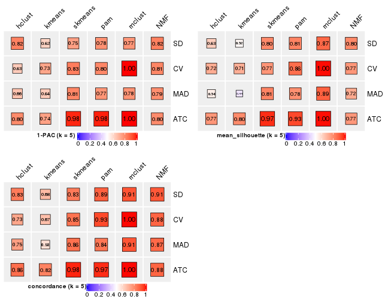
collect_stats(res_list, k = 6)
Collect partitions from all methods:
collect_classes(res_list, k = 2)
collect_classes(res_list, k = 3)
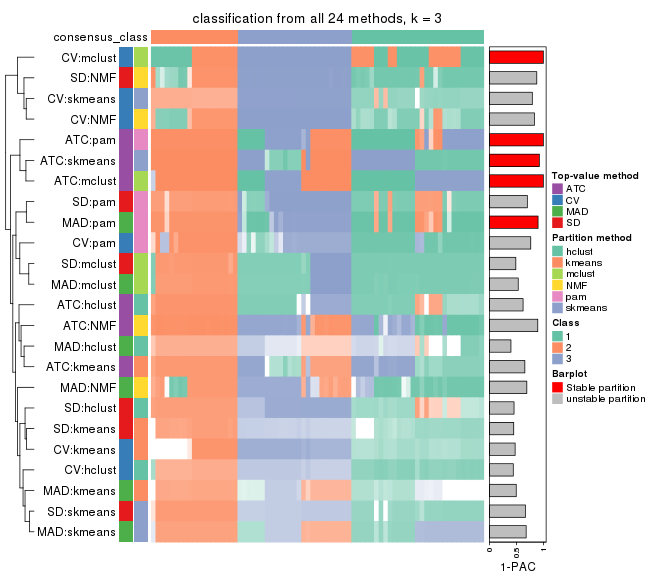
collect_classes(res_list, k = 4)
collect_classes(res_list, k = 5)
collect_classes(res_list, k = 6)
Overlap of top rows from different top-row methods:
top_rows_overlap(res_list, top_n = 1000, method = "euler")
top_rows_overlap(res_list, top_n = 2000, method = "euler")
top_rows_overlap(res_list, top_n = 3000, method = "euler")
top_rows_overlap(res_list, top_n = 4000, method = "euler")
top_rows_overlap(res_list, top_n = 5000, method = "euler")
Also visualize the correspondance of rankings between different top-row methods:
top_rows_overlap(res_list, top_n = 1000, method = "correspondance")
top_rows_overlap(res_list, top_n = 2000, method = "correspondance")
top_rows_overlap(res_list, top_n = 3000, method = "correspondance")
top_rows_overlap(res_list, top_n = 4000, method = "correspondance")
top_rows_overlap(res_list, top_n = 5000, method = "correspondance")
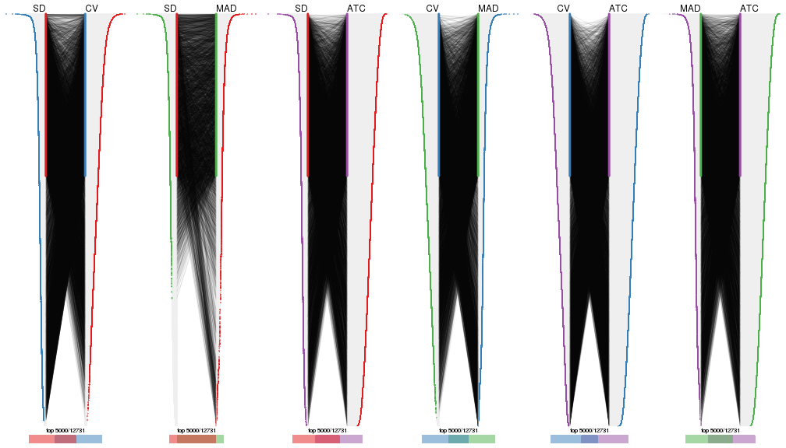
Heatmaps of the top rows:
top_rows_heatmap(res_list, top_n = 1000)
top_rows_heatmap(res_list, top_n = 2000)
top_rows_heatmap(res_list, top_n = 3000)
top_rows_heatmap(res_list, top_n = 4000)
top_rows_heatmap(res_list, top_n = 5000)
The object with results only for a single top-value method and a single partition method can be extracted as:
res = res_list["SD", "hclust"]
# you can also extract it by
# res = res_list["SD:hclust"]
A summary of res and all the functions that can be applied to it:
res
#> A 'ConsensusPartition' object with k = 2, 3, 4, 5, 6.
#> On a matrix with 12731 rows and 73 columns.
#> Top rows (1000, 2000, 3000, 4000, 5000) are extracted by 'SD' method.
#> Subgroups are detected by 'hclust' method.
#> Performed in total 1250 partitions by row resampling.
#> Best k for subgroups seems to be 5.
#>
#> Following methods can be applied to this 'ConsensusPartition' object:
#> [1] "cola_report" "collect_classes" "collect_plots"
#> [4] "collect_stats" "colnames" "compare_signatures"
#> [7] "consensus_heatmap" "dimension_reduction" "functional_enrichment"
#> [10] "get_anno_col" "get_anno" "get_classes"
#> [13] "get_consensus" "get_matrix" "get_membership"
#> [16] "get_param" "get_signatures" "get_stats"
#> [19] "is_best_k" "is_stable_k" "membership_heatmap"
#> [22] "ncol" "nrow" "plot_ecdf"
#> [25] "rownames" "select_partition_number" "show"
#> [28] "suggest_best_k" "test_to_known_factors"
collect_plots() function collects all the plots made from res for all k (number of partitions)
into one single page to provide an easy and fast comparison between different k.
collect_plots(res)
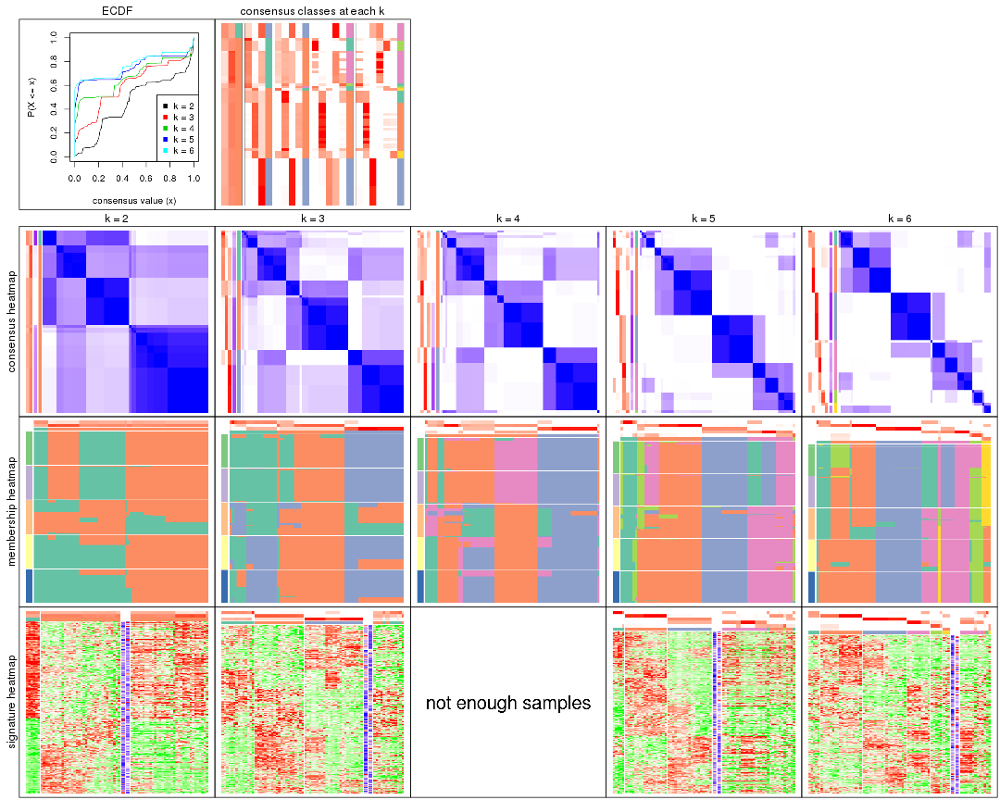
The plots are:
k and the heatmap of
predicted classes for each k.k.k.k.All the plots in panels can be made by individual functions and they are plotted later in this section.
select_partition_number() produces several plots showing different
statistics for choosing “optimized” k. There are following statistics:
k;k, the area increased is defined as \(A_k - A_{k-1}\).The detailed explanations of these statistics can be found in the cola vignette.
Generally speaking, lower PAC score, higher mean silhouette score or higher
concordance corresponds to better partition. Rand index and Jaccard index
measure how similar the current partition is compared to partition with k-1.
If they are too similar, we won't accept k is better than k-1.
select_partition_number(res)
The numeric values for all these statistics can be obtained by get_stats().
get_stats(res)
#> k 1-PAC mean_silhouette concordance area_increased Rand Jaccard
#> 2 2 0.367 0.216 0.670 0.4557 0.847 0.847
#> 3 3 0.456 0.712 0.759 0.3280 0.396 0.322
#> 4 4 0.664 0.295 0.684 0.1103 0.787 0.595
#> 5 5 0.819 0.628 0.832 0.1133 0.696 0.439
#> 6 6 0.769 0.687 0.799 0.0284 0.922 0.723
suggest_best_k() suggests the best \(k\) based on these statistics. The rules are as follows:
suggest_best_k(res)
#> [1] 5
Following shows the table of the partitions (You need to click the show/hide
code output link to see it). The membership matrix (columns with name p*)
is inferred by
clue::cl_consensus()
function with the SE method. Basically the value in the membership matrix
represents the probability to belong to a certain group. The finall class
label for an item is determined with the group with highest probability it
belongs to.
In get_classes() function, the entropy is calculated from the membership
matrix and the silhouette score is calculated from the consensus matrix.
cbind(get_classes(res, k = 2), get_membership(res, k = 2))
#> class entropy silhouette p1 p2
#> SRR2144343 2 0.949 0.5984 0.368 0.632
#> SRR2144345 2 0.949 0.5984 0.368 0.632
#> SRR2144344 2 0.973 -0.6426 0.404 0.596
#> SRR2144342 2 0.987 0.5821 0.432 0.568
#> SRR2144341 2 0.949 0.5984 0.368 0.632
#> SRR2144340 2 0.978 0.5906 0.412 0.588
#> SRR2144339 2 0.949 0.5984 0.368 0.632
#> SRR2144336 2 0.973 -0.6426 0.404 0.596
#> SRR2144338 2 0.949 0.5984 0.368 0.632
#> SRR2144337 2 0.973 -0.6426 0.404 0.596
#> SRR2144335 2 0.973 -0.6426 0.404 0.596
#> SRR2144332 2 0.949 0.5984 0.368 0.632
#> SRR2144334 2 0.949 0.5984 0.368 0.632
#> SRR2144333 2 0.973 -0.6426 0.404 0.596
#> SRR2144331 2 0.949 0.5984 0.368 0.632
#> SRR2144330 2 0.973 -0.6426 0.404 0.596
#> SRR2144328 2 0.949 0.5984 0.368 0.632
#> SRR2144329 2 0.949 0.5984 0.368 0.632
#> SRR2144327 2 0.949 0.5984 0.368 0.632
#> SRR2144326 2 0.973 -0.6426 0.404 0.596
#> SRR2144325 2 0.949 0.5984 0.368 0.632
#> SRR2144323 2 0.949 0.5984 0.368 0.632
#> SRR2144324 2 0.973 -0.6426 0.404 0.596
#> SRR2144321 2 0.949 0.5984 0.368 0.632
#> SRR2144322 2 0.949 0.5984 0.368 0.632
#> SRR2144320 2 0.973 -0.6426 0.404 0.596
#> SRR2144319 2 0.949 0.5984 0.368 0.632
#> SRR2144316 2 0.949 0.5984 0.368 0.632
#> SRR2144317 2 0.973 -0.6426 0.404 0.596
#> SRR2144318 2 0.949 0.5984 0.368 0.632
#> SRR2144315 2 0.973 -0.6426 0.404 0.596
#> SRR2144314 2 0.541 0.1391 0.124 0.876
#> SRR2144313 2 0.973 0.5930 0.404 0.596
#> SRR2144312 2 0.985 -0.6308 0.428 0.572
#> SRR2144311 2 0.987 0.5821 0.432 0.568
#> SRR2144308 2 0.985 -0.6308 0.428 0.572
#> SRR2144309 2 0.985 -0.6308 0.428 0.572
#> SRR2144310 2 0.978 0.5906 0.412 0.588
#> SRR2144307 2 0.973 0.5930 0.404 0.596
#> SRR2144304 2 0.973 0.5930 0.404 0.596
#> SRR2144306 2 0.653 0.0898 0.168 0.832
#> SRR2144303 2 0.978 0.5906 0.412 0.588
#> SRR2144305 2 0.985 -0.6308 0.428 0.572
#> SRR2144302 2 0.985 -0.6308 0.428 0.572
#> SRR2144301 2 0.653 0.0898 0.168 0.832
#> SRR2144300 2 0.973 0.5930 0.404 0.596
#> SRR2144299 2 0.929 0.5519 0.344 0.656
#> SRR2144298 2 0.929 0.5601 0.344 0.656
#> SRR2144297 1 0.987 1.0000 0.568 0.432
#> SRR2144296 2 0.662 0.0798 0.172 0.828
#> SRR2144295 1 0.987 1.0000 0.568 0.432
#> SRR2144293 1 0.987 1.0000 0.568 0.432
#> SRR2144294 2 0.653 0.0898 0.168 0.832
#> SRR2144291 2 0.653 0.0898 0.168 0.832
#> SRR2144292 1 0.987 1.0000 0.568 0.432
#> SRR2144289 2 0.653 0.0898 0.168 0.832
#> SRR2144290 2 0.662 0.0798 0.172 0.828
#> SRR2144287 2 0.653 0.0898 0.168 0.832
#> SRR2144288 1 0.987 1.0000 0.568 0.432
#> SRR2144286 2 0.662 0.0798 0.172 0.828
#> SRR2144285 1 0.987 1.0000 0.568 0.432
#> SRR2144284 2 0.998 0.4604 0.472 0.528
#> SRR2144282 2 0.985 -0.6308 0.428 0.572
#> SRR2144283 2 0.541 0.1391 0.124 0.876
#> SRR2144281 2 0.541 0.1391 0.124 0.876
#> SRR2144279 2 0.973 0.5930 0.404 0.596
#> SRR2144280 2 0.973 0.5930 0.404 0.596
#> SRR2144278 2 0.987 0.5821 0.432 0.568
#> SRR2144277 2 0.987 0.5821 0.432 0.568
#> SRR2144276 2 0.985 -0.6308 0.428 0.572
#> SRR2144274 2 0.987 0.5821 0.432 0.568
#> SRR2144275 2 0.985 -0.6308 0.428 0.572
#> SRR2144273 2 0.662 0.0798 0.172 0.828
cbind(get_classes(res, k = 3), get_membership(res, k = 3))
#> class entropy silhouette p1 p2 p3
#> SRR2144343 2 0.450 0.854 0.000 0.804 0.196
#> SRR2144345 2 0.450 0.854 0.000 0.804 0.196
#> SRR2144344 3 0.103 0.886 0.000 0.024 0.976
#> SRR2144342 2 0.614 0.375 0.256 0.720 0.024
#> SRR2144341 2 0.450 0.854 0.000 0.804 0.196
#> SRR2144340 2 0.650 0.824 0.056 0.736 0.208
#> SRR2144339 2 0.450 0.854 0.000 0.804 0.196
#> SRR2144336 3 0.103 0.886 0.000 0.024 0.976
#> SRR2144338 2 0.549 0.853 0.024 0.780 0.196
#> SRR2144337 3 0.103 0.886 0.000 0.024 0.976
#> SRR2144335 3 0.103 0.886 0.000 0.024 0.976
#> SRR2144332 2 0.450 0.854 0.000 0.804 0.196
#> SRR2144334 2 0.549 0.853 0.024 0.780 0.196
#> SRR2144333 3 0.103 0.886 0.000 0.024 0.976
#> SRR2144331 2 0.549 0.853 0.024 0.780 0.196
#> SRR2144330 3 0.103 0.886 0.000 0.024 0.976
#> SRR2144328 2 0.549 0.853 0.024 0.780 0.196
#> SRR2144329 2 0.450 0.854 0.000 0.804 0.196
#> SRR2144327 2 0.549 0.853 0.024 0.780 0.196
#> SRR2144326 3 0.103 0.886 0.000 0.024 0.976
#> SRR2144325 2 0.450 0.854 0.000 0.804 0.196
#> SRR2144323 2 0.450 0.854 0.000 0.804 0.196
#> SRR2144324 3 0.103 0.886 0.000 0.024 0.976
#> SRR2144321 2 0.450 0.854 0.000 0.804 0.196
#> SRR2144322 2 0.549 0.853 0.024 0.780 0.196
#> SRR2144320 3 0.103 0.886 0.000 0.024 0.976
#> SRR2144319 2 0.450 0.854 0.000 0.804 0.196
#> SRR2144316 2 0.549 0.853 0.024 0.780 0.196
#> SRR2144317 3 0.103 0.886 0.000 0.024 0.976
#> SRR2144318 2 0.549 0.853 0.024 0.780 0.196
#> SRR2144315 3 0.103 0.886 0.000 0.024 0.976
#> SRR2144314 1 0.742 0.576 0.544 0.036 0.420
#> SRR2144313 2 0.965 0.375 0.380 0.412 0.208
#> SRR2144312 3 0.000 0.881 0.000 0.000 1.000
#> SRR2144311 1 0.654 0.400 0.672 0.304 0.024
#> SRR2144308 3 0.000 0.881 0.000 0.000 1.000
#> SRR2144309 3 0.000 0.881 0.000 0.000 1.000
#> SRR2144310 2 0.650 0.824 0.056 0.736 0.208
#> SRR2144307 2 0.963 0.399 0.368 0.424 0.208
#> SRR2144304 2 0.963 0.399 0.368 0.424 0.208
#> SRR2144306 1 0.642 0.633 0.616 0.008 0.376
#> SRR2144303 2 0.654 0.819 0.060 0.736 0.204
#> SRR2144305 3 0.000 0.881 0.000 0.000 1.000
#> SRR2144302 3 0.000 0.881 0.000 0.000 1.000
#> SRR2144301 1 0.642 0.633 0.616 0.008 0.376
#> SRR2144300 2 0.965 0.375 0.380 0.412 0.208
#> SRR2144299 1 0.728 0.341 0.712 0.144 0.144
#> SRR2144298 1 0.549 0.448 0.780 0.196 0.024
#> SRR2144297 3 0.480 0.623 0.220 0.000 0.780
#> SRR2144296 1 0.708 0.626 0.592 0.028 0.380
#> SRR2144295 3 0.480 0.623 0.220 0.000 0.780
#> SRR2144293 3 0.480 0.623 0.220 0.000 0.780
#> SRR2144294 1 0.642 0.633 0.616 0.008 0.376
#> SRR2144291 1 0.642 0.633 0.616 0.008 0.376
#> SRR2144292 3 0.480 0.623 0.220 0.000 0.780
#> SRR2144289 1 0.642 0.633 0.616 0.008 0.376
#> SRR2144290 1 0.708 0.626 0.592 0.028 0.380
#> SRR2144287 1 0.642 0.633 0.616 0.008 0.376
#> SRR2144288 3 0.480 0.623 0.220 0.000 0.780
#> SRR2144286 1 0.708 0.626 0.592 0.028 0.380
#> SRR2144285 3 0.480 0.623 0.220 0.000 0.780
#> SRR2144284 1 0.145 0.543 0.968 0.008 0.024
#> SRR2144282 3 0.000 0.881 0.000 0.000 1.000
#> SRR2144283 1 0.732 0.581 0.548 0.032 0.420
#> SRR2144281 1 0.732 0.581 0.548 0.032 0.420
#> SRR2144279 2 0.965 0.374 0.384 0.408 0.208
#> SRR2144280 2 0.965 0.375 0.380 0.412 0.208
#> SRR2144278 1 0.654 0.400 0.672 0.304 0.024
#> SRR2144277 1 0.654 0.400 0.672 0.304 0.024
#> SRR2144276 3 0.000 0.881 0.000 0.000 1.000
#> SRR2144274 1 0.654 0.400 0.672 0.304 0.024
#> SRR2144275 3 0.000 0.881 0.000 0.000 1.000
#> SRR2144273 1 0.708 0.626 0.592 0.028 0.380
cbind(get_classes(res, k = 4), get_membership(res, k = 4))
#> class entropy silhouette p1 p2 p3 p4
#> SRR2144343 2 0.4916 0.3559 0.000 0.576 0.000 0.424
#> SRR2144345 2 0.4916 0.3559 0.000 0.576 0.000 0.424
#> SRR2144344 3 0.0817 0.9101 0.000 0.000 0.976 0.024
#> SRR2144342 1 0.5179 0.0000 0.728 0.052 0.000 0.220
#> SRR2144341 2 0.4916 0.3559 0.000 0.576 0.000 0.424
#> SRR2144340 2 0.6038 -0.1082 0.424 0.532 0.000 0.044
#> SRR2144339 2 0.4916 0.3559 0.000 0.576 0.000 0.424
#> SRR2144336 3 0.0817 0.9101 0.000 0.000 0.976 0.024
#> SRR2144338 2 0.4961 0.3483 0.000 0.552 0.000 0.448
#> SRR2144337 3 0.0817 0.9101 0.000 0.000 0.976 0.024
#> SRR2144335 3 0.0817 0.9101 0.000 0.000 0.976 0.024
#> SRR2144332 2 0.4916 0.3559 0.000 0.576 0.000 0.424
#> SRR2144334 2 0.4961 0.3483 0.000 0.552 0.000 0.448
#> SRR2144333 3 0.0817 0.9101 0.000 0.000 0.976 0.024
#> SRR2144331 2 0.4961 0.3483 0.000 0.552 0.000 0.448
#> SRR2144330 3 0.0817 0.9101 0.000 0.000 0.976 0.024
#> SRR2144328 2 0.4961 0.3483 0.000 0.552 0.000 0.448
#> SRR2144329 2 0.4916 0.3559 0.000 0.576 0.000 0.424
#> SRR2144327 2 0.4961 0.3483 0.000 0.552 0.000 0.448
#> SRR2144326 3 0.0817 0.9101 0.000 0.000 0.976 0.024
#> SRR2144325 2 0.4916 0.3559 0.000 0.576 0.000 0.424
#> SRR2144323 2 0.4916 0.3559 0.000 0.576 0.000 0.424
#> SRR2144324 3 0.0817 0.9101 0.000 0.000 0.976 0.024
#> SRR2144321 2 0.4916 0.3559 0.000 0.576 0.000 0.424
#> SRR2144322 2 0.4961 0.3483 0.000 0.552 0.000 0.448
#> SRR2144320 3 0.0817 0.9101 0.000 0.000 0.976 0.024
#> SRR2144319 2 0.4916 0.3559 0.000 0.576 0.000 0.424
#> SRR2144316 2 0.4961 0.3483 0.000 0.552 0.000 0.448
#> SRR2144317 3 0.0817 0.9101 0.000 0.000 0.976 0.024
#> SRR2144318 2 0.4961 0.3483 0.000 0.552 0.000 0.448
#> SRR2144315 3 0.0817 0.9101 0.000 0.000 0.976 0.024
#> SRR2144314 2 0.7733 -0.1595 0.200 0.444 0.352 0.004
#> SRR2144313 2 0.0336 0.0699 0.000 0.992 0.008 0.000
#> SRR2144312 3 0.0817 0.9063 0.000 0.024 0.976 0.000
#> SRR2144311 2 0.7770 -0.7668 0.336 0.416 0.000 0.248
#> SRR2144308 3 0.0817 0.9063 0.000 0.024 0.976 0.000
#> SRR2144309 3 0.0817 0.9063 0.000 0.024 0.976 0.000
#> SRR2144310 2 0.6038 -0.1082 0.424 0.532 0.000 0.044
#> SRR2144307 2 0.0804 0.0754 0.012 0.980 0.008 0.000
#> SRR2144304 2 0.0804 0.0754 0.012 0.980 0.008 0.000
#> SRR2144306 2 0.8009 -0.1680 0.268 0.376 0.352 0.004
#> SRR2144303 2 0.6016 -0.1055 0.412 0.544 0.000 0.044
#> SRR2144305 3 0.0817 0.9063 0.000 0.024 0.976 0.000
#> SRR2144302 3 0.0817 0.9063 0.000 0.024 0.976 0.000
#> SRR2144301 2 0.8009 -0.1680 0.268 0.376 0.352 0.004
#> SRR2144300 2 0.0336 0.0699 0.000 0.992 0.008 0.000
#> SRR2144299 2 0.5923 -0.6244 0.036 0.620 0.008 0.336
#> SRR2144298 4 0.5942 0.0000 0.040 0.412 0.000 0.548
#> SRR2144297 3 0.4008 0.7243 0.244 0.000 0.756 0.000
#> SRR2144296 2 0.7793 -0.1575 0.248 0.396 0.356 0.000
#> SRR2144295 3 0.4008 0.7243 0.244 0.000 0.756 0.000
#> SRR2144293 3 0.4008 0.7243 0.244 0.000 0.756 0.000
#> SRR2144294 2 0.8009 -0.1680 0.268 0.376 0.352 0.004
#> SRR2144291 2 0.8009 -0.1680 0.268 0.376 0.352 0.004
#> SRR2144292 3 0.4008 0.7243 0.244 0.000 0.756 0.000
#> SRR2144289 2 0.8009 -0.1680 0.268 0.376 0.352 0.004
#> SRR2144290 2 0.7793 -0.1575 0.248 0.396 0.356 0.000
#> SRR2144287 2 0.8009 -0.1680 0.268 0.376 0.352 0.004
#> SRR2144288 3 0.4008 0.7243 0.244 0.000 0.756 0.000
#> SRR2144286 2 0.7793 -0.1575 0.248 0.396 0.356 0.000
#> SRR2144285 3 0.4008 0.7243 0.244 0.000 0.756 0.000
#> SRR2144284 2 0.7710 -0.7120 0.224 0.408 0.000 0.368
#> SRR2144282 3 0.0817 0.9063 0.000 0.024 0.976 0.000
#> SRR2144283 2 0.7575 -0.1594 0.200 0.444 0.356 0.000
#> SRR2144281 2 0.7575 -0.1594 0.200 0.444 0.356 0.000
#> SRR2144279 2 0.0524 0.0659 0.004 0.988 0.008 0.000
#> SRR2144280 2 0.0336 0.0699 0.000 0.992 0.008 0.000
#> SRR2144278 2 0.7770 -0.7668 0.336 0.416 0.000 0.248
#> SRR2144277 2 0.7770 -0.7668 0.336 0.416 0.000 0.248
#> SRR2144276 3 0.0817 0.9063 0.000 0.024 0.976 0.000
#> SRR2144274 2 0.7770 -0.7668 0.336 0.416 0.000 0.248
#> SRR2144275 3 0.0817 0.9063 0.000 0.024 0.976 0.000
#> SRR2144273 2 0.7793 -0.1575 0.248 0.396 0.356 0.000
cbind(get_classes(res, k = 5), get_membership(res, k = 5))
#> class entropy silhouette p1 p2 p3 p4 p5
#> SRR2144343 2 0.000 0.7599 0.000 1.000 0.000 0.000 0.000
#> SRR2144345 2 0.000 0.7599 0.000 1.000 0.000 0.000 0.000
#> SRR2144344 3 0.480 0.9821 0.000 0.024 0.580 0.396 0.000
#> SRR2144342 1 0.593 0.2926 0.496 0.000 0.396 0.000 0.108
#> SRR2144341 2 0.000 0.7599 0.000 1.000 0.000 0.000 0.000
#> SRR2144340 2 0.632 0.2065 0.004 0.464 0.396 0.000 0.136
#> SRR2144339 2 0.000 0.7599 0.000 1.000 0.000 0.000 0.000
#> SRR2144336 3 0.480 0.9821 0.000 0.024 0.580 0.396 0.000
#> SRR2144338 2 0.141 0.7540 0.000 0.948 0.008 0.000 0.044
#> SRR2144337 3 0.480 0.9821 0.000 0.024 0.580 0.396 0.000
#> SRR2144335 3 0.480 0.9821 0.000 0.024 0.580 0.396 0.000
#> SRR2144332 2 0.000 0.7599 0.000 1.000 0.000 0.000 0.000
#> SRR2144334 2 0.141 0.7540 0.000 0.948 0.008 0.000 0.044
#> SRR2144333 3 0.480 0.9821 0.000 0.024 0.580 0.396 0.000
#> SRR2144331 2 0.141 0.7540 0.000 0.948 0.008 0.000 0.044
#> SRR2144330 3 0.480 0.9821 0.000 0.024 0.580 0.396 0.000
#> SRR2144328 2 0.141 0.7540 0.000 0.948 0.008 0.000 0.044
#> SRR2144329 2 0.000 0.7599 0.000 1.000 0.000 0.000 0.000
#> SRR2144327 2 0.141 0.7540 0.000 0.948 0.008 0.000 0.044
#> SRR2144326 3 0.480 0.9821 0.000 0.024 0.580 0.396 0.000
#> SRR2144325 2 0.000 0.7599 0.000 1.000 0.000 0.000 0.000
#> SRR2144323 2 0.000 0.7599 0.000 1.000 0.000 0.000 0.000
#> SRR2144324 3 0.480 0.9821 0.000 0.024 0.580 0.396 0.000
#> SRR2144321 2 0.000 0.7599 0.000 1.000 0.000 0.000 0.000
#> SRR2144322 2 0.141 0.7540 0.000 0.948 0.008 0.000 0.044
#> SRR2144320 3 0.480 0.9821 0.000 0.024 0.580 0.396 0.000
#> SRR2144319 2 0.000 0.7599 0.000 1.000 0.000 0.000 0.000
#> SRR2144316 2 0.141 0.7540 0.000 0.948 0.008 0.000 0.044
#> SRR2144317 3 0.480 0.9821 0.000 0.024 0.580 0.396 0.000
#> SRR2144318 2 0.141 0.7540 0.000 0.948 0.008 0.000 0.044
#> SRR2144315 3 0.480 0.9821 0.000 0.024 0.580 0.396 0.000
#> SRR2144314 4 0.544 0.3203 0.000 0.064 0.000 0.540 0.396
#> SRR2144313 2 0.528 0.0254 0.016 0.552 0.024 0.000 0.408
#> SRR2144312 3 0.444 0.9752 0.000 0.000 0.596 0.396 0.008
#> SRR2144311 1 0.000 0.7837 1.000 0.000 0.000 0.000 0.000
#> SRR2144308 3 0.444 0.9752 0.000 0.000 0.596 0.396 0.008
#> SRR2144309 3 0.444 0.9752 0.000 0.000 0.596 0.396 0.008
#> SRR2144310 2 0.632 0.2065 0.004 0.464 0.396 0.000 0.136
#> SRR2144307 2 0.547 0.0367 0.016 0.552 0.036 0.000 0.396
#> SRR2144304 2 0.547 0.0367 0.016 0.552 0.036 0.000 0.396
#> SRR2144306 4 0.431 0.4358 0.392 0.000 0.000 0.604 0.004
#> SRR2144303 2 0.659 0.2014 0.016 0.464 0.384 0.000 0.136
#> SRR2144305 3 0.444 0.9752 0.000 0.000 0.596 0.396 0.008
#> SRR2144302 3 0.444 0.9752 0.000 0.000 0.596 0.396 0.008
#> SRR2144301 4 0.431 0.4358 0.392 0.000 0.000 0.604 0.004
#> SRR2144300 2 0.528 0.0254 0.016 0.552 0.024 0.000 0.408
#> SRR2144299 5 0.488 0.0000 0.024 0.184 0.024 0.020 0.748
#> SRR2144298 1 0.393 0.6232 0.672 0.000 0.000 0.000 0.328
#> SRR2144297 4 0.029 0.4976 0.000 0.000 0.008 0.992 0.000
#> SRR2144296 4 0.454 0.4171 0.000 0.012 0.000 0.592 0.396
#> SRR2144295 4 0.029 0.4976 0.000 0.000 0.008 0.992 0.000
#> SRR2144293 4 0.029 0.4976 0.000 0.000 0.008 0.992 0.000
#> SRR2144294 4 0.431 0.4358 0.392 0.000 0.000 0.604 0.004
#> SRR2144291 4 0.431 0.4358 0.392 0.000 0.000 0.604 0.004
#> SRR2144292 4 0.029 0.4976 0.000 0.000 0.008 0.992 0.000
#> SRR2144289 4 0.431 0.4358 0.392 0.000 0.000 0.604 0.004
#> SRR2144290 4 0.454 0.4171 0.000 0.012 0.000 0.592 0.396
#> SRR2144287 4 0.431 0.4358 0.392 0.000 0.000 0.604 0.004
#> SRR2144288 4 0.029 0.4976 0.000 0.000 0.008 0.992 0.000
#> SRR2144286 4 0.454 0.4171 0.000 0.012 0.000 0.592 0.396
#> SRR2144285 4 0.029 0.4976 0.000 0.000 0.008 0.992 0.000
#> SRR2144284 1 0.568 0.4907 0.488 0.000 0.000 0.080 0.432
#> SRR2144282 3 0.444 0.9752 0.000 0.000 0.596 0.396 0.008
#> SRR2144283 4 0.539 0.3276 0.000 0.060 0.000 0.544 0.396
#> SRR2144281 4 0.539 0.3276 0.000 0.060 0.000 0.544 0.396
#> SRR2144279 2 0.607 0.0291 0.072 0.548 0.024 0.000 0.356
#> SRR2144280 2 0.528 0.0254 0.016 0.552 0.024 0.000 0.408
#> SRR2144278 1 0.000 0.7837 1.000 0.000 0.000 0.000 0.000
#> SRR2144277 1 0.000 0.7837 1.000 0.000 0.000 0.000 0.000
#> SRR2144276 3 0.444 0.9752 0.000 0.000 0.596 0.396 0.008
#> SRR2144274 1 0.000 0.7837 1.000 0.000 0.000 0.000 0.000
#> SRR2144275 3 0.444 0.9752 0.000 0.000 0.596 0.396 0.008
#> SRR2144273 4 0.454 0.4171 0.000 0.012 0.000 0.592 0.396
cbind(get_classes(res, k = 6), get_membership(res, k = 6))
#> class entropy silhouette p1 p2 p3 p4 p5 p6
#> SRR2144343 2 0.0000 0.756 0.000 1.000 0.000 0.000 0.000 0.000
#> SRR2144345 2 0.0000 0.756 0.000 1.000 0.000 0.000 0.000 0.000
#> SRR2144344 3 0.0000 0.983 0.000 0.000 1.000 0.000 0.000 0.000
#> SRR2144342 6 0.3868 -0.352 0.000 0.000 0.000 0.000 0.492 0.508
#> SRR2144341 2 0.0000 0.756 0.000 1.000 0.000 0.000 0.000 0.000
#> SRR2144340 6 0.3695 0.627 0.000 0.376 0.000 0.000 0.000 0.624
#> SRR2144339 2 0.0000 0.756 0.000 1.000 0.000 0.000 0.000 0.000
#> SRR2144336 3 0.0000 0.983 0.000 0.000 1.000 0.000 0.000 0.000
#> SRR2144338 2 0.4406 0.678 0.000 0.728 0.000 0.004 0.152 0.116
#> SRR2144337 3 0.0000 0.983 0.000 0.000 1.000 0.000 0.000 0.000
#> SRR2144335 3 0.0000 0.983 0.000 0.000 1.000 0.000 0.000 0.000
#> SRR2144332 2 0.0000 0.756 0.000 1.000 0.000 0.000 0.000 0.000
#> SRR2144334 2 0.4406 0.678 0.000 0.728 0.000 0.004 0.152 0.116
#> SRR2144333 3 0.0000 0.983 0.000 0.000 1.000 0.000 0.000 0.000
#> SRR2144331 2 0.4406 0.678 0.000 0.728 0.000 0.004 0.152 0.116
#> SRR2144330 3 0.0000 0.983 0.000 0.000 1.000 0.000 0.000 0.000
#> SRR2144328 2 0.4406 0.678 0.000 0.728 0.000 0.004 0.152 0.116
#> SRR2144329 2 0.0000 0.756 0.000 1.000 0.000 0.000 0.000 0.000
#> SRR2144327 2 0.4406 0.678 0.000 0.728 0.000 0.004 0.152 0.116
#> SRR2144326 3 0.0000 0.983 0.000 0.000 1.000 0.000 0.000 0.000
#> SRR2144325 2 0.0000 0.756 0.000 1.000 0.000 0.000 0.000 0.000
#> SRR2144323 2 0.0000 0.756 0.000 1.000 0.000 0.000 0.000 0.000
#> SRR2144324 3 0.0000 0.983 0.000 0.000 1.000 0.000 0.000 0.000
#> SRR2144321 2 0.0000 0.756 0.000 1.000 0.000 0.000 0.000 0.000
#> SRR2144322 2 0.4406 0.678 0.000 0.728 0.000 0.004 0.152 0.116
#> SRR2144320 3 0.0000 0.983 0.000 0.000 1.000 0.000 0.000 0.000
#> SRR2144319 2 0.0000 0.756 0.000 1.000 0.000 0.000 0.000 0.000
#> SRR2144316 2 0.4406 0.678 0.000 0.728 0.000 0.004 0.152 0.116
#> SRR2144317 3 0.0000 0.983 0.000 0.000 1.000 0.000 0.000 0.000
#> SRR2144318 2 0.4406 0.678 0.000 0.728 0.000 0.004 0.152 0.116
#> SRR2144315 3 0.0000 0.983 0.000 0.000 1.000 0.000 0.000 0.000
#> SRR2144314 4 0.4739 0.441 0.436 0.048 0.000 0.516 0.000 0.000
#> SRR2144313 1 0.3996 0.837 0.512 0.484 0.000 0.000 0.004 0.000
#> SRR2144312 3 0.0935 0.977 0.032 0.000 0.964 0.004 0.000 0.000
#> SRR2144311 5 0.2730 0.924 0.012 0.000 0.000 0.152 0.836 0.000
#> SRR2144308 3 0.0935 0.977 0.032 0.000 0.964 0.004 0.000 0.000
#> SRR2144309 3 0.0935 0.977 0.032 0.000 0.964 0.004 0.000 0.000
#> SRR2144310 6 0.3695 0.627 0.000 0.376 0.000 0.000 0.000 0.624
#> SRR2144307 1 0.4314 0.831 0.500 0.484 0.000 0.000 0.004 0.012
#> SRR2144304 1 0.4314 0.831 0.500 0.484 0.000 0.000 0.004 0.012
#> SRR2144306 4 0.0146 0.529 0.000 0.000 0.000 0.996 0.004 0.000
#> SRR2144303 6 0.4171 0.616 0.004 0.380 0.000 0.000 0.012 0.604
#> SRR2144305 3 0.0935 0.977 0.032 0.000 0.964 0.004 0.000 0.000
#> SRR2144302 3 0.0935 0.977 0.032 0.000 0.964 0.004 0.000 0.000
#> SRR2144301 4 0.0146 0.529 0.000 0.000 0.000 0.996 0.004 0.000
#> SRR2144300 1 0.3996 0.837 0.512 0.484 0.000 0.000 0.004 0.000
#> SRR2144299 1 0.2003 0.315 0.884 0.116 0.000 0.000 0.000 0.000
#> SRR2144298 5 0.5590 0.679 0.352 0.000 0.000 0.152 0.496 0.000
#> SRR2144297 4 0.3756 0.476 0.000 0.000 0.400 0.600 0.000 0.000
#> SRR2144296 4 0.3817 0.508 0.432 0.000 0.000 0.568 0.000 0.000
#> SRR2144295 4 0.3756 0.476 0.000 0.000 0.400 0.600 0.000 0.000
#> SRR2144293 4 0.3756 0.476 0.000 0.000 0.400 0.600 0.000 0.000
#> SRR2144294 4 0.0146 0.529 0.000 0.000 0.000 0.996 0.004 0.000
#> SRR2144291 4 0.0146 0.529 0.000 0.000 0.000 0.996 0.004 0.000
#> SRR2144292 4 0.3756 0.476 0.000 0.000 0.400 0.600 0.000 0.000
#> SRR2144289 4 0.0146 0.529 0.000 0.000 0.000 0.996 0.004 0.000
#> SRR2144290 4 0.3817 0.508 0.432 0.000 0.000 0.568 0.000 0.000
#> SRR2144287 4 0.0146 0.529 0.000 0.000 0.000 0.996 0.004 0.000
#> SRR2144288 4 0.3756 0.476 0.000 0.000 0.400 0.600 0.000 0.000
#> SRR2144286 4 0.3817 0.508 0.432 0.000 0.000 0.568 0.000 0.000
#> SRR2144285 4 0.3756 0.476 0.000 0.000 0.400 0.600 0.000 0.000
#> SRR2144284 4 0.6835 -0.427 0.112 0.000 0.000 0.400 0.112 0.376
#> SRR2144282 3 0.0935 0.977 0.032 0.000 0.964 0.004 0.000 0.000
#> SRR2144283 4 0.4685 0.446 0.436 0.044 0.000 0.520 0.000 0.000
#> SRR2144281 4 0.4685 0.446 0.436 0.044 0.000 0.520 0.000 0.000
#> SRR2144279 2 0.5095 -0.794 0.456 0.484 0.000 0.016 0.044 0.000
#> SRR2144280 1 0.3996 0.837 0.512 0.484 0.000 0.000 0.004 0.000
#> SRR2144278 5 0.2730 0.924 0.012 0.000 0.000 0.152 0.836 0.000
#> SRR2144277 5 0.2730 0.924 0.012 0.000 0.000 0.152 0.836 0.000
#> SRR2144276 3 0.0935 0.977 0.032 0.000 0.964 0.004 0.000 0.000
#> SRR2144274 5 0.2730 0.924 0.012 0.000 0.000 0.152 0.836 0.000
#> SRR2144275 3 0.0935 0.977 0.032 0.000 0.964 0.004 0.000 0.000
#> SRR2144273 4 0.3817 0.508 0.432 0.000 0.000 0.568 0.000 0.000
Heatmaps for the consensus matrix. It visualizes the probability of two samples to be in a same group.
consensus_heatmap(res, k = 2)
consensus_heatmap(res, k = 3)
consensus_heatmap(res, k = 4)
consensus_heatmap(res, k = 5)

consensus_heatmap(res, k = 6)

Heatmaps for the membership of samples in all partitions to see how consistent they are:
membership_heatmap(res, k = 2)
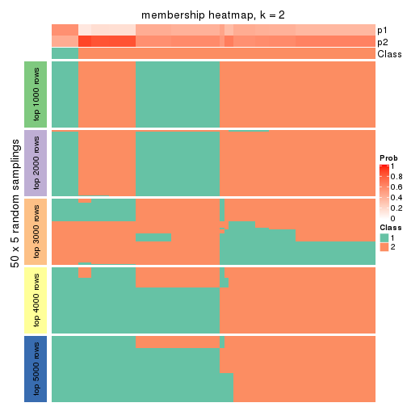
membership_heatmap(res, k = 3)
membership_heatmap(res, k = 4)
membership_heatmap(res, k = 5)
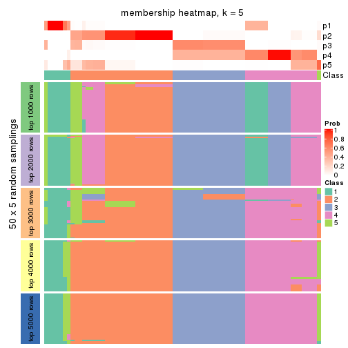
membership_heatmap(res, k = 6)
As soon as we have had the classes for columns, we can look for signatures which are significantly different between classes which can be candidate marks for certain classes. Following are the heatmaps for signatures.
Signature heatmaps where rows are scaled:
get_signatures(res, k = 2)
get_signatures(res, k = 3)
get_signatures(res, k = 4)

get_signatures(res, k = 5)
get_signatures(res, k = 6)
Signature heatmaps where rows are not scaled:
get_signatures(res, k = 2, scale_rows = FALSE)
get_signatures(res, k = 3, scale_rows = FALSE)
get_signatures(res, k = 4, scale_rows = FALSE)

get_signatures(res, k = 5, scale_rows = FALSE)
get_signatures(res, k = 6, scale_rows = FALSE)
Compare the overlap of signatures from different k:
compare_signatures(res)
get_signature() returns a data frame invisibly. TO get the list of signatures, the function
call should be assigned to a variable explicitly. In following code, if plot argument is set
to FALSE, no heatmap is plotted while only the differential analysis is performed.
# code only for demonstration
tb = get_signature(res, k = ..., plot = FALSE)
An example of the output of tb is:
#> which_row fdr mean_1 mean_2 scaled_mean_1 scaled_mean_2 km
#> 1 38 0.042760348 8.373488 9.131774 -0.5533452 0.5164555 1
#> 2 40 0.018707592 7.106213 8.469186 -0.6173731 0.5762149 1
#> 3 55 0.019134737 10.221463 11.207825 -0.6159697 0.5749050 1
#> 4 59 0.006059896 5.921854 7.869574 -0.6899429 0.6439467 1
#> 5 60 0.018055526 8.928898 10.211722 -0.6204761 0.5791110 1
#> 6 98 0.009384629 15.714769 14.887706 0.6635654 -0.6193277 2
...
The columns in tb are:
which_row: row indices corresponding to the input matrix.fdr: FDR for the differential test. mean_x: The mean value in group x.scaled_mean_x: The mean value in group x after rows are scaled.km: Row groups if k-means clustering is applied to rows.UMAP plot which shows how samples are separated.
dimension_reduction(res, k = 2, method = "UMAP")
dimension_reduction(res, k = 3, method = "UMAP")
dimension_reduction(res, k = 4, method = "UMAP")
dimension_reduction(res, k = 5, method = "UMAP")
dimension_reduction(res, k = 6, method = "UMAP")
Following heatmap shows how subgroups are split when increasing k:
collect_classes(res)
If matrix rows can be associated to genes, consider to use functional_enrichment(res,
...) to perform function enrichment for the signature genes. See this vignette for more detailed explanations.
The object with results only for a single top-value method and a single partition method can be extracted as:
res = res_list["SD", "kmeans"]
# you can also extract it by
# res = res_list["SD:kmeans"]
A summary of res and all the functions that can be applied to it:
res
#> A 'ConsensusPartition' object with k = 2, 3, 4, 5, 6.
#> On a matrix with 12731 rows and 73 columns.
#> Top rows (1000, 2000, 3000, 4000, 5000) are extracted by 'SD' method.
#> Subgroups are detected by 'kmeans' method.
#> Performed in total 1250 partitions by row resampling.
#> Best k for subgroups seems to be 6.
#>
#> Following methods can be applied to this 'ConsensusPartition' object:
#> [1] "cola_report" "collect_classes" "collect_plots"
#> [4] "collect_stats" "colnames" "compare_signatures"
#> [7] "consensus_heatmap" "dimension_reduction" "functional_enrichment"
#> [10] "get_anno_col" "get_anno" "get_classes"
#> [13] "get_consensus" "get_matrix" "get_membership"
#> [16] "get_param" "get_signatures" "get_stats"
#> [19] "is_best_k" "is_stable_k" "membership_heatmap"
#> [22] "ncol" "nrow" "plot_ecdf"
#> [25] "rownames" "select_partition_number" "show"
#> [28] "suggest_best_k" "test_to_known_factors"
collect_plots() function collects all the plots made from res for all k (number of partitions)
into one single page to provide an easy and fast comparison between different k.
collect_plots(res)
The plots are:
k and the heatmap of
predicted classes for each k.k.k.k.All the plots in panels can be made by individual functions and they are plotted later in this section.
select_partition_number() produces several plots showing different
statistics for choosing “optimized” k. There are following statistics:
k;k, the area increased is defined as \(A_k - A_{k-1}\).The detailed explanations of these statistics can be found in the cola vignette.
Generally speaking, lower PAC score, higher mean silhouette score or higher
concordance corresponds to better partition. Rand index and Jaccard index
measure how similar the current partition is compared to partition with k-1.
If they are too similar, we won't accept k is better than k-1.
select_partition_number(res)
The numeric values for all these statistics can be obtained by get_stats().
get_stats(res)
#> k 1-PAC mean_silhouette concordance area_increased Rand Jaccard
#> 2 2 0.196 0.383 0.650 0.4744 0.495 0.495
#> 3 3 0.450 0.543 0.676 0.3996 0.703 0.474
#> 4 4 0.516 0.618 0.674 0.1169 0.886 0.675
#> 5 5 0.616 0.518 0.677 0.0647 0.913 0.690
#> 6 6 0.720 0.749 0.749 0.0424 0.932 0.704
suggest_best_k() suggests the best \(k\) based on these statistics. The rules are as follows:
suggest_best_k(res)
#> [1] 6
Following shows the table of the partitions (You need to click the show/hide
code output link to see it). The membership matrix (columns with name p*)
is inferred by
clue::cl_consensus()
function with the SE method. Basically the value in the membership matrix
represents the probability to belong to a certain group. The finall class
label for an item is determined with the group with highest probability it
belongs to.
In get_classes() function, the entropy is calculated from the membership
matrix and the silhouette score is calculated from the consensus matrix.
cbind(get_classes(res, k = 2), get_membership(res, k = 2))
#> class entropy silhouette p1 p2
#> SRR2144343 1 0.9754 0.306 0.592 0.408
#> SRR2144345 2 0.9993 -0.228 0.484 0.516
#> SRR2144344 2 0.2043 0.477 0.032 0.968
#> SRR2144342 1 0.4161 0.624 0.916 0.084
#> SRR2144341 2 0.9993 -0.228 0.484 0.516
#> SRR2144340 1 0.9323 0.346 0.652 0.348
#> SRR2144339 2 0.9993 -0.228 0.484 0.516
#> SRR2144336 2 0.2043 0.477 0.032 0.968
#> SRR2144338 1 0.9881 0.309 0.564 0.436
#> SRR2144337 2 0.2043 0.477 0.032 0.968
#> SRR2144335 2 0.2043 0.477 0.032 0.968
#> SRR2144332 2 0.9993 -0.228 0.484 0.516
#> SRR2144334 1 0.9909 0.298 0.556 0.444
#> SRR2144333 2 0.2043 0.477 0.032 0.968
#> SRR2144331 1 0.9909 0.298 0.556 0.444
#> SRR2144330 2 0.2043 0.477 0.032 0.968
#> SRR2144328 1 0.9909 0.298 0.556 0.444
#> SRR2144329 2 0.9993 -0.228 0.484 0.516
#> SRR2144327 1 0.9909 0.298 0.556 0.444
#> SRR2144326 2 0.2043 0.477 0.032 0.968
#> SRR2144325 2 0.9993 -0.228 0.484 0.516
#> SRR2144323 2 0.9993 -0.228 0.484 0.516
#> SRR2144324 2 0.2043 0.477 0.032 0.968
#> SRR2144321 2 0.9993 -0.228 0.484 0.516
#> SRR2144322 1 0.9881 0.309 0.564 0.436
#> SRR2144320 2 0.2043 0.477 0.032 0.968
#> SRR2144319 2 0.9993 -0.228 0.484 0.516
#> SRR2144316 1 0.9881 0.309 0.564 0.436
#> SRR2144317 2 0.2043 0.477 0.032 0.968
#> SRR2144318 1 0.9881 0.309 0.564 0.436
#> SRR2144315 2 0.6048 0.454 0.148 0.852
#> SRR2144314 1 0.7219 0.598 0.800 0.200
#> SRR2144313 1 0.4298 0.632 0.912 0.088
#> SRR2144312 2 0.9983 0.350 0.476 0.524
#> SRR2144311 1 0.0672 0.637 0.992 0.008
#> SRR2144308 2 0.9896 0.368 0.440 0.560
#> SRR2144309 2 0.9983 0.350 0.476 0.524
#> SRR2144310 1 0.4022 0.625 0.920 0.080
#> SRR2144307 1 0.5294 0.626 0.880 0.120
#> SRR2144304 1 0.5294 0.626 0.880 0.120
#> SRR2144306 1 0.6247 0.614 0.844 0.156
#> SRR2144303 1 0.1843 0.639 0.972 0.028
#> SRR2144305 2 0.9983 0.350 0.476 0.524
#> SRR2144302 2 0.9983 0.350 0.476 0.524
#> SRR2144301 1 0.8608 0.442 0.716 0.284
#> SRR2144300 1 0.3584 0.625 0.932 0.068
#> SRR2144299 1 0.3584 0.625 0.932 0.068
#> SRR2144298 1 0.0672 0.637 0.992 0.008
#> SRR2144297 2 0.9323 0.382 0.348 0.652
#> SRR2144296 1 0.9393 0.366 0.644 0.356
#> SRR2144295 2 0.9323 0.382 0.348 0.652
#> SRR2144293 2 0.9323 0.382 0.348 0.652
#> SRR2144294 1 0.7299 0.605 0.796 0.204
#> SRR2144291 1 0.6343 0.608 0.840 0.160
#> SRR2144292 2 0.9323 0.382 0.348 0.652
#> SRR2144289 1 0.8608 0.442 0.716 0.284
#> SRR2144290 1 0.9393 0.366 0.644 0.356
#> SRR2144287 1 0.6343 0.608 0.840 0.160
#> SRR2144288 2 0.9323 0.382 0.348 0.652
#> SRR2144286 1 0.9393 0.366 0.644 0.356
#> SRR2144285 2 0.9323 0.382 0.348 0.652
#> SRR2144284 1 0.4690 0.618 0.900 0.100
#> SRR2144282 2 0.9983 0.350 0.476 0.524
#> SRR2144283 1 0.7745 0.575 0.772 0.228
#> SRR2144281 1 0.7815 0.572 0.768 0.232
#> SRR2144279 1 0.3584 0.625 0.932 0.068
#> SRR2144280 1 0.3584 0.625 0.932 0.068
#> SRR2144278 1 0.0672 0.637 0.992 0.008
#> SRR2144277 1 0.0672 0.637 0.992 0.008
#> SRR2144276 2 0.9983 0.350 0.476 0.524
#> SRR2144274 1 0.0672 0.637 0.992 0.008
#> SRR2144275 2 0.9977 0.348 0.472 0.528
#> SRR2144273 1 0.9393 0.366 0.644 0.356
cbind(get_classes(res, k = 3), get_membership(res, k = 3))
#> class entropy silhouette p1 p2 p3
#> SRR2144343 2 0.250 0.8081 0.068 0.928 0.004
#> SRR2144345 2 0.134 0.8478 0.016 0.972 0.012
#> SRR2144344 3 0.647 0.4478 0.008 0.388 0.604
#> SRR2144342 1 0.334 0.6328 0.880 0.120 0.000
#> SRR2144341 2 0.134 0.8478 0.016 0.972 0.012
#> SRR2144340 1 0.620 -0.0218 0.576 0.424 0.000
#> SRR2144339 2 0.134 0.8478 0.016 0.972 0.012
#> SRR2144336 3 0.647 0.4478 0.008 0.388 0.604
#> SRR2144338 2 0.586 0.7653 0.240 0.740 0.020
#> SRR2144337 3 0.647 0.4478 0.008 0.388 0.604
#> SRR2144335 3 0.647 0.4478 0.008 0.388 0.604
#> SRR2144332 2 0.134 0.8478 0.016 0.972 0.012
#> SRR2144334 2 0.546 0.7923 0.204 0.776 0.020
#> SRR2144333 3 0.647 0.4478 0.008 0.388 0.604
#> SRR2144331 2 0.515 0.8028 0.180 0.800 0.020
#> SRR2144330 3 0.647 0.4478 0.008 0.388 0.604
#> SRR2144328 2 0.546 0.7923 0.204 0.776 0.020
#> SRR2144329 2 0.134 0.8478 0.016 0.972 0.012
#> SRR2144327 2 0.498 0.8057 0.168 0.812 0.020
#> SRR2144326 3 0.647 0.4478 0.008 0.388 0.604
#> SRR2144325 2 0.134 0.8478 0.016 0.972 0.012
#> SRR2144323 2 0.134 0.8478 0.016 0.972 0.012
#> SRR2144324 3 0.647 0.4478 0.008 0.388 0.604
#> SRR2144321 2 0.134 0.8478 0.016 0.972 0.012
#> SRR2144322 2 0.582 0.7703 0.236 0.744 0.020
#> SRR2144320 3 0.647 0.4478 0.008 0.388 0.604
#> SRR2144319 2 0.134 0.8478 0.016 0.972 0.012
#> SRR2144316 2 0.582 0.7703 0.236 0.744 0.020
#> SRR2144317 3 0.647 0.4478 0.008 0.388 0.604
#> SRR2144318 2 0.582 0.7703 0.236 0.744 0.020
#> SRR2144315 3 0.569 0.5204 0.008 0.268 0.724
#> SRR2144314 1 0.996 0.4642 0.360 0.348 0.292
#> SRR2144313 1 0.663 0.6215 0.700 0.260 0.040
#> SRR2144312 3 0.615 0.4760 0.328 0.008 0.664
#> SRR2144311 1 0.228 0.6677 0.940 0.052 0.008
#> SRR2144308 3 0.613 0.5165 0.268 0.020 0.712
#> SRR2144309 3 0.615 0.4760 0.328 0.008 0.664
#> SRR2144310 1 0.334 0.6345 0.880 0.120 0.000
#> SRR2144307 1 0.660 0.6163 0.696 0.268 0.036
#> SRR2144304 1 0.660 0.6163 0.696 0.268 0.036
#> SRR2144306 1 0.894 0.5097 0.560 0.176 0.264
#> SRR2144303 1 0.304 0.6450 0.896 0.104 0.000
#> SRR2144305 3 0.645 0.4543 0.352 0.012 0.636
#> SRR2144302 3 0.620 0.4669 0.336 0.008 0.656
#> SRR2144301 1 0.764 0.4889 0.592 0.056 0.352
#> SRR2144300 1 0.614 0.6323 0.748 0.212 0.040
#> SRR2144299 1 0.605 0.6315 0.756 0.204 0.040
#> SRR2144298 1 0.217 0.6671 0.944 0.048 0.008
#> SRR2144297 3 0.268 0.5089 0.068 0.008 0.924
#> SRR2144296 3 0.938 -0.3559 0.384 0.172 0.444
#> SRR2144295 3 0.268 0.5089 0.068 0.008 0.924
#> SRR2144293 3 0.249 0.5133 0.060 0.008 0.932
#> SRR2144294 1 0.843 0.5088 0.588 0.120 0.292
#> SRR2144291 1 0.744 0.5216 0.628 0.056 0.316
#> SRR2144292 3 0.268 0.5089 0.068 0.008 0.924
#> SRR2144289 1 0.766 0.4862 0.588 0.056 0.356
#> SRR2144290 3 0.938 -0.3559 0.384 0.172 0.444
#> SRR2144287 1 0.747 0.5184 0.624 0.056 0.320
#> SRR2144288 3 0.268 0.5089 0.068 0.008 0.924
#> SRR2144286 3 0.938 -0.3559 0.384 0.172 0.444
#> SRR2144285 3 0.238 0.5149 0.056 0.008 0.936
#> SRR2144284 1 0.683 0.5627 0.692 0.048 0.260
#> SRR2144282 3 0.610 0.4831 0.320 0.008 0.672
#> SRR2144283 1 0.957 0.3882 0.416 0.196 0.388
#> SRR2144281 1 0.962 0.3994 0.420 0.204 0.376
#> SRR2144279 1 0.614 0.6323 0.748 0.212 0.040
#> SRR2144280 1 0.614 0.6323 0.748 0.212 0.040
#> SRR2144278 1 0.228 0.6677 0.940 0.052 0.008
#> SRR2144277 1 0.228 0.6677 0.940 0.052 0.008
#> SRR2144276 3 0.610 0.4831 0.320 0.008 0.672
#> SRR2144274 1 0.228 0.6677 0.940 0.052 0.008
#> SRR2144275 3 0.610 0.4831 0.320 0.008 0.672
#> SRR2144273 3 0.938 -0.3559 0.384 0.172 0.444
cbind(get_classes(res, k = 4), get_membership(res, k = 4))
#> class entropy silhouette p1 p2 p3 p4
#> SRR2144343 2 0.4274 0.686 0.108 0.820 0.072 0.000
#> SRR2144345 2 0.1978 0.772 0.004 0.928 0.068 0.000
#> SRR2144344 3 0.3831 0.574 0.000 0.204 0.792 0.004
#> SRR2144342 1 0.4019 0.713 0.792 0.012 0.000 0.196
#> SRR2144341 2 0.1978 0.772 0.004 0.928 0.068 0.000
#> SRR2144340 1 0.6446 0.180 0.584 0.328 0.000 0.088
#> SRR2144339 2 0.1978 0.772 0.004 0.928 0.068 0.000
#> SRR2144336 3 0.3831 0.574 0.000 0.204 0.792 0.004
#> SRR2144338 2 0.7170 0.678 0.160 0.636 0.032 0.172
#> SRR2144337 3 0.3831 0.574 0.000 0.204 0.792 0.004
#> SRR2144335 3 0.3831 0.574 0.000 0.204 0.792 0.004
#> SRR2144332 2 0.1978 0.772 0.004 0.928 0.068 0.000
#> SRR2144334 2 0.7010 0.689 0.152 0.652 0.032 0.164
#> SRR2144333 3 0.3831 0.574 0.000 0.204 0.792 0.004
#> SRR2144331 2 0.6757 0.699 0.148 0.676 0.032 0.144
#> SRR2144330 3 0.3831 0.574 0.000 0.204 0.792 0.004
#> SRR2144328 2 0.7010 0.689 0.152 0.652 0.032 0.164
#> SRR2144329 2 0.1978 0.772 0.004 0.928 0.068 0.000
#> SRR2144327 2 0.6622 0.703 0.140 0.688 0.032 0.140
#> SRR2144326 3 0.3831 0.574 0.000 0.204 0.792 0.004
#> SRR2144325 2 0.1978 0.772 0.004 0.928 0.068 0.000
#> SRR2144323 2 0.1978 0.772 0.004 0.928 0.068 0.000
#> SRR2144324 3 0.3831 0.574 0.000 0.204 0.792 0.004
#> SRR2144321 2 0.1978 0.772 0.004 0.928 0.068 0.000
#> SRR2144322 2 0.7170 0.678 0.160 0.636 0.032 0.172
#> SRR2144320 3 0.3831 0.574 0.000 0.204 0.792 0.004
#> SRR2144319 2 0.1978 0.772 0.004 0.928 0.068 0.000
#> SRR2144316 2 0.7170 0.678 0.160 0.636 0.032 0.172
#> SRR2144317 3 0.3831 0.574 0.000 0.204 0.792 0.004
#> SRR2144318 2 0.7170 0.678 0.160 0.636 0.032 0.172
#> SRR2144315 3 0.3266 0.615 0.048 0.064 0.884 0.004
#> SRR2144314 4 0.7639 0.359 0.112 0.412 0.024 0.452
#> SRR2144313 1 0.6383 0.760 0.708 0.124 0.032 0.136
#> SRR2144312 3 0.5543 0.497 0.360 0.000 0.612 0.028
#> SRR2144311 1 0.4579 0.778 0.720 0.004 0.004 0.272
#> SRR2144308 3 0.3933 0.587 0.200 0.000 0.792 0.008
#> SRR2144309 3 0.5543 0.497 0.360 0.000 0.612 0.028
#> SRR2144310 1 0.5361 0.636 0.724 0.068 0.000 0.208
#> SRR2144307 1 0.6383 0.760 0.708 0.124 0.032 0.136
#> SRR2144304 1 0.6383 0.760 0.708 0.124 0.032 0.136
#> SRR2144306 4 0.6966 0.204 0.160 0.268 0.000 0.572
#> SRR2144303 1 0.4485 0.766 0.740 0.012 0.000 0.248
#> SRR2144305 3 0.5112 0.471 0.384 0.000 0.608 0.008
#> SRR2144302 3 0.5558 0.492 0.364 0.000 0.608 0.028
#> SRR2144301 4 0.0336 0.711 0.000 0.008 0.000 0.992
#> SRR2144300 1 0.6409 0.762 0.708 0.112 0.036 0.144
#> SRR2144299 1 0.6409 0.762 0.708 0.112 0.036 0.144
#> SRR2144298 1 0.4579 0.778 0.720 0.004 0.004 0.272
#> SRR2144297 3 0.7155 0.198 0.092 0.012 0.456 0.440
#> SRR2144296 4 0.6357 0.720 0.108 0.088 0.076 0.728
#> SRR2144295 3 0.7155 0.198 0.092 0.012 0.456 0.440
#> SRR2144293 3 0.7154 0.207 0.092 0.012 0.460 0.436
#> SRR2144294 4 0.4753 0.580 0.128 0.084 0.000 0.788
#> SRR2144291 4 0.2002 0.686 0.044 0.020 0.000 0.936
#> SRR2144292 3 0.7154 0.207 0.092 0.012 0.460 0.436
#> SRR2144289 4 0.1843 0.713 0.016 0.008 0.028 0.948
#> SRR2144290 4 0.6357 0.720 0.108 0.088 0.076 0.728
#> SRR2144287 4 0.1820 0.691 0.036 0.020 0.000 0.944
#> SRR2144288 3 0.7155 0.198 0.092 0.012 0.456 0.440
#> SRR2144286 4 0.6357 0.720 0.108 0.088 0.076 0.728
#> SRR2144285 3 0.7154 0.207 0.092 0.012 0.460 0.436
#> SRR2144284 4 0.2796 0.642 0.092 0.016 0.000 0.892
#> SRR2144282 3 0.5543 0.497 0.360 0.000 0.612 0.028
#> SRR2144283 4 0.6197 0.717 0.112 0.092 0.060 0.736
#> SRR2144281 4 0.6535 0.696 0.108 0.132 0.052 0.708
#> SRR2144279 1 0.6409 0.762 0.708 0.112 0.036 0.144
#> SRR2144280 1 0.6409 0.762 0.708 0.112 0.036 0.144
#> SRR2144278 1 0.4579 0.778 0.720 0.004 0.004 0.272
#> SRR2144277 1 0.4579 0.778 0.720 0.004 0.004 0.272
#> SRR2144276 3 0.5543 0.497 0.360 0.000 0.612 0.028
#> SRR2144274 1 0.4579 0.778 0.720 0.004 0.004 0.272
#> SRR2144275 3 0.5543 0.497 0.360 0.000 0.612 0.028
#> SRR2144273 4 0.6357 0.720 0.108 0.088 0.076 0.728
cbind(get_classes(res, k = 5), get_membership(res, k = 5))
#> class entropy silhouette p1 p2 p3 p4 p5
#> SRR2144343 2 0.407 0.47303 0.080 0.816 0.000 0.020 0.084
#> SRR2144345 2 0.000 0.65726 0.000 1.000 0.000 0.000 0.000
#> SRR2144344 3 0.719 0.65563 0.000 0.220 0.400 0.024 0.356
#> SRR2144342 1 0.159 0.72294 0.940 0.000 0.004 0.004 0.052
#> SRR2144341 2 0.000 0.65726 0.000 1.000 0.000 0.000 0.000
#> SRR2144340 1 0.581 0.37377 0.636 0.144 0.000 0.008 0.212
#> SRR2144339 2 0.000 0.65726 0.000 1.000 0.000 0.000 0.000
#> SRR2144336 3 0.719 0.65563 0.000 0.220 0.400 0.024 0.356
#> SRR2144338 2 0.604 0.00319 0.072 0.456 0.000 0.016 0.456
#> SRR2144337 3 0.719 0.65563 0.000 0.220 0.400 0.024 0.356
#> SRR2144335 3 0.719 0.65563 0.000 0.220 0.400 0.024 0.356
#> SRR2144332 2 0.000 0.65726 0.000 1.000 0.000 0.000 0.000
#> SRR2144334 2 0.584 0.06603 0.056 0.472 0.000 0.016 0.456
#> SRR2144333 3 0.719 0.65563 0.000 0.220 0.400 0.024 0.356
#> SRR2144331 2 0.579 0.07739 0.052 0.476 0.000 0.016 0.456
#> SRR2144330 3 0.719 0.65563 0.000 0.220 0.400 0.024 0.356
#> SRR2144328 2 0.584 0.06603 0.056 0.472 0.000 0.016 0.456
#> SRR2144329 2 0.000 0.65726 0.000 1.000 0.000 0.000 0.000
#> SRR2144327 2 0.573 0.08773 0.048 0.480 0.000 0.016 0.456
#> SRR2144326 3 0.719 0.65563 0.000 0.220 0.400 0.024 0.356
#> SRR2144325 2 0.000 0.65726 0.000 1.000 0.000 0.000 0.000
#> SRR2144323 2 0.000 0.65726 0.000 1.000 0.000 0.000 0.000
#> SRR2144324 3 0.719 0.65563 0.000 0.220 0.400 0.024 0.356
#> SRR2144321 2 0.000 0.65726 0.000 1.000 0.000 0.000 0.000
#> SRR2144322 5 0.604 -0.37455 0.072 0.456 0.000 0.016 0.456
#> SRR2144320 3 0.719 0.65563 0.000 0.220 0.400 0.024 0.356
#> SRR2144319 2 0.000 0.65726 0.000 1.000 0.000 0.000 0.000
#> SRR2144316 2 0.604 0.00319 0.072 0.456 0.000 0.016 0.456
#> SRR2144317 3 0.719 0.65563 0.000 0.220 0.400 0.024 0.356
#> SRR2144318 2 0.604 0.00319 0.072 0.456 0.000 0.016 0.456
#> SRR2144315 3 0.609 0.60378 0.000 0.084 0.576 0.024 0.316
#> SRR2144314 4 0.574 0.21336 0.024 0.304 0.008 0.620 0.044
#> SRR2144313 1 0.719 0.74477 0.624 0.056 0.088 0.152 0.080
#> SRR2144312 3 0.252 0.48031 0.100 0.000 0.884 0.016 0.000
#> SRR2144311 1 0.179 0.75169 0.940 0.000 0.016 0.032 0.012
#> SRR2144308 3 0.179 0.51155 0.008 0.004 0.932 0.000 0.056
#> SRR2144309 3 0.252 0.48031 0.100 0.000 0.884 0.016 0.000
#> SRR2144310 1 0.255 0.65478 0.876 0.000 0.004 0.004 0.116
#> SRR2144307 1 0.728 0.74380 0.616 0.056 0.088 0.156 0.084
#> SRR2144304 1 0.728 0.74380 0.616 0.056 0.088 0.156 0.084
#> SRR2144306 5 0.767 0.52956 0.160 0.096 0.004 0.248 0.492
#> SRR2144303 1 0.229 0.74116 0.900 0.000 0.000 0.016 0.084
#> SRR2144305 3 0.213 0.48492 0.108 0.000 0.892 0.000 0.000
#> SRR2144302 3 0.252 0.48031 0.100 0.000 0.884 0.016 0.000
#> SRR2144301 4 0.515 0.43870 0.164 0.000 0.004 0.704 0.128
#> SRR2144300 1 0.727 0.74491 0.612 0.048 0.096 0.164 0.080
#> SRR2144299 1 0.764 0.72154 0.572 0.048 0.100 0.188 0.092
#> SRR2144298 1 0.227 0.74418 0.920 0.000 0.020 0.032 0.028
#> SRR2144297 4 0.566 0.44293 0.000 0.000 0.384 0.532 0.084
#> SRR2144296 4 0.170 0.58652 0.016 0.028 0.012 0.944 0.000
#> SRR2144295 4 0.566 0.44293 0.000 0.000 0.384 0.532 0.084
#> SRR2144293 4 0.570 0.40489 0.000 0.000 0.408 0.508 0.084
#> SRR2144294 5 0.644 0.34792 0.140 0.004 0.004 0.360 0.492
#> SRR2144291 4 0.546 0.39303 0.172 0.000 0.004 0.672 0.152
#> SRR2144292 4 0.566 0.44293 0.000 0.000 0.384 0.532 0.084
#> SRR2144289 4 0.499 0.45621 0.156 0.000 0.004 0.720 0.120
#> SRR2144290 4 0.172 0.58763 0.016 0.024 0.016 0.944 0.000
#> SRR2144287 4 0.542 0.40031 0.168 0.000 0.004 0.676 0.152
#> SRR2144288 4 0.566 0.44293 0.000 0.000 0.384 0.532 0.084
#> SRR2144286 4 0.170 0.58652 0.016 0.028 0.012 0.944 0.000
#> SRR2144285 4 0.570 0.40489 0.000 0.000 0.408 0.508 0.084
#> SRR2144284 4 0.646 0.19971 0.304 0.000 0.008 0.520 0.168
#> SRR2144282 3 0.252 0.48031 0.100 0.000 0.884 0.016 0.000
#> SRR2144283 4 0.247 0.57274 0.020 0.028 0.008 0.916 0.028
#> SRR2144281 4 0.287 0.55906 0.020 0.048 0.008 0.896 0.028
#> SRR2144279 1 0.727 0.74491 0.612 0.048 0.096 0.164 0.080
#> SRR2144280 1 0.727 0.74491 0.612 0.048 0.096 0.164 0.080
#> SRR2144278 1 0.179 0.75169 0.940 0.000 0.016 0.032 0.012
#> SRR2144277 1 0.179 0.75169 0.940 0.000 0.016 0.032 0.012
#> SRR2144276 3 0.252 0.48031 0.100 0.000 0.884 0.016 0.000
#> SRR2144274 1 0.179 0.75169 0.940 0.000 0.016 0.032 0.012
#> SRR2144275 3 0.262 0.47599 0.096 0.000 0.884 0.016 0.004
#> SRR2144273 4 0.172 0.58763 0.016 0.024 0.016 0.944 0.000
cbind(get_classes(res, k = 6), get_membership(res, k = 6))
#> class entropy silhouette p1 p2 p3 p4 p5 p6
#> SRR2144343 2 0.4484 0.625 0.056 0.796 0.028 0.008 0.048 0.064
#> SRR2144345 2 0.2135 0.958 0.000 0.872 0.128 0.000 0.000 0.000
#> SRR2144344 3 0.0405 0.976 0.000 0.004 0.988 0.000 0.000 0.008
#> SRR2144342 1 0.3281 0.712 0.840 0.016 0.000 0.000 0.056 0.088
#> SRR2144341 2 0.2135 0.958 0.000 0.872 0.128 0.000 0.000 0.000
#> SRR2144340 1 0.6084 0.540 0.572 0.108 0.000 0.000 0.068 0.252
#> SRR2144339 2 0.2135 0.958 0.000 0.872 0.128 0.000 0.000 0.000
#> SRR2144336 3 0.0291 0.977 0.000 0.004 0.992 0.000 0.000 0.004
#> SRR2144338 6 0.4864 0.843 0.012 0.308 0.056 0.000 0.000 0.624
#> SRR2144337 3 0.0146 0.973 0.000 0.000 0.996 0.000 0.004 0.000
#> SRR2144335 3 0.0291 0.977 0.000 0.004 0.992 0.000 0.000 0.004
#> SRR2144332 2 0.2135 0.958 0.000 0.872 0.128 0.000 0.000 0.000
#> SRR2144334 6 0.4698 0.840 0.004 0.316 0.056 0.000 0.000 0.624
#> SRR2144333 3 0.0405 0.976 0.000 0.004 0.988 0.000 0.000 0.008
#> SRR2144331 6 0.4742 0.826 0.004 0.328 0.056 0.000 0.000 0.612
#> SRR2144330 3 0.0405 0.976 0.000 0.004 0.988 0.000 0.000 0.008
#> SRR2144328 6 0.4698 0.840 0.004 0.316 0.056 0.000 0.000 0.624
#> SRR2144329 2 0.2135 0.958 0.000 0.872 0.128 0.000 0.000 0.000
#> SRR2144327 6 0.4742 0.826 0.004 0.328 0.056 0.000 0.000 0.612
#> SRR2144326 3 0.0146 0.977 0.000 0.004 0.996 0.000 0.000 0.000
#> SRR2144325 2 0.2135 0.958 0.000 0.872 0.128 0.000 0.000 0.000
#> SRR2144323 2 0.2135 0.958 0.000 0.872 0.128 0.000 0.000 0.000
#> SRR2144324 3 0.0146 0.977 0.000 0.004 0.996 0.000 0.000 0.000
#> SRR2144321 2 0.2135 0.958 0.000 0.872 0.128 0.000 0.000 0.000
#> SRR2144322 6 0.4864 0.843 0.012 0.308 0.056 0.000 0.000 0.624
#> SRR2144320 3 0.0146 0.977 0.000 0.004 0.996 0.000 0.000 0.000
#> SRR2144319 2 0.2135 0.958 0.000 0.872 0.128 0.000 0.000 0.000
#> SRR2144316 6 0.4864 0.843 0.012 0.308 0.056 0.000 0.000 0.624
#> SRR2144317 3 0.0146 0.977 0.000 0.004 0.996 0.000 0.000 0.000
#> SRR2144318 6 0.4864 0.843 0.012 0.308 0.056 0.000 0.000 0.624
#> SRR2144315 3 0.2234 0.768 0.000 0.000 0.872 0.000 0.124 0.004
#> SRR2144314 4 0.6482 0.257 0.036 0.296 0.004 0.548 0.052 0.064
#> SRR2144313 1 0.6800 0.717 0.592 0.064 0.000 0.116 0.152 0.076
#> SRR2144312 5 0.3807 0.980 0.028 0.000 0.228 0.004 0.740 0.000
#> SRR2144311 1 0.1405 0.729 0.948 0.004 0.000 0.000 0.024 0.024
#> SRR2144308 5 0.3672 0.878 0.008 0.000 0.304 0.000 0.688 0.000
#> SRR2144309 5 0.3807 0.980 0.028 0.000 0.228 0.004 0.740 0.000
#> SRR2144310 1 0.3286 0.700 0.832 0.012 0.000 0.000 0.044 0.112
#> SRR2144307 1 0.7020 0.714 0.568 0.076 0.000 0.112 0.168 0.076
#> SRR2144304 1 0.7020 0.714 0.568 0.076 0.000 0.112 0.168 0.076
#> SRR2144306 6 0.5412 0.484 0.028 0.084 0.004 0.120 0.048 0.716
#> SRR2144303 1 0.4248 0.738 0.780 0.048 0.000 0.000 0.080 0.092
#> SRR2144305 5 0.3694 0.973 0.028 0.000 0.232 0.000 0.740 0.000
#> SRR2144302 5 0.3807 0.980 0.028 0.000 0.228 0.004 0.740 0.000
#> SRR2144301 4 0.6154 0.553 0.112 0.020 0.000 0.616 0.056 0.196
#> SRR2144300 1 0.6827 0.717 0.584 0.060 0.000 0.120 0.164 0.072
#> SRR2144299 1 0.7778 0.653 0.472 0.076 0.000 0.164 0.184 0.104
#> SRR2144298 1 0.2974 0.695 0.868 0.016 0.000 0.004 0.048 0.064
#> SRR2144297 4 0.7219 0.347 0.000 0.032 0.156 0.468 0.276 0.068
#> SRR2144296 4 0.1198 0.625 0.020 0.004 0.004 0.960 0.012 0.000
#> SRR2144295 4 0.7219 0.347 0.000 0.032 0.156 0.468 0.276 0.068
#> SRR2144293 4 0.7243 0.340 0.000 0.032 0.160 0.464 0.276 0.068
#> SRR2144294 6 0.4941 0.319 0.024 0.020 0.000 0.196 0.052 0.708
#> SRR2144291 4 0.6361 0.529 0.112 0.020 0.000 0.580 0.056 0.232
#> SRR2144292 4 0.7219 0.347 0.000 0.032 0.156 0.468 0.276 0.068
#> SRR2144289 4 0.6085 0.563 0.116 0.020 0.000 0.628 0.056 0.180
#> SRR2144290 4 0.1198 0.625 0.020 0.004 0.004 0.960 0.012 0.000
#> SRR2144287 4 0.6252 0.540 0.112 0.020 0.000 0.600 0.056 0.212
#> SRR2144288 4 0.7219 0.347 0.000 0.032 0.156 0.468 0.276 0.068
#> SRR2144286 4 0.1198 0.625 0.020 0.004 0.004 0.960 0.012 0.000
#> SRR2144285 4 0.7243 0.340 0.000 0.032 0.160 0.464 0.276 0.068
#> SRR2144284 4 0.7793 0.269 0.284 0.036 0.000 0.340 0.080 0.260
#> SRR2144282 5 0.3807 0.980 0.028 0.000 0.228 0.004 0.740 0.000
#> SRR2144283 4 0.3210 0.590 0.032 0.016 0.004 0.868 0.052 0.028
#> SRR2144281 4 0.3540 0.576 0.032 0.028 0.004 0.852 0.048 0.036
#> SRR2144279 1 0.6827 0.717 0.584 0.060 0.000 0.120 0.164 0.072
#> SRR2144280 1 0.6827 0.717 0.584 0.060 0.000 0.120 0.164 0.072
#> SRR2144278 1 0.1405 0.729 0.948 0.004 0.000 0.000 0.024 0.024
#> SRR2144277 1 0.1176 0.730 0.956 0.000 0.000 0.000 0.020 0.024
#> SRR2144276 5 0.3807 0.980 0.028 0.000 0.228 0.004 0.740 0.000
#> SRR2144274 1 0.1405 0.729 0.948 0.004 0.000 0.000 0.024 0.024
#> SRR2144275 5 0.3599 0.967 0.020 0.000 0.220 0.004 0.756 0.000
#> SRR2144273 4 0.1198 0.625 0.020 0.004 0.004 0.960 0.012 0.000
Heatmaps for the consensus matrix. It visualizes the probability of two samples to be in a same group.
consensus_heatmap(res, k = 2)
consensus_heatmap(res, k = 3)
consensus_heatmap(res, k = 4)
consensus_heatmap(res, k = 5)
consensus_heatmap(res, k = 6)
Heatmaps for the membership of samples in all partitions to see how consistent they are:
membership_heatmap(res, k = 2)
membership_heatmap(res, k = 3)
membership_heatmap(res, k = 4)
membership_heatmap(res, k = 5)
membership_heatmap(res, k = 6)
As soon as we have had the classes for columns, we can look for signatures which are significantly different between classes which can be candidate marks for certain classes. Following are the heatmaps for signatures.
Signature heatmaps where rows are scaled:
get_signatures(res, k = 2)

get_signatures(res, k = 3)
get_signatures(res, k = 4)
get_signatures(res, k = 5)
get_signatures(res, k = 6)
Signature heatmaps where rows are not scaled:
get_signatures(res, k = 2, scale_rows = FALSE)

get_signatures(res, k = 3, scale_rows = FALSE)
get_signatures(res, k = 4, scale_rows = FALSE)
get_signatures(res, k = 5, scale_rows = FALSE)
get_signatures(res, k = 6, scale_rows = FALSE)
Compare the overlap of signatures from different k:
compare_signatures(res)
get_signature() returns a data frame invisibly. TO get the list of signatures, the function
call should be assigned to a variable explicitly. In following code, if plot argument is set
to FALSE, no heatmap is plotted while only the differential analysis is performed.
# code only for demonstration
tb = get_signature(res, k = ..., plot = FALSE)
An example of the output of tb is:
#> which_row fdr mean_1 mean_2 scaled_mean_1 scaled_mean_2 km
#> 1 38 0.042760348 8.373488 9.131774 -0.5533452 0.5164555 1
#> 2 40 0.018707592 7.106213 8.469186 -0.6173731 0.5762149 1
#> 3 55 0.019134737 10.221463 11.207825 -0.6159697 0.5749050 1
#> 4 59 0.006059896 5.921854 7.869574 -0.6899429 0.6439467 1
#> 5 60 0.018055526 8.928898 10.211722 -0.6204761 0.5791110 1
#> 6 98 0.009384629 15.714769 14.887706 0.6635654 -0.6193277 2
...
The columns in tb are:
which_row: row indices corresponding to the input matrix.fdr: FDR for the differential test. mean_x: The mean value in group x.scaled_mean_x: The mean value in group x after rows are scaled.km: Row groups if k-means clustering is applied to rows.UMAP plot which shows how samples are separated.
dimension_reduction(res, k = 2, method = "UMAP")
dimension_reduction(res, k = 3, method = "UMAP")
dimension_reduction(res, k = 4, method = "UMAP")
dimension_reduction(res, k = 5, method = "UMAP")
dimension_reduction(res, k = 6, method = "UMAP")
Following heatmap shows how subgroups are split when increasing k:
collect_classes(res)
If matrix rows can be associated to genes, consider to use functional_enrichment(res,
...) to perform function enrichment for the signature genes. See this vignette for more detailed explanations.
The object with results only for a single top-value method and a single partition method can be extracted as:
res = res_list["SD", "skmeans"]
# you can also extract it by
# res = res_list["SD:skmeans"]
A summary of res and all the functions that can be applied to it:
res
#> A 'ConsensusPartition' object with k = 2, 3, 4, 5, 6.
#> On a matrix with 12731 rows and 73 columns.
#> Top rows (1000, 2000, 3000, 4000, 5000) are extracted by 'SD' method.
#> Subgroups are detected by 'skmeans' method.
#> Performed in total 1250 partitions by row resampling.
#> Best k for subgroups seems to be 6.
#>
#> Following methods can be applied to this 'ConsensusPartition' object:
#> [1] "cola_report" "collect_classes" "collect_plots"
#> [4] "collect_stats" "colnames" "compare_signatures"
#> [7] "consensus_heatmap" "dimension_reduction" "functional_enrichment"
#> [10] "get_anno_col" "get_anno" "get_classes"
#> [13] "get_consensus" "get_matrix" "get_membership"
#> [16] "get_param" "get_signatures" "get_stats"
#> [19] "is_best_k" "is_stable_k" "membership_heatmap"
#> [22] "ncol" "nrow" "plot_ecdf"
#> [25] "rownames" "select_partition_number" "show"
#> [28] "suggest_best_k" "test_to_known_factors"
collect_plots() function collects all the plots made from res for all k (number of partitions)
into one single page to provide an easy and fast comparison between different k.
collect_plots(res)
The plots are:
k and the heatmap of
predicted classes for each k.k.k.k.All the plots in panels can be made by individual functions and they are plotted later in this section.
select_partition_number() produces several plots showing different
statistics for choosing “optimized” k. There are following statistics:
k;k, the area increased is defined as \(A_k - A_{k-1}\).The detailed explanations of these statistics can be found in the cola vignette.
Generally speaking, lower PAC score, higher mean silhouette score or higher
concordance corresponds to better partition. Rand index and Jaccard index
measure how similar the current partition is compared to partition with k-1.
If they are too similar, we won't accept k is better than k-1.
select_partition_number(res)
The numeric values for all these statistics can be obtained by get_stats().
get_stats(res)
#> k 1-PAC mean_silhouette concordance area_increased Rand Jaccard
#> 2 2 0.414 0.657 0.789 0.4904 0.501 0.501
#> 3 3 0.668 0.651 0.762 0.3685 0.710 0.481
#> 4 4 0.755 0.581 0.654 0.1184 0.906 0.729
#> 5 5 0.747 0.800 0.834 0.0632 0.853 0.532
#> 6 6 0.842 0.882 0.910 0.0465 0.939 0.722
suggest_best_k() suggests the best \(k\) based on these statistics. The rules are as follows:
suggest_best_k(res)
#> [1] 6
Following shows the table of the partitions (You need to click the show/hide
code output link to see it). The membership matrix (columns with name p*)
is inferred by
clue::cl_consensus()
function with the SE method. Basically the value in the membership matrix
represents the probability to belong to a certain group. The finall class
label for an item is determined with the group with highest probability it
belongs to.
In get_classes() function, the entropy is calculated from the membership
matrix and the silhouette score is calculated from the consensus matrix.
cbind(get_classes(res, k = 2), get_membership(res, k = 2))
#> class entropy silhouette p1 p2
#> SRR2144343 2 0.9815 0.766 0.420 0.580
#> SRR2144345 2 0.9815 0.766 0.420 0.580
#> SRR2144344 2 0.0000 0.561 0.000 1.000
#> SRR2144342 1 0.4939 0.535 0.892 0.108
#> SRR2144341 2 0.9815 0.766 0.420 0.580
#> SRR2144340 2 0.9815 0.766 0.420 0.580
#> SRR2144339 2 0.9815 0.766 0.420 0.580
#> SRR2144336 2 0.0000 0.561 0.000 1.000
#> SRR2144338 2 0.9815 0.766 0.420 0.580
#> SRR2144337 2 0.0000 0.561 0.000 1.000
#> SRR2144335 2 0.0000 0.561 0.000 1.000
#> SRR2144332 2 0.9815 0.766 0.420 0.580
#> SRR2144334 2 0.9815 0.766 0.420 0.580
#> SRR2144333 2 0.0000 0.561 0.000 1.000
#> SRR2144331 2 0.9815 0.766 0.420 0.580
#> SRR2144330 2 0.0000 0.561 0.000 1.000
#> SRR2144328 2 0.9815 0.766 0.420 0.580
#> SRR2144329 2 0.9815 0.766 0.420 0.580
#> SRR2144327 2 0.9815 0.766 0.420 0.580
#> SRR2144326 2 0.0000 0.561 0.000 1.000
#> SRR2144325 2 0.9815 0.766 0.420 0.580
#> SRR2144323 2 0.9815 0.766 0.420 0.580
#> SRR2144324 2 0.0000 0.561 0.000 1.000
#> SRR2144321 2 0.9815 0.766 0.420 0.580
#> SRR2144322 2 0.9815 0.766 0.420 0.580
#> SRR2144320 2 0.0000 0.561 0.000 1.000
#> SRR2144319 2 0.9815 0.766 0.420 0.580
#> SRR2144316 2 0.9815 0.766 0.420 0.580
#> SRR2144317 2 0.0000 0.561 0.000 1.000
#> SRR2144318 2 0.9815 0.766 0.420 0.580
#> SRR2144315 2 0.0672 0.552 0.008 0.992
#> SRR2144314 1 0.9815 -0.491 0.580 0.420
#> SRR2144313 1 0.0000 0.693 1.000 0.000
#> SRR2144312 1 0.9815 0.619 0.580 0.420
#> SRR2144311 1 0.0000 0.693 1.000 0.000
#> SRR2144308 1 0.9866 0.610 0.568 0.432
#> SRR2144309 1 0.9815 0.619 0.580 0.420
#> SRR2144310 1 0.7056 0.332 0.808 0.192
#> SRR2144307 1 0.1184 0.678 0.984 0.016
#> SRR2144304 1 0.0938 0.682 0.988 0.012
#> SRR2144306 2 0.9866 0.752 0.432 0.568
#> SRR2144303 1 0.0000 0.693 1.000 0.000
#> SRR2144305 1 0.9815 0.619 0.580 0.420
#> SRR2144302 1 0.9815 0.619 0.580 0.420
#> SRR2144301 1 0.6048 0.709 0.852 0.148
#> SRR2144300 1 0.0000 0.693 1.000 0.000
#> SRR2144299 1 0.0000 0.693 1.000 0.000
#> SRR2144298 1 0.0000 0.693 1.000 0.000
#> SRR2144297 1 0.9815 0.619 0.580 0.420
#> SRR2144296 1 0.6148 0.709 0.848 0.152
#> SRR2144295 1 0.9815 0.619 0.580 0.420
#> SRR2144293 1 0.9815 0.619 0.580 0.420
#> SRR2144294 2 0.9866 0.752 0.432 0.568
#> SRR2144291 1 0.0000 0.693 1.000 0.000
#> SRR2144292 1 0.9815 0.619 0.580 0.420
#> SRR2144289 1 0.6048 0.709 0.852 0.148
#> SRR2144290 1 0.6247 0.708 0.844 0.156
#> SRR2144287 1 0.4690 0.709 0.900 0.100
#> SRR2144288 1 0.9815 0.619 0.580 0.420
#> SRR2144286 1 0.6148 0.709 0.848 0.152
#> SRR2144285 1 0.9815 0.619 0.580 0.420
#> SRR2144284 1 0.0000 0.693 1.000 0.000
#> SRR2144282 1 0.9815 0.619 0.580 0.420
#> SRR2144283 1 0.4298 0.708 0.912 0.088
#> SRR2144281 1 0.0000 0.693 1.000 0.000
#> SRR2144279 1 0.0000 0.693 1.000 0.000
#> SRR2144280 1 0.0000 0.693 1.000 0.000
#> SRR2144278 1 0.0000 0.693 1.000 0.000
#> SRR2144277 1 0.0000 0.693 1.000 0.000
#> SRR2144276 1 0.9815 0.619 0.580 0.420
#> SRR2144274 1 0.0000 0.693 1.000 0.000
#> SRR2144275 1 0.9815 0.619 0.580 0.420
#> SRR2144273 1 0.6148 0.709 0.848 0.152
cbind(get_classes(res, k = 3), get_membership(res, k = 3))
#> class entropy silhouette p1 p2 p3
#> SRR2144343 2 0.6973 0.878 0.020 0.564 0.416
#> SRR2144345 2 0.6973 0.878 0.020 0.564 0.416
#> SRR2144344 3 0.0000 0.563 0.000 0.000 1.000
#> SRR2144342 1 0.5291 0.468 0.732 0.268 0.000
#> SRR2144341 2 0.6973 0.878 0.020 0.564 0.416
#> SRR2144340 2 0.6398 0.240 0.416 0.580 0.004
#> SRR2144339 2 0.6973 0.878 0.020 0.564 0.416
#> SRR2144336 3 0.0000 0.563 0.000 0.000 1.000
#> SRR2144338 2 0.6398 0.876 0.004 0.580 0.416
#> SRR2144337 3 0.0000 0.563 0.000 0.000 1.000
#> SRR2144335 3 0.0000 0.563 0.000 0.000 1.000
#> SRR2144332 2 0.6973 0.878 0.020 0.564 0.416
#> SRR2144334 2 0.6398 0.876 0.004 0.580 0.416
#> SRR2144333 3 0.0000 0.563 0.000 0.000 1.000
#> SRR2144331 2 0.6398 0.876 0.004 0.580 0.416
#> SRR2144330 3 0.0000 0.563 0.000 0.000 1.000
#> SRR2144328 2 0.6398 0.876 0.004 0.580 0.416
#> SRR2144329 2 0.6973 0.878 0.020 0.564 0.416
#> SRR2144327 2 0.6398 0.876 0.004 0.580 0.416
#> SRR2144326 3 0.0000 0.563 0.000 0.000 1.000
#> SRR2144325 2 0.6973 0.878 0.020 0.564 0.416
#> SRR2144323 2 0.6973 0.878 0.020 0.564 0.416
#> SRR2144324 3 0.0000 0.563 0.000 0.000 1.000
#> SRR2144321 2 0.6973 0.878 0.020 0.564 0.416
#> SRR2144322 2 0.6398 0.876 0.004 0.580 0.416
#> SRR2144320 3 0.0000 0.563 0.000 0.000 1.000
#> SRR2144319 2 0.6973 0.878 0.020 0.564 0.416
#> SRR2144316 2 0.6398 0.876 0.004 0.580 0.416
#> SRR2144317 3 0.0000 0.563 0.000 0.000 1.000
#> SRR2144318 2 0.6398 0.876 0.004 0.580 0.416
#> SRR2144315 3 0.0000 0.563 0.000 0.000 1.000
#> SRR2144314 1 0.6305 0.620 0.516 0.484 0.000
#> SRR2144313 1 0.1163 0.702 0.972 0.028 0.000
#> SRR2144312 3 0.6180 0.532 0.416 0.000 0.584
#> SRR2144311 1 0.0747 0.713 0.984 0.016 0.000
#> SRR2144308 3 0.6180 0.532 0.416 0.000 0.584
#> SRR2144309 3 0.6180 0.532 0.416 0.000 0.584
#> SRR2144310 1 0.3879 0.612 0.848 0.152 0.000
#> SRR2144307 1 0.1964 0.684 0.944 0.056 0.000
#> SRR2144304 1 0.1964 0.684 0.944 0.056 0.000
#> SRR2144306 2 0.4346 -0.104 0.184 0.816 0.000
#> SRR2144303 1 0.1964 0.694 0.944 0.056 0.000
#> SRR2144305 3 0.6180 0.532 0.416 0.000 0.584
#> SRR2144302 3 0.6180 0.532 0.416 0.000 0.584
#> SRR2144301 1 0.6235 0.670 0.564 0.436 0.000
#> SRR2144300 1 0.0000 0.713 1.000 0.000 0.000
#> SRR2144299 1 0.0000 0.713 1.000 0.000 0.000
#> SRR2144298 1 0.0747 0.713 0.984 0.016 0.000
#> SRR2144297 3 0.6192 0.498 0.000 0.420 0.580
#> SRR2144296 1 0.6192 0.670 0.580 0.420 0.000
#> SRR2144295 3 0.6192 0.498 0.000 0.420 0.580
#> SRR2144293 3 0.6192 0.498 0.000 0.420 0.580
#> SRR2144294 2 0.4291 -0.093 0.180 0.820 0.000
#> SRR2144291 1 0.6235 0.670 0.564 0.436 0.000
#> SRR2144292 3 0.6192 0.498 0.000 0.420 0.580
#> SRR2144289 1 0.6235 0.670 0.564 0.436 0.000
#> SRR2144290 1 0.6192 0.670 0.580 0.420 0.000
#> SRR2144287 1 0.6235 0.670 0.564 0.436 0.000
#> SRR2144288 3 0.6192 0.498 0.000 0.420 0.580
#> SRR2144286 1 0.6192 0.670 0.580 0.420 0.000
#> SRR2144285 3 0.6192 0.498 0.000 0.420 0.580
#> SRR2144284 1 0.6235 0.670 0.564 0.436 0.000
#> SRR2144282 3 0.6180 0.532 0.416 0.000 0.584
#> SRR2144283 1 0.6192 0.670 0.580 0.420 0.000
#> SRR2144281 1 0.6192 0.670 0.580 0.420 0.000
#> SRR2144279 1 0.0000 0.713 1.000 0.000 0.000
#> SRR2144280 1 0.0000 0.713 1.000 0.000 0.000
#> SRR2144278 1 0.0747 0.713 0.984 0.016 0.000
#> SRR2144277 1 0.0747 0.713 0.984 0.016 0.000
#> SRR2144276 3 0.6180 0.532 0.416 0.000 0.584
#> SRR2144274 1 0.0747 0.713 0.984 0.016 0.000
#> SRR2144275 3 0.6180 0.532 0.416 0.000 0.584
#> SRR2144273 1 0.6192 0.670 0.580 0.420 0.000
cbind(get_classes(res, k = 4), get_membership(res, k = 4))
#> class entropy silhouette p1 p2 p3 p4
#> SRR2144343 2 0.1042 0.955 0.008 0.972 0.020 0.000
#> SRR2144345 2 0.0707 0.959 0.000 0.980 0.020 0.000
#> SRR2144344 3 0.5040 0.991 0.000 0.008 0.628 0.364
#> SRR2144342 1 0.5707 0.373 0.600 0.008 0.020 0.372
#> SRR2144341 2 0.0707 0.959 0.000 0.980 0.020 0.000
#> SRR2144340 2 0.5252 0.540 0.336 0.644 0.020 0.000
#> SRR2144339 2 0.0707 0.959 0.000 0.980 0.020 0.000
#> SRR2144336 3 0.5040 0.991 0.000 0.008 0.628 0.364
#> SRR2144338 2 0.1297 0.951 0.016 0.964 0.020 0.000
#> SRR2144337 3 0.4905 0.986 0.000 0.004 0.632 0.364
#> SRR2144335 3 0.5040 0.991 0.000 0.008 0.628 0.364
#> SRR2144332 2 0.0707 0.959 0.000 0.980 0.020 0.000
#> SRR2144334 2 0.1042 0.954 0.008 0.972 0.020 0.000
#> SRR2144333 3 0.5040 0.991 0.000 0.008 0.628 0.364
#> SRR2144331 2 0.1042 0.954 0.008 0.972 0.020 0.000
#> SRR2144330 3 0.5040 0.991 0.000 0.008 0.628 0.364
#> SRR2144328 2 0.1042 0.954 0.008 0.972 0.020 0.000
#> SRR2144329 2 0.0707 0.959 0.000 0.980 0.020 0.000
#> SRR2144327 2 0.1042 0.954 0.008 0.972 0.020 0.000
#> SRR2144326 3 0.5040 0.991 0.000 0.008 0.628 0.364
#> SRR2144325 2 0.0707 0.959 0.000 0.980 0.020 0.000
#> SRR2144323 2 0.0707 0.959 0.000 0.980 0.020 0.000
#> SRR2144324 3 0.5040 0.991 0.000 0.008 0.628 0.364
#> SRR2144321 2 0.0707 0.959 0.000 0.980 0.020 0.000
#> SRR2144322 2 0.1297 0.951 0.016 0.964 0.020 0.000
#> SRR2144320 3 0.5040 0.991 0.000 0.008 0.628 0.364
#> SRR2144319 2 0.0707 0.959 0.000 0.980 0.020 0.000
#> SRR2144316 2 0.1297 0.951 0.016 0.964 0.020 0.000
#> SRR2144317 3 0.5040 0.991 0.000 0.008 0.628 0.364
#> SRR2144318 2 0.1297 0.951 0.016 0.964 0.020 0.000
#> SRR2144315 3 0.4746 0.979 0.000 0.000 0.632 0.368
#> SRR2144314 1 0.9264 0.225 0.364 0.108 0.348 0.180
#> SRR2144313 1 0.7672 0.377 0.464 0.012 0.152 0.372
#> SRR2144312 4 0.4040 0.196 0.000 0.000 0.248 0.752
#> SRR2144311 1 0.4761 0.384 0.628 0.000 0.000 0.372
#> SRR2144308 3 0.4855 0.924 0.000 0.000 0.600 0.400
#> SRR2144309 4 0.4040 0.196 0.000 0.000 0.248 0.752
#> SRR2144310 1 0.6058 0.373 0.604 0.024 0.020 0.352
#> SRR2144307 1 0.7954 0.372 0.452 0.024 0.152 0.372
#> SRR2144304 1 0.7866 0.374 0.456 0.020 0.152 0.372
#> SRR2144306 1 0.8897 0.223 0.488 0.104 0.216 0.192
#> SRR2144303 1 0.5400 0.377 0.608 0.000 0.020 0.372
#> SRR2144305 4 0.4040 0.196 0.000 0.000 0.248 0.752
#> SRR2144302 4 0.4040 0.196 0.000 0.000 0.248 0.752
#> SRR2144301 1 0.7182 0.251 0.552 0.000 0.200 0.248
#> SRR2144300 1 0.7561 0.378 0.468 0.008 0.152 0.372
#> SRR2144299 1 0.7561 0.378 0.468 0.008 0.152 0.372
#> SRR2144298 1 0.4761 0.384 0.628 0.000 0.000 0.372
#> SRR2144297 4 0.4920 0.403 0.368 0.000 0.004 0.628
#> SRR2144296 1 0.7785 0.250 0.404 0.000 0.348 0.248
#> SRR2144295 4 0.4920 0.403 0.368 0.000 0.004 0.628
#> SRR2144293 4 0.5386 0.397 0.368 0.000 0.020 0.612
#> SRR2144294 1 0.8065 0.240 0.512 0.028 0.216 0.244
#> SRR2144291 1 0.7267 0.247 0.540 0.000 0.212 0.248
#> SRR2144292 4 0.4920 0.403 0.368 0.000 0.004 0.628
#> SRR2144289 1 0.7153 0.251 0.556 0.000 0.196 0.248
#> SRR2144290 1 0.7785 0.250 0.404 0.000 0.348 0.248
#> SRR2144287 1 0.7182 0.251 0.552 0.000 0.200 0.248
#> SRR2144288 4 0.4920 0.403 0.368 0.000 0.004 0.628
#> SRR2144286 1 0.7785 0.250 0.404 0.000 0.348 0.248
#> SRR2144285 4 0.5573 0.391 0.368 0.000 0.028 0.604
#> SRR2144284 1 0.7080 0.254 0.568 0.000 0.196 0.236
#> SRR2144282 4 0.4040 0.196 0.000 0.000 0.248 0.752
#> SRR2144283 1 0.7785 0.250 0.404 0.000 0.348 0.248
#> SRR2144281 1 0.7785 0.250 0.404 0.000 0.348 0.248
#> SRR2144279 1 0.7561 0.378 0.468 0.008 0.152 0.372
#> SRR2144280 1 0.7561 0.378 0.468 0.008 0.152 0.372
#> SRR2144278 1 0.4761 0.384 0.628 0.000 0.000 0.372
#> SRR2144277 1 0.4761 0.384 0.628 0.000 0.000 0.372
#> SRR2144276 4 0.4072 0.185 0.000 0.000 0.252 0.748
#> SRR2144274 1 0.4761 0.384 0.628 0.000 0.000 0.372
#> SRR2144275 4 0.4040 0.196 0.000 0.000 0.248 0.752
#> SRR2144273 1 0.7785 0.250 0.404 0.000 0.348 0.248
cbind(get_classes(res, k = 5), get_membership(res, k = 5))
#> class entropy silhouette p1 p2 p3 p4 p5
#> SRR2144343 2 0.0162 0.851 0.004 0.996 0.000 0.000 0.000
#> SRR2144345 2 0.0000 0.854 0.000 1.000 0.000 0.000 0.000
#> SRR2144344 3 0.0000 0.999 0.000 0.000 1.000 0.000 0.000
#> SRR2144342 1 0.3086 0.831 0.816 0.000 0.000 0.180 0.004
#> SRR2144341 2 0.0000 0.854 0.000 1.000 0.000 0.000 0.000
#> SRR2144340 1 0.6406 0.353 0.552 0.240 0.000 0.008 0.200
#> SRR2144339 2 0.0000 0.854 0.000 1.000 0.000 0.000 0.000
#> SRR2144336 3 0.0000 0.999 0.000 0.000 1.000 0.000 0.000
#> SRR2144338 2 0.4617 0.805 0.004 0.668 0.000 0.024 0.304
#> SRR2144337 3 0.0000 0.999 0.000 0.000 1.000 0.000 0.000
#> SRR2144335 3 0.0000 0.999 0.000 0.000 1.000 0.000 0.000
#> SRR2144332 2 0.0000 0.854 0.000 1.000 0.000 0.000 0.000
#> SRR2144334 2 0.4240 0.811 0.004 0.684 0.000 0.008 0.304
#> SRR2144333 3 0.0000 0.999 0.000 0.000 1.000 0.000 0.000
#> SRR2144331 2 0.4220 0.813 0.004 0.688 0.000 0.008 0.300
#> SRR2144330 3 0.0000 0.999 0.000 0.000 1.000 0.000 0.000
#> SRR2144328 2 0.4240 0.811 0.004 0.684 0.000 0.008 0.304
#> SRR2144329 2 0.0000 0.854 0.000 1.000 0.000 0.000 0.000
#> SRR2144327 2 0.4220 0.813 0.004 0.688 0.000 0.008 0.300
#> SRR2144326 3 0.0000 0.999 0.000 0.000 1.000 0.000 0.000
#> SRR2144325 2 0.0000 0.854 0.000 1.000 0.000 0.000 0.000
#> SRR2144323 2 0.0000 0.854 0.000 1.000 0.000 0.000 0.000
#> SRR2144324 3 0.0000 0.999 0.000 0.000 1.000 0.000 0.000
#> SRR2144321 2 0.0000 0.854 0.000 1.000 0.000 0.000 0.000
#> SRR2144322 2 0.4617 0.805 0.004 0.668 0.000 0.024 0.304
#> SRR2144320 3 0.0000 0.999 0.000 0.000 1.000 0.000 0.000
#> SRR2144319 2 0.0000 0.854 0.000 1.000 0.000 0.000 0.000
#> SRR2144316 2 0.4617 0.805 0.004 0.668 0.000 0.024 0.304
#> SRR2144317 3 0.0000 0.999 0.000 0.000 1.000 0.000 0.000
#> SRR2144318 2 0.4617 0.805 0.004 0.668 0.000 0.024 0.304
#> SRR2144315 3 0.0290 0.989 0.000 0.000 0.992 0.000 0.008
#> SRR2144314 4 0.6414 0.466 0.168 0.324 0.000 0.504 0.004
#> SRR2144313 1 0.0162 0.828 0.996 0.000 0.000 0.004 0.000
#> SRR2144312 5 0.5296 0.961 0.176 0.000 0.132 0.004 0.688
#> SRR2144311 1 0.2891 0.837 0.824 0.000 0.000 0.176 0.000
#> SRR2144308 5 0.3857 0.671 0.000 0.000 0.312 0.000 0.688
#> SRR2144309 5 0.5296 0.961 0.176 0.000 0.132 0.004 0.688
#> SRR2144310 1 0.5513 0.691 0.652 0.000 0.000 0.180 0.168
#> SRR2144307 1 0.0404 0.823 0.988 0.012 0.000 0.000 0.000
#> SRR2144304 1 0.0451 0.825 0.988 0.008 0.000 0.004 0.000
#> SRR2144306 4 0.4938 0.476 0.004 0.040 0.000 0.648 0.308
#> SRR2144303 1 0.3086 0.831 0.816 0.000 0.000 0.180 0.004
#> SRR2144305 5 0.5184 0.957 0.176 0.000 0.136 0.000 0.688
#> SRR2144302 5 0.5296 0.961 0.176 0.000 0.132 0.004 0.688
#> SRR2144301 4 0.0579 0.716 0.008 0.000 0.000 0.984 0.008
#> SRR2144300 1 0.0162 0.828 0.996 0.000 0.000 0.004 0.000
#> SRR2144299 1 0.0162 0.828 0.996 0.000 0.000 0.004 0.000
#> SRR2144298 1 0.3048 0.836 0.820 0.000 0.000 0.176 0.004
#> SRR2144297 4 0.5114 0.504 0.000 0.000 0.052 0.608 0.340
#> SRR2144296 4 0.3048 0.727 0.176 0.000 0.000 0.820 0.004
#> SRR2144295 4 0.5114 0.504 0.000 0.000 0.052 0.608 0.340
#> SRR2144293 4 0.5370 0.467 0.000 0.000 0.068 0.584 0.348
#> SRR2144294 4 0.3969 0.527 0.004 0.000 0.000 0.692 0.304
#> SRR2144291 4 0.0794 0.711 0.000 0.000 0.000 0.972 0.028
#> SRR2144292 4 0.5174 0.500 0.000 0.000 0.056 0.604 0.340
#> SRR2144289 4 0.0451 0.716 0.008 0.000 0.000 0.988 0.004
#> SRR2144290 4 0.3048 0.727 0.176 0.000 0.000 0.820 0.004
#> SRR2144287 4 0.0992 0.714 0.008 0.000 0.000 0.968 0.024
#> SRR2144288 4 0.5114 0.504 0.000 0.000 0.052 0.608 0.340
#> SRR2144286 4 0.3048 0.727 0.176 0.000 0.000 0.820 0.004
#> SRR2144285 4 0.5422 0.460 0.000 0.000 0.072 0.580 0.348
#> SRR2144284 4 0.1661 0.704 0.024 0.000 0.000 0.940 0.036
#> SRR2144282 5 0.5296 0.961 0.176 0.000 0.132 0.004 0.688
#> SRR2144283 4 0.3048 0.727 0.176 0.000 0.000 0.820 0.004
#> SRR2144281 4 0.3205 0.726 0.176 0.004 0.000 0.816 0.004
#> SRR2144279 1 0.0162 0.828 0.996 0.000 0.000 0.004 0.000
#> SRR2144280 1 0.0162 0.828 0.996 0.000 0.000 0.004 0.000
#> SRR2144278 1 0.2891 0.837 0.824 0.000 0.000 0.176 0.000
#> SRR2144277 1 0.2891 0.837 0.824 0.000 0.000 0.176 0.000
#> SRR2144276 5 0.5296 0.961 0.176 0.000 0.132 0.004 0.688
#> SRR2144274 1 0.2891 0.837 0.824 0.000 0.000 0.176 0.000
#> SRR2144275 5 0.5296 0.961 0.176 0.000 0.132 0.004 0.688
#> SRR2144273 4 0.3048 0.727 0.176 0.000 0.000 0.820 0.004
cbind(get_classes(res, k = 6), get_membership(res, k = 6))
#> class entropy silhouette p1 p2 p3 p4 p5 p6
#> SRR2144343 2 0.0508 0.948 0.004 0.984 0.000 0.000 0.000 0.012
#> SRR2144345 2 0.0000 0.962 0.000 1.000 0.000 0.000 0.000 0.000
#> SRR2144344 3 0.0000 1.000 0.000 0.000 1.000 0.000 0.000 0.000
#> SRR2144342 1 0.0790 0.885 0.968 0.000 0.000 0.000 0.000 0.032
#> SRR2144341 2 0.0000 0.962 0.000 1.000 0.000 0.000 0.000 0.000
#> SRR2144340 1 0.3778 0.633 0.708 0.020 0.000 0.000 0.000 0.272
#> SRR2144339 2 0.0000 0.962 0.000 1.000 0.000 0.000 0.000 0.000
#> SRR2144336 3 0.0000 1.000 0.000 0.000 1.000 0.000 0.000 0.000
#> SRR2144338 6 0.1863 0.970 0.000 0.104 0.000 0.000 0.000 0.896
#> SRR2144337 3 0.0000 1.000 0.000 0.000 1.000 0.000 0.000 0.000
#> SRR2144335 3 0.0000 1.000 0.000 0.000 1.000 0.000 0.000 0.000
#> SRR2144332 2 0.0000 0.962 0.000 1.000 0.000 0.000 0.000 0.000
#> SRR2144334 6 0.1863 0.970 0.000 0.104 0.000 0.000 0.000 0.896
#> SRR2144333 3 0.0000 1.000 0.000 0.000 1.000 0.000 0.000 0.000
#> SRR2144331 6 0.1863 0.970 0.000 0.104 0.000 0.000 0.000 0.896
#> SRR2144330 3 0.0000 1.000 0.000 0.000 1.000 0.000 0.000 0.000
#> SRR2144328 6 0.1863 0.970 0.000 0.104 0.000 0.000 0.000 0.896
#> SRR2144329 2 0.0000 0.962 0.000 1.000 0.000 0.000 0.000 0.000
#> SRR2144327 6 0.1863 0.970 0.000 0.104 0.000 0.000 0.000 0.896
#> SRR2144326 3 0.0000 1.000 0.000 0.000 1.000 0.000 0.000 0.000
#> SRR2144325 2 0.0000 0.962 0.000 1.000 0.000 0.000 0.000 0.000
#> SRR2144323 2 0.0000 0.962 0.000 1.000 0.000 0.000 0.000 0.000
#> SRR2144324 3 0.0000 1.000 0.000 0.000 1.000 0.000 0.000 0.000
#> SRR2144321 2 0.0000 0.962 0.000 1.000 0.000 0.000 0.000 0.000
#> SRR2144322 6 0.1863 0.970 0.000 0.104 0.000 0.000 0.000 0.896
#> SRR2144320 3 0.0000 1.000 0.000 0.000 1.000 0.000 0.000 0.000
#> SRR2144319 2 0.0000 0.962 0.000 1.000 0.000 0.000 0.000 0.000
#> SRR2144316 6 0.1863 0.970 0.000 0.104 0.000 0.000 0.000 0.896
#> SRR2144317 3 0.0000 1.000 0.000 0.000 1.000 0.000 0.000 0.000
#> SRR2144318 6 0.1863 0.970 0.000 0.104 0.000 0.000 0.000 0.896
#> SRR2144315 3 0.0146 0.995 0.000 0.000 0.996 0.000 0.004 0.000
#> SRR2144314 2 0.4147 0.590 0.000 0.668 0.000 0.304 0.004 0.024
#> SRR2144313 1 0.3056 0.877 0.820 0.000 0.000 0.160 0.008 0.012
#> SRR2144312 5 0.0405 0.998 0.004 0.000 0.008 0.000 0.988 0.000
#> SRR2144311 1 0.0146 0.886 0.996 0.000 0.000 0.000 0.000 0.004
#> SRR2144308 5 0.0458 0.989 0.000 0.000 0.016 0.000 0.984 0.000
#> SRR2144309 5 0.0405 0.998 0.004 0.000 0.008 0.000 0.988 0.000
#> SRR2144310 1 0.1141 0.876 0.948 0.000 0.000 0.000 0.000 0.052
#> SRR2144307 1 0.3056 0.877 0.820 0.000 0.000 0.160 0.008 0.012
#> SRR2144304 1 0.3056 0.877 0.820 0.000 0.000 0.160 0.008 0.012
#> SRR2144306 6 0.1010 0.884 0.000 0.000 0.000 0.036 0.004 0.960
#> SRR2144303 1 0.0260 0.886 0.992 0.000 0.000 0.000 0.000 0.008
#> SRR2144305 5 0.0405 0.998 0.004 0.000 0.008 0.000 0.988 0.000
#> SRR2144302 5 0.0405 0.998 0.004 0.000 0.008 0.000 0.988 0.000
#> SRR2144301 4 0.3894 0.740 0.152 0.000 0.000 0.776 0.008 0.064
#> SRR2144300 1 0.2958 0.876 0.824 0.000 0.000 0.160 0.008 0.008
#> SRR2144299 1 0.3099 0.867 0.808 0.000 0.000 0.176 0.008 0.008
#> SRR2144298 1 0.0146 0.886 0.996 0.000 0.000 0.000 0.000 0.004
#> SRR2144297 4 0.4315 0.607 0.000 0.000 0.004 0.624 0.348 0.024
#> SRR2144296 4 0.0000 0.764 0.000 0.000 0.000 1.000 0.000 0.000
#> SRR2144295 4 0.4315 0.607 0.000 0.000 0.004 0.624 0.348 0.024
#> SRR2144293 4 0.4315 0.607 0.000 0.000 0.004 0.624 0.348 0.024
#> SRR2144294 6 0.1124 0.882 0.000 0.000 0.000 0.036 0.008 0.956
#> SRR2144291 4 0.4105 0.735 0.152 0.000 0.000 0.760 0.008 0.080
#> SRR2144292 4 0.4315 0.607 0.000 0.000 0.004 0.624 0.348 0.024
#> SRR2144289 4 0.3894 0.740 0.152 0.000 0.000 0.776 0.008 0.064
#> SRR2144290 4 0.0000 0.764 0.000 0.000 0.000 1.000 0.000 0.000
#> SRR2144287 4 0.4055 0.735 0.152 0.000 0.000 0.764 0.008 0.076
#> SRR2144288 4 0.4315 0.607 0.000 0.000 0.004 0.624 0.348 0.024
#> SRR2144286 4 0.0000 0.764 0.000 0.000 0.000 1.000 0.000 0.000
#> SRR2144285 4 0.4315 0.607 0.000 0.000 0.004 0.624 0.348 0.024
#> SRR2144284 4 0.4666 0.691 0.212 0.000 0.000 0.692 0.008 0.088
#> SRR2144282 5 0.0405 0.998 0.004 0.000 0.008 0.000 0.988 0.000
#> SRR2144283 4 0.0363 0.762 0.000 0.000 0.000 0.988 0.000 0.012
#> SRR2144281 4 0.0603 0.758 0.000 0.000 0.000 0.980 0.004 0.016
#> SRR2144279 1 0.3056 0.877 0.820 0.000 0.000 0.160 0.008 0.012
#> SRR2144280 1 0.2958 0.876 0.824 0.000 0.000 0.160 0.008 0.008
#> SRR2144278 1 0.0146 0.886 0.996 0.000 0.000 0.000 0.000 0.004
#> SRR2144277 1 0.0146 0.886 0.996 0.000 0.000 0.000 0.000 0.004
#> SRR2144276 5 0.0405 0.998 0.004 0.000 0.008 0.000 0.988 0.000
#> SRR2144274 1 0.0146 0.886 0.996 0.000 0.000 0.000 0.000 0.004
#> SRR2144275 5 0.0405 0.998 0.004 0.000 0.008 0.000 0.988 0.000
#> SRR2144273 4 0.0000 0.764 0.000 0.000 0.000 1.000 0.000 0.000
Heatmaps for the consensus matrix. It visualizes the probability of two samples to be in a same group.
consensus_heatmap(res, k = 2)

consensus_heatmap(res, k = 3)
consensus_heatmap(res, k = 4)
consensus_heatmap(res, k = 5)
consensus_heatmap(res, k = 6)
Heatmaps for the membership of samples in all partitions to see how consistent they are:
membership_heatmap(res, k = 2)
membership_heatmap(res, k = 3)
membership_heatmap(res, k = 4)
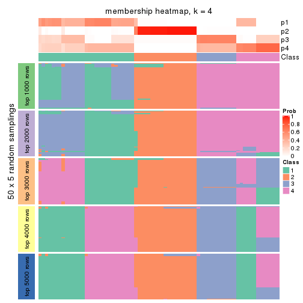
membership_heatmap(res, k = 5)
membership_heatmap(res, k = 6)
As soon as we have had the classes for columns, we can look for signatures which are significantly different between classes which can be candidate marks for certain classes. Following are the heatmaps for signatures.
Signature heatmaps where rows are scaled:
get_signatures(res, k = 2)
get_signatures(res, k = 3)
get_signatures(res, k = 4)
get_signatures(res, k = 5)
get_signatures(res, k = 6)
Signature heatmaps where rows are not scaled:
get_signatures(res, k = 2, scale_rows = FALSE)
get_signatures(res, k = 3, scale_rows = FALSE)
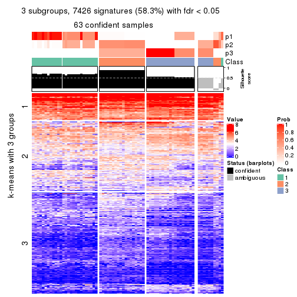
get_signatures(res, k = 4, scale_rows = FALSE)
get_signatures(res, k = 5, scale_rows = FALSE)
get_signatures(res, k = 6, scale_rows = FALSE)
Compare the overlap of signatures from different k:
compare_signatures(res)
get_signature() returns a data frame invisibly. TO get the list of signatures, the function
call should be assigned to a variable explicitly. In following code, if plot argument is set
to FALSE, no heatmap is plotted while only the differential analysis is performed.
# code only for demonstration
tb = get_signature(res, k = ..., plot = FALSE)
An example of the output of tb is:
#> which_row fdr mean_1 mean_2 scaled_mean_1 scaled_mean_2 km
#> 1 38 0.042760348 8.373488 9.131774 -0.5533452 0.5164555 1
#> 2 40 0.018707592 7.106213 8.469186 -0.6173731 0.5762149 1
#> 3 55 0.019134737 10.221463 11.207825 -0.6159697 0.5749050 1
#> 4 59 0.006059896 5.921854 7.869574 -0.6899429 0.6439467 1
#> 5 60 0.018055526 8.928898 10.211722 -0.6204761 0.5791110 1
#> 6 98 0.009384629 15.714769 14.887706 0.6635654 -0.6193277 2
...
The columns in tb are:
which_row: row indices corresponding to the input matrix.fdr: FDR for the differential test. mean_x: The mean value in group x.scaled_mean_x: The mean value in group x after rows are scaled.km: Row groups if k-means clustering is applied to rows.UMAP plot which shows how samples are separated.
dimension_reduction(res, k = 2, method = "UMAP")
dimension_reduction(res, k = 3, method = "UMAP")
dimension_reduction(res, k = 4, method = "UMAP")
dimension_reduction(res, k = 5, method = "UMAP")

dimension_reduction(res, k = 6, method = "UMAP")
Following heatmap shows how subgroups are split when increasing k:
collect_classes(res)
If matrix rows can be associated to genes, consider to use functional_enrichment(res,
...) to perform function enrichment for the signature genes. See this vignette for more detailed explanations.
The object with results only for a single top-value method and a single partition method can be extracted as:
res = res_list["SD", "pam"]
# you can also extract it by
# res = res_list["SD:pam"]
A summary of res and all the functions that can be applied to it:
res
#> A 'ConsensusPartition' object with k = 2, 3, 4, 5, 6.
#> On a matrix with 12731 rows and 73 columns.
#> Top rows (1000, 2000, 3000, 4000, 5000) are extracted by 'SD' method.
#> Subgroups are detected by 'pam' method.
#> Performed in total 1250 partitions by row resampling.
#> Best k for subgroups seems to be 3.
#>
#> Following methods can be applied to this 'ConsensusPartition' object:
#> [1] "cola_report" "collect_classes" "collect_plots"
#> [4] "collect_stats" "colnames" "compare_signatures"
#> [7] "consensus_heatmap" "dimension_reduction" "functional_enrichment"
#> [10] "get_anno_col" "get_anno" "get_classes"
#> [13] "get_consensus" "get_matrix" "get_membership"
#> [16] "get_param" "get_signatures" "get_stats"
#> [19] "is_best_k" "is_stable_k" "membership_heatmap"
#> [22] "ncol" "nrow" "plot_ecdf"
#> [25] "rownames" "select_partition_number" "show"
#> [28] "suggest_best_k" "test_to_known_factors"
collect_plots() function collects all the plots made from res for all k (number of partitions)
into one single page to provide an easy and fast comparison between different k.
collect_plots(res)
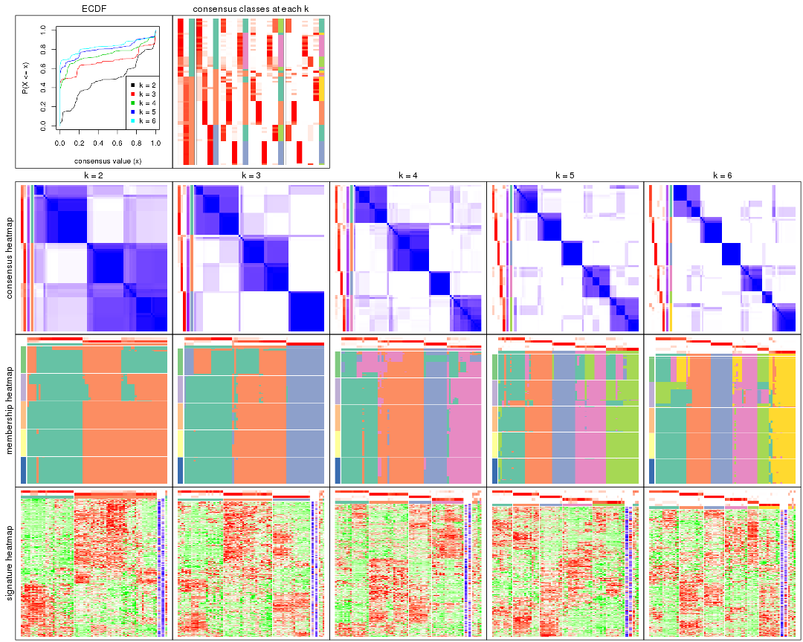
The plots are:
k and the heatmap of
predicted classes for each k.k.k.k.All the plots in panels can be made by individual functions and they are plotted later in this section.
select_partition_number() produces several plots showing different
statistics for choosing “optimized” k. There are following statistics:
k;k, the area increased is defined as \(A_k - A_{k-1}\).The detailed explanations of these statistics can be found in the cola vignette.
Generally speaking, lower PAC score, higher mean silhouette score or higher
concordance corresponds to better partition. Rand index and Jaccard index
measure how similar the current partition is compared to partition with k-1.
If they are too similar, we won't accept k is better than k-1.
select_partition_number(res)
The numeric values for all these statistics can be obtained by get_stats().
get_stats(res)
#> k 1-PAC mean_silhouette concordance area_increased Rand Jaccard
#> 2 2 0.392 0.825 0.881 0.4829 0.514 0.514
#> 3 3 0.702 0.857 0.907 0.3929 0.743 0.533
#> 4 4 0.803 0.819 0.884 0.1106 0.835 0.559
#> 5 5 0.781 0.814 0.891 0.0755 0.893 0.614
#> 6 6 0.814 0.819 0.886 0.0326 0.953 0.769
suggest_best_k() suggests the best \(k\) based on these statistics. The rules are as follows:
suggest_best_k(res)
#> [1] 3
Following shows the table of the partitions (You need to click the show/hide
code output link to see it). The membership matrix (columns with name p*)
is inferred by
clue::cl_consensus()
function with the SE method. Basically the value in the membership matrix
represents the probability to belong to a certain group. The finall class
label for an item is determined with the group with highest probability it
belongs to.
In get_classes() function, the entropy is calculated from the membership
matrix and the silhouette score is calculated from the consensus matrix.
cbind(get_classes(res, k = 2), get_membership(res, k = 2))
#> class entropy silhouette p1 p2
#> SRR2144343 2 0.861 0.749 0.284 0.716
#> SRR2144345 2 0.634 0.848 0.160 0.840
#> SRR2144344 2 0.184 0.837 0.028 0.972
#> SRR2144342 2 0.904 0.738 0.320 0.680
#> SRR2144341 2 0.634 0.848 0.160 0.840
#> SRR2144340 2 0.876 0.736 0.296 0.704
#> SRR2144339 2 0.662 0.845 0.172 0.828
#> SRR2144336 2 0.184 0.837 0.028 0.972
#> SRR2144338 2 0.671 0.843 0.176 0.824
#> SRR2144337 2 0.184 0.837 0.028 0.972
#> SRR2144335 2 0.184 0.837 0.028 0.972
#> SRR2144332 2 0.634 0.848 0.160 0.840
#> SRR2144334 2 0.671 0.843 0.176 0.824
#> SRR2144333 2 0.184 0.837 0.028 0.972
#> SRR2144331 2 0.671 0.843 0.176 0.824
#> SRR2144330 2 0.184 0.837 0.028 0.972
#> SRR2144328 2 0.671 0.843 0.176 0.824
#> SRR2144329 2 0.634 0.848 0.160 0.840
#> SRR2144327 2 0.671 0.843 0.176 0.824
#> SRR2144326 2 0.141 0.836 0.020 0.980
#> SRR2144325 2 0.653 0.846 0.168 0.832
#> SRR2144323 2 0.634 0.848 0.160 0.840
#> SRR2144324 2 0.184 0.837 0.028 0.972
#> SRR2144321 2 0.634 0.848 0.160 0.840
#> SRR2144322 2 0.671 0.843 0.176 0.824
#> SRR2144320 2 0.184 0.837 0.028 0.972
#> SRR2144319 2 0.634 0.848 0.160 0.840
#> SRR2144316 2 0.671 0.843 0.176 0.824
#> SRR2144317 2 0.184 0.837 0.028 0.972
#> SRR2144318 2 0.671 0.843 0.176 0.824
#> SRR2144315 2 0.184 0.837 0.028 0.972
#> SRR2144314 1 0.184 0.896 0.972 0.028
#> SRR2144313 1 0.204 0.895 0.968 0.032
#> SRR2144312 2 0.278 0.833 0.048 0.952
#> SRR2144311 1 0.000 0.912 1.000 0.000
#> SRR2144308 2 0.184 0.837 0.028 0.972
#> SRR2144309 2 0.184 0.837 0.028 0.972
#> SRR2144310 2 0.904 0.738 0.320 0.680
#> SRR2144307 2 0.952 0.627 0.372 0.628
#> SRR2144304 2 0.946 0.641 0.364 0.636
#> SRR2144306 1 0.821 0.552 0.744 0.256
#> SRR2144303 2 0.943 0.691 0.360 0.640
#> SRR2144305 2 0.184 0.837 0.028 0.972
#> SRR2144302 2 0.605 0.786 0.148 0.852
#> SRR2144301 1 0.000 0.912 1.000 0.000
#> SRR2144300 1 0.000 0.912 1.000 0.000
#> SRR2144299 1 0.000 0.912 1.000 0.000
#> SRR2144298 1 0.000 0.912 1.000 0.000
#> SRR2144297 1 0.876 0.659 0.704 0.296
#> SRR2144296 1 0.184 0.896 0.972 0.028
#> SRR2144295 1 0.876 0.659 0.704 0.296
#> SRR2144293 2 0.184 0.837 0.028 0.972
#> SRR2144294 1 0.595 0.797 0.856 0.144
#> SRR2144291 1 0.000 0.912 1.000 0.000
#> SRR2144292 1 0.886 0.649 0.696 0.304
#> SRR2144289 1 0.000 0.912 1.000 0.000
#> SRR2144290 1 0.000 0.912 1.000 0.000
#> SRR2144287 1 0.000 0.912 1.000 0.000
#> SRR2144288 1 0.876 0.659 0.704 0.296
#> SRR2144286 1 0.184 0.896 0.972 0.028
#> SRR2144285 1 0.978 0.465 0.588 0.412
#> SRR2144284 1 0.000 0.912 1.000 0.000
#> SRR2144282 2 0.605 0.786 0.148 0.852
#> SRR2144283 1 0.141 0.902 0.980 0.020
#> SRR2144281 1 0.184 0.896 0.972 0.028
#> SRR2144279 1 0.000 0.912 1.000 0.000
#> SRR2144280 1 0.000 0.912 1.000 0.000
#> SRR2144278 1 0.000 0.912 1.000 0.000
#> SRR2144277 1 0.000 0.912 1.000 0.000
#> SRR2144276 2 0.184 0.837 0.028 0.972
#> SRR2144274 1 0.000 0.912 1.000 0.000
#> SRR2144275 2 0.714 0.742 0.196 0.804
#> SRR2144273 1 0.000 0.912 1.000 0.000
cbind(get_classes(res, k = 3), get_membership(res, k = 3))
#> class entropy silhouette p1 p2 p3
#> SRR2144343 2 0.0237 0.863 0.004 0.996 0.000
#> SRR2144345 2 0.0000 0.864 0.000 1.000 0.000
#> SRR2144344 3 0.0000 0.992 0.000 0.000 1.000
#> SRR2144342 2 0.4291 0.847 0.180 0.820 0.000
#> SRR2144341 2 0.0000 0.864 0.000 1.000 0.000
#> SRR2144340 2 0.4235 0.847 0.176 0.824 0.000
#> SRR2144339 2 0.0000 0.864 0.000 1.000 0.000
#> SRR2144336 3 0.0000 0.992 0.000 0.000 1.000
#> SRR2144338 2 0.4235 0.847 0.176 0.824 0.000
#> SRR2144337 3 0.0000 0.992 0.000 0.000 1.000
#> SRR2144335 3 0.0000 0.992 0.000 0.000 1.000
#> SRR2144332 2 0.0000 0.864 0.000 1.000 0.000
#> SRR2144334 2 0.9411 0.292 0.176 0.444 0.380
#> SRR2144333 3 0.0000 0.992 0.000 0.000 1.000
#> SRR2144331 2 0.4235 0.847 0.176 0.824 0.000
#> SRR2144330 3 0.0000 0.992 0.000 0.000 1.000
#> SRR2144328 2 0.4235 0.847 0.176 0.824 0.000
#> SRR2144329 2 0.0000 0.864 0.000 1.000 0.000
#> SRR2144327 2 0.4235 0.847 0.176 0.824 0.000
#> SRR2144326 3 0.0000 0.992 0.000 0.000 1.000
#> SRR2144325 2 0.0000 0.864 0.000 1.000 0.000
#> SRR2144323 2 0.0000 0.864 0.000 1.000 0.000
#> SRR2144324 3 0.0000 0.992 0.000 0.000 1.000
#> SRR2144321 2 0.0000 0.864 0.000 1.000 0.000
#> SRR2144322 2 0.4235 0.847 0.176 0.824 0.000
#> SRR2144320 3 0.0000 0.992 0.000 0.000 1.000
#> SRR2144319 2 0.0000 0.864 0.000 1.000 0.000
#> SRR2144316 2 0.4235 0.847 0.176 0.824 0.000
#> SRR2144317 3 0.0000 0.992 0.000 0.000 1.000
#> SRR2144318 2 0.4235 0.847 0.176 0.824 0.000
#> SRR2144315 3 0.0000 0.992 0.000 0.000 1.000
#> SRR2144314 2 0.2448 0.814 0.076 0.924 0.000
#> SRR2144313 2 0.1643 0.840 0.044 0.956 0.000
#> SRR2144312 3 0.0000 0.992 0.000 0.000 1.000
#> SRR2144311 1 0.0000 0.859 1.000 0.000 0.000
#> SRR2144308 3 0.0000 0.992 0.000 0.000 1.000
#> SRR2144309 3 0.0000 0.992 0.000 0.000 1.000
#> SRR2144310 2 0.4291 0.847 0.180 0.820 0.000
#> SRR2144307 2 0.0237 0.863 0.004 0.996 0.000
#> SRR2144304 2 0.0237 0.863 0.004 0.996 0.000
#> SRR2144306 2 0.6473 0.681 0.332 0.652 0.016
#> SRR2144303 2 0.4291 0.847 0.180 0.820 0.000
#> SRR2144305 3 0.0000 0.992 0.000 0.000 1.000
#> SRR2144302 3 0.0000 0.992 0.000 0.000 1.000
#> SRR2144301 1 0.0000 0.859 1.000 0.000 0.000
#> SRR2144300 1 0.4605 0.816 0.796 0.204 0.000
#> SRR2144299 1 0.4291 0.835 0.820 0.180 0.000
#> SRR2144298 1 0.0000 0.859 1.000 0.000 0.000
#> SRR2144297 1 0.4555 0.771 0.800 0.000 0.200
#> SRR2144296 1 0.4235 0.838 0.824 0.176 0.000
#> SRR2144295 1 0.4555 0.771 0.800 0.000 0.200
#> SRR2144293 3 0.0000 0.992 0.000 0.000 1.000
#> SRR2144294 1 0.0237 0.857 0.996 0.004 0.000
#> SRR2144291 1 0.0237 0.857 0.996 0.004 0.000
#> SRR2144292 1 0.4654 0.762 0.792 0.000 0.208
#> SRR2144289 1 0.0000 0.859 1.000 0.000 0.000
#> SRR2144290 1 0.4235 0.838 0.824 0.176 0.000
#> SRR2144287 1 0.0000 0.859 1.000 0.000 0.000
#> SRR2144288 1 0.4555 0.771 0.800 0.000 0.200
#> SRR2144286 1 0.4235 0.838 0.824 0.176 0.000
#> SRR2144285 1 0.6244 0.332 0.560 0.000 0.440
#> SRR2144284 1 0.0000 0.859 1.000 0.000 0.000
#> SRR2144282 3 0.0000 0.992 0.000 0.000 1.000
#> SRR2144283 1 0.4235 0.838 0.824 0.176 0.000
#> SRR2144281 1 0.4235 0.838 0.824 0.176 0.000
#> SRR2144279 1 0.4235 0.838 0.824 0.176 0.000
#> SRR2144280 2 0.6045 0.212 0.380 0.620 0.000
#> SRR2144278 1 0.0000 0.859 1.000 0.000 0.000
#> SRR2144277 1 0.0000 0.859 1.000 0.000 0.000
#> SRR2144276 3 0.0000 0.992 0.000 0.000 1.000
#> SRR2144274 1 0.0000 0.859 1.000 0.000 0.000
#> SRR2144275 3 0.3482 0.831 0.128 0.000 0.872
#> SRR2144273 1 0.4235 0.838 0.824 0.176 0.000
cbind(get_classes(res, k = 4), get_membership(res, k = 4))
#> class entropy silhouette p1 p2 p3 p4
#> SRR2144343 2 0.0188 0.8957 0.000 0.996 0.000 0.004
#> SRR2144345 2 0.0000 0.8968 0.000 1.000 0.000 0.000
#> SRR2144344 3 0.0000 0.9787 0.000 0.000 1.000 0.000
#> SRR2144342 1 0.2611 0.8544 0.896 0.008 0.000 0.096
#> SRR2144341 2 0.0000 0.8968 0.000 1.000 0.000 0.000
#> SRR2144340 2 0.2300 0.8834 0.064 0.920 0.000 0.016
#> SRR2144339 2 0.0000 0.8968 0.000 1.000 0.000 0.000
#> SRR2144336 3 0.0000 0.9787 0.000 0.000 1.000 0.000
#> SRR2144338 2 0.2300 0.8834 0.064 0.920 0.000 0.016
#> SRR2144337 3 0.0000 0.9787 0.000 0.000 1.000 0.000
#> SRR2144335 3 0.0000 0.9787 0.000 0.000 1.000 0.000
#> SRR2144332 2 0.0000 0.8968 0.000 1.000 0.000 0.000
#> SRR2144334 2 0.6799 0.3290 0.064 0.540 0.380 0.016
#> SRR2144333 3 0.0000 0.9787 0.000 0.000 1.000 0.000
#> SRR2144331 2 0.1888 0.8883 0.044 0.940 0.000 0.016
#> SRR2144330 3 0.0000 0.9787 0.000 0.000 1.000 0.000
#> SRR2144328 2 0.2300 0.8834 0.064 0.920 0.000 0.016
#> SRR2144329 2 0.0000 0.8968 0.000 1.000 0.000 0.000
#> SRR2144327 2 0.0469 0.8950 0.000 0.988 0.000 0.012
#> SRR2144326 3 0.0000 0.9787 0.000 0.000 1.000 0.000
#> SRR2144325 2 0.0000 0.8968 0.000 1.000 0.000 0.000
#> SRR2144323 2 0.0000 0.8968 0.000 1.000 0.000 0.000
#> SRR2144324 3 0.0000 0.9787 0.000 0.000 1.000 0.000
#> SRR2144321 2 0.0000 0.8968 0.000 1.000 0.000 0.000
#> SRR2144322 2 0.2300 0.8834 0.064 0.920 0.000 0.016
#> SRR2144320 3 0.0000 0.9787 0.000 0.000 1.000 0.000
#> SRR2144319 2 0.0000 0.8968 0.000 1.000 0.000 0.000
#> SRR2144316 2 0.2300 0.8834 0.064 0.920 0.000 0.016
#> SRR2144317 3 0.0000 0.9787 0.000 0.000 1.000 0.000
#> SRR2144318 2 0.2300 0.8834 0.064 0.920 0.000 0.016
#> SRR2144315 3 0.0000 0.9787 0.000 0.000 1.000 0.000
#> SRR2144314 2 0.5236 0.3606 0.008 0.560 0.000 0.432
#> SRR2144313 2 0.4212 0.7350 0.012 0.772 0.000 0.216
#> SRR2144312 1 0.2021 0.8373 0.932 0.000 0.056 0.012
#> SRR2144311 1 0.2281 0.8590 0.904 0.000 0.000 0.096
#> SRR2144308 1 0.3123 0.8105 0.844 0.000 0.156 0.000
#> SRR2144309 1 0.2021 0.8373 0.932 0.000 0.056 0.012
#> SRR2144310 1 0.6799 -0.0147 0.464 0.440 0.000 0.096
#> SRR2144307 2 0.2197 0.8508 0.004 0.916 0.000 0.080
#> SRR2144304 2 0.3521 0.8399 0.052 0.864 0.000 0.084
#> SRR2144306 2 0.6554 0.2230 0.064 0.488 0.004 0.444
#> SRR2144303 1 0.2281 0.8590 0.904 0.000 0.000 0.096
#> SRR2144305 1 0.3123 0.8105 0.844 0.000 0.156 0.000
#> SRR2144302 1 0.1938 0.8388 0.936 0.000 0.052 0.012
#> SRR2144301 4 0.2973 0.8430 0.144 0.000 0.000 0.856
#> SRR2144300 1 0.4095 0.8118 0.804 0.024 0.000 0.172
#> SRR2144299 4 0.5611 0.0697 0.412 0.024 0.000 0.564
#> SRR2144298 1 0.2281 0.8590 0.904 0.000 0.000 0.096
#> SRR2144297 4 0.4798 0.7832 0.180 0.000 0.052 0.768
#> SRR2144296 4 0.0592 0.8481 0.000 0.016 0.000 0.984
#> SRR2144295 4 0.4337 0.8051 0.140 0.000 0.052 0.808
#> SRR2144293 3 0.5102 0.7125 0.136 0.000 0.764 0.100
#> SRR2144294 4 0.3693 0.8152 0.072 0.072 0.000 0.856
#> SRR2144291 4 0.1902 0.8352 0.064 0.004 0.000 0.932
#> SRR2144292 4 0.4966 0.7858 0.156 0.000 0.076 0.768
#> SRR2144289 4 0.2760 0.8464 0.128 0.000 0.000 0.872
#> SRR2144290 4 0.0657 0.8485 0.004 0.012 0.000 0.984
#> SRR2144287 4 0.2973 0.8430 0.144 0.000 0.000 0.856
#> SRR2144288 4 0.4880 0.7768 0.188 0.000 0.052 0.760
#> SRR2144286 4 0.0707 0.8469 0.000 0.020 0.000 0.980
#> SRR2144285 4 0.6584 0.5276 0.336 0.000 0.096 0.568
#> SRR2144284 4 0.1716 0.8347 0.064 0.000 0.000 0.936
#> SRR2144282 1 0.1938 0.8388 0.936 0.000 0.052 0.012
#> SRR2144283 4 0.0804 0.8466 0.008 0.012 0.000 0.980
#> SRR2144281 4 0.0921 0.8431 0.000 0.028 0.000 0.972
#> SRR2144279 1 0.3808 0.8125 0.812 0.012 0.000 0.176
#> SRR2144280 1 0.4095 0.8118 0.804 0.024 0.000 0.172
#> SRR2144278 1 0.2281 0.8590 0.904 0.000 0.000 0.096
#> SRR2144277 1 0.2281 0.8590 0.904 0.000 0.000 0.096
#> SRR2144276 1 0.2021 0.8373 0.932 0.000 0.056 0.012
#> SRR2144274 1 0.2281 0.8590 0.904 0.000 0.000 0.096
#> SRR2144275 1 0.1938 0.8388 0.936 0.000 0.052 0.012
#> SRR2144273 4 0.0657 0.8485 0.004 0.012 0.000 0.984
cbind(get_classes(res, k = 5), get_membership(res, k = 5))
#> class entropy silhouette p1 p2 p3 p4 p5
#> SRR2144343 2 0.0000 0.9331 0.000 1.000 0.000 0.000 0.000
#> SRR2144345 2 0.0000 0.9331 0.000 1.000 0.000 0.000 0.000
#> SRR2144344 3 0.0000 0.9804 0.000 0.000 1.000 0.000 0.000
#> SRR2144342 1 0.4201 0.0519 0.592 0.000 0.000 0.000 0.408
#> SRR2144341 2 0.0000 0.9331 0.000 1.000 0.000 0.000 0.000
#> SRR2144340 1 0.1671 0.8617 0.924 0.076 0.000 0.000 0.000
#> SRR2144339 2 0.0000 0.9331 0.000 1.000 0.000 0.000 0.000
#> SRR2144336 3 0.0000 0.9804 0.000 0.000 1.000 0.000 0.000
#> SRR2144338 1 0.1410 0.8682 0.940 0.060 0.000 0.000 0.000
#> SRR2144337 3 0.0000 0.9804 0.000 0.000 1.000 0.000 0.000
#> SRR2144335 3 0.0000 0.9804 0.000 0.000 1.000 0.000 0.000
#> SRR2144332 2 0.0000 0.9331 0.000 1.000 0.000 0.000 0.000
#> SRR2144334 1 0.1502 0.8669 0.940 0.056 0.004 0.000 0.000
#> SRR2144333 3 0.0000 0.9804 0.000 0.000 1.000 0.000 0.000
#> SRR2144331 1 0.2891 0.7631 0.824 0.176 0.000 0.000 0.000
#> SRR2144330 3 0.0000 0.9804 0.000 0.000 1.000 0.000 0.000
#> SRR2144328 1 0.1410 0.8682 0.940 0.060 0.000 0.000 0.000
#> SRR2144329 2 0.0000 0.9331 0.000 1.000 0.000 0.000 0.000
#> SRR2144327 1 0.4138 0.4113 0.616 0.384 0.000 0.000 0.000
#> SRR2144326 3 0.0000 0.9804 0.000 0.000 1.000 0.000 0.000
#> SRR2144325 2 0.0000 0.9331 0.000 1.000 0.000 0.000 0.000
#> SRR2144323 2 0.0000 0.9331 0.000 1.000 0.000 0.000 0.000
#> SRR2144324 3 0.0000 0.9804 0.000 0.000 1.000 0.000 0.000
#> SRR2144321 2 0.0000 0.9331 0.000 1.000 0.000 0.000 0.000
#> SRR2144322 1 0.1410 0.8682 0.940 0.060 0.000 0.000 0.000
#> SRR2144320 3 0.0000 0.9804 0.000 0.000 1.000 0.000 0.000
#> SRR2144319 2 0.0000 0.9331 0.000 1.000 0.000 0.000 0.000
#> SRR2144316 1 0.1410 0.8682 0.940 0.060 0.000 0.000 0.000
#> SRR2144317 3 0.0000 0.9804 0.000 0.000 1.000 0.000 0.000
#> SRR2144318 1 0.1410 0.8682 0.940 0.060 0.000 0.000 0.000
#> SRR2144315 3 0.0000 0.9804 0.000 0.000 1.000 0.000 0.000
#> SRR2144314 2 0.3741 0.7025 0.004 0.732 0.000 0.264 0.000
#> SRR2144313 2 0.4715 0.7215 0.048 0.728 0.000 0.212 0.012
#> SRR2144312 5 0.0162 0.8136 0.000 0.000 0.000 0.004 0.996
#> SRR2144311 5 0.3508 0.7387 0.252 0.000 0.000 0.000 0.748
#> SRR2144308 5 0.2648 0.7752 0.000 0.000 0.152 0.000 0.848
#> SRR2144309 5 0.0162 0.8137 0.000 0.000 0.004 0.000 0.996
#> SRR2144310 1 0.0451 0.8335 0.988 0.004 0.000 0.000 0.008
#> SRR2144307 2 0.1357 0.8933 0.048 0.948 0.000 0.000 0.004
#> SRR2144304 2 0.3333 0.7154 0.208 0.788 0.000 0.000 0.004
#> SRR2144306 1 0.1493 0.8500 0.948 0.024 0.000 0.028 0.000
#> SRR2144303 1 0.3913 0.3353 0.676 0.000 0.000 0.000 0.324
#> SRR2144305 5 0.2648 0.7752 0.000 0.000 0.152 0.000 0.848
#> SRR2144302 5 0.0000 0.8143 0.000 0.000 0.000 0.000 1.000
#> SRR2144301 4 0.3143 0.7599 0.204 0.000 0.000 0.796 0.000
#> SRR2144300 5 0.4270 0.7705 0.048 0.000 0.000 0.204 0.748
#> SRR2144299 5 0.5185 0.5478 0.048 0.000 0.000 0.384 0.568
#> SRR2144298 5 0.3480 0.7430 0.248 0.000 0.000 0.000 0.752
#> SRR2144297 4 0.3530 0.7924 0.012 0.000 0.000 0.784 0.204
#> SRR2144296 4 0.0000 0.8291 0.000 0.000 0.000 1.000 0.000
#> SRR2144295 4 0.3496 0.7938 0.012 0.000 0.000 0.788 0.200
#> SRR2144293 3 0.3652 0.7545 0.012 0.000 0.784 0.004 0.200
#> SRR2144294 1 0.1478 0.8196 0.936 0.000 0.000 0.064 0.000
#> SRR2144291 4 0.3177 0.7526 0.208 0.000 0.000 0.792 0.000
#> SRR2144292 4 0.3882 0.7898 0.012 0.000 0.012 0.776 0.200
#> SRR2144289 4 0.2329 0.8055 0.124 0.000 0.000 0.876 0.000
#> SRR2144290 4 0.0000 0.8291 0.000 0.000 0.000 1.000 0.000
#> SRR2144287 4 0.3177 0.7526 0.208 0.000 0.000 0.792 0.000
#> SRR2144288 4 0.3530 0.7924 0.012 0.000 0.000 0.784 0.204
#> SRR2144286 4 0.0162 0.8282 0.000 0.000 0.000 0.996 0.004
#> SRR2144285 4 0.5859 0.5457 0.012 0.000 0.076 0.556 0.356
#> SRR2144284 4 0.3816 0.6340 0.304 0.000 0.000 0.696 0.000
#> SRR2144282 5 0.0162 0.8136 0.000 0.000 0.000 0.004 0.996
#> SRR2144283 4 0.0162 0.8282 0.000 0.000 0.000 0.996 0.004
#> SRR2144281 4 0.0162 0.8282 0.000 0.000 0.000 0.996 0.004
#> SRR2144279 5 0.4302 0.7687 0.048 0.000 0.000 0.208 0.744
#> SRR2144280 5 0.4237 0.7718 0.048 0.000 0.000 0.200 0.752
#> SRR2144278 5 0.3424 0.7506 0.240 0.000 0.000 0.000 0.760
#> SRR2144277 5 0.3480 0.7430 0.248 0.000 0.000 0.000 0.752
#> SRR2144276 5 0.0162 0.8136 0.000 0.000 0.000 0.004 0.996
#> SRR2144274 5 0.3424 0.7505 0.240 0.000 0.000 0.000 0.760
#> SRR2144275 5 0.0162 0.8136 0.000 0.000 0.000 0.004 0.996
#> SRR2144273 4 0.0000 0.8291 0.000 0.000 0.000 1.000 0.000
cbind(get_classes(res, k = 6), get_membership(res, k = 6))
#> class entropy silhouette p1 p2 p3 p4 p5 p6
#> SRR2144343 2 0.0000 0.9306 0.000 1.000 0.000 0.000 0.000 0.000
#> SRR2144345 2 0.0000 0.9306 0.000 1.000 0.000 0.000 0.000 0.000
#> SRR2144344 3 0.0000 1.0000 0.000 0.000 1.000 0.000 0.000 0.000
#> SRR2144342 6 0.3961 0.0707 0.440 0.000 0.000 0.004 0.000 0.556
#> SRR2144341 2 0.0000 0.9306 0.000 1.000 0.000 0.000 0.000 0.000
#> SRR2144340 6 0.0547 0.8587 0.000 0.020 0.000 0.000 0.000 0.980
#> SRR2144339 2 0.0000 0.9306 0.000 1.000 0.000 0.000 0.000 0.000
#> SRR2144336 3 0.0000 1.0000 0.000 0.000 1.000 0.000 0.000 0.000
#> SRR2144338 6 0.0260 0.8640 0.000 0.008 0.000 0.000 0.000 0.992
#> SRR2144337 3 0.0000 1.0000 0.000 0.000 1.000 0.000 0.000 0.000
#> SRR2144335 3 0.0000 1.0000 0.000 0.000 1.000 0.000 0.000 0.000
#> SRR2144332 2 0.0000 0.9306 0.000 1.000 0.000 0.000 0.000 0.000
#> SRR2144334 6 0.0260 0.8640 0.000 0.008 0.000 0.000 0.000 0.992
#> SRR2144333 3 0.0000 1.0000 0.000 0.000 1.000 0.000 0.000 0.000
#> SRR2144331 6 0.2454 0.7327 0.000 0.160 0.000 0.000 0.000 0.840
#> SRR2144330 3 0.0000 1.0000 0.000 0.000 1.000 0.000 0.000 0.000
#> SRR2144328 6 0.0260 0.8640 0.000 0.008 0.000 0.000 0.000 0.992
#> SRR2144329 2 0.0000 0.9306 0.000 1.000 0.000 0.000 0.000 0.000
#> SRR2144327 6 0.3634 0.4062 0.000 0.356 0.000 0.000 0.000 0.644
#> SRR2144326 3 0.0000 1.0000 0.000 0.000 1.000 0.000 0.000 0.000
#> SRR2144325 2 0.0000 0.9306 0.000 1.000 0.000 0.000 0.000 0.000
#> SRR2144323 2 0.0000 0.9306 0.000 1.000 0.000 0.000 0.000 0.000
#> SRR2144324 3 0.0000 1.0000 0.000 0.000 1.000 0.000 0.000 0.000
#> SRR2144321 2 0.0000 0.9306 0.000 1.000 0.000 0.000 0.000 0.000
#> SRR2144322 6 0.0260 0.8640 0.000 0.008 0.000 0.000 0.000 0.992
#> SRR2144320 3 0.0000 1.0000 0.000 0.000 1.000 0.000 0.000 0.000
#> SRR2144319 2 0.0000 0.9306 0.000 1.000 0.000 0.000 0.000 0.000
#> SRR2144316 6 0.0260 0.8640 0.000 0.008 0.000 0.000 0.000 0.992
#> SRR2144317 3 0.0000 1.0000 0.000 0.000 1.000 0.000 0.000 0.000
#> SRR2144318 6 0.0260 0.8640 0.000 0.008 0.000 0.000 0.000 0.992
#> SRR2144315 3 0.0000 1.0000 0.000 0.000 1.000 0.000 0.000 0.000
#> SRR2144314 4 0.1753 0.7756 0.000 0.084 0.000 0.912 0.000 0.004
#> SRR2144313 2 0.5045 0.5830 0.112 0.648 0.000 0.232 0.000 0.008
#> SRR2144312 1 0.1910 0.8176 0.892 0.000 0.000 0.000 0.108 0.000
#> SRR2144311 1 0.3023 0.7149 0.784 0.000 0.000 0.004 0.000 0.212
#> SRR2144308 1 0.1910 0.8176 0.892 0.000 0.000 0.000 0.108 0.000
#> SRR2144309 1 0.1910 0.8176 0.892 0.000 0.000 0.000 0.108 0.000
#> SRR2144310 6 0.0146 0.8582 0.004 0.000 0.000 0.000 0.000 0.996
#> SRR2144307 2 0.2308 0.8343 0.108 0.880 0.000 0.004 0.000 0.008
#> SRR2144304 2 0.4457 0.6427 0.108 0.720 0.000 0.004 0.000 0.168
#> SRR2144306 6 0.0260 0.8596 0.000 0.000 0.000 0.008 0.000 0.992
#> SRR2144303 6 0.3797 0.2092 0.420 0.000 0.000 0.000 0.000 0.580
#> SRR2144305 1 0.1910 0.8176 0.892 0.000 0.000 0.000 0.108 0.000
#> SRR2144302 1 0.1910 0.8176 0.892 0.000 0.000 0.000 0.108 0.000
#> SRR2144301 4 0.5735 0.3081 0.000 0.000 0.000 0.504 0.296 0.200
#> SRR2144300 1 0.3073 0.7233 0.788 0.000 0.000 0.204 0.000 0.008
#> SRR2144299 4 0.2165 0.7483 0.108 0.000 0.000 0.884 0.000 0.008
#> SRR2144298 1 0.2994 0.7196 0.788 0.000 0.000 0.004 0.000 0.208
#> SRR2144297 5 0.1910 0.9339 0.000 0.000 0.000 0.108 0.892 0.000
#> SRR2144296 4 0.0146 0.8274 0.000 0.000 0.000 0.996 0.004 0.000
#> SRR2144295 5 0.1910 0.9339 0.000 0.000 0.000 0.108 0.892 0.000
#> SRR2144293 5 0.1910 0.8786 0.000 0.000 0.108 0.000 0.892 0.000
#> SRR2144294 6 0.0937 0.8380 0.000 0.000 0.000 0.040 0.000 0.960
#> SRR2144291 4 0.2854 0.7233 0.000 0.000 0.000 0.792 0.000 0.208
#> SRR2144292 5 0.2006 0.9339 0.000 0.000 0.004 0.104 0.892 0.000
#> SRR2144289 4 0.2092 0.7836 0.000 0.000 0.000 0.876 0.000 0.124
#> SRR2144290 4 0.0146 0.8274 0.000 0.000 0.000 0.996 0.004 0.000
#> SRR2144287 4 0.2854 0.7233 0.000 0.000 0.000 0.792 0.000 0.208
#> SRR2144288 5 0.1910 0.9339 0.000 0.000 0.000 0.108 0.892 0.000
#> SRR2144286 4 0.0000 0.8282 0.000 0.000 0.000 1.000 0.000 0.000
#> SRR2144285 5 0.1910 0.8786 0.000 0.000 0.108 0.000 0.892 0.000
#> SRR2144284 4 0.3446 0.6135 0.000 0.000 0.000 0.692 0.000 0.308
#> SRR2144282 1 0.1910 0.8176 0.892 0.000 0.000 0.000 0.108 0.000
#> SRR2144283 4 0.0000 0.8282 0.000 0.000 0.000 1.000 0.000 0.000
#> SRR2144281 4 0.0000 0.8282 0.000 0.000 0.000 1.000 0.000 0.000
#> SRR2144279 1 0.3073 0.7233 0.788 0.000 0.000 0.204 0.000 0.008
#> SRR2144280 1 0.3073 0.7233 0.788 0.000 0.000 0.204 0.000 0.008
#> SRR2144278 1 0.2994 0.7196 0.788 0.000 0.000 0.004 0.000 0.208
#> SRR2144277 1 0.2994 0.7196 0.788 0.000 0.000 0.004 0.000 0.208
#> SRR2144276 1 0.1910 0.8176 0.892 0.000 0.000 0.000 0.108 0.000
#> SRR2144274 1 0.2994 0.7196 0.788 0.000 0.000 0.004 0.000 0.208
#> SRR2144275 1 0.1910 0.8176 0.892 0.000 0.000 0.000 0.108 0.000
#> SRR2144273 4 0.0146 0.8274 0.000 0.000 0.000 0.996 0.004 0.000
Heatmaps for the consensus matrix. It visualizes the probability of two samples to be in a same group.
consensus_heatmap(res, k = 2)
consensus_heatmap(res, k = 3)
consensus_heatmap(res, k = 4)
consensus_heatmap(res, k = 5)
consensus_heatmap(res, k = 6)
Heatmaps for the membership of samples in all partitions to see how consistent they are:
membership_heatmap(res, k = 2)
membership_heatmap(res, k = 3)
membership_heatmap(res, k = 4)
membership_heatmap(res, k = 5)
membership_heatmap(res, k = 6)
As soon as we have had the classes for columns, we can look for signatures which are significantly different between classes which can be candidate marks for certain classes. Following are the heatmaps for signatures.
Signature heatmaps where rows are scaled:
get_signatures(res, k = 2)
get_signatures(res, k = 3)
get_signatures(res, k = 4)

get_signatures(res, k = 5)
get_signatures(res, k = 6)
Signature heatmaps where rows are not scaled:
get_signatures(res, k = 2, scale_rows = FALSE)
get_signatures(res, k = 3, scale_rows = FALSE)
get_signatures(res, k = 4, scale_rows = FALSE)
get_signatures(res, k = 5, scale_rows = FALSE)
get_signatures(res, k = 6, scale_rows = FALSE)
Compare the overlap of signatures from different k:
compare_signatures(res)
get_signature() returns a data frame invisibly. TO get the list of signatures, the function
call should be assigned to a variable explicitly. In following code, if plot argument is set
to FALSE, no heatmap is plotted while only the differential analysis is performed.
# code only for demonstration
tb = get_signature(res, k = ..., plot = FALSE)
An example of the output of tb is:
#> which_row fdr mean_1 mean_2 scaled_mean_1 scaled_mean_2 km
#> 1 38 0.042760348 8.373488 9.131774 -0.5533452 0.5164555 1
#> 2 40 0.018707592 7.106213 8.469186 -0.6173731 0.5762149 1
#> 3 55 0.019134737 10.221463 11.207825 -0.6159697 0.5749050 1
#> 4 59 0.006059896 5.921854 7.869574 -0.6899429 0.6439467 1
#> 5 60 0.018055526 8.928898 10.211722 -0.6204761 0.5791110 1
#> 6 98 0.009384629 15.714769 14.887706 0.6635654 -0.6193277 2
...
The columns in tb are:
which_row: row indices corresponding to the input matrix.fdr: FDR for the differential test. mean_x: The mean value in group x.scaled_mean_x: The mean value in group x after rows are scaled.km: Row groups if k-means clustering is applied to rows.UMAP plot which shows how samples are separated.
dimension_reduction(res, k = 2, method = "UMAP")
dimension_reduction(res, k = 3, method = "UMAP")
dimension_reduction(res, k = 4, method = "UMAP")
dimension_reduction(res, k = 5, method = "UMAP")
dimension_reduction(res, k = 6, method = "UMAP")
Following heatmap shows how subgroups are split when increasing k:
collect_classes(res)
If matrix rows can be associated to genes, consider to use functional_enrichment(res,
...) to perform function enrichment for the signature genes. See this vignette for more detailed explanations.
The object with results only for a single top-value method and a single partition method can be extracted as:
res = res_list["SD", "mclust"]
# you can also extract it by
# res = res_list["SD:mclust"]
A summary of res and all the functions that can be applied to it:
res
#> A 'ConsensusPartition' object with k = 2, 3, 4, 5, 6.
#> On a matrix with 12731 rows and 73 columns.
#> Top rows (1000, 2000, 3000, 4000, 5000) are extracted by 'SD' method.
#> Subgroups are detected by 'mclust' method.
#> Performed in total 1250 partitions by row resampling.
#> Best k for subgroups seems to be 6.
#>
#> Following methods can be applied to this 'ConsensusPartition' object:
#> [1] "cola_report" "collect_classes" "collect_plots"
#> [4] "collect_stats" "colnames" "compare_signatures"
#> [7] "consensus_heatmap" "dimension_reduction" "functional_enrichment"
#> [10] "get_anno_col" "get_anno" "get_classes"
#> [13] "get_consensus" "get_matrix" "get_membership"
#> [16] "get_param" "get_signatures" "get_stats"
#> [19] "is_best_k" "is_stable_k" "membership_heatmap"
#> [22] "ncol" "nrow" "plot_ecdf"
#> [25] "rownames" "select_partition_number" "show"
#> [28] "suggest_best_k" "test_to_known_factors"
collect_plots() function collects all the plots made from res for all k (number of partitions)
into one single page to provide an easy and fast comparison between different k.
collect_plots(res)
The plots are:
k and the heatmap of
predicted classes for each k.k.k.k.All the plots in panels can be made by individual functions and they are plotted later in this section.
select_partition_number() produces several plots showing different
statistics for choosing “optimized” k. There are following statistics:
k;k, the area increased is defined as \(A_k - A_{k-1}\).The detailed explanations of these statistics can be found in the cola vignette.
Generally speaking, lower PAC score, higher mean silhouette score or higher
concordance corresponds to better partition. Rand index and Jaccard index
measure how similar the current partition is compared to partition with k-1.
If they are too similar, we won't accept k is better than k-1.
select_partition_number(res)
The numeric values for all these statistics can be obtained by get_stats().
get_stats(res)
#> k 1-PAC mean_silhouette concordance area_increased Rand Jaccard
#> 2 2 0.497 0.841 0.840 0.4188 0.543 0.543
#> 3 3 0.489 0.870 0.858 0.3206 0.557 0.390
#> 4 4 0.702 0.850 0.877 0.3631 0.668 0.360
#> 5 5 0.772 0.873 0.914 0.0492 0.940 0.763
#> 6 6 0.854 0.894 0.904 0.0459 0.968 0.846
suggest_best_k() suggests the best \(k\) based on these statistics. The rules are as follows:
suggest_best_k(res)
#> [1] 6
Following shows the table of the partitions (You need to click the show/hide
code output link to see it). The membership matrix (columns with name p*)
is inferred by
clue::cl_consensus()
function with the SE method. Basically the value in the membership matrix
represents the probability to belong to a certain group. The finall class
label for an item is determined with the group with highest probability it
belongs to.
In get_classes() function, the entropy is calculated from the membership
matrix and the silhouette score is calculated from the consensus matrix.
cbind(get_classes(res, k = 2), get_membership(res, k = 2))
#> class entropy silhouette p1 p2
#> SRR2144343 1 0.1184 0.793 0.984 0.016
#> SRR2144345 1 0.9491 0.680 0.632 0.368
#> SRR2144344 2 0.9491 1.000 0.368 0.632
#> SRR2144342 1 0.0000 0.798 1.000 0.000
#> SRR2144341 1 0.4562 0.763 0.904 0.096
#> SRR2144340 1 0.0672 0.796 0.992 0.008
#> SRR2144339 1 0.9491 0.680 0.632 0.368
#> SRR2144336 2 0.9491 1.000 0.368 0.632
#> SRR2144338 1 0.9491 0.680 0.632 0.368
#> SRR2144337 2 0.9491 1.000 0.368 0.632
#> SRR2144335 2 0.9491 1.000 0.368 0.632
#> SRR2144332 1 0.9522 0.678 0.628 0.372
#> SRR2144334 1 0.9491 0.680 0.632 0.368
#> SRR2144333 2 0.9491 1.000 0.368 0.632
#> SRR2144331 1 0.9491 0.680 0.632 0.368
#> SRR2144330 2 0.9491 1.000 0.368 0.632
#> SRR2144328 1 0.9491 0.680 0.632 0.368
#> SRR2144329 1 0.9491 0.680 0.632 0.368
#> SRR2144327 1 0.9491 0.680 0.632 0.368
#> SRR2144326 2 0.9491 1.000 0.368 0.632
#> SRR2144325 1 0.9491 0.680 0.632 0.368
#> SRR2144323 1 0.9491 0.680 0.632 0.368
#> SRR2144324 2 0.9491 1.000 0.368 0.632
#> SRR2144321 1 0.9491 0.680 0.632 0.368
#> SRR2144322 1 0.9491 0.680 0.632 0.368
#> SRR2144320 2 0.9491 1.000 0.368 0.632
#> SRR2144319 1 0.9491 0.680 0.632 0.368
#> SRR2144316 1 0.9491 0.680 0.632 0.368
#> SRR2144317 2 0.9491 1.000 0.368 0.632
#> SRR2144318 1 0.9491 0.680 0.632 0.368
#> SRR2144315 2 0.9491 1.000 0.368 0.632
#> SRR2144314 1 0.0000 0.798 1.000 0.000
#> SRR2144313 1 0.0000 0.798 1.000 0.000
#> SRR2144312 2 0.9491 1.000 0.368 0.632
#> SRR2144311 1 0.0000 0.798 1.000 0.000
#> SRR2144308 2 0.9491 1.000 0.368 0.632
#> SRR2144309 2 0.9491 1.000 0.368 0.632
#> SRR2144310 1 0.0000 0.798 1.000 0.000
#> SRR2144307 1 0.0000 0.798 1.000 0.000
#> SRR2144304 1 0.0000 0.798 1.000 0.000
#> SRR2144306 1 0.0000 0.798 1.000 0.000
#> SRR2144303 1 0.0000 0.798 1.000 0.000
#> SRR2144305 2 0.9491 1.000 0.368 0.632
#> SRR2144302 2 0.9491 1.000 0.368 0.632
#> SRR2144301 1 0.0000 0.798 1.000 0.000
#> SRR2144300 1 0.0000 0.798 1.000 0.000
#> SRR2144299 1 0.0000 0.798 1.000 0.000
#> SRR2144298 1 0.0000 0.798 1.000 0.000
#> SRR2144297 2 0.9491 1.000 0.368 0.632
#> SRR2144296 1 0.0376 0.794 0.996 0.004
#> SRR2144295 2 0.9491 1.000 0.368 0.632
#> SRR2144293 2 0.9491 1.000 0.368 0.632
#> SRR2144294 1 0.0000 0.798 1.000 0.000
#> SRR2144291 1 0.0000 0.798 1.000 0.000
#> SRR2144292 2 0.9491 1.000 0.368 0.632
#> SRR2144289 1 0.0000 0.798 1.000 0.000
#> SRR2144290 1 0.0376 0.794 0.996 0.004
#> SRR2144287 1 0.0000 0.798 1.000 0.000
#> SRR2144288 2 0.9491 1.000 0.368 0.632
#> SRR2144286 1 0.0376 0.794 0.996 0.004
#> SRR2144285 2 0.9491 1.000 0.368 0.632
#> SRR2144284 1 0.0000 0.798 1.000 0.000
#> SRR2144282 2 0.9491 1.000 0.368 0.632
#> SRR2144283 1 0.0376 0.794 0.996 0.004
#> SRR2144281 1 0.0000 0.798 1.000 0.000
#> SRR2144279 1 0.0000 0.798 1.000 0.000
#> SRR2144280 1 0.0000 0.798 1.000 0.000
#> SRR2144278 1 0.0000 0.798 1.000 0.000
#> SRR2144277 1 0.0000 0.798 1.000 0.000
#> SRR2144276 2 0.9491 1.000 0.368 0.632
#> SRR2144274 1 0.0000 0.798 1.000 0.000
#> SRR2144275 2 0.9491 1.000 0.368 0.632
#> SRR2144273 1 0.0376 0.794 0.996 0.004
cbind(get_classes(res, k = 3), get_membership(res, k = 3))
#> class entropy silhouette p1 p2 p3
#> SRR2144343 2 0.4353 0.744 0.156 0.836 0.008
#> SRR2144345 2 0.0424 0.905 0.000 0.992 0.008
#> SRR2144344 3 0.0000 1.000 0.000 0.000 1.000
#> SRR2144342 1 0.2796 0.859 0.908 0.092 0.000
#> SRR2144341 2 0.0424 0.905 0.000 0.992 0.008
#> SRR2144340 1 0.4121 0.812 0.832 0.168 0.000
#> SRR2144339 2 0.0424 0.905 0.000 0.992 0.008
#> SRR2144336 3 0.0000 1.000 0.000 0.000 1.000
#> SRR2144338 2 0.3482 0.892 0.128 0.872 0.000
#> SRR2144337 1 0.5810 0.663 0.664 0.000 0.336
#> SRR2144335 3 0.0000 1.000 0.000 0.000 1.000
#> SRR2144332 2 0.0424 0.905 0.000 0.992 0.008
#> SRR2144334 2 0.3482 0.892 0.128 0.872 0.000
#> SRR2144333 3 0.0000 1.000 0.000 0.000 1.000
#> SRR2144331 2 0.3482 0.892 0.128 0.872 0.000
#> SRR2144330 3 0.0000 1.000 0.000 0.000 1.000
#> SRR2144328 2 0.3482 0.892 0.128 0.872 0.000
#> SRR2144329 2 0.0424 0.905 0.000 0.992 0.008
#> SRR2144327 2 0.3482 0.892 0.128 0.872 0.000
#> SRR2144326 3 0.0000 1.000 0.000 0.000 1.000
#> SRR2144325 2 0.0424 0.905 0.000 0.992 0.008
#> SRR2144323 2 0.0424 0.905 0.000 0.992 0.008
#> SRR2144324 3 0.0000 1.000 0.000 0.000 1.000
#> SRR2144321 2 0.0424 0.905 0.000 0.992 0.008
#> SRR2144322 2 0.3482 0.892 0.128 0.872 0.000
#> SRR2144320 3 0.0000 1.000 0.000 0.000 1.000
#> SRR2144319 2 0.0424 0.905 0.000 0.992 0.008
#> SRR2144316 2 0.3482 0.892 0.128 0.872 0.000
#> SRR2144317 3 0.0000 1.000 0.000 0.000 1.000
#> SRR2144318 2 0.4062 0.861 0.164 0.836 0.000
#> SRR2144315 1 0.4002 0.808 0.840 0.000 0.160
#> SRR2144314 1 0.4842 0.843 0.776 0.224 0.000
#> SRR2144313 1 0.4452 0.857 0.808 0.192 0.000
#> SRR2144312 1 0.3941 0.811 0.844 0.000 0.156
#> SRR2144311 1 0.2796 0.859 0.908 0.092 0.000
#> SRR2144308 1 0.3941 0.811 0.844 0.000 0.156
#> SRR2144309 1 0.3941 0.811 0.844 0.000 0.156
#> SRR2144310 1 0.2878 0.858 0.904 0.096 0.000
#> SRR2144307 1 0.4452 0.857 0.808 0.192 0.000
#> SRR2144304 1 0.4452 0.857 0.808 0.192 0.000
#> SRR2144306 1 0.3192 0.852 0.888 0.112 0.000
#> SRR2144303 1 0.2796 0.859 0.908 0.092 0.000
#> SRR2144305 1 0.3941 0.811 0.844 0.000 0.156
#> SRR2144302 1 0.3941 0.811 0.844 0.000 0.156
#> SRR2144301 1 0.2796 0.859 0.908 0.092 0.000
#> SRR2144300 1 0.4452 0.857 0.808 0.192 0.000
#> SRR2144299 1 0.4452 0.857 0.808 0.192 0.000
#> SRR2144298 1 0.2796 0.859 0.908 0.092 0.000
#> SRR2144297 1 0.3941 0.811 0.844 0.000 0.156
#> SRR2144296 1 0.4452 0.857 0.808 0.192 0.000
#> SRR2144295 1 0.3941 0.811 0.844 0.000 0.156
#> SRR2144293 1 0.3941 0.811 0.844 0.000 0.156
#> SRR2144294 1 0.3267 0.851 0.884 0.116 0.000
#> SRR2144291 1 0.2796 0.859 0.908 0.092 0.000
#> SRR2144292 1 0.3941 0.811 0.844 0.000 0.156
#> SRR2144289 1 0.2796 0.859 0.908 0.092 0.000
#> SRR2144290 1 0.4452 0.857 0.808 0.192 0.000
#> SRR2144287 1 0.2796 0.859 0.908 0.092 0.000
#> SRR2144288 1 0.3941 0.811 0.844 0.000 0.156
#> SRR2144286 1 0.4452 0.857 0.808 0.192 0.000
#> SRR2144285 1 0.3941 0.811 0.844 0.000 0.156
#> SRR2144284 1 0.2796 0.859 0.908 0.092 0.000
#> SRR2144282 1 0.3941 0.811 0.844 0.000 0.156
#> SRR2144283 1 0.4452 0.857 0.808 0.192 0.000
#> SRR2144281 1 0.4452 0.857 0.808 0.192 0.000
#> SRR2144279 1 0.4452 0.857 0.808 0.192 0.000
#> SRR2144280 1 0.4452 0.857 0.808 0.192 0.000
#> SRR2144278 1 0.2796 0.859 0.908 0.092 0.000
#> SRR2144277 1 0.2796 0.859 0.908 0.092 0.000
#> SRR2144276 1 0.3941 0.811 0.844 0.000 0.156
#> SRR2144274 1 0.2796 0.859 0.908 0.092 0.000
#> SRR2144275 1 0.3941 0.811 0.844 0.000 0.156
#> SRR2144273 1 0.4452 0.857 0.808 0.192 0.000
cbind(get_classes(res, k = 4), get_membership(res, k = 4))
#> class entropy silhouette p1 p2 p3 p4
#> SRR2144343 1 0.2589 0.764 0.884 0.116 0.000 0.000
#> SRR2144345 2 0.3123 0.844 0.156 0.844 0.000 0.000
#> SRR2144344 3 0.0000 0.917 0.000 0.000 1.000 0.000
#> SRR2144342 1 0.3123 0.855 0.844 0.156 0.000 0.000
#> SRR2144341 2 0.3123 0.844 0.156 0.844 0.000 0.000
#> SRR2144340 1 0.3873 0.795 0.772 0.228 0.000 0.000
#> SRR2144339 2 0.3123 0.844 0.156 0.844 0.000 0.000
#> SRR2144336 3 0.0000 0.917 0.000 0.000 1.000 0.000
#> SRR2144338 2 0.1302 0.847 0.044 0.956 0.000 0.000
#> SRR2144337 3 0.0707 0.917 0.000 0.000 0.980 0.020
#> SRR2144335 3 0.0000 0.917 0.000 0.000 1.000 0.000
#> SRR2144332 2 0.3123 0.844 0.156 0.844 0.000 0.000
#> SRR2144334 2 0.1302 0.847 0.044 0.956 0.000 0.000
#> SRR2144333 3 0.0000 0.917 0.000 0.000 1.000 0.000
#> SRR2144331 2 0.1302 0.847 0.044 0.956 0.000 0.000
#> SRR2144330 3 0.0000 0.917 0.000 0.000 1.000 0.000
#> SRR2144328 2 0.1302 0.847 0.044 0.956 0.000 0.000
#> SRR2144329 2 0.3123 0.844 0.156 0.844 0.000 0.000
#> SRR2144327 2 0.1302 0.847 0.044 0.956 0.000 0.000
#> SRR2144326 3 0.0000 0.917 0.000 0.000 1.000 0.000
#> SRR2144325 2 0.3123 0.844 0.156 0.844 0.000 0.000
#> SRR2144323 2 0.3123 0.844 0.156 0.844 0.000 0.000
#> SRR2144324 3 0.0000 0.917 0.000 0.000 1.000 0.000
#> SRR2144321 2 0.3123 0.844 0.156 0.844 0.000 0.000
#> SRR2144322 2 0.1302 0.847 0.044 0.956 0.000 0.000
#> SRR2144320 3 0.0000 0.917 0.000 0.000 1.000 0.000
#> SRR2144319 2 0.3123 0.844 0.156 0.844 0.000 0.000
#> SRR2144316 2 0.1302 0.847 0.044 0.956 0.000 0.000
#> SRR2144317 3 0.0000 0.917 0.000 0.000 1.000 0.000
#> SRR2144318 2 0.1302 0.847 0.044 0.956 0.000 0.000
#> SRR2144315 3 0.3219 0.903 0.000 0.000 0.836 0.164
#> SRR2144314 4 0.3219 0.827 0.164 0.000 0.000 0.836
#> SRR2144313 1 0.1302 0.837 0.956 0.000 0.000 0.044
#> SRR2144312 3 0.3900 0.904 0.020 0.000 0.816 0.164
#> SRR2144311 1 0.3123 0.855 0.844 0.156 0.000 0.000
#> SRR2144308 3 0.3900 0.904 0.020 0.000 0.816 0.164
#> SRR2144309 3 0.3900 0.904 0.020 0.000 0.816 0.164
#> SRR2144310 1 0.3123 0.855 0.844 0.156 0.000 0.000
#> SRR2144307 1 0.1302 0.837 0.956 0.000 0.000 0.044
#> SRR2144304 1 0.1302 0.837 0.956 0.000 0.000 0.044
#> SRR2144306 2 0.5035 0.604 0.052 0.744 0.000 0.204
#> SRR2144303 1 0.3123 0.855 0.844 0.156 0.000 0.000
#> SRR2144305 3 0.3900 0.904 0.020 0.000 0.816 0.164
#> SRR2144302 3 0.3900 0.904 0.020 0.000 0.816 0.164
#> SRR2144301 4 0.4452 0.787 0.048 0.156 0.000 0.796
#> SRR2144300 1 0.1302 0.837 0.956 0.000 0.000 0.044
#> SRR2144299 1 0.1302 0.837 0.956 0.000 0.000 0.044
#> SRR2144298 1 0.3123 0.855 0.844 0.156 0.000 0.000
#> SRR2144297 4 0.1302 0.821 0.000 0.000 0.044 0.956
#> SRR2144296 4 0.3172 0.829 0.160 0.000 0.000 0.840
#> SRR2144295 4 0.1302 0.821 0.000 0.000 0.044 0.956
#> SRR2144293 4 0.1302 0.821 0.000 0.000 0.044 0.956
#> SRR2144294 2 0.2174 0.830 0.052 0.928 0.000 0.020
#> SRR2144291 4 0.4532 0.786 0.052 0.156 0.000 0.792
#> SRR2144292 4 0.1302 0.821 0.000 0.000 0.044 0.956
#> SRR2144289 4 0.4452 0.787 0.048 0.156 0.000 0.796
#> SRR2144290 4 0.3172 0.829 0.160 0.000 0.000 0.840
#> SRR2144287 4 0.4532 0.786 0.052 0.156 0.000 0.792
#> SRR2144288 4 0.1302 0.821 0.000 0.000 0.044 0.956
#> SRR2144286 4 0.3219 0.827 0.164 0.000 0.000 0.836
#> SRR2144285 4 0.1302 0.821 0.000 0.000 0.044 0.956
#> SRR2144284 4 0.4532 0.786 0.052 0.156 0.000 0.792
#> SRR2144282 3 0.3900 0.904 0.020 0.000 0.816 0.164
#> SRR2144283 4 0.3219 0.827 0.164 0.000 0.000 0.836
#> SRR2144281 4 0.3219 0.827 0.164 0.000 0.000 0.836
#> SRR2144279 1 0.1302 0.837 0.956 0.000 0.000 0.044
#> SRR2144280 1 0.1302 0.837 0.956 0.000 0.000 0.044
#> SRR2144278 1 0.3123 0.855 0.844 0.156 0.000 0.000
#> SRR2144277 1 0.3123 0.855 0.844 0.156 0.000 0.000
#> SRR2144276 3 0.3900 0.904 0.020 0.000 0.816 0.164
#> SRR2144274 1 0.3123 0.855 0.844 0.156 0.000 0.000
#> SRR2144275 3 0.3900 0.904 0.020 0.000 0.816 0.164
#> SRR2144273 4 0.3172 0.829 0.160 0.000 0.000 0.840
cbind(get_classes(res, k = 5), get_membership(res, k = 5))
#> class entropy silhouette p1 p2 p3 p4 p5
#> SRR2144343 1 0.2719 0.790 0.852 0.144 0.000 0.004 0.000
#> SRR2144345 2 0.0000 0.877 0.000 1.000 0.000 0.000 0.000
#> SRR2144344 3 0.0000 0.970 0.000 0.000 1.000 0.000 0.000
#> SRR2144342 1 0.3109 0.871 0.800 0.000 0.000 0.200 0.000
#> SRR2144341 2 0.0000 0.877 0.000 1.000 0.000 0.000 0.000
#> SRR2144340 1 0.3421 0.864 0.788 0.008 0.000 0.204 0.000
#> SRR2144339 2 0.0000 0.877 0.000 1.000 0.000 0.000 0.000
#> SRR2144336 3 0.0000 0.970 0.000 0.000 1.000 0.000 0.000
#> SRR2144338 2 0.3109 0.863 0.000 0.800 0.000 0.200 0.000
#> SRR2144337 3 0.1197 0.927 0.000 0.000 0.952 0.000 0.048
#> SRR2144335 3 0.0000 0.970 0.000 0.000 1.000 0.000 0.000
#> SRR2144332 2 0.0000 0.877 0.000 1.000 0.000 0.000 0.000
#> SRR2144334 2 0.3109 0.863 0.000 0.800 0.000 0.200 0.000
#> SRR2144333 3 0.0000 0.970 0.000 0.000 1.000 0.000 0.000
#> SRR2144331 2 0.3109 0.863 0.000 0.800 0.000 0.200 0.000
#> SRR2144330 3 0.0000 0.970 0.000 0.000 1.000 0.000 0.000
#> SRR2144328 2 0.3109 0.863 0.000 0.800 0.000 0.200 0.000
#> SRR2144329 2 0.0000 0.877 0.000 1.000 0.000 0.000 0.000
#> SRR2144327 2 0.3109 0.863 0.000 0.800 0.000 0.200 0.000
#> SRR2144326 3 0.0000 0.970 0.000 0.000 1.000 0.000 0.000
#> SRR2144325 2 0.0000 0.877 0.000 1.000 0.000 0.000 0.000
#> SRR2144323 2 0.0000 0.877 0.000 1.000 0.000 0.000 0.000
#> SRR2144324 3 0.0000 0.970 0.000 0.000 1.000 0.000 0.000
#> SRR2144321 2 0.0000 0.877 0.000 1.000 0.000 0.000 0.000
#> SRR2144322 2 0.3109 0.863 0.000 0.800 0.000 0.200 0.000
#> SRR2144320 3 0.0000 0.970 0.000 0.000 1.000 0.000 0.000
#> SRR2144319 2 0.0000 0.877 0.000 1.000 0.000 0.000 0.000
#> SRR2144316 2 0.3109 0.863 0.000 0.800 0.000 0.200 0.000
#> SRR2144317 3 0.0000 0.970 0.000 0.000 1.000 0.000 0.000
#> SRR2144318 2 0.3109 0.863 0.000 0.800 0.000 0.200 0.000
#> SRR2144315 3 0.3422 0.710 0.004 0.000 0.792 0.004 0.200
#> SRR2144314 4 0.3143 0.826 0.204 0.000 0.000 0.796 0.000
#> SRR2144313 1 0.0000 0.842 1.000 0.000 0.000 0.000 0.000
#> SRR2144312 5 0.0000 0.990 0.000 0.000 0.000 0.000 1.000
#> SRR2144311 1 0.3109 0.871 0.800 0.000 0.000 0.200 0.000
#> SRR2144308 5 0.1571 0.932 0.004 0.000 0.060 0.000 0.936
#> SRR2144309 5 0.0000 0.990 0.000 0.000 0.000 0.000 1.000
#> SRR2144310 1 0.3109 0.871 0.800 0.000 0.000 0.200 0.000
#> SRR2144307 1 0.0000 0.842 1.000 0.000 0.000 0.000 0.000
#> SRR2144304 1 0.0000 0.842 1.000 0.000 0.000 0.000 0.000
#> SRR2144306 4 0.0566 0.809 0.004 0.012 0.000 0.984 0.000
#> SRR2144303 1 0.3109 0.871 0.800 0.000 0.000 0.200 0.000
#> SRR2144305 5 0.0162 0.986 0.004 0.000 0.000 0.000 0.996
#> SRR2144302 5 0.0000 0.990 0.000 0.000 0.000 0.000 1.000
#> SRR2144301 4 0.0162 0.815 0.004 0.000 0.000 0.996 0.000
#> SRR2144300 1 0.0000 0.842 1.000 0.000 0.000 0.000 0.000
#> SRR2144299 1 0.0000 0.842 1.000 0.000 0.000 0.000 0.000
#> SRR2144298 1 0.3109 0.871 0.800 0.000 0.000 0.200 0.000
#> SRR2144297 4 0.3388 0.789 0.000 0.000 0.008 0.792 0.200
#> SRR2144296 4 0.3143 0.826 0.204 0.000 0.000 0.796 0.000
#> SRR2144295 4 0.3388 0.789 0.000 0.000 0.008 0.792 0.200
#> SRR2144293 4 0.3388 0.789 0.000 0.000 0.008 0.792 0.200
#> SRR2144294 4 0.0566 0.809 0.004 0.012 0.000 0.984 0.000
#> SRR2144291 4 0.0162 0.815 0.004 0.000 0.000 0.996 0.000
#> SRR2144292 4 0.3388 0.789 0.000 0.000 0.008 0.792 0.200
#> SRR2144289 4 0.0162 0.815 0.004 0.000 0.000 0.996 0.000
#> SRR2144290 4 0.3143 0.826 0.204 0.000 0.000 0.796 0.000
#> SRR2144287 4 0.0162 0.815 0.004 0.000 0.000 0.996 0.000
#> SRR2144288 4 0.3388 0.789 0.000 0.000 0.008 0.792 0.200
#> SRR2144286 4 0.3143 0.826 0.204 0.000 0.000 0.796 0.000
#> SRR2144285 4 0.3388 0.789 0.000 0.000 0.008 0.792 0.200
#> SRR2144284 4 0.0162 0.815 0.004 0.000 0.000 0.996 0.000
#> SRR2144282 5 0.0000 0.990 0.000 0.000 0.000 0.000 1.000
#> SRR2144283 4 0.3143 0.826 0.204 0.000 0.000 0.796 0.000
#> SRR2144281 4 0.3143 0.826 0.204 0.000 0.000 0.796 0.000
#> SRR2144279 1 0.0000 0.842 1.000 0.000 0.000 0.000 0.000
#> SRR2144280 1 0.0000 0.842 1.000 0.000 0.000 0.000 0.000
#> SRR2144278 1 0.3109 0.871 0.800 0.000 0.000 0.200 0.000
#> SRR2144277 1 0.3109 0.871 0.800 0.000 0.000 0.200 0.000
#> SRR2144276 5 0.0000 0.990 0.000 0.000 0.000 0.000 1.000
#> SRR2144274 1 0.3109 0.871 0.800 0.000 0.000 0.200 0.000
#> SRR2144275 5 0.0000 0.990 0.000 0.000 0.000 0.000 1.000
#> SRR2144273 4 0.3143 0.826 0.204 0.000 0.000 0.796 0.000
cbind(get_classes(res, k = 6), get_membership(res, k = 6))
#> class entropy silhouette p1 p2 p3 p4 p5 p6
#> SRR2144343 1 0.6027 0.379 0.548 0.252 0.000 0.028 0.000 0.172
#> SRR2144345 2 0.2969 0.891 0.000 0.776 0.000 0.000 0.000 0.224
#> SRR2144344 3 0.0000 0.985 0.000 0.000 1.000 0.000 0.000 0.000
#> SRR2144342 1 0.2178 0.816 0.868 0.132 0.000 0.000 0.000 0.000
#> SRR2144341 2 0.2969 0.891 0.000 0.776 0.000 0.000 0.000 0.224
#> SRR2144340 1 0.2631 0.783 0.820 0.180 0.000 0.000 0.000 0.000
#> SRR2144339 2 0.2969 0.891 0.000 0.776 0.000 0.000 0.000 0.224
#> SRR2144336 3 0.0000 0.985 0.000 0.000 1.000 0.000 0.000 0.000
#> SRR2144338 2 0.0000 0.876 0.000 1.000 0.000 0.000 0.000 0.000
#> SRR2144337 3 0.0000 0.985 0.000 0.000 1.000 0.000 0.000 0.000
#> SRR2144335 3 0.0000 0.985 0.000 0.000 1.000 0.000 0.000 0.000
#> SRR2144332 2 0.2969 0.891 0.000 0.776 0.000 0.000 0.000 0.224
#> SRR2144334 2 0.0000 0.876 0.000 1.000 0.000 0.000 0.000 0.000
#> SRR2144333 3 0.0000 0.985 0.000 0.000 1.000 0.000 0.000 0.000
#> SRR2144331 2 0.0000 0.876 0.000 1.000 0.000 0.000 0.000 0.000
#> SRR2144330 3 0.0000 0.985 0.000 0.000 1.000 0.000 0.000 0.000
#> SRR2144328 2 0.0000 0.876 0.000 1.000 0.000 0.000 0.000 0.000
#> SRR2144329 2 0.2969 0.891 0.000 0.776 0.000 0.000 0.000 0.224
#> SRR2144327 2 0.0000 0.876 0.000 1.000 0.000 0.000 0.000 0.000
#> SRR2144326 3 0.0000 0.985 0.000 0.000 1.000 0.000 0.000 0.000
#> SRR2144325 2 0.2969 0.891 0.000 0.776 0.000 0.000 0.000 0.224
#> SRR2144323 2 0.2969 0.891 0.000 0.776 0.000 0.000 0.000 0.224
#> SRR2144324 3 0.0000 0.985 0.000 0.000 1.000 0.000 0.000 0.000
#> SRR2144321 2 0.2969 0.891 0.000 0.776 0.000 0.000 0.000 0.224
#> SRR2144322 2 0.0000 0.876 0.000 1.000 0.000 0.000 0.000 0.000
#> SRR2144320 3 0.0000 0.985 0.000 0.000 1.000 0.000 0.000 0.000
#> SRR2144319 2 0.2969 0.891 0.000 0.776 0.000 0.000 0.000 0.224
#> SRR2144316 2 0.0000 0.876 0.000 1.000 0.000 0.000 0.000 0.000
#> SRR2144317 3 0.0000 0.985 0.000 0.000 1.000 0.000 0.000 0.000
#> SRR2144318 2 0.0000 0.876 0.000 1.000 0.000 0.000 0.000 0.000
#> SRR2144315 3 0.2234 0.824 0.000 0.000 0.872 0.004 0.124 0.000
#> SRR2144314 4 0.0713 0.850 0.000 0.028 0.000 0.972 0.000 0.000
#> SRR2144313 1 0.2793 0.842 0.800 0.000 0.000 0.200 0.000 0.000
#> SRR2144312 5 0.0000 0.999 0.000 0.000 0.000 0.000 1.000 0.000
#> SRR2144311 1 0.0000 0.840 1.000 0.000 0.000 0.000 0.000 0.000
#> SRR2144308 5 0.0146 0.993 0.000 0.000 0.000 0.004 0.996 0.000
#> SRR2144309 5 0.0000 0.999 0.000 0.000 0.000 0.000 1.000 0.000
#> SRR2144310 1 0.2178 0.816 0.868 0.132 0.000 0.000 0.000 0.000
#> SRR2144307 1 0.2793 0.842 0.800 0.000 0.000 0.200 0.000 0.000
#> SRR2144304 1 0.2793 0.842 0.800 0.000 0.000 0.200 0.000 0.000
#> SRR2144306 4 0.3508 0.808 0.068 0.132 0.000 0.800 0.000 0.000
#> SRR2144303 1 0.0363 0.840 0.988 0.012 0.000 0.000 0.000 0.000
#> SRR2144305 5 0.0000 0.999 0.000 0.000 0.000 0.000 1.000 0.000
#> SRR2144302 5 0.0000 0.999 0.000 0.000 0.000 0.000 1.000 0.000
#> SRR2144301 4 0.2793 0.842 0.200 0.000 0.000 0.800 0.000 0.000
#> SRR2144300 1 0.2793 0.842 0.800 0.000 0.000 0.200 0.000 0.000
#> SRR2144299 1 0.2793 0.842 0.800 0.000 0.000 0.200 0.000 0.000
#> SRR2144298 1 0.0000 0.840 1.000 0.000 0.000 0.000 0.000 0.000
#> SRR2144297 6 0.3394 1.000 0.000 0.000 0.000 0.024 0.200 0.776
#> SRR2144296 4 0.0000 0.867 0.000 0.000 0.000 1.000 0.000 0.000
#> SRR2144295 6 0.3394 1.000 0.000 0.000 0.000 0.024 0.200 0.776
#> SRR2144293 6 0.3394 1.000 0.000 0.000 0.000 0.024 0.200 0.776
#> SRR2144294 4 0.3508 0.808 0.068 0.132 0.000 0.800 0.000 0.000
#> SRR2144291 4 0.2902 0.842 0.196 0.004 0.000 0.800 0.000 0.000
#> SRR2144292 6 0.3394 1.000 0.000 0.000 0.000 0.024 0.200 0.776
#> SRR2144289 4 0.2793 0.842 0.200 0.000 0.000 0.800 0.000 0.000
#> SRR2144290 4 0.0000 0.867 0.000 0.000 0.000 1.000 0.000 0.000
#> SRR2144287 4 0.2793 0.842 0.200 0.000 0.000 0.800 0.000 0.000
#> SRR2144288 6 0.3394 1.000 0.000 0.000 0.000 0.024 0.200 0.776
#> SRR2144286 4 0.0000 0.867 0.000 0.000 0.000 1.000 0.000 0.000
#> SRR2144285 6 0.3394 1.000 0.000 0.000 0.000 0.024 0.200 0.776
#> SRR2144284 4 0.2793 0.842 0.200 0.000 0.000 0.800 0.000 0.000
#> SRR2144282 5 0.0000 0.999 0.000 0.000 0.000 0.000 1.000 0.000
#> SRR2144283 4 0.0000 0.867 0.000 0.000 0.000 1.000 0.000 0.000
#> SRR2144281 4 0.0000 0.867 0.000 0.000 0.000 1.000 0.000 0.000
#> SRR2144279 1 0.2793 0.842 0.800 0.000 0.000 0.200 0.000 0.000
#> SRR2144280 1 0.2793 0.842 0.800 0.000 0.000 0.200 0.000 0.000
#> SRR2144278 1 0.0000 0.840 1.000 0.000 0.000 0.000 0.000 0.000
#> SRR2144277 1 0.0000 0.840 1.000 0.000 0.000 0.000 0.000 0.000
#> SRR2144276 5 0.0000 0.999 0.000 0.000 0.000 0.000 1.000 0.000
#> SRR2144274 1 0.0000 0.840 1.000 0.000 0.000 0.000 0.000 0.000
#> SRR2144275 5 0.0000 0.999 0.000 0.000 0.000 0.000 1.000 0.000
#> SRR2144273 4 0.0000 0.867 0.000 0.000 0.000 1.000 0.000 0.000
Heatmaps for the consensus matrix. It visualizes the probability of two samples to be in a same group.
consensus_heatmap(res, k = 2)
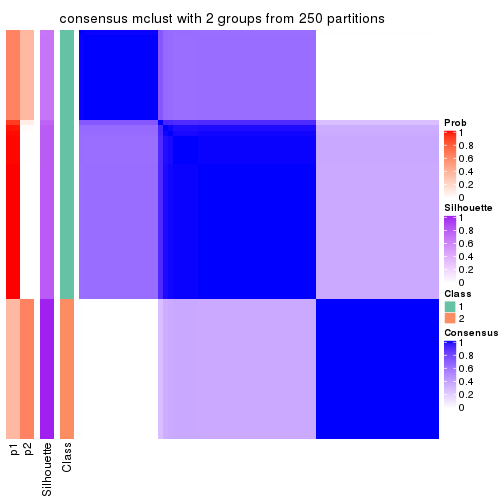
consensus_heatmap(res, k = 3)
consensus_heatmap(res, k = 4)
consensus_heatmap(res, k = 5)
consensus_heatmap(res, k = 6)

Heatmaps for the membership of samples in all partitions to see how consistent they are:
membership_heatmap(res, k = 2)
membership_heatmap(res, k = 3)
membership_heatmap(res, k = 4)
membership_heatmap(res, k = 5)
membership_heatmap(res, k = 6)
As soon as we have had the classes for columns, we can look for signatures which are significantly different between classes which can be candidate marks for certain classes. Following are the heatmaps for signatures.
Signature heatmaps where rows are scaled:
get_signatures(res, k = 2)
get_signatures(res, k = 3)
get_signatures(res, k = 4)
get_signatures(res, k = 5)
get_signatures(res, k = 6)
Signature heatmaps where rows are not scaled:
get_signatures(res, k = 2, scale_rows = FALSE)
get_signatures(res, k = 3, scale_rows = FALSE)
get_signatures(res, k = 4, scale_rows = FALSE)
get_signatures(res, k = 5, scale_rows = FALSE)
get_signatures(res, k = 6, scale_rows = FALSE)
Compare the overlap of signatures from different k:
compare_signatures(res)
get_signature() returns a data frame invisibly. TO get the list of signatures, the function
call should be assigned to a variable explicitly. In following code, if plot argument is set
to FALSE, no heatmap is plotted while only the differential analysis is performed.
# code only for demonstration
tb = get_signature(res, k = ..., plot = FALSE)
An example of the output of tb is:
#> which_row fdr mean_1 mean_2 scaled_mean_1 scaled_mean_2 km
#> 1 38 0.042760348 8.373488 9.131774 -0.5533452 0.5164555 1
#> 2 40 0.018707592 7.106213 8.469186 -0.6173731 0.5762149 1
#> 3 55 0.019134737 10.221463 11.207825 -0.6159697 0.5749050 1
#> 4 59 0.006059896 5.921854 7.869574 -0.6899429 0.6439467 1
#> 5 60 0.018055526 8.928898 10.211722 -0.6204761 0.5791110 1
#> 6 98 0.009384629 15.714769 14.887706 0.6635654 -0.6193277 2
...
The columns in tb are:
which_row: row indices corresponding to the input matrix.fdr: FDR for the differential test. mean_x: The mean value in group x.scaled_mean_x: The mean value in group x after rows are scaled.km: Row groups if k-means clustering is applied to rows.UMAP plot which shows how samples are separated.
dimension_reduction(res, k = 2, method = "UMAP")
dimension_reduction(res, k = 3, method = "UMAP")
dimension_reduction(res, k = 4, method = "UMAP")
dimension_reduction(res, k = 5, method = "UMAP")
dimension_reduction(res, k = 6, method = "UMAP")
Following heatmap shows how subgroups are split when increasing k:
collect_classes(res)
If matrix rows can be associated to genes, consider to use functional_enrichment(res,
...) to perform function enrichment for the signature genes. See this vignette for more detailed explanations.
The object with results only for a single top-value method and a single partition method can be extracted as:
res = res_list["SD", "NMF"]
# you can also extract it by
# res = res_list["SD:NMF"]
A summary of res and all the functions that can be applied to it:
res
#> A 'ConsensusPartition' object with k = 2, 3, 4, 5, 6.
#> On a matrix with 12731 rows and 73 columns.
#> Top rows (1000, 2000, 3000, 4000, 5000) are extracted by 'SD' method.
#> Subgroups are detected by 'NMF' method.
#> Performed in total 1250 partitions by row resampling.
#> Best k for subgroups seems to be 3.
#>
#> Following methods can be applied to this 'ConsensusPartition' object:
#> [1] "cola_report" "collect_classes" "collect_plots"
#> [4] "collect_stats" "colnames" "compare_signatures"
#> [7] "consensus_heatmap" "dimension_reduction" "functional_enrichment"
#> [10] "get_anno_col" "get_anno" "get_classes"
#> [13] "get_consensus" "get_matrix" "get_membership"
#> [16] "get_param" "get_signatures" "get_stats"
#> [19] "is_best_k" "is_stable_k" "membership_heatmap"
#> [22] "ncol" "nrow" "plot_ecdf"
#> [25] "rownames" "select_partition_number" "show"
#> [28] "suggest_best_k" "test_to_known_factors"
collect_plots() function collects all the plots made from res for all k (number of partitions)
into one single page to provide an easy and fast comparison between different k.
collect_plots(res)
The plots are:
k and the heatmap of
predicted classes for each k.k.k.k.All the plots in panels can be made by individual functions and they are plotted later in this section.
select_partition_number() produces several plots showing different
statistics for choosing “optimized” k. There are following statistics:
k;k, the area increased is defined as \(A_k - A_{k-1}\).The detailed explanations of these statistics can be found in the cola vignette.
Generally speaking, lower PAC score, higher mean silhouette score or higher
concordance corresponds to better partition. Rand index and Jaccard index
measure how similar the current partition is compared to partition with k-1.
If they are too similar, we won't accept k is better than k-1.
select_partition_number(res)
The numeric values for all these statistics can be obtained by get_stats().
get_stats(res)
#> k 1-PAC mean_silhouette concordance area_increased Rand Jaccard
#> 2 2 0.834 0.867 0.950 0.4802 0.521 0.521
#> 3 3 0.877 0.890 0.951 0.3373 0.777 0.599
#> 4 4 0.821 0.829 0.905 0.1046 0.807 0.560
#> 5 5 0.822 0.801 0.906 0.0761 0.866 0.606
#> 6 6 0.784 0.718 0.861 0.0447 0.928 0.715
suggest_best_k() suggests the best \(k\) based on these statistics. The rules are as follows:
suggest_best_k(res)
#> [1] 3
Following shows the table of the partitions (You need to click the show/hide
code output link to see it). The membership matrix (columns with name p*)
is inferred by
clue::cl_consensus()
function with the SE method. Basically the value in the membership matrix
represents the probability to belong to a certain group. The finall class
label for an item is determined with the group with highest probability it
belongs to.
In get_classes() function, the entropy is calculated from the membership
matrix and the silhouette score is calculated from the consensus matrix.
cbind(get_classes(res, k = 2), get_membership(res, k = 2))
#> class entropy silhouette p1 p2
#> SRR2144343 2 0.0000 0.941 0.000 1.000
#> SRR2144345 2 0.0000 0.941 0.000 1.000
#> SRR2144344 1 0.0000 0.946 1.000 0.000
#> SRR2144342 2 0.0000 0.941 0.000 1.000
#> SRR2144341 2 0.0000 0.941 0.000 1.000
#> SRR2144340 2 0.0000 0.941 0.000 1.000
#> SRR2144339 2 0.0000 0.941 0.000 1.000
#> SRR2144336 1 0.0000 0.946 1.000 0.000
#> SRR2144338 2 0.0000 0.941 0.000 1.000
#> SRR2144337 1 0.0000 0.946 1.000 0.000
#> SRR2144335 1 0.0000 0.946 1.000 0.000
#> SRR2144332 2 0.0000 0.941 0.000 1.000
#> SRR2144334 2 0.0000 0.941 0.000 1.000
#> SRR2144333 1 0.0000 0.946 1.000 0.000
#> SRR2144331 2 0.0000 0.941 0.000 1.000
#> SRR2144330 1 0.0000 0.946 1.000 0.000
#> SRR2144328 2 0.0000 0.941 0.000 1.000
#> SRR2144329 2 0.0000 0.941 0.000 1.000
#> SRR2144327 2 0.0000 0.941 0.000 1.000
#> SRR2144326 1 0.1414 0.928 0.980 0.020
#> SRR2144325 2 0.0000 0.941 0.000 1.000
#> SRR2144323 2 0.0000 0.941 0.000 1.000
#> SRR2144324 1 0.0000 0.946 1.000 0.000
#> SRR2144321 2 0.0000 0.941 0.000 1.000
#> SRR2144322 2 0.0000 0.941 0.000 1.000
#> SRR2144320 1 0.0000 0.946 1.000 0.000
#> SRR2144319 2 0.0000 0.941 0.000 1.000
#> SRR2144316 2 0.0000 0.941 0.000 1.000
#> SRR2144317 1 0.0000 0.946 1.000 0.000
#> SRR2144318 2 0.0000 0.941 0.000 1.000
#> SRR2144315 1 0.0000 0.946 1.000 0.000
#> SRR2144314 2 0.0000 0.941 0.000 1.000
#> SRR2144313 2 0.0000 0.941 0.000 1.000
#> SRR2144312 1 0.0000 0.946 1.000 0.000
#> SRR2144311 2 0.0000 0.941 0.000 1.000
#> SRR2144308 1 0.0000 0.946 1.000 0.000
#> SRR2144309 1 0.0000 0.946 1.000 0.000
#> SRR2144310 2 0.0000 0.941 0.000 1.000
#> SRR2144307 2 0.0000 0.941 0.000 1.000
#> SRR2144304 2 0.0000 0.941 0.000 1.000
#> SRR2144306 2 0.0000 0.941 0.000 1.000
#> SRR2144303 2 0.0000 0.941 0.000 1.000
#> SRR2144305 1 0.0000 0.946 1.000 0.000
#> SRR2144302 1 0.0000 0.946 1.000 0.000
#> SRR2144301 2 0.9795 0.311 0.416 0.584
#> SRR2144300 2 0.0000 0.941 0.000 1.000
#> SRR2144299 2 0.0000 0.941 0.000 1.000
#> SRR2144298 2 0.0672 0.936 0.008 0.992
#> SRR2144297 1 0.0000 0.946 1.000 0.000
#> SRR2144296 2 0.9909 0.226 0.444 0.556
#> SRR2144295 1 0.0000 0.946 1.000 0.000
#> SRR2144293 1 0.0000 0.946 1.000 0.000
#> SRR2144294 2 0.0376 0.938 0.004 0.996
#> SRR2144291 2 0.5629 0.815 0.132 0.868
#> SRR2144292 1 0.0000 0.946 1.000 0.000
#> SRR2144289 1 0.9970 0.056 0.532 0.468
#> SRR2144290 1 0.9635 0.319 0.612 0.388
#> SRR2144287 2 0.9491 0.433 0.368 0.632
#> SRR2144288 1 0.0000 0.946 1.000 0.000
#> SRR2144286 2 0.9775 0.322 0.412 0.588
#> SRR2144285 1 0.0000 0.946 1.000 0.000
#> SRR2144284 2 0.8267 0.642 0.260 0.740
#> SRR2144282 1 0.0000 0.946 1.000 0.000
#> SRR2144283 2 0.8763 0.581 0.296 0.704
#> SRR2144281 2 0.1184 0.929 0.016 0.984
#> SRR2144279 2 0.0000 0.941 0.000 1.000
#> SRR2144280 2 0.0000 0.941 0.000 1.000
#> SRR2144278 2 0.0000 0.941 0.000 1.000
#> SRR2144277 2 0.0000 0.941 0.000 1.000
#> SRR2144276 1 0.0000 0.946 1.000 0.000
#> SRR2144274 2 0.0000 0.941 0.000 1.000
#> SRR2144275 1 0.0000 0.946 1.000 0.000
#> SRR2144273 1 0.9815 0.225 0.580 0.420
cbind(get_classes(res, k = 3), get_membership(res, k = 3))
#> class entropy silhouette p1 p2 p3
#> SRR2144343 2 0.0000 0.949 0.000 1.000 0.000
#> SRR2144345 2 0.0000 0.949 0.000 1.000 0.000
#> SRR2144344 3 0.1031 0.978 0.000 0.024 0.976
#> SRR2144342 2 0.3340 0.829 0.120 0.880 0.000
#> SRR2144341 2 0.0237 0.948 0.000 0.996 0.004
#> SRR2144340 2 0.0237 0.946 0.004 0.996 0.000
#> SRR2144339 2 0.0000 0.949 0.000 1.000 0.000
#> SRR2144336 3 0.0424 0.991 0.000 0.008 0.992
#> SRR2144338 1 0.1031 0.900 0.976 0.024 0.000
#> SRR2144337 3 0.0424 0.991 0.000 0.008 0.992
#> SRR2144335 3 0.0424 0.991 0.000 0.008 0.992
#> SRR2144332 2 0.0237 0.948 0.000 0.996 0.004
#> SRR2144334 1 0.5560 0.612 0.700 0.300 0.000
#> SRR2144333 3 0.0424 0.991 0.000 0.008 0.992
#> SRR2144331 1 0.5650 0.594 0.688 0.312 0.000
#> SRR2144330 3 0.0237 0.992 0.000 0.004 0.996
#> SRR2144328 1 0.6260 0.273 0.552 0.448 0.000
#> SRR2144329 2 0.0000 0.949 0.000 1.000 0.000
#> SRR2144327 2 0.6111 0.217 0.396 0.604 0.000
#> SRR2144326 3 0.1643 0.959 0.000 0.044 0.956
#> SRR2144325 2 0.0000 0.949 0.000 1.000 0.000
#> SRR2144323 2 0.0237 0.948 0.000 0.996 0.004
#> SRR2144324 3 0.0237 0.992 0.000 0.004 0.996
#> SRR2144321 2 0.0000 0.949 0.000 1.000 0.000
#> SRR2144322 1 0.2066 0.879 0.940 0.060 0.000
#> SRR2144320 3 0.0424 0.991 0.000 0.008 0.992
#> SRR2144319 2 0.0237 0.948 0.000 0.996 0.004
#> SRR2144316 1 0.5291 0.662 0.732 0.268 0.000
#> SRR2144317 3 0.0424 0.991 0.000 0.008 0.992
#> SRR2144318 1 0.5363 0.650 0.724 0.276 0.000
#> SRR2144315 3 0.0000 0.993 0.000 0.000 1.000
#> SRR2144314 1 0.0237 0.907 0.996 0.004 0.000
#> SRR2144313 1 0.1289 0.896 0.968 0.032 0.000
#> SRR2144312 3 0.0000 0.993 0.000 0.000 1.000
#> SRR2144311 1 0.0237 0.907 0.996 0.004 0.000
#> SRR2144308 3 0.0000 0.993 0.000 0.000 1.000
#> SRR2144309 3 0.0000 0.993 0.000 0.000 1.000
#> SRR2144310 1 0.1289 0.896 0.968 0.032 0.000
#> SRR2144307 1 0.6244 0.279 0.560 0.440 0.000
#> SRR2144304 1 0.3619 0.821 0.864 0.136 0.000
#> SRR2144306 1 0.0237 0.907 0.996 0.004 0.000
#> SRR2144303 1 0.0424 0.906 0.992 0.008 0.000
#> SRR2144305 3 0.0000 0.993 0.000 0.000 1.000
#> SRR2144302 3 0.0000 0.993 0.000 0.000 1.000
#> SRR2144301 1 0.0237 0.906 0.996 0.000 0.004
#> SRR2144300 1 0.0237 0.907 0.996 0.004 0.000
#> SRR2144299 1 0.0000 0.907 1.000 0.000 0.000
#> SRR2144298 1 0.0000 0.907 1.000 0.000 0.000
#> SRR2144297 3 0.0424 0.990 0.008 0.000 0.992
#> SRR2144296 1 0.2878 0.838 0.904 0.000 0.096
#> SRR2144295 3 0.0424 0.990 0.008 0.000 0.992
#> SRR2144293 3 0.0237 0.992 0.004 0.000 0.996
#> SRR2144294 1 0.0000 0.907 1.000 0.000 0.000
#> SRR2144291 1 0.0000 0.907 1.000 0.000 0.000
#> SRR2144292 3 0.0237 0.992 0.004 0.000 0.996
#> SRR2144289 1 0.0424 0.905 0.992 0.000 0.008
#> SRR2144290 1 0.5138 0.647 0.748 0.000 0.252
#> SRR2144287 1 0.0237 0.906 0.996 0.000 0.004
#> SRR2144288 3 0.0424 0.990 0.008 0.000 0.992
#> SRR2144286 1 0.2165 0.867 0.936 0.000 0.064
#> SRR2144285 3 0.0237 0.992 0.004 0.000 0.996
#> SRR2144284 1 0.0237 0.906 0.996 0.000 0.004
#> SRR2144282 3 0.0237 0.992 0.004 0.000 0.996
#> SRR2144283 1 0.0592 0.903 0.988 0.000 0.012
#> SRR2144281 1 0.0000 0.907 1.000 0.000 0.000
#> SRR2144279 1 0.0237 0.907 0.996 0.004 0.000
#> SRR2144280 1 0.0424 0.906 0.992 0.008 0.000
#> SRR2144278 1 0.0000 0.907 1.000 0.000 0.000
#> SRR2144277 1 0.0000 0.907 1.000 0.000 0.000
#> SRR2144276 3 0.0000 0.993 0.000 0.000 1.000
#> SRR2144274 1 0.0000 0.907 1.000 0.000 0.000
#> SRR2144275 3 0.0237 0.992 0.004 0.000 0.996
#> SRR2144273 1 0.2878 0.838 0.904 0.000 0.096
cbind(get_classes(res, k = 4), get_membership(res, k = 4))
#> class entropy silhouette p1 p2 p3 p4
#> SRR2144343 2 0.1211 0.779 0.000 0.960 0.000 0.040
#> SRR2144345 2 0.3486 0.660 0.000 0.812 0.000 0.188
#> SRR2144344 3 0.0336 0.977 0.000 0.000 0.992 0.008
#> SRR2144342 1 0.3172 0.757 0.840 0.000 0.000 0.160
#> SRR2144341 2 0.3400 0.674 0.000 0.820 0.000 0.180
#> SRR2144340 4 0.4488 0.000 0.096 0.096 0.000 0.808
#> SRR2144339 2 0.1637 0.772 0.000 0.940 0.000 0.060
#> SRR2144336 3 0.0000 0.982 0.000 0.000 1.000 0.000
#> SRR2144338 1 0.0188 0.885 0.996 0.004 0.000 0.000
#> SRR2144337 3 0.0000 0.982 0.000 0.000 1.000 0.000
#> SRR2144335 3 0.0000 0.982 0.000 0.000 1.000 0.000
#> SRR2144332 2 0.4643 0.387 0.000 0.656 0.000 0.344
#> SRR2144334 1 0.2011 0.855 0.920 0.080 0.000 0.000
#> SRR2144333 3 0.0000 0.982 0.000 0.000 1.000 0.000
#> SRR2144331 1 0.4633 0.719 0.780 0.172 0.000 0.048
#> SRR2144330 3 0.0000 0.982 0.000 0.000 1.000 0.000
#> SRR2144328 1 0.3495 0.794 0.844 0.140 0.000 0.016
#> SRR2144329 2 0.0707 0.784 0.000 0.980 0.000 0.020
#> SRR2144327 1 0.6881 0.370 0.592 0.172 0.000 0.236
#> SRR2144326 3 0.1256 0.955 0.000 0.008 0.964 0.028
#> SRR2144325 2 0.0707 0.784 0.000 0.980 0.000 0.020
#> SRR2144323 2 0.2081 0.761 0.000 0.916 0.000 0.084
#> SRR2144324 3 0.0000 0.982 0.000 0.000 1.000 0.000
#> SRR2144321 2 0.2345 0.751 0.000 0.900 0.000 0.100
#> SRR2144322 1 0.0188 0.885 0.996 0.004 0.000 0.000
#> SRR2144320 3 0.0000 0.982 0.000 0.000 1.000 0.000
#> SRR2144319 2 0.4898 0.178 0.000 0.584 0.000 0.416
#> SRR2144316 1 0.0592 0.883 0.984 0.016 0.000 0.000
#> SRR2144317 3 0.0188 0.980 0.000 0.000 0.996 0.004
#> SRR2144318 1 0.0188 0.885 0.996 0.004 0.000 0.000
#> SRR2144315 3 0.0000 0.982 0.000 0.000 1.000 0.000
#> SRR2144314 2 0.3311 0.783 0.000 0.828 0.000 0.172
#> SRR2144313 2 0.3107 0.788 0.080 0.884 0.000 0.036
#> SRR2144312 3 0.0000 0.982 0.000 0.000 1.000 0.000
#> SRR2144311 1 0.0000 0.885 1.000 0.000 0.000 0.000
#> SRR2144308 3 0.0000 0.982 0.000 0.000 1.000 0.000
#> SRR2144309 3 0.0000 0.982 0.000 0.000 1.000 0.000
#> SRR2144310 1 0.0000 0.885 1.000 0.000 0.000 0.000
#> SRR2144307 2 0.1474 0.791 0.052 0.948 0.000 0.000
#> SRR2144304 2 0.2676 0.779 0.092 0.896 0.000 0.012
#> SRR2144306 1 0.0188 0.885 0.996 0.000 0.000 0.004
#> SRR2144303 1 0.1792 0.842 0.932 0.068 0.000 0.000
#> SRR2144305 3 0.0000 0.982 0.000 0.000 1.000 0.000
#> SRR2144302 3 0.0000 0.982 0.000 0.000 1.000 0.000
#> SRR2144301 1 0.3219 0.816 0.836 0.000 0.000 0.164
#> SRR2144300 2 0.4163 0.781 0.076 0.828 0.000 0.096
#> SRR2144299 2 0.3311 0.783 0.000 0.828 0.000 0.172
#> SRR2144298 1 0.0188 0.885 0.996 0.000 0.000 0.004
#> SRR2144297 3 0.2011 0.917 0.000 0.000 0.920 0.080
#> SRR2144296 2 0.5361 0.745 0.012 0.748 0.056 0.184
#> SRR2144295 3 0.2149 0.908 0.000 0.000 0.912 0.088
#> SRR2144293 3 0.0469 0.976 0.000 0.000 0.988 0.012
#> SRR2144294 1 0.2868 0.835 0.864 0.000 0.000 0.136
#> SRR2144291 1 0.3172 0.819 0.840 0.000 0.000 0.160
#> SRR2144292 3 0.1557 0.942 0.000 0.000 0.944 0.056
#> SRR2144289 1 0.3400 0.801 0.820 0.000 0.000 0.180
#> SRR2144290 2 0.5576 0.709 0.000 0.720 0.096 0.184
#> SRR2144287 1 0.2868 0.835 0.864 0.000 0.000 0.136
#> SRR2144288 3 0.1716 0.934 0.000 0.000 0.936 0.064
#> SRR2144286 2 0.4418 0.766 0.000 0.784 0.032 0.184
#> SRR2144285 3 0.1022 0.962 0.000 0.000 0.968 0.032
#> SRR2144284 1 0.2973 0.830 0.856 0.000 0.000 0.144
#> SRR2144282 3 0.0188 0.980 0.000 0.000 0.996 0.004
#> SRR2144283 2 0.3444 0.777 0.000 0.816 0.000 0.184
#> SRR2144281 2 0.3311 0.783 0.000 0.828 0.000 0.172
#> SRR2144279 2 0.3907 0.750 0.140 0.828 0.000 0.032
#> SRR2144280 2 0.4168 0.776 0.092 0.828 0.000 0.080
#> SRR2144278 1 0.0000 0.885 1.000 0.000 0.000 0.000
#> SRR2144277 1 0.1118 0.867 0.964 0.036 0.000 0.000
#> SRR2144276 3 0.0000 0.982 0.000 0.000 1.000 0.000
#> SRR2144274 1 0.0000 0.885 1.000 0.000 0.000 0.000
#> SRR2144275 3 0.0336 0.978 0.000 0.000 0.992 0.008
#> SRR2144273 2 0.6173 0.715 0.036 0.712 0.068 0.184
cbind(get_classes(res, k = 5), get_membership(res, k = 5))
#> class entropy silhouette p1 p2 p3 p4 p5
#> SRR2144343 2 0.0000 0.916 0.000 1.000 0.000 0.000 0.000
#> SRR2144345 2 0.1965 0.862 0.000 0.904 0.000 0.000 0.096
#> SRR2144344 3 0.0000 0.968 0.000 0.000 1.000 0.000 0.000
#> SRR2144342 1 0.1205 0.879 0.956 0.000 0.000 0.040 0.004
#> SRR2144341 2 0.1732 0.875 0.000 0.920 0.000 0.000 0.080
#> SRR2144340 1 0.3063 0.794 0.864 0.004 0.000 0.036 0.096
#> SRR2144339 2 0.0290 0.915 0.000 0.992 0.000 0.000 0.008
#> SRR2144336 3 0.0000 0.968 0.000 0.000 1.000 0.000 0.000
#> SRR2144338 1 0.1638 0.895 0.932 0.000 0.000 0.064 0.004
#> SRR2144337 3 0.0000 0.968 0.000 0.000 1.000 0.000 0.000
#> SRR2144335 3 0.0000 0.968 0.000 0.000 1.000 0.000 0.000
#> SRR2144332 2 0.4287 0.123 0.000 0.540 0.000 0.000 0.460
#> SRR2144334 1 0.2291 0.891 0.908 0.000 0.000 0.056 0.036
#> SRR2144333 3 0.0290 0.964 0.000 0.000 0.992 0.000 0.008
#> SRR2144331 5 0.4682 0.301 0.356 0.000 0.000 0.024 0.620
#> SRR2144330 3 0.0000 0.968 0.000 0.000 1.000 0.000 0.000
#> SRR2144328 1 0.2782 0.872 0.880 0.000 0.000 0.048 0.072
#> SRR2144329 2 0.0162 0.916 0.000 0.996 0.000 0.000 0.004
#> SRR2144327 5 0.1952 0.569 0.084 0.004 0.000 0.000 0.912
#> SRR2144326 3 0.0510 0.959 0.000 0.000 0.984 0.000 0.016
#> SRR2144325 2 0.0000 0.916 0.000 1.000 0.000 0.000 0.000
#> SRR2144323 2 0.1478 0.888 0.000 0.936 0.000 0.000 0.064
#> SRR2144324 3 0.0000 0.968 0.000 0.000 1.000 0.000 0.000
#> SRR2144321 2 0.1121 0.901 0.000 0.956 0.000 0.000 0.044
#> SRR2144322 1 0.2144 0.891 0.912 0.000 0.000 0.068 0.020
#> SRR2144320 3 0.0609 0.955 0.000 0.000 0.980 0.000 0.020
#> SRR2144319 5 0.3707 0.380 0.000 0.284 0.000 0.000 0.716
#> SRR2144316 1 0.2230 0.891 0.912 0.000 0.000 0.044 0.044
#> SRR2144317 3 0.0000 0.968 0.000 0.000 1.000 0.000 0.000
#> SRR2144318 1 0.2228 0.891 0.912 0.000 0.000 0.040 0.048
#> SRR2144315 3 0.0000 0.968 0.000 0.000 1.000 0.000 0.000
#> SRR2144314 2 0.0162 0.916 0.000 0.996 0.000 0.004 0.000
#> SRR2144313 2 0.0162 0.916 0.000 0.996 0.000 0.000 0.004
#> SRR2144312 3 0.0000 0.968 0.000 0.000 1.000 0.000 0.000
#> SRR2144311 1 0.1043 0.881 0.960 0.000 0.000 0.040 0.000
#> SRR2144308 3 0.0000 0.968 0.000 0.000 1.000 0.000 0.000
#> SRR2144309 3 0.0000 0.968 0.000 0.000 1.000 0.000 0.000
#> SRR2144310 1 0.1043 0.881 0.960 0.000 0.000 0.040 0.000
#> SRR2144307 2 0.0727 0.911 0.012 0.980 0.000 0.004 0.004
#> SRR2144304 2 0.2529 0.841 0.056 0.900 0.000 0.040 0.004
#> SRR2144306 1 0.1851 0.886 0.912 0.000 0.000 0.088 0.000
#> SRR2144303 1 0.1205 0.879 0.956 0.000 0.000 0.040 0.004
#> SRR2144305 3 0.0162 0.966 0.000 0.000 0.996 0.004 0.000
#> SRR2144302 3 0.0162 0.966 0.000 0.000 0.996 0.004 0.000
#> SRR2144301 4 0.1908 0.624 0.092 0.000 0.000 0.908 0.000
#> SRR2144300 2 0.0162 0.916 0.000 0.996 0.000 0.000 0.004
#> SRR2144299 2 0.0162 0.916 0.000 0.996 0.000 0.004 0.000
#> SRR2144298 1 0.1732 0.890 0.920 0.000 0.000 0.080 0.000
#> SRR2144297 4 0.2891 0.591 0.000 0.000 0.176 0.824 0.000
#> SRR2144296 4 0.3003 0.589 0.000 0.188 0.000 0.812 0.000
#> SRR2144295 4 0.3039 0.583 0.000 0.000 0.192 0.808 0.000
#> SRR2144293 3 0.0290 0.963 0.000 0.000 0.992 0.008 0.000
#> SRR2144294 1 0.3895 0.534 0.680 0.000 0.000 0.320 0.000
#> SRR2144291 4 0.3999 0.446 0.344 0.000 0.000 0.656 0.000
#> SRR2144292 3 0.4060 0.359 0.000 0.000 0.640 0.360 0.000
#> SRR2144289 4 0.2179 0.619 0.112 0.000 0.000 0.888 0.000
#> SRR2144290 4 0.2329 0.622 0.000 0.124 0.000 0.876 0.000
#> SRR2144287 4 0.4235 0.265 0.424 0.000 0.000 0.576 0.000
#> SRR2144288 4 0.4126 0.383 0.000 0.000 0.380 0.620 0.000
#> SRR2144286 4 0.3774 0.486 0.000 0.296 0.000 0.704 0.000
#> SRR2144285 3 0.2773 0.769 0.000 0.000 0.836 0.164 0.000
#> SRR2144284 4 0.4074 0.420 0.364 0.000 0.000 0.636 0.000
#> SRR2144282 3 0.0000 0.968 0.000 0.000 1.000 0.000 0.000
#> SRR2144283 2 0.3857 0.471 0.000 0.688 0.000 0.312 0.000
#> SRR2144281 2 0.0290 0.915 0.000 0.992 0.000 0.008 0.000
#> SRR2144279 2 0.1808 0.878 0.040 0.936 0.000 0.020 0.004
#> SRR2144280 2 0.0162 0.916 0.000 0.996 0.000 0.000 0.004
#> SRR2144278 1 0.0000 0.895 1.000 0.000 0.000 0.000 0.000
#> SRR2144277 1 0.1205 0.879 0.956 0.000 0.000 0.040 0.004
#> SRR2144276 3 0.0000 0.968 0.000 0.000 1.000 0.000 0.000
#> SRR2144274 1 0.0510 0.896 0.984 0.000 0.000 0.016 0.000
#> SRR2144275 3 0.0000 0.968 0.000 0.000 1.000 0.000 0.000
#> SRR2144273 4 0.2280 0.623 0.000 0.120 0.000 0.880 0.000
cbind(get_classes(res, k = 6), get_membership(res, k = 6))
#> class entropy silhouette p1 p2 p3 p4 p5 p6
#> SRR2144343 2 0.0291 0.90525 0.004 0.992 0.000 0.000 0.004 0.000
#> SRR2144345 2 0.2340 0.82255 0.000 0.852 0.000 0.000 0.148 0.000
#> SRR2144344 3 0.0000 0.94300 0.000 0.000 1.000 0.000 0.000 0.000
#> SRR2144342 6 0.4120 -0.33209 0.468 0.000 0.000 0.004 0.004 0.524
#> SRR2144341 2 0.2178 0.84311 0.000 0.868 0.000 0.000 0.132 0.000
#> SRR2144340 1 0.4342 0.69718 0.692 0.004 0.000 0.000 0.052 0.252
#> SRR2144339 2 0.0547 0.90379 0.000 0.980 0.000 0.000 0.020 0.000
#> SRR2144336 3 0.0000 0.94300 0.000 0.000 1.000 0.000 0.000 0.000
#> SRR2144338 6 0.0405 0.72642 0.004 0.000 0.000 0.008 0.000 0.988
#> SRR2144337 3 0.0000 0.94300 0.000 0.000 1.000 0.000 0.000 0.000
#> SRR2144335 3 0.0146 0.94278 0.000 0.000 0.996 0.000 0.004 0.000
#> SRR2144332 5 0.3756 0.33815 0.000 0.400 0.000 0.000 0.600 0.000
#> SRR2144334 6 0.2685 0.68678 0.008 0.000 0.000 0.008 0.132 0.852
#> SRR2144333 3 0.0777 0.93661 0.004 0.000 0.972 0.000 0.024 0.000
#> SRR2144331 5 0.3571 0.42133 0.008 0.000 0.000 0.008 0.744 0.240
#> SRR2144330 3 0.0260 0.94215 0.000 0.000 0.992 0.000 0.008 0.000
#> SRR2144328 6 0.3874 0.55485 0.012 0.000 0.000 0.008 0.276 0.704
#> SRR2144329 2 0.0405 0.90527 0.004 0.988 0.000 0.000 0.008 0.000
#> SRR2144327 5 0.1531 0.53053 0.000 0.000 0.000 0.004 0.928 0.068
#> SRR2144326 3 0.1010 0.93066 0.004 0.000 0.960 0.000 0.036 0.000
#> SRR2144325 2 0.0146 0.90430 0.004 0.996 0.000 0.000 0.000 0.000
#> SRR2144323 2 0.2969 0.72030 0.000 0.776 0.000 0.000 0.224 0.000
#> SRR2144324 3 0.0632 0.93853 0.000 0.000 0.976 0.000 0.024 0.000
#> SRR2144321 2 0.2491 0.80571 0.000 0.836 0.000 0.000 0.164 0.000
#> SRR2144322 6 0.1409 0.73074 0.012 0.000 0.000 0.008 0.032 0.948
#> SRR2144320 3 0.2178 0.84812 0.000 0.000 0.868 0.000 0.132 0.000
#> SRR2144319 5 0.3198 0.55915 0.000 0.260 0.000 0.000 0.740 0.000
#> SRR2144316 6 0.1007 0.72951 0.000 0.000 0.000 0.000 0.044 0.956
#> SRR2144317 3 0.0632 0.93801 0.000 0.000 0.976 0.000 0.024 0.000
#> SRR2144318 6 0.0458 0.72761 0.000 0.000 0.000 0.000 0.016 0.984
#> SRR2144315 3 0.0000 0.94300 0.000 0.000 1.000 0.000 0.000 0.000
#> SRR2144314 2 0.0000 0.90441 0.000 1.000 0.000 0.000 0.000 0.000
#> SRR2144313 2 0.0000 0.90441 0.000 1.000 0.000 0.000 0.000 0.000
#> SRR2144312 3 0.0260 0.94199 0.008 0.000 0.992 0.000 0.000 0.000
#> SRR2144311 6 0.2214 0.70601 0.096 0.000 0.000 0.016 0.000 0.888
#> SRR2144308 3 0.0000 0.94300 0.000 0.000 1.000 0.000 0.000 0.000
#> SRR2144309 3 0.0146 0.94255 0.004 0.000 0.996 0.000 0.000 0.000
#> SRR2144310 1 0.3841 0.56974 0.616 0.000 0.000 0.004 0.000 0.380
#> SRR2144307 2 0.1075 0.88610 0.048 0.952 0.000 0.000 0.000 0.000
#> SRR2144304 1 0.3867 0.24567 0.660 0.328 0.000 0.012 0.000 0.000
#> SRR2144306 6 0.1757 0.70164 0.076 0.000 0.000 0.008 0.000 0.916
#> SRR2144303 1 0.3266 0.69466 0.728 0.000 0.000 0.000 0.000 0.272
#> SRR2144305 3 0.0000 0.94300 0.000 0.000 1.000 0.000 0.000 0.000
#> SRR2144302 3 0.1285 0.91067 0.052 0.000 0.944 0.004 0.000 0.000
#> SRR2144301 4 0.2823 0.60184 0.000 0.000 0.000 0.796 0.000 0.204
#> SRR2144300 2 0.1765 0.86102 0.096 0.904 0.000 0.000 0.000 0.000
#> SRR2144299 2 0.1444 0.87872 0.072 0.928 0.000 0.000 0.000 0.000
#> SRR2144298 6 0.1444 0.71855 0.072 0.000 0.000 0.000 0.000 0.928
#> SRR2144297 4 0.1806 0.72970 0.004 0.000 0.088 0.908 0.000 0.000
#> SRR2144296 4 0.2520 0.69515 0.004 0.152 0.000 0.844 0.000 0.000
#> SRR2144295 4 0.1753 0.73046 0.004 0.000 0.084 0.912 0.000 0.000
#> SRR2144293 3 0.3847 0.00956 0.000 0.000 0.544 0.456 0.000 0.000
#> SRR2144294 6 0.4067 0.23444 0.008 0.000 0.000 0.444 0.000 0.548
#> SRR2144291 4 0.4079 0.58743 0.136 0.000 0.000 0.752 0.000 0.112
#> SRR2144292 4 0.3838 0.21612 0.000 0.000 0.448 0.552 0.000 0.000
#> SRR2144289 4 0.1663 0.70605 0.000 0.000 0.000 0.912 0.000 0.088
#> SRR2144290 4 0.1285 0.73084 0.004 0.052 0.000 0.944 0.000 0.000
#> SRR2144287 6 0.3608 0.55498 0.012 0.000 0.000 0.272 0.000 0.716
#> SRR2144288 4 0.2823 0.65248 0.000 0.000 0.204 0.796 0.000 0.000
#> SRR2144286 4 0.3937 0.33670 0.004 0.424 0.000 0.572 0.000 0.000
#> SRR2144285 3 0.2762 0.72256 0.000 0.000 0.804 0.196 0.000 0.000
#> SRR2144284 6 0.4552 0.32380 0.040 0.000 0.000 0.388 0.000 0.572
#> SRR2144282 3 0.0937 0.92627 0.040 0.000 0.960 0.000 0.000 0.000
#> SRR2144283 4 0.4681 0.55175 0.100 0.232 0.000 0.668 0.000 0.000
#> SRR2144281 2 0.0405 0.90313 0.004 0.988 0.000 0.008 0.000 0.000
#> SRR2144279 2 0.2877 0.74132 0.168 0.820 0.000 0.012 0.000 0.000
#> SRR2144280 2 0.1444 0.87854 0.072 0.928 0.000 0.000 0.000 0.000
#> SRR2144278 6 0.2402 0.69736 0.140 0.000 0.000 0.004 0.000 0.856
#> SRR2144277 6 0.3922 0.41169 0.320 0.000 0.000 0.016 0.000 0.664
#> SRR2144276 3 0.0547 0.93807 0.020 0.000 0.980 0.000 0.000 0.000
#> SRR2144274 6 0.2558 0.67488 0.156 0.000 0.000 0.004 0.000 0.840
#> SRR2144275 3 0.0713 0.93617 0.028 0.000 0.972 0.000 0.000 0.000
#> SRR2144273 4 0.1644 0.72921 0.004 0.076 0.000 0.920 0.000 0.000
Heatmaps for the consensus matrix. It visualizes the probability of two samples to be in a same group.
consensus_heatmap(res, k = 2)
consensus_heatmap(res, k = 3)
consensus_heatmap(res, k = 4)
consensus_heatmap(res, k = 5)
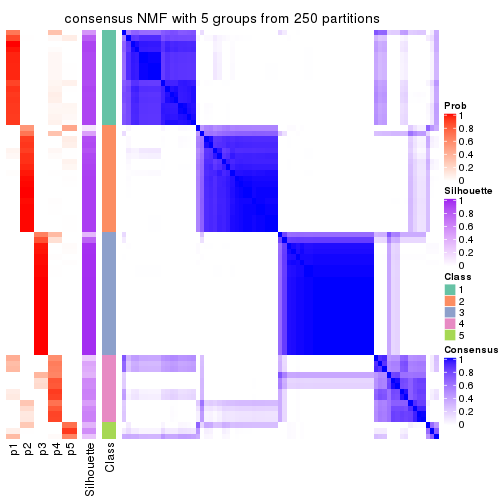
consensus_heatmap(res, k = 6)

Heatmaps for the membership of samples in all partitions to see how consistent they are:
membership_heatmap(res, k = 2)
membership_heatmap(res, k = 3)
membership_heatmap(res, k = 4)
membership_heatmap(res, k = 5)
membership_heatmap(res, k = 6)
As soon as we have had the classes for columns, we can look for signatures which are significantly different between classes which can be candidate marks for certain classes. Following are the heatmaps for signatures.
Signature heatmaps where rows are scaled:
get_signatures(res, k = 2)
get_signatures(res, k = 3)
get_signatures(res, k = 4)
get_signatures(res, k = 5)
get_signatures(res, k = 6)
Signature heatmaps where rows are not scaled:
get_signatures(res, k = 2, scale_rows = FALSE)
get_signatures(res, k = 3, scale_rows = FALSE)
get_signatures(res, k = 4, scale_rows = FALSE)
get_signatures(res, k = 5, scale_rows = FALSE)
get_signatures(res, k = 6, scale_rows = FALSE)
Compare the overlap of signatures from different k:
compare_signatures(res)
get_signature() returns a data frame invisibly. TO get the list of signatures, the function
call should be assigned to a variable explicitly. In following code, if plot argument is set
to FALSE, no heatmap is plotted while only the differential analysis is performed.
# code only for demonstration
tb = get_signature(res, k = ..., plot = FALSE)
An example of the output of tb is:
#> which_row fdr mean_1 mean_2 scaled_mean_1 scaled_mean_2 km
#> 1 38 0.042760348 8.373488 9.131774 -0.5533452 0.5164555 1
#> 2 40 0.018707592 7.106213 8.469186 -0.6173731 0.5762149 1
#> 3 55 0.019134737 10.221463 11.207825 -0.6159697 0.5749050 1
#> 4 59 0.006059896 5.921854 7.869574 -0.6899429 0.6439467 1
#> 5 60 0.018055526 8.928898 10.211722 -0.6204761 0.5791110 1
#> 6 98 0.009384629 15.714769 14.887706 0.6635654 -0.6193277 2
...
The columns in tb are:
which_row: row indices corresponding to the input matrix.fdr: FDR for the differential test. mean_x: The mean value in group x.scaled_mean_x: The mean value in group x after rows are scaled.km: Row groups if k-means clustering is applied to rows.UMAP plot which shows how samples are separated.
dimension_reduction(res, k = 2, method = "UMAP")
dimension_reduction(res, k = 3, method = "UMAP")
dimension_reduction(res, k = 4, method = "UMAP")
dimension_reduction(res, k = 5, method = "UMAP")
dimension_reduction(res, k = 6, method = "UMAP")
Following heatmap shows how subgroups are split when increasing k:
collect_classes(res)
If matrix rows can be associated to genes, consider to use functional_enrichment(res,
...) to perform function enrichment for the signature genes. See this vignette for more detailed explanations.
The object with results only for a single top-value method and a single partition method can be extracted as:
res = res_list["CV", "hclust"]
# you can also extract it by
# res = res_list["CV:hclust"]
A summary of res and all the functions that can be applied to it:
res
#> A 'ConsensusPartition' object with k = 2, 3, 4, 5, 6.
#> On a matrix with 12731 rows and 73 columns.
#> Top rows (1000, 2000, 3000, 4000, 5000) are extracted by 'CV' method.
#> Subgroups are detected by 'hclust' method.
#> Performed in total 1250 partitions by row resampling.
#> Best k for subgroups seems to be 6.
#>
#> Following methods can be applied to this 'ConsensusPartition' object:
#> [1] "cola_report" "collect_classes" "collect_plots"
#> [4] "collect_stats" "colnames" "compare_signatures"
#> [7] "consensus_heatmap" "dimension_reduction" "functional_enrichment"
#> [10] "get_anno_col" "get_anno" "get_classes"
#> [13] "get_consensus" "get_matrix" "get_membership"
#> [16] "get_param" "get_signatures" "get_stats"
#> [19] "is_best_k" "is_stable_k" "membership_heatmap"
#> [22] "ncol" "nrow" "plot_ecdf"
#> [25] "rownames" "select_partition_number" "show"
#> [28] "suggest_best_k" "test_to_known_factors"
collect_plots() function collects all the plots made from res for all k (number of partitions)
into one single page to provide an easy and fast comparison between different k.
collect_plots(res)
The plots are:
k and the heatmap of
predicted classes for each k.k.k.k.All the plots in panels can be made by individual functions and they are plotted later in this section.
select_partition_number() produces several plots showing different
statistics for choosing “optimized” k. There are following statistics:
k;k, the area increased is defined as \(A_k - A_{k-1}\).The detailed explanations of these statistics can be found in the cola vignette.
Generally speaking, lower PAC score, higher mean silhouette score or higher
concordance corresponds to better partition. Rand index and Jaccard index
measure how similar the current partition is compared to partition with k-1.
If they are too similar, we won't accept k is better than k-1.
select_partition_number(res)
The numeric values for all these statistics can be obtained by get_stats().
get_stats(res)
#> k 1-PAC mean_silhouette concordance area_increased Rand Jaccard
#> 2 2 0.380 0.225 0.659 0.4334 0.562 0.562
#> 3 3 0.442 0.661 0.716 0.3947 0.543 0.327
#> 4 4 0.599 0.728 0.763 0.1010 0.970 0.910
#> 5 5 0.635 0.716 0.731 0.1068 0.914 0.722
#> 6 6 0.749 0.641 0.783 0.0618 0.904 0.626
suggest_best_k() suggests the best \(k\) based on these statistics. The rules are as follows:
suggest_best_k(res)
#> [1] 6
Following shows the table of the partitions (You need to click the show/hide
code output link to see it). The membership matrix (columns with name p*)
is inferred by
clue::cl_consensus()
function with the SE method. Basically the value in the membership matrix
represents the probability to belong to a certain group. The finall class
label for an item is determined with the group with highest probability it
belongs to.
In get_classes() function, the entropy is calculated from the membership
matrix and the silhouette score is calculated from the consensus matrix.
cbind(get_classes(res, k = 2), get_membership(res, k = 2))
#> class entropy silhouette p1 p2
#> SRR2144343 1 0.981 -0.0241 0.580 0.420
#> SRR2144345 1 0.981 -0.0241 0.580 0.420
#> SRR2144344 1 0.000 0.2399 1.000 0.000
#> SRR2144342 2 0.985 0.1242 0.428 0.572
#> SRR2144341 1 0.981 -0.0241 0.580 0.420
#> SRR2144340 2 0.925 0.1119 0.340 0.660
#> SRR2144339 1 0.981 -0.0241 0.580 0.420
#> SRR2144336 1 0.000 0.2399 1.000 0.000
#> SRR2144338 2 0.991 0.1828 0.444 0.556
#> SRR2144337 1 0.000 0.2399 1.000 0.000
#> SRR2144335 1 0.000 0.2399 1.000 0.000
#> SRR2144332 1 0.981 -0.0241 0.580 0.420
#> SRR2144334 2 0.991 0.1828 0.444 0.556
#> SRR2144333 1 0.000 0.2399 1.000 0.000
#> SRR2144331 2 0.991 0.1828 0.444 0.556
#> SRR2144330 1 0.000 0.2399 1.000 0.000
#> SRR2144328 2 0.991 0.1828 0.444 0.556
#> SRR2144329 1 0.981 -0.0241 0.580 0.420
#> SRR2144327 2 0.991 0.1828 0.444 0.556
#> SRR2144326 1 0.000 0.2399 1.000 0.000
#> SRR2144325 1 0.981 -0.0241 0.580 0.420
#> SRR2144323 1 0.981 -0.0241 0.580 0.420
#> SRR2144324 1 0.000 0.2399 1.000 0.000
#> SRR2144321 1 0.981 -0.0241 0.580 0.420
#> SRR2144322 2 0.991 0.1828 0.444 0.556
#> SRR2144320 1 0.000 0.2399 1.000 0.000
#> SRR2144319 1 0.981 -0.0241 0.580 0.420
#> SRR2144316 2 0.991 0.1828 0.444 0.556
#> SRR2144317 1 0.000 0.2399 1.000 0.000
#> SRR2144318 2 0.991 0.1828 0.444 0.556
#> SRR2144315 1 0.978 0.3707 0.588 0.412
#> SRR2144314 1 0.985 0.3748 0.572 0.428
#> SRR2144313 1 0.985 0.3748 0.572 0.428
#> SRR2144312 1 0.978 0.3707 0.588 0.412
#> SRR2144311 2 0.980 0.1479 0.416 0.584
#> SRR2144308 1 0.978 0.3707 0.588 0.412
#> SRR2144309 1 0.978 0.3707 0.588 0.412
#> SRR2144310 2 0.925 0.1135 0.340 0.660
#> SRR2144307 1 0.985 0.3748 0.572 0.428
#> SRR2144304 1 0.985 0.3748 0.572 0.428
#> SRR2144306 2 0.980 0.1479 0.416 0.584
#> SRR2144303 2 0.981 0.1264 0.420 0.580
#> SRR2144305 1 0.978 0.3707 0.588 0.412
#> SRR2144302 1 0.978 0.3707 0.588 0.412
#> SRR2144301 2 0.980 0.1479 0.416 0.584
#> SRR2144300 1 0.985 0.3748 0.572 0.428
#> SRR2144299 1 0.985 0.3748 0.572 0.428
#> SRR2144298 2 0.987 0.1108 0.432 0.568
#> SRR2144297 1 0.978 0.3707 0.588 0.412
#> SRR2144296 1 0.985 0.3748 0.572 0.428
#> SRR2144295 1 0.978 0.3707 0.588 0.412
#> SRR2144293 1 0.978 0.3707 0.588 0.412
#> SRR2144294 2 0.980 0.1479 0.416 0.584
#> SRR2144291 2 0.981 0.1405 0.420 0.580
#> SRR2144292 1 0.978 0.3707 0.588 0.412
#> SRR2144289 2 0.980 0.1479 0.416 0.584
#> SRR2144290 1 0.985 0.3748 0.572 0.428
#> SRR2144287 2 0.980 0.1479 0.416 0.584
#> SRR2144288 1 0.978 0.3707 0.588 0.412
#> SRR2144286 1 0.985 0.3748 0.572 0.428
#> SRR2144285 1 0.978 0.3707 0.588 0.412
#> SRR2144284 2 0.985 0.1242 0.428 0.572
#> SRR2144282 1 0.978 0.3707 0.588 0.412
#> SRR2144283 1 0.985 0.3748 0.572 0.428
#> SRR2144281 1 0.985 0.3748 0.572 0.428
#> SRR2144279 1 0.997 0.2201 0.532 0.468
#> SRR2144280 1 0.985 0.3748 0.572 0.428
#> SRR2144278 2 0.983 0.1341 0.424 0.576
#> SRR2144277 1 0.999 0.1806 0.520 0.480
#> SRR2144276 1 0.978 0.3707 0.588 0.412
#> SRR2144274 2 0.983 0.1341 0.424 0.576
#> SRR2144275 1 0.978 0.3707 0.588 0.412
#> SRR2144273 1 0.985 0.3748 0.572 0.428
cbind(get_classes(res, k = 3), get_membership(res, k = 3))
#> class entropy silhouette p1 p2 p3
#> SRR2144343 2 0.0000 0.721 0.000 1.000 0.000
#> SRR2144345 2 0.0000 0.721 0.000 1.000 0.000
#> SRR2144344 3 0.6836 0.495 0.016 0.412 0.572
#> SRR2144342 1 0.1753 0.757 0.952 0.000 0.048
#> SRR2144341 2 0.0000 0.721 0.000 1.000 0.000
#> SRR2144340 1 0.6079 0.578 0.784 0.128 0.088
#> SRR2144339 2 0.0000 0.721 0.000 1.000 0.000
#> SRR2144336 3 0.6836 0.495 0.016 0.412 0.572
#> SRR2144338 2 0.9547 0.677 0.192 0.416 0.392
#> SRR2144337 3 0.6836 0.495 0.016 0.412 0.572
#> SRR2144335 3 0.6836 0.495 0.016 0.412 0.572
#> SRR2144332 2 0.0000 0.721 0.000 1.000 0.000
#> SRR2144334 2 0.9547 0.677 0.192 0.416 0.392
#> SRR2144333 3 0.6836 0.495 0.016 0.412 0.572
#> SRR2144331 2 0.9547 0.677 0.192 0.416 0.392
#> SRR2144330 3 0.6836 0.495 0.016 0.412 0.572
#> SRR2144328 2 0.9547 0.677 0.192 0.416 0.392
#> SRR2144329 2 0.0000 0.721 0.000 1.000 0.000
#> SRR2144327 2 0.9547 0.677 0.192 0.416 0.392
#> SRR2144326 3 0.6836 0.495 0.016 0.412 0.572
#> SRR2144325 2 0.0000 0.721 0.000 1.000 0.000
#> SRR2144323 2 0.0000 0.721 0.000 1.000 0.000
#> SRR2144324 3 0.6836 0.495 0.016 0.412 0.572
#> SRR2144321 2 0.0000 0.721 0.000 1.000 0.000
#> SRR2144322 2 0.9547 0.677 0.192 0.416 0.392
#> SRR2144320 3 0.6836 0.495 0.016 0.412 0.572
#> SRR2144319 2 0.0000 0.721 0.000 1.000 0.000
#> SRR2144316 2 0.9547 0.677 0.192 0.416 0.392
#> SRR2144317 3 0.6836 0.495 0.016 0.412 0.572
#> SRR2144318 2 0.9547 0.677 0.192 0.416 0.392
#> SRR2144315 3 0.6215 0.570 0.428 0.000 0.572
#> SRR2144314 1 0.7082 0.718 0.724 0.120 0.156
#> SRR2144313 1 0.7082 0.718 0.724 0.120 0.156
#> SRR2144312 3 0.6225 0.571 0.432 0.000 0.568
#> SRR2144311 1 0.0592 0.776 0.988 0.000 0.012
#> SRR2144308 3 0.6225 0.571 0.432 0.000 0.568
#> SRR2144309 3 0.6225 0.571 0.432 0.000 0.568
#> SRR2144310 1 0.6012 0.580 0.788 0.124 0.088
#> SRR2144307 1 0.7082 0.718 0.724 0.120 0.156
#> SRR2144304 1 0.7082 0.718 0.724 0.120 0.156
#> SRR2144306 1 0.0592 0.776 0.988 0.000 0.012
#> SRR2144303 1 0.2176 0.768 0.948 0.020 0.032
#> SRR2144305 3 0.6225 0.571 0.432 0.000 0.568
#> SRR2144302 3 0.6225 0.571 0.432 0.000 0.568
#> SRR2144301 1 0.0592 0.776 0.988 0.000 0.012
#> SRR2144300 1 0.7082 0.718 0.724 0.120 0.156
#> SRR2144299 1 0.6254 0.740 0.776 0.116 0.108
#> SRR2144298 1 0.0592 0.780 0.988 0.000 0.012
#> SRR2144297 3 0.6225 0.571 0.432 0.000 0.568
#> SRR2144296 1 0.7082 0.718 0.724 0.120 0.156
#> SRR2144295 3 0.6225 0.571 0.432 0.000 0.568
#> SRR2144293 3 0.6225 0.571 0.432 0.000 0.568
#> SRR2144294 1 0.0592 0.776 0.988 0.000 0.012
#> SRR2144291 1 0.1163 0.780 0.972 0.000 0.028
#> SRR2144292 3 0.6225 0.571 0.432 0.000 0.568
#> SRR2144289 1 0.0592 0.776 0.988 0.000 0.012
#> SRR2144290 1 0.7082 0.718 0.724 0.120 0.156
#> SRR2144287 1 0.0592 0.776 0.988 0.000 0.012
#> SRR2144288 3 0.6225 0.571 0.432 0.000 0.568
#> SRR2144286 1 0.7082 0.718 0.724 0.120 0.156
#> SRR2144285 3 0.6225 0.571 0.432 0.000 0.568
#> SRR2144284 1 0.0424 0.780 0.992 0.000 0.008
#> SRR2144282 3 0.6225 0.571 0.432 0.000 0.568
#> SRR2144283 1 0.7026 0.721 0.728 0.120 0.152
#> SRR2144281 1 0.7082 0.718 0.724 0.120 0.156
#> SRR2144279 1 0.4399 0.763 0.864 0.044 0.092
#> SRR2144280 1 0.7082 0.718 0.724 0.120 0.156
#> SRR2144278 1 0.0237 0.780 0.996 0.000 0.004
#> SRR2144277 1 0.3889 0.766 0.884 0.032 0.084
#> SRR2144276 3 0.6225 0.571 0.432 0.000 0.568
#> SRR2144274 1 0.0000 0.780 1.000 0.000 0.000
#> SRR2144275 3 0.6225 0.571 0.432 0.000 0.568
#> SRR2144273 1 0.7082 0.718 0.724 0.120 0.156
cbind(get_classes(res, k = 4), get_membership(res, k = 4))
#> class entropy silhouette p1 p2 p3 p4
#> SRR2144343 2 0.4134 1.0000 0.000 0.740 0.260 0.000
#> SRR2144345 2 0.4134 1.0000 0.000 0.740 0.260 0.000
#> SRR2144344 3 0.1211 0.5048 0.000 0.040 0.960 0.000
#> SRR2144342 1 0.6900 0.4504 0.604 0.260 0.008 0.128
#> SRR2144341 2 0.4134 1.0000 0.000 0.740 0.260 0.000
#> SRR2144340 1 0.8004 0.0556 0.440 0.260 0.008 0.292
#> SRR2144339 2 0.4134 1.0000 0.000 0.740 0.260 0.000
#> SRR2144336 3 0.1211 0.5048 0.000 0.040 0.960 0.000
#> SRR2144338 4 0.0000 1.0000 0.000 0.000 0.000 1.000
#> SRR2144337 3 0.1211 0.5048 0.000 0.040 0.960 0.000
#> SRR2144335 3 0.1211 0.5048 0.000 0.040 0.960 0.000
#> SRR2144332 2 0.4134 1.0000 0.000 0.740 0.260 0.000
#> SRR2144334 4 0.0000 1.0000 0.000 0.000 0.000 1.000
#> SRR2144333 3 0.1211 0.5048 0.000 0.040 0.960 0.000
#> SRR2144331 4 0.0000 1.0000 0.000 0.000 0.000 1.000
#> SRR2144330 3 0.1211 0.5048 0.000 0.040 0.960 0.000
#> SRR2144328 4 0.0000 1.0000 0.000 0.000 0.000 1.000
#> SRR2144329 2 0.4134 1.0000 0.000 0.740 0.260 0.000
#> SRR2144327 4 0.0000 1.0000 0.000 0.000 0.000 1.000
#> SRR2144326 3 0.1211 0.5048 0.000 0.040 0.960 0.000
#> SRR2144325 2 0.4134 1.0000 0.000 0.740 0.260 0.000
#> SRR2144323 2 0.4134 1.0000 0.000 0.740 0.260 0.000
#> SRR2144324 3 0.1211 0.5048 0.000 0.040 0.960 0.000
#> SRR2144321 2 0.4134 1.0000 0.000 0.740 0.260 0.000
#> SRR2144322 4 0.0000 1.0000 0.000 0.000 0.000 1.000
#> SRR2144320 3 0.1211 0.5048 0.000 0.040 0.960 0.000
#> SRR2144319 2 0.4134 1.0000 0.000 0.740 0.260 0.000
#> SRR2144316 4 0.0000 1.0000 0.000 0.000 0.000 1.000
#> SRR2144317 3 0.1211 0.5048 0.000 0.040 0.960 0.000
#> SRR2144318 4 0.0000 1.0000 0.000 0.000 0.000 1.000
#> SRR2144315 3 0.4776 0.6591 0.376 0.000 0.624 0.000
#> SRR2144314 1 0.4655 0.7080 0.796 0.088 0.116 0.000
#> SRR2144313 1 0.4655 0.7080 0.796 0.088 0.116 0.000
#> SRR2144312 3 0.4790 0.6598 0.380 0.000 0.620 0.000
#> SRR2144311 1 0.3803 0.7440 0.836 0.032 0.000 0.132
#> SRR2144308 3 0.4790 0.6598 0.380 0.000 0.620 0.000
#> SRR2144309 3 0.4790 0.6598 0.380 0.000 0.620 0.000
#> SRR2144310 1 0.8015 0.0622 0.436 0.260 0.008 0.296
#> SRR2144307 1 0.4655 0.7080 0.796 0.088 0.116 0.000
#> SRR2144304 1 0.4655 0.7080 0.796 0.088 0.116 0.000
#> SRR2144306 1 0.4579 0.7306 0.768 0.032 0.000 0.200
#> SRR2144303 1 0.3988 0.7402 0.820 0.004 0.020 0.156
#> SRR2144305 3 0.4790 0.6598 0.380 0.000 0.620 0.000
#> SRR2144302 3 0.4790 0.6598 0.380 0.000 0.620 0.000
#> SRR2144301 1 0.3856 0.7438 0.832 0.032 0.000 0.136
#> SRR2144300 1 0.4655 0.7080 0.796 0.088 0.116 0.000
#> SRR2144299 1 0.3243 0.7349 0.876 0.088 0.036 0.000
#> SRR2144298 1 0.3587 0.7474 0.860 0.032 0.004 0.104
#> SRR2144297 3 0.4790 0.6598 0.380 0.000 0.620 0.000
#> SRR2144296 1 0.4655 0.7080 0.796 0.088 0.116 0.000
#> SRR2144295 3 0.4790 0.6598 0.380 0.000 0.620 0.000
#> SRR2144293 3 0.4790 0.6598 0.380 0.000 0.620 0.000
#> SRR2144294 1 0.4244 0.7390 0.800 0.032 0.000 0.168
#> SRR2144291 1 0.3703 0.7478 0.840 0.008 0.012 0.140
#> SRR2144292 3 0.4790 0.6598 0.380 0.000 0.620 0.000
#> SRR2144289 1 0.3856 0.7438 0.832 0.032 0.000 0.136
#> SRR2144290 1 0.4655 0.7080 0.796 0.088 0.116 0.000
#> SRR2144287 1 0.3856 0.7438 0.832 0.032 0.000 0.136
#> SRR2144288 3 0.4790 0.6598 0.380 0.000 0.620 0.000
#> SRR2144286 1 0.4655 0.7080 0.796 0.088 0.116 0.000
#> SRR2144285 3 0.4790 0.6598 0.380 0.000 0.620 0.000
#> SRR2144284 1 0.3648 0.7463 0.856 0.032 0.004 0.108
#> SRR2144282 3 0.4790 0.6598 0.380 0.000 0.620 0.000
#> SRR2144283 1 0.4599 0.7099 0.800 0.088 0.112 0.000
#> SRR2144281 1 0.4655 0.7080 0.796 0.088 0.116 0.000
#> SRR2144279 1 0.1174 0.7448 0.968 0.012 0.020 0.000
#> SRR2144280 1 0.4655 0.7080 0.796 0.088 0.116 0.000
#> SRR2144278 1 0.3581 0.7473 0.852 0.032 0.000 0.116
#> SRR2144277 1 0.0376 0.7471 0.992 0.004 0.000 0.004
#> SRR2144276 3 0.4790 0.6598 0.380 0.000 0.620 0.000
#> SRR2144274 1 0.3638 0.7473 0.848 0.032 0.000 0.120
#> SRR2144275 3 0.4790 0.6598 0.380 0.000 0.620 0.000
#> SRR2144273 1 0.4655 0.7080 0.796 0.088 0.116 0.000
cbind(get_classes(res, k = 5), get_membership(res, k = 5))
#> class entropy silhouette p1 p2 p3 p4 p5
#> SRR2144343 2 0.0510 1.0000 0.000 0.984 0.000 0.016 0.000
#> SRR2144345 2 0.0510 1.0000 0.000 0.984 0.000 0.016 0.000
#> SRR2144344 3 0.2624 0.5651 0.000 0.116 0.872 0.012 0.000
#> SRR2144342 1 0.5449 0.4303 0.736 0.008 0.128 0.052 0.076
#> SRR2144341 2 0.0510 1.0000 0.000 0.984 0.000 0.016 0.000
#> SRR2144340 1 0.6441 0.0985 0.596 0.016 0.128 0.012 0.248
#> SRR2144339 2 0.0510 1.0000 0.000 0.984 0.000 0.016 0.000
#> SRR2144336 3 0.2624 0.5651 0.000 0.116 0.872 0.012 0.000
#> SRR2144338 5 0.0000 0.9973 0.000 0.000 0.000 0.000 1.000
#> SRR2144337 3 0.2624 0.5651 0.000 0.116 0.872 0.012 0.000
#> SRR2144335 3 0.2624 0.5651 0.000 0.116 0.872 0.012 0.000
#> SRR2144332 2 0.0510 1.0000 0.000 0.984 0.000 0.016 0.000
#> SRR2144334 5 0.0162 0.9973 0.004 0.000 0.000 0.000 0.996
#> SRR2144333 3 0.2624 0.5651 0.000 0.116 0.872 0.012 0.000
#> SRR2144331 5 0.0162 0.9973 0.004 0.000 0.000 0.000 0.996
#> SRR2144330 3 0.2624 0.5651 0.000 0.116 0.872 0.012 0.000
#> SRR2144328 5 0.0162 0.9973 0.004 0.000 0.000 0.000 0.996
#> SRR2144329 2 0.0510 1.0000 0.000 0.984 0.000 0.016 0.000
#> SRR2144327 5 0.0162 0.9973 0.004 0.000 0.000 0.000 0.996
#> SRR2144326 3 0.2624 0.5651 0.000 0.116 0.872 0.012 0.000
#> SRR2144325 2 0.0510 1.0000 0.000 0.984 0.000 0.016 0.000
#> SRR2144323 2 0.0510 1.0000 0.000 0.984 0.000 0.016 0.000
#> SRR2144324 3 0.2624 0.5651 0.000 0.116 0.872 0.012 0.000
#> SRR2144321 2 0.0510 1.0000 0.000 0.984 0.000 0.016 0.000
#> SRR2144322 5 0.0000 0.9973 0.000 0.000 0.000 0.000 1.000
#> SRR2144320 3 0.2624 0.5651 0.000 0.116 0.872 0.012 0.000
#> SRR2144319 2 0.0510 1.0000 0.000 0.984 0.000 0.016 0.000
#> SRR2144316 5 0.0000 0.9973 0.000 0.000 0.000 0.000 1.000
#> SRR2144317 3 0.2624 0.5651 0.000 0.116 0.872 0.012 0.000
#> SRR2144318 5 0.0000 0.9973 0.000 0.000 0.000 0.000 1.000
#> SRR2144315 3 0.4561 0.6066 0.008 0.000 0.504 0.488 0.000
#> SRR2144314 4 0.0000 0.8775 0.000 0.000 0.000 1.000 0.000
#> SRR2144313 4 0.0404 0.8766 0.012 0.000 0.000 0.988 0.000
#> SRR2144312 3 0.4562 0.6071 0.008 0.000 0.500 0.492 0.000
#> SRR2144311 1 0.4714 0.7274 0.644 0.000 0.000 0.324 0.032
#> SRR2144308 3 0.4562 0.6071 0.008 0.000 0.500 0.492 0.000
#> SRR2144309 3 0.4562 0.6071 0.008 0.000 0.500 0.492 0.000
#> SRR2144310 1 0.6118 0.2196 0.640 0.004 0.128 0.024 0.204
#> SRR2144307 4 0.0404 0.8766 0.012 0.000 0.000 0.988 0.000
#> SRR2144304 4 0.0404 0.8766 0.012 0.000 0.000 0.988 0.000
#> SRR2144306 1 0.6358 0.6504 0.492 0.000 0.000 0.328 0.180
#> SRR2144303 1 0.6031 0.4211 0.480 0.012 0.000 0.428 0.080
#> SRR2144305 3 0.4562 0.6071 0.008 0.000 0.500 0.492 0.000
#> SRR2144302 3 0.4562 0.6071 0.008 0.000 0.500 0.492 0.000
#> SRR2144301 1 0.4804 0.7265 0.636 0.000 0.000 0.328 0.036
#> SRR2144300 4 0.0404 0.8766 0.012 0.000 0.000 0.988 0.000
#> SRR2144299 4 0.3752 0.4330 0.292 0.000 0.000 0.708 0.000
#> SRR2144298 1 0.3990 0.6536 0.688 0.000 0.000 0.308 0.004
#> SRR2144297 3 0.4562 0.6071 0.008 0.000 0.500 0.492 0.000
#> SRR2144296 4 0.0000 0.8775 0.000 0.000 0.000 1.000 0.000
#> SRR2144295 3 0.4562 0.6071 0.008 0.000 0.500 0.492 0.000
#> SRR2144293 3 0.4562 0.6071 0.008 0.000 0.500 0.492 0.000
#> SRR2144294 1 0.5599 0.7102 0.580 0.000 0.000 0.328 0.092
#> SRR2144291 1 0.5844 0.5358 0.492 0.012 0.000 0.432 0.064
#> SRR2144292 3 0.4562 0.6071 0.008 0.000 0.500 0.492 0.000
#> SRR2144289 1 0.4804 0.7265 0.636 0.000 0.000 0.328 0.036
#> SRR2144290 4 0.0000 0.8775 0.000 0.000 0.000 1.000 0.000
#> SRR2144287 1 0.4804 0.7265 0.636 0.000 0.000 0.328 0.036
#> SRR2144288 3 0.4562 0.6071 0.008 0.000 0.500 0.492 0.000
#> SRR2144286 4 0.0000 0.8775 0.000 0.000 0.000 1.000 0.000
#> SRR2144285 3 0.4562 0.6071 0.008 0.000 0.500 0.492 0.000
#> SRR2144284 1 0.3928 0.6657 0.700 0.000 0.000 0.296 0.004
#> SRR2144282 3 0.4562 0.6071 0.008 0.000 0.500 0.492 0.000
#> SRR2144283 4 0.0404 0.8715 0.012 0.000 0.000 0.988 0.000
#> SRR2144281 4 0.0000 0.8775 0.000 0.000 0.000 1.000 0.000
#> SRR2144279 4 0.4425 0.0783 0.392 0.008 0.000 0.600 0.000
#> SRR2144280 4 0.0404 0.8766 0.012 0.000 0.000 0.988 0.000
#> SRR2144278 1 0.4251 0.7235 0.672 0.000 0.000 0.316 0.012
#> SRR2144277 4 0.4688 -0.2275 0.456 0.008 0.000 0.532 0.004
#> SRR2144276 3 0.4562 0.6071 0.008 0.000 0.500 0.492 0.000
#> SRR2144274 1 0.4384 0.7239 0.660 0.000 0.000 0.324 0.016
#> SRR2144275 3 0.4562 0.6071 0.008 0.000 0.500 0.492 0.000
#> SRR2144273 4 0.0000 0.8775 0.000 0.000 0.000 1.000 0.000
cbind(get_classes(res, k = 6), get_membership(res, k = 6))
#> class entropy silhouette p1 p2 p3 p4 p5 p6
#> SRR2144343 2 0.0000 1.000 0.000 1 0.000 0.000 0.000 0.000
#> SRR2144345 2 0.0000 1.000 0.000 1 0.000 0.000 0.000 0.000
#> SRR2144344 5 0.3869 0.319 0.000 0 0.000 0.500 0.500 0.000
#> SRR2144342 3 0.2765 0.728 0.132 0 0.848 0.016 0.000 0.004
#> SRR2144341 2 0.0000 1.000 0.000 1 0.000 0.000 0.000 0.000
#> SRR2144340 3 0.2790 0.787 0.020 0 0.840 0.000 0.000 0.140
#> SRR2144339 2 0.0000 1.000 0.000 1 0.000 0.000 0.000 0.000
#> SRR2144336 5 0.3869 0.319 0.000 0 0.000 0.500 0.500 0.000
#> SRR2144338 6 0.0000 0.996 0.000 0 0.000 0.000 0.000 1.000
#> SRR2144337 4 0.3869 -0.389 0.000 0 0.000 0.500 0.500 0.000
#> SRR2144335 5 0.3869 0.319 0.000 0 0.000 0.500 0.500 0.000
#> SRR2144332 2 0.0000 1.000 0.000 1 0.000 0.000 0.000 0.000
#> SRR2144334 6 0.0146 0.996 0.004 0 0.000 0.000 0.000 0.996
#> SRR2144333 4 0.3869 -0.389 0.000 0 0.000 0.500 0.500 0.000
#> SRR2144331 6 0.0146 0.996 0.004 0 0.000 0.000 0.000 0.996
#> SRR2144330 4 0.3869 -0.389 0.000 0 0.000 0.500 0.500 0.000
#> SRR2144328 6 0.0146 0.996 0.004 0 0.000 0.000 0.000 0.996
#> SRR2144329 2 0.0000 1.000 0.000 1 0.000 0.000 0.000 0.000
#> SRR2144327 6 0.0146 0.996 0.004 0 0.000 0.000 0.000 0.996
#> SRR2144326 4 0.3869 -0.389 0.000 0 0.000 0.500 0.500 0.000
#> SRR2144325 2 0.0000 1.000 0.000 1 0.000 0.000 0.000 0.000
#> SRR2144323 2 0.0000 1.000 0.000 1 0.000 0.000 0.000 0.000
#> SRR2144324 5 0.3869 0.319 0.000 0 0.000 0.500 0.500 0.000
#> SRR2144321 2 0.0000 1.000 0.000 1 0.000 0.000 0.000 0.000
#> SRR2144322 6 0.0000 0.996 0.000 0 0.000 0.000 0.000 1.000
#> SRR2144320 5 0.3869 0.319 0.000 0 0.000 0.500 0.500 0.000
#> SRR2144319 2 0.0000 1.000 0.000 1 0.000 0.000 0.000 0.000
#> SRR2144316 6 0.0000 0.996 0.000 0 0.000 0.000 0.000 1.000
#> SRR2144317 4 0.3869 -0.389 0.000 0 0.000 0.500 0.500 0.000
#> SRR2144318 6 0.0000 0.996 0.000 0 0.000 0.000 0.000 1.000
#> SRR2144315 5 0.0146 0.759 0.000 0 0.000 0.004 0.996 0.000
#> SRR2144314 4 0.5181 0.592 0.088 0 0.000 0.484 0.428 0.000
#> SRR2144313 4 0.5379 0.593 0.096 0 0.004 0.480 0.420 0.000
#> SRR2144312 5 0.0000 0.763 0.000 0 0.000 0.000 1.000 0.000
#> SRR2144311 1 0.0547 0.721 0.980 0 0.000 0.000 0.000 0.020
#> SRR2144308 5 0.0000 0.763 0.000 0 0.000 0.000 1.000 0.000
#> SRR2144309 5 0.0000 0.763 0.000 0 0.000 0.000 1.000 0.000
#> SRR2144310 3 0.4427 0.802 0.148 0 0.716 0.000 0.000 0.136
#> SRR2144307 4 0.5379 0.593 0.096 0 0.004 0.480 0.420 0.000
#> SRR2144304 4 0.5379 0.593 0.096 0 0.004 0.480 0.420 0.000
#> SRR2144306 1 0.2738 0.621 0.820 0 0.000 0.004 0.000 0.176
#> SRR2144303 1 0.6209 0.400 0.564 0 0.188 0.008 0.208 0.032
#> SRR2144305 5 0.0000 0.763 0.000 0 0.000 0.000 1.000 0.000
#> SRR2144302 5 0.0000 0.763 0.000 0 0.000 0.000 1.000 0.000
#> SRR2144301 1 0.0777 0.722 0.972 0 0.000 0.004 0.000 0.024
#> SRR2144300 4 0.5379 0.593 0.096 0 0.004 0.480 0.420 0.000
#> SRR2144299 4 0.7462 0.121 0.212 0 0.144 0.336 0.308 0.000
#> SRR2144298 1 0.5284 0.429 0.648 0 0.204 0.020 0.128 0.000
#> SRR2144297 5 0.0000 0.763 0.000 0 0.000 0.000 1.000 0.000
#> SRR2144296 4 0.5145 0.590 0.084 0 0.000 0.484 0.432 0.000
#> SRR2144295 5 0.0000 0.763 0.000 0 0.000 0.000 1.000 0.000
#> SRR2144293 5 0.0000 0.763 0.000 0 0.000 0.000 1.000 0.000
#> SRR2144294 1 0.1700 0.696 0.916 0 0.000 0.004 0.000 0.080
#> SRR2144291 1 0.4986 0.588 0.724 0 0.096 0.012 0.136 0.032
#> SRR2144292 5 0.0000 0.763 0.000 0 0.000 0.000 1.000 0.000
#> SRR2144289 1 0.0777 0.722 0.972 0 0.000 0.004 0.000 0.024
#> SRR2144290 4 0.5145 0.590 0.084 0 0.000 0.484 0.432 0.000
#> SRR2144287 1 0.0777 0.722 0.972 0 0.000 0.004 0.000 0.024
#> SRR2144288 5 0.0000 0.763 0.000 0 0.000 0.000 1.000 0.000
#> SRR2144286 4 0.5145 0.590 0.084 0 0.000 0.484 0.432 0.000
#> SRR2144285 5 0.0000 0.763 0.000 0 0.000 0.000 1.000 0.000
#> SRR2144284 1 0.5103 0.437 0.664 0 0.200 0.016 0.120 0.000
#> SRR2144282 5 0.0000 0.763 0.000 0 0.000 0.000 1.000 0.000
#> SRR2144283 4 0.5457 0.587 0.084 0 0.012 0.476 0.428 0.000
#> SRR2144281 4 0.5181 0.592 0.088 0 0.000 0.484 0.428 0.000
#> SRR2144279 1 0.7155 0.286 0.452 0 0.152 0.168 0.228 0.000
#> SRR2144280 4 0.5379 0.593 0.096 0 0.004 0.480 0.420 0.000
#> SRR2144278 1 0.0935 0.708 0.964 0 0.032 0.000 0.000 0.004
#> SRR2144277 1 0.6546 0.416 0.552 0 0.152 0.116 0.180 0.000
#> SRR2144276 5 0.0000 0.763 0.000 0 0.000 0.000 1.000 0.000
#> SRR2144274 1 0.0520 0.716 0.984 0 0.008 0.000 0.000 0.008
#> SRR2144275 5 0.0000 0.763 0.000 0 0.000 0.000 1.000 0.000
#> SRR2144273 4 0.5145 0.590 0.084 0 0.000 0.484 0.432 0.000
Heatmaps for the consensus matrix. It visualizes the probability of two samples to be in a same group.
consensus_heatmap(res, k = 2)

consensus_heatmap(res, k = 3)
consensus_heatmap(res, k = 4)
consensus_heatmap(res, k = 5)
consensus_heatmap(res, k = 6)
Heatmaps for the membership of samples in all partitions to see how consistent they are:
membership_heatmap(res, k = 2)
membership_heatmap(res, k = 3)
membership_heatmap(res, k = 4)
membership_heatmap(res, k = 5)
membership_heatmap(res, k = 6)
As soon as we have had the classes for columns, we can look for signatures which are significantly different between classes which can be candidate marks for certain classes. Following are the heatmaps for signatures.
Signature heatmaps where rows are scaled:
get_signatures(res, k = 2)

get_signatures(res, k = 3)
get_signatures(res, k = 4)
get_signatures(res, k = 5)
get_signatures(res, k = 6)
Signature heatmaps where rows are not scaled:
get_signatures(res, k = 2, scale_rows = FALSE)

get_signatures(res, k = 3, scale_rows = FALSE)
get_signatures(res, k = 4, scale_rows = FALSE)
get_signatures(res, k = 5, scale_rows = FALSE)
get_signatures(res, k = 6, scale_rows = FALSE)
Compare the overlap of signatures from different k:
compare_signatures(res)
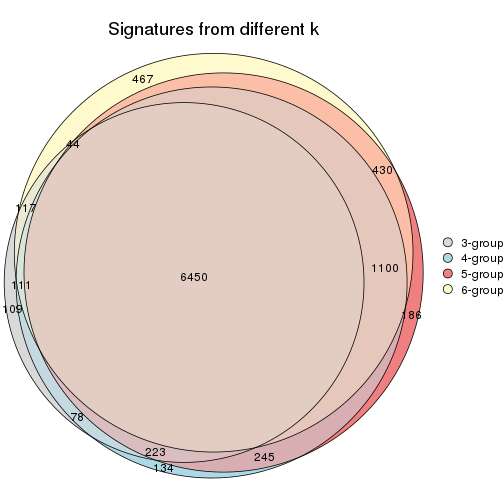
get_signature() returns a data frame invisibly. TO get the list of signatures, the function
call should be assigned to a variable explicitly. In following code, if plot argument is set
to FALSE, no heatmap is plotted while only the differential analysis is performed.
# code only for demonstration
tb = get_signature(res, k = ..., plot = FALSE)
An example of the output of tb is:
#> which_row fdr mean_1 mean_2 scaled_mean_1 scaled_mean_2 km
#> 1 38 0.042760348 8.373488 9.131774 -0.5533452 0.5164555 1
#> 2 40 0.018707592 7.106213 8.469186 -0.6173731 0.5762149 1
#> 3 55 0.019134737 10.221463 11.207825 -0.6159697 0.5749050 1
#> 4 59 0.006059896 5.921854 7.869574 -0.6899429 0.6439467 1
#> 5 60 0.018055526 8.928898 10.211722 -0.6204761 0.5791110 1
#> 6 98 0.009384629 15.714769 14.887706 0.6635654 -0.6193277 2
...
The columns in tb are:
which_row: row indices corresponding to the input matrix.fdr: FDR for the differential test. mean_x: The mean value in group x.scaled_mean_x: The mean value in group x after rows are scaled.km: Row groups if k-means clustering is applied to rows.UMAP plot which shows how samples are separated.
dimension_reduction(res, k = 2, method = "UMAP")
dimension_reduction(res, k = 3, method = "UMAP")
dimension_reduction(res, k = 4, method = "UMAP")
dimension_reduction(res, k = 5, method = "UMAP")
dimension_reduction(res, k = 6, method = "UMAP")
Following heatmap shows how subgroups are split when increasing k:
collect_classes(res)

If matrix rows can be associated to genes, consider to use functional_enrichment(res,
...) to perform function enrichment for the signature genes. See this vignette for more detailed explanations.
The object with results only for a single top-value method and a single partition method can be extracted as:
res = res_list["CV", "kmeans"]
# you can also extract it by
# res = res_list["CV:kmeans"]
A summary of res and all the functions that can be applied to it:
res
#> A 'ConsensusPartition' object with k = 2, 3, 4, 5, 6.
#> On a matrix with 12731 rows and 73 columns.
#> Top rows (1000, 2000, 3000, 4000, 5000) are extracted by 'CV' method.
#> Subgroups are detected by 'kmeans' method.
#> Performed in total 1250 partitions by row resampling.
#> Best k for subgroups seems to be 6.
#>
#> Following methods can be applied to this 'ConsensusPartition' object:
#> [1] "cola_report" "collect_classes" "collect_plots"
#> [4] "collect_stats" "colnames" "compare_signatures"
#> [7] "consensus_heatmap" "dimension_reduction" "functional_enrichment"
#> [10] "get_anno_col" "get_anno" "get_classes"
#> [13] "get_consensus" "get_matrix" "get_membership"
#> [16] "get_param" "get_signatures" "get_stats"
#> [19] "is_best_k" "is_stable_k" "membership_heatmap"
#> [22] "ncol" "nrow" "plot_ecdf"
#> [25] "rownames" "select_partition_number" "show"
#> [28] "suggest_best_k" "test_to_known_factors"
collect_plots() function collects all the plots made from res for all k (number of partitions)
into one single page to provide an easy and fast comparison between different k.
collect_plots(res)
The plots are:
k and the heatmap of
predicted classes for each k.k.k.k.All the plots in panels can be made by individual functions and they are plotted later in this section.
select_partition_number() produces several plots showing different
statistics for choosing “optimized” k. There are following statistics:
k;k, the area increased is defined as \(A_k - A_{k-1}\).The detailed explanations of these statistics can be found in the cola vignette.
Generally speaking, lower PAC score, higher mean silhouette score or higher
concordance corresponds to better partition. Rand index and Jaccard index
measure how similar the current partition is compared to partition with k-1.
If they are too similar, we won't accept k is better than k-1.
select_partition_number(res)
The numeric values for all these statistics can be obtained by get_stats().
get_stats(res)
#> k 1-PAC mean_silhouette concordance area_increased Rand Jaccard
#> 2 2 0.219 0.572 0.779 0.4603 0.573 0.573
#> 3 3 0.476 0.602 0.778 0.4100 0.598 0.410
#> 4 4 0.602 0.756 0.786 0.1166 0.883 0.703
#> 5 5 0.733 0.710 0.667 0.0818 0.832 0.480
#> 6 6 0.850 0.895 0.852 0.0485 0.962 0.807
suggest_best_k() suggests the best \(k\) based on these statistics. The rules are as follows:
suggest_best_k(res)
#> [1] 6
Following shows the table of the partitions (You need to click the show/hide
code output link to see it). The membership matrix (columns with name p*)
is inferred by
clue::cl_consensus()
function with the SE method. Basically the value in the membership matrix
represents the probability to belong to a certain group. The finall class
label for an item is determined with the group with highest probability it
belongs to.
In get_classes() function, the entropy is calculated from the membership
matrix and the silhouette score is calculated from the consensus matrix.
cbind(get_classes(res, k = 2), get_membership(res, k = 2))
#> class entropy silhouette p1 p2
#> SRR2144343 2 0.574 0.7724 0.136 0.864
#> SRR2144345 2 0.574 0.7724 0.136 0.864
#> SRR2144344 1 0.971 0.0943 0.600 0.400
#> SRR2144342 1 0.909 0.5919 0.676 0.324
#> SRR2144341 2 0.574 0.7724 0.136 0.864
#> SRR2144340 2 0.242 0.7784 0.040 0.960
#> SRR2144339 2 0.574 0.7724 0.136 0.864
#> SRR2144336 1 0.971 0.0943 0.600 0.400
#> SRR2144338 2 0.242 0.7784 0.040 0.960
#> SRR2144337 1 0.971 0.0943 0.600 0.400
#> SRR2144335 1 0.971 0.0943 0.600 0.400
#> SRR2144332 2 0.574 0.7724 0.136 0.864
#> SRR2144334 2 0.242 0.7784 0.040 0.960
#> SRR2144333 1 0.971 0.0943 0.600 0.400
#> SRR2144331 2 0.242 0.7784 0.040 0.960
#> SRR2144330 1 0.971 0.0943 0.600 0.400
#> SRR2144328 2 0.242 0.7784 0.040 0.960
#> SRR2144329 2 0.574 0.7724 0.136 0.864
#> SRR2144327 2 0.242 0.7784 0.040 0.960
#> SRR2144326 1 0.978 0.0577 0.588 0.412
#> SRR2144325 2 0.574 0.7724 0.136 0.864
#> SRR2144323 2 0.574 0.7724 0.136 0.864
#> SRR2144324 1 0.971 0.0943 0.600 0.400
#> SRR2144321 2 0.574 0.7724 0.136 0.864
#> SRR2144322 2 0.242 0.7784 0.040 0.960
#> SRR2144320 1 0.971 0.0943 0.600 0.400
#> SRR2144319 2 0.574 0.7724 0.136 0.864
#> SRR2144316 2 0.242 0.7784 0.040 0.960
#> SRR2144317 1 0.971 0.0943 0.600 0.400
#> SRR2144318 2 0.242 0.7784 0.040 0.960
#> SRR2144315 1 0.000 0.6785 1.000 0.000
#> SRR2144314 1 0.781 0.6575 0.768 0.232
#> SRR2144313 1 0.881 0.5747 0.700 0.300
#> SRR2144312 1 0.000 0.6785 1.000 0.000
#> SRR2144311 1 0.904 0.5949 0.680 0.320
#> SRR2144308 1 0.000 0.6785 1.000 0.000
#> SRR2144309 1 0.000 0.6785 1.000 0.000
#> SRR2144310 2 0.997 -0.1521 0.468 0.532
#> SRR2144307 1 0.781 0.6575 0.768 0.232
#> SRR2144304 1 0.781 0.6575 0.768 0.232
#> SRR2144306 2 0.994 -0.1137 0.456 0.544
#> SRR2144303 1 0.913 0.5860 0.672 0.328
#> SRR2144305 1 0.000 0.6785 1.000 0.000
#> SRR2144302 1 0.000 0.6785 1.000 0.000
#> SRR2144301 1 0.900 0.5984 0.684 0.316
#> SRR2144300 1 0.767 0.6623 0.776 0.224
#> SRR2144299 1 0.753 0.6662 0.784 0.216
#> SRR2144298 1 0.895 0.6012 0.688 0.312
#> SRR2144297 1 0.000 0.6785 1.000 0.000
#> SRR2144296 1 0.753 0.6662 0.784 0.216
#> SRR2144295 1 0.000 0.6785 1.000 0.000
#> SRR2144293 1 0.000 0.6785 1.000 0.000
#> SRR2144294 2 0.994 -0.1137 0.456 0.544
#> SRR2144291 1 0.904 0.5949 0.680 0.320
#> SRR2144292 1 0.000 0.6785 1.000 0.000
#> SRR2144289 1 0.895 0.6012 0.688 0.312
#> SRR2144290 1 0.753 0.6662 0.784 0.216
#> SRR2144287 1 0.900 0.5984 0.684 0.316
#> SRR2144288 1 0.000 0.6785 1.000 0.000
#> SRR2144286 1 0.753 0.6662 0.784 0.216
#> SRR2144285 1 0.000 0.6785 1.000 0.000
#> SRR2144284 1 0.895 0.6012 0.688 0.312
#> SRR2144282 1 0.000 0.6785 1.000 0.000
#> SRR2144283 1 0.767 0.6623 0.776 0.224
#> SRR2144281 1 0.781 0.6575 0.768 0.232
#> SRR2144279 1 0.781 0.6575 0.768 0.232
#> SRR2144280 1 0.781 0.6575 0.768 0.232
#> SRR2144278 1 0.900 0.5984 0.684 0.316
#> SRR2144277 1 0.904 0.5949 0.680 0.320
#> SRR2144276 1 0.000 0.6785 1.000 0.000
#> SRR2144274 1 0.900 0.5984 0.684 0.316
#> SRR2144275 1 0.000 0.6785 1.000 0.000
#> SRR2144273 1 0.753 0.6662 0.784 0.216
cbind(get_classes(res, k = 3), get_membership(res, k = 3))
#> class entropy silhouette p1 p2 p3
#> SRR2144343 2 0.0475 0.938 0.004 0.992 0.004
#> SRR2144345 2 0.0475 0.938 0.004 0.992 0.004
#> SRR2144344 3 0.5503 0.773 0.020 0.208 0.772
#> SRR2144342 1 0.3340 0.594 0.880 0.000 0.120
#> SRR2144341 2 0.0475 0.938 0.004 0.992 0.004
#> SRR2144340 1 0.6280 -0.177 0.540 0.460 0.000
#> SRR2144339 2 0.0475 0.938 0.004 0.992 0.004
#> SRR2144336 3 0.5503 0.773 0.020 0.208 0.772
#> SRR2144338 1 0.6299 -0.201 0.524 0.476 0.000
#> SRR2144337 3 0.5503 0.773 0.020 0.208 0.772
#> SRR2144335 3 0.5503 0.773 0.020 0.208 0.772
#> SRR2144332 2 0.0475 0.938 0.004 0.992 0.004
#> SRR2144334 1 0.6299 -0.201 0.524 0.476 0.000
#> SRR2144333 3 0.5503 0.773 0.020 0.208 0.772
#> SRR2144331 1 0.6299 -0.201 0.524 0.476 0.000
#> SRR2144330 3 0.5503 0.773 0.020 0.208 0.772
#> SRR2144328 1 0.6299 -0.201 0.524 0.476 0.000
#> SRR2144329 2 0.0475 0.938 0.004 0.992 0.004
#> SRR2144327 2 0.6302 0.197 0.480 0.520 0.000
#> SRR2144326 3 0.5503 0.773 0.020 0.208 0.772
#> SRR2144325 2 0.0475 0.938 0.004 0.992 0.004
#> SRR2144323 2 0.0475 0.938 0.004 0.992 0.004
#> SRR2144324 3 0.5503 0.773 0.020 0.208 0.772
#> SRR2144321 2 0.0475 0.938 0.004 0.992 0.004
#> SRR2144322 1 0.6299 -0.201 0.524 0.476 0.000
#> SRR2144320 3 0.5503 0.773 0.020 0.208 0.772
#> SRR2144319 2 0.0475 0.938 0.004 0.992 0.004
#> SRR2144316 1 0.6299 -0.201 0.524 0.476 0.000
#> SRR2144317 3 0.5503 0.773 0.020 0.208 0.772
#> SRR2144318 1 0.6299 -0.201 0.524 0.476 0.000
#> SRR2144315 3 0.0000 0.846 0.000 0.000 1.000
#> SRR2144314 1 0.9624 0.503 0.468 0.240 0.292
#> SRR2144313 1 0.9657 0.505 0.460 0.240 0.300
#> SRR2144312 3 0.1411 0.845 0.036 0.000 0.964
#> SRR2144311 1 0.2959 0.587 0.900 0.000 0.100
#> SRR2144308 3 0.0000 0.846 0.000 0.000 1.000
#> SRR2144309 3 0.1411 0.845 0.036 0.000 0.964
#> SRR2144310 1 0.1015 0.519 0.980 0.008 0.012
#> SRR2144307 1 0.9672 0.504 0.456 0.240 0.304
#> SRR2144304 1 0.9672 0.504 0.456 0.240 0.304
#> SRR2144306 1 0.0592 0.517 0.988 0.012 0.000
#> SRR2144303 1 0.3340 0.594 0.880 0.000 0.120
#> SRR2144305 3 0.1411 0.845 0.036 0.000 0.964
#> SRR2144302 3 0.1411 0.845 0.036 0.000 0.964
#> SRR2144301 1 0.2796 0.587 0.908 0.000 0.092
#> SRR2144300 1 0.9672 0.504 0.456 0.240 0.304
#> SRR2144299 1 0.9659 0.481 0.440 0.220 0.340
#> SRR2144298 1 0.4504 0.586 0.804 0.000 0.196
#> SRR2144297 3 0.1753 0.844 0.048 0.000 0.952
#> SRR2144296 1 0.9627 0.483 0.452 0.220 0.328
#> SRR2144295 3 0.1753 0.844 0.048 0.000 0.952
#> SRR2144293 3 0.1753 0.844 0.048 0.000 0.952
#> SRR2144294 1 0.0747 0.514 0.984 0.016 0.000
#> SRR2144291 1 0.2711 0.587 0.912 0.000 0.088
#> SRR2144292 3 0.1753 0.844 0.048 0.000 0.952
#> SRR2144289 1 0.3192 0.594 0.888 0.000 0.112
#> SRR2144290 1 0.9627 0.483 0.452 0.220 0.328
#> SRR2144287 1 0.2796 0.587 0.908 0.000 0.092
#> SRR2144288 3 0.1753 0.844 0.048 0.000 0.952
#> SRR2144286 1 0.9627 0.483 0.452 0.220 0.328
#> SRR2144285 3 0.1289 0.847 0.032 0.000 0.968
#> SRR2144284 1 0.3340 0.595 0.880 0.000 0.120
#> SRR2144282 3 0.1411 0.845 0.036 0.000 0.964
#> SRR2144283 1 0.9574 0.495 0.468 0.220 0.312
#> SRR2144281 1 0.9624 0.503 0.468 0.240 0.292
#> SRR2144279 1 0.9672 0.504 0.456 0.240 0.304
#> SRR2144280 1 0.9672 0.504 0.456 0.240 0.304
#> SRR2144278 1 0.3482 0.595 0.872 0.000 0.128
#> SRR2144277 1 0.3412 0.595 0.876 0.000 0.124
#> SRR2144276 3 0.1411 0.845 0.036 0.000 0.964
#> SRR2144274 1 0.3482 0.595 0.872 0.000 0.128
#> SRR2144275 3 0.1411 0.845 0.036 0.000 0.964
#> SRR2144273 1 0.9627 0.483 0.452 0.220 0.328
cbind(get_classes(res, k = 4), get_membership(res, k = 4))
#> class entropy silhouette p1 p2 p3 p4
#> SRR2144343 2 0.1716 0.998 0.064 0.936 0.000 0.000
#> SRR2144345 2 0.1716 0.998 0.064 0.936 0.000 0.000
#> SRR2144344 3 0.5850 0.709 0.000 0.184 0.700 0.116
#> SRR2144342 1 0.5417 0.543 0.572 0.000 0.016 0.412
#> SRR2144341 2 0.1637 0.998 0.060 0.940 0.000 0.000
#> SRR2144340 4 0.4595 0.865 0.040 0.184 0.000 0.776
#> SRR2144339 2 0.1637 0.998 0.060 0.940 0.000 0.000
#> SRR2144336 3 0.5850 0.709 0.000 0.184 0.700 0.116
#> SRR2144338 4 0.4194 0.875 0.008 0.228 0.000 0.764
#> SRR2144337 3 0.5850 0.709 0.000 0.184 0.700 0.116
#> SRR2144335 3 0.5850 0.709 0.000 0.184 0.700 0.116
#> SRR2144332 2 0.1716 0.998 0.064 0.936 0.000 0.000
#> SRR2144334 4 0.4327 0.884 0.016 0.216 0.000 0.768
#> SRR2144333 3 0.5850 0.709 0.000 0.184 0.700 0.116
#> SRR2144331 4 0.4194 0.875 0.008 0.228 0.000 0.764
#> SRR2144330 3 0.5850 0.709 0.000 0.184 0.700 0.116
#> SRR2144328 4 0.4327 0.884 0.016 0.216 0.000 0.768
#> SRR2144329 2 0.1716 0.998 0.064 0.936 0.000 0.000
#> SRR2144327 4 0.4072 0.844 0.000 0.252 0.000 0.748
#> SRR2144326 3 0.5850 0.709 0.000 0.184 0.700 0.116
#> SRR2144325 2 0.1716 0.998 0.064 0.936 0.000 0.000
#> SRR2144323 2 0.1637 0.998 0.060 0.940 0.000 0.000
#> SRR2144324 3 0.5850 0.709 0.000 0.184 0.700 0.116
#> SRR2144321 2 0.1637 0.998 0.060 0.940 0.000 0.000
#> SRR2144322 4 0.4327 0.884 0.016 0.216 0.000 0.768
#> SRR2144320 3 0.5850 0.709 0.000 0.184 0.700 0.116
#> SRR2144319 2 0.1637 0.998 0.060 0.940 0.000 0.000
#> SRR2144316 4 0.4327 0.884 0.016 0.216 0.000 0.768
#> SRR2144317 3 0.5850 0.709 0.000 0.184 0.700 0.116
#> SRR2144318 4 0.4327 0.884 0.016 0.216 0.000 0.768
#> SRR2144315 3 0.0937 0.780 0.012 0.000 0.976 0.012
#> SRR2144314 1 0.2929 0.711 0.908 0.040 0.028 0.024
#> SRR2144313 1 0.3167 0.713 0.896 0.040 0.048 0.016
#> SRR2144312 3 0.2868 0.797 0.136 0.000 0.864 0.000
#> SRR2144311 1 0.5483 0.505 0.536 0.000 0.016 0.448
#> SRR2144308 3 0.1256 0.784 0.028 0.000 0.964 0.008
#> SRR2144309 3 0.2868 0.797 0.136 0.000 0.864 0.000
#> SRR2144310 4 0.3626 0.600 0.184 0.000 0.004 0.812
#> SRR2144307 1 0.3167 0.713 0.896 0.040 0.048 0.016
#> SRR2144304 1 0.3167 0.713 0.896 0.040 0.048 0.016
#> SRR2144306 4 0.2814 0.654 0.132 0.000 0.000 0.868
#> SRR2144303 1 0.5427 0.542 0.568 0.000 0.016 0.416
#> SRR2144305 3 0.2868 0.797 0.136 0.000 0.864 0.000
#> SRR2144302 3 0.2868 0.797 0.136 0.000 0.864 0.000
#> SRR2144301 1 0.5273 0.502 0.536 0.000 0.008 0.456
#> SRR2144300 1 0.2883 0.713 0.908 0.028 0.048 0.016
#> SRR2144299 1 0.2443 0.710 0.916 0.024 0.060 0.000
#> SRR2144298 1 0.5206 0.607 0.668 0.000 0.024 0.308
#> SRR2144297 3 0.3401 0.793 0.152 0.000 0.840 0.008
#> SRR2144296 1 0.3116 0.708 0.900 0.024 0.044 0.032
#> SRR2144295 3 0.3401 0.793 0.152 0.000 0.840 0.008
#> SRR2144293 3 0.3257 0.795 0.152 0.000 0.844 0.004
#> SRR2144294 4 0.2814 0.654 0.132 0.000 0.000 0.868
#> SRR2144291 1 0.4941 0.532 0.564 0.000 0.000 0.436
#> SRR2144292 3 0.3257 0.795 0.152 0.000 0.844 0.004
#> SRR2144289 1 0.5236 0.537 0.560 0.000 0.008 0.432
#> SRR2144290 1 0.3116 0.708 0.900 0.024 0.044 0.032
#> SRR2144287 1 0.5273 0.502 0.536 0.000 0.008 0.456
#> SRR2144288 3 0.3401 0.793 0.152 0.000 0.840 0.008
#> SRR2144286 1 0.3116 0.708 0.900 0.024 0.044 0.032
#> SRR2144285 3 0.2999 0.800 0.132 0.000 0.864 0.004
#> SRR2144284 1 0.5220 0.542 0.568 0.000 0.008 0.424
#> SRR2144282 3 0.2868 0.797 0.136 0.000 0.864 0.000
#> SRR2144283 1 0.2540 0.712 0.924 0.024 0.028 0.024
#> SRR2144281 1 0.2929 0.711 0.908 0.040 0.028 0.024
#> SRR2144279 1 0.3167 0.713 0.896 0.040 0.048 0.016
#> SRR2144280 1 0.3167 0.713 0.896 0.040 0.048 0.016
#> SRR2144278 1 0.5444 0.541 0.560 0.000 0.016 0.424
#> SRR2144277 1 0.5444 0.541 0.560 0.000 0.016 0.424
#> SRR2144276 3 0.2868 0.797 0.136 0.000 0.864 0.000
#> SRR2144274 1 0.5444 0.541 0.560 0.000 0.016 0.424
#> SRR2144275 3 0.2868 0.797 0.136 0.000 0.864 0.000
#> SRR2144273 1 0.3116 0.708 0.900 0.024 0.044 0.032
cbind(get_classes(res, k = 5), get_membership(res, k = 5))
#> class entropy silhouette p1 p2 p3 p4 p5
#> SRR2144343 3 0.7223 0.413 0.344 0.128 0.464 0.064 0.000
#> SRR2144345 3 0.7207 0.414 0.336 0.128 0.472 0.064 0.000
#> SRR2144344 3 0.4861 0.164 0.000 0.024 0.548 0.000 0.428
#> SRR2144342 1 0.6936 0.810 0.588 0.132 0.016 0.220 0.044
#> SRR2144341 3 0.7207 0.414 0.336 0.128 0.472 0.064 0.000
#> SRR2144340 2 0.2800 0.855 0.072 0.888 0.016 0.024 0.000
#> SRR2144339 3 0.7207 0.414 0.336 0.128 0.472 0.064 0.000
#> SRR2144336 3 0.4861 0.164 0.000 0.024 0.548 0.000 0.428
#> SRR2144338 2 0.0162 0.944 0.000 0.996 0.000 0.004 0.000
#> SRR2144337 3 0.5008 0.164 0.004 0.024 0.544 0.000 0.428
#> SRR2144335 3 0.4861 0.164 0.000 0.024 0.548 0.000 0.428
#> SRR2144332 3 0.7223 0.413 0.344 0.128 0.464 0.064 0.000
#> SRR2144334 2 0.0162 0.944 0.000 0.996 0.000 0.004 0.000
#> SRR2144333 3 0.4861 0.164 0.000 0.024 0.548 0.000 0.428
#> SRR2144331 2 0.0162 0.944 0.000 0.996 0.000 0.004 0.000
#> SRR2144330 3 0.4861 0.164 0.000 0.024 0.548 0.000 0.428
#> SRR2144328 2 0.0162 0.944 0.000 0.996 0.000 0.004 0.000
#> SRR2144329 3 0.7223 0.413 0.344 0.128 0.464 0.064 0.000
#> SRR2144327 2 0.0162 0.944 0.000 0.996 0.000 0.004 0.000
#> SRR2144326 3 0.5196 0.160 0.008 0.028 0.536 0.000 0.428
#> SRR2144325 3 0.7223 0.413 0.344 0.128 0.464 0.064 0.000
#> SRR2144323 3 0.7207 0.414 0.336 0.128 0.472 0.064 0.000
#> SRR2144324 3 0.5008 0.164 0.004 0.024 0.544 0.000 0.428
#> SRR2144321 3 0.7207 0.414 0.336 0.128 0.472 0.064 0.000
#> SRR2144322 2 0.0162 0.944 0.000 0.996 0.000 0.004 0.000
#> SRR2144320 3 0.5083 0.162 0.004 0.028 0.540 0.000 0.428
#> SRR2144319 3 0.7207 0.414 0.336 0.128 0.472 0.064 0.000
#> SRR2144316 2 0.0162 0.944 0.000 0.996 0.000 0.004 0.000
#> SRR2144317 3 0.5008 0.164 0.004 0.024 0.544 0.000 0.428
#> SRR2144318 2 0.0162 0.944 0.000 0.996 0.000 0.004 0.000
#> SRR2144315 5 0.1704 0.871 0.004 0.000 0.068 0.000 0.928
#> SRR2144314 4 0.0162 0.871 0.000 0.000 0.000 0.996 0.004
#> SRR2144313 4 0.3463 0.841 0.124 0.000 0.008 0.836 0.032
#> SRR2144312 5 0.0992 0.952 0.008 0.000 0.000 0.024 0.968
#> SRR2144311 1 0.6575 0.834 0.592 0.140 0.000 0.224 0.044
#> SRR2144308 5 0.1270 0.889 0.000 0.000 0.052 0.000 0.948
#> SRR2144309 5 0.1106 0.952 0.012 0.000 0.000 0.024 0.964
#> SRR2144310 1 0.5403 0.222 0.512 0.444 0.016 0.028 0.000
#> SRR2144307 4 0.3463 0.841 0.124 0.000 0.008 0.836 0.032
#> SRR2144304 4 0.3463 0.841 0.124 0.000 0.008 0.836 0.032
#> SRR2144306 2 0.3825 0.773 0.104 0.828 0.020 0.048 0.000
#> SRR2144303 1 0.6941 0.807 0.580 0.132 0.016 0.232 0.040
#> SRR2144305 5 0.1106 0.952 0.012 0.000 0.000 0.024 0.964
#> SRR2144302 5 0.1106 0.952 0.012 0.000 0.000 0.024 0.964
#> SRR2144301 1 0.7286 0.798 0.480 0.140 0.024 0.332 0.024
#> SRR2144300 4 0.3090 0.852 0.104 0.000 0.004 0.860 0.032
#> SRR2144299 4 0.2450 0.865 0.048 0.000 0.000 0.900 0.052
#> SRR2144298 1 0.6883 0.815 0.536 0.112 0.000 0.292 0.060
#> SRR2144297 5 0.2032 0.946 0.020 0.000 0.004 0.052 0.924
#> SRR2144296 4 0.1372 0.860 0.016 0.000 0.004 0.956 0.024
#> SRR2144295 5 0.2032 0.946 0.020 0.000 0.004 0.052 0.924
#> SRR2144293 5 0.1872 0.947 0.020 0.000 0.000 0.052 0.928
#> SRR2144294 2 0.3821 0.772 0.108 0.828 0.024 0.040 0.000
#> SRR2144291 1 0.7193 0.804 0.464 0.132 0.028 0.360 0.016
#> SRR2144292 5 0.2032 0.946 0.020 0.000 0.004 0.052 0.924
#> SRR2144289 1 0.7241 0.798 0.480 0.132 0.024 0.340 0.024
#> SRR2144290 4 0.1372 0.860 0.016 0.000 0.004 0.956 0.024
#> SRR2144287 1 0.7286 0.798 0.480 0.140 0.024 0.332 0.024
#> SRR2144288 5 0.2032 0.946 0.020 0.000 0.004 0.052 0.924
#> SRR2144286 4 0.1372 0.860 0.016 0.000 0.004 0.956 0.024
#> SRR2144285 5 0.1872 0.947 0.020 0.000 0.000 0.052 0.928
#> SRR2144284 1 0.6977 0.812 0.496 0.132 0.004 0.332 0.036
#> SRR2144282 5 0.0992 0.952 0.008 0.000 0.000 0.024 0.968
#> SRR2144283 4 0.0579 0.870 0.008 0.000 0.000 0.984 0.008
#> SRR2144281 4 0.0451 0.871 0.008 0.000 0.000 0.988 0.004
#> SRR2144279 4 0.3090 0.852 0.104 0.000 0.004 0.860 0.032
#> SRR2144280 4 0.3090 0.852 0.104 0.000 0.004 0.860 0.032
#> SRR2144278 1 0.6549 0.834 0.592 0.132 0.000 0.232 0.044
#> SRR2144277 1 0.6721 0.833 0.584 0.132 0.004 0.236 0.044
#> SRR2144276 5 0.0992 0.952 0.008 0.000 0.000 0.024 0.968
#> SRR2144274 1 0.6549 0.834 0.592 0.132 0.000 0.232 0.044
#> SRR2144275 5 0.1106 0.952 0.012 0.000 0.000 0.024 0.964
#> SRR2144273 4 0.1372 0.860 0.016 0.000 0.004 0.956 0.024
cbind(get_classes(res, k = 6), get_membership(res, k = 6))
#> class entropy silhouette p1 p2 p3 p4 p5 p6
#> SRR2144343 2 0.2152 0.975 0.012 0.912 0.036 0.040 0.000 0.000
#> SRR2144345 2 0.1155 0.982 0.004 0.956 0.004 0.036 0.000 0.000
#> SRR2144344 3 0.4536 0.996 0.000 0.048 0.664 0.000 0.280 0.008
#> SRR2144342 1 0.4698 0.737 0.748 0.008 0.136 0.048 0.000 0.060
#> SRR2144341 2 0.0865 0.982 0.000 0.964 0.000 0.036 0.000 0.000
#> SRR2144340 6 0.4532 0.738 0.080 0.024 0.124 0.012 0.000 0.760
#> SRR2144339 2 0.0865 0.982 0.000 0.964 0.000 0.036 0.000 0.000
#> SRR2144336 3 0.4536 0.996 0.000 0.048 0.664 0.000 0.280 0.008
#> SRR2144338 6 0.2308 0.929 0.008 0.056 0.028 0.000 0.004 0.904
#> SRR2144337 3 0.4613 0.995 0.004 0.044 0.664 0.000 0.280 0.008
#> SRR2144335 3 0.4536 0.996 0.000 0.048 0.664 0.000 0.280 0.008
#> SRR2144332 2 0.2152 0.975 0.012 0.912 0.036 0.040 0.000 0.000
#> SRR2144334 6 0.1204 0.933 0.000 0.056 0.000 0.000 0.000 0.944
#> SRR2144333 3 0.4536 0.996 0.000 0.048 0.664 0.000 0.280 0.008
#> SRR2144331 6 0.1204 0.933 0.000 0.056 0.000 0.000 0.000 0.944
#> SRR2144330 3 0.4536 0.996 0.000 0.048 0.664 0.000 0.280 0.008
#> SRR2144328 6 0.1204 0.933 0.000 0.056 0.000 0.000 0.000 0.944
#> SRR2144329 2 0.2152 0.975 0.012 0.912 0.036 0.040 0.000 0.000
#> SRR2144327 6 0.1204 0.933 0.000 0.056 0.000 0.000 0.000 0.944
#> SRR2144326 3 0.4536 0.995 0.000 0.048 0.664 0.000 0.280 0.008
#> SRR2144325 2 0.2152 0.975 0.012 0.912 0.036 0.040 0.000 0.000
#> SRR2144323 2 0.0865 0.982 0.000 0.964 0.000 0.036 0.000 0.000
#> SRR2144324 3 0.4613 0.995 0.004 0.044 0.664 0.000 0.280 0.008
#> SRR2144321 2 0.0865 0.982 0.000 0.964 0.000 0.036 0.000 0.000
#> SRR2144322 6 0.2052 0.931 0.004 0.056 0.028 0.000 0.000 0.912
#> SRR2144320 3 0.4672 0.993 0.004 0.048 0.660 0.000 0.280 0.008
#> SRR2144319 2 0.0865 0.982 0.000 0.964 0.000 0.036 0.000 0.000
#> SRR2144316 6 0.2052 0.931 0.004 0.056 0.028 0.000 0.000 0.912
#> SRR2144317 3 0.4613 0.995 0.004 0.044 0.664 0.000 0.280 0.008
#> SRR2144318 6 0.2052 0.931 0.004 0.056 0.028 0.000 0.000 0.912
#> SRR2144315 5 0.1471 0.901 0.004 0.000 0.064 0.000 0.932 0.000
#> SRR2144314 4 0.0725 0.860 0.012 0.000 0.000 0.976 0.012 0.000
#> SRR2144313 4 0.4616 0.813 0.148 0.000 0.068 0.748 0.016 0.020
#> SRR2144312 5 0.0858 0.946 0.028 0.000 0.004 0.000 0.968 0.000
#> SRR2144311 1 0.2562 0.829 0.888 0.008 0.004 0.068 0.000 0.032
#> SRR2144308 5 0.1196 0.922 0.008 0.000 0.040 0.000 0.952 0.000
#> SRR2144309 5 0.0858 0.946 0.028 0.000 0.004 0.000 0.968 0.000
#> SRR2144310 1 0.5704 0.417 0.560 0.008 0.124 0.008 0.000 0.300
#> SRR2144307 4 0.4616 0.813 0.148 0.000 0.068 0.748 0.016 0.020
#> SRR2144304 4 0.4820 0.802 0.148 0.000 0.084 0.732 0.016 0.020
#> SRR2144306 6 0.3138 0.829 0.064 0.008 0.064 0.008 0.000 0.856
#> SRR2144303 1 0.4870 0.731 0.744 0.012 0.116 0.076 0.000 0.052
#> SRR2144305 5 0.0858 0.946 0.028 0.000 0.004 0.000 0.968 0.000
#> SRR2144302 5 0.0858 0.946 0.028 0.000 0.004 0.000 0.968 0.000
#> SRR2144301 1 0.6005 0.788 0.664 0.012 0.068 0.172 0.036 0.048
#> SRR2144300 4 0.4042 0.834 0.124 0.000 0.056 0.792 0.016 0.012
#> SRR2144299 4 0.2350 0.855 0.064 0.000 0.008 0.900 0.024 0.004
#> SRR2144298 1 0.3253 0.824 0.832 0.000 0.008 0.128 0.008 0.024
#> SRR2144297 5 0.1835 0.929 0.020 0.004 0.004 0.020 0.936 0.016
#> SRR2144296 4 0.2168 0.838 0.028 0.000 0.016 0.916 0.036 0.004
#> SRR2144295 5 0.1835 0.929 0.020 0.004 0.004 0.020 0.936 0.016
#> SRR2144293 5 0.1602 0.933 0.020 0.000 0.004 0.016 0.944 0.016
#> SRR2144294 6 0.3237 0.826 0.064 0.012 0.064 0.008 0.000 0.852
#> SRR2144291 1 0.6012 0.795 0.648 0.012 0.080 0.192 0.020 0.048
#> SRR2144292 5 0.1746 0.932 0.020 0.004 0.004 0.016 0.940 0.016
#> SRR2144289 1 0.5975 0.788 0.664 0.012 0.068 0.176 0.036 0.044
#> SRR2144290 4 0.2168 0.838 0.028 0.000 0.016 0.916 0.036 0.004
#> SRR2144287 1 0.6005 0.788 0.664 0.012 0.068 0.172 0.036 0.048
#> SRR2144288 5 0.1835 0.929 0.020 0.004 0.004 0.020 0.936 0.016
#> SRR2144286 4 0.2168 0.838 0.028 0.000 0.016 0.916 0.036 0.004
#> SRR2144285 5 0.1746 0.932 0.020 0.004 0.004 0.016 0.940 0.016
#> SRR2144284 1 0.3888 0.818 0.788 0.004 0.008 0.156 0.008 0.036
#> SRR2144282 5 0.0858 0.946 0.028 0.000 0.004 0.000 0.968 0.000
#> SRR2144283 4 0.0881 0.856 0.012 0.000 0.008 0.972 0.008 0.000
#> SRR2144281 4 0.0976 0.857 0.016 0.000 0.008 0.968 0.008 0.000
#> SRR2144279 4 0.4042 0.834 0.124 0.000 0.056 0.792 0.016 0.012
#> SRR2144280 4 0.4100 0.834 0.124 0.000 0.060 0.788 0.016 0.012
#> SRR2144278 1 0.2173 0.829 0.904 0.000 0.004 0.064 0.000 0.028
#> SRR2144277 1 0.2753 0.825 0.876 0.004 0.012 0.080 0.000 0.028
#> SRR2144276 5 0.0858 0.946 0.028 0.000 0.004 0.000 0.968 0.000
#> SRR2144274 1 0.2145 0.828 0.900 0.000 0.000 0.072 0.000 0.028
#> SRR2144275 5 0.0935 0.941 0.032 0.000 0.004 0.000 0.964 0.000
#> SRR2144273 4 0.2168 0.838 0.028 0.000 0.016 0.916 0.036 0.004
Heatmaps for the consensus matrix. It visualizes the probability of two samples to be in a same group.
consensus_heatmap(res, k = 2)
consensus_heatmap(res, k = 3)
consensus_heatmap(res, k = 4)
consensus_heatmap(res, k = 5)
consensus_heatmap(res, k = 6)
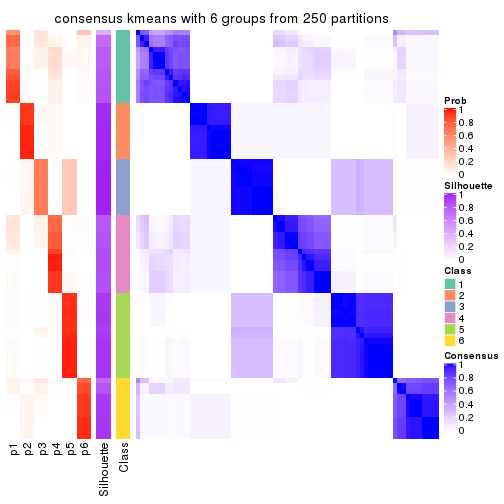
Heatmaps for the membership of samples in all partitions to see how consistent they are:
membership_heatmap(res, k = 2)
membership_heatmap(res, k = 3)
membership_heatmap(res, k = 4)
membership_heatmap(res, k = 5)
membership_heatmap(res, k = 6)
As soon as we have had the classes for columns, we can look for signatures which are significantly different between classes which can be candidate marks for certain classes. Following are the heatmaps for signatures.
Signature heatmaps where rows are scaled:
get_signatures(res, k = 2)
get_signatures(res, k = 3)

get_signatures(res, k = 4)
get_signatures(res, k = 5)
get_signatures(res, k = 6)
Signature heatmaps where rows are not scaled:
get_signatures(res, k = 2, scale_rows = FALSE)
get_signatures(res, k = 3, scale_rows = FALSE)
get_signatures(res, k = 4, scale_rows = FALSE)
get_signatures(res, k = 5, scale_rows = FALSE)
get_signatures(res, k = 6, scale_rows = FALSE)
Compare the overlap of signatures from different k:
compare_signatures(res)
get_signature() returns a data frame invisibly. TO get the list of signatures, the function
call should be assigned to a variable explicitly. In following code, if plot argument is set
to FALSE, no heatmap is plotted while only the differential analysis is performed.
# code only for demonstration
tb = get_signature(res, k = ..., plot = FALSE)
An example of the output of tb is:
#> which_row fdr mean_1 mean_2 scaled_mean_1 scaled_mean_2 km
#> 1 38 0.042760348 8.373488 9.131774 -0.5533452 0.5164555 1
#> 2 40 0.018707592 7.106213 8.469186 -0.6173731 0.5762149 1
#> 3 55 0.019134737 10.221463 11.207825 -0.6159697 0.5749050 1
#> 4 59 0.006059896 5.921854 7.869574 -0.6899429 0.6439467 1
#> 5 60 0.018055526 8.928898 10.211722 -0.6204761 0.5791110 1
#> 6 98 0.009384629 15.714769 14.887706 0.6635654 -0.6193277 2
...
The columns in tb are:
which_row: row indices corresponding to the input matrix.fdr: FDR for the differential test. mean_x: The mean value in group x.scaled_mean_x: The mean value in group x after rows are scaled.km: Row groups if k-means clustering is applied to rows.UMAP plot which shows how samples are separated.
dimension_reduction(res, k = 2, method = "UMAP")
dimension_reduction(res, k = 3, method = "UMAP")
dimension_reduction(res, k = 4, method = "UMAP")
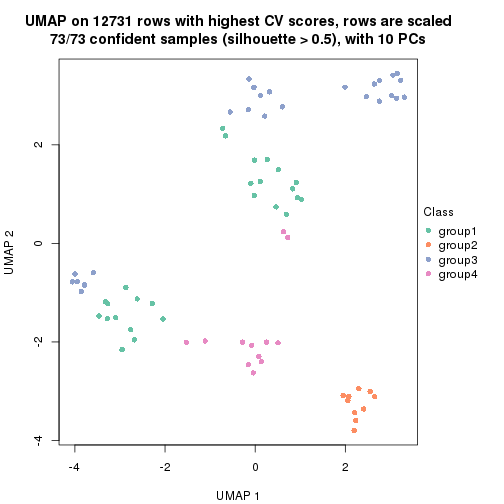
dimension_reduction(res, k = 5, method = "UMAP")
dimension_reduction(res, k = 6, method = "UMAP")
Following heatmap shows how subgroups are split when increasing k:
collect_classes(res)
If matrix rows can be associated to genes, consider to use functional_enrichment(res,
...) to perform function enrichment for the signature genes. See this vignette for more detailed explanations.
The object with results only for a single top-value method and a single partition method can be extracted as:
res = res_list["CV", "skmeans"]
# you can also extract it by
# res = res_list["CV:skmeans"]
A summary of res and all the functions that can be applied to it:
res
#> A 'ConsensusPartition' object with k = 2, 3, 4, 5, 6.
#> On a matrix with 12731 rows and 73 columns.
#> Top rows (1000, 2000, 3000, 4000, 5000) are extracted by 'CV' method.
#> Subgroups are detected by 'skmeans' method.
#> Performed in total 1250 partitions by row resampling.
#> Best k for subgroups seems to be 6.
#>
#> Following methods can be applied to this 'ConsensusPartition' object:
#> [1] "cola_report" "collect_classes" "collect_plots"
#> [4] "collect_stats" "colnames" "compare_signatures"
#> [7] "consensus_heatmap" "dimension_reduction" "functional_enrichment"
#> [10] "get_anno_col" "get_anno" "get_classes"
#> [13] "get_consensus" "get_matrix" "get_membership"
#> [16] "get_param" "get_signatures" "get_stats"
#> [19] "is_best_k" "is_stable_k" "membership_heatmap"
#> [22] "ncol" "nrow" "plot_ecdf"
#> [25] "rownames" "select_partition_number" "show"
#> [28] "suggest_best_k" "test_to_known_factors"
collect_plots() function collects all the plots made from res for all k (number of partitions)
into one single page to provide an easy and fast comparison between different k.
collect_plots(res)
The plots are:
k and the heatmap of
predicted classes for each k.k.k.k.All the plots in panels can be made by individual functions and they are plotted later in this section.
select_partition_number() produces several plots showing different
statistics for choosing “optimized” k. There are following statistics:
k;k, the area increased is defined as \(A_k - A_{k-1}\).The detailed explanations of these statistics can be found in the cola vignette.
Generally speaking, lower PAC score, higher mean silhouette score or higher
concordance corresponds to better partition. Rand index and Jaccard index
measure how similar the current partition is compared to partition with k-1.
If they are too similar, we won't accept k is better than k-1.
select_partition_number(res)
The numeric values for all these statistics can be obtained by get_stats().
get_stats(res)
#> k 1-PAC mean_silhouette concordance area_increased Rand Jaccard
#> 2 2 0.493 0.720 0.803 0.4827 0.501 0.501
#> 3 3 0.794 0.773 0.845 0.3951 0.693 0.459
#> 4 4 0.746 0.798 0.826 0.0961 0.906 0.723
#> 5 5 0.827 0.772 0.851 0.0789 0.871 0.561
#> 6 6 0.892 0.926 0.923 0.0520 0.939 0.713
suggest_best_k() suggests the best \(k\) based on these statistics. The rules are as follows:
suggest_best_k(res)
#> [1] 6
Following shows the table of the partitions (You need to click the show/hide
code output link to see it). The membership matrix (columns with name p*)
is inferred by
clue::cl_consensus()
function with the SE method. Basically the value in the membership matrix
represents the probability to belong to a certain group. The finall class
label for an item is determined with the group with highest probability it
belongs to.
In get_classes() function, the entropy is calculated from the membership
matrix and the silhouette score is calculated from the consensus matrix.
cbind(get_classes(res, k = 2), get_membership(res, k = 2))
#> class entropy silhouette p1 p2
#> SRR2144343 2 0.9710 0.800 0.400 0.600
#> SRR2144345 2 0.9710 0.800 0.400 0.600
#> SRR2144344 2 0.0000 0.579 0.000 1.000
#> SRR2144342 1 0.0000 0.764 1.000 0.000
#> SRR2144341 2 0.9710 0.800 0.400 0.600
#> SRR2144340 2 0.9710 0.800 0.400 0.600
#> SRR2144339 2 0.9710 0.800 0.400 0.600
#> SRR2144336 2 0.0000 0.579 0.000 1.000
#> SRR2144338 2 0.9710 0.800 0.400 0.600
#> SRR2144337 2 0.0000 0.579 0.000 1.000
#> SRR2144335 2 0.0000 0.579 0.000 1.000
#> SRR2144332 2 0.9710 0.800 0.400 0.600
#> SRR2144334 2 0.9710 0.800 0.400 0.600
#> SRR2144333 2 0.0000 0.579 0.000 1.000
#> SRR2144331 2 0.9710 0.800 0.400 0.600
#> SRR2144330 2 0.0000 0.579 0.000 1.000
#> SRR2144328 2 0.9710 0.800 0.400 0.600
#> SRR2144329 2 0.9710 0.800 0.400 0.600
#> SRR2144327 2 0.9710 0.800 0.400 0.600
#> SRR2144326 2 0.0000 0.579 0.000 1.000
#> SRR2144325 2 0.9710 0.800 0.400 0.600
#> SRR2144323 2 0.9710 0.800 0.400 0.600
#> SRR2144324 2 0.0000 0.579 0.000 1.000
#> SRR2144321 2 0.9710 0.800 0.400 0.600
#> SRR2144322 2 0.9710 0.800 0.400 0.600
#> SRR2144320 2 0.0000 0.579 0.000 1.000
#> SRR2144319 2 0.9710 0.800 0.400 0.600
#> SRR2144316 2 0.9710 0.800 0.400 0.600
#> SRR2144317 2 0.0000 0.579 0.000 1.000
#> SRR2144318 2 0.9710 0.800 0.400 0.600
#> SRR2144315 1 0.9710 0.621 0.600 0.400
#> SRR2144314 1 0.0000 0.764 1.000 0.000
#> SRR2144313 1 0.0000 0.764 1.000 0.000
#> SRR2144312 1 0.9710 0.621 0.600 0.400
#> SRR2144311 1 0.0000 0.764 1.000 0.000
#> SRR2144308 1 0.9710 0.621 0.600 0.400
#> SRR2144309 1 0.9710 0.621 0.600 0.400
#> SRR2144310 2 0.9710 0.800 0.400 0.600
#> SRR2144307 1 0.0000 0.764 1.000 0.000
#> SRR2144304 1 0.0000 0.764 1.000 0.000
#> SRR2144306 2 0.9710 0.800 0.400 0.600
#> SRR2144303 1 0.0000 0.764 1.000 0.000
#> SRR2144305 1 0.9710 0.621 0.600 0.400
#> SRR2144302 1 0.9710 0.621 0.600 0.400
#> SRR2144301 1 0.0000 0.764 1.000 0.000
#> SRR2144300 1 0.0000 0.764 1.000 0.000
#> SRR2144299 1 0.0000 0.764 1.000 0.000
#> SRR2144298 1 0.0376 0.763 0.996 0.004
#> SRR2144297 1 0.9710 0.621 0.600 0.400
#> SRR2144296 1 0.0000 0.764 1.000 0.000
#> SRR2144295 1 0.9710 0.621 0.600 0.400
#> SRR2144293 1 0.9710 0.621 0.600 0.400
#> SRR2144294 2 0.9710 0.800 0.400 0.600
#> SRR2144291 1 0.0000 0.764 1.000 0.000
#> SRR2144292 1 0.9710 0.621 0.600 0.400
#> SRR2144289 1 0.0000 0.764 1.000 0.000
#> SRR2144290 1 0.0000 0.764 1.000 0.000
#> SRR2144287 1 0.0000 0.764 1.000 0.000
#> SRR2144288 1 0.9710 0.621 0.600 0.400
#> SRR2144286 1 0.0000 0.764 1.000 0.000
#> SRR2144285 1 0.9710 0.621 0.600 0.400
#> SRR2144284 1 0.0000 0.764 1.000 0.000
#> SRR2144282 1 0.9710 0.621 0.600 0.400
#> SRR2144283 1 0.0000 0.764 1.000 0.000
#> SRR2144281 1 0.0000 0.764 1.000 0.000
#> SRR2144279 1 0.0000 0.764 1.000 0.000
#> SRR2144280 1 0.0000 0.764 1.000 0.000
#> SRR2144278 1 0.0000 0.764 1.000 0.000
#> SRR2144277 1 0.0000 0.764 1.000 0.000
#> SRR2144276 1 0.9710 0.621 0.600 0.400
#> SRR2144274 1 0.0000 0.764 1.000 0.000
#> SRR2144275 1 0.9710 0.621 0.600 0.400
#> SRR2144273 1 0.0000 0.764 1.000 0.000
cbind(get_classes(res, k = 3), get_membership(res, k = 3))
#> class entropy silhouette p1 p2 p3
#> SRR2144343 2 0.0000 0.690 0.000 1.000 0.000
#> SRR2144345 2 0.0000 0.690 0.000 1.000 0.000
#> SRR2144344 3 0.0892 0.980 0.000 0.020 0.980
#> SRR2144342 1 0.1163 0.641 0.972 0.028 0.000
#> SRR2144341 2 0.0000 0.690 0.000 1.000 0.000
#> SRR2144340 2 0.5968 0.709 0.364 0.636 0.000
#> SRR2144339 2 0.0000 0.690 0.000 1.000 0.000
#> SRR2144336 3 0.0892 0.980 0.000 0.020 0.980
#> SRR2144338 2 0.5968 0.709 0.364 0.636 0.000
#> SRR2144337 3 0.0592 0.982 0.000 0.012 0.988
#> SRR2144335 3 0.0892 0.980 0.000 0.020 0.980
#> SRR2144332 2 0.0000 0.690 0.000 1.000 0.000
#> SRR2144334 2 0.5968 0.709 0.364 0.636 0.000
#> SRR2144333 3 0.0892 0.980 0.000 0.020 0.980
#> SRR2144331 2 0.5968 0.709 0.364 0.636 0.000
#> SRR2144330 3 0.0747 0.981 0.000 0.016 0.984
#> SRR2144328 2 0.5968 0.709 0.364 0.636 0.000
#> SRR2144329 2 0.0000 0.690 0.000 1.000 0.000
#> SRR2144327 2 0.5926 0.709 0.356 0.644 0.000
#> SRR2144326 3 0.0892 0.980 0.000 0.020 0.980
#> SRR2144325 2 0.0000 0.690 0.000 1.000 0.000
#> SRR2144323 2 0.0000 0.690 0.000 1.000 0.000
#> SRR2144324 3 0.0892 0.980 0.000 0.020 0.980
#> SRR2144321 2 0.0000 0.690 0.000 1.000 0.000
#> SRR2144322 2 0.5968 0.709 0.364 0.636 0.000
#> SRR2144320 3 0.0892 0.980 0.000 0.020 0.980
#> SRR2144319 2 0.0000 0.690 0.000 1.000 0.000
#> SRR2144316 2 0.5968 0.709 0.364 0.636 0.000
#> SRR2144317 3 0.0892 0.980 0.000 0.020 0.980
#> SRR2144318 2 0.5968 0.709 0.364 0.636 0.000
#> SRR2144315 3 0.0000 0.983 0.000 0.000 1.000
#> SRR2144314 1 0.6318 0.713 0.636 0.356 0.008
#> SRR2144313 1 0.6079 0.685 0.612 0.388 0.000
#> SRR2144312 3 0.0747 0.985 0.016 0.000 0.984
#> SRR2144311 1 0.0000 0.671 1.000 0.000 0.000
#> SRR2144308 3 0.0000 0.983 0.000 0.000 1.000
#> SRR2144309 3 0.0747 0.985 0.016 0.000 0.984
#> SRR2144310 1 0.6291 -0.508 0.532 0.468 0.000
#> SRR2144307 1 0.6189 0.707 0.632 0.364 0.004
#> SRR2144304 1 0.6264 0.693 0.616 0.380 0.004
#> SRR2144306 2 0.6299 0.575 0.476 0.524 0.000
#> SRR2144303 1 0.0000 0.671 1.000 0.000 0.000
#> SRR2144305 3 0.0747 0.985 0.016 0.000 0.984
#> SRR2144302 3 0.0747 0.985 0.016 0.000 0.984
#> SRR2144301 1 0.0000 0.671 1.000 0.000 0.000
#> SRR2144300 1 0.6318 0.713 0.636 0.356 0.008
#> SRR2144299 1 0.6470 0.712 0.632 0.356 0.012
#> SRR2144298 1 0.0424 0.671 0.992 0.000 0.008
#> SRR2144297 3 0.0747 0.985 0.016 0.000 0.984
#> SRR2144296 1 0.6470 0.712 0.632 0.356 0.012
#> SRR2144295 3 0.0747 0.985 0.016 0.000 0.984
#> SRR2144293 3 0.0592 0.985 0.012 0.000 0.988
#> SRR2144294 2 0.6295 0.581 0.472 0.528 0.000
#> SRR2144291 1 0.0000 0.671 1.000 0.000 0.000
#> SRR2144292 3 0.0592 0.985 0.012 0.000 0.988
#> SRR2144289 1 0.0237 0.671 0.996 0.000 0.004
#> SRR2144290 1 0.6470 0.712 0.632 0.356 0.012
#> SRR2144287 1 0.0000 0.671 1.000 0.000 0.000
#> SRR2144288 3 0.0747 0.985 0.016 0.000 0.984
#> SRR2144286 1 0.6470 0.712 0.632 0.356 0.012
#> SRR2144285 3 0.0592 0.985 0.012 0.000 0.988
#> SRR2144284 1 0.0237 0.671 0.996 0.000 0.004
#> SRR2144282 3 0.0747 0.985 0.016 0.000 0.984
#> SRR2144283 1 0.6318 0.713 0.636 0.356 0.008
#> SRR2144281 1 0.6318 0.713 0.636 0.356 0.008
#> SRR2144279 1 0.6148 0.713 0.640 0.356 0.004
#> SRR2144280 1 0.6148 0.713 0.640 0.356 0.004
#> SRR2144278 1 0.0000 0.671 1.000 0.000 0.000
#> SRR2144277 1 0.0000 0.671 1.000 0.000 0.000
#> SRR2144276 3 0.0747 0.985 0.016 0.000 0.984
#> SRR2144274 1 0.0000 0.671 1.000 0.000 0.000
#> SRR2144275 3 0.0747 0.985 0.016 0.000 0.984
#> SRR2144273 1 0.6470 0.712 0.632 0.356 0.012
cbind(get_classes(res, k = 4), get_membership(res, k = 4))
#> class entropy silhouette p1 p2 p3 p4
#> SRR2144343 2 0.3219 0.708 0.000 0.836 0.000 0.164
#> SRR2144345 2 0.3219 0.708 0.000 0.836 0.000 0.164
#> SRR2144344 3 0.5180 0.863 0.000 0.064 0.740 0.196
#> SRR2144342 1 0.2281 0.811 0.904 0.096 0.000 0.000
#> SRR2144341 2 0.3219 0.708 0.000 0.836 0.000 0.164
#> SRR2144340 2 0.4843 0.465 0.396 0.604 0.000 0.000
#> SRR2144339 2 0.3219 0.708 0.000 0.836 0.000 0.164
#> SRR2144336 3 0.5180 0.863 0.000 0.064 0.740 0.196
#> SRR2144338 2 0.4855 0.460 0.400 0.600 0.000 0.000
#> SRR2144337 3 0.5180 0.863 0.000 0.064 0.740 0.196
#> SRR2144335 3 0.5180 0.863 0.000 0.064 0.740 0.196
#> SRR2144332 2 0.3219 0.708 0.000 0.836 0.000 0.164
#> SRR2144334 2 0.4888 0.443 0.412 0.588 0.000 0.000
#> SRR2144333 3 0.5180 0.863 0.000 0.064 0.740 0.196
#> SRR2144331 2 0.4804 0.477 0.384 0.616 0.000 0.000
#> SRR2144330 3 0.5180 0.863 0.000 0.064 0.740 0.196
#> SRR2144328 2 0.4888 0.443 0.412 0.588 0.000 0.000
#> SRR2144329 2 0.3219 0.708 0.000 0.836 0.000 0.164
#> SRR2144327 2 0.4040 0.572 0.248 0.752 0.000 0.000
#> SRR2144326 3 0.5180 0.863 0.000 0.064 0.740 0.196
#> SRR2144325 2 0.3219 0.708 0.000 0.836 0.000 0.164
#> SRR2144323 2 0.3219 0.708 0.000 0.836 0.000 0.164
#> SRR2144324 3 0.5180 0.863 0.000 0.064 0.740 0.196
#> SRR2144321 2 0.3219 0.708 0.000 0.836 0.000 0.164
#> SRR2144322 2 0.4907 0.428 0.420 0.580 0.000 0.000
#> SRR2144320 3 0.5180 0.863 0.000 0.064 0.740 0.196
#> SRR2144319 2 0.3219 0.708 0.000 0.836 0.000 0.164
#> SRR2144316 2 0.4907 0.428 0.420 0.580 0.000 0.000
#> SRR2144317 3 0.5180 0.863 0.000 0.064 0.740 0.196
#> SRR2144318 2 0.4898 0.436 0.416 0.584 0.000 0.000
#> SRR2144315 3 0.2281 0.891 0.000 0.000 0.904 0.096
#> SRR2144314 4 0.4767 0.907 0.256 0.020 0.000 0.724
#> SRR2144313 4 0.4379 0.828 0.172 0.036 0.000 0.792
#> SRR2144312 3 0.0000 0.902 0.000 0.000 1.000 0.000
#> SRR2144311 1 0.0469 0.886 0.988 0.000 0.000 0.012
#> SRR2144308 3 0.1389 0.896 0.000 0.000 0.952 0.048
#> SRR2144309 3 0.0000 0.902 0.000 0.000 1.000 0.000
#> SRR2144310 1 0.3688 0.653 0.792 0.208 0.000 0.000
#> SRR2144307 4 0.4225 0.841 0.184 0.024 0.000 0.792
#> SRR2144304 4 0.4332 0.833 0.176 0.032 0.000 0.792
#> SRR2144306 1 0.4391 0.573 0.740 0.252 0.000 0.008
#> SRR2144303 1 0.0592 0.885 0.984 0.000 0.000 0.016
#> SRR2144305 3 0.0000 0.902 0.000 0.000 1.000 0.000
#> SRR2144302 3 0.0000 0.902 0.000 0.000 1.000 0.000
#> SRR2144301 1 0.1520 0.883 0.956 0.000 0.024 0.020
#> SRR2144300 4 0.5085 0.921 0.304 0.020 0.000 0.676
#> SRR2144299 4 0.5297 0.919 0.292 0.000 0.032 0.676
#> SRR2144298 1 0.1624 0.865 0.952 0.000 0.028 0.020
#> SRR2144297 3 0.0000 0.902 0.000 0.000 1.000 0.000
#> SRR2144296 4 0.5471 0.915 0.268 0.000 0.048 0.684
#> SRR2144295 3 0.0000 0.902 0.000 0.000 1.000 0.000
#> SRR2144293 3 0.0000 0.902 0.000 0.000 1.000 0.000
#> SRR2144294 1 0.4391 0.573 0.740 0.252 0.000 0.008
#> SRR2144291 1 0.1042 0.886 0.972 0.000 0.008 0.020
#> SRR2144292 3 0.0000 0.902 0.000 0.000 1.000 0.000
#> SRR2144289 1 0.1733 0.879 0.948 0.000 0.028 0.024
#> SRR2144290 4 0.5471 0.915 0.268 0.000 0.048 0.684
#> SRR2144287 1 0.1520 0.883 0.956 0.000 0.024 0.020
#> SRR2144288 3 0.0000 0.902 0.000 0.000 1.000 0.000
#> SRR2144286 4 0.5471 0.915 0.268 0.000 0.048 0.684
#> SRR2144285 3 0.0000 0.902 0.000 0.000 1.000 0.000
#> SRR2144284 1 0.1833 0.875 0.944 0.000 0.032 0.024
#> SRR2144282 3 0.0000 0.902 0.000 0.000 1.000 0.000
#> SRR2144283 4 0.5182 0.920 0.288 0.000 0.028 0.684
#> SRR2144281 4 0.5038 0.921 0.296 0.020 0.000 0.684
#> SRR2144279 4 0.5085 0.921 0.304 0.020 0.000 0.676
#> SRR2144280 4 0.5085 0.921 0.304 0.020 0.000 0.676
#> SRR2144278 1 0.0592 0.885 0.984 0.000 0.000 0.016
#> SRR2144277 1 0.0592 0.885 0.984 0.000 0.000 0.016
#> SRR2144276 3 0.0000 0.902 0.000 0.000 1.000 0.000
#> SRR2144274 1 0.0592 0.885 0.984 0.000 0.000 0.016
#> SRR2144275 3 0.0000 0.902 0.000 0.000 1.000 0.000
#> SRR2144273 4 0.5471 0.915 0.268 0.000 0.048 0.684
cbind(get_classes(res, k = 5), get_membership(res, k = 5))
#> class entropy silhouette p1 p2 p3 p4 p5
#> SRR2144343 2 0.0579 0.8897 0.000 0.984 0.008 0.008 0.000
#> SRR2144345 2 0.0579 0.8897 0.000 0.984 0.008 0.008 0.000
#> SRR2144344 3 0.1965 1.0000 0.000 0.000 0.904 0.000 0.096
#> SRR2144342 1 0.2312 0.6500 0.916 0.004 0.032 0.044 0.004
#> SRR2144341 2 0.0579 0.8897 0.000 0.984 0.008 0.008 0.000
#> SRR2144340 1 0.5818 0.0460 0.464 0.444 0.092 0.000 0.000
#> SRR2144339 2 0.0579 0.8897 0.000 0.984 0.008 0.008 0.000
#> SRR2144336 3 0.1965 1.0000 0.000 0.000 0.904 0.000 0.096
#> SRR2144338 1 0.5771 0.0894 0.480 0.432 0.088 0.000 0.000
#> SRR2144337 3 0.1965 1.0000 0.000 0.000 0.904 0.000 0.096
#> SRR2144335 3 0.1965 1.0000 0.000 0.000 0.904 0.000 0.096
#> SRR2144332 2 0.0579 0.8897 0.000 0.984 0.008 0.008 0.000
#> SRR2144334 1 0.5757 0.1359 0.496 0.416 0.088 0.000 0.000
#> SRR2144333 3 0.1965 1.0000 0.000 0.000 0.904 0.000 0.096
#> SRR2144331 2 0.5779 -0.1306 0.456 0.456 0.088 0.000 0.000
#> SRR2144330 3 0.1965 1.0000 0.000 0.000 0.904 0.000 0.096
#> SRR2144328 1 0.5752 0.1462 0.500 0.412 0.088 0.000 0.000
#> SRR2144329 2 0.0579 0.8897 0.000 0.984 0.008 0.008 0.000
#> SRR2144327 2 0.5618 0.2190 0.348 0.564 0.088 0.000 0.000
#> SRR2144326 3 0.1965 1.0000 0.000 0.000 0.904 0.000 0.096
#> SRR2144325 2 0.0579 0.8897 0.000 0.984 0.008 0.008 0.000
#> SRR2144323 2 0.0579 0.8897 0.000 0.984 0.008 0.008 0.000
#> SRR2144324 3 0.1965 1.0000 0.000 0.000 0.904 0.000 0.096
#> SRR2144321 2 0.0579 0.8897 0.000 0.984 0.008 0.008 0.000
#> SRR2144322 1 0.5752 0.1462 0.500 0.412 0.088 0.000 0.000
#> SRR2144320 3 0.1965 1.0000 0.000 0.000 0.904 0.000 0.096
#> SRR2144319 2 0.0579 0.8897 0.000 0.984 0.008 0.008 0.000
#> SRR2144316 1 0.5752 0.1462 0.500 0.412 0.088 0.000 0.000
#> SRR2144317 3 0.1965 1.0000 0.000 0.000 0.904 0.000 0.096
#> SRR2144318 1 0.5752 0.1462 0.500 0.412 0.088 0.000 0.000
#> SRR2144315 5 0.3274 0.6866 0.000 0.000 0.220 0.000 0.780
#> SRR2144314 4 0.0963 0.9130 0.000 0.036 0.000 0.964 0.000
#> SRR2144313 4 0.4109 0.8021 0.048 0.168 0.004 0.780 0.000
#> SRR2144312 5 0.0000 0.9767 0.000 0.000 0.000 0.000 1.000
#> SRR2144311 1 0.3086 0.6608 0.816 0.000 0.000 0.180 0.004
#> SRR2144308 5 0.0963 0.9434 0.000 0.000 0.036 0.000 0.964
#> SRR2144309 5 0.0000 0.9767 0.000 0.000 0.000 0.000 1.000
#> SRR2144310 1 0.2452 0.6184 0.896 0.016 0.084 0.004 0.000
#> SRR2144307 4 0.4226 0.8046 0.048 0.164 0.004 0.780 0.004
#> SRR2144304 4 0.4109 0.8021 0.048 0.168 0.004 0.780 0.000
#> SRR2144306 1 0.3442 0.6143 0.852 0.016 0.088 0.044 0.000
#> SRR2144303 1 0.3365 0.6586 0.808 0.000 0.008 0.180 0.004
#> SRR2144305 5 0.0162 0.9739 0.000 0.000 0.004 0.000 0.996
#> SRR2144302 5 0.0000 0.9767 0.000 0.000 0.000 0.000 1.000
#> SRR2144301 1 0.3628 0.6583 0.772 0.000 0.000 0.216 0.012
#> SRR2144300 4 0.1518 0.8997 0.048 0.000 0.004 0.944 0.004
#> SRR2144299 4 0.1668 0.9129 0.032 0.000 0.000 0.940 0.028
#> SRR2144298 1 0.3583 0.6564 0.792 0.000 0.004 0.192 0.012
#> SRR2144297 5 0.0162 0.9764 0.000 0.000 0.000 0.004 0.996
#> SRR2144296 4 0.0963 0.9135 0.000 0.000 0.000 0.964 0.036
#> SRR2144295 5 0.0162 0.9764 0.000 0.000 0.000 0.004 0.996
#> SRR2144293 5 0.0162 0.9764 0.000 0.000 0.000 0.004 0.996
#> SRR2144294 1 0.3442 0.6143 0.852 0.016 0.088 0.044 0.000
#> SRR2144291 1 0.3616 0.6586 0.768 0.000 0.004 0.224 0.004
#> SRR2144292 5 0.0162 0.9764 0.000 0.000 0.000 0.004 0.996
#> SRR2144289 1 0.3727 0.6559 0.768 0.000 0.000 0.216 0.016
#> SRR2144290 4 0.0963 0.9135 0.000 0.000 0.000 0.964 0.036
#> SRR2144287 1 0.3628 0.6583 0.772 0.000 0.000 0.216 0.012
#> SRR2144288 5 0.0162 0.9764 0.000 0.000 0.000 0.004 0.996
#> SRR2144286 4 0.0963 0.9135 0.000 0.000 0.000 0.964 0.036
#> SRR2144285 5 0.0162 0.9764 0.000 0.000 0.000 0.004 0.996
#> SRR2144284 1 0.3815 0.6558 0.764 0.000 0.004 0.220 0.012
#> SRR2144282 5 0.0000 0.9767 0.000 0.000 0.000 0.000 1.000
#> SRR2144283 4 0.0703 0.9134 0.000 0.000 0.000 0.976 0.024
#> SRR2144281 4 0.0703 0.9146 0.000 0.024 0.000 0.976 0.000
#> SRR2144279 4 0.1679 0.9015 0.048 0.004 0.004 0.940 0.004
#> SRR2144280 4 0.2022 0.9043 0.048 0.016 0.004 0.928 0.004
#> SRR2144278 1 0.3243 0.6600 0.812 0.000 0.004 0.180 0.004
#> SRR2144277 1 0.3243 0.6600 0.812 0.000 0.004 0.180 0.004
#> SRR2144276 5 0.0000 0.9767 0.000 0.000 0.000 0.000 1.000
#> SRR2144274 1 0.3243 0.6600 0.812 0.000 0.004 0.180 0.004
#> SRR2144275 5 0.0000 0.9767 0.000 0.000 0.000 0.000 1.000
#> SRR2144273 4 0.0963 0.9135 0.000 0.000 0.000 0.964 0.036
cbind(get_classes(res, k = 6), get_membership(res, k = 6))
#> class entropy silhouette p1 p2 p3 p4 p5 p6
#> SRR2144343 2 0.0000 1.000 0.000 1.000 0.000 0.000 0.000 0.000
#> SRR2144345 2 0.0000 1.000 0.000 1.000 0.000 0.000 0.000 0.000
#> SRR2144344 3 0.0713 1.000 0.000 0.000 0.972 0.000 0.028 0.000
#> SRR2144342 1 0.3618 0.707 0.764 0.000 0.012 0.008 0.004 0.212
#> SRR2144341 2 0.0000 1.000 0.000 1.000 0.000 0.000 0.000 0.000
#> SRR2144340 6 0.2826 0.914 0.024 0.112 0.008 0.000 0.000 0.856
#> SRR2144339 2 0.0000 1.000 0.000 1.000 0.000 0.000 0.000 0.000
#> SRR2144336 3 0.0713 1.000 0.000 0.000 0.972 0.000 0.028 0.000
#> SRR2144338 6 0.2536 0.931 0.020 0.116 0.000 0.000 0.000 0.864
#> SRR2144337 3 0.0713 1.000 0.000 0.000 0.972 0.000 0.028 0.000
#> SRR2144335 3 0.0713 1.000 0.000 0.000 0.972 0.000 0.028 0.000
#> SRR2144332 2 0.0000 1.000 0.000 1.000 0.000 0.000 0.000 0.000
#> SRR2144334 6 0.2450 0.930 0.016 0.116 0.000 0.000 0.000 0.868
#> SRR2144333 3 0.0713 1.000 0.000 0.000 0.972 0.000 0.028 0.000
#> SRR2144331 6 0.2450 0.930 0.016 0.116 0.000 0.000 0.000 0.868
#> SRR2144330 3 0.0713 1.000 0.000 0.000 0.972 0.000 0.028 0.000
#> SRR2144328 6 0.2450 0.930 0.016 0.116 0.000 0.000 0.000 0.868
#> SRR2144329 2 0.0000 1.000 0.000 1.000 0.000 0.000 0.000 0.000
#> SRR2144327 6 0.2531 0.919 0.012 0.132 0.000 0.000 0.000 0.856
#> SRR2144326 3 0.0713 1.000 0.000 0.000 0.972 0.000 0.028 0.000
#> SRR2144325 2 0.0000 1.000 0.000 1.000 0.000 0.000 0.000 0.000
#> SRR2144323 2 0.0000 1.000 0.000 1.000 0.000 0.000 0.000 0.000
#> SRR2144324 3 0.0713 1.000 0.000 0.000 0.972 0.000 0.028 0.000
#> SRR2144321 2 0.0000 1.000 0.000 1.000 0.000 0.000 0.000 0.000
#> SRR2144322 6 0.2573 0.931 0.024 0.112 0.000 0.000 0.000 0.864
#> SRR2144320 3 0.0713 1.000 0.000 0.000 0.972 0.000 0.028 0.000
#> SRR2144319 2 0.0000 1.000 0.000 1.000 0.000 0.000 0.000 0.000
#> SRR2144316 6 0.2573 0.931 0.024 0.112 0.000 0.000 0.000 0.864
#> SRR2144317 3 0.0713 1.000 0.000 0.000 0.972 0.000 0.028 0.000
#> SRR2144318 6 0.2573 0.931 0.024 0.112 0.000 0.000 0.000 0.864
#> SRR2144315 5 0.2996 0.697 0.000 0.000 0.228 0.000 0.772 0.000
#> SRR2144314 4 0.0000 0.893 0.000 0.000 0.000 1.000 0.000 0.000
#> SRR2144313 4 0.4828 0.837 0.112 0.052 0.012 0.748 0.000 0.076
#> SRR2144312 5 0.0000 0.970 0.000 0.000 0.000 0.000 1.000 0.000
#> SRR2144311 1 0.0622 0.895 0.980 0.000 0.000 0.000 0.008 0.012
#> SRR2144308 5 0.0146 0.969 0.000 0.000 0.004 0.000 0.996 0.000
#> SRR2144309 5 0.0000 0.970 0.000 0.000 0.000 0.000 1.000 0.000
#> SRR2144310 6 0.3489 0.626 0.288 0.000 0.004 0.000 0.000 0.708
#> SRR2144307 4 0.3980 0.860 0.120 0.004 0.012 0.788 0.000 0.076
#> SRR2144304 4 0.4564 0.850 0.116 0.028 0.016 0.764 0.000 0.076
#> SRR2144306 6 0.2420 0.828 0.128 0.000 0.004 0.004 0.000 0.864
#> SRR2144303 1 0.1806 0.866 0.928 0.000 0.008 0.020 0.000 0.044
#> SRR2144305 5 0.0000 0.970 0.000 0.000 0.000 0.000 1.000 0.000
#> SRR2144302 5 0.0000 0.970 0.000 0.000 0.000 0.000 1.000 0.000
#> SRR2144301 1 0.2964 0.887 0.848 0.000 0.004 0.108 0.000 0.040
#> SRR2144300 4 0.3511 0.865 0.124 0.000 0.004 0.808 0.000 0.064
#> SRR2144299 4 0.1340 0.892 0.040 0.000 0.004 0.948 0.000 0.008
#> SRR2144298 1 0.2157 0.900 0.904 0.000 0.004 0.076 0.008 0.008
#> SRR2144297 5 0.0972 0.967 0.008 0.000 0.000 0.000 0.964 0.028
#> SRR2144296 4 0.1003 0.886 0.016 0.000 0.000 0.964 0.000 0.020
#> SRR2144295 5 0.0972 0.967 0.008 0.000 0.000 0.000 0.964 0.028
#> SRR2144293 5 0.0972 0.967 0.008 0.000 0.000 0.000 0.964 0.028
#> SRR2144294 6 0.2624 0.811 0.148 0.000 0.004 0.004 0.000 0.844
#> SRR2144291 1 0.3206 0.884 0.836 0.000 0.008 0.108 0.000 0.048
#> SRR2144292 5 0.0972 0.967 0.008 0.000 0.000 0.000 0.964 0.028
#> SRR2144289 1 0.2868 0.888 0.852 0.000 0.004 0.112 0.000 0.032
#> SRR2144290 4 0.1003 0.886 0.016 0.000 0.000 0.964 0.000 0.020
#> SRR2144287 1 0.2964 0.887 0.848 0.000 0.004 0.108 0.000 0.040
#> SRR2144288 5 0.0972 0.967 0.008 0.000 0.000 0.000 0.964 0.028
#> SRR2144286 4 0.1003 0.886 0.016 0.000 0.000 0.964 0.000 0.020
#> SRR2144285 5 0.0972 0.967 0.008 0.000 0.000 0.000 0.964 0.028
#> SRR2144284 1 0.2635 0.895 0.872 0.000 0.004 0.100 0.004 0.020
#> SRR2144282 5 0.0000 0.970 0.000 0.000 0.000 0.000 1.000 0.000
#> SRR2144283 4 0.0665 0.892 0.004 0.000 0.008 0.980 0.000 0.008
#> SRR2144281 4 0.0405 0.893 0.000 0.000 0.008 0.988 0.000 0.004
#> SRR2144279 4 0.3689 0.864 0.120 0.000 0.008 0.800 0.000 0.072
#> SRR2144280 4 0.3666 0.865 0.120 0.004 0.004 0.804 0.000 0.068
#> SRR2144278 1 0.0696 0.895 0.980 0.000 0.004 0.004 0.008 0.004
#> SRR2144277 1 0.0653 0.893 0.980 0.000 0.000 0.004 0.004 0.012
#> SRR2144276 5 0.0000 0.970 0.000 0.000 0.000 0.000 1.000 0.000
#> SRR2144274 1 0.0436 0.894 0.988 0.000 0.004 0.004 0.004 0.000
#> SRR2144275 5 0.0146 0.970 0.000 0.000 0.000 0.000 0.996 0.004
#> SRR2144273 4 0.1003 0.886 0.016 0.000 0.000 0.964 0.000 0.020
Heatmaps for the consensus matrix. It visualizes the probability of two samples to be in a same group.
consensus_heatmap(res, k = 2)
consensus_heatmap(res, k = 3)
consensus_heatmap(res, k = 4)
consensus_heatmap(res, k = 5)
consensus_heatmap(res, k = 6)
Heatmaps for the membership of samples in all partitions to see how consistent they are:
membership_heatmap(res, k = 2)
membership_heatmap(res, k = 3)
membership_heatmap(res, k = 4)
membership_heatmap(res, k = 5)
membership_heatmap(res, k = 6)
As soon as we have had the classes for columns, we can look for signatures which are significantly different between classes which can be candidate marks for certain classes. Following are the heatmaps for signatures.
Signature heatmaps where rows are scaled:
get_signatures(res, k = 2)
get_signatures(res, k = 3)
get_signatures(res, k = 4)
get_signatures(res, k = 5)
get_signatures(res, k = 6)
Signature heatmaps where rows are not scaled:
get_signatures(res, k = 2, scale_rows = FALSE)
get_signatures(res, k = 3, scale_rows = FALSE)
get_signatures(res, k = 4, scale_rows = FALSE)
get_signatures(res, k = 5, scale_rows = FALSE)
get_signatures(res, k = 6, scale_rows = FALSE)
Compare the overlap of signatures from different k:
compare_signatures(res)
get_signature() returns a data frame invisibly. TO get the list of signatures, the function
call should be assigned to a variable explicitly. In following code, if plot argument is set
to FALSE, no heatmap is plotted while only the differential analysis is performed.
# code only for demonstration
tb = get_signature(res, k = ..., plot = FALSE)
An example of the output of tb is:
#> which_row fdr mean_1 mean_2 scaled_mean_1 scaled_mean_2 km
#> 1 38 0.042760348 8.373488 9.131774 -0.5533452 0.5164555 1
#> 2 40 0.018707592 7.106213 8.469186 -0.6173731 0.5762149 1
#> 3 55 0.019134737 10.221463 11.207825 -0.6159697 0.5749050 1
#> 4 59 0.006059896 5.921854 7.869574 -0.6899429 0.6439467 1
#> 5 60 0.018055526 8.928898 10.211722 -0.6204761 0.5791110 1
#> 6 98 0.009384629 15.714769 14.887706 0.6635654 -0.6193277 2
...
The columns in tb are:
which_row: row indices corresponding to the input matrix.fdr: FDR for the differential test. mean_x: The mean value in group x.scaled_mean_x: The mean value in group x after rows are scaled.km: Row groups if k-means clustering is applied to rows.UMAP plot which shows how samples are separated.
dimension_reduction(res, k = 2, method = "UMAP")

dimension_reduction(res, k = 3, method = "UMAP")
dimension_reduction(res, k = 4, method = "UMAP")
dimension_reduction(res, k = 5, method = "UMAP")
dimension_reduction(res, k = 6, method = "UMAP")
Following heatmap shows how subgroups are split when increasing k:
collect_classes(res)
If matrix rows can be associated to genes, consider to use functional_enrichment(res,
...) to perform function enrichment for the signature genes. See this vignette for more detailed explanations.
The object with results only for a single top-value method and a single partition method can be extracted as:
res = res_list["CV", "pam"]
# you can also extract it by
# res = res_list["CV:pam"]
A summary of res and all the functions that can be applied to it:
res
#> A 'ConsensusPartition' object with k = 2, 3, 4, 5, 6.
#> On a matrix with 12731 rows and 73 columns.
#> Top rows (1000, 2000, 3000, 4000, 5000) are extracted by 'CV' method.
#> Subgroups are detected by 'pam' method.
#> Performed in total 1250 partitions by row resampling.
#> Best k for subgroups seems to be 5.
#>
#> Following methods can be applied to this 'ConsensusPartition' object:
#> [1] "cola_report" "collect_classes" "collect_plots"
#> [4] "collect_stats" "colnames" "compare_signatures"
#> [7] "consensus_heatmap" "dimension_reduction" "functional_enrichment"
#> [10] "get_anno_col" "get_anno" "get_classes"
#> [13] "get_consensus" "get_matrix" "get_membership"
#> [16] "get_param" "get_signatures" "get_stats"
#> [19] "is_best_k" "is_stable_k" "membership_heatmap"
#> [22] "ncol" "nrow" "plot_ecdf"
#> [25] "rownames" "select_partition_number" "show"
#> [28] "suggest_best_k" "test_to_known_factors"
collect_plots() function collects all the plots made from res for all k (number of partitions)
into one single page to provide an easy and fast comparison between different k.
collect_plots(res)
The plots are:
k and the heatmap of
predicted classes for each k.k.k.k.All the plots in panels can be made by individual functions and they are plotted later in this section.
select_partition_number() produces several plots showing different
statistics for choosing “optimized” k. There are following statistics:
k;k, the area increased is defined as \(A_k - A_{k-1}\).The detailed explanations of these statistics can be found in the cola vignette.
Generally speaking, lower PAC score, higher mean silhouette score or higher
concordance corresponds to better partition. Rand index and Jaccard index
measure how similar the current partition is compared to partition with k-1.
If they are too similar, we won't accept k is better than k-1.
select_partition_number(res)
The numeric values for all these statistics can be obtained by get_stats().
get_stats(res)
#> k 1-PAC mean_silhouette concordance area_increased Rand Jaccard
#> 2 2 0.322 0.728 0.824 0.4909 0.493 0.493
#> 3 3 0.765 0.830 0.931 0.3189 0.798 0.613
#> 4 4 0.706 0.805 0.881 0.1345 0.870 0.648
#> 5 5 0.804 0.862 0.933 0.0804 0.886 0.605
#> 6 6 0.877 0.818 0.896 0.0375 0.973 0.871
suggest_best_k() suggests the best \(k\) based on these statistics. The rules are as follows:
suggest_best_k(res)
#> [1] 5
Following shows the table of the partitions (You need to click the show/hide
code output link to see it). The membership matrix (columns with name p*)
is inferred by
clue::cl_consensus()
function with the SE method. Basically the value in the membership matrix
represents the probability to belong to a certain group. The finall class
label for an item is determined with the group with highest probability it
belongs to.
In get_classes() function, the entropy is calculated from the membership
matrix and the silhouette score is calculated from the consensus matrix.
cbind(get_classes(res, k = 2), get_membership(res, k = 2))
#> class entropy silhouette p1 p2
#> SRR2144343 2 0.5059 0.757 0.112 0.888
#> SRR2144345 2 0.5059 0.757 0.112 0.888
#> SRR2144344 2 0.8555 0.683 0.280 0.720
#> SRR2144342 2 0.9522 0.547 0.372 0.628
#> SRR2144341 2 0.5059 0.757 0.112 0.888
#> SRR2144340 2 0.4939 0.758 0.108 0.892
#> SRR2144339 2 0.5178 0.753 0.116 0.884
#> SRR2144336 2 0.8555 0.683 0.280 0.720
#> SRR2144338 2 0.4815 0.759 0.104 0.896
#> SRR2144337 2 0.8555 0.683 0.280 0.720
#> SRR2144335 2 0.8555 0.683 0.280 0.720
#> SRR2144332 2 0.4815 0.759 0.104 0.896
#> SRR2144334 2 0.4815 0.759 0.104 0.896
#> SRR2144333 2 0.8555 0.683 0.280 0.720
#> SRR2144331 2 0.4939 0.758 0.108 0.892
#> SRR2144330 2 0.8555 0.683 0.280 0.720
#> SRR2144328 2 0.4815 0.759 0.104 0.896
#> SRR2144329 2 0.5059 0.757 0.112 0.888
#> SRR2144327 2 0.5059 0.757 0.112 0.888
#> SRR2144326 2 0.8555 0.683 0.280 0.720
#> SRR2144325 2 0.5059 0.757 0.112 0.888
#> SRR2144323 2 0.5059 0.757 0.112 0.888
#> SRR2144324 2 0.8555 0.683 0.280 0.720
#> SRR2144321 2 0.5059 0.757 0.112 0.888
#> SRR2144322 2 0.4815 0.759 0.104 0.896
#> SRR2144320 2 0.8555 0.683 0.280 0.720
#> SRR2144319 2 0.5059 0.757 0.112 0.888
#> SRR2144316 2 0.4815 0.759 0.104 0.896
#> SRR2144317 2 0.8555 0.683 0.280 0.720
#> SRR2144318 2 0.4815 0.759 0.104 0.896
#> SRR2144315 2 0.8555 0.683 0.280 0.720
#> SRR2144314 1 0.8555 0.588 0.720 0.280
#> SRR2144313 1 0.8555 0.588 0.720 0.280
#> SRR2144312 2 0.9248 0.590 0.340 0.660
#> SRR2144311 1 0.0000 0.844 1.000 0.000
#> SRR2144308 2 0.8555 0.683 0.280 0.720
#> SRR2144309 2 0.8555 0.683 0.280 0.720
#> SRR2144310 2 0.9170 0.670 0.332 0.668
#> SRR2144307 1 0.8207 0.622 0.744 0.256
#> SRR2144304 1 0.8016 0.637 0.756 0.244
#> SRR2144306 1 0.0000 0.844 1.000 0.000
#> SRR2144303 1 0.0000 0.844 1.000 0.000
#> SRR2144305 2 0.8555 0.683 0.280 0.720
#> SRR2144302 1 0.8713 0.540 0.708 0.292
#> SRR2144301 1 0.0000 0.844 1.000 0.000
#> SRR2144300 1 0.3879 0.800 0.924 0.076
#> SRR2144299 1 0.0000 0.844 1.000 0.000
#> SRR2144298 1 0.0672 0.841 0.992 0.008
#> SRR2144297 1 0.5059 0.769 0.888 0.112
#> SRR2144296 1 0.4298 0.791 0.912 0.088
#> SRR2144295 1 0.5059 0.769 0.888 0.112
#> SRR2144293 1 0.9323 0.407 0.652 0.348
#> SRR2144294 1 0.0376 0.843 0.996 0.004
#> SRR2144291 1 0.0000 0.844 1.000 0.000
#> SRR2144292 1 0.6712 0.718 0.824 0.176
#> SRR2144289 1 0.0000 0.844 1.000 0.000
#> SRR2144290 1 0.0000 0.844 1.000 0.000
#> SRR2144287 1 0.0000 0.844 1.000 0.000
#> SRR2144288 1 0.4939 0.772 0.892 0.108
#> SRR2144286 1 0.4161 0.794 0.916 0.084
#> SRR2144285 1 0.8443 0.580 0.728 0.272
#> SRR2144284 1 0.0000 0.844 1.000 0.000
#> SRR2144282 1 0.5294 0.765 0.880 0.120
#> SRR2144283 1 0.0376 0.843 0.996 0.004
#> SRR2144281 1 0.8144 0.628 0.748 0.252
#> SRR2144279 1 0.7376 0.677 0.792 0.208
#> SRR2144280 1 0.8016 0.637 0.756 0.244
#> SRR2144278 1 0.0938 0.838 0.988 0.012
#> SRR2144277 1 0.0000 0.844 1.000 0.000
#> SRR2144276 1 0.9795 0.188 0.584 0.416
#> SRR2144274 1 0.0000 0.844 1.000 0.000
#> SRR2144275 1 0.5294 0.765 0.880 0.120
#> SRR2144273 1 0.0000 0.844 1.000 0.000
cbind(get_classes(res, k = 3), get_membership(res, k = 3))
#> class entropy silhouette p1 p2 p3
#> SRR2144343 2 0.0000 0.958 0.000 1.000 0.000
#> SRR2144345 2 0.0000 0.958 0.000 1.000 0.000
#> SRR2144344 3 0.0000 0.864 0.000 0.000 1.000
#> SRR2144342 3 0.4399 0.721 0.188 0.000 0.812
#> SRR2144341 2 0.0000 0.958 0.000 1.000 0.000
#> SRR2144340 2 0.6180 0.327 0.000 0.584 0.416
#> SRR2144339 2 0.0000 0.958 0.000 1.000 0.000
#> SRR2144336 3 0.0000 0.864 0.000 0.000 1.000
#> SRR2144338 2 0.0237 0.956 0.004 0.996 0.000
#> SRR2144337 3 0.0000 0.864 0.000 0.000 1.000
#> SRR2144335 3 0.0000 0.864 0.000 0.000 1.000
#> SRR2144332 2 0.0000 0.958 0.000 1.000 0.000
#> SRR2144334 3 0.4733 0.643 0.004 0.196 0.800
#> SRR2144333 3 0.0000 0.864 0.000 0.000 1.000
#> SRR2144331 2 0.0237 0.956 0.004 0.996 0.000
#> SRR2144330 3 0.0000 0.864 0.000 0.000 1.000
#> SRR2144328 3 0.4733 0.643 0.004 0.196 0.800
#> SRR2144329 2 0.0000 0.958 0.000 1.000 0.000
#> SRR2144327 2 0.0237 0.956 0.004 0.996 0.000
#> SRR2144326 3 0.0000 0.864 0.000 0.000 1.000
#> SRR2144325 2 0.0000 0.958 0.000 1.000 0.000
#> SRR2144323 2 0.0000 0.958 0.000 1.000 0.000
#> SRR2144324 3 0.0000 0.864 0.000 0.000 1.000
#> SRR2144321 2 0.0000 0.958 0.000 1.000 0.000
#> SRR2144322 2 0.0237 0.956 0.004 0.996 0.000
#> SRR2144320 3 0.0000 0.864 0.000 0.000 1.000
#> SRR2144319 2 0.0000 0.958 0.000 1.000 0.000
#> SRR2144316 2 0.4834 0.736 0.004 0.792 0.204
#> SRR2144317 3 0.0000 0.864 0.000 0.000 1.000
#> SRR2144318 2 0.0661 0.951 0.004 0.988 0.008
#> SRR2144315 3 0.0000 0.864 0.000 0.000 1.000
#> SRR2144314 1 0.0237 0.928 0.996 0.004 0.000
#> SRR2144313 1 0.0237 0.928 0.996 0.004 0.000
#> SRR2144312 3 0.2066 0.831 0.060 0.000 0.940
#> SRR2144311 1 0.0000 0.928 1.000 0.000 0.000
#> SRR2144308 3 0.0000 0.864 0.000 0.000 1.000
#> SRR2144309 3 0.0000 0.864 0.000 0.000 1.000
#> SRR2144310 3 0.3879 0.761 0.152 0.000 0.848
#> SRR2144307 1 0.0237 0.928 0.996 0.004 0.000
#> SRR2144304 1 0.4555 0.714 0.800 0.200 0.000
#> SRR2144306 1 0.0000 0.928 1.000 0.000 0.000
#> SRR2144303 1 0.0000 0.928 1.000 0.000 0.000
#> SRR2144305 3 0.0000 0.864 0.000 0.000 1.000
#> SRR2144302 3 0.6215 0.242 0.428 0.000 0.572
#> SRR2144301 1 0.0000 0.928 1.000 0.000 0.000
#> SRR2144300 1 0.0237 0.928 0.996 0.004 0.000
#> SRR2144299 1 0.0237 0.928 0.996 0.004 0.000
#> SRR2144298 1 0.1031 0.912 0.976 0.000 0.024
#> SRR2144297 1 0.4555 0.734 0.800 0.000 0.200
#> SRR2144296 1 0.0237 0.928 0.996 0.004 0.000
#> SRR2144295 1 0.4555 0.734 0.800 0.000 0.200
#> SRR2144293 3 0.6008 0.394 0.372 0.000 0.628
#> SRR2144294 1 0.0000 0.928 1.000 0.000 0.000
#> SRR2144291 1 0.0000 0.928 1.000 0.000 0.000
#> SRR2144292 1 0.6274 0.142 0.544 0.000 0.456
#> SRR2144289 1 0.0000 0.928 1.000 0.000 0.000
#> SRR2144290 1 0.0237 0.928 0.996 0.004 0.000
#> SRR2144287 1 0.0000 0.928 1.000 0.000 0.000
#> SRR2144288 1 0.4555 0.734 0.800 0.000 0.200
#> SRR2144286 1 0.0237 0.928 0.996 0.004 0.000
#> SRR2144285 3 0.6260 0.175 0.448 0.000 0.552
#> SRR2144284 1 0.0000 0.928 1.000 0.000 0.000
#> SRR2144282 1 0.6008 0.403 0.628 0.000 0.372
#> SRR2144283 1 0.0237 0.928 0.996 0.004 0.000
#> SRR2144281 1 0.0237 0.928 0.996 0.004 0.000
#> SRR2144279 1 0.0237 0.928 0.996 0.004 0.000
#> SRR2144280 1 0.0237 0.928 0.996 0.004 0.000
#> SRR2144278 1 0.0892 0.915 0.980 0.000 0.020
#> SRR2144277 1 0.0000 0.928 1.000 0.000 0.000
#> SRR2144276 3 0.5591 0.539 0.304 0.000 0.696
#> SRR2144274 1 0.0000 0.928 1.000 0.000 0.000
#> SRR2144275 1 0.5529 0.574 0.704 0.000 0.296
#> SRR2144273 1 0.0237 0.928 0.996 0.004 0.000
cbind(get_classes(res, k = 4), get_membership(res, k = 4))
#> class entropy silhouette p1 p2 p3 p4
#> SRR2144343 2 0.000 0.9054 0.000 1.000 0.000 0.000
#> SRR2144345 2 0.000 0.9054 0.000 1.000 0.000 0.000
#> SRR2144344 3 0.361 0.8936 0.000 0.000 0.800 0.200
#> SRR2144342 4 0.723 -0.0769 0.152 0.000 0.352 0.496
#> SRR2144341 2 0.000 0.9054 0.000 1.000 0.000 0.000
#> SRR2144340 2 0.496 0.2552 0.000 0.552 0.448 0.000
#> SRR2144339 2 0.000 0.9054 0.000 1.000 0.000 0.000
#> SRR2144336 3 0.361 0.8936 0.000 0.000 0.800 0.200
#> SRR2144338 2 0.361 0.7914 0.000 0.800 0.200 0.000
#> SRR2144337 3 0.361 0.8936 0.000 0.000 0.800 0.200
#> SRR2144335 3 0.361 0.8936 0.000 0.000 0.800 0.200
#> SRR2144332 2 0.000 0.9054 0.000 1.000 0.000 0.000
#> SRR2144334 3 0.000 0.6874 0.000 0.000 1.000 0.000
#> SRR2144333 3 0.361 0.8936 0.000 0.000 0.800 0.200
#> SRR2144331 2 0.102 0.8951 0.000 0.968 0.032 0.000
#> SRR2144330 3 0.361 0.8936 0.000 0.000 0.800 0.200
#> SRR2144328 3 0.000 0.6874 0.000 0.000 1.000 0.000
#> SRR2144329 2 0.000 0.9054 0.000 1.000 0.000 0.000
#> SRR2144327 2 0.102 0.8951 0.000 0.968 0.032 0.000
#> SRR2144326 3 0.361 0.8936 0.000 0.000 0.800 0.200
#> SRR2144325 2 0.000 0.9054 0.000 1.000 0.000 0.000
#> SRR2144323 2 0.000 0.9054 0.000 1.000 0.000 0.000
#> SRR2144324 3 0.361 0.8936 0.000 0.000 0.800 0.200
#> SRR2144321 2 0.000 0.9054 0.000 1.000 0.000 0.000
#> SRR2144322 2 0.361 0.7914 0.000 0.800 0.200 0.000
#> SRR2144320 3 0.361 0.8936 0.000 0.000 0.800 0.200
#> SRR2144319 2 0.000 0.9054 0.000 1.000 0.000 0.000
#> SRR2144316 2 0.487 0.5654 0.000 0.596 0.404 0.000
#> SRR2144317 3 0.361 0.8936 0.000 0.000 0.800 0.200
#> SRR2144318 2 0.369 0.7868 0.000 0.792 0.208 0.000
#> SRR2144315 3 0.419 0.8096 0.000 0.000 0.732 0.268
#> SRR2144314 1 0.000 0.8951 1.000 0.000 0.000 0.000
#> SRR2144313 1 0.000 0.8951 1.000 0.000 0.000 0.000
#> SRR2144312 4 0.000 0.7859 0.000 0.000 0.000 1.000
#> SRR2144311 1 0.406 0.8551 0.788 0.000 0.200 0.012
#> SRR2144308 4 0.460 0.1973 0.000 0.000 0.336 0.664
#> SRR2144309 4 0.000 0.7859 0.000 0.000 0.000 1.000
#> SRR2144310 3 0.560 0.3581 0.072 0.000 0.700 0.228
#> SRR2144307 1 0.000 0.8951 1.000 0.000 0.000 0.000
#> SRR2144304 1 0.480 0.5944 0.744 0.032 0.000 0.224
#> SRR2144306 1 0.361 0.8611 0.800 0.000 0.200 0.000
#> SRR2144303 1 0.106 0.8889 0.972 0.000 0.016 0.012
#> SRR2144305 4 0.234 0.6952 0.000 0.000 0.100 0.900
#> SRR2144302 4 0.000 0.7859 0.000 0.000 0.000 1.000
#> SRR2144301 1 0.327 0.8729 0.832 0.000 0.168 0.000
#> SRR2144300 1 0.000 0.8951 1.000 0.000 0.000 0.000
#> SRR2144299 1 0.000 0.8951 1.000 0.000 0.000 0.000
#> SRR2144298 1 0.385 0.8673 0.840 0.000 0.116 0.044
#> SRR2144297 4 0.387 0.6871 0.228 0.000 0.000 0.772
#> SRR2144296 1 0.000 0.8951 1.000 0.000 0.000 0.000
#> SRR2144295 4 0.387 0.6871 0.228 0.000 0.000 0.772
#> SRR2144293 4 0.000 0.7859 0.000 0.000 0.000 1.000
#> SRR2144294 1 0.361 0.8611 0.800 0.000 0.200 0.000
#> SRR2144291 1 0.357 0.8630 0.804 0.000 0.196 0.000
#> SRR2144292 4 0.380 0.6932 0.220 0.000 0.000 0.780
#> SRR2144289 1 0.327 0.8729 0.832 0.000 0.168 0.000
#> SRR2144290 1 0.000 0.8951 1.000 0.000 0.000 0.000
#> SRR2144287 1 0.357 0.8630 0.804 0.000 0.196 0.000
#> SRR2144288 4 0.387 0.6871 0.228 0.000 0.000 0.772
#> SRR2144286 1 0.000 0.8951 1.000 0.000 0.000 0.000
#> SRR2144285 4 0.317 0.7287 0.160 0.000 0.000 0.840
#> SRR2144284 1 0.327 0.8729 0.832 0.000 0.168 0.000
#> SRR2144282 4 0.000 0.7859 0.000 0.000 0.000 1.000
#> SRR2144283 1 0.000 0.8951 1.000 0.000 0.000 0.000
#> SRR2144281 1 0.000 0.8951 1.000 0.000 0.000 0.000
#> SRR2144279 1 0.000 0.8951 1.000 0.000 0.000 0.000
#> SRR2144280 1 0.000 0.8951 1.000 0.000 0.000 0.000
#> SRR2144278 1 0.402 0.8579 0.792 0.000 0.196 0.012
#> SRR2144277 1 0.402 0.8579 0.792 0.000 0.196 0.012
#> SRR2144276 4 0.000 0.7859 0.000 0.000 0.000 1.000
#> SRR2144274 1 0.398 0.8604 0.796 0.000 0.192 0.012
#> SRR2144275 4 0.000 0.7859 0.000 0.000 0.000 1.000
#> SRR2144273 1 0.000 0.8951 1.000 0.000 0.000 0.000
cbind(get_classes(res, k = 5), get_membership(res, k = 5))
#> class entropy silhouette p1 p2 p3 p4 p5
#> SRR2144343 2 0.0000 0.996 0.000 1.000 0.000 0.000 0.000
#> SRR2144345 2 0.0000 0.996 0.000 1.000 0.000 0.000 0.000
#> SRR2144344 3 0.0000 0.970 0.000 0.000 1.000 0.000 0.000
#> SRR2144342 1 0.6723 0.182 0.472 0.000 0.116 0.032 0.380
#> SRR2144341 2 0.0000 0.996 0.000 1.000 0.000 0.000 0.000
#> SRR2144340 1 0.2732 0.749 0.840 0.160 0.000 0.000 0.000
#> SRR2144339 2 0.0000 0.996 0.000 1.000 0.000 0.000 0.000
#> SRR2144336 3 0.0000 0.970 0.000 0.000 1.000 0.000 0.000
#> SRR2144338 1 0.0000 0.890 1.000 0.000 0.000 0.000 0.000
#> SRR2144337 3 0.0000 0.970 0.000 0.000 1.000 0.000 0.000
#> SRR2144335 3 0.0000 0.970 0.000 0.000 1.000 0.000 0.000
#> SRR2144332 2 0.0000 0.996 0.000 1.000 0.000 0.000 0.000
#> SRR2144334 1 0.0404 0.883 0.988 0.000 0.012 0.000 0.000
#> SRR2144333 3 0.0000 0.970 0.000 0.000 1.000 0.000 0.000
#> SRR2144331 1 0.2732 0.749 0.840 0.160 0.000 0.000 0.000
#> SRR2144330 3 0.0000 0.970 0.000 0.000 1.000 0.000 0.000
#> SRR2144328 1 0.0000 0.890 1.000 0.000 0.000 0.000 0.000
#> SRR2144329 2 0.0000 0.996 0.000 1.000 0.000 0.000 0.000
#> SRR2144327 2 0.0963 0.958 0.036 0.964 0.000 0.000 0.000
#> SRR2144326 3 0.0000 0.970 0.000 0.000 1.000 0.000 0.000
#> SRR2144325 2 0.0000 0.996 0.000 1.000 0.000 0.000 0.000
#> SRR2144323 2 0.0000 0.996 0.000 1.000 0.000 0.000 0.000
#> SRR2144324 3 0.0000 0.970 0.000 0.000 1.000 0.000 0.000
#> SRR2144321 2 0.0000 0.996 0.000 1.000 0.000 0.000 0.000
#> SRR2144322 1 0.0000 0.890 1.000 0.000 0.000 0.000 0.000
#> SRR2144320 3 0.0000 0.970 0.000 0.000 1.000 0.000 0.000
#> SRR2144319 2 0.0000 0.996 0.000 1.000 0.000 0.000 0.000
#> SRR2144316 1 0.0000 0.890 1.000 0.000 0.000 0.000 0.000
#> SRR2144317 3 0.0000 0.970 0.000 0.000 1.000 0.000 0.000
#> SRR2144318 1 0.0000 0.890 1.000 0.000 0.000 0.000 0.000
#> SRR2144315 3 0.3561 0.595 0.000 0.000 0.740 0.000 0.260
#> SRR2144314 4 0.0000 0.908 0.000 0.000 0.000 1.000 0.000
#> SRR2144313 4 0.0000 0.908 0.000 0.000 0.000 1.000 0.000
#> SRR2144312 5 0.0000 0.870 0.000 0.000 0.000 0.000 1.000
#> SRR2144311 1 0.0162 0.888 0.996 0.000 0.000 0.004 0.000
#> SRR2144308 5 0.4182 0.271 0.000 0.000 0.400 0.000 0.600
#> SRR2144309 5 0.0000 0.870 0.000 0.000 0.000 0.000 1.000
#> SRR2144310 1 0.0000 0.890 1.000 0.000 0.000 0.000 0.000
#> SRR2144307 4 0.0000 0.908 0.000 0.000 0.000 1.000 0.000
#> SRR2144304 4 0.3991 0.694 0.000 0.048 0.000 0.780 0.172
#> SRR2144306 1 0.0000 0.890 1.000 0.000 0.000 0.000 0.000
#> SRR2144303 1 0.4256 0.297 0.564 0.000 0.000 0.436 0.000
#> SRR2144305 5 0.2377 0.771 0.000 0.000 0.128 0.000 0.872
#> SRR2144302 5 0.0000 0.870 0.000 0.000 0.000 0.000 1.000
#> SRR2144301 4 0.2970 0.833 0.168 0.000 0.000 0.828 0.004
#> SRR2144300 4 0.0000 0.908 0.000 0.000 0.000 1.000 0.000
#> SRR2144299 4 0.0000 0.908 0.000 0.000 0.000 1.000 0.000
#> SRR2144298 4 0.3655 0.769 0.036 0.000 0.000 0.804 0.160
#> SRR2144297 5 0.2852 0.814 0.000 0.000 0.000 0.172 0.828
#> SRR2144296 4 0.0000 0.908 0.000 0.000 0.000 1.000 0.000
#> SRR2144295 5 0.2852 0.814 0.000 0.000 0.000 0.172 0.828
#> SRR2144293 5 0.0000 0.870 0.000 0.000 0.000 0.000 1.000
#> SRR2144294 1 0.0000 0.890 1.000 0.000 0.000 0.000 0.000
#> SRR2144291 1 0.2690 0.741 0.844 0.000 0.000 0.156 0.000
#> SRR2144292 5 0.2852 0.814 0.000 0.000 0.000 0.172 0.828
#> SRR2144289 4 0.2813 0.834 0.168 0.000 0.000 0.832 0.000
#> SRR2144290 4 0.0000 0.908 0.000 0.000 0.000 1.000 0.000
#> SRR2144287 4 0.3242 0.794 0.216 0.000 0.000 0.784 0.000
#> SRR2144288 5 0.2852 0.814 0.000 0.000 0.000 0.172 0.828
#> SRR2144286 4 0.0000 0.908 0.000 0.000 0.000 1.000 0.000
#> SRR2144285 5 0.2561 0.828 0.000 0.000 0.000 0.144 0.856
#> SRR2144284 4 0.3224 0.834 0.160 0.000 0.000 0.824 0.016
#> SRR2144282 5 0.0000 0.870 0.000 0.000 0.000 0.000 1.000
#> SRR2144283 4 0.0000 0.908 0.000 0.000 0.000 1.000 0.000
#> SRR2144281 4 0.0000 0.908 0.000 0.000 0.000 1.000 0.000
#> SRR2144279 4 0.0000 0.908 0.000 0.000 0.000 1.000 0.000
#> SRR2144280 4 0.0000 0.908 0.000 0.000 0.000 1.000 0.000
#> SRR2144278 4 0.3177 0.801 0.208 0.000 0.000 0.792 0.000
#> SRR2144277 4 0.3561 0.737 0.260 0.000 0.000 0.740 0.000
#> SRR2144276 5 0.0000 0.870 0.000 0.000 0.000 0.000 1.000
#> SRR2144274 4 0.3039 0.816 0.192 0.000 0.000 0.808 0.000
#> SRR2144275 5 0.0000 0.870 0.000 0.000 0.000 0.000 1.000
#> SRR2144273 4 0.0000 0.908 0.000 0.000 0.000 1.000 0.000
cbind(get_classes(res, k = 6), get_membership(res, k = 6))
#> class entropy silhouette p1 p2 p3 p4 p5 p6
#> SRR2144343 2 0.0000 0.974 0.000 1.000 0.000 0.000 0.000 0.000
#> SRR2144345 2 0.0000 0.974 0.000 1.000 0.000 0.000 0.000 0.000
#> SRR2144344 3 0.0000 0.940 0.000 0.000 1.000 0.000 0.000 0.000
#> SRR2144342 5 0.3457 0.563 0.000 0.000 0.000 0.016 0.752 0.232
#> SRR2144341 2 0.0000 0.974 0.000 1.000 0.000 0.000 0.000 0.000
#> SRR2144340 6 0.0000 0.862 0.000 0.000 0.000 0.000 0.000 1.000
#> SRR2144339 2 0.0000 0.974 0.000 1.000 0.000 0.000 0.000 0.000
#> SRR2144336 3 0.0000 0.940 0.000 0.000 1.000 0.000 0.000 0.000
#> SRR2144338 6 0.0000 0.862 0.000 0.000 0.000 0.000 0.000 1.000
#> SRR2144337 3 0.0000 0.940 0.000 0.000 1.000 0.000 0.000 0.000
#> SRR2144335 3 0.0000 0.940 0.000 0.000 1.000 0.000 0.000 0.000
#> SRR2144332 2 0.0000 0.974 0.000 1.000 0.000 0.000 0.000 0.000
#> SRR2144334 6 0.0000 0.862 0.000 0.000 0.000 0.000 0.000 1.000
#> SRR2144333 3 0.0000 0.940 0.000 0.000 1.000 0.000 0.000 0.000
#> SRR2144331 6 0.0000 0.862 0.000 0.000 0.000 0.000 0.000 1.000
#> SRR2144330 3 0.0000 0.940 0.000 0.000 1.000 0.000 0.000 0.000
#> SRR2144328 6 0.0000 0.862 0.000 0.000 0.000 0.000 0.000 1.000
#> SRR2144329 2 0.0000 0.974 0.000 1.000 0.000 0.000 0.000 0.000
#> SRR2144327 2 0.3023 0.716 0.000 0.768 0.000 0.000 0.000 0.232
#> SRR2144326 3 0.0000 0.940 0.000 0.000 1.000 0.000 0.000 0.000
#> SRR2144325 2 0.0000 0.974 0.000 1.000 0.000 0.000 0.000 0.000
#> SRR2144323 2 0.0000 0.974 0.000 1.000 0.000 0.000 0.000 0.000
#> SRR2144324 3 0.0000 0.940 0.000 0.000 1.000 0.000 0.000 0.000
#> SRR2144321 2 0.0000 0.974 0.000 1.000 0.000 0.000 0.000 0.000
#> SRR2144322 6 0.0146 0.861 0.000 0.000 0.000 0.000 0.004 0.996
#> SRR2144320 3 0.0000 0.940 0.000 0.000 1.000 0.000 0.000 0.000
#> SRR2144319 2 0.0000 0.974 0.000 1.000 0.000 0.000 0.000 0.000
#> SRR2144316 6 0.0146 0.861 0.000 0.000 0.000 0.000 0.004 0.996
#> SRR2144317 3 0.0000 0.940 0.000 0.000 1.000 0.000 0.000 0.000
#> SRR2144318 6 0.0000 0.862 0.000 0.000 0.000 0.000 0.000 1.000
#> SRR2144315 3 0.5873 -0.178 0.000 0.000 0.452 0.208 0.340 0.000
#> SRR2144314 1 0.0000 0.875 1.000 0.000 0.000 0.000 0.000 0.000
#> SRR2144313 1 0.0000 0.875 1.000 0.000 0.000 0.000 0.000 0.000
#> SRR2144312 5 0.3126 0.920 0.000 0.000 0.000 0.248 0.752 0.000
#> SRR2144311 6 0.3265 0.742 0.004 0.000 0.000 0.000 0.248 0.748
#> SRR2144308 5 0.3670 0.892 0.000 0.000 0.024 0.240 0.736 0.000
#> SRR2144309 5 0.3126 0.920 0.000 0.000 0.000 0.248 0.752 0.000
#> SRR2144310 6 0.0146 0.861 0.000 0.000 0.000 0.000 0.004 0.996
#> SRR2144307 1 0.0000 0.875 1.000 0.000 0.000 0.000 0.000 0.000
#> SRR2144304 1 0.3756 0.272 0.600 0.000 0.000 0.000 0.400 0.000
#> SRR2144306 6 0.3023 0.753 0.000 0.000 0.000 0.000 0.232 0.768
#> SRR2144303 6 0.4083 0.244 0.460 0.000 0.000 0.000 0.008 0.532
#> SRR2144305 5 0.3126 0.920 0.000 0.000 0.000 0.248 0.752 0.000
#> SRR2144302 5 0.3126 0.920 0.000 0.000 0.000 0.248 0.752 0.000
#> SRR2144301 1 0.3265 0.783 0.748 0.000 0.000 0.000 0.248 0.004
#> SRR2144300 1 0.0000 0.875 1.000 0.000 0.000 0.000 0.000 0.000
#> SRR2144299 1 0.0000 0.875 1.000 0.000 0.000 0.000 0.000 0.000
#> SRR2144298 1 0.4374 0.646 0.712 0.000 0.000 0.192 0.096 0.000
#> SRR2144297 4 0.0000 0.853 0.000 0.000 0.000 1.000 0.000 0.000
#> SRR2144296 1 0.0000 0.875 1.000 0.000 0.000 0.000 0.000 0.000
#> SRR2144295 4 0.0000 0.853 0.000 0.000 0.000 1.000 0.000 0.000
#> SRR2144293 4 0.2416 0.677 0.000 0.000 0.000 0.844 0.156 0.000
#> SRR2144294 6 0.3126 0.744 0.000 0.000 0.000 0.000 0.248 0.752
#> SRR2144291 6 0.5249 0.596 0.156 0.000 0.000 0.000 0.244 0.600
#> SRR2144292 4 0.0000 0.853 0.000 0.000 0.000 1.000 0.000 0.000
#> SRR2144289 1 0.3126 0.785 0.752 0.000 0.000 0.000 0.248 0.000
#> SRR2144290 1 0.0000 0.875 1.000 0.000 0.000 0.000 0.000 0.000
#> SRR2144287 1 0.3865 0.762 0.720 0.000 0.000 0.000 0.248 0.032
#> SRR2144288 4 0.0000 0.853 0.000 0.000 0.000 1.000 0.000 0.000
#> SRR2144286 1 0.0000 0.875 1.000 0.000 0.000 0.000 0.000 0.000
#> SRR2144285 4 0.0000 0.853 0.000 0.000 0.000 1.000 0.000 0.000
#> SRR2144284 1 0.3126 0.785 0.752 0.000 0.000 0.000 0.248 0.000
#> SRR2144282 4 0.3864 -0.401 0.000 0.000 0.000 0.520 0.480 0.000
#> SRR2144283 1 0.0000 0.875 1.000 0.000 0.000 0.000 0.000 0.000
#> SRR2144281 1 0.0000 0.875 1.000 0.000 0.000 0.000 0.000 0.000
#> SRR2144279 1 0.0000 0.875 1.000 0.000 0.000 0.000 0.000 0.000
#> SRR2144280 1 0.0000 0.875 1.000 0.000 0.000 0.000 0.000 0.000
#> SRR2144278 1 0.3360 0.776 0.732 0.000 0.000 0.000 0.264 0.004
#> SRR2144277 1 0.4249 0.734 0.688 0.000 0.000 0.000 0.260 0.052
#> SRR2144276 5 0.3266 0.892 0.000 0.000 0.000 0.272 0.728 0.000
#> SRR2144274 1 0.3221 0.779 0.736 0.000 0.000 0.000 0.264 0.000
#> SRR2144275 5 0.3126 0.920 0.000 0.000 0.000 0.248 0.752 0.000
#> SRR2144273 1 0.0000 0.875 1.000 0.000 0.000 0.000 0.000 0.000
Heatmaps for the consensus matrix. It visualizes the probability of two samples to be in a same group.
consensus_heatmap(res, k = 2)
consensus_heatmap(res, k = 3)
consensus_heatmap(res, k = 4)

consensus_heatmap(res, k = 5)
consensus_heatmap(res, k = 6)
Heatmaps for the membership of samples in all partitions to see how consistent they are:
membership_heatmap(res, k = 2)
membership_heatmap(res, k = 3)
membership_heatmap(res, k = 4)
membership_heatmap(res, k = 5)
membership_heatmap(res, k = 6)
As soon as we have had the classes for columns, we can look for signatures which are significantly different between classes which can be candidate marks for certain classes. Following are the heatmaps for signatures.
Signature heatmaps where rows are scaled:
get_signatures(res, k = 2)
get_signatures(res, k = 3)
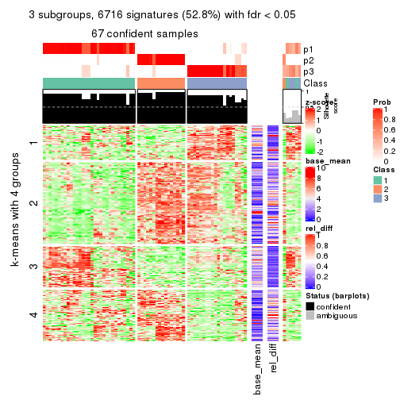
get_signatures(res, k = 4)
get_signatures(res, k = 5)
get_signatures(res, k = 6)
Signature heatmaps where rows are not scaled:
get_signatures(res, k = 2, scale_rows = FALSE)
get_signatures(res, k = 3, scale_rows = FALSE)
get_signatures(res, k = 4, scale_rows = FALSE)
get_signatures(res, k = 5, scale_rows = FALSE)
get_signatures(res, k = 6, scale_rows = FALSE)
Compare the overlap of signatures from different k:
compare_signatures(res)

get_signature() returns a data frame invisibly. TO get the list of signatures, the function
call should be assigned to a variable explicitly. In following code, if plot argument is set
to FALSE, no heatmap is plotted while only the differential analysis is performed.
# code only for demonstration
tb = get_signature(res, k = ..., plot = FALSE)
An example of the output of tb is:
#> which_row fdr mean_1 mean_2 scaled_mean_1 scaled_mean_2 km
#> 1 38 0.042760348 8.373488 9.131774 -0.5533452 0.5164555 1
#> 2 40 0.018707592 7.106213 8.469186 -0.6173731 0.5762149 1
#> 3 55 0.019134737 10.221463 11.207825 -0.6159697 0.5749050 1
#> 4 59 0.006059896 5.921854 7.869574 -0.6899429 0.6439467 1
#> 5 60 0.018055526 8.928898 10.211722 -0.6204761 0.5791110 1
#> 6 98 0.009384629 15.714769 14.887706 0.6635654 -0.6193277 2
...
The columns in tb are:
which_row: row indices corresponding to the input matrix.fdr: FDR for the differential test. mean_x: The mean value in group x.scaled_mean_x: The mean value in group x after rows are scaled.km: Row groups if k-means clustering is applied to rows.UMAP plot which shows how samples are separated.
dimension_reduction(res, k = 2, method = "UMAP")
dimension_reduction(res, k = 3, method = "UMAP")
dimension_reduction(res, k = 4, method = "UMAP")
dimension_reduction(res, k = 5, method = "UMAP")
dimension_reduction(res, k = 6, method = "UMAP")
Following heatmap shows how subgroups are split when increasing k:
collect_classes(res)
If matrix rows can be associated to genes, consider to use functional_enrichment(res,
...) to perform function enrichment for the signature genes. See this vignette for more detailed explanations.
The object with results only for a single top-value method and a single partition method can be extracted as:
res = res_list["CV", "mclust"]
# you can also extract it by
# res = res_list["CV:mclust"]
A summary of res and all the functions that can be applied to it:
res
#> A 'ConsensusPartition' object with k = 2, 3, 4, 5, 6.
#> On a matrix with 12731 rows and 73 columns.
#> Top rows (1000, 2000, 3000, 4000, 5000) are extracted by 'CV' method.
#> Subgroups are detected by 'mclust' method.
#> Performed in total 1250 partitions by row resampling.
#> Best k for subgroups seems to be 6.
#>
#> Following methods can be applied to this 'ConsensusPartition' object:
#> [1] "cola_report" "collect_classes" "collect_plots"
#> [4] "collect_stats" "colnames" "compare_signatures"
#> [7] "consensus_heatmap" "dimension_reduction" "functional_enrichment"
#> [10] "get_anno_col" "get_anno" "get_classes"
#> [13] "get_consensus" "get_matrix" "get_membership"
#> [16] "get_param" "get_signatures" "get_stats"
#> [19] "is_best_k" "is_stable_k" "membership_heatmap"
#> [22] "ncol" "nrow" "plot_ecdf"
#> [25] "rownames" "select_partition_number" "show"
#> [28] "suggest_best_k" "test_to_known_factors"
collect_plots() function collects all the plots made from res for all k (number of partitions)
into one single page to provide an easy and fast comparison between different k.
collect_plots(res)
The plots are:
k and the heatmap of
predicted classes for each k.k.k.k.All the plots in panels can be made by individual functions and they are plotted later in this section.
select_partition_number() produces several plots showing different
statistics for choosing “optimized” k. There are following statistics:
k;k, the area increased is defined as \(A_k - A_{k-1}\).The detailed explanations of these statistics can be found in the cola vignette.
Generally speaking, lower PAC score, higher mean silhouette score or higher
concordance corresponds to better partition. Rand index and Jaccard index
measure how similar the current partition is compared to partition with k-1.
If they are too similar, we won't accept k is better than k-1.
select_partition_number(res)
The numeric values for all these statistics can be obtained by get_stats().
get_stats(res)
#> k 1-PAC mean_silhouette concordance area_increased Rand Jaccard
#> 2 2 0.939 0.961 0.967 0.4581 0.543 0.543
#> 3 3 1.000 0.982 0.982 0.4734 0.781 0.597
#> 4 4 1.000 0.987 0.976 0.0768 0.947 0.836
#> 5 5 1.000 0.996 0.998 0.0816 0.943 0.789
#> 6 6 1.000 0.942 0.977 0.0661 0.946 0.746
suggest_best_k() suggests the best \(k\) based on these statistics. The rules are as follows:
suggest_best_k(res)
#> [1] 6
#> attr(,"optional")
#> [1] 2 3 4 5
There is also optional best \(k\) = 2 3 4 5 that is worth to check.
Following shows the table of the partitions (You need to click the show/hide
code output link to see it). The membership matrix (columns with name p*)
is inferred by
clue::cl_consensus()
function with the SE method. Basically the value in the membership matrix
represents the probability to belong to a certain group. The finall class
label for an item is determined with the group with highest probability it
belongs to.
In get_classes() function, the entropy is calculated from the membership
matrix and the silhouette score is calculated from the consensus matrix.
cbind(get_classes(res, k = 2), get_membership(res, k = 2))
#> class entropy silhouette p1 p2
#> SRR2144343 1 0.000 0.947 1.000 0.000
#> SRR2144345 1 0.000 0.947 1.000 0.000
#> SRR2144344 2 0.000 1.000 0.000 1.000
#> SRR2144342 1 0.671 0.862 0.824 0.176
#> SRR2144341 1 0.000 0.947 1.000 0.000
#> SRR2144340 1 0.430 0.943 0.912 0.088
#> SRR2144339 1 0.000 0.947 1.000 0.000
#> SRR2144336 2 0.000 1.000 0.000 1.000
#> SRR2144338 1 0.443 0.942 0.908 0.092
#> SRR2144337 2 0.000 1.000 0.000 1.000
#> SRR2144335 2 0.000 1.000 0.000 1.000
#> SRR2144332 1 0.000 0.947 1.000 0.000
#> SRR2144334 1 0.443 0.942 0.908 0.092
#> SRR2144333 2 0.000 1.000 0.000 1.000
#> SRR2144331 1 0.443 0.942 0.908 0.092
#> SRR2144330 2 0.000 1.000 0.000 1.000
#> SRR2144328 1 0.443 0.942 0.908 0.092
#> SRR2144329 1 0.000 0.947 1.000 0.000
#> SRR2144327 1 0.443 0.942 0.908 0.092
#> SRR2144326 2 0.000 1.000 0.000 1.000
#> SRR2144325 1 0.000 0.947 1.000 0.000
#> SRR2144323 1 0.000 0.947 1.000 0.000
#> SRR2144324 2 0.000 1.000 0.000 1.000
#> SRR2144321 1 0.000 0.947 1.000 0.000
#> SRR2144322 1 0.443 0.942 0.908 0.092
#> SRR2144320 2 0.000 1.000 0.000 1.000
#> SRR2144319 1 0.000 0.947 1.000 0.000
#> SRR2144316 1 0.443 0.942 0.908 0.092
#> SRR2144317 2 0.000 1.000 0.000 1.000
#> SRR2144318 1 0.443 0.942 0.908 0.092
#> SRR2144315 2 0.000 1.000 0.000 1.000
#> SRR2144314 1 0.000 0.947 1.000 0.000
#> SRR2144313 1 0.000 0.947 1.000 0.000
#> SRR2144312 2 0.000 1.000 0.000 1.000
#> SRR2144311 1 0.443 0.942 0.908 0.092
#> SRR2144308 2 0.000 1.000 0.000 1.000
#> SRR2144309 2 0.000 1.000 0.000 1.000
#> SRR2144310 1 0.443 0.942 0.908 0.092
#> SRR2144307 1 0.000 0.947 1.000 0.000
#> SRR2144304 1 0.000 0.947 1.000 0.000
#> SRR2144306 1 0.443 0.942 0.908 0.092
#> SRR2144303 1 0.402 0.944 0.920 0.080
#> SRR2144305 2 0.000 1.000 0.000 1.000
#> SRR2144302 2 0.000 1.000 0.000 1.000
#> SRR2144301 1 0.443 0.942 0.908 0.092
#> SRR2144300 1 0.000 0.947 1.000 0.000
#> SRR2144299 1 0.000 0.947 1.000 0.000
#> SRR2144298 1 0.689 0.853 0.816 0.184
#> SRR2144297 2 0.000 1.000 0.000 1.000
#> SRR2144296 1 0.000 0.947 1.000 0.000
#> SRR2144295 2 0.000 1.000 0.000 1.000
#> SRR2144293 2 0.000 1.000 0.000 1.000
#> SRR2144294 1 0.482 0.935 0.896 0.104
#> SRR2144291 1 0.443 0.942 0.908 0.092
#> SRR2144292 2 0.000 1.000 0.000 1.000
#> SRR2144289 1 0.443 0.942 0.908 0.092
#> SRR2144290 1 0.000 0.947 1.000 0.000
#> SRR2144287 1 0.443 0.942 0.908 0.092
#> SRR2144288 2 0.000 1.000 0.000 1.000
#> SRR2144286 1 0.000 0.947 1.000 0.000
#> SRR2144285 2 0.000 1.000 0.000 1.000
#> SRR2144284 1 0.494 0.931 0.892 0.108
#> SRR2144282 2 0.000 1.000 0.000 1.000
#> SRR2144283 1 0.000 0.947 1.000 0.000
#> SRR2144281 1 0.000 0.947 1.000 0.000
#> SRR2144279 1 0.000 0.947 1.000 0.000
#> SRR2144280 1 0.000 0.947 1.000 0.000
#> SRR2144278 1 0.482 0.935 0.896 0.104
#> SRR2144277 1 0.443 0.942 0.908 0.092
#> SRR2144276 2 0.000 1.000 0.000 1.000
#> SRR2144274 1 0.482 0.935 0.896 0.104
#> SRR2144275 2 0.000 1.000 0.000 1.000
#> SRR2144273 1 0.000 0.947 1.000 0.000
cbind(get_classes(res, k = 3), get_membership(res, k = 3))
#> class entropy silhouette p1 p2 p3
#> SRR2144343 2 0.0747 0.967 0.016 0.984 0.000
#> SRR2144345 2 0.0747 0.967 0.016 0.984 0.000
#> SRR2144344 3 0.0237 0.998 0.000 0.004 0.996
#> SRR2144342 1 0.0592 0.979 0.988 0.012 0.000
#> SRR2144341 2 0.0747 0.967 0.016 0.984 0.000
#> SRR2144340 1 0.0892 0.972 0.980 0.020 0.000
#> SRR2144339 2 0.0747 0.967 0.016 0.984 0.000
#> SRR2144336 3 0.0237 0.998 0.000 0.004 0.996
#> SRR2144338 1 0.1529 0.965 0.960 0.040 0.000
#> SRR2144337 3 0.0237 0.998 0.000 0.004 0.996
#> SRR2144335 3 0.0237 0.998 0.000 0.004 0.996
#> SRR2144332 2 0.0747 0.967 0.016 0.984 0.000
#> SRR2144334 1 0.1529 0.965 0.960 0.040 0.000
#> SRR2144333 3 0.0237 0.998 0.000 0.004 0.996
#> SRR2144331 1 0.1529 0.965 0.960 0.040 0.000
#> SRR2144330 3 0.0237 0.998 0.000 0.004 0.996
#> SRR2144328 1 0.1529 0.965 0.960 0.040 0.000
#> SRR2144329 2 0.0747 0.967 0.016 0.984 0.000
#> SRR2144327 1 0.1529 0.965 0.960 0.040 0.000
#> SRR2144326 3 0.0237 0.998 0.000 0.004 0.996
#> SRR2144325 2 0.0747 0.967 0.016 0.984 0.000
#> SRR2144323 2 0.0747 0.967 0.016 0.984 0.000
#> SRR2144324 3 0.0237 0.998 0.000 0.004 0.996
#> SRR2144321 2 0.0747 0.967 0.016 0.984 0.000
#> SRR2144322 1 0.1529 0.965 0.960 0.040 0.000
#> SRR2144320 3 0.0237 0.998 0.000 0.004 0.996
#> SRR2144319 2 0.0747 0.967 0.016 0.984 0.000
#> SRR2144316 1 0.1529 0.965 0.960 0.040 0.000
#> SRR2144317 3 0.0237 0.998 0.000 0.004 0.996
#> SRR2144318 1 0.1529 0.965 0.960 0.040 0.000
#> SRR2144315 3 0.0000 0.999 0.000 0.000 1.000
#> SRR2144314 2 0.1643 0.977 0.044 0.956 0.000
#> SRR2144313 2 0.1643 0.977 0.044 0.956 0.000
#> SRR2144312 3 0.0000 0.999 0.000 0.000 1.000
#> SRR2144311 1 0.0592 0.979 0.988 0.012 0.000
#> SRR2144308 3 0.0000 0.999 0.000 0.000 1.000
#> SRR2144309 3 0.0000 0.999 0.000 0.000 1.000
#> SRR2144310 1 0.0424 0.979 0.992 0.008 0.000
#> SRR2144307 2 0.1643 0.977 0.044 0.956 0.000
#> SRR2144304 2 0.1643 0.977 0.044 0.956 0.000
#> SRR2144306 1 0.0000 0.978 1.000 0.000 0.000
#> SRR2144303 1 0.0592 0.979 0.988 0.012 0.000
#> SRR2144305 3 0.0000 0.999 0.000 0.000 1.000
#> SRR2144302 3 0.0000 0.999 0.000 0.000 1.000
#> SRR2144301 1 0.0592 0.979 0.988 0.012 0.000
#> SRR2144300 2 0.1643 0.977 0.044 0.956 0.000
#> SRR2144299 2 0.1643 0.977 0.044 0.956 0.000
#> SRR2144298 1 0.0592 0.979 0.988 0.012 0.000
#> SRR2144297 3 0.0000 0.999 0.000 0.000 1.000
#> SRR2144296 2 0.1643 0.977 0.044 0.956 0.000
#> SRR2144295 3 0.0000 0.999 0.000 0.000 1.000
#> SRR2144293 3 0.0000 0.999 0.000 0.000 1.000
#> SRR2144294 1 0.0000 0.978 1.000 0.000 0.000
#> SRR2144291 1 0.0592 0.979 0.988 0.012 0.000
#> SRR2144292 3 0.0000 0.999 0.000 0.000 1.000
#> SRR2144289 1 0.0592 0.979 0.988 0.012 0.000
#> SRR2144290 2 0.1643 0.977 0.044 0.956 0.000
#> SRR2144287 1 0.0592 0.979 0.988 0.012 0.000
#> SRR2144288 3 0.0000 0.999 0.000 0.000 1.000
#> SRR2144286 2 0.1643 0.977 0.044 0.956 0.000
#> SRR2144285 3 0.0000 0.999 0.000 0.000 1.000
#> SRR2144284 1 0.0592 0.979 0.988 0.012 0.000
#> SRR2144282 3 0.0000 0.999 0.000 0.000 1.000
#> SRR2144283 2 0.1643 0.977 0.044 0.956 0.000
#> SRR2144281 2 0.1643 0.977 0.044 0.956 0.000
#> SRR2144279 2 0.1643 0.977 0.044 0.956 0.000
#> SRR2144280 2 0.1643 0.977 0.044 0.956 0.000
#> SRR2144278 1 0.0592 0.979 0.988 0.012 0.000
#> SRR2144277 1 0.0592 0.979 0.988 0.012 0.000
#> SRR2144276 3 0.0000 0.999 0.000 0.000 1.000
#> SRR2144274 1 0.0592 0.979 0.988 0.012 0.000
#> SRR2144275 3 0.0000 0.999 0.000 0.000 1.000
#> SRR2144273 2 0.1643 0.977 0.044 0.956 0.000
cbind(get_classes(res, k = 4), get_membership(res, k = 4))
#> class entropy silhouette p1 p2 p3 p4
#> SRR2144343 2 0.240 1.000 0.076 0.912 0.000 0.012
#> SRR2144345 2 0.240 1.000 0.076 0.912 0.000 0.012
#> SRR2144344 3 0.215 0.952 0.000 0.088 0.912 0.000
#> SRR2144342 1 0.000 1.000 1.000 0.000 0.000 0.000
#> SRR2144341 2 0.240 1.000 0.076 0.912 0.000 0.012
#> SRR2144340 1 0.000 1.000 1.000 0.000 0.000 0.000
#> SRR2144339 2 0.240 1.000 0.076 0.912 0.000 0.012
#> SRR2144336 3 0.215 0.952 0.000 0.088 0.912 0.000
#> SRR2144338 1 0.000 1.000 1.000 0.000 0.000 0.000
#> SRR2144337 3 0.215 0.952 0.000 0.088 0.912 0.000
#> SRR2144335 3 0.215 0.952 0.000 0.088 0.912 0.000
#> SRR2144332 2 0.240 1.000 0.076 0.912 0.000 0.012
#> SRR2144334 1 0.000 1.000 1.000 0.000 0.000 0.000
#> SRR2144333 3 0.215 0.952 0.000 0.088 0.912 0.000
#> SRR2144331 1 0.000 1.000 1.000 0.000 0.000 0.000
#> SRR2144330 3 0.215 0.952 0.000 0.088 0.912 0.000
#> SRR2144328 1 0.000 1.000 1.000 0.000 0.000 0.000
#> SRR2144329 2 0.240 1.000 0.076 0.912 0.000 0.012
#> SRR2144327 1 0.000 1.000 1.000 0.000 0.000 0.000
#> SRR2144326 3 0.215 0.952 0.000 0.088 0.912 0.000
#> SRR2144325 2 0.240 1.000 0.076 0.912 0.000 0.012
#> SRR2144323 2 0.240 1.000 0.076 0.912 0.000 0.012
#> SRR2144324 3 0.215 0.952 0.000 0.088 0.912 0.000
#> SRR2144321 2 0.240 1.000 0.076 0.912 0.000 0.012
#> SRR2144322 1 0.000 1.000 1.000 0.000 0.000 0.000
#> SRR2144320 3 0.215 0.952 0.000 0.088 0.912 0.000
#> SRR2144319 2 0.240 1.000 0.076 0.912 0.000 0.012
#> SRR2144316 1 0.000 1.000 1.000 0.000 0.000 0.000
#> SRR2144317 3 0.215 0.952 0.000 0.088 0.912 0.000
#> SRR2144318 1 0.000 1.000 1.000 0.000 0.000 0.000
#> SRR2144315 3 0.000 0.968 0.000 0.000 1.000 0.000
#> SRR2144314 4 0.000 1.000 0.000 0.000 0.000 1.000
#> SRR2144313 4 0.000 1.000 0.000 0.000 0.000 1.000
#> SRR2144312 3 0.000 0.968 0.000 0.000 1.000 0.000
#> SRR2144311 1 0.000 1.000 1.000 0.000 0.000 0.000
#> SRR2144308 3 0.000 0.968 0.000 0.000 1.000 0.000
#> SRR2144309 3 0.000 0.968 0.000 0.000 1.000 0.000
#> SRR2144310 1 0.000 1.000 1.000 0.000 0.000 0.000
#> SRR2144307 4 0.000 1.000 0.000 0.000 0.000 1.000
#> SRR2144304 4 0.000 1.000 0.000 0.000 0.000 1.000
#> SRR2144306 1 0.000 1.000 1.000 0.000 0.000 0.000
#> SRR2144303 1 0.000 1.000 1.000 0.000 0.000 0.000
#> SRR2144305 3 0.000 0.968 0.000 0.000 1.000 0.000
#> SRR2144302 3 0.000 0.968 0.000 0.000 1.000 0.000
#> SRR2144301 1 0.000 1.000 1.000 0.000 0.000 0.000
#> SRR2144300 4 0.000 1.000 0.000 0.000 0.000 1.000
#> SRR2144299 4 0.000 1.000 0.000 0.000 0.000 1.000
#> SRR2144298 1 0.000 1.000 1.000 0.000 0.000 0.000
#> SRR2144297 3 0.000 0.968 0.000 0.000 1.000 0.000
#> SRR2144296 4 0.000 1.000 0.000 0.000 0.000 1.000
#> SRR2144295 3 0.000 0.968 0.000 0.000 1.000 0.000
#> SRR2144293 3 0.000 0.968 0.000 0.000 1.000 0.000
#> SRR2144294 1 0.000 1.000 1.000 0.000 0.000 0.000
#> SRR2144291 1 0.000 1.000 1.000 0.000 0.000 0.000
#> SRR2144292 3 0.000 0.968 0.000 0.000 1.000 0.000
#> SRR2144289 1 0.000 1.000 1.000 0.000 0.000 0.000
#> SRR2144290 4 0.000 1.000 0.000 0.000 0.000 1.000
#> SRR2144287 1 0.000 1.000 1.000 0.000 0.000 0.000
#> SRR2144288 3 0.000 0.968 0.000 0.000 1.000 0.000
#> SRR2144286 4 0.000 1.000 0.000 0.000 0.000 1.000
#> SRR2144285 3 0.000 0.968 0.000 0.000 1.000 0.000
#> SRR2144284 1 0.000 1.000 1.000 0.000 0.000 0.000
#> SRR2144282 3 0.000 0.968 0.000 0.000 1.000 0.000
#> SRR2144283 4 0.000 1.000 0.000 0.000 0.000 1.000
#> SRR2144281 4 0.000 1.000 0.000 0.000 0.000 1.000
#> SRR2144279 4 0.000 1.000 0.000 0.000 0.000 1.000
#> SRR2144280 4 0.000 1.000 0.000 0.000 0.000 1.000
#> SRR2144278 1 0.000 1.000 1.000 0.000 0.000 0.000
#> SRR2144277 1 0.000 1.000 1.000 0.000 0.000 0.000
#> SRR2144276 3 0.000 0.968 0.000 0.000 1.000 0.000
#> SRR2144274 1 0.000 1.000 1.000 0.000 0.000 0.000
#> SRR2144275 3 0.000 0.968 0.000 0.000 1.000 0.000
#> SRR2144273 4 0.000 1.000 0.000 0.000 0.000 1.000
cbind(get_classes(res, k = 5), get_membership(res, k = 5))
#> class entropy silhouette p1 p2 p3 p4 p5
#> SRR2144343 2 0.0000 1.000 0.000 1 0.000 0.000 0.000
#> SRR2144345 2 0.0000 1.000 0.000 1 0.000 0.000 0.000
#> SRR2144344 3 0.0000 0.993 0.000 0 1.000 0.000 0.000
#> SRR2144342 1 0.0510 0.987 0.984 0 0.000 0.016 0.000
#> SRR2144341 2 0.0000 1.000 0.000 1 0.000 0.000 0.000
#> SRR2144340 1 0.0162 0.998 0.996 0 0.000 0.004 0.000
#> SRR2144339 2 0.0000 1.000 0.000 1 0.000 0.000 0.000
#> SRR2144336 3 0.0000 0.993 0.000 0 1.000 0.000 0.000
#> SRR2144338 1 0.0000 0.997 1.000 0 0.000 0.000 0.000
#> SRR2144337 3 0.1270 0.941 0.000 0 0.948 0.000 0.052
#> SRR2144335 3 0.0000 0.993 0.000 0 1.000 0.000 0.000
#> SRR2144332 2 0.0000 1.000 0.000 1 0.000 0.000 0.000
#> SRR2144334 1 0.0000 0.997 1.000 0 0.000 0.000 0.000
#> SRR2144333 3 0.0000 0.993 0.000 0 1.000 0.000 0.000
#> SRR2144331 1 0.0000 0.997 1.000 0 0.000 0.000 0.000
#> SRR2144330 3 0.0000 0.993 0.000 0 1.000 0.000 0.000
#> SRR2144328 1 0.0000 0.997 1.000 0 0.000 0.000 0.000
#> SRR2144329 2 0.0000 1.000 0.000 1 0.000 0.000 0.000
#> SRR2144327 1 0.0000 0.997 1.000 0 0.000 0.000 0.000
#> SRR2144326 3 0.0000 0.993 0.000 0 1.000 0.000 0.000
#> SRR2144325 2 0.0000 1.000 0.000 1 0.000 0.000 0.000
#> SRR2144323 2 0.0000 1.000 0.000 1 0.000 0.000 0.000
#> SRR2144324 3 0.0000 0.993 0.000 0 1.000 0.000 0.000
#> SRR2144321 2 0.0000 1.000 0.000 1 0.000 0.000 0.000
#> SRR2144322 1 0.0000 0.997 1.000 0 0.000 0.000 0.000
#> SRR2144320 3 0.0162 0.990 0.000 0 0.996 0.000 0.004
#> SRR2144319 2 0.0000 1.000 0.000 1 0.000 0.000 0.000
#> SRR2144316 1 0.0000 0.997 1.000 0 0.000 0.000 0.000
#> SRR2144317 3 0.0000 0.993 0.000 0 1.000 0.000 0.000
#> SRR2144318 1 0.0000 0.997 1.000 0 0.000 0.000 0.000
#> SRR2144315 5 0.0609 0.981 0.000 0 0.020 0.000 0.980
#> SRR2144314 4 0.0000 1.000 0.000 0 0.000 1.000 0.000
#> SRR2144313 4 0.0000 1.000 0.000 0 0.000 1.000 0.000
#> SRR2144312 5 0.0000 0.997 0.000 0 0.000 0.000 1.000
#> SRR2144311 1 0.0162 0.998 0.996 0 0.000 0.004 0.000
#> SRR2144308 5 0.0609 0.981 0.000 0 0.020 0.000 0.980
#> SRR2144309 5 0.0000 0.997 0.000 0 0.000 0.000 1.000
#> SRR2144310 1 0.0162 0.998 0.996 0 0.000 0.004 0.000
#> SRR2144307 4 0.0000 1.000 0.000 0 0.000 1.000 0.000
#> SRR2144304 4 0.0000 1.000 0.000 0 0.000 1.000 0.000
#> SRR2144306 1 0.0162 0.998 0.996 0 0.000 0.004 0.000
#> SRR2144303 1 0.0162 0.998 0.996 0 0.000 0.004 0.000
#> SRR2144305 5 0.0000 0.997 0.000 0 0.000 0.000 1.000
#> SRR2144302 5 0.0000 0.997 0.000 0 0.000 0.000 1.000
#> SRR2144301 1 0.0162 0.998 0.996 0 0.000 0.004 0.000
#> SRR2144300 4 0.0000 1.000 0.000 0 0.000 1.000 0.000
#> SRR2144299 4 0.0000 1.000 0.000 0 0.000 1.000 0.000
#> SRR2144298 1 0.0162 0.998 0.996 0 0.000 0.004 0.000
#> SRR2144297 5 0.0000 0.997 0.000 0 0.000 0.000 1.000
#> SRR2144296 4 0.0000 1.000 0.000 0 0.000 1.000 0.000
#> SRR2144295 5 0.0000 0.997 0.000 0 0.000 0.000 1.000
#> SRR2144293 5 0.0000 0.997 0.000 0 0.000 0.000 1.000
#> SRR2144294 1 0.0162 0.998 0.996 0 0.000 0.004 0.000
#> SRR2144291 1 0.0162 0.998 0.996 0 0.000 0.004 0.000
#> SRR2144292 5 0.0000 0.997 0.000 0 0.000 0.000 1.000
#> SRR2144289 1 0.0162 0.998 0.996 0 0.000 0.004 0.000
#> SRR2144290 4 0.0000 1.000 0.000 0 0.000 1.000 0.000
#> SRR2144287 1 0.0162 0.998 0.996 0 0.000 0.004 0.000
#> SRR2144288 5 0.0000 0.997 0.000 0 0.000 0.000 1.000
#> SRR2144286 4 0.0000 1.000 0.000 0 0.000 1.000 0.000
#> SRR2144285 5 0.0000 0.997 0.000 0 0.000 0.000 1.000
#> SRR2144284 1 0.0162 0.998 0.996 0 0.000 0.004 0.000
#> SRR2144282 5 0.0000 0.997 0.000 0 0.000 0.000 1.000
#> SRR2144283 4 0.0000 1.000 0.000 0 0.000 1.000 0.000
#> SRR2144281 4 0.0000 1.000 0.000 0 0.000 1.000 0.000
#> SRR2144279 4 0.0000 1.000 0.000 0 0.000 1.000 0.000
#> SRR2144280 4 0.0000 1.000 0.000 0 0.000 1.000 0.000
#> SRR2144278 1 0.0162 0.998 0.996 0 0.000 0.004 0.000
#> SRR2144277 1 0.0162 0.998 0.996 0 0.000 0.004 0.000
#> SRR2144276 5 0.0000 0.997 0.000 0 0.000 0.000 1.000
#> SRR2144274 1 0.0162 0.998 0.996 0 0.000 0.004 0.000
#> SRR2144275 5 0.0000 0.997 0.000 0 0.000 0.000 1.000
#> SRR2144273 4 0.0000 1.000 0.000 0 0.000 1.000 0.000
cbind(get_classes(res, k = 6), get_membership(res, k = 6))
#> class entropy silhouette p1 p2 p3 p4 p5 p6
#> SRR2144343 2 0.0000 1.000 0.000 1 0 0.000 0 0.000
#> SRR2144345 2 0.0000 1.000 0.000 1 0 0.000 0 0.000
#> SRR2144344 3 0.0000 1.000 0.000 0 1 0.000 0 0.000
#> SRR2144342 1 0.3956 0.553 0.684 0 0 0.292 0 0.024
#> SRR2144341 2 0.0000 1.000 0.000 1 0 0.000 0 0.000
#> SRR2144340 6 0.3482 0.547 0.316 0 0 0.000 0 0.684
#> SRR2144339 2 0.0000 1.000 0.000 1 0 0.000 0 0.000
#> SRR2144336 3 0.0000 1.000 0.000 0 1 0.000 0 0.000
#> SRR2144338 6 0.0000 0.856 0.000 0 0 0.000 0 1.000
#> SRR2144337 3 0.0000 1.000 0.000 0 1 0.000 0 0.000
#> SRR2144335 3 0.0000 1.000 0.000 0 1 0.000 0 0.000
#> SRR2144332 2 0.0000 1.000 0.000 1 0 0.000 0 0.000
#> SRR2144334 6 0.0000 0.856 0.000 0 0 0.000 0 1.000
#> SRR2144333 3 0.0000 1.000 0.000 0 1 0.000 0 0.000
#> SRR2144331 6 0.0000 0.856 0.000 0 0 0.000 0 1.000
#> SRR2144330 3 0.0000 1.000 0.000 0 1 0.000 0 0.000
#> SRR2144328 6 0.0000 0.856 0.000 0 0 0.000 0 1.000
#> SRR2144329 2 0.0000 1.000 0.000 1 0 0.000 0 0.000
#> SRR2144327 6 0.0000 0.856 0.000 0 0 0.000 0 1.000
#> SRR2144326 3 0.0000 1.000 0.000 0 1 0.000 0 0.000
#> SRR2144325 2 0.0000 1.000 0.000 1 0 0.000 0 0.000
#> SRR2144323 2 0.0000 1.000 0.000 1 0 0.000 0 0.000
#> SRR2144324 3 0.0000 1.000 0.000 0 1 0.000 0 0.000
#> SRR2144321 2 0.0000 1.000 0.000 1 0 0.000 0 0.000
#> SRR2144322 6 0.0000 0.856 0.000 0 0 0.000 0 1.000
#> SRR2144320 3 0.0000 1.000 0.000 0 1 0.000 0 0.000
#> SRR2144319 2 0.0000 1.000 0.000 1 0 0.000 0 0.000
#> SRR2144316 6 0.0000 0.856 0.000 0 0 0.000 0 1.000
#> SRR2144317 3 0.0000 1.000 0.000 0 1 0.000 0 0.000
#> SRR2144318 6 0.0000 0.856 0.000 0 0 0.000 0 1.000
#> SRR2144315 5 0.0000 1.000 0.000 0 0 0.000 1 0.000
#> SRR2144314 4 0.0000 1.000 0.000 0 0 1.000 0 0.000
#> SRR2144313 4 0.0000 1.000 0.000 0 0 1.000 0 0.000
#> SRR2144312 5 0.0000 1.000 0.000 0 0 0.000 1 0.000
#> SRR2144311 1 0.0000 0.962 1.000 0 0 0.000 0 0.000
#> SRR2144308 5 0.0000 1.000 0.000 0 0 0.000 1 0.000
#> SRR2144309 5 0.0000 1.000 0.000 0 0 0.000 1 0.000
#> SRR2144310 1 0.1007 0.919 0.956 0 0 0.000 0 0.044
#> SRR2144307 4 0.0000 1.000 0.000 0 0 1.000 0 0.000
#> SRR2144304 4 0.0000 1.000 0.000 0 0 1.000 0 0.000
#> SRR2144306 6 0.3868 0.157 0.496 0 0 0.000 0 0.504
#> SRR2144303 1 0.0363 0.952 0.988 0 0 0.000 0 0.012
#> SRR2144305 5 0.0000 1.000 0.000 0 0 0.000 1 0.000
#> SRR2144302 5 0.0000 1.000 0.000 0 0 0.000 1 0.000
#> SRR2144301 1 0.0000 0.962 1.000 0 0 0.000 0 0.000
#> SRR2144300 4 0.0000 1.000 0.000 0 0 1.000 0 0.000
#> SRR2144299 4 0.0000 1.000 0.000 0 0 1.000 0 0.000
#> SRR2144298 1 0.0000 0.962 1.000 0 0 0.000 0 0.000
#> SRR2144297 5 0.0000 1.000 0.000 0 0 0.000 1 0.000
#> SRR2144296 4 0.0000 1.000 0.000 0 0 1.000 0 0.000
#> SRR2144295 5 0.0000 1.000 0.000 0 0 0.000 1 0.000
#> SRR2144293 5 0.0000 1.000 0.000 0 0 0.000 1 0.000
#> SRR2144294 6 0.3868 0.169 0.492 0 0 0.000 0 0.508
#> SRR2144291 1 0.0000 0.962 1.000 0 0 0.000 0 0.000
#> SRR2144292 5 0.0000 1.000 0.000 0 0 0.000 1 0.000
#> SRR2144289 1 0.0000 0.962 1.000 0 0 0.000 0 0.000
#> SRR2144290 4 0.0000 1.000 0.000 0 0 1.000 0 0.000
#> SRR2144287 1 0.0000 0.962 1.000 0 0 0.000 0 0.000
#> SRR2144288 5 0.0000 1.000 0.000 0 0 0.000 1 0.000
#> SRR2144286 4 0.0000 1.000 0.000 0 0 1.000 0 0.000
#> SRR2144285 5 0.0000 1.000 0.000 0 0 0.000 1 0.000
#> SRR2144284 1 0.0000 0.962 1.000 0 0 0.000 0 0.000
#> SRR2144282 5 0.0000 1.000 0.000 0 0 0.000 1 0.000
#> SRR2144283 4 0.0000 1.000 0.000 0 0 1.000 0 0.000
#> SRR2144281 4 0.0000 1.000 0.000 0 0 1.000 0 0.000
#> SRR2144279 4 0.0000 1.000 0.000 0 0 1.000 0 0.000
#> SRR2144280 4 0.0000 1.000 0.000 0 0 1.000 0 0.000
#> SRR2144278 1 0.0000 0.962 1.000 0 0 0.000 0 0.000
#> SRR2144277 1 0.0000 0.962 1.000 0 0 0.000 0 0.000
#> SRR2144276 5 0.0000 1.000 0.000 0 0 0.000 1 0.000
#> SRR2144274 1 0.0000 0.962 1.000 0 0 0.000 0 0.000
#> SRR2144275 5 0.0000 1.000 0.000 0 0 0.000 1 0.000
#> SRR2144273 4 0.0000 1.000 0.000 0 0 1.000 0 0.000
Heatmaps for the consensus matrix. It visualizes the probability of two samples to be in a same group.
consensus_heatmap(res, k = 2)
consensus_heatmap(res, k = 3)
consensus_heatmap(res, k = 4)
consensus_heatmap(res, k = 5)
consensus_heatmap(res, k = 6)
Heatmaps for the membership of samples in all partitions to see how consistent they are:
membership_heatmap(res, k = 2)
membership_heatmap(res, k = 3)
membership_heatmap(res, k = 4)
membership_heatmap(res, k = 5)
membership_heatmap(res, k = 6)
As soon as we have had the classes for columns, we can look for signatures which are significantly different between classes which can be candidate marks for certain classes. Following are the heatmaps for signatures.
Signature heatmaps where rows are scaled:
get_signatures(res, k = 2)
get_signatures(res, k = 3)
get_signatures(res, k = 4)
get_signatures(res, k = 5)
get_signatures(res, k = 6)
Signature heatmaps where rows are not scaled:
get_signatures(res, k = 2, scale_rows = FALSE)
get_signatures(res, k = 3, scale_rows = FALSE)
get_signatures(res, k = 4, scale_rows = FALSE)
get_signatures(res, k = 5, scale_rows = FALSE)
get_signatures(res, k = 6, scale_rows = FALSE)
Compare the overlap of signatures from different k:
compare_signatures(res)
get_signature() returns a data frame invisibly. TO get the list of signatures, the function
call should be assigned to a variable explicitly. In following code, if plot argument is set
to FALSE, no heatmap is plotted while only the differential analysis is performed.
# code only for demonstration
tb = get_signature(res, k = ..., plot = FALSE)
An example of the output of tb is:
#> which_row fdr mean_1 mean_2 scaled_mean_1 scaled_mean_2 km
#> 1 38 0.042760348 8.373488 9.131774 -0.5533452 0.5164555 1
#> 2 40 0.018707592 7.106213 8.469186 -0.6173731 0.5762149 1
#> 3 55 0.019134737 10.221463 11.207825 -0.6159697 0.5749050 1
#> 4 59 0.006059896 5.921854 7.869574 -0.6899429 0.6439467 1
#> 5 60 0.018055526 8.928898 10.211722 -0.6204761 0.5791110 1
#> 6 98 0.009384629 15.714769 14.887706 0.6635654 -0.6193277 2
...
The columns in tb are:
which_row: row indices corresponding to the input matrix.fdr: FDR for the differential test. mean_x: The mean value in group x.scaled_mean_x: The mean value in group x after rows are scaled.km: Row groups if k-means clustering is applied to rows.UMAP plot which shows how samples are separated.
dimension_reduction(res, k = 2, method = "UMAP")
dimension_reduction(res, k = 3, method = "UMAP")
dimension_reduction(res, k = 4, method = "UMAP")
dimension_reduction(res, k = 5, method = "UMAP")
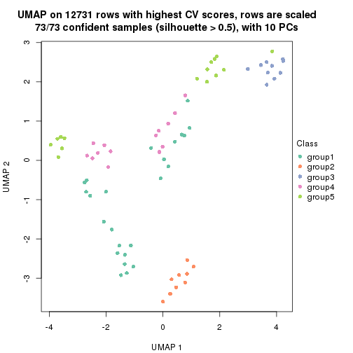
dimension_reduction(res, k = 6, method = "UMAP")
Following heatmap shows how subgroups are split when increasing k:
collect_classes(res)
If matrix rows can be associated to genes, consider to use functional_enrichment(res,
...) to perform function enrichment for the signature genes. See this vignette for more detailed explanations.
The object with results only for a single top-value method and a single partition method can be extracted as:
res = res_list["CV", "NMF"]
# you can also extract it by
# res = res_list["CV:NMF"]
A summary of res and all the functions that can be applied to it:
res
#> A 'ConsensusPartition' object with k = 2, 3, 4, 5, 6.
#> On a matrix with 12731 rows and 73 columns.
#> Top rows (1000, 2000, 3000, 4000, 5000) are extracted by 'CV' method.
#> Subgroups are detected by 'NMF' method.
#> Performed in total 1250 partitions by row resampling.
#> Best k for subgroups seems to be 4.
#>
#> Following methods can be applied to this 'ConsensusPartition' object:
#> [1] "cola_report" "collect_classes" "collect_plots"
#> [4] "collect_stats" "colnames" "compare_signatures"
#> [7] "consensus_heatmap" "dimension_reduction" "functional_enrichment"
#> [10] "get_anno_col" "get_anno" "get_classes"
#> [13] "get_consensus" "get_matrix" "get_membership"
#> [16] "get_param" "get_signatures" "get_stats"
#> [19] "is_best_k" "is_stable_k" "membership_heatmap"
#> [22] "ncol" "nrow" "plot_ecdf"
#> [25] "rownames" "select_partition_number" "show"
#> [28] "suggest_best_k" "test_to_known_factors"
collect_plots() function collects all the plots made from res for all k (number of partitions)
into one single page to provide an easy and fast comparison between different k.
collect_plots(res)
The plots are:
k and the heatmap of
predicted classes for each k.k.k.k.All the plots in panels can be made by individual functions and they are plotted later in this section.
select_partition_number() produces several plots showing different
statistics for choosing “optimized” k. There are following statistics:
k;k, the area increased is defined as \(A_k - A_{k-1}\).The detailed explanations of these statistics can be found in the cola vignette.
Generally speaking, lower PAC score, higher mean silhouette score or higher
concordance corresponds to better partition. Rand index and Jaccard index
measure how similar the current partition is compared to partition with k-1.
If they are too similar, we won't accept k is better than k-1.
select_partition_number(res)
The numeric values for all these statistics can be obtained by get_stats().
get_stats(res)
#> k 1-PAC mean_silhouette concordance area_increased Rand Jaccard
#> 2 2 1.000 0.998 0.999 0.4573 0.543 0.543
#> 3 3 0.834 0.838 0.921 0.4392 0.812 0.653
#> 4 4 0.976 0.929 0.970 0.0871 0.821 0.565
#> 5 5 0.809 0.769 0.882 0.0578 0.928 0.765
#> 6 6 0.720 0.630 0.808 0.0565 0.954 0.821
suggest_best_k() suggests the best \(k\) based on these statistics. The rules are as follows:
suggest_best_k(res)
#> [1] 4
#> attr(,"optional")
#> [1] 2
There is also optional best \(k\) = 2 that is worth to check.
Following shows the table of the partitions (You need to click the show/hide
code output link to see it). The membership matrix (columns with name p*)
is inferred by
clue::cl_consensus()
function with the SE method. Basically the value in the membership matrix
represents the probability to belong to a certain group. The finall class
label for an item is determined with the group with highest probability it
belongs to.
In get_classes() function, the entropy is calculated from the membership
matrix and the silhouette score is calculated from the consensus matrix.
cbind(get_classes(res, k = 2), get_membership(res, k = 2))
#> class entropy silhouette p1 p2
#> SRR2144343 1 0.0000 0.998 1.000 0.000
#> SRR2144345 1 0.0000 0.998 1.000 0.000
#> SRR2144344 2 0.0376 0.997 0.004 0.996
#> SRR2144342 1 0.0000 0.998 1.000 0.000
#> SRR2144341 1 0.0000 0.998 1.000 0.000
#> SRR2144340 1 0.0000 0.998 1.000 0.000
#> SRR2144339 1 0.0000 0.998 1.000 0.000
#> SRR2144336 2 0.0376 0.997 0.004 0.996
#> SRR2144338 1 0.0000 0.998 1.000 0.000
#> SRR2144337 2 0.0000 0.999 0.000 1.000
#> SRR2144335 2 0.0376 0.997 0.004 0.996
#> SRR2144332 1 0.0000 0.998 1.000 0.000
#> SRR2144334 1 0.0000 0.998 1.000 0.000
#> SRR2144333 2 0.0376 0.997 0.004 0.996
#> SRR2144331 1 0.0000 0.998 1.000 0.000
#> SRR2144330 2 0.0000 0.999 0.000 1.000
#> SRR2144328 1 0.0000 0.998 1.000 0.000
#> SRR2144329 1 0.0000 0.998 1.000 0.000
#> SRR2144327 1 0.0000 0.998 1.000 0.000
#> SRR2144326 2 0.0376 0.997 0.004 0.996
#> SRR2144325 1 0.0000 0.998 1.000 0.000
#> SRR2144323 1 0.0000 0.998 1.000 0.000
#> SRR2144324 2 0.0000 0.999 0.000 1.000
#> SRR2144321 1 0.0000 0.998 1.000 0.000
#> SRR2144322 1 0.0000 0.998 1.000 0.000
#> SRR2144320 2 0.0376 0.997 0.004 0.996
#> SRR2144319 1 0.0000 0.998 1.000 0.000
#> SRR2144316 1 0.0000 0.998 1.000 0.000
#> SRR2144317 2 0.0376 0.997 0.004 0.996
#> SRR2144318 1 0.0000 0.998 1.000 0.000
#> SRR2144315 2 0.0000 0.999 0.000 1.000
#> SRR2144314 1 0.0000 0.998 1.000 0.000
#> SRR2144313 1 0.0000 0.998 1.000 0.000
#> SRR2144312 2 0.0000 0.999 0.000 1.000
#> SRR2144311 1 0.0376 0.997 0.996 0.004
#> SRR2144308 2 0.0000 0.999 0.000 1.000
#> SRR2144309 2 0.0000 0.999 0.000 1.000
#> SRR2144310 1 0.0000 0.998 1.000 0.000
#> SRR2144307 1 0.0000 0.998 1.000 0.000
#> SRR2144304 1 0.0000 0.998 1.000 0.000
#> SRR2144306 1 0.0376 0.997 0.996 0.004
#> SRR2144303 1 0.0000 0.998 1.000 0.000
#> SRR2144305 2 0.0000 0.999 0.000 1.000
#> SRR2144302 2 0.0000 0.999 0.000 1.000
#> SRR2144301 1 0.0376 0.997 0.996 0.004
#> SRR2144300 1 0.0000 0.998 1.000 0.000
#> SRR2144299 1 0.0000 0.998 1.000 0.000
#> SRR2144298 1 0.0376 0.997 0.996 0.004
#> SRR2144297 2 0.0000 0.999 0.000 1.000
#> SRR2144296 1 0.0376 0.997 0.996 0.004
#> SRR2144295 2 0.0000 0.999 0.000 1.000
#> SRR2144293 2 0.0000 0.999 0.000 1.000
#> SRR2144294 1 0.0376 0.997 0.996 0.004
#> SRR2144291 1 0.0376 0.997 0.996 0.004
#> SRR2144292 2 0.0000 0.999 0.000 1.000
#> SRR2144289 1 0.0376 0.997 0.996 0.004
#> SRR2144290 1 0.0672 0.994 0.992 0.008
#> SRR2144287 1 0.0376 0.997 0.996 0.004
#> SRR2144288 2 0.0000 0.999 0.000 1.000
#> SRR2144286 1 0.0376 0.997 0.996 0.004
#> SRR2144285 2 0.0000 0.999 0.000 1.000
#> SRR2144284 1 0.0376 0.997 0.996 0.004
#> SRR2144282 2 0.0000 0.999 0.000 1.000
#> SRR2144283 1 0.0376 0.997 0.996 0.004
#> SRR2144281 1 0.0000 0.998 1.000 0.000
#> SRR2144279 1 0.0000 0.998 1.000 0.000
#> SRR2144280 1 0.0000 0.998 1.000 0.000
#> SRR2144278 1 0.0376 0.997 0.996 0.004
#> SRR2144277 1 0.0376 0.997 0.996 0.004
#> SRR2144276 2 0.0000 0.999 0.000 1.000
#> SRR2144274 1 0.0376 0.997 0.996 0.004
#> SRR2144275 2 0.0000 0.999 0.000 1.000
#> SRR2144273 1 0.0376 0.997 0.996 0.004
cbind(get_classes(res, k = 3), get_membership(res, k = 3))
#> class entropy silhouette p1 p2 p3
#> SRR2144343 2 0.6126 0.915 0.400 0.600 0
#> SRR2144345 2 0.6126 0.915 0.400 0.600 0
#> SRR2144344 3 0.0000 1.000 0.000 0.000 1
#> SRR2144342 2 0.0892 0.366 0.020 0.980 0
#> SRR2144341 2 0.6126 0.915 0.400 0.600 0
#> SRR2144340 2 0.4452 0.693 0.192 0.808 0
#> SRR2144339 2 0.6126 0.915 0.400 0.600 0
#> SRR2144336 3 0.0000 1.000 0.000 0.000 1
#> SRR2144338 1 0.6126 0.818 0.600 0.400 0
#> SRR2144337 3 0.0000 1.000 0.000 0.000 1
#> SRR2144335 3 0.0000 1.000 0.000 0.000 1
#> SRR2144332 2 0.6126 0.915 0.400 0.600 0
#> SRR2144334 1 0.6244 0.793 0.560 0.440 0
#> SRR2144333 3 0.0000 1.000 0.000 0.000 1
#> SRR2144331 1 0.6244 0.781 0.560 0.440 0
#> SRR2144330 3 0.0000 1.000 0.000 0.000 1
#> SRR2144328 1 0.6274 0.780 0.544 0.456 0
#> SRR2144329 2 0.6126 0.915 0.400 0.600 0
#> SRR2144327 2 0.4702 0.572 0.212 0.788 0
#> SRR2144326 3 0.0000 1.000 0.000 0.000 1
#> SRR2144325 2 0.6126 0.915 0.400 0.600 0
#> SRR2144323 2 0.6126 0.915 0.400 0.600 0
#> SRR2144324 3 0.0000 1.000 0.000 0.000 1
#> SRR2144321 2 0.6126 0.915 0.400 0.600 0
#> SRR2144322 1 0.6126 0.818 0.600 0.400 0
#> SRR2144320 3 0.0000 1.000 0.000 0.000 1
#> SRR2144319 2 0.6126 0.915 0.400 0.600 0
#> SRR2144316 1 0.6126 0.818 0.600 0.400 0
#> SRR2144317 3 0.0000 1.000 0.000 0.000 1
#> SRR2144318 1 0.6126 0.818 0.600 0.400 0
#> SRR2144315 3 0.0000 1.000 0.000 0.000 1
#> SRR2144314 1 0.1643 0.466 0.956 0.044 0
#> SRR2144313 1 0.1289 0.490 0.968 0.032 0
#> SRR2144312 3 0.0000 1.000 0.000 0.000 1
#> SRR2144311 1 0.6126 0.818 0.600 0.400 0
#> SRR2144308 3 0.0000 1.000 0.000 0.000 1
#> SRR2144309 3 0.0000 1.000 0.000 0.000 1
#> SRR2144310 1 0.6126 0.818 0.600 0.400 0
#> SRR2144307 2 0.6126 0.915 0.400 0.600 0
#> SRR2144304 2 0.6215 0.888 0.428 0.572 0
#> SRR2144306 1 0.6126 0.818 0.600 0.400 0
#> SRR2144303 1 0.6126 0.818 0.600 0.400 0
#> SRR2144305 3 0.0000 1.000 0.000 0.000 1
#> SRR2144302 3 0.0000 1.000 0.000 0.000 1
#> SRR2144301 1 0.6126 0.818 0.600 0.400 0
#> SRR2144300 1 0.0424 0.532 0.992 0.008 0
#> SRR2144299 1 0.0592 0.525 0.988 0.012 0
#> SRR2144298 1 0.6126 0.818 0.600 0.400 0
#> SRR2144297 3 0.0000 1.000 0.000 0.000 1
#> SRR2144296 1 0.0000 0.543 1.000 0.000 0
#> SRR2144295 3 0.0000 1.000 0.000 0.000 1
#> SRR2144293 3 0.0000 1.000 0.000 0.000 1
#> SRR2144294 1 0.6126 0.818 0.600 0.400 0
#> SRR2144291 1 0.6126 0.818 0.600 0.400 0
#> SRR2144292 3 0.0000 1.000 0.000 0.000 1
#> SRR2144289 1 0.6126 0.818 0.600 0.400 0
#> SRR2144290 1 0.1031 0.567 0.976 0.024 0
#> SRR2144287 1 0.6126 0.818 0.600 0.400 0
#> SRR2144288 3 0.0000 1.000 0.000 0.000 1
#> SRR2144286 1 0.0000 0.543 1.000 0.000 0
#> SRR2144285 3 0.0000 1.000 0.000 0.000 1
#> SRR2144284 1 0.6126 0.818 0.600 0.400 0
#> SRR2144282 3 0.0000 1.000 0.000 0.000 1
#> SRR2144283 1 0.0000 0.543 1.000 0.000 0
#> SRR2144281 1 0.0424 0.532 0.992 0.008 0
#> SRR2144279 1 0.0000 0.543 1.000 0.000 0
#> SRR2144280 1 0.0000 0.543 1.000 0.000 0
#> SRR2144278 1 0.6126 0.818 0.600 0.400 0
#> SRR2144277 1 0.6126 0.818 0.600 0.400 0
#> SRR2144276 3 0.0000 1.000 0.000 0.000 1
#> SRR2144274 1 0.6126 0.818 0.600 0.400 0
#> SRR2144275 3 0.0000 1.000 0.000 0.000 1
#> SRR2144273 1 0.4555 0.706 0.800 0.200 0
cbind(get_classes(res, k = 4), get_membership(res, k = 4))
#> class entropy silhouette p1 p2 p3 p4
#> SRR2144343 2 0.4776 0.4564 0.000 0.624 0.000 0.376
#> SRR2144345 2 0.0188 0.8113 0.000 0.996 0.000 0.004
#> SRR2144344 3 0.0188 0.9957 0.000 0.004 0.996 0.000
#> SRR2144342 1 0.0921 0.9503 0.972 0.028 0.000 0.000
#> SRR2144341 2 0.3356 0.7858 0.000 0.824 0.000 0.176
#> SRR2144340 1 0.5000 0.0602 0.504 0.496 0.000 0.000
#> SRR2144339 4 0.4103 0.6289 0.000 0.256 0.000 0.744
#> SRR2144336 3 0.0000 0.9995 0.000 0.000 1.000 0.000
#> SRR2144338 1 0.0000 0.9739 1.000 0.000 0.000 0.000
#> SRR2144337 3 0.0000 0.9995 0.000 0.000 1.000 0.000
#> SRR2144335 3 0.0000 0.9995 0.000 0.000 1.000 0.000
#> SRR2144332 2 0.2760 0.8153 0.000 0.872 0.000 0.128
#> SRR2144334 1 0.0000 0.9739 1.000 0.000 0.000 0.000
#> SRR2144333 3 0.0000 0.9995 0.000 0.000 1.000 0.000
#> SRR2144331 1 0.0000 0.9739 1.000 0.000 0.000 0.000
#> SRR2144330 3 0.0000 0.9995 0.000 0.000 1.000 0.000
#> SRR2144328 1 0.0000 0.9739 1.000 0.000 0.000 0.000
#> SRR2144329 4 0.2149 0.8680 0.000 0.088 0.000 0.912
#> SRR2144327 1 0.1792 0.9090 0.932 0.068 0.000 0.000
#> SRR2144326 3 0.0336 0.9918 0.000 0.008 0.992 0.000
#> SRR2144325 4 0.1867 0.8828 0.000 0.072 0.000 0.928
#> SRR2144323 4 0.4250 0.5934 0.000 0.276 0.000 0.724
#> SRR2144324 3 0.0000 0.9995 0.000 0.000 1.000 0.000
#> SRR2144321 4 0.3764 0.7060 0.000 0.216 0.000 0.784
#> SRR2144322 1 0.0000 0.9739 1.000 0.000 0.000 0.000
#> SRR2144320 3 0.0000 0.9995 0.000 0.000 1.000 0.000
#> SRR2144319 2 0.0000 0.8089 0.000 1.000 0.000 0.000
#> SRR2144316 1 0.0000 0.9739 1.000 0.000 0.000 0.000
#> SRR2144317 3 0.0000 0.9995 0.000 0.000 1.000 0.000
#> SRR2144318 1 0.0000 0.9739 1.000 0.000 0.000 0.000
#> SRR2144315 3 0.0000 0.9995 0.000 0.000 1.000 0.000
#> SRR2144314 4 0.0000 0.9388 0.000 0.000 0.000 1.000
#> SRR2144313 4 0.0000 0.9388 0.000 0.000 0.000 1.000
#> SRR2144312 3 0.0000 0.9995 0.000 0.000 1.000 0.000
#> SRR2144311 1 0.0000 0.9739 1.000 0.000 0.000 0.000
#> SRR2144308 3 0.0000 0.9995 0.000 0.000 1.000 0.000
#> SRR2144309 3 0.0000 0.9995 0.000 0.000 1.000 0.000
#> SRR2144310 1 0.0000 0.9739 1.000 0.000 0.000 0.000
#> SRR2144307 4 0.0000 0.9388 0.000 0.000 0.000 1.000
#> SRR2144304 4 0.0000 0.9388 0.000 0.000 0.000 1.000
#> SRR2144306 1 0.0000 0.9739 1.000 0.000 0.000 0.000
#> SRR2144303 1 0.0000 0.9739 1.000 0.000 0.000 0.000
#> SRR2144305 3 0.0000 0.9995 0.000 0.000 1.000 0.000
#> SRR2144302 3 0.0000 0.9995 0.000 0.000 1.000 0.000
#> SRR2144301 1 0.0000 0.9739 1.000 0.000 0.000 0.000
#> SRR2144300 4 0.0000 0.9388 0.000 0.000 0.000 1.000
#> SRR2144299 4 0.0000 0.9388 0.000 0.000 0.000 1.000
#> SRR2144298 1 0.0000 0.9739 1.000 0.000 0.000 0.000
#> SRR2144297 3 0.0000 0.9995 0.000 0.000 1.000 0.000
#> SRR2144296 4 0.0000 0.9388 0.000 0.000 0.000 1.000
#> SRR2144295 3 0.0000 0.9995 0.000 0.000 1.000 0.000
#> SRR2144293 3 0.0000 0.9995 0.000 0.000 1.000 0.000
#> SRR2144294 1 0.0000 0.9739 1.000 0.000 0.000 0.000
#> SRR2144291 1 0.0000 0.9739 1.000 0.000 0.000 0.000
#> SRR2144292 3 0.0000 0.9995 0.000 0.000 1.000 0.000
#> SRR2144289 1 0.0000 0.9739 1.000 0.000 0.000 0.000
#> SRR2144290 4 0.0000 0.9388 0.000 0.000 0.000 1.000
#> SRR2144287 1 0.0000 0.9739 1.000 0.000 0.000 0.000
#> SRR2144288 3 0.0000 0.9995 0.000 0.000 1.000 0.000
#> SRR2144286 4 0.0000 0.9388 0.000 0.000 0.000 1.000
#> SRR2144285 3 0.0000 0.9995 0.000 0.000 1.000 0.000
#> SRR2144284 1 0.0000 0.9739 1.000 0.000 0.000 0.000
#> SRR2144282 3 0.0000 0.9995 0.000 0.000 1.000 0.000
#> SRR2144283 4 0.0000 0.9388 0.000 0.000 0.000 1.000
#> SRR2144281 4 0.0000 0.9388 0.000 0.000 0.000 1.000
#> SRR2144279 4 0.0000 0.9388 0.000 0.000 0.000 1.000
#> SRR2144280 4 0.0000 0.9388 0.000 0.000 0.000 1.000
#> SRR2144278 1 0.0000 0.9739 1.000 0.000 0.000 0.000
#> SRR2144277 1 0.0000 0.9739 1.000 0.000 0.000 0.000
#> SRR2144276 3 0.0000 0.9995 0.000 0.000 1.000 0.000
#> SRR2144274 1 0.0000 0.9739 1.000 0.000 0.000 0.000
#> SRR2144275 3 0.0000 0.9995 0.000 0.000 1.000 0.000
#> SRR2144273 4 0.0000 0.9388 0.000 0.000 0.000 1.000
cbind(get_classes(res, k = 5), get_membership(res, k = 5))
#> class entropy silhouette p1 p2 p3 p4 p5
#> SRR2144343 2 0.3398 0.7097 0.000 0.780 0.000 0.004 0.216
#> SRR2144345 5 0.4283 -0.0713 0.000 0.456 0.000 0.000 0.544
#> SRR2144344 3 0.1043 0.9519 0.000 0.000 0.960 0.040 0.000
#> SRR2144342 1 0.4601 0.7712 0.788 0.100 0.000 0.060 0.052
#> SRR2144341 2 0.3932 0.5481 0.000 0.672 0.000 0.000 0.328
#> SRR2144340 1 0.5841 0.6682 0.692 0.144 0.000 0.100 0.064
#> SRR2144339 2 0.3398 0.7124 0.000 0.780 0.000 0.004 0.216
#> SRR2144336 3 0.1043 0.9519 0.000 0.000 0.960 0.040 0.000
#> SRR2144338 1 0.0000 0.8878 1.000 0.000 0.000 0.000 0.000
#> SRR2144337 3 0.1121 0.9521 0.000 0.000 0.956 0.044 0.000
#> SRR2144335 3 0.1043 0.9519 0.000 0.000 0.960 0.040 0.000
#> SRR2144332 5 0.2852 0.5075 0.000 0.172 0.000 0.000 0.828
#> SRR2144334 1 0.0162 0.8872 0.996 0.000 0.000 0.004 0.000
#> SRR2144333 3 0.1043 0.9519 0.000 0.000 0.960 0.040 0.000
#> SRR2144331 1 0.1106 0.8813 0.964 0.000 0.000 0.012 0.024
#> SRR2144330 3 0.1043 0.9519 0.000 0.000 0.960 0.040 0.000
#> SRR2144328 1 0.0451 0.8879 0.988 0.000 0.000 0.008 0.004
#> SRR2144329 2 0.3409 0.7618 0.000 0.824 0.000 0.032 0.144
#> SRR2144327 5 0.4390 0.0242 0.428 0.000 0.000 0.004 0.568
#> SRR2144326 3 0.1741 0.9404 0.000 0.000 0.936 0.040 0.024
#> SRR2144325 2 0.3074 0.7318 0.000 0.804 0.000 0.000 0.196
#> SRR2144323 5 0.4557 0.1604 0.000 0.404 0.000 0.012 0.584
#> SRR2144324 3 0.1043 0.9519 0.000 0.000 0.960 0.040 0.000
#> SRR2144321 2 0.4752 0.2515 0.000 0.568 0.000 0.020 0.412
#> SRR2144322 1 0.0162 0.8872 0.996 0.000 0.000 0.004 0.000
#> SRR2144320 3 0.1205 0.9502 0.000 0.000 0.956 0.040 0.004
#> SRR2144319 5 0.0000 0.4371 0.000 0.000 0.000 0.000 1.000
#> SRR2144316 1 0.0000 0.8878 1.000 0.000 0.000 0.000 0.000
#> SRR2144317 3 0.1043 0.9519 0.000 0.000 0.960 0.040 0.000
#> SRR2144318 1 0.0000 0.8878 1.000 0.000 0.000 0.000 0.000
#> SRR2144315 3 0.0609 0.9550 0.000 0.000 0.980 0.020 0.000
#> SRR2144314 2 0.2773 0.7643 0.000 0.836 0.000 0.164 0.000
#> SRR2144313 2 0.0290 0.7855 0.000 0.992 0.000 0.008 0.000
#> SRR2144312 3 0.0162 0.9548 0.000 0.000 0.996 0.004 0.000
#> SRR2144311 1 0.0609 0.8846 0.980 0.020 0.000 0.000 0.000
#> SRR2144308 3 0.0162 0.9548 0.000 0.000 0.996 0.004 0.000
#> SRR2144309 3 0.0000 0.9552 0.000 0.000 1.000 0.000 0.000
#> SRR2144310 1 0.3648 0.8042 0.824 0.084 0.000 0.092 0.000
#> SRR2144307 2 0.0290 0.7893 0.000 0.992 0.000 0.008 0.000
#> SRR2144304 2 0.1851 0.7015 0.000 0.912 0.000 0.088 0.000
#> SRR2144306 1 0.0703 0.8861 0.976 0.000 0.000 0.024 0.000
#> SRR2144303 1 0.4637 0.7245 0.740 0.160 0.000 0.100 0.000
#> SRR2144305 3 0.0000 0.9552 0.000 0.000 1.000 0.000 0.000
#> SRR2144302 3 0.0000 0.9552 0.000 0.000 1.000 0.000 0.000
#> SRR2144301 4 0.3895 0.4762 0.320 0.000 0.000 0.680 0.000
#> SRR2144300 2 0.0404 0.7918 0.000 0.988 0.000 0.012 0.000
#> SRR2144299 2 0.2773 0.7643 0.000 0.836 0.000 0.164 0.000
#> SRR2144298 1 0.0162 0.8872 0.996 0.000 0.000 0.004 0.000
#> SRR2144297 3 0.3274 0.7385 0.000 0.000 0.780 0.220 0.000
#> SRR2144296 4 0.3534 0.5906 0.000 0.256 0.000 0.744 0.000
#> SRR2144295 3 0.3508 0.6909 0.000 0.000 0.748 0.252 0.000
#> SRR2144293 3 0.0000 0.9552 0.000 0.000 1.000 0.000 0.000
#> SRR2144294 1 0.3274 0.6768 0.780 0.000 0.000 0.220 0.000
#> SRR2144291 1 0.2813 0.8050 0.832 0.000 0.000 0.168 0.000
#> SRR2144292 3 0.0162 0.9548 0.000 0.000 0.996 0.004 0.000
#> SRR2144289 4 0.3837 0.4857 0.308 0.000 0.000 0.692 0.000
#> SRR2144290 4 0.2648 0.6510 0.000 0.152 0.000 0.848 0.000
#> SRR2144287 1 0.3796 0.5287 0.700 0.000 0.000 0.300 0.000
#> SRR2144288 3 0.2773 0.8118 0.000 0.000 0.836 0.164 0.000
#> SRR2144286 4 0.4161 0.3364 0.000 0.392 0.000 0.608 0.000
#> SRR2144285 3 0.0162 0.9548 0.000 0.000 0.996 0.004 0.000
#> SRR2144284 1 0.0609 0.8816 0.980 0.000 0.000 0.020 0.000
#> SRR2144282 3 0.0162 0.9548 0.000 0.000 0.996 0.004 0.000
#> SRR2144283 2 0.2773 0.7657 0.000 0.836 0.000 0.164 0.000
#> SRR2144281 2 0.2773 0.7643 0.000 0.836 0.000 0.164 0.000
#> SRR2144279 2 0.0510 0.7853 0.000 0.984 0.000 0.016 0.000
#> SRR2144280 2 0.0703 0.7933 0.000 0.976 0.000 0.024 0.000
#> SRR2144278 1 0.0000 0.8878 1.000 0.000 0.000 0.000 0.000
#> SRR2144277 1 0.4428 0.7463 0.760 0.144 0.000 0.096 0.000
#> SRR2144276 3 0.0162 0.9548 0.000 0.000 0.996 0.004 0.000
#> SRR2144274 1 0.1282 0.8740 0.952 0.044 0.000 0.004 0.000
#> SRR2144275 3 0.0162 0.9548 0.000 0.000 0.996 0.004 0.000
#> SRR2144273 4 0.2605 0.6506 0.000 0.148 0.000 0.852 0.000
cbind(get_classes(res, k = 6), get_membership(res, k = 6))
#> class entropy silhouette p1 p2 p3 p4 p5 p6
#> SRR2144343 1 0.3109 0.5498 0.772 0.224 0.000 0.000 0.004 0.000
#> SRR2144345 2 0.3955 0.2337 0.436 0.560 0.000 0.000 0.004 0.000
#> SRR2144344 3 0.2966 0.8534 0.000 0.008 0.856 0.048 0.088 0.000
#> SRR2144342 5 0.5060 0.7619 0.004 0.080 0.000 0.000 0.580 0.336
#> SRR2144341 1 0.3961 0.0653 0.556 0.440 0.000 0.004 0.000 0.000
#> SRR2144340 5 0.4483 0.8000 0.008 0.092 0.000 0.000 0.720 0.180
#> SRR2144339 1 0.3892 0.2978 0.640 0.352 0.000 0.004 0.000 0.004
#> SRR2144336 3 0.2712 0.8553 0.000 0.000 0.864 0.048 0.088 0.000
#> SRR2144338 6 0.0547 0.7207 0.000 0.000 0.000 0.000 0.020 0.980
#> SRR2144337 3 0.2554 0.8586 0.000 0.000 0.876 0.048 0.076 0.000
#> SRR2144335 3 0.2712 0.8553 0.000 0.000 0.864 0.048 0.088 0.000
#> SRR2144332 2 0.2697 0.5795 0.188 0.812 0.000 0.000 0.000 0.000
#> SRR2144334 6 0.2331 0.6713 0.000 0.080 0.000 0.000 0.032 0.888
#> SRR2144333 3 0.3451 0.8445 0.000 0.028 0.832 0.048 0.092 0.000
#> SRR2144331 6 0.4121 0.5292 0.000 0.136 0.000 0.000 0.116 0.748
#> SRR2144330 3 0.2854 0.8545 0.000 0.004 0.860 0.048 0.088 0.000
#> SRR2144328 6 0.4181 -0.4849 0.000 0.012 0.000 0.000 0.476 0.512
#> SRR2144329 1 0.2915 0.6082 0.808 0.184 0.000 0.008 0.000 0.000
#> SRR2144327 2 0.3607 0.2043 0.000 0.652 0.000 0.000 0.000 0.348
#> SRR2144326 3 0.4931 0.7659 0.000 0.144 0.716 0.048 0.092 0.000
#> SRR2144325 1 0.3087 0.6140 0.808 0.176 0.000 0.012 0.004 0.000
#> SRR2144323 2 0.3512 0.5288 0.272 0.720 0.000 0.008 0.000 0.000
#> SRR2144324 3 0.2712 0.8553 0.000 0.000 0.864 0.048 0.088 0.000
#> SRR2144321 2 0.4045 0.2640 0.428 0.564 0.000 0.008 0.000 0.000
#> SRR2144322 6 0.0146 0.7209 0.000 0.000 0.000 0.000 0.004 0.996
#> SRR2144320 3 0.5209 0.7255 0.000 0.184 0.680 0.048 0.088 0.000
#> SRR2144319 2 0.0146 0.5414 0.000 0.996 0.000 0.000 0.000 0.004
#> SRR2144316 6 0.0692 0.7167 0.000 0.004 0.000 0.000 0.020 0.976
#> SRR2144317 3 0.3809 0.8345 0.000 0.052 0.812 0.048 0.088 0.000
#> SRR2144318 6 0.0632 0.7171 0.000 0.000 0.000 0.000 0.024 0.976
#> SRR2144315 3 0.2201 0.8627 0.000 0.000 0.896 0.028 0.076 0.000
#> SRR2144314 1 0.2100 0.6816 0.884 0.000 0.000 0.112 0.004 0.000
#> SRR2144313 1 0.0777 0.6910 0.972 0.000 0.000 0.004 0.024 0.000
#> SRR2144312 3 0.0260 0.8679 0.000 0.000 0.992 0.000 0.008 0.000
#> SRR2144311 6 0.3551 0.6556 0.040 0.000 0.000 0.012 0.144 0.804
#> SRR2144308 3 0.0000 0.8692 0.000 0.000 1.000 0.000 0.000 0.000
#> SRR2144309 3 0.0146 0.8685 0.000 0.000 0.996 0.000 0.004 0.000
#> SRR2144310 5 0.3565 0.8389 0.004 0.000 0.000 0.000 0.692 0.304
#> SRR2144307 1 0.1088 0.6965 0.960 0.000 0.000 0.024 0.016 0.000
#> SRR2144304 1 0.3647 0.3650 0.640 0.000 0.000 0.000 0.360 0.000
#> SRR2144306 6 0.2883 0.5267 0.000 0.000 0.000 0.000 0.212 0.788
#> SRR2144303 5 0.3720 0.8307 0.028 0.000 0.000 0.000 0.736 0.236
#> SRR2144305 3 0.0260 0.8697 0.000 0.000 0.992 0.000 0.008 0.000
#> SRR2144302 3 0.0146 0.8689 0.004 0.000 0.996 0.000 0.000 0.000
#> SRR2144301 6 0.4034 0.4950 0.000 0.000 0.000 0.328 0.020 0.652
#> SRR2144300 1 0.2623 0.6308 0.852 0.000 0.000 0.016 0.132 0.000
#> SRR2144299 1 0.2234 0.6782 0.872 0.000 0.000 0.124 0.004 0.000
#> SRR2144298 6 0.0458 0.7202 0.000 0.000 0.000 0.000 0.016 0.984
#> SRR2144297 3 0.3934 0.3867 0.000 0.000 0.616 0.376 0.008 0.000
#> SRR2144296 4 0.3290 0.6439 0.252 0.000 0.000 0.744 0.004 0.000
#> SRR2144295 3 0.3993 0.3380 0.000 0.000 0.592 0.400 0.008 0.000
#> SRR2144293 3 0.0260 0.8688 0.000 0.000 0.992 0.000 0.008 0.000
#> SRR2144294 6 0.4333 0.1335 0.000 0.000 0.000 0.468 0.020 0.512
#> SRR2144291 5 0.4481 0.8128 0.000 0.000 0.000 0.056 0.648 0.296
#> SRR2144292 3 0.0291 0.8678 0.000 0.000 0.992 0.004 0.004 0.000
#> SRR2144289 4 0.3156 0.5357 0.000 0.000 0.000 0.800 0.020 0.180
#> SRR2144290 4 0.1531 0.7333 0.068 0.000 0.000 0.928 0.004 0.000
#> SRR2144287 6 0.2907 0.6536 0.000 0.000 0.000 0.152 0.020 0.828
#> SRR2144288 3 0.4067 0.2180 0.000 0.000 0.548 0.444 0.008 0.000
#> SRR2144286 4 0.3944 0.3208 0.428 0.000 0.000 0.568 0.004 0.000
#> SRR2144285 3 0.0146 0.8685 0.000 0.000 0.996 0.000 0.004 0.000
#> SRR2144284 6 0.1225 0.7131 0.000 0.000 0.000 0.012 0.036 0.952
#> SRR2144282 3 0.0547 0.8642 0.000 0.000 0.980 0.000 0.020 0.000
#> SRR2144283 1 0.5425 -0.0320 0.504 0.000 0.000 0.372 0.124 0.000
#> SRR2144281 1 0.2234 0.6756 0.872 0.000 0.000 0.124 0.004 0.000
#> SRR2144279 1 0.2112 0.6705 0.896 0.000 0.000 0.016 0.088 0.000
#> SRR2144280 1 0.2750 0.6213 0.844 0.000 0.000 0.020 0.136 0.000
#> SRR2144278 6 0.2883 0.6753 0.008 0.000 0.000 0.008 0.152 0.832
#> SRR2144277 6 0.5303 0.4122 0.092 0.000 0.000 0.012 0.312 0.584
#> SRR2144276 3 0.0363 0.8670 0.000 0.000 0.988 0.000 0.012 0.000
#> SRR2144274 6 0.4345 0.5910 0.068 0.000 0.000 0.012 0.188 0.732
#> SRR2144275 3 0.0146 0.8685 0.000 0.000 0.996 0.000 0.004 0.000
#> SRR2144273 4 0.1387 0.7340 0.068 0.000 0.000 0.932 0.000 0.000
Heatmaps for the consensus matrix. It visualizes the probability of two samples to be in a same group.
consensus_heatmap(res, k = 2)
consensus_heatmap(res, k = 3)
consensus_heatmap(res, k = 4)
consensus_heatmap(res, k = 5)
consensus_heatmap(res, k = 6)
Heatmaps for the membership of samples in all partitions to see how consistent they are:
membership_heatmap(res, k = 2)
membership_heatmap(res, k = 3)
membership_heatmap(res, k = 4)
membership_heatmap(res, k = 5)
membership_heatmap(res, k = 6)
As soon as we have had the classes for columns, we can look for signatures which are significantly different between classes which can be candidate marks for certain classes. Following are the heatmaps for signatures.
Signature heatmaps where rows are scaled:
get_signatures(res, k = 2)
get_signatures(res, k = 3)
get_signatures(res, k = 4)
get_signatures(res, k = 5)
get_signatures(res, k = 6)
Signature heatmaps where rows are not scaled:
get_signatures(res, k = 2, scale_rows = FALSE)
get_signatures(res, k = 3, scale_rows = FALSE)
get_signatures(res, k = 4, scale_rows = FALSE)
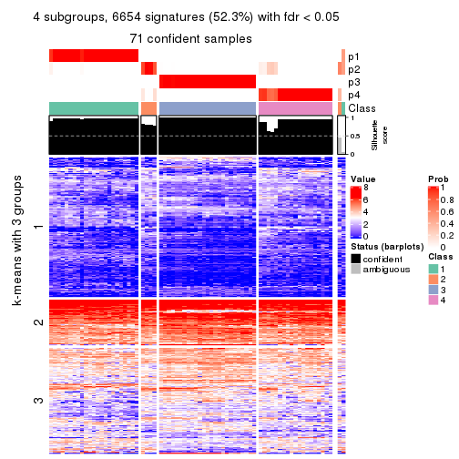
get_signatures(res, k = 5, scale_rows = FALSE)
get_signatures(res, k = 6, scale_rows = FALSE)
Compare the overlap of signatures from different k:
compare_signatures(res)
get_signature() returns a data frame invisibly. TO get the list of signatures, the function
call should be assigned to a variable explicitly. In following code, if plot argument is set
to FALSE, no heatmap is plotted while only the differential analysis is performed.
# code only for demonstration
tb = get_signature(res, k = ..., plot = FALSE)
An example of the output of tb is:
#> which_row fdr mean_1 mean_2 scaled_mean_1 scaled_mean_2 km
#> 1 38 0.042760348 8.373488 9.131774 -0.5533452 0.5164555 1
#> 2 40 0.018707592 7.106213 8.469186 -0.6173731 0.5762149 1
#> 3 55 0.019134737 10.221463 11.207825 -0.6159697 0.5749050 1
#> 4 59 0.006059896 5.921854 7.869574 -0.6899429 0.6439467 1
#> 5 60 0.018055526 8.928898 10.211722 -0.6204761 0.5791110 1
#> 6 98 0.009384629 15.714769 14.887706 0.6635654 -0.6193277 2
...
The columns in tb are:
which_row: row indices corresponding to the input matrix.fdr: FDR for the differential test. mean_x: The mean value in group x.scaled_mean_x: The mean value in group x after rows are scaled.km: Row groups if k-means clustering is applied to rows.UMAP plot which shows how samples are separated.
dimension_reduction(res, k = 2, method = "UMAP")

dimension_reduction(res, k = 3, method = "UMAP")
dimension_reduction(res, k = 4, method = "UMAP")
dimension_reduction(res, k = 5, method = "UMAP")
dimension_reduction(res, k = 6, method = "UMAP")
Following heatmap shows how subgroups are split when increasing k:
collect_classes(res)
If matrix rows can be associated to genes, consider to use functional_enrichment(res,
...) to perform function enrichment for the signature genes. See this vignette for more detailed explanations.
The object with results only for a single top-value method and a single partition method can be extracted as:
res = res_list["MAD", "hclust"]
# you can also extract it by
# res = res_list["MAD:hclust"]
A summary of res and all the functions that can be applied to it:
res
#> A 'ConsensusPartition' object with k = 2, 3, 4, 5, 6.
#> On a matrix with 12731 rows and 73 columns.
#> Top rows (1000, 2000, 3000, 4000, 5000) are extracted by 'MAD' method.
#> Subgroups are detected by 'hclust' method.
#> Performed in total 1250 partitions by row resampling.
#> Best k for subgroups seems to be 4.
#>
#> Following methods can be applied to this 'ConsensusPartition' object:
#> [1] "cola_report" "collect_classes" "collect_plots"
#> [4] "collect_stats" "colnames" "compare_signatures"
#> [7] "consensus_heatmap" "dimension_reduction" "functional_enrichment"
#> [10] "get_anno_col" "get_anno" "get_classes"
#> [13] "get_consensus" "get_matrix" "get_membership"
#> [16] "get_param" "get_signatures" "get_stats"
#> [19] "is_best_k" "is_stable_k" "membership_heatmap"
#> [22] "ncol" "nrow" "plot_ecdf"
#> [25] "rownames" "select_partition_number" "show"
#> [28] "suggest_best_k" "test_to_known_factors"
collect_plots() function collects all the plots made from res for all k (number of partitions)
into one single page to provide an easy and fast comparison between different k.
collect_plots(res)
The plots are:
k and the heatmap of
predicted classes for each k.k.k.k.All the plots in panels can be made by individual functions and they are plotted later in this section.
select_partition_number() produces several plots showing different
statistics for choosing “optimized” k. There are following statistics:
k;k, the area increased is defined as \(A_k - A_{k-1}\).The detailed explanations of these statistics can be found in the cola vignette.
Generally speaking, lower PAC score, higher mean silhouette score or higher
concordance corresponds to better partition. Rand index and Jaccard index
measure how similar the current partition is compared to partition with k-1.
If they are too similar, we won't accept k is better than k-1.
select_partition_number(res)
The numeric values for all these statistics can be obtained by get_stats().
get_stats(res)
#> k 1-PAC mean_silhouette concordance area_increased Rand Jaccard
#> 2 2 0.137 0.294 0.647 0.4159 0.509 0.509
#> 3 3 0.398 0.462 0.742 0.4279 0.565 0.359
#> 4 4 0.530 0.569 0.777 0.1619 0.739 0.461
#> 5 5 0.658 0.542 0.747 0.0947 0.818 0.517
#> 6 6 0.757 0.567 0.747 0.0326 0.931 0.760
suggest_best_k() suggests the best \(k\) based on these statistics. The rules are as follows:
suggest_best_k(res)
#> [1] 4
Following shows the table of the partitions (You need to click the show/hide
code output link to see it). The membership matrix (columns with name p*)
is inferred by
clue::cl_consensus()
function with the SE method. Basically the value in the membership matrix
represents the probability to belong to a certain group. The finall class
label for an item is determined with the group with highest probability it
belongs to.
In get_classes() function, the entropy is calculated from the membership
matrix and the silhouette score is calculated from the consensus matrix.
cbind(get_classes(res, k = 2), get_membership(res, k = 2))
#> class entropy silhouette p1 p2
#> SRR2144343 2 0.955 0.28296 0.376 0.624
#> SRR2144345 2 0.955 0.28296 0.376 0.624
#> SRR2144344 2 0.000 0.39889 0.000 1.000
#> SRR2144342 1 0.753 0.29472 0.784 0.216
#> SRR2144341 2 0.955 0.28296 0.376 0.624
#> SRR2144340 1 0.993 0.16332 0.548 0.452
#> SRR2144339 2 0.955 0.28296 0.376 0.624
#> SRR2144336 2 0.000 0.39889 0.000 1.000
#> SRR2144338 2 0.955 0.28296 0.376 0.624
#> SRR2144337 2 0.000 0.39889 0.000 1.000
#> SRR2144335 2 0.000 0.39889 0.000 1.000
#> SRR2144332 2 0.955 0.28296 0.376 0.624
#> SRR2144334 2 0.955 0.28296 0.376 0.624
#> SRR2144333 2 0.000 0.39889 0.000 1.000
#> SRR2144331 2 0.955 0.28296 0.376 0.624
#> SRR2144330 2 0.000 0.39889 0.000 1.000
#> SRR2144328 2 0.955 0.28296 0.376 0.624
#> SRR2144329 2 0.955 0.28296 0.376 0.624
#> SRR2144327 2 0.955 0.28296 0.376 0.624
#> SRR2144326 2 0.000 0.39889 0.000 1.000
#> SRR2144325 2 0.955 0.28296 0.376 0.624
#> SRR2144323 2 0.955 0.28296 0.376 0.624
#> SRR2144324 2 0.000 0.39889 0.000 1.000
#> SRR2144321 2 0.955 0.28296 0.376 0.624
#> SRR2144322 2 0.955 0.28296 0.376 0.624
#> SRR2144320 2 0.000 0.39889 0.000 1.000
#> SRR2144319 2 0.955 0.28296 0.376 0.624
#> SRR2144316 2 0.955 0.28296 0.376 0.624
#> SRR2144317 2 0.000 0.39889 0.000 1.000
#> SRR2144318 2 0.955 0.28296 0.376 0.624
#> SRR2144315 2 0.000 0.39889 0.000 1.000
#> SRR2144314 1 0.996 0.39656 0.536 0.464
#> SRR2144313 1 0.866 0.41531 0.712 0.288
#> SRR2144312 2 0.876 0.09716 0.296 0.704
#> SRR2144311 1 0.574 0.38994 0.864 0.136
#> SRR2144308 2 0.827 0.11727 0.260 0.740
#> SRR2144309 2 0.876 0.09716 0.296 0.704
#> SRR2144310 1 0.993 0.16332 0.548 0.452
#> SRR2144307 1 0.866 0.41531 0.712 0.288
#> SRR2144304 1 0.866 0.41531 0.712 0.288
#> SRR2144306 1 0.996 0.39612 0.536 0.464
#> SRR2144303 1 0.992 0.16897 0.552 0.448
#> SRR2144305 2 0.876 0.09716 0.296 0.704
#> SRR2144302 2 0.876 0.09716 0.296 0.704
#> SRR2144301 1 0.996 0.39612 0.536 0.464
#> SRR2144300 1 0.866 0.41531 0.712 0.288
#> SRR2144299 1 0.886 0.42680 0.696 0.304
#> SRR2144298 1 0.689 0.39813 0.816 0.184
#> SRR2144297 2 0.943 -0.00669 0.360 0.640
#> SRR2144296 1 0.998 0.38681 0.528 0.472
#> SRR2144295 2 0.943 -0.00669 0.360 0.640
#> SRR2144293 2 0.943 -0.00669 0.360 0.640
#> SRR2144294 1 0.996 0.39612 0.536 0.464
#> SRR2144291 1 0.996 0.39612 0.536 0.464
#> SRR2144292 2 0.943 -0.00669 0.360 0.640
#> SRR2144289 1 0.996 0.39612 0.536 0.464
#> SRR2144290 1 0.998 0.38681 0.528 0.472
#> SRR2144287 1 0.996 0.39612 0.536 0.464
#> SRR2144288 2 0.943 -0.00669 0.360 0.640
#> SRR2144286 1 0.998 0.38681 0.528 0.472
#> SRR2144285 2 0.943 -0.00669 0.360 0.640
#> SRR2144284 1 0.866 0.41068 0.712 0.288
#> SRR2144282 2 0.876 0.09716 0.296 0.704
#> SRR2144283 1 0.996 0.39656 0.536 0.464
#> SRR2144281 1 0.996 0.39656 0.536 0.464
#> SRR2144279 1 0.866 0.41531 0.712 0.288
#> SRR2144280 1 0.866 0.41531 0.712 0.288
#> SRR2144278 1 0.574 0.38994 0.864 0.136
#> SRR2144277 1 0.574 0.38994 0.864 0.136
#> SRR2144276 2 0.876 0.09716 0.296 0.704
#> SRR2144274 1 0.574 0.38994 0.864 0.136
#> SRR2144275 2 0.876 0.09716 0.296 0.704
#> SRR2144273 1 0.998 0.38681 0.528 0.472
cbind(get_classes(res, k = 3), get_membership(res, k = 3))
#> class entropy silhouette p1 p2 p3
#> SRR2144343 2 0.000 0.7018 0.000 1.000 0.000
#> SRR2144345 2 0.000 0.7018 0.000 1.000 0.000
#> SRR2144344 2 0.633 0.4003 0.004 0.600 0.396
#> SRR2144342 1 0.497 0.5628 0.764 0.236 0.000
#> SRR2144341 2 0.000 0.7018 0.000 1.000 0.000
#> SRR2144340 2 0.510 0.4741 0.248 0.752 0.000
#> SRR2144339 2 0.000 0.7018 0.000 1.000 0.000
#> SRR2144336 2 0.633 0.4003 0.004 0.600 0.396
#> SRR2144338 2 0.000 0.7018 0.000 1.000 0.000
#> SRR2144337 2 0.633 0.4003 0.004 0.600 0.396
#> SRR2144335 2 0.633 0.4003 0.004 0.600 0.396
#> SRR2144332 2 0.000 0.7018 0.000 1.000 0.000
#> SRR2144334 2 0.000 0.7018 0.000 1.000 0.000
#> SRR2144333 2 0.633 0.4003 0.004 0.600 0.396
#> SRR2144331 2 0.000 0.7018 0.000 1.000 0.000
#> SRR2144330 2 0.633 0.4003 0.004 0.600 0.396
#> SRR2144328 2 0.000 0.7018 0.000 1.000 0.000
#> SRR2144329 2 0.000 0.7018 0.000 1.000 0.000
#> SRR2144327 2 0.000 0.7018 0.000 1.000 0.000
#> SRR2144326 2 0.633 0.4003 0.004 0.600 0.396
#> SRR2144325 2 0.000 0.7018 0.000 1.000 0.000
#> SRR2144323 2 0.000 0.7018 0.000 1.000 0.000
#> SRR2144324 2 0.633 0.4003 0.004 0.600 0.396
#> SRR2144321 2 0.000 0.7018 0.000 1.000 0.000
#> SRR2144322 2 0.000 0.7018 0.000 1.000 0.000
#> SRR2144320 2 0.633 0.4003 0.004 0.600 0.396
#> SRR2144319 2 0.000 0.7018 0.000 1.000 0.000
#> SRR2144316 2 0.000 0.7018 0.000 1.000 0.000
#> SRR2144317 2 0.633 0.4003 0.004 0.600 0.396
#> SRR2144318 2 0.000 0.7018 0.000 1.000 0.000
#> SRR2144315 2 0.633 0.4003 0.004 0.600 0.396
#> SRR2144314 3 0.794 0.3849 0.296 0.088 0.616
#> SRR2144313 2 0.852 -0.1005 0.436 0.472 0.092
#> SRR2144312 3 0.770 0.2571 0.072 0.304 0.624
#> SRR2144311 1 0.465 0.8013 0.856 0.064 0.080
#> SRR2144308 3 0.731 0.1837 0.044 0.340 0.616
#> SRR2144309 3 0.770 0.2571 0.072 0.304 0.624
#> SRR2144310 2 0.510 0.4741 0.248 0.752 0.000
#> SRR2144307 2 0.851 -0.0824 0.428 0.480 0.092
#> SRR2144304 2 0.851 -0.0824 0.428 0.480 0.092
#> SRR2144306 3 0.571 0.4218 0.320 0.000 0.680
#> SRR2144303 2 0.546 0.4258 0.288 0.712 0.000
#> SRR2144305 3 0.770 0.2571 0.072 0.304 0.624
#> SRR2144302 3 0.770 0.2571 0.072 0.304 0.624
#> SRR2144301 3 0.571 0.4218 0.320 0.000 0.680
#> SRR2144300 2 0.852 -0.1005 0.436 0.472 0.092
#> SRR2144299 1 0.758 0.5543 0.688 0.180 0.132
#> SRR2144298 1 0.280 0.7426 0.908 0.000 0.092
#> SRR2144297 3 0.000 0.5262 0.000 0.000 1.000
#> SRR2144296 3 0.553 0.4406 0.296 0.000 0.704
#> SRR2144295 3 0.000 0.5262 0.000 0.000 1.000
#> SRR2144293 3 0.000 0.5262 0.000 0.000 1.000
#> SRR2144294 3 0.571 0.4218 0.320 0.000 0.680
#> SRR2144291 3 0.571 0.4218 0.320 0.000 0.680
#> SRR2144292 3 0.000 0.5262 0.000 0.000 1.000
#> SRR2144289 3 0.571 0.4218 0.320 0.000 0.680
#> SRR2144290 3 0.553 0.4406 0.296 0.000 0.704
#> SRR2144287 3 0.571 0.4218 0.320 0.000 0.680
#> SRR2144288 3 0.000 0.5262 0.000 0.000 1.000
#> SRR2144286 3 0.553 0.4406 0.296 0.000 0.704
#> SRR2144285 3 0.000 0.5262 0.000 0.000 1.000
#> SRR2144284 1 0.627 0.1951 0.548 0.000 0.452
#> SRR2144282 3 0.770 0.2571 0.072 0.304 0.624
#> SRR2144283 3 0.794 0.3849 0.296 0.088 0.616
#> SRR2144281 3 0.794 0.3849 0.296 0.088 0.616
#> SRR2144279 2 0.852 -0.1005 0.436 0.472 0.092
#> SRR2144280 2 0.852 -0.1005 0.436 0.472 0.092
#> SRR2144278 1 0.465 0.8013 0.856 0.064 0.080
#> SRR2144277 1 0.465 0.8013 0.856 0.064 0.080
#> SRR2144276 3 0.770 0.2571 0.072 0.304 0.624
#> SRR2144274 1 0.465 0.8013 0.856 0.064 0.080
#> SRR2144275 3 0.770 0.2571 0.072 0.304 0.624
#> SRR2144273 3 0.553 0.4406 0.296 0.000 0.704
cbind(get_classes(res, k = 4), get_membership(res, k = 4))
#> class entropy silhouette p1 p2 p3 p4
#> SRR2144343 2 0.0000 0.784 0.000 1.000 0.000 0.000
#> SRR2144345 2 0.0000 0.784 0.000 1.000 0.000 0.000
#> SRR2144344 3 0.4502 0.685 0.016 0.236 0.748 0.000
#> SRR2144342 1 0.0707 0.468 0.980 0.020 0.000 0.000
#> SRR2144341 2 0.0000 0.784 0.000 1.000 0.000 0.000
#> SRR2144340 2 0.4855 0.460 0.400 0.600 0.000 0.000
#> SRR2144339 2 0.0000 0.784 0.000 1.000 0.000 0.000
#> SRR2144336 3 0.4502 0.685 0.016 0.236 0.748 0.000
#> SRR2144338 2 0.0000 0.784 0.000 1.000 0.000 0.000
#> SRR2144337 3 0.4502 0.685 0.016 0.236 0.748 0.000
#> SRR2144335 3 0.4502 0.685 0.016 0.236 0.748 0.000
#> SRR2144332 2 0.0000 0.784 0.000 1.000 0.000 0.000
#> SRR2144334 2 0.0000 0.784 0.000 1.000 0.000 0.000
#> SRR2144333 3 0.4502 0.685 0.016 0.236 0.748 0.000
#> SRR2144331 2 0.0000 0.784 0.000 1.000 0.000 0.000
#> SRR2144330 3 0.4502 0.685 0.016 0.236 0.748 0.000
#> SRR2144328 2 0.0000 0.784 0.000 1.000 0.000 0.000
#> SRR2144329 2 0.0000 0.784 0.000 1.000 0.000 0.000
#> SRR2144327 2 0.0000 0.784 0.000 1.000 0.000 0.000
#> SRR2144326 3 0.4502 0.685 0.016 0.236 0.748 0.000
#> SRR2144325 2 0.0000 0.784 0.000 1.000 0.000 0.000
#> SRR2144323 2 0.0000 0.784 0.000 1.000 0.000 0.000
#> SRR2144324 3 0.4502 0.685 0.016 0.236 0.748 0.000
#> SRR2144321 2 0.0000 0.784 0.000 1.000 0.000 0.000
#> SRR2144322 2 0.0000 0.784 0.000 1.000 0.000 0.000
#> SRR2144320 3 0.4502 0.685 0.016 0.236 0.748 0.000
#> SRR2144319 2 0.0000 0.784 0.000 1.000 0.000 0.000
#> SRR2144316 2 0.0000 0.784 0.000 1.000 0.000 0.000
#> SRR2144317 3 0.4502 0.685 0.016 0.236 0.748 0.000
#> SRR2144318 2 0.0000 0.784 0.000 1.000 0.000 0.000
#> SRR2144315 3 0.4502 0.685 0.016 0.236 0.748 0.000
#> SRR2144314 4 0.5723 0.730 0.000 0.084 0.220 0.696
#> SRR2144313 2 0.9366 -0.124 0.188 0.360 0.116 0.336
#> SRR2144312 3 0.1637 0.647 0.060 0.000 0.940 0.000
#> SRR2144311 1 0.5256 0.813 0.596 0.000 0.012 0.392
#> SRR2144308 3 0.1584 0.654 0.036 0.012 0.952 0.000
#> SRR2144309 3 0.1637 0.647 0.060 0.000 0.940 0.000
#> SRR2144310 2 0.4855 0.460 0.400 0.600 0.000 0.000
#> SRR2144307 2 0.9421 -0.104 0.204 0.364 0.116 0.316
#> SRR2144304 2 0.9421 -0.104 0.204 0.364 0.116 0.316
#> SRR2144306 4 0.3751 0.804 0.004 0.000 0.196 0.800
#> SRR2144303 2 0.4955 0.408 0.444 0.556 0.000 0.000
#> SRR2144305 3 0.1637 0.647 0.060 0.000 0.940 0.000
#> SRR2144302 3 0.1637 0.647 0.060 0.000 0.940 0.000
#> SRR2144301 4 0.3751 0.804 0.004 0.000 0.196 0.800
#> SRR2144300 2 0.9366 -0.124 0.188 0.360 0.116 0.336
#> SRR2144299 4 0.7945 -0.399 0.240 0.072 0.116 0.572
#> SRR2144298 4 0.5244 -0.661 0.388 0.000 0.012 0.600
#> SRR2144297 3 0.4866 0.135 0.000 0.000 0.596 0.404
#> SRR2144296 4 0.3837 0.800 0.000 0.000 0.224 0.776
#> SRR2144295 3 0.4866 0.135 0.000 0.000 0.596 0.404
#> SRR2144293 3 0.4866 0.135 0.000 0.000 0.596 0.404
#> SRR2144294 4 0.3751 0.804 0.004 0.000 0.196 0.800
#> SRR2144291 4 0.3751 0.804 0.004 0.000 0.196 0.800
#> SRR2144292 3 0.4866 0.135 0.000 0.000 0.596 0.404
#> SRR2144289 4 0.3751 0.804 0.004 0.000 0.196 0.800
#> SRR2144290 4 0.3837 0.800 0.000 0.000 0.224 0.776
#> SRR2144287 4 0.3751 0.804 0.004 0.000 0.196 0.800
#> SRR2144288 3 0.4866 0.135 0.000 0.000 0.596 0.404
#> SRR2144286 4 0.3837 0.800 0.000 0.000 0.224 0.776
#> SRR2144285 3 0.4866 0.135 0.000 0.000 0.596 0.404
#> SRR2144284 4 0.1209 0.392 0.032 0.000 0.004 0.964
#> SRR2144282 3 0.1637 0.647 0.060 0.000 0.940 0.000
#> SRR2144283 4 0.5723 0.730 0.000 0.084 0.220 0.696
#> SRR2144281 4 0.5723 0.730 0.000 0.084 0.220 0.696
#> SRR2144279 2 0.9366 -0.124 0.188 0.360 0.116 0.336
#> SRR2144280 2 0.9366 -0.124 0.188 0.360 0.116 0.336
#> SRR2144278 1 0.5256 0.813 0.596 0.000 0.012 0.392
#> SRR2144277 1 0.5256 0.813 0.596 0.000 0.012 0.392
#> SRR2144276 3 0.1637 0.647 0.060 0.000 0.940 0.000
#> SRR2144274 1 0.5256 0.813 0.596 0.000 0.012 0.392
#> SRR2144275 3 0.1637 0.647 0.060 0.000 0.940 0.000
#> SRR2144273 4 0.3837 0.800 0.000 0.000 0.224 0.776
cbind(get_classes(res, k = 5), get_membership(res, k = 5))
#> class entropy silhouette p1 p2 p3 p4 p5
#> SRR2144343 2 0.0000 0.9097 0.000 1.000 0.000 0.000 0.000
#> SRR2144345 2 0.0000 0.9097 0.000 1.000 0.000 0.000 0.000
#> SRR2144344 3 0.4994 0.7831 0.124 0.152 0.720 0.000 0.004
#> SRR2144342 1 0.4367 0.3056 0.580 0.004 0.000 0.000 0.416
#> SRR2144341 2 0.0000 0.9097 0.000 1.000 0.000 0.000 0.000
#> SRR2144340 2 0.4287 0.4639 0.000 0.540 0.000 0.000 0.460
#> SRR2144339 2 0.0000 0.9097 0.000 1.000 0.000 0.000 0.000
#> SRR2144336 3 0.4994 0.7831 0.124 0.152 0.720 0.000 0.004
#> SRR2144338 2 0.1121 0.9070 0.000 0.956 0.000 0.000 0.044
#> SRR2144337 3 0.5730 0.7729 0.124 0.152 0.688 0.000 0.036
#> SRR2144335 3 0.4994 0.7831 0.124 0.152 0.720 0.000 0.004
#> SRR2144332 2 0.0000 0.9097 0.000 1.000 0.000 0.000 0.000
#> SRR2144334 2 0.1121 0.9070 0.000 0.956 0.000 0.000 0.044
#> SRR2144333 3 0.4994 0.7831 0.124 0.152 0.720 0.000 0.004
#> SRR2144331 2 0.1121 0.9070 0.000 0.956 0.000 0.000 0.044
#> SRR2144330 3 0.4994 0.7831 0.124 0.152 0.720 0.000 0.004
#> SRR2144328 2 0.1121 0.9070 0.000 0.956 0.000 0.000 0.044
#> SRR2144329 2 0.0000 0.9097 0.000 1.000 0.000 0.000 0.000
#> SRR2144327 2 0.1121 0.9070 0.000 0.956 0.000 0.000 0.044
#> SRR2144326 3 0.4994 0.7831 0.124 0.152 0.720 0.000 0.004
#> SRR2144325 2 0.0000 0.9097 0.000 1.000 0.000 0.000 0.000
#> SRR2144323 2 0.0000 0.9097 0.000 1.000 0.000 0.000 0.000
#> SRR2144324 3 0.4994 0.7831 0.124 0.152 0.720 0.000 0.004
#> SRR2144321 2 0.0000 0.9097 0.000 1.000 0.000 0.000 0.000
#> SRR2144322 2 0.1121 0.9070 0.000 0.956 0.000 0.000 0.044
#> SRR2144320 3 0.4994 0.7831 0.124 0.152 0.720 0.000 0.004
#> SRR2144319 2 0.0000 0.9097 0.000 1.000 0.000 0.000 0.000
#> SRR2144316 2 0.1121 0.9070 0.000 0.956 0.000 0.000 0.044
#> SRR2144317 3 0.4994 0.7831 0.124 0.152 0.720 0.000 0.004
#> SRR2144318 2 0.1121 0.9070 0.000 0.956 0.000 0.000 0.044
#> SRR2144315 3 0.4994 0.7831 0.124 0.152 0.720 0.000 0.004
#> SRR2144314 4 0.2729 0.2634 0.000 0.056 0.000 0.884 0.060
#> SRR2144313 4 0.8377 -0.4373 0.116 0.332 0.012 0.356 0.184
#> SRR2144312 3 0.2719 0.6632 0.000 0.000 0.852 0.004 0.144
#> SRR2144311 1 0.3521 0.7495 0.764 0.000 0.004 0.232 0.000
#> SRR2144308 3 0.2991 0.6770 0.004 0.012 0.860 0.004 0.120
#> SRR2144309 3 0.2719 0.6632 0.000 0.000 0.852 0.004 0.144
#> SRR2144310 2 0.4287 0.4639 0.000 0.540 0.000 0.000 0.460
#> SRR2144307 4 0.8449 -0.4372 0.116 0.332 0.012 0.336 0.204
#> SRR2144304 4 0.8449 -0.4372 0.116 0.332 0.012 0.336 0.204
#> SRR2144306 4 0.3424 0.4231 0.240 0.000 0.000 0.760 0.000
#> SRR2144303 2 0.5234 0.3866 0.044 0.496 0.000 0.000 0.460
#> SRR2144305 3 0.2719 0.6632 0.000 0.000 0.852 0.004 0.144
#> SRR2144302 3 0.2719 0.6632 0.000 0.000 0.852 0.004 0.144
#> SRR2144301 4 0.3424 0.4231 0.240 0.000 0.000 0.760 0.000
#> SRR2144300 4 0.8377 -0.4373 0.116 0.332 0.012 0.356 0.184
#> SRR2144299 5 0.6767 0.0000 0.072 0.044 0.012 0.356 0.516
#> SRR2144298 1 0.6712 0.3449 0.460 0.000 0.004 0.232 0.304
#> SRR2144297 4 0.4161 0.3667 0.000 0.000 0.392 0.608 0.000
#> SRR2144296 4 0.0955 0.3625 0.000 0.000 0.004 0.968 0.028
#> SRR2144295 4 0.4161 0.3667 0.000 0.000 0.392 0.608 0.000
#> SRR2144293 4 0.4161 0.3667 0.000 0.000 0.392 0.608 0.000
#> SRR2144294 4 0.3424 0.4231 0.240 0.000 0.000 0.760 0.000
#> SRR2144291 4 0.3424 0.4231 0.240 0.000 0.000 0.760 0.000
#> SRR2144292 4 0.4161 0.3667 0.000 0.000 0.392 0.608 0.000
#> SRR2144289 4 0.3424 0.4231 0.240 0.000 0.000 0.760 0.000
#> SRR2144290 4 0.0955 0.3625 0.000 0.000 0.004 0.968 0.028
#> SRR2144287 4 0.3424 0.4231 0.240 0.000 0.000 0.760 0.000
#> SRR2144288 4 0.4161 0.3667 0.000 0.000 0.392 0.608 0.000
#> SRR2144286 4 0.0955 0.3625 0.000 0.000 0.004 0.968 0.028
#> SRR2144285 4 0.4161 0.3667 0.000 0.000 0.392 0.608 0.000
#> SRR2144284 4 0.6694 -0.0052 0.276 0.000 0.000 0.432 0.292
#> SRR2144282 3 0.2719 0.6632 0.000 0.000 0.852 0.004 0.144
#> SRR2144283 4 0.2729 0.2634 0.000 0.056 0.000 0.884 0.060
#> SRR2144281 4 0.2729 0.2634 0.000 0.056 0.000 0.884 0.060
#> SRR2144279 4 0.8404 -0.4379 0.120 0.332 0.012 0.352 0.184
#> SRR2144280 4 0.8377 -0.4373 0.116 0.332 0.012 0.356 0.184
#> SRR2144278 1 0.3521 0.7495 0.764 0.000 0.004 0.232 0.000
#> SRR2144277 1 0.3521 0.7495 0.764 0.000 0.004 0.232 0.000
#> SRR2144276 3 0.2719 0.6632 0.000 0.000 0.852 0.004 0.144
#> SRR2144274 1 0.3521 0.7495 0.764 0.000 0.004 0.232 0.000
#> SRR2144275 3 0.2719 0.6632 0.000 0.000 0.852 0.004 0.144
#> SRR2144273 4 0.0955 0.3625 0.000 0.000 0.004 0.968 0.028
cbind(get_classes(res, k = 6), get_membership(res, k = 6))
#> class entropy silhouette p1 p2 p3 p4 p5 p6
#> SRR2144343 2 0.1007 0.8995 0.044 0.956 0.000 0.000 0.000 0.000
#> SRR2144345 2 0.1007 0.8995 0.044 0.956 0.000 0.000 0.000 0.000
#> SRR2144344 3 0.1387 0.7175 0.000 0.068 0.932 0.000 0.000 0.000
#> SRR2144342 6 0.5494 0.2430 0.360 0.000 0.000 0.000 0.136 0.504
#> SRR2144341 2 0.1007 0.8995 0.044 0.956 0.000 0.000 0.000 0.000
#> SRR2144340 2 0.5476 0.4088 0.008 0.580 0.000 0.000 0.136 0.276
#> SRR2144339 2 0.1007 0.8995 0.044 0.956 0.000 0.000 0.000 0.000
#> SRR2144336 3 0.1387 0.7175 0.000 0.068 0.932 0.000 0.000 0.000
#> SRR2144338 2 0.0000 0.8966 0.000 1.000 0.000 0.000 0.000 0.000
#> SRR2144337 3 0.2164 0.7081 0.032 0.068 0.900 0.000 0.000 0.000
#> SRR2144335 3 0.1387 0.7175 0.000 0.068 0.932 0.000 0.000 0.000
#> SRR2144332 2 0.1007 0.8995 0.044 0.956 0.000 0.000 0.000 0.000
#> SRR2144334 2 0.0000 0.8966 0.000 1.000 0.000 0.000 0.000 0.000
#> SRR2144333 3 0.1387 0.7175 0.000 0.068 0.932 0.000 0.000 0.000
#> SRR2144331 2 0.0000 0.8966 0.000 1.000 0.000 0.000 0.000 0.000
#> SRR2144330 3 0.1387 0.7175 0.000 0.068 0.932 0.000 0.000 0.000
#> SRR2144328 2 0.0000 0.8966 0.000 1.000 0.000 0.000 0.000 0.000
#> SRR2144329 2 0.1007 0.8995 0.044 0.956 0.000 0.000 0.000 0.000
#> SRR2144327 2 0.0000 0.8966 0.000 1.000 0.000 0.000 0.000 0.000
#> SRR2144326 3 0.1387 0.7175 0.000 0.068 0.932 0.000 0.000 0.000
#> SRR2144325 2 0.1007 0.8995 0.044 0.956 0.000 0.000 0.000 0.000
#> SRR2144323 2 0.1007 0.8995 0.044 0.956 0.000 0.000 0.000 0.000
#> SRR2144324 3 0.1387 0.7175 0.000 0.068 0.932 0.000 0.000 0.000
#> SRR2144321 2 0.1007 0.8995 0.044 0.956 0.000 0.000 0.000 0.000
#> SRR2144322 2 0.0000 0.8966 0.000 1.000 0.000 0.000 0.000 0.000
#> SRR2144320 3 0.1387 0.7175 0.000 0.068 0.932 0.000 0.000 0.000
#> SRR2144319 2 0.1007 0.8995 0.044 0.956 0.000 0.000 0.000 0.000
#> SRR2144316 2 0.0000 0.8966 0.000 1.000 0.000 0.000 0.000 0.000
#> SRR2144317 3 0.1387 0.7175 0.000 0.068 0.932 0.000 0.000 0.000
#> SRR2144318 2 0.0000 0.8966 0.000 1.000 0.000 0.000 0.000 0.000
#> SRR2144315 3 0.1387 0.7175 0.000 0.068 0.932 0.000 0.000 0.000
#> SRR2144314 4 0.4648 0.5058 0.444 0.024 0.000 0.524 0.004 0.004
#> SRR2144313 1 0.3351 0.5117 0.712 0.288 0.000 0.000 0.000 0.000
#> SRR2144312 3 0.5458 0.5890 0.144 0.000 0.536 0.000 0.320 0.000
#> SRR2144311 1 0.5954 -0.5082 0.408 0.000 0.000 0.220 0.000 0.372
#> SRR2144308 3 0.5469 0.6001 0.124 0.008 0.568 0.000 0.300 0.000
#> SRR2144309 3 0.5458 0.5890 0.144 0.000 0.536 0.000 0.320 0.000
#> SRR2144310 2 0.5476 0.4088 0.008 0.580 0.000 0.000 0.136 0.276
#> SRR2144307 1 0.3859 0.5067 0.692 0.288 0.000 0.000 0.000 0.020
#> SRR2144304 1 0.3859 0.5067 0.692 0.288 0.000 0.000 0.000 0.020
#> SRR2144306 4 0.0146 0.4856 0.000 0.000 0.000 0.996 0.004 0.000
#> SRR2144303 2 0.6221 0.3200 0.052 0.536 0.000 0.000 0.136 0.276
#> SRR2144305 3 0.5458 0.5890 0.144 0.000 0.536 0.000 0.320 0.000
#> SRR2144302 3 0.5458 0.5890 0.144 0.000 0.536 0.000 0.320 0.000
#> SRR2144301 4 0.0146 0.4856 0.000 0.000 0.000 0.996 0.004 0.000
#> SRR2144300 1 0.3351 0.5117 0.712 0.288 0.000 0.000 0.000 0.000
#> SRR2144299 1 0.3725 0.1423 0.676 0.000 0.000 0.000 0.008 0.316
#> SRR2144298 6 0.4718 -0.0165 0.088 0.000 0.000 0.220 0.008 0.684
#> SRR2144297 4 0.5172 0.5490 0.000 0.000 0.132 0.600 0.268 0.000
#> SRR2144296 4 0.4079 0.5824 0.380 0.000 0.000 0.608 0.008 0.004
#> SRR2144295 4 0.5172 0.5490 0.000 0.000 0.132 0.600 0.268 0.000
#> SRR2144293 4 0.5172 0.5490 0.000 0.000 0.132 0.600 0.268 0.000
#> SRR2144294 4 0.0146 0.4856 0.000 0.000 0.000 0.996 0.004 0.000
#> SRR2144291 4 0.0146 0.4856 0.000 0.000 0.000 0.996 0.004 0.000
#> SRR2144292 4 0.5172 0.5490 0.000 0.000 0.132 0.600 0.268 0.000
#> SRR2144289 4 0.0146 0.4856 0.000 0.000 0.000 0.996 0.004 0.000
#> SRR2144290 4 0.4079 0.5824 0.380 0.000 0.000 0.608 0.008 0.004
#> SRR2144287 4 0.0146 0.4856 0.000 0.000 0.000 0.996 0.004 0.000
#> SRR2144288 4 0.5172 0.5490 0.000 0.000 0.132 0.600 0.268 0.000
#> SRR2144286 4 0.4079 0.5824 0.380 0.000 0.000 0.608 0.008 0.004
#> SRR2144285 4 0.5172 0.5490 0.000 0.000 0.132 0.600 0.268 0.000
#> SRR2144284 5 0.5227 0.0000 0.004 0.000 0.000 0.368 0.540 0.088
#> SRR2144282 3 0.5458 0.5890 0.144 0.000 0.536 0.000 0.320 0.000
#> SRR2144283 4 0.4648 0.5058 0.444 0.024 0.000 0.524 0.004 0.004
#> SRR2144281 4 0.4648 0.5058 0.444 0.024 0.000 0.524 0.004 0.004
#> SRR2144279 1 0.3778 0.5061 0.696 0.288 0.000 0.016 0.000 0.000
#> SRR2144280 1 0.3351 0.5117 0.712 0.288 0.000 0.000 0.000 0.000
#> SRR2144278 1 0.5954 -0.5082 0.408 0.000 0.000 0.220 0.000 0.372
#> SRR2144277 1 0.5954 -0.5082 0.408 0.000 0.000 0.220 0.000 0.372
#> SRR2144276 3 0.5458 0.5890 0.144 0.000 0.536 0.000 0.320 0.000
#> SRR2144274 1 0.5954 -0.5082 0.408 0.000 0.000 0.220 0.000 0.372
#> SRR2144275 3 0.5458 0.5890 0.144 0.000 0.536 0.000 0.320 0.000
#> SRR2144273 4 0.4079 0.5824 0.380 0.000 0.000 0.608 0.008 0.004
Heatmaps for the consensus matrix. It visualizes the probability of two samples to be in a same group.
consensus_heatmap(res, k = 2)

consensus_heatmap(res, k = 3)
consensus_heatmap(res, k = 4)
consensus_heatmap(res, k = 5)
consensus_heatmap(res, k = 6)
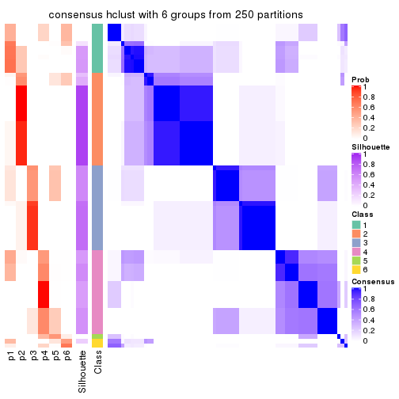
Heatmaps for the membership of samples in all partitions to see how consistent they are:
membership_heatmap(res, k = 2)
membership_heatmap(res, k = 3)
membership_heatmap(res, k = 4)
membership_heatmap(res, k = 5)
membership_heatmap(res, k = 6)
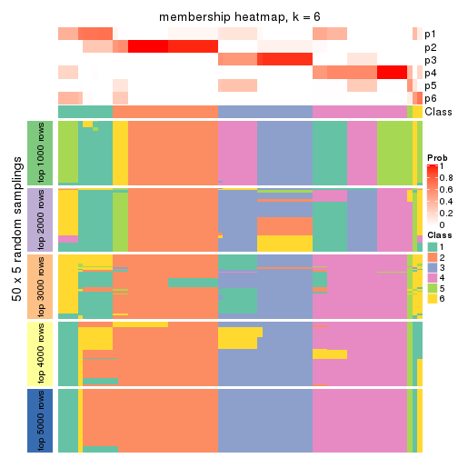
As soon as we have had the classes for columns, we can look for signatures which are significantly different between classes which can be candidate marks for certain classes. Following are the heatmaps for signatures.
Signature heatmaps where rows are scaled:
get_signatures(res, k = 2)

get_signatures(res, k = 3)
get_signatures(res, k = 4)
get_signatures(res, k = 5)
get_signatures(res, k = 6)
Signature heatmaps where rows are not scaled:
get_signatures(res, k = 2, scale_rows = FALSE)

get_signatures(res, k = 3, scale_rows = FALSE)
get_signatures(res, k = 4, scale_rows = FALSE)
get_signatures(res, k = 5, scale_rows = FALSE)
get_signatures(res, k = 6, scale_rows = FALSE)
Compare the overlap of signatures from different k:
compare_signatures(res)
get_signature() returns a data frame invisibly. TO get the list of signatures, the function
call should be assigned to a variable explicitly. In following code, if plot argument is set
to FALSE, no heatmap is plotted while only the differential analysis is performed.
# code only for demonstration
tb = get_signature(res, k = ..., plot = FALSE)
An example of the output of tb is:
#> which_row fdr mean_1 mean_2 scaled_mean_1 scaled_mean_2 km
#> 1 38 0.042760348 8.373488 9.131774 -0.5533452 0.5164555 1
#> 2 40 0.018707592 7.106213 8.469186 -0.6173731 0.5762149 1
#> 3 55 0.019134737 10.221463 11.207825 -0.6159697 0.5749050 1
#> 4 59 0.006059896 5.921854 7.869574 -0.6899429 0.6439467 1
#> 5 60 0.018055526 8.928898 10.211722 -0.6204761 0.5791110 1
#> 6 98 0.009384629 15.714769 14.887706 0.6635654 -0.6193277 2
...
The columns in tb are:
which_row: row indices corresponding to the input matrix.fdr: FDR for the differential test. mean_x: The mean value in group x.scaled_mean_x: The mean value in group x after rows are scaled.km: Row groups if k-means clustering is applied to rows.UMAP plot which shows how samples are separated.
dimension_reduction(res, k = 2, method = "UMAP")
dimension_reduction(res, k = 3, method = "UMAP")
dimension_reduction(res, k = 4, method = "UMAP")
dimension_reduction(res, k = 5, method = "UMAP")
dimension_reduction(res, k = 6, method = "UMAP")
Following heatmap shows how subgroups are split when increasing k:
collect_classes(res)
If matrix rows can be associated to genes, consider to use functional_enrichment(res,
...) to perform function enrichment for the signature genes. See this vignette for more detailed explanations.
The object with results only for a single top-value method and a single partition method can be extracted as:
res = res_list["MAD", "kmeans"]
# you can also extract it by
# res = res_list["MAD:kmeans"]
A summary of res and all the functions that can be applied to it:
res
#> A 'ConsensusPartition' object with k = 2, 3, 4, 5, 6.
#> On a matrix with 12731 rows and 73 columns.
#> Top rows (1000, 2000, 3000, 4000, 5000) are extracted by 'MAD' method.
#> Subgroups are detected by 'kmeans' method.
#> Performed in total 1250 partitions by row resampling.
#> Best k for subgroups seems to be 6.
#>
#> Following methods can be applied to this 'ConsensusPartition' object:
#> [1] "cola_report" "collect_classes" "collect_plots"
#> [4] "collect_stats" "colnames" "compare_signatures"
#> [7] "consensus_heatmap" "dimension_reduction" "functional_enrichment"
#> [10] "get_anno_col" "get_anno" "get_classes"
#> [13] "get_consensus" "get_matrix" "get_membership"
#> [16] "get_param" "get_signatures" "get_stats"
#> [19] "is_best_k" "is_stable_k" "membership_heatmap"
#> [22] "ncol" "nrow" "plot_ecdf"
#> [25] "rownames" "select_partition_number" "show"
#> [28] "suggest_best_k" "test_to_known_factors"
collect_plots() function collects all the plots made from res for all k (number of partitions)
into one single page to provide an easy and fast comparison between different k.
collect_plots(res)
The plots are:
k and the heatmap of
predicted classes for each k.k.k.k.All the plots in panels can be made by individual functions and they are plotted later in this section.
select_partition_number() produces several plots showing different
statistics for choosing “optimized” k. There are following statistics:
k;k, the area increased is defined as \(A_k - A_{k-1}\).The detailed explanations of these statistics can be found in the cola vignette.
Generally speaking, lower PAC score, higher mean silhouette score or higher
concordance corresponds to better partition. Rand index and Jaccard index
measure how similar the current partition is compared to partition with k-1.
If they are too similar, we won't accept k is better than k-1.
select_partition_number(res)
The numeric values for all these statistics can be obtained by get_stats().
get_stats(res)
#> k 1-PAC mean_silhouette concordance area_increased Rand Jaccard
#> 2 2 0.349 0.684 0.804 0.4832 0.501 0.501
#> 3 3 0.497 0.442 0.699 0.3667 0.796 0.613
#> 4 4 0.574 0.629 0.729 0.1191 0.781 0.461
#> 5 5 0.636 0.440 0.583 0.0652 0.830 0.480
#> 6 6 0.692 0.780 0.757 0.0457 0.848 0.457
suggest_best_k() suggests the best \(k\) based on these statistics. The rules are as follows:
suggest_best_k(res)
#> [1] 6
Following shows the table of the partitions (You need to click the show/hide
code output link to see it). The membership matrix (columns with name p*)
is inferred by
clue::cl_consensus()
function with the SE method. Basically the value in the membership matrix
represents the probability to belong to a certain group. The finall class
label for an item is determined with the group with highest probability it
belongs to.
In get_classes() function, the entropy is calculated from the membership
matrix and the silhouette score is calculated from the consensus matrix.
cbind(get_classes(res, k = 2), get_membership(res, k = 2))
#> class entropy silhouette p1 p2
#> SRR2144343 2 0.4022 0.7238 0.080 0.920
#> SRR2144345 2 0.3114 0.7622 0.056 0.944
#> SRR2144344 2 0.9552 0.6333 0.376 0.624
#> SRR2144342 1 0.9833 0.6837 0.576 0.424
#> SRR2144341 2 0.3114 0.7622 0.056 0.944
#> SRR2144340 2 0.2778 0.7042 0.048 0.952
#> SRR2144339 2 0.3114 0.7622 0.056 0.944
#> SRR2144336 2 0.9552 0.6333 0.376 0.624
#> SRR2144338 2 0.0000 0.7438 0.000 1.000
#> SRR2144337 2 0.9552 0.6333 0.376 0.624
#> SRR2144335 2 0.9552 0.6333 0.376 0.624
#> SRR2144332 2 0.3114 0.7622 0.056 0.944
#> SRR2144334 2 0.0000 0.7438 0.000 1.000
#> SRR2144333 2 0.9552 0.6333 0.376 0.624
#> SRR2144331 2 0.0000 0.7438 0.000 1.000
#> SRR2144330 2 0.9552 0.6333 0.376 0.624
#> SRR2144328 2 0.0000 0.7438 0.000 1.000
#> SRR2144329 2 0.3114 0.7622 0.056 0.944
#> SRR2144327 2 0.0938 0.7494 0.012 0.988
#> SRR2144326 2 0.9393 0.6391 0.356 0.644
#> SRR2144325 2 0.3114 0.7622 0.056 0.944
#> SRR2144323 2 0.3114 0.7622 0.056 0.944
#> SRR2144324 2 0.9552 0.6333 0.376 0.624
#> SRR2144321 2 0.3114 0.7622 0.056 0.944
#> SRR2144322 2 0.0000 0.7438 0.000 1.000
#> SRR2144320 2 0.9552 0.6333 0.376 0.624
#> SRR2144319 2 0.3114 0.7622 0.056 0.944
#> SRR2144316 2 0.0000 0.7438 0.000 1.000
#> SRR2144317 2 0.9552 0.6333 0.376 0.624
#> SRR2144318 2 0.0000 0.7438 0.000 1.000
#> SRR2144315 2 0.9963 0.5209 0.464 0.536
#> SRR2144314 1 0.9815 0.6850 0.580 0.420
#> SRR2144313 1 0.9460 0.7267 0.636 0.364
#> SRR2144312 1 0.0938 0.6731 0.988 0.012
#> SRR2144311 1 0.9427 0.7423 0.640 0.360
#> SRR2144308 1 0.0938 0.6731 0.988 0.012
#> SRR2144309 1 0.0938 0.6731 0.988 0.012
#> SRR2144310 1 0.9833 0.6837 0.576 0.424
#> SRR2144307 1 0.9635 0.7015 0.612 0.388
#> SRR2144304 1 0.9635 0.7015 0.612 0.388
#> SRR2144306 2 0.9686 -0.3716 0.396 0.604
#> SRR2144303 1 0.9635 0.7176 0.612 0.388
#> SRR2144305 1 0.0938 0.6731 0.988 0.012
#> SRR2144302 1 0.0938 0.6731 0.988 0.012
#> SRR2144301 1 0.8661 0.7486 0.712 0.288
#> SRR2144300 1 0.9087 0.7529 0.676 0.324
#> SRR2144299 1 0.9087 0.7529 0.676 0.324
#> SRR2144298 1 0.9393 0.7427 0.644 0.356
#> SRR2144297 1 0.2778 0.6576 0.952 0.048
#> SRR2144296 1 0.8081 0.7482 0.752 0.248
#> SRR2144295 1 0.2778 0.6576 0.952 0.048
#> SRR2144293 1 0.2778 0.6576 0.952 0.048
#> SRR2144294 2 0.8861 0.0464 0.304 0.696
#> SRR2144291 1 0.9686 0.7297 0.604 0.396
#> SRR2144292 1 0.2778 0.6576 0.952 0.048
#> SRR2144289 1 0.8661 0.7486 0.712 0.288
#> SRR2144290 1 0.8081 0.7482 0.752 0.248
#> SRR2144287 1 0.9580 0.7387 0.620 0.380
#> SRR2144288 1 0.2778 0.6576 0.952 0.048
#> SRR2144286 1 0.8081 0.7482 0.752 0.248
#> SRR2144285 1 0.2778 0.6576 0.952 0.048
#> SRR2144284 1 0.9427 0.7450 0.640 0.360
#> SRR2144282 1 0.0938 0.6731 0.988 0.012
#> SRR2144283 1 0.9248 0.7452 0.660 0.340
#> SRR2144281 1 0.9358 0.7412 0.648 0.352
#> SRR2144279 1 0.9087 0.7529 0.676 0.324
#> SRR2144280 1 0.9087 0.7529 0.676 0.324
#> SRR2144278 1 0.9427 0.7423 0.640 0.360
#> SRR2144277 1 0.9427 0.7423 0.640 0.360
#> SRR2144276 1 0.0938 0.6731 0.988 0.012
#> SRR2144274 1 0.9427 0.7423 0.640 0.360
#> SRR2144275 1 0.0000 0.6707 1.000 0.000
#> SRR2144273 1 0.8081 0.7482 0.752 0.248
cbind(get_classes(res, k = 3), get_membership(res, k = 3))
#> class entropy silhouette p1 p2 p3
#> SRR2144343 2 0.690 0.774 0.024 0.612 0.364
#> SRR2144345 2 0.699 0.775 0.028 0.612 0.360
#> SRR2144344 2 0.116 0.637 0.028 0.972 0.000
#> SRR2144342 3 0.599 0.210 0.368 0.000 0.632
#> SRR2144341 2 0.699 0.775 0.028 0.612 0.360
#> SRR2144340 3 0.572 -0.220 0.016 0.240 0.744
#> SRR2144339 2 0.699 0.775 0.028 0.612 0.360
#> SRR2144336 2 0.116 0.637 0.028 0.972 0.000
#> SRR2144338 2 0.748 0.748 0.040 0.556 0.404
#> SRR2144337 2 0.116 0.637 0.028 0.972 0.000
#> SRR2144335 2 0.116 0.637 0.028 0.972 0.000
#> SRR2144332 2 0.699 0.775 0.028 0.612 0.360
#> SRR2144334 2 0.745 0.752 0.040 0.564 0.396
#> SRR2144333 2 0.116 0.637 0.028 0.972 0.000
#> SRR2144331 2 0.728 0.754 0.032 0.564 0.404
#> SRR2144330 2 0.116 0.637 0.028 0.972 0.000
#> SRR2144328 2 0.745 0.752 0.040 0.564 0.396
#> SRR2144329 2 0.699 0.775 0.028 0.612 0.360
#> SRR2144327 2 0.685 0.758 0.016 0.568 0.416
#> SRR2144326 2 0.103 0.638 0.024 0.976 0.000
#> SRR2144325 2 0.699 0.775 0.028 0.612 0.360
#> SRR2144323 2 0.699 0.775 0.028 0.612 0.360
#> SRR2144324 2 0.116 0.637 0.028 0.972 0.000
#> SRR2144321 2 0.699 0.775 0.028 0.612 0.360
#> SRR2144322 2 0.748 0.748 0.040 0.556 0.404
#> SRR2144320 2 0.116 0.637 0.028 0.972 0.000
#> SRR2144319 2 0.699 0.775 0.028 0.612 0.360
#> SRR2144316 2 0.748 0.748 0.040 0.556 0.404
#> SRR2144317 2 0.116 0.637 0.028 0.972 0.000
#> SRR2144318 2 0.748 0.748 0.040 0.556 0.404
#> SRR2144315 2 0.556 0.393 0.064 0.808 0.128
#> SRR2144314 1 0.455 0.438 0.840 0.020 0.140
#> SRR2144313 3 0.629 0.153 0.468 0.000 0.532
#> SRR2144312 3 0.917 0.534 0.180 0.296 0.524
#> SRR2144311 1 0.683 -0.153 0.496 0.012 0.492
#> SRR2144308 3 0.874 0.423 0.112 0.392 0.496
#> SRR2144309 3 0.917 0.534 0.180 0.296 0.524
#> SRR2144310 3 0.599 0.210 0.368 0.000 0.632
#> SRR2144307 3 0.624 0.195 0.440 0.000 0.560
#> SRR2144304 3 0.624 0.195 0.440 0.000 0.560
#> SRR2144306 1 0.623 0.369 0.740 0.040 0.220
#> SRR2144303 3 0.617 0.169 0.412 0.000 0.588
#> SRR2144305 3 0.917 0.534 0.180 0.296 0.524
#> SRR2144302 3 0.917 0.534 0.180 0.296 0.524
#> SRR2144301 1 0.129 0.510 0.968 0.000 0.032
#> SRR2144300 1 0.682 -0.173 0.504 0.012 0.484
#> SRR2144299 1 0.682 -0.169 0.508 0.012 0.480
#> SRR2144298 1 0.682 -0.149 0.500 0.012 0.488
#> SRR2144297 1 0.859 0.222 0.572 0.300 0.128
#> SRR2144296 1 0.158 0.509 0.964 0.028 0.008
#> SRR2144295 1 0.859 0.222 0.572 0.300 0.128
#> SRR2144293 1 0.861 0.220 0.568 0.304 0.128
#> SRR2144294 1 0.535 0.414 0.796 0.028 0.176
#> SRR2144291 1 0.236 0.496 0.928 0.000 0.072
#> SRR2144292 1 0.861 0.220 0.568 0.304 0.128
#> SRR2144289 1 0.129 0.510 0.968 0.000 0.032
#> SRR2144290 1 0.158 0.509 0.964 0.028 0.008
#> SRR2144287 1 0.141 0.509 0.964 0.000 0.036
#> SRR2144288 1 0.859 0.222 0.572 0.300 0.128
#> SRR2144286 1 0.158 0.509 0.964 0.028 0.008
#> SRR2144285 1 0.877 0.199 0.536 0.336 0.128
#> SRR2144284 1 0.245 0.491 0.924 0.000 0.076
#> SRR2144282 3 0.917 0.534 0.180 0.296 0.524
#> SRR2144283 1 0.127 0.508 0.972 0.004 0.024
#> SRR2144281 1 0.140 0.508 0.968 0.004 0.028
#> SRR2144279 1 0.682 -0.173 0.504 0.012 0.484
#> SRR2144280 1 0.682 -0.178 0.500 0.012 0.488
#> SRR2144278 1 0.682 -0.149 0.500 0.012 0.488
#> SRR2144277 1 0.682 -0.149 0.500 0.012 0.488
#> SRR2144276 3 0.917 0.534 0.180 0.296 0.524
#> SRR2144274 1 0.682 -0.149 0.500 0.012 0.488
#> SRR2144275 3 0.917 0.534 0.180 0.296 0.524
#> SRR2144273 1 0.158 0.509 0.964 0.028 0.008
cbind(get_classes(res, k = 4), get_membership(res, k = 4))
#> class entropy silhouette p1 p2 p3 p4
#> SRR2144343 2 0.322 0.777 0.020 0.868 0.112 0.000
#> SRR2144345 2 0.253 0.790 0.000 0.888 0.112 0.000
#> SRR2144344 3 0.416 0.740 0.000 0.264 0.736 0.000
#> SRR2144342 1 0.305 0.716 0.872 0.012 0.000 0.116
#> SRR2144341 2 0.253 0.790 0.000 0.888 0.112 0.000
#> SRR2144340 2 0.599 0.357 0.428 0.536 0.004 0.032
#> SRR2144339 2 0.253 0.790 0.000 0.888 0.112 0.000
#> SRR2144336 3 0.416 0.740 0.000 0.264 0.736 0.000
#> SRR2144338 2 0.488 0.765 0.108 0.808 0.032 0.052
#> SRR2144337 3 0.401 0.730 0.000 0.244 0.756 0.000
#> SRR2144335 3 0.416 0.740 0.000 0.264 0.736 0.000
#> SRR2144332 2 0.253 0.790 0.000 0.888 0.112 0.000
#> SRR2144334 2 0.488 0.765 0.108 0.808 0.032 0.052
#> SRR2144333 3 0.416 0.740 0.000 0.264 0.736 0.000
#> SRR2144331 2 0.476 0.768 0.100 0.816 0.032 0.052
#> SRR2144330 3 0.416 0.740 0.000 0.264 0.736 0.000
#> SRR2144328 2 0.476 0.768 0.100 0.816 0.032 0.052
#> SRR2144329 2 0.253 0.790 0.000 0.888 0.112 0.000
#> SRR2144327 2 0.464 0.769 0.092 0.824 0.032 0.052
#> SRR2144326 3 0.416 0.740 0.000 0.264 0.736 0.000
#> SRR2144325 2 0.253 0.790 0.000 0.888 0.112 0.000
#> SRR2144323 2 0.253 0.790 0.000 0.888 0.112 0.000
#> SRR2144324 3 0.416 0.740 0.000 0.264 0.736 0.000
#> SRR2144321 2 0.253 0.790 0.000 0.888 0.112 0.000
#> SRR2144322 2 0.488 0.765 0.108 0.808 0.032 0.052
#> SRR2144320 3 0.416 0.740 0.000 0.264 0.736 0.000
#> SRR2144319 2 0.253 0.790 0.000 0.888 0.112 0.000
#> SRR2144316 2 0.488 0.765 0.108 0.808 0.032 0.052
#> SRR2144317 3 0.416 0.740 0.000 0.264 0.736 0.000
#> SRR2144318 2 0.488 0.765 0.108 0.808 0.032 0.052
#> SRR2144315 3 0.230 0.594 0.000 0.048 0.924 0.028
#> SRR2144314 4 0.683 0.451 0.076 0.260 0.032 0.632
#> SRR2144313 1 0.496 0.726 0.748 0.048 0.000 0.204
#> SRR2144312 1 0.640 0.187 0.468 0.000 0.468 0.064
#> SRR2144311 1 0.340 0.731 0.832 0.000 0.004 0.164
#> SRR2144308 3 0.507 0.289 0.236 0.000 0.724 0.040
#> SRR2144309 3 0.640 -0.283 0.468 0.000 0.468 0.064
#> SRR2144310 1 0.458 0.588 0.808 0.076 0.004 0.112
#> SRR2144307 1 0.507 0.724 0.744 0.056 0.000 0.200
#> SRR2144304 1 0.507 0.724 0.744 0.056 0.000 0.200
#> SRR2144306 4 0.812 0.285 0.168 0.296 0.036 0.500
#> SRR2144303 1 0.348 0.724 0.844 0.008 0.004 0.144
#> SRR2144305 1 0.628 0.193 0.476 0.000 0.468 0.056
#> SRR2144302 1 0.640 0.192 0.472 0.000 0.464 0.064
#> SRR2144301 4 0.363 0.693 0.088 0.016 0.028 0.868
#> SRR2144300 1 0.476 0.729 0.748 0.032 0.000 0.220
#> SRR2144299 1 0.515 0.726 0.736 0.028 0.012 0.224
#> SRR2144298 1 0.384 0.726 0.816 0.000 0.016 0.168
#> SRR2144297 4 0.632 0.535 0.072 0.000 0.356 0.572
#> SRR2144296 4 0.276 0.702 0.048 0.012 0.028 0.912
#> SRR2144295 4 0.632 0.535 0.072 0.000 0.356 0.572
#> SRR2144293 4 0.637 0.514 0.072 0.000 0.372 0.556
#> SRR2144294 4 0.652 0.579 0.136 0.128 0.036 0.700
#> SRR2144291 4 0.423 0.679 0.088 0.036 0.032 0.844
#> SRR2144292 4 0.634 0.531 0.072 0.000 0.360 0.568
#> SRR2144289 4 0.330 0.695 0.092 0.004 0.028 0.876
#> SRR2144290 4 0.276 0.702 0.048 0.012 0.028 0.912
#> SRR2144287 4 0.384 0.690 0.088 0.020 0.032 0.860
#> SRR2144288 4 0.632 0.535 0.072 0.000 0.356 0.572
#> SRR2144286 4 0.276 0.702 0.048 0.012 0.028 0.912
#> SRR2144285 4 0.641 0.499 0.072 0.000 0.384 0.544
#> SRR2144284 4 0.442 0.669 0.116 0.016 0.044 0.824
#> SRR2144282 1 0.640 0.187 0.468 0.000 0.468 0.064
#> SRR2144283 4 0.260 0.698 0.056 0.012 0.016 0.916
#> SRR2144281 4 0.302 0.684 0.072 0.020 0.012 0.896
#> SRR2144279 1 0.476 0.729 0.748 0.032 0.000 0.220
#> SRR2144280 1 0.476 0.729 0.748 0.032 0.000 0.220
#> SRR2144278 1 0.340 0.731 0.832 0.000 0.004 0.164
#> SRR2144277 1 0.340 0.731 0.832 0.000 0.004 0.164
#> SRR2144276 1 0.640 0.187 0.468 0.000 0.468 0.064
#> SRR2144274 1 0.340 0.731 0.832 0.000 0.004 0.164
#> SRR2144275 3 0.639 -0.271 0.456 0.000 0.480 0.064
#> SRR2144273 4 0.276 0.702 0.048 0.012 0.028 0.912
cbind(get_classes(res, k = 5), get_membership(res, k = 5))
#> class entropy silhouette p1 p2 p3 p4 p5
#> SRR2144343 2 0.2804 0.613 0.068 0.884 0.044 0.004 0.000
#> SRR2144345 2 0.0000 0.708 0.000 1.000 0.000 0.000 0.000
#> SRR2144344 3 0.5957 0.854 0.000 0.280 0.572 0.000 0.148
#> SRR2144342 1 0.8141 0.280 0.348 0.000 0.320 0.112 0.220
#> SRR2144341 2 0.0000 0.708 0.000 1.000 0.000 0.000 0.000
#> SRR2144340 4 0.8774 -0.225 0.208 0.244 0.236 0.304 0.008
#> SRR2144339 2 0.0000 0.708 0.000 1.000 0.000 0.000 0.000
#> SRR2144336 3 0.5957 0.854 0.000 0.280 0.572 0.000 0.148
#> SRR2144338 2 0.5467 0.664 0.000 0.524 0.064 0.412 0.000
#> SRR2144337 3 0.6012 0.839 0.000 0.264 0.572 0.000 0.164
#> SRR2144335 3 0.5957 0.854 0.000 0.280 0.572 0.000 0.148
#> SRR2144332 2 0.0000 0.708 0.000 1.000 0.000 0.000 0.000
#> SRR2144334 2 0.5467 0.664 0.000 0.524 0.064 0.412 0.000
#> SRR2144333 3 0.5957 0.854 0.000 0.280 0.572 0.000 0.148
#> SRR2144331 2 0.5467 0.664 0.000 0.524 0.064 0.412 0.000
#> SRR2144330 3 0.5957 0.854 0.000 0.280 0.572 0.000 0.148
#> SRR2144328 2 0.5467 0.664 0.000 0.524 0.064 0.412 0.000
#> SRR2144329 2 0.0000 0.708 0.000 1.000 0.000 0.000 0.000
#> SRR2144327 2 0.5467 0.664 0.000 0.524 0.064 0.412 0.000
#> SRR2144326 3 0.5957 0.854 0.000 0.280 0.572 0.000 0.148
#> SRR2144325 2 0.0000 0.708 0.000 1.000 0.000 0.000 0.000
#> SRR2144323 2 0.0000 0.708 0.000 1.000 0.000 0.000 0.000
#> SRR2144324 3 0.5957 0.854 0.000 0.280 0.572 0.000 0.148
#> SRR2144321 2 0.0000 0.708 0.000 1.000 0.000 0.000 0.000
#> SRR2144322 2 0.5467 0.664 0.000 0.524 0.064 0.412 0.000
#> SRR2144320 3 0.5957 0.854 0.000 0.280 0.572 0.000 0.148
#> SRR2144319 2 0.0000 0.708 0.000 1.000 0.000 0.000 0.000
#> SRR2144316 2 0.5467 0.664 0.000 0.524 0.064 0.412 0.000
#> SRR2144317 3 0.5957 0.854 0.000 0.280 0.572 0.000 0.148
#> SRR2144318 2 0.5467 0.664 0.000 0.524 0.064 0.412 0.000
#> SRR2144315 3 0.5589 0.446 0.000 0.080 0.548 0.000 0.372
#> SRR2144314 1 0.7196 -0.337 0.436 0.264 0.016 0.280 0.004
#> SRR2144313 1 0.6734 0.303 0.504 0.000 0.224 0.012 0.260
#> SRR2144312 5 0.0000 0.941 0.000 0.000 0.000 0.000 1.000
#> SRR2144311 1 0.7854 0.309 0.380 0.000 0.300 0.072 0.248
#> SRR2144308 5 0.3366 0.547 0.000 0.000 0.232 0.000 0.768
#> SRR2144309 5 0.0000 0.941 0.000 0.000 0.000 0.000 1.000
#> SRR2144310 3 0.8182 -0.405 0.316 0.000 0.324 0.252 0.108
#> SRR2144307 1 0.6827 0.299 0.484 0.000 0.244 0.012 0.260
#> SRR2144304 1 0.6827 0.299 0.484 0.000 0.244 0.012 0.260
#> SRR2144306 4 0.3004 0.279 0.020 0.108 0.008 0.864 0.000
#> SRR2144303 1 0.7839 0.304 0.404 0.000 0.296 0.080 0.220
#> SRR2144305 5 0.0290 0.932 0.008 0.000 0.000 0.000 0.992
#> SRR2144302 5 0.0000 0.941 0.000 0.000 0.000 0.000 1.000
#> SRR2144301 4 0.5261 0.549 0.380 0.000 0.044 0.572 0.004
#> SRR2144300 1 0.6388 0.306 0.508 0.000 0.208 0.000 0.284
#> SRR2144299 1 0.6433 0.297 0.504 0.000 0.228 0.000 0.268
#> SRR2144298 1 0.7874 0.300 0.352 0.000 0.332 0.072 0.244
#> SRR2144297 1 0.7652 -0.120 0.360 0.000 0.048 0.268 0.324
#> SRR2144296 1 0.4594 -0.354 0.620 0.000 0.004 0.364 0.012
#> SRR2144295 1 0.7652 -0.120 0.360 0.000 0.048 0.268 0.324
#> SRR2144293 1 0.7647 -0.118 0.360 0.000 0.048 0.264 0.328
#> SRR2144294 4 0.0771 0.416 0.020 0.000 0.004 0.976 0.000
#> SRR2144291 4 0.4940 0.549 0.392 0.000 0.032 0.576 0.000
#> SRR2144292 1 0.7652 -0.120 0.360 0.000 0.048 0.268 0.324
#> SRR2144289 4 0.5261 0.549 0.380 0.000 0.044 0.572 0.004
#> SRR2144290 1 0.4594 -0.354 0.620 0.000 0.004 0.364 0.012
#> SRR2144287 4 0.5176 0.550 0.380 0.000 0.048 0.572 0.000
#> SRR2144288 1 0.7652 -0.120 0.360 0.000 0.048 0.268 0.324
#> SRR2144286 1 0.4594 -0.354 0.620 0.000 0.004 0.364 0.012
#> SRR2144285 1 0.7651 -0.117 0.352 0.000 0.048 0.264 0.336
#> SRR2144284 4 0.6002 0.499 0.392 0.000 0.116 0.492 0.000
#> SRR2144282 5 0.0162 0.940 0.004 0.000 0.000 0.000 0.996
#> SRR2144283 1 0.4480 -0.389 0.592 0.000 0.004 0.400 0.004
#> SRR2144281 1 0.4460 -0.387 0.600 0.000 0.004 0.392 0.004
#> SRR2144279 1 0.6366 0.306 0.512 0.000 0.204 0.000 0.284
#> SRR2144280 1 0.6366 0.306 0.512 0.000 0.204 0.000 0.284
#> SRR2144278 1 0.7854 0.309 0.380 0.000 0.300 0.072 0.248
#> SRR2144277 1 0.7854 0.309 0.380 0.000 0.300 0.072 0.248
#> SRR2144276 5 0.0162 0.940 0.004 0.000 0.000 0.000 0.996
#> SRR2144274 1 0.7854 0.309 0.380 0.000 0.300 0.072 0.248
#> SRR2144275 5 0.0671 0.928 0.004 0.000 0.016 0.000 0.980
#> SRR2144273 1 0.4723 -0.356 0.612 0.000 0.008 0.368 0.012
cbind(get_classes(res, k = 6), get_membership(res, k = 6))
#> class entropy silhouette p1 p2 p3 p4 p5 p6
#> SRR2144343 2 0.3663 0.670 0.152 0.796 0.020 0.000 0.000 0.032
#> SRR2144345 2 0.0000 0.964 0.000 1.000 0.000 0.000 0.000 0.000
#> SRR2144344 3 0.2738 0.976 0.000 0.176 0.820 0.000 0.004 0.000
#> SRR2144342 1 0.3989 0.767 0.788 0.000 0.052 0.000 0.032 0.128
#> SRR2144341 2 0.0000 0.964 0.000 1.000 0.000 0.000 0.000 0.000
#> SRR2144340 1 0.5613 0.354 0.556 0.084 0.016 0.000 0.008 0.336
#> SRR2144339 2 0.0000 0.964 0.000 1.000 0.000 0.000 0.000 0.000
#> SRR2144336 3 0.2738 0.976 0.000 0.176 0.820 0.000 0.004 0.000
#> SRR2144338 6 0.4775 0.842 0.000 0.348 0.064 0.000 0.000 0.588
#> SRR2144337 3 0.2879 0.976 0.000 0.176 0.816 0.000 0.004 0.004
#> SRR2144335 3 0.2738 0.976 0.000 0.176 0.820 0.000 0.004 0.000
#> SRR2144332 2 0.0000 0.964 0.000 1.000 0.000 0.000 0.000 0.000
#> SRR2144334 6 0.4775 0.842 0.000 0.348 0.064 0.000 0.000 0.588
#> SRR2144333 3 0.2738 0.976 0.000 0.176 0.820 0.000 0.000 0.004
#> SRR2144331 6 0.4775 0.842 0.000 0.348 0.064 0.000 0.000 0.588
#> SRR2144330 3 0.2738 0.976 0.000 0.176 0.820 0.000 0.000 0.004
#> SRR2144328 6 0.4775 0.842 0.000 0.348 0.064 0.000 0.000 0.588
#> SRR2144329 2 0.0000 0.964 0.000 1.000 0.000 0.000 0.000 0.000
#> SRR2144327 6 0.4775 0.842 0.000 0.348 0.064 0.000 0.000 0.588
#> SRR2144326 3 0.2738 0.976 0.000 0.176 0.820 0.000 0.000 0.004
#> SRR2144325 2 0.0000 0.964 0.000 1.000 0.000 0.000 0.000 0.000
#> SRR2144323 2 0.0000 0.964 0.000 1.000 0.000 0.000 0.000 0.000
#> SRR2144324 3 0.2738 0.976 0.000 0.176 0.820 0.000 0.000 0.004
#> SRR2144321 2 0.0000 0.964 0.000 1.000 0.000 0.000 0.000 0.000
#> SRR2144322 6 0.4775 0.842 0.000 0.348 0.064 0.000 0.000 0.588
#> SRR2144320 3 0.2738 0.976 0.000 0.176 0.820 0.000 0.000 0.004
#> SRR2144319 2 0.0000 0.964 0.000 1.000 0.000 0.000 0.000 0.000
#> SRR2144316 6 0.4775 0.842 0.000 0.348 0.064 0.000 0.000 0.588
#> SRR2144317 3 0.2738 0.976 0.000 0.176 0.820 0.000 0.000 0.004
#> SRR2144318 6 0.4775 0.842 0.000 0.348 0.064 0.000 0.000 0.588
#> SRR2144315 3 0.3820 0.760 0.000 0.064 0.784 0.000 0.144 0.008
#> SRR2144314 4 0.6353 0.391 0.108 0.228 0.016 0.592 0.008 0.048
#> SRR2144313 1 0.3305 0.773 0.844 0.000 0.008 0.076 0.064 0.008
#> SRR2144312 5 0.3405 0.965 0.076 0.000 0.112 0.000 0.812 0.000
#> SRR2144311 1 0.4615 0.765 0.768 0.000 0.060 0.012 0.068 0.092
#> SRR2144308 5 0.3215 0.789 0.004 0.000 0.240 0.000 0.756 0.000
#> SRR2144309 5 0.3546 0.965 0.076 0.000 0.112 0.000 0.808 0.004
#> SRR2144310 1 0.4238 0.734 0.736 0.000 0.048 0.000 0.016 0.200
#> SRR2144307 1 0.3803 0.764 0.828 0.000 0.020 0.040 0.072 0.040
#> SRR2144304 1 0.3734 0.764 0.832 0.000 0.020 0.036 0.072 0.040
#> SRR2144306 6 0.5372 0.444 0.008 0.072 0.028 0.156 0.028 0.708
#> SRR2144303 1 0.2508 0.777 0.884 0.000 0.016 0.000 0.016 0.084
#> SRR2144305 5 0.3546 0.965 0.076 0.000 0.112 0.000 0.808 0.004
#> SRR2144302 5 0.3560 0.959 0.084 0.000 0.104 0.000 0.808 0.004
#> SRR2144301 4 0.5704 0.648 0.044 0.000 0.044 0.676 0.068 0.168
#> SRR2144300 1 0.3477 0.772 0.820 0.000 0.008 0.080 0.092 0.000
#> SRR2144299 1 0.6268 0.679 0.632 0.000 0.048 0.148 0.124 0.048
#> SRR2144298 1 0.5786 0.714 0.668 0.000 0.100 0.012 0.096 0.124
#> SRR2144297 4 0.5923 0.487 0.000 0.000 0.072 0.544 0.320 0.064
#> SRR2144296 4 0.0520 0.697 0.008 0.000 0.000 0.984 0.008 0.000
#> SRR2144295 4 0.5923 0.487 0.000 0.000 0.072 0.544 0.320 0.064
#> SRR2144293 4 0.5998 0.477 0.000 0.000 0.080 0.540 0.316 0.064
#> SRR2144294 6 0.4895 0.243 0.008 0.004 0.024 0.236 0.040 0.688
#> SRR2144291 4 0.5710 0.641 0.040 0.000 0.044 0.668 0.064 0.184
#> SRR2144292 4 0.5923 0.487 0.000 0.000 0.072 0.544 0.320 0.064
#> SRR2144289 4 0.5704 0.648 0.044 0.000 0.044 0.676 0.068 0.168
#> SRR2144290 4 0.0520 0.697 0.008 0.000 0.000 0.984 0.008 0.000
#> SRR2144287 4 0.5735 0.646 0.044 0.000 0.044 0.672 0.068 0.172
#> SRR2144288 4 0.5923 0.487 0.000 0.000 0.072 0.544 0.320 0.064
#> SRR2144286 4 0.0622 0.697 0.008 0.000 0.000 0.980 0.012 0.000
#> SRR2144285 4 0.6040 0.471 0.000 0.000 0.084 0.536 0.316 0.064
#> SRR2144284 4 0.7962 0.421 0.104 0.000 0.108 0.428 0.108 0.252
#> SRR2144282 5 0.3405 0.965 0.076 0.000 0.112 0.000 0.812 0.000
#> SRR2144283 4 0.2195 0.686 0.020 0.000 0.008 0.912 0.008 0.052
#> SRR2144281 4 0.2534 0.680 0.032 0.000 0.012 0.896 0.008 0.052
#> SRR2144279 1 0.3366 0.772 0.824 0.000 0.004 0.080 0.092 0.000
#> SRR2144280 1 0.3366 0.772 0.824 0.000 0.004 0.080 0.092 0.000
#> SRR2144278 1 0.4615 0.765 0.768 0.000 0.060 0.012 0.068 0.092
#> SRR2144277 1 0.4615 0.765 0.768 0.000 0.060 0.012 0.068 0.092
#> SRR2144276 5 0.3405 0.965 0.076 0.000 0.112 0.000 0.812 0.000
#> SRR2144274 1 0.4615 0.765 0.768 0.000 0.060 0.012 0.068 0.092
#> SRR2144275 5 0.3210 0.943 0.072 0.000 0.088 0.000 0.836 0.004
#> SRR2144273 4 0.0520 0.697 0.008 0.000 0.000 0.984 0.008 0.000
Heatmaps for the consensus matrix. It visualizes the probability of two samples to be in a same group.
consensus_heatmap(res, k = 2)
consensus_heatmap(res, k = 3)
consensus_heatmap(res, k = 4)
consensus_heatmap(res, k = 5)
consensus_heatmap(res, k = 6)
Heatmaps for the membership of samples in all partitions to see how consistent they are:
membership_heatmap(res, k = 2)
membership_heatmap(res, k = 3)
membership_heatmap(res, k = 4)
membership_heatmap(res, k = 5)

membership_heatmap(res, k = 6)
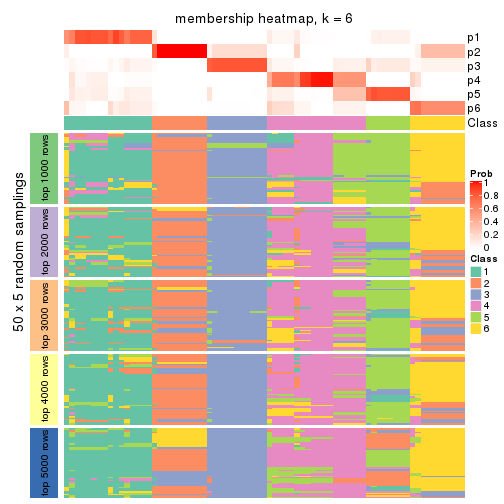
As soon as we have had the classes for columns, we can look for signatures which are significantly different between classes which can be candidate marks for certain classes. Following are the heatmaps for signatures.
Signature heatmaps where rows are scaled:
get_signatures(res, k = 2)
get_signatures(res, k = 3)
get_signatures(res, k = 4)
get_signatures(res, k = 5)

get_signatures(res, k = 6)
Signature heatmaps where rows are not scaled:
get_signatures(res, k = 2, scale_rows = FALSE)
get_signatures(res, k = 3, scale_rows = FALSE)
get_signatures(res, k = 4, scale_rows = FALSE)
get_signatures(res, k = 5, scale_rows = FALSE)
get_signatures(res, k = 6, scale_rows = FALSE)
Compare the overlap of signatures from different k:
compare_signatures(res)
get_signature() returns a data frame invisibly. TO get the list of signatures, the function
call should be assigned to a variable explicitly. In following code, if plot argument is set
to FALSE, no heatmap is plotted while only the differential analysis is performed.
# code only for demonstration
tb = get_signature(res, k = ..., plot = FALSE)
An example of the output of tb is:
#> which_row fdr mean_1 mean_2 scaled_mean_1 scaled_mean_2 km
#> 1 38 0.042760348 8.373488 9.131774 -0.5533452 0.5164555 1
#> 2 40 0.018707592 7.106213 8.469186 -0.6173731 0.5762149 1
#> 3 55 0.019134737 10.221463 11.207825 -0.6159697 0.5749050 1
#> 4 59 0.006059896 5.921854 7.869574 -0.6899429 0.6439467 1
#> 5 60 0.018055526 8.928898 10.211722 -0.6204761 0.5791110 1
#> 6 98 0.009384629 15.714769 14.887706 0.6635654 -0.6193277 2
...
The columns in tb are:
which_row: row indices corresponding to the input matrix.fdr: FDR for the differential test. mean_x: The mean value in group x.scaled_mean_x: The mean value in group x after rows are scaled.km: Row groups if k-means clustering is applied to rows.UMAP plot which shows how samples are separated.
dimension_reduction(res, k = 2, method = "UMAP")
dimension_reduction(res, k = 3, method = "UMAP")
dimension_reduction(res, k = 4, method = "UMAP")
dimension_reduction(res, k = 5, method = "UMAP")
dimension_reduction(res, k = 6, method = "UMAP")
Following heatmap shows how subgroups are split when increasing k:
collect_classes(res)
If matrix rows can be associated to genes, consider to use functional_enrichment(res,
...) to perform function enrichment for the signature genes. See this vignette for more detailed explanations.
The object with results only for a single top-value method and a single partition method can be extracted as:
res = res_list["MAD", "skmeans"]
# you can also extract it by
# res = res_list["MAD:skmeans"]
A summary of res and all the functions that can be applied to it:
res
#> A 'ConsensusPartition' object with k = 2, 3, 4, 5, 6.
#> On a matrix with 12731 rows and 73 columns.
#> Top rows (1000, 2000, 3000, 4000, 5000) are extracted by 'MAD' method.
#> Subgroups are detected by 'skmeans' method.
#> Performed in total 1250 partitions by row resampling.
#> Best k for subgroups seems to be 2.
#>
#> Following methods can be applied to this 'ConsensusPartition' object:
#> [1] "cola_report" "collect_classes" "collect_plots"
#> [4] "collect_stats" "colnames" "compare_signatures"
#> [7] "consensus_heatmap" "dimension_reduction" "functional_enrichment"
#> [10] "get_anno_col" "get_anno" "get_classes"
#> [13] "get_consensus" "get_matrix" "get_membership"
#> [16] "get_param" "get_signatures" "get_stats"
#> [19] "is_best_k" "is_stable_k" "membership_heatmap"
#> [22] "ncol" "nrow" "plot_ecdf"
#> [25] "rownames" "select_partition_number" "show"
#> [28] "suggest_best_k" "test_to_known_factors"
collect_plots() function collects all the plots made from res for all k (number of partitions)
into one single page to provide an easy and fast comparison between different k.
collect_plots(res)
The plots are:
k and the heatmap of
predicted classes for each k.k.k.k.All the plots in panels can be made by individual functions and they are plotted later in this section.
select_partition_number() produces several plots showing different
statistics for choosing “optimized” k. There are following statistics:
k;k, the area increased is defined as \(A_k - A_{k-1}\).The detailed explanations of these statistics can be found in the cola vignette.
Generally speaking, lower PAC score, higher mean silhouette score or higher
concordance corresponds to better partition. Rand index and Jaccard index
measure how similar the current partition is compared to partition with k-1.
If they are too similar, we won't accept k is better than k-1.
select_partition_number(res)
The numeric values for all these statistics can be obtained by get_stats().
get_stats(res)
#> k 1-PAC mean_silhouette concordance area_increased Rand Jaccard
#> 2 2 1.000 0.982 0.990 0.5030 0.498 0.498
#> 3 3 0.680 0.679 0.804 0.3313 0.778 0.577
#> 4 4 0.815 0.857 0.893 0.1152 0.882 0.663
#> 5 5 0.808 0.814 0.856 0.0683 0.939 0.765
#> 6 6 0.864 0.886 0.911 0.0463 0.927 0.675
suggest_best_k() suggests the best \(k\) based on these statistics. The rules are as follows:
suggest_best_k(res)
#> [1] 2
Following shows the table of the partitions (You need to click the show/hide
code output link to see it). The membership matrix (columns with name p*)
is inferred by
clue::cl_consensus()
function with the SE method. Basically the value in the membership matrix
represents the probability to belong to a certain group. The finall class
label for an item is determined with the group with highest probability it
belongs to.
In get_classes() function, the entropy is calculated from the membership
matrix and the silhouette score is calculated from the consensus matrix.
cbind(get_classes(res, k = 2), get_membership(res, k = 2))
#> class entropy silhouette p1 p2
#> SRR2144343 2 0.0000 0.992 0.000 1.000
#> SRR2144345 2 0.0000 0.992 0.000 1.000
#> SRR2144344 2 0.0672 0.989 0.008 0.992
#> SRR2144342 1 0.4815 0.890 0.896 0.104
#> SRR2144341 2 0.0000 0.992 0.000 1.000
#> SRR2144340 2 0.0000 0.992 0.000 1.000
#> SRR2144339 2 0.0000 0.992 0.000 1.000
#> SRR2144336 2 0.0672 0.989 0.008 0.992
#> SRR2144338 2 0.0000 0.992 0.000 1.000
#> SRR2144337 2 0.0672 0.989 0.008 0.992
#> SRR2144335 2 0.0672 0.989 0.008 0.992
#> SRR2144332 2 0.0000 0.992 0.000 1.000
#> SRR2144334 2 0.0000 0.992 0.000 1.000
#> SRR2144333 2 0.0672 0.989 0.008 0.992
#> SRR2144331 2 0.0000 0.992 0.000 1.000
#> SRR2144330 2 0.0672 0.989 0.008 0.992
#> SRR2144328 2 0.0000 0.992 0.000 1.000
#> SRR2144329 2 0.0000 0.992 0.000 1.000
#> SRR2144327 2 0.0000 0.992 0.000 1.000
#> SRR2144326 2 0.0672 0.989 0.008 0.992
#> SRR2144325 2 0.0000 0.992 0.000 1.000
#> SRR2144323 2 0.0000 0.992 0.000 1.000
#> SRR2144324 2 0.0672 0.989 0.008 0.992
#> SRR2144321 2 0.0000 0.992 0.000 1.000
#> SRR2144322 2 0.0000 0.992 0.000 1.000
#> SRR2144320 2 0.0672 0.989 0.008 0.992
#> SRR2144319 2 0.0000 0.992 0.000 1.000
#> SRR2144316 2 0.0000 0.992 0.000 1.000
#> SRR2144317 2 0.0672 0.989 0.008 0.992
#> SRR2144318 2 0.0000 0.992 0.000 1.000
#> SRR2144315 2 0.0672 0.989 0.008 0.992
#> SRR2144314 2 0.6712 0.785 0.176 0.824
#> SRR2144313 1 0.0672 0.987 0.992 0.008
#> SRR2144312 1 0.0000 0.989 1.000 0.000
#> SRR2144311 1 0.0672 0.987 0.992 0.008
#> SRR2144308 1 0.0000 0.989 1.000 0.000
#> SRR2144309 1 0.0000 0.989 1.000 0.000
#> SRR2144310 1 0.7602 0.728 0.780 0.220
#> SRR2144307 1 0.0672 0.987 0.992 0.008
#> SRR2144304 1 0.0672 0.987 0.992 0.008
#> SRR2144306 2 0.0000 0.992 0.000 1.000
#> SRR2144303 1 0.0672 0.987 0.992 0.008
#> SRR2144305 1 0.0000 0.989 1.000 0.000
#> SRR2144302 1 0.0000 0.989 1.000 0.000
#> SRR2144301 1 0.0000 0.989 1.000 0.000
#> SRR2144300 1 0.0672 0.987 0.992 0.008
#> SRR2144299 1 0.0672 0.987 0.992 0.008
#> SRR2144298 1 0.0672 0.987 0.992 0.008
#> SRR2144297 1 0.0000 0.989 1.000 0.000
#> SRR2144296 1 0.0000 0.989 1.000 0.000
#> SRR2144295 1 0.0000 0.989 1.000 0.000
#> SRR2144293 1 0.0000 0.989 1.000 0.000
#> SRR2144294 2 0.0000 0.992 0.000 1.000
#> SRR2144291 1 0.0672 0.987 0.992 0.008
#> SRR2144292 1 0.0000 0.989 1.000 0.000
#> SRR2144289 1 0.0000 0.989 1.000 0.000
#> SRR2144290 1 0.0000 0.989 1.000 0.000
#> SRR2144287 1 0.0000 0.989 1.000 0.000
#> SRR2144288 1 0.0000 0.989 1.000 0.000
#> SRR2144286 1 0.0000 0.989 1.000 0.000
#> SRR2144285 1 0.0000 0.989 1.000 0.000
#> SRR2144284 1 0.0672 0.987 0.992 0.008
#> SRR2144282 1 0.0000 0.989 1.000 0.000
#> SRR2144283 1 0.0000 0.989 1.000 0.000
#> SRR2144281 1 0.0672 0.987 0.992 0.008
#> SRR2144279 1 0.0672 0.987 0.992 0.008
#> SRR2144280 1 0.0672 0.987 0.992 0.008
#> SRR2144278 1 0.0672 0.987 0.992 0.008
#> SRR2144277 1 0.0672 0.987 0.992 0.008
#> SRR2144276 1 0.0000 0.989 1.000 0.000
#> SRR2144274 1 0.0672 0.987 0.992 0.008
#> SRR2144275 1 0.0000 0.989 1.000 0.000
#> SRR2144273 1 0.0000 0.989 1.000 0.000
cbind(get_classes(res, k = 3), get_membership(res, k = 3))
#> class entropy silhouette p1 p2 p3
#> SRR2144343 2 0.6095 0.819 0.392 0.608 0.000
#> SRR2144345 2 0.6095 0.819 0.392 0.608 0.000
#> SRR2144344 2 0.0000 0.671 0.000 1.000 0.000
#> SRR2144342 3 0.1860 0.689 0.052 0.000 0.948
#> SRR2144341 2 0.6095 0.819 0.392 0.608 0.000
#> SRR2144340 3 0.8318 0.218 0.392 0.084 0.524
#> SRR2144339 2 0.6095 0.819 0.392 0.608 0.000
#> SRR2144336 2 0.0000 0.671 0.000 1.000 0.000
#> SRR2144338 2 0.6095 0.819 0.392 0.608 0.000
#> SRR2144337 2 0.0000 0.671 0.000 1.000 0.000
#> SRR2144335 2 0.0000 0.671 0.000 1.000 0.000
#> SRR2144332 2 0.6095 0.819 0.392 0.608 0.000
#> SRR2144334 2 0.6095 0.819 0.392 0.608 0.000
#> SRR2144333 2 0.0000 0.671 0.000 1.000 0.000
#> SRR2144331 2 0.6095 0.819 0.392 0.608 0.000
#> SRR2144330 2 0.0000 0.671 0.000 1.000 0.000
#> SRR2144328 2 0.6095 0.819 0.392 0.608 0.000
#> SRR2144329 2 0.6095 0.819 0.392 0.608 0.000
#> SRR2144327 2 0.6095 0.819 0.392 0.608 0.000
#> SRR2144326 2 0.0000 0.671 0.000 1.000 0.000
#> SRR2144325 2 0.6095 0.819 0.392 0.608 0.000
#> SRR2144323 2 0.6095 0.819 0.392 0.608 0.000
#> SRR2144324 2 0.0000 0.671 0.000 1.000 0.000
#> SRR2144321 2 0.6095 0.819 0.392 0.608 0.000
#> SRR2144322 2 0.6095 0.819 0.392 0.608 0.000
#> SRR2144320 2 0.0000 0.671 0.000 1.000 0.000
#> SRR2144319 2 0.6095 0.819 0.392 0.608 0.000
#> SRR2144316 2 0.6095 0.819 0.392 0.608 0.000
#> SRR2144317 2 0.0000 0.671 0.000 1.000 0.000
#> SRR2144318 2 0.6095 0.819 0.392 0.608 0.000
#> SRR2144315 2 0.1411 0.630 0.036 0.964 0.000
#> SRR2144314 1 0.6008 0.677 0.628 0.000 0.372
#> SRR2144313 3 0.0592 0.708 0.012 0.000 0.988
#> SRR2144312 3 0.7339 0.539 0.036 0.392 0.572
#> SRR2144311 3 0.0000 0.709 0.000 0.000 1.000
#> SRR2144308 3 0.7339 0.539 0.036 0.392 0.572
#> SRR2144309 3 0.7339 0.539 0.036 0.392 0.572
#> SRR2144310 3 0.1529 0.696 0.040 0.000 0.960
#> SRR2144307 3 0.0747 0.708 0.016 0.000 0.984
#> SRR2144304 3 0.0747 0.708 0.016 0.000 0.984
#> SRR2144306 1 0.2066 0.448 0.940 0.000 0.060
#> SRR2144303 3 0.0000 0.709 0.000 0.000 1.000
#> SRR2144305 3 0.7339 0.539 0.036 0.392 0.572
#> SRR2144302 3 0.7339 0.539 0.036 0.392 0.572
#> SRR2144301 1 0.6215 0.703 0.572 0.000 0.428
#> SRR2144300 3 0.0000 0.709 0.000 0.000 1.000
#> SRR2144299 3 0.0000 0.709 0.000 0.000 1.000
#> SRR2144298 3 0.0000 0.709 0.000 0.000 1.000
#> SRR2144297 1 0.6095 0.514 0.608 0.392 0.000
#> SRR2144296 1 0.6215 0.703 0.572 0.000 0.428
#> SRR2144295 1 0.6095 0.514 0.608 0.392 0.000
#> SRR2144293 1 0.6095 0.514 0.608 0.392 0.000
#> SRR2144294 1 0.1860 0.435 0.948 0.000 0.052
#> SRR2144291 1 0.6215 0.703 0.572 0.000 0.428
#> SRR2144292 1 0.6095 0.514 0.608 0.392 0.000
#> SRR2144289 1 0.6215 0.703 0.572 0.000 0.428
#> SRR2144290 1 0.6215 0.703 0.572 0.000 0.428
#> SRR2144287 1 0.6215 0.703 0.572 0.000 0.428
#> SRR2144288 1 0.6095 0.514 0.608 0.392 0.000
#> SRR2144286 1 0.6215 0.703 0.572 0.000 0.428
#> SRR2144285 1 0.6095 0.514 0.608 0.392 0.000
#> SRR2144284 1 0.6215 0.703 0.572 0.000 0.428
#> SRR2144282 3 0.7339 0.539 0.036 0.392 0.572
#> SRR2144283 1 0.6215 0.703 0.572 0.000 0.428
#> SRR2144281 1 0.6215 0.703 0.572 0.000 0.428
#> SRR2144279 3 0.0000 0.709 0.000 0.000 1.000
#> SRR2144280 3 0.0000 0.709 0.000 0.000 1.000
#> SRR2144278 3 0.0000 0.709 0.000 0.000 1.000
#> SRR2144277 3 0.0000 0.709 0.000 0.000 1.000
#> SRR2144276 3 0.7339 0.539 0.036 0.392 0.572
#> SRR2144274 3 0.0000 0.709 0.000 0.000 1.000
#> SRR2144275 3 0.7339 0.539 0.036 0.392 0.572
#> SRR2144273 1 0.6215 0.703 0.572 0.000 0.428
cbind(get_classes(res, k = 4), get_membership(res, k = 4))
#> class entropy silhouette p1 p2 p3 p4
#> SRR2144343 2 0.2271 0.919 0.008 0.916 0.076 0.000
#> SRR2144345 2 0.1940 0.922 0.000 0.924 0.076 0.000
#> SRR2144344 3 0.0592 0.974 0.000 0.016 0.984 0.000
#> SRR2144342 1 0.4094 0.850 0.828 0.056 0.000 0.116
#> SRR2144341 2 0.1940 0.922 0.000 0.924 0.076 0.000
#> SRR2144340 2 0.1474 0.889 0.052 0.948 0.000 0.000
#> SRR2144339 2 0.1940 0.922 0.000 0.924 0.076 0.000
#> SRR2144336 3 0.0592 0.974 0.000 0.016 0.984 0.000
#> SRR2144338 2 0.0336 0.919 0.008 0.992 0.000 0.000
#> SRR2144337 3 0.0336 0.968 0.000 0.008 0.992 0.000
#> SRR2144335 3 0.0592 0.974 0.000 0.016 0.984 0.000
#> SRR2144332 2 0.1940 0.922 0.000 0.924 0.076 0.000
#> SRR2144334 2 0.0336 0.919 0.008 0.992 0.000 0.000
#> SRR2144333 3 0.0592 0.974 0.000 0.016 0.984 0.000
#> SRR2144331 2 0.0336 0.919 0.008 0.992 0.000 0.000
#> SRR2144330 3 0.0592 0.974 0.000 0.016 0.984 0.000
#> SRR2144328 2 0.0336 0.919 0.008 0.992 0.000 0.000
#> SRR2144329 2 0.1940 0.922 0.000 0.924 0.076 0.000
#> SRR2144327 2 0.0336 0.919 0.008 0.992 0.000 0.000
#> SRR2144326 3 0.0592 0.974 0.000 0.016 0.984 0.000
#> SRR2144325 2 0.1940 0.922 0.000 0.924 0.076 0.000
#> SRR2144323 2 0.1940 0.922 0.000 0.924 0.076 0.000
#> SRR2144324 3 0.0592 0.974 0.000 0.016 0.984 0.000
#> SRR2144321 2 0.1940 0.922 0.000 0.924 0.076 0.000
#> SRR2144322 2 0.0336 0.919 0.008 0.992 0.000 0.000
#> SRR2144320 3 0.0592 0.974 0.000 0.016 0.984 0.000
#> SRR2144319 2 0.1940 0.922 0.000 0.924 0.076 0.000
#> SRR2144316 2 0.0336 0.919 0.008 0.992 0.000 0.000
#> SRR2144317 3 0.0592 0.974 0.000 0.016 0.984 0.000
#> SRR2144318 2 0.0336 0.919 0.008 0.992 0.000 0.000
#> SRR2144315 3 0.0817 0.940 0.024 0.000 0.976 0.000
#> SRR2144314 4 0.4277 0.545 0.000 0.280 0.000 0.720
#> SRR2144313 1 0.3569 0.878 0.804 0.000 0.000 0.196
#> SRR2144312 1 0.2714 0.754 0.884 0.000 0.112 0.004
#> SRR2144311 1 0.3400 0.878 0.820 0.000 0.000 0.180
#> SRR2144308 3 0.3837 0.739 0.224 0.000 0.776 0.000
#> SRR2144309 1 0.2714 0.754 0.884 0.000 0.112 0.004
#> SRR2144310 1 0.4940 0.820 0.776 0.096 0.000 0.128
#> SRR2144307 1 0.3569 0.878 0.804 0.000 0.000 0.196
#> SRR2144304 1 0.3569 0.878 0.804 0.000 0.000 0.196
#> SRR2144306 2 0.5697 -0.149 0.024 0.488 0.000 0.488
#> SRR2144303 1 0.3356 0.877 0.824 0.000 0.000 0.176
#> SRR2144305 1 0.2589 0.752 0.884 0.000 0.116 0.000
#> SRR2144302 1 0.2466 0.763 0.900 0.000 0.096 0.004
#> SRR2144301 4 0.0592 0.867 0.016 0.000 0.000 0.984
#> SRR2144300 1 0.3569 0.878 0.804 0.000 0.000 0.196
#> SRR2144299 1 0.3569 0.878 0.804 0.000 0.000 0.196
#> SRR2144298 1 0.3400 0.878 0.820 0.000 0.000 0.180
#> SRR2144297 4 0.4789 0.783 0.172 0.000 0.056 0.772
#> SRR2144296 4 0.0000 0.868 0.000 0.000 0.000 1.000
#> SRR2144295 4 0.4789 0.783 0.172 0.000 0.056 0.772
#> SRR2144293 4 0.5007 0.773 0.172 0.000 0.068 0.760
#> SRR2144294 4 0.4644 0.691 0.024 0.228 0.000 0.748
#> SRR2144291 4 0.0707 0.867 0.020 0.000 0.000 0.980
#> SRR2144292 4 0.4789 0.783 0.172 0.000 0.056 0.772
#> SRR2144289 4 0.0592 0.867 0.016 0.000 0.000 0.984
#> SRR2144290 4 0.0000 0.868 0.000 0.000 0.000 1.000
#> SRR2144287 4 0.0592 0.867 0.016 0.000 0.000 0.984
#> SRR2144288 4 0.4789 0.783 0.172 0.000 0.056 0.772
#> SRR2144286 4 0.0000 0.868 0.000 0.000 0.000 1.000
#> SRR2144285 4 0.5143 0.766 0.172 0.000 0.076 0.752
#> SRR2144284 4 0.0707 0.865 0.020 0.000 0.000 0.980
#> SRR2144282 1 0.2714 0.754 0.884 0.000 0.112 0.004
#> SRR2144283 4 0.0000 0.868 0.000 0.000 0.000 1.000
#> SRR2144281 4 0.0188 0.866 0.004 0.000 0.000 0.996
#> SRR2144279 1 0.3569 0.878 0.804 0.000 0.000 0.196
#> SRR2144280 1 0.3569 0.878 0.804 0.000 0.000 0.196
#> SRR2144278 1 0.3400 0.878 0.820 0.000 0.000 0.180
#> SRR2144277 1 0.3400 0.878 0.820 0.000 0.000 0.180
#> SRR2144276 1 0.2714 0.754 0.884 0.000 0.112 0.004
#> SRR2144274 1 0.3400 0.878 0.820 0.000 0.000 0.180
#> SRR2144275 1 0.2714 0.754 0.884 0.000 0.112 0.004
#> SRR2144273 4 0.0000 0.868 0.000 0.000 0.000 1.000
cbind(get_classes(res, k = 5), get_membership(res, k = 5))
#> class entropy silhouette p1 p2 p3 p4 p5
#> SRR2144343 2 0.4748 0.832 0.268 0.692 0.020 0.000 0.020
#> SRR2144345 2 0.4761 0.837 0.256 0.700 0.024 0.000 0.020
#> SRR2144344 3 0.0000 0.997 0.000 0.000 1.000 0.000 0.000
#> SRR2144342 1 0.4197 0.881 0.728 0.028 0.000 0.000 0.244
#> SRR2144341 2 0.4761 0.837 0.256 0.700 0.024 0.000 0.020
#> SRR2144340 2 0.4114 0.234 0.376 0.624 0.000 0.000 0.000
#> SRR2144339 2 0.4761 0.837 0.256 0.700 0.024 0.000 0.020
#> SRR2144336 3 0.0000 0.997 0.000 0.000 1.000 0.000 0.000
#> SRR2144338 2 0.0000 0.809 0.000 1.000 0.000 0.000 0.000
#> SRR2144337 3 0.0000 0.997 0.000 0.000 1.000 0.000 0.000
#> SRR2144335 3 0.0000 0.997 0.000 0.000 1.000 0.000 0.000
#> SRR2144332 2 0.4761 0.837 0.256 0.700 0.024 0.000 0.020
#> SRR2144334 2 0.0000 0.809 0.000 1.000 0.000 0.000 0.000
#> SRR2144333 3 0.0000 0.997 0.000 0.000 1.000 0.000 0.000
#> SRR2144331 2 0.0000 0.809 0.000 1.000 0.000 0.000 0.000
#> SRR2144330 3 0.0000 0.997 0.000 0.000 1.000 0.000 0.000
#> SRR2144328 2 0.0000 0.809 0.000 1.000 0.000 0.000 0.000
#> SRR2144329 2 0.4761 0.837 0.256 0.700 0.024 0.000 0.020
#> SRR2144327 2 0.0000 0.809 0.000 1.000 0.000 0.000 0.000
#> SRR2144326 3 0.0000 0.997 0.000 0.000 1.000 0.000 0.000
#> SRR2144325 2 0.4761 0.837 0.256 0.700 0.024 0.000 0.020
#> SRR2144323 2 0.4761 0.837 0.256 0.700 0.024 0.000 0.020
#> SRR2144324 3 0.0000 0.997 0.000 0.000 1.000 0.000 0.000
#> SRR2144321 2 0.4761 0.837 0.256 0.700 0.024 0.000 0.020
#> SRR2144322 2 0.0000 0.809 0.000 1.000 0.000 0.000 0.000
#> SRR2144320 3 0.0000 0.997 0.000 0.000 1.000 0.000 0.000
#> SRR2144319 2 0.4761 0.837 0.256 0.700 0.024 0.000 0.020
#> SRR2144316 2 0.0000 0.809 0.000 1.000 0.000 0.000 0.000
#> SRR2144317 3 0.0000 0.997 0.000 0.000 1.000 0.000 0.000
#> SRR2144318 2 0.0000 0.809 0.000 1.000 0.000 0.000 0.000
#> SRR2144315 3 0.0703 0.968 0.000 0.000 0.976 0.000 0.024
#> SRR2144314 4 0.5889 0.399 0.260 0.096 0.000 0.624 0.020
#> SRR2144313 1 0.5442 0.902 0.644 0.000 0.000 0.116 0.240
#> SRR2144312 5 0.0771 0.939 0.004 0.000 0.020 0.000 0.976
#> SRR2144311 1 0.4223 0.902 0.724 0.000 0.000 0.028 0.248
#> SRR2144308 5 0.3636 0.562 0.000 0.000 0.272 0.000 0.728
#> SRR2144309 5 0.0771 0.939 0.004 0.000 0.020 0.000 0.976
#> SRR2144310 1 0.4141 0.606 0.728 0.248 0.000 0.000 0.024
#> SRR2144307 1 0.5398 0.900 0.648 0.000 0.000 0.112 0.240
#> SRR2144304 1 0.5442 0.902 0.644 0.000 0.000 0.116 0.240
#> SRR2144306 4 0.5826 0.379 0.096 0.404 0.000 0.500 0.000
#> SRR2144303 1 0.4273 0.899 0.732 0.008 0.000 0.020 0.240
#> SRR2144305 5 0.0771 0.939 0.004 0.000 0.020 0.000 0.976
#> SRR2144302 5 0.0798 0.934 0.008 0.000 0.016 0.000 0.976
#> SRR2144301 4 0.2020 0.761 0.100 0.000 0.000 0.900 0.000
#> SRR2144300 1 0.5442 0.902 0.644 0.000 0.000 0.116 0.240
#> SRR2144299 1 0.5490 0.898 0.636 0.000 0.000 0.116 0.248
#> SRR2144298 1 0.4223 0.902 0.724 0.000 0.000 0.028 0.248
#> SRR2144297 4 0.4074 0.556 0.000 0.000 0.000 0.636 0.364
#> SRR2144296 4 0.0000 0.767 0.000 0.000 0.000 1.000 0.000
#> SRR2144295 4 0.4074 0.556 0.000 0.000 0.000 0.636 0.364
#> SRR2144293 4 0.4074 0.556 0.000 0.000 0.000 0.636 0.364
#> SRR2144294 4 0.5534 0.542 0.096 0.300 0.000 0.604 0.000
#> SRR2144291 4 0.2416 0.758 0.100 0.012 0.000 0.888 0.000
#> SRR2144292 4 0.4074 0.556 0.000 0.000 0.000 0.636 0.364
#> SRR2144289 4 0.2020 0.761 0.100 0.000 0.000 0.900 0.000
#> SRR2144290 4 0.0000 0.767 0.000 0.000 0.000 1.000 0.000
#> SRR2144287 4 0.2020 0.761 0.100 0.000 0.000 0.900 0.000
#> SRR2144288 4 0.4074 0.556 0.000 0.000 0.000 0.636 0.364
#> SRR2144286 4 0.0000 0.767 0.000 0.000 0.000 1.000 0.000
#> SRR2144285 4 0.4074 0.556 0.000 0.000 0.000 0.636 0.364
#> SRR2144284 4 0.2020 0.761 0.100 0.000 0.000 0.900 0.000
#> SRR2144282 5 0.0609 0.938 0.000 0.000 0.020 0.000 0.980
#> SRR2144283 4 0.0000 0.767 0.000 0.000 0.000 1.000 0.000
#> SRR2144281 4 0.0000 0.767 0.000 0.000 0.000 1.000 0.000
#> SRR2144279 1 0.5442 0.902 0.644 0.000 0.000 0.116 0.240
#> SRR2144280 1 0.5442 0.902 0.644 0.000 0.000 0.116 0.240
#> SRR2144278 1 0.4223 0.902 0.724 0.000 0.000 0.028 0.248
#> SRR2144277 1 0.4223 0.902 0.724 0.000 0.000 0.028 0.248
#> SRR2144276 5 0.0609 0.938 0.000 0.000 0.020 0.000 0.980
#> SRR2144274 1 0.4223 0.902 0.724 0.000 0.000 0.028 0.248
#> SRR2144275 5 0.0671 0.935 0.000 0.000 0.016 0.004 0.980
#> SRR2144273 4 0.0000 0.767 0.000 0.000 0.000 1.000 0.000
cbind(get_classes(res, k = 6), get_membership(res, k = 6))
#> class entropy silhouette p1 p2 p3 p4 p5 p6
#> SRR2144343 2 0.0951 0.935 0.008 0.968 0.004 0.000 0.000 0.020
#> SRR2144345 2 0.0146 0.961 0.000 0.996 0.004 0.000 0.000 0.000
#> SRR2144344 3 0.0000 0.999 0.000 0.000 1.000 0.000 0.000 0.000
#> SRR2144342 1 0.0260 0.907 0.992 0.000 0.000 0.000 0.000 0.008
#> SRR2144341 2 0.0146 0.961 0.000 0.996 0.004 0.000 0.000 0.000
#> SRR2144340 1 0.4835 0.328 0.580 0.068 0.000 0.000 0.000 0.352
#> SRR2144339 2 0.0146 0.961 0.000 0.996 0.004 0.000 0.000 0.000
#> SRR2144336 3 0.0000 0.999 0.000 0.000 1.000 0.000 0.000 0.000
#> SRR2144338 6 0.2300 0.956 0.000 0.144 0.000 0.000 0.000 0.856
#> SRR2144337 3 0.0000 0.999 0.000 0.000 1.000 0.000 0.000 0.000
#> SRR2144335 3 0.0000 0.999 0.000 0.000 1.000 0.000 0.000 0.000
#> SRR2144332 2 0.0146 0.961 0.000 0.996 0.004 0.000 0.000 0.000
#> SRR2144334 6 0.2300 0.956 0.000 0.144 0.000 0.000 0.000 0.856
#> SRR2144333 3 0.0000 0.999 0.000 0.000 1.000 0.000 0.000 0.000
#> SRR2144331 6 0.2300 0.956 0.000 0.144 0.000 0.000 0.000 0.856
#> SRR2144330 3 0.0000 0.999 0.000 0.000 1.000 0.000 0.000 0.000
#> SRR2144328 6 0.2300 0.956 0.000 0.144 0.000 0.000 0.000 0.856
#> SRR2144329 2 0.0146 0.961 0.000 0.996 0.004 0.000 0.000 0.000
#> SRR2144327 6 0.2300 0.956 0.000 0.144 0.000 0.000 0.000 0.856
#> SRR2144326 3 0.0000 0.999 0.000 0.000 1.000 0.000 0.000 0.000
#> SRR2144325 2 0.0146 0.961 0.000 0.996 0.004 0.000 0.000 0.000
#> SRR2144323 2 0.0146 0.961 0.000 0.996 0.004 0.000 0.000 0.000
#> SRR2144324 3 0.0000 0.999 0.000 0.000 1.000 0.000 0.000 0.000
#> SRR2144321 2 0.0146 0.961 0.000 0.996 0.004 0.000 0.000 0.000
#> SRR2144322 6 0.2300 0.956 0.000 0.144 0.000 0.000 0.000 0.856
#> SRR2144320 3 0.0000 0.999 0.000 0.000 1.000 0.000 0.000 0.000
#> SRR2144319 2 0.0146 0.961 0.000 0.996 0.004 0.000 0.000 0.000
#> SRR2144316 6 0.2300 0.956 0.000 0.144 0.000 0.000 0.000 0.856
#> SRR2144317 3 0.0000 0.999 0.000 0.000 1.000 0.000 0.000 0.000
#> SRR2144318 6 0.2300 0.956 0.000 0.144 0.000 0.000 0.000 0.856
#> SRR2144315 3 0.0260 0.991 0.000 0.000 0.992 0.000 0.008 0.000
#> SRR2144314 2 0.3753 0.619 0.004 0.696 0.000 0.292 0.000 0.008
#> SRR2144313 1 0.2290 0.901 0.892 0.000 0.000 0.084 0.004 0.020
#> SRR2144312 5 0.0405 0.995 0.008 0.000 0.004 0.000 0.988 0.000
#> SRR2144311 1 0.1124 0.902 0.956 0.000 0.000 0.000 0.008 0.036
#> SRR2144308 5 0.0632 0.973 0.000 0.000 0.024 0.000 0.976 0.000
#> SRR2144309 5 0.0405 0.995 0.008 0.000 0.004 0.000 0.988 0.000
#> SRR2144310 1 0.0790 0.905 0.968 0.000 0.000 0.000 0.000 0.032
#> SRR2144307 1 0.2237 0.902 0.896 0.000 0.000 0.080 0.004 0.020
#> SRR2144304 1 0.2237 0.902 0.896 0.000 0.000 0.080 0.004 0.020
#> SRR2144306 6 0.1668 0.832 0.000 0.008 0.000 0.060 0.004 0.928
#> SRR2144303 1 0.0260 0.907 0.992 0.000 0.000 0.000 0.000 0.008
#> SRR2144305 5 0.0405 0.995 0.008 0.000 0.004 0.000 0.988 0.000
#> SRR2144302 5 0.0405 0.995 0.008 0.000 0.004 0.000 0.988 0.000
#> SRR2144301 4 0.3408 0.776 0.080 0.004 0.000 0.828 0.004 0.084
#> SRR2144300 1 0.2415 0.901 0.888 0.000 0.000 0.084 0.012 0.016
#> SRR2144299 1 0.3150 0.878 0.840 0.000 0.000 0.112 0.036 0.012
#> SRR2144298 1 0.1268 0.900 0.952 0.000 0.000 0.004 0.008 0.036
#> SRR2144297 4 0.4438 0.634 0.000 0.000 0.000 0.628 0.328 0.044
#> SRR2144296 4 0.0260 0.795 0.000 0.000 0.000 0.992 0.008 0.000
#> SRR2144295 4 0.4438 0.634 0.000 0.000 0.000 0.628 0.328 0.044
#> SRR2144293 4 0.4438 0.634 0.000 0.000 0.000 0.628 0.328 0.044
#> SRR2144294 6 0.1615 0.828 0.000 0.004 0.000 0.064 0.004 0.928
#> SRR2144291 4 0.3408 0.776 0.080 0.004 0.000 0.828 0.004 0.084
#> SRR2144292 4 0.4438 0.634 0.000 0.000 0.000 0.628 0.328 0.044
#> SRR2144289 4 0.3408 0.776 0.080 0.004 0.000 0.828 0.004 0.084
#> SRR2144290 4 0.0260 0.795 0.000 0.000 0.000 0.992 0.008 0.000
#> SRR2144287 4 0.3408 0.776 0.080 0.004 0.000 0.828 0.004 0.084
#> SRR2144288 4 0.4438 0.634 0.000 0.000 0.000 0.628 0.328 0.044
#> SRR2144286 4 0.0146 0.794 0.000 0.000 0.000 0.996 0.004 0.000
#> SRR2144285 4 0.4438 0.634 0.000 0.000 0.000 0.628 0.328 0.044
#> SRR2144284 4 0.3790 0.757 0.112 0.004 0.000 0.796 0.004 0.084
#> SRR2144282 5 0.0405 0.995 0.008 0.000 0.004 0.000 0.988 0.000
#> SRR2144283 4 0.0291 0.793 0.000 0.004 0.000 0.992 0.000 0.004
#> SRR2144281 4 0.0405 0.792 0.000 0.004 0.000 0.988 0.000 0.008
#> SRR2144279 1 0.2315 0.902 0.892 0.000 0.000 0.084 0.008 0.016
#> SRR2144280 1 0.2315 0.902 0.892 0.000 0.000 0.084 0.008 0.016
#> SRR2144278 1 0.1124 0.902 0.956 0.000 0.000 0.000 0.008 0.036
#> SRR2144277 1 0.1124 0.902 0.956 0.000 0.000 0.000 0.008 0.036
#> SRR2144276 5 0.0405 0.995 0.008 0.000 0.004 0.000 0.988 0.000
#> SRR2144274 1 0.1124 0.902 0.956 0.000 0.000 0.000 0.008 0.036
#> SRR2144275 5 0.0260 0.991 0.008 0.000 0.000 0.000 0.992 0.000
#> SRR2144273 4 0.0260 0.795 0.000 0.000 0.000 0.992 0.008 0.000
Heatmaps for the consensus matrix. It visualizes the probability of two samples to be in a same group.
consensus_heatmap(res, k = 2)
consensus_heatmap(res, k = 3)
consensus_heatmap(res, k = 4)
consensus_heatmap(res, k = 5)
consensus_heatmap(res, k = 6)
Heatmaps for the membership of samples in all partitions to see how consistent they are:
membership_heatmap(res, k = 2)
membership_heatmap(res, k = 3)
membership_heatmap(res, k = 4)
membership_heatmap(res, k = 5)
membership_heatmap(res, k = 6)
As soon as we have had the classes for columns, we can look for signatures which are significantly different between classes which can be candidate marks for certain classes. Following are the heatmaps for signatures.
Signature heatmaps where rows are scaled:
get_signatures(res, k = 2)
get_signatures(res, k = 3)
get_signatures(res, k = 4)
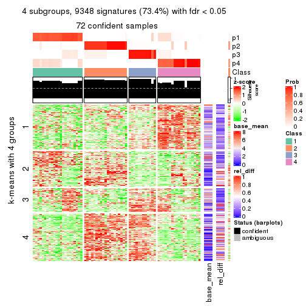
get_signatures(res, k = 5)
get_signatures(res, k = 6)
Signature heatmaps where rows are not scaled:
get_signatures(res, k = 2, scale_rows = FALSE)
get_signatures(res, k = 3, scale_rows = FALSE)
get_signatures(res, k = 4, scale_rows = FALSE)
get_signatures(res, k = 5, scale_rows = FALSE)
get_signatures(res, k = 6, scale_rows = FALSE)
Compare the overlap of signatures from different k:
compare_signatures(res)
get_signature() returns a data frame invisibly. TO get the list of signatures, the function
call should be assigned to a variable explicitly. In following code, if plot argument is set
to FALSE, no heatmap is plotted while only the differential analysis is performed.
# code only for demonstration
tb = get_signature(res, k = ..., plot = FALSE)
An example of the output of tb is:
#> which_row fdr mean_1 mean_2 scaled_mean_1 scaled_mean_2 km
#> 1 38 0.042760348 8.373488 9.131774 -0.5533452 0.5164555 1
#> 2 40 0.018707592 7.106213 8.469186 -0.6173731 0.5762149 1
#> 3 55 0.019134737 10.221463 11.207825 -0.6159697 0.5749050 1
#> 4 59 0.006059896 5.921854 7.869574 -0.6899429 0.6439467 1
#> 5 60 0.018055526 8.928898 10.211722 -0.6204761 0.5791110 1
#> 6 98 0.009384629 15.714769 14.887706 0.6635654 -0.6193277 2
...
The columns in tb are:
which_row: row indices corresponding to the input matrix.fdr: FDR for the differential test. mean_x: The mean value in group x.scaled_mean_x: The mean value in group x after rows are scaled.km: Row groups if k-means clustering is applied to rows.UMAP plot which shows how samples are separated.
dimension_reduction(res, k = 2, method = "UMAP")
dimension_reduction(res, k = 3, method = "UMAP")

dimension_reduction(res, k = 4, method = "UMAP")
dimension_reduction(res, k = 5, method = "UMAP")
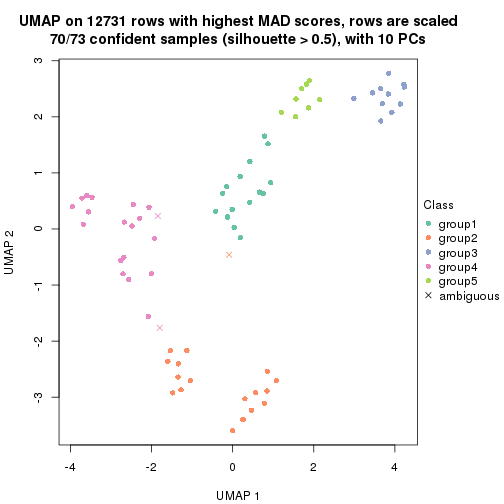
dimension_reduction(res, k = 6, method = "UMAP")
Following heatmap shows how subgroups are split when increasing k:
collect_classes(res)
If matrix rows can be associated to genes, consider to use functional_enrichment(res,
...) to perform function enrichment for the signature genes. See this vignette for more detailed explanations.
The object with results only for a single top-value method and a single partition method can be extracted as:
res = res_list["MAD", "pam"]
# you can also extract it by
# res = res_list["MAD:pam"]
A summary of res and all the functions that can be applied to it:
res
#> A 'ConsensusPartition' object with k = 2, 3, 4, 5, 6.
#> On a matrix with 12731 rows and 73 columns.
#> Top rows (1000, 2000, 3000, 4000, 5000) are extracted by 'MAD' method.
#> Subgroups are detected by 'pam' method.
#> Performed in total 1250 partitions by row resampling.
#> Best k for subgroups seems to be 3.
#>
#> Following methods can be applied to this 'ConsensusPartition' object:
#> [1] "cola_report" "collect_classes" "collect_plots"
#> [4] "collect_stats" "colnames" "compare_signatures"
#> [7] "consensus_heatmap" "dimension_reduction" "functional_enrichment"
#> [10] "get_anno_col" "get_anno" "get_classes"
#> [13] "get_consensus" "get_matrix" "get_membership"
#> [16] "get_param" "get_signatures" "get_stats"
#> [19] "is_best_k" "is_stable_k" "membership_heatmap"
#> [22] "ncol" "nrow" "plot_ecdf"
#> [25] "rownames" "select_partition_number" "show"
#> [28] "suggest_best_k" "test_to_known_factors"
collect_plots() function collects all the plots made from res for all k (number of partitions)
into one single page to provide an easy and fast comparison between different k.
collect_plots(res)
The plots are:
k and the heatmap of
predicted classes for each k.k.k.k.All the plots in panels can be made by individual functions and they are plotted later in this section.
select_partition_number() produces several plots showing different
statistics for choosing “optimized” k. There are following statistics:
k;k, the area increased is defined as \(A_k - A_{k-1}\).The detailed explanations of these statistics can be found in the cola vignette.
Generally speaking, lower PAC score, higher mean silhouette score or higher
concordance corresponds to better partition. Rand index and Jaccard index
measure how similar the current partition is compared to partition with k-1.
If they are too similar, we won't accept k is better than k-1.
select_partition_number(res)
The numeric values for all these statistics can be obtained by get_stats().
get_stats(res)
#> k 1-PAC mean_silhouette concordance area_increased Rand Jaccard
#> 2 2 0.865 0.894 0.936 0.4905 0.509 0.509
#> 3 3 0.901 0.910 0.962 0.3606 0.768 0.568
#> 4 4 0.856 0.874 0.943 0.1199 0.795 0.481
#> 5 5 0.773 0.783 0.845 0.0705 0.923 0.710
#> 6 6 0.853 0.779 0.862 0.0465 0.898 0.556
suggest_best_k() suggests the best \(k\) based on these statistics. The rules are as follows:
suggest_best_k(res)
#> [1] 3
Following shows the table of the partitions (You need to click the show/hide
code output link to see it). The membership matrix (columns with name p*)
is inferred by
clue::cl_consensus()
function with the SE method. Basically the value in the membership matrix
represents the probability to belong to a certain group. The finall class
label for an item is determined with the group with highest probability it
belongs to.
In get_classes() function, the entropy is calculated from the membership
matrix and the silhouette score is calculated from the consensus matrix.
cbind(get_classes(res, k = 2), get_membership(res, k = 2))
#> class entropy silhouette p1 p2
#> SRR2144343 2 0.4431 0.921 0.092 0.908
#> SRR2144345 2 0.4431 0.921 0.092 0.908
#> SRR2144344 2 0.0000 0.909 0.000 1.000
#> SRR2144342 2 0.4431 0.921 0.092 0.908
#> SRR2144341 2 0.4431 0.921 0.092 0.908
#> SRR2144340 2 0.4431 0.921 0.092 0.908
#> SRR2144339 2 0.4431 0.921 0.092 0.908
#> SRR2144336 2 0.0000 0.909 0.000 1.000
#> SRR2144338 2 0.4431 0.921 0.092 0.908
#> SRR2144337 2 0.0000 0.909 0.000 1.000
#> SRR2144335 2 0.0000 0.909 0.000 1.000
#> SRR2144332 2 0.4431 0.921 0.092 0.908
#> SRR2144334 2 0.4431 0.921 0.092 0.908
#> SRR2144333 2 0.0000 0.909 0.000 1.000
#> SRR2144331 2 0.4431 0.921 0.092 0.908
#> SRR2144330 2 0.0000 0.909 0.000 1.000
#> SRR2144328 2 0.4431 0.921 0.092 0.908
#> SRR2144329 2 0.4431 0.921 0.092 0.908
#> SRR2144327 2 0.4431 0.921 0.092 0.908
#> SRR2144326 2 0.0000 0.909 0.000 1.000
#> SRR2144325 2 0.4431 0.921 0.092 0.908
#> SRR2144323 2 0.4431 0.921 0.092 0.908
#> SRR2144324 2 0.0000 0.909 0.000 1.000
#> SRR2144321 2 0.4431 0.921 0.092 0.908
#> SRR2144322 2 0.4431 0.921 0.092 0.908
#> SRR2144320 2 0.0000 0.909 0.000 1.000
#> SRR2144319 2 0.4431 0.921 0.092 0.908
#> SRR2144316 2 0.4431 0.921 0.092 0.908
#> SRR2144317 2 0.0000 0.909 0.000 1.000
#> SRR2144318 2 0.4431 0.921 0.092 0.908
#> SRR2144315 2 0.0000 0.909 0.000 1.000
#> SRR2144314 1 0.0000 0.957 1.000 0.000
#> SRR2144313 1 0.2948 0.911 0.948 0.052
#> SRR2144312 2 0.0938 0.906 0.012 0.988
#> SRR2144311 1 0.0000 0.957 1.000 0.000
#> SRR2144308 2 0.0000 0.909 0.000 1.000
#> SRR2144309 2 0.0000 0.909 0.000 1.000
#> SRR2144310 2 0.4431 0.921 0.092 0.908
#> SRR2144307 2 0.9732 0.473 0.404 0.596
#> SRR2144304 2 0.9491 0.553 0.368 0.632
#> SRR2144306 1 0.7674 0.658 0.776 0.224
#> SRR2144303 2 0.9833 0.422 0.424 0.576
#> SRR2144305 2 0.0000 0.909 0.000 1.000
#> SRR2144302 2 0.4815 0.843 0.104 0.896
#> SRR2144301 1 0.0000 0.957 1.000 0.000
#> SRR2144300 1 0.0000 0.957 1.000 0.000
#> SRR2144299 1 0.0000 0.957 1.000 0.000
#> SRR2144298 1 0.0000 0.957 1.000 0.000
#> SRR2144297 1 0.4431 0.891 0.908 0.092
#> SRR2144296 1 0.0000 0.957 1.000 0.000
#> SRR2144295 1 0.4431 0.891 0.908 0.092
#> SRR2144293 2 0.2603 0.889 0.044 0.956
#> SRR2144294 1 0.0000 0.957 1.000 0.000
#> SRR2144291 1 0.0000 0.957 1.000 0.000
#> SRR2144292 1 0.4562 0.889 0.904 0.096
#> SRR2144289 1 0.0000 0.957 1.000 0.000
#> SRR2144290 1 0.0000 0.957 1.000 0.000
#> SRR2144287 1 0.0000 0.957 1.000 0.000
#> SRR2144288 1 0.4431 0.891 0.908 0.092
#> SRR2144286 1 0.0000 0.957 1.000 0.000
#> SRR2144285 1 0.9460 0.511 0.636 0.364
#> SRR2144284 1 0.0000 0.957 1.000 0.000
#> SRR2144282 2 0.8016 0.653 0.244 0.756
#> SRR2144283 1 0.0000 0.957 1.000 0.000
#> SRR2144281 1 0.0000 0.957 1.000 0.000
#> SRR2144279 1 0.0000 0.957 1.000 0.000
#> SRR2144280 1 0.0000 0.957 1.000 0.000
#> SRR2144278 1 0.0000 0.957 1.000 0.000
#> SRR2144277 1 0.0000 0.957 1.000 0.000
#> SRR2144276 2 0.0376 0.908 0.004 0.996
#> SRR2144274 1 0.0938 0.950 0.988 0.012
#> SRR2144275 1 0.5629 0.871 0.868 0.132
#> SRR2144273 1 0.0000 0.957 1.000 0.000
cbind(get_classes(res, k = 3), get_membership(res, k = 3))
#> class entropy silhouette p1 p2 p3
#> SRR2144343 2 0.0000 0.942 0.000 1.000 0.000
#> SRR2144345 2 0.0000 0.942 0.000 1.000 0.000
#> SRR2144344 3 0.0000 0.969 0.000 0.000 1.000
#> SRR2144342 2 0.0829 0.935 0.004 0.984 0.012
#> SRR2144341 2 0.0000 0.942 0.000 1.000 0.000
#> SRR2144340 2 0.0237 0.942 0.004 0.996 0.000
#> SRR2144339 2 0.0000 0.942 0.000 1.000 0.000
#> SRR2144336 3 0.0000 0.969 0.000 0.000 1.000
#> SRR2144338 2 0.0237 0.942 0.004 0.996 0.000
#> SRR2144337 3 0.0000 0.969 0.000 0.000 1.000
#> SRR2144335 3 0.0000 0.969 0.000 0.000 1.000
#> SRR2144332 2 0.0000 0.942 0.000 1.000 0.000
#> SRR2144334 2 0.6228 0.377 0.004 0.624 0.372
#> SRR2144333 3 0.0000 0.969 0.000 0.000 1.000
#> SRR2144331 2 0.0237 0.942 0.004 0.996 0.000
#> SRR2144330 3 0.0000 0.969 0.000 0.000 1.000
#> SRR2144328 2 0.0237 0.942 0.004 0.996 0.000
#> SRR2144329 2 0.0000 0.942 0.000 1.000 0.000
#> SRR2144327 2 0.0237 0.942 0.004 0.996 0.000
#> SRR2144326 3 0.0000 0.969 0.000 0.000 1.000
#> SRR2144325 2 0.0000 0.942 0.000 1.000 0.000
#> SRR2144323 2 0.0000 0.942 0.000 1.000 0.000
#> SRR2144324 3 0.0000 0.969 0.000 0.000 1.000
#> SRR2144321 2 0.0000 0.942 0.000 1.000 0.000
#> SRR2144322 2 0.0237 0.942 0.004 0.996 0.000
#> SRR2144320 3 0.0000 0.969 0.000 0.000 1.000
#> SRR2144319 2 0.0000 0.942 0.000 1.000 0.000
#> SRR2144316 2 0.0237 0.942 0.004 0.996 0.000
#> SRR2144317 3 0.0000 0.969 0.000 0.000 1.000
#> SRR2144318 2 0.0237 0.942 0.004 0.996 0.000
#> SRR2144315 3 0.0000 0.969 0.000 0.000 1.000
#> SRR2144314 2 0.4452 0.763 0.192 0.808 0.000
#> SRR2144313 2 0.5926 0.471 0.356 0.644 0.000
#> SRR2144312 3 0.0747 0.958 0.016 0.000 0.984
#> SRR2144311 1 0.0000 0.964 1.000 0.000 0.000
#> SRR2144308 3 0.0000 0.969 0.000 0.000 1.000
#> SRR2144309 3 0.0000 0.969 0.000 0.000 1.000
#> SRR2144310 2 0.0237 0.942 0.004 0.996 0.000
#> SRR2144307 2 0.0000 0.942 0.000 1.000 0.000
#> SRR2144304 2 0.1964 0.903 0.056 0.944 0.000
#> SRR2144306 2 0.4915 0.771 0.184 0.804 0.012
#> SRR2144303 2 0.4121 0.799 0.168 0.832 0.000
#> SRR2144305 3 0.0000 0.969 0.000 0.000 1.000
#> SRR2144302 3 0.4002 0.800 0.160 0.000 0.840
#> SRR2144301 1 0.0000 0.964 1.000 0.000 0.000
#> SRR2144300 1 0.0237 0.964 0.996 0.004 0.000
#> SRR2144299 1 0.0237 0.964 0.996 0.004 0.000
#> SRR2144298 1 0.0000 0.964 1.000 0.000 0.000
#> SRR2144297 1 0.0237 0.963 0.996 0.000 0.004
#> SRR2144296 1 0.0237 0.964 0.996 0.004 0.000
#> SRR2144295 1 0.0237 0.963 0.996 0.000 0.004
#> SRR2144293 3 0.1289 0.945 0.032 0.000 0.968
#> SRR2144294 1 0.0000 0.964 1.000 0.000 0.000
#> SRR2144291 1 0.0000 0.964 1.000 0.000 0.000
#> SRR2144292 1 0.0424 0.961 0.992 0.000 0.008
#> SRR2144289 1 0.0000 0.964 1.000 0.000 0.000
#> SRR2144290 1 0.0237 0.964 0.996 0.004 0.000
#> SRR2144287 1 0.0000 0.964 1.000 0.000 0.000
#> SRR2144288 1 0.0237 0.963 0.996 0.000 0.004
#> SRR2144286 1 0.0237 0.964 0.996 0.004 0.000
#> SRR2144285 1 0.5968 0.404 0.636 0.000 0.364
#> SRR2144284 1 0.0000 0.964 1.000 0.000 0.000
#> SRR2144282 3 0.5591 0.565 0.304 0.000 0.696
#> SRR2144283 1 0.0237 0.964 0.996 0.004 0.000
#> SRR2144281 1 0.0237 0.964 0.996 0.004 0.000
#> SRR2144279 1 0.0237 0.964 0.996 0.004 0.000
#> SRR2144280 1 0.6111 0.287 0.604 0.396 0.000
#> SRR2144278 1 0.0000 0.964 1.000 0.000 0.000
#> SRR2144277 1 0.0000 0.964 1.000 0.000 0.000
#> SRR2144276 3 0.0237 0.967 0.004 0.000 0.996
#> SRR2144274 1 0.0000 0.964 1.000 0.000 0.000
#> SRR2144275 1 0.1411 0.934 0.964 0.000 0.036
#> SRR2144273 1 0.0237 0.964 0.996 0.004 0.000
cbind(get_classes(res, k = 4), get_membership(res, k = 4))
#> class entropy silhouette p1 p2 p3 p4
#> SRR2144343 2 0.0000 0.933 0.000 1.000 0.000 0.000
#> SRR2144345 2 0.0000 0.933 0.000 1.000 0.000 0.000
#> SRR2144344 3 0.0000 1.000 0.000 0.000 1.000 0.000
#> SRR2144342 1 0.0804 0.924 0.980 0.012 0.000 0.008
#> SRR2144341 2 0.0000 0.933 0.000 1.000 0.000 0.000
#> SRR2144340 2 0.0000 0.933 0.000 1.000 0.000 0.000
#> SRR2144339 2 0.0000 0.933 0.000 1.000 0.000 0.000
#> SRR2144336 3 0.0000 1.000 0.000 0.000 1.000 0.000
#> SRR2144338 2 0.0000 0.933 0.000 1.000 0.000 0.000
#> SRR2144337 3 0.0000 1.000 0.000 0.000 1.000 0.000
#> SRR2144335 3 0.0000 1.000 0.000 0.000 1.000 0.000
#> SRR2144332 2 0.0000 0.933 0.000 1.000 0.000 0.000
#> SRR2144334 2 0.4761 0.378 0.000 0.628 0.372 0.000
#> SRR2144333 3 0.0000 1.000 0.000 0.000 1.000 0.000
#> SRR2144331 2 0.0000 0.933 0.000 1.000 0.000 0.000
#> SRR2144330 3 0.0000 1.000 0.000 0.000 1.000 0.000
#> SRR2144328 2 0.0000 0.933 0.000 1.000 0.000 0.000
#> SRR2144329 2 0.0000 0.933 0.000 1.000 0.000 0.000
#> SRR2144327 2 0.0000 0.933 0.000 1.000 0.000 0.000
#> SRR2144326 3 0.0000 1.000 0.000 0.000 1.000 0.000
#> SRR2144325 2 0.0000 0.933 0.000 1.000 0.000 0.000
#> SRR2144323 2 0.0000 0.933 0.000 1.000 0.000 0.000
#> SRR2144324 3 0.0000 1.000 0.000 0.000 1.000 0.000
#> SRR2144321 2 0.0000 0.933 0.000 1.000 0.000 0.000
#> SRR2144322 2 0.0000 0.933 0.000 1.000 0.000 0.000
#> SRR2144320 3 0.0000 1.000 0.000 0.000 1.000 0.000
#> SRR2144319 2 0.0000 0.933 0.000 1.000 0.000 0.000
#> SRR2144316 2 0.0000 0.933 0.000 1.000 0.000 0.000
#> SRR2144317 3 0.0000 1.000 0.000 0.000 1.000 0.000
#> SRR2144318 2 0.0000 0.933 0.000 1.000 0.000 0.000
#> SRR2144315 3 0.0000 1.000 0.000 0.000 1.000 0.000
#> SRR2144314 4 0.0000 0.907 0.000 0.000 0.000 1.000
#> SRR2144313 2 0.6543 0.357 0.084 0.544 0.000 0.372
#> SRR2144312 1 0.0000 0.929 1.000 0.000 0.000 0.000
#> SRR2144311 1 0.0336 0.930 0.992 0.000 0.000 0.008
#> SRR2144308 1 0.0336 0.927 0.992 0.000 0.008 0.000
#> SRR2144309 1 0.0000 0.929 1.000 0.000 0.000 0.000
#> SRR2144310 1 0.5268 0.129 0.540 0.452 0.000 0.008
#> SRR2144307 2 0.3610 0.748 0.000 0.800 0.000 0.200
#> SRR2144304 2 0.6075 0.625 0.148 0.684 0.000 0.168
#> SRR2144306 4 0.0469 0.901 0.000 0.012 0.000 0.988
#> SRR2144303 1 0.0592 0.926 0.984 0.000 0.000 0.016
#> SRR2144305 1 0.0188 0.929 0.996 0.000 0.004 0.000
#> SRR2144302 1 0.0000 0.929 1.000 0.000 0.000 0.000
#> SRR2144301 4 0.0336 0.905 0.008 0.000 0.000 0.992
#> SRR2144300 1 0.3764 0.718 0.784 0.000 0.000 0.216
#> SRR2144299 4 0.0000 0.907 0.000 0.000 0.000 1.000
#> SRR2144298 1 0.0336 0.930 0.992 0.000 0.000 0.008
#> SRR2144297 4 0.3610 0.774 0.200 0.000 0.000 0.800
#> SRR2144296 4 0.0000 0.907 0.000 0.000 0.000 1.000
#> SRR2144295 4 0.3610 0.774 0.200 0.000 0.000 0.800
#> SRR2144293 4 0.5386 0.513 0.368 0.000 0.020 0.612
#> SRR2144294 4 0.0336 0.903 0.000 0.008 0.000 0.992
#> SRR2144291 4 0.0000 0.907 0.000 0.000 0.000 1.000
#> SRR2144292 4 0.3610 0.774 0.200 0.000 0.000 0.800
#> SRR2144289 4 0.0336 0.905 0.008 0.000 0.000 0.992
#> SRR2144290 4 0.0000 0.907 0.000 0.000 0.000 1.000
#> SRR2144287 4 0.0188 0.906 0.004 0.000 0.000 0.996
#> SRR2144288 4 0.4164 0.703 0.264 0.000 0.000 0.736
#> SRR2144286 4 0.0000 0.907 0.000 0.000 0.000 1.000
#> SRR2144285 4 0.5039 0.452 0.404 0.000 0.004 0.592
#> SRR2144284 4 0.0000 0.907 0.000 0.000 0.000 1.000
#> SRR2144282 1 0.0000 0.929 1.000 0.000 0.000 0.000
#> SRR2144283 4 0.0000 0.907 0.000 0.000 0.000 1.000
#> SRR2144281 4 0.0000 0.907 0.000 0.000 0.000 1.000
#> SRR2144279 1 0.3610 0.738 0.800 0.000 0.000 0.200
#> SRR2144280 1 0.2921 0.810 0.860 0.000 0.000 0.140
#> SRR2144278 1 0.0336 0.930 0.992 0.000 0.000 0.008
#> SRR2144277 1 0.0336 0.930 0.992 0.000 0.000 0.008
#> SRR2144276 1 0.0000 0.929 1.000 0.000 0.000 0.000
#> SRR2144274 1 0.0336 0.930 0.992 0.000 0.000 0.008
#> SRR2144275 1 0.0000 0.929 1.000 0.000 0.000 0.000
#> SRR2144273 4 0.0188 0.906 0.004 0.000 0.000 0.996
cbind(get_classes(res, k = 5), get_membership(res, k = 5))
#> class entropy silhouette p1 p2 p3 p4 p5
#> SRR2144343 2 0.3586 0.8426 0.264 0.736 0.000 0.000 0.000
#> SRR2144345 2 0.3586 0.8426 0.264 0.736 0.000 0.000 0.000
#> SRR2144344 3 0.0000 1.0000 0.000 0.000 1.000 0.000 0.000
#> SRR2144342 5 0.3582 0.5810 0.224 0.008 0.000 0.000 0.768
#> SRR2144341 2 0.3586 0.8426 0.264 0.736 0.000 0.000 0.000
#> SRR2144340 1 0.0794 0.8354 0.972 0.028 0.000 0.000 0.000
#> SRR2144339 2 0.3586 0.8426 0.264 0.736 0.000 0.000 0.000
#> SRR2144336 3 0.0000 1.0000 0.000 0.000 1.000 0.000 0.000
#> SRR2144338 1 0.0000 0.8495 1.000 0.000 0.000 0.000 0.000
#> SRR2144337 3 0.0000 1.0000 0.000 0.000 1.000 0.000 0.000
#> SRR2144335 3 0.0000 1.0000 0.000 0.000 1.000 0.000 0.000
#> SRR2144332 2 0.3586 0.8426 0.264 0.736 0.000 0.000 0.000
#> SRR2144334 1 0.0404 0.8441 0.988 0.000 0.012 0.000 0.000
#> SRR2144333 3 0.0000 1.0000 0.000 0.000 1.000 0.000 0.000
#> SRR2144331 1 0.0880 0.8227 0.968 0.032 0.000 0.000 0.000
#> SRR2144330 3 0.0000 1.0000 0.000 0.000 1.000 0.000 0.000
#> SRR2144328 1 0.0000 0.8495 1.000 0.000 0.000 0.000 0.000
#> SRR2144329 2 0.3586 0.8426 0.264 0.736 0.000 0.000 0.000
#> SRR2144327 1 0.3242 0.5333 0.784 0.216 0.000 0.000 0.000
#> SRR2144326 3 0.0000 1.0000 0.000 0.000 1.000 0.000 0.000
#> SRR2144325 2 0.3586 0.8426 0.264 0.736 0.000 0.000 0.000
#> SRR2144323 2 0.3586 0.8426 0.264 0.736 0.000 0.000 0.000
#> SRR2144324 3 0.0000 1.0000 0.000 0.000 1.000 0.000 0.000
#> SRR2144321 2 0.3586 0.8426 0.264 0.736 0.000 0.000 0.000
#> SRR2144322 1 0.0000 0.8495 1.000 0.000 0.000 0.000 0.000
#> SRR2144320 3 0.0000 1.0000 0.000 0.000 1.000 0.000 0.000
#> SRR2144319 2 0.3586 0.8426 0.264 0.736 0.000 0.000 0.000
#> SRR2144316 1 0.0000 0.8495 1.000 0.000 0.000 0.000 0.000
#> SRR2144317 3 0.0000 1.0000 0.000 0.000 1.000 0.000 0.000
#> SRR2144318 1 0.0000 0.8495 1.000 0.000 0.000 0.000 0.000
#> SRR2144315 3 0.0000 1.0000 0.000 0.000 1.000 0.000 0.000
#> SRR2144314 4 0.3562 0.6438 0.016 0.196 0.000 0.788 0.000
#> SRR2144313 2 0.6843 0.4125 0.016 0.488 0.000 0.208 0.288
#> SRR2144312 5 0.3366 0.8087 0.000 0.232 0.000 0.000 0.768
#> SRR2144311 5 0.0510 0.7855 0.016 0.000 0.000 0.000 0.984
#> SRR2144308 5 0.3491 0.8078 0.000 0.228 0.004 0.000 0.768
#> SRR2144309 5 0.3366 0.8087 0.000 0.232 0.000 0.000 0.768
#> SRR2144310 1 0.3728 0.6075 0.748 0.008 0.000 0.000 0.244
#> SRR2144307 2 0.6669 0.5001 0.024 0.552 0.000 0.192 0.232
#> SRR2144304 2 0.6788 0.4580 0.036 0.528 0.000 0.140 0.296
#> SRR2144306 1 0.3508 0.6190 0.748 0.000 0.000 0.252 0.000
#> SRR2144303 5 0.4559 -0.0891 0.480 0.008 0.000 0.000 0.512
#> SRR2144305 5 0.3366 0.8087 0.000 0.232 0.000 0.000 0.768
#> SRR2144302 5 0.3366 0.8087 0.000 0.232 0.000 0.000 0.768
#> SRR2144301 4 0.0404 0.8495 0.012 0.000 0.000 0.988 0.000
#> SRR2144300 5 0.3109 0.6342 0.000 0.000 0.000 0.200 0.800
#> SRR2144299 4 0.3949 0.4814 0.000 0.000 0.000 0.668 0.332
#> SRR2144298 5 0.2280 0.8081 0.000 0.120 0.000 0.000 0.880
#> SRR2144297 4 0.3876 0.7399 0.000 0.032 0.000 0.776 0.192
#> SRR2144296 4 0.0000 0.8518 0.000 0.000 0.000 1.000 0.000
#> SRR2144295 4 0.3876 0.7399 0.000 0.032 0.000 0.776 0.192
#> SRR2144293 4 0.7747 0.4104 0.000 0.092 0.220 0.460 0.228
#> SRR2144294 1 0.3636 0.5875 0.728 0.000 0.000 0.272 0.000
#> SRR2144291 4 0.0609 0.8471 0.020 0.000 0.000 0.980 0.000
#> SRR2144292 4 0.3876 0.7399 0.000 0.032 0.000 0.776 0.192
#> SRR2144289 4 0.0000 0.8518 0.000 0.000 0.000 1.000 0.000
#> SRR2144290 4 0.0000 0.8518 0.000 0.000 0.000 1.000 0.000
#> SRR2144287 4 0.0609 0.8471 0.020 0.000 0.000 0.980 0.000
#> SRR2144288 4 0.4462 0.7095 0.000 0.064 0.000 0.740 0.196
#> SRR2144286 4 0.0000 0.8518 0.000 0.000 0.000 1.000 0.000
#> SRR2144285 4 0.6644 0.5573 0.000 0.104 0.068 0.592 0.236
#> SRR2144284 4 0.0609 0.8471 0.020 0.000 0.000 0.980 0.000
#> SRR2144282 5 0.3366 0.8087 0.000 0.232 0.000 0.000 0.768
#> SRR2144283 4 0.0000 0.8518 0.000 0.000 0.000 1.000 0.000
#> SRR2144281 4 0.0000 0.8518 0.000 0.000 0.000 1.000 0.000
#> SRR2144279 5 0.3318 0.6379 0.000 0.008 0.000 0.192 0.800
#> SRR2144280 5 0.2377 0.7096 0.000 0.000 0.000 0.128 0.872
#> SRR2144278 5 0.0290 0.7927 0.000 0.008 0.000 0.000 0.992
#> SRR2144277 5 0.0000 0.7903 0.000 0.000 0.000 0.000 1.000
#> SRR2144276 5 0.3366 0.8087 0.000 0.232 0.000 0.000 0.768
#> SRR2144274 5 0.0000 0.7903 0.000 0.000 0.000 0.000 1.000
#> SRR2144275 5 0.3366 0.8087 0.000 0.232 0.000 0.000 0.768
#> SRR2144273 4 0.0000 0.8518 0.000 0.000 0.000 1.000 0.000
cbind(get_classes(res, k = 6), get_membership(res, k = 6))
#> class entropy silhouette p1 p2 p3 p4 p5 p6
#> SRR2144343 2 0.1714 0.944 0.000 0.908 0.000 0.000 0.000 0.092
#> SRR2144345 2 0.1714 0.944 0.000 0.908 0.000 0.000 0.000 0.092
#> SRR2144344 3 0.0000 1.000 0.000 0.000 1.000 0.000 0.000 0.000
#> SRR2144342 1 0.2178 0.715 0.868 0.000 0.000 0.000 0.000 0.132
#> SRR2144341 2 0.1714 0.944 0.000 0.908 0.000 0.000 0.000 0.092
#> SRR2144340 6 0.1421 0.919 0.028 0.028 0.000 0.000 0.000 0.944
#> SRR2144339 2 0.1714 0.944 0.000 0.908 0.000 0.000 0.000 0.092
#> SRR2144336 3 0.0000 1.000 0.000 0.000 1.000 0.000 0.000 0.000
#> SRR2144338 6 0.0146 0.950 0.000 0.004 0.000 0.000 0.000 0.996
#> SRR2144337 3 0.0000 1.000 0.000 0.000 1.000 0.000 0.000 0.000
#> SRR2144335 3 0.0000 1.000 0.000 0.000 1.000 0.000 0.000 0.000
#> SRR2144332 2 0.1714 0.944 0.000 0.908 0.000 0.000 0.000 0.092
#> SRR2144334 6 0.0146 0.950 0.000 0.004 0.000 0.000 0.000 0.996
#> SRR2144333 3 0.0000 1.000 0.000 0.000 1.000 0.000 0.000 0.000
#> SRR2144331 6 0.0458 0.943 0.000 0.016 0.000 0.000 0.000 0.984
#> SRR2144330 3 0.0000 1.000 0.000 0.000 1.000 0.000 0.000 0.000
#> SRR2144328 6 0.0146 0.950 0.000 0.004 0.000 0.000 0.000 0.996
#> SRR2144329 2 0.1714 0.944 0.000 0.908 0.000 0.000 0.000 0.092
#> SRR2144327 6 0.2048 0.838 0.000 0.120 0.000 0.000 0.000 0.880
#> SRR2144326 3 0.0000 1.000 0.000 0.000 1.000 0.000 0.000 0.000
#> SRR2144325 2 0.1714 0.944 0.000 0.908 0.000 0.000 0.000 0.092
#> SRR2144323 2 0.1714 0.944 0.000 0.908 0.000 0.000 0.000 0.092
#> SRR2144324 3 0.0000 1.000 0.000 0.000 1.000 0.000 0.000 0.000
#> SRR2144321 2 0.1714 0.944 0.000 0.908 0.000 0.000 0.000 0.092
#> SRR2144322 6 0.0146 0.950 0.000 0.004 0.000 0.000 0.000 0.996
#> SRR2144320 3 0.0000 1.000 0.000 0.000 1.000 0.000 0.000 0.000
#> SRR2144319 2 0.1714 0.944 0.000 0.908 0.000 0.000 0.000 0.092
#> SRR2144316 6 0.0146 0.950 0.000 0.004 0.000 0.000 0.000 0.996
#> SRR2144317 3 0.0000 1.000 0.000 0.000 1.000 0.000 0.000 0.000
#> SRR2144318 6 0.0146 0.950 0.000 0.004 0.000 0.000 0.000 0.996
#> SRR2144315 3 0.0000 1.000 0.000 0.000 1.000 0.000 0.000 0.000
#> SRR2144314 2 0.3866 0.170 0.000 0.516 0.000 0.484 0.000 0.000
#> SRR2144313 1 0.3796 0.692 0.764 0.176 0.000 0.060 0.000 0.000
#> SRR2144312 5 0.2730 0.803 0.192 0.000 0.000 0.000 0.808 0.000
#> SRR2144311 1 0.0777 0.740 0.972 0.000 0.000 0.000 0.024 0.004
#> SRR2144308 5 0.2980 0.797 0.192 0.000 0.008 0.000 0.800 0.000
#> SRR2144309 5 0.2730 0.803 0.192 0.000 0.000 0.000 0.808 0.000
#> SRR2144310 1 0.3782 0.310 0.588 0.000 0.000 0.000 0.000 0.412
#> SRR2144307 1 0.3865 0.677 0.752 0.192 0.000 0.056 0.000 0.000
#> SRR2144304 1 0.3946 0.678 0.752 0.192 0.000 0.052 0.004 0.000
#> SRR2144306 6 0.2145 0.864 0.028 0.000 0.000 0.072 0.000 0.900
#> SRR2144303 1 0.2905 0.714 0.836 0.000 0.000 0.012 0.008 0.144
#> SRR2144305 5 0.2871 0.800 0.192 0.000 0.004 0.000 0.804 0.000
#> SRR2144302 5 0.2730 0.803 0.192 0.000 0.000 0.000 0.808 0.000
#> SRR2144301 4 0.1801 0.832 0.056 0.000 0.000 0.924 0.016 0.004
#> SRR2144300 1 0.1829 0.746 0.920 0.000 0.000 0.056 0.024 0.000
#> SRR2144299 1 0.4178 0.487 0.608 0.000 0.000 0.372 0.020 0.000
#> SRR2144298 1 0.3996 -0.223 0.512 0.000 0.000 0.000 0.484 0.004
#> SRR2144297 4 0.5135 0.513 0.000 0.092 0.000 0.540 0.368 0.000
#> SRR2144296 4 0.0000 0.840 0.000 0.000 0.000 1.000 0.000 0.000
#> SRR2144295 4 0.5135 0.513 0.000 0.092 0.000 0.540 0.368 0.000
#> SRR2144293 5 0.5926 -0.106 0.000 0.092 0.412 0.036 0.460 0.000
#> SRR2144294 6 0.2888 0.826 0.056 0.000 0.000 0.092 0.000 0.852
#> SRR2144291 4 0.1349 0.835 0.056 0.000 0.000 0.940 0.000 0.004
#> SRR2144292 4 0.5135 0.513 0.000 0.092 0.000 0.540 0.368 0.000
#> SRR2144289 4 0.1349 0.835 0.056 0.000 0.000 0.940 0.000 0.004
#> SRR2144290 4 0.0000 0.840 0.000 0.000 0.000 1.000 0.000 0.000
#> SRR2144287 4 0.1349 0.835 0.056 0.000 0.000 0.940 0.000 0.004
#> SRR2144288 4 0.5135 0.513 0.000 0.092 0.000 0.540 0.368 0.000
#> SRR2144286 4 0.0000 0.840 0.000 0.000 0.000 1.000 0.000 0.000
#> SRR2144285 5 0.5923 -0.365 0.000 0.092 0.036 0.408 0.464 0.000
#> SRR2144284 4 0.1411 0.834 0.060 0.000 0.000 0.936 0.000 0.004
#> SRR2144282 5 0.2730 0.803 0.192 0.000 0.000 0.000 0.808 0.000
#> SRR2144283 4 0.0000 0.840 0.000 0.000 0.000 1.000 0.000 0.000
#> SRR2144281 4 0.0000 0.840 0.000 0.000 0.000 1.000 0.000 0.000
#> SRR2144279 1 0.1204 0.749 0.944 0.000 0.000 0.056 0.000 0.000
#> SRR2144280 1 0.1829 0.746 0.920 0.000 0.000 0.056 0.024 0.000
#> SRR2144278 1 0.3266 0.415 0.728 0.000 0.000 0.000 0.272 0.000
#> SRR2144277 1 0.0858 0.740 0.968 0.000 0.000 0.000 0.028 0.004
#> SRR2144276 5 0.2730 0.803 0.192 0.000 0.000 0.000 0.808 0.000
#> SRR2144274 1 0.0865 0.737 0.964 0.000 0.000 0.000 0.036 0.000
#> SRR2144275 5 0.2730 0.803 0.192 0.000 0.000 0.000 0.808 0.000
#> SRR2144273 4 0.0000 0.840 0.000 0.000 0.000 1.000 0.000 0.000
Heatmaps for the consensus matrix. It visualizes the probability of two samples to be in a same group.
consensus_heatmap(res, k = 2)
consensus_heatmap(res, k = 3)
consensus_heatmap(res, k = 4)
consensus_heatmap(res, k = 5)
consensus_heatmap(res, k = 6)
Heatmaps for the membership of samples in all partitions to see how consistent they are:
membership_heatmap(res, k = 2)
membership_heatmap(res, k = 3)
membership_heatmap(res, k = 4)
membership_heatmap(res, k = 5)
membership_heatmap(res, k = 6)
As soon as we have had the classes for columns, we can look for signatures which are significantly different between classes which can be candidate marks for certain classes. Following are the heatmaps for signatures.
Signature heatmaps where rows are scaled:
get_signatures(res, k = 2)
get_signatures(res, k = 3)
get_signatures(res, k = 4)
get_signatures(res, k = 5)
get_signatures(res, k = 6)
Signature heatmaps where rows are not scaled:
get_signatures(res, k = 2, scale_rows = FALSE)
get_signatures(res, k = 3, scale_rows = FALSE)
get_signatures(res, k = 4, scale_rows = FALSE)
get_signatures(res, k = 5, scale_rows = FALSE)
get_signatures(res, k = 6, scale_rows = FALSE)
Compare the overlap of signatures from different k:
compare_signatures(res)
get_signature() returns a data frame invisibly. TO get the list of signatures, the function
call should be assigned to a variable explicitly. In following code, if plot argument is set
to FALSE, no heatmap is plotted while only the differential analysis is performed.
# code only for demonstration
tb = get_signature(res, k = ..., plot = FALSE)
An example of the output of tb is:
#> which_row fdr mean_1 mean_2 scaled_mean_1 scaled_mean_2 km
#> 1 38 0.042760348 8.373488 9.131774 -0.5533452 0.5164555 1
#> 2 40 0.018707592 7.106213 8.469186 -0.6173731 0.5762149 1
#> 3 55 0.019134737 10.221463 11.207825 -0.6159697 0.5749050 1
#> 4 59 0.006059896 5.921854 7.869574 -0.6899429 0.6439467 1
#> 5 60 0.018055526 8.928898 10.211722 -0.6204761 0.5791110 1
#> 6 98 0.009384629 15.714769 14.887706 0.6635654 -0.6193277 2
...
The columns in tb are:
which_row: row indices corresponding to the input matrix.fdr: FDR for the differential test. mean_x: The mean value in group x.scaled_mean_x: The mean value in group x after rows are scaled.km: Row groups if k-means clustering is applied to rows.UMAP plot which shows how samples are separated.
dimension_reduction(res, k = 2, method = "UMAP")
dimension_reduction(res, k = 3, method = "UMAP")

dimension_reduction(res, k = 4, method = "UMAP")
dimension_reduction(res, k = 5, method = "UMAP")
dimension_reduction(res, k = 6, method = "UMAP")
Following heatmap shows how subgroups are split when increasing k:
collect_classes(res)
If matrix rows can be associated to genes, consider to use functional_enrichment(res,
...) to perform function enrichment for the signature genes. See this vignette for more detailed explanations.
The object with results only for a single top-value method and a single partition method can be extracted as:
res = res_list["MAD", "mclust"]
# you can also extract it by
# res = res_list["MAD:mclust"]
A summary of res and all the functions that can be applied to it:
res
#> A 'ConsensusPartition' object with k = 2, 3, 4, 5, 6.
#> On a matrix with 12731 rows and 73 columns.
#> Top rows (1000, 2000, 3000, 4000, 5000) are extracted by 'MAD' method.
#> Subgroups are detected by 'mclust' method.
#> Performed in total 1250 partitions by row resampling.
#> Best k for subgroups seems to be 6.
#>
#> Following methods can be applied to this 'ConsensusPartition' object:
#> [1] "cola_report" "collect_classes" "collect_plots"
#> [4] "collect_stats" "colnames" "compare_signatures"
#> [7] "consensus_heatmap" "dimension_reduction" "functional_enrichment"
#> [10] "get_anno_col" "get_anno" "get_classes"
#> [13] "get_consensus" "get_matrix" "get_membership"
#> [16] "get_param" "get_signatures" "get_stats"
#> [19] "is_best_k" "is_stable_k" "membership_heatmap"
#> [22] "ncol" "nrow" "plot_ecdf"
#> [25] "rownames" "select_partition_number" "show"
#> [28] "suggest_best_k" "test_to_known_factors"
collect_plots() function collects all the plots made from res for all k (number of partitions)
into one single page to provide an easy and fast comparison between different k.
collect_plots(res)
The plots are:
k and the heatmap of
predicted classes for each k.k.k.k.All the plots in panels can be made by individual functions and they are plotted later in this section.
select_partition_number() produces several plots showing different
statistics for choosing “optimized” k. There are following statistics:
k;k, the area increased is defined as \(A_k - A_{k-1}\).The detailed explanations of these statistics can be found in the cola vignette.
Generally speaking, lower PAC score, higher mean silhouette score or higher
concordance corresponds to better partition. Rand index and Jaccard index
measure how similar the current partition is compared to partition with k-1.
If they are too similar, we won't accept k is better than k-1.
select_partition_number(res)
The numeric values for all these statistics can be obtained by get_stats().
get_stats(res)
#> k 1-PAC mean_silhouette concordance area_increased Rand Jaccard
#> 2 2 0.501 0.767 0.790 0.4046 0.543 0.543
#> 3 3 0.533 0.862 0.880 0.3959 0.557 0.390
#> 4 4 0.785 0.910 0.900 0.3249 0.668 0.360
#> 5 5 0.777 0.888 0.911 0.0546 0.940 0.763
#> 6 6 0.862 0.901 0.918 0.0425 0.957 0.797
suggest_best_k() suggests the best \(k\) based on these statistics. The rules are as follows:
suggest_best_k(res)
#> [1] 6
Following shows the table of the partitions (You need to click the show/hide
code output link to see it). The membership matrix (columns with name p*)
is inferred by
clue::cl_consensus()
function with the SE method. Basically the value in the membership matrix
represents the probability to belong to a certain group. The finall class
label for an item is determined with the group with highest probability it
belongs to.
In get_classes() function, the entropy is calculated from the membership
matrix and the silhouette score is calculated from the consensus matrix.
cbind(get_classes(res, k = 2), get_membership(res, k = 2))
#> class entropy silhouette p1 p2
#> SRR2144343 1 0.9988 0.686 0.520 0.480
#> SRR2144345 1 0.0000 0.564 1.000 0.000
#> SRR2144344 2 0.0000 1.000 0.000 1.000
#> SRR2144342 1 0.9988 0.686 0.520 0.480
#> SRR2144341 1 0.9988 0.686 0.520 0.480
#> SRR2144340 1 0.9988 0.686 0.520 0.480
#> SRR2144339 1 0.0000 0.564 1.000 0.000
#> SRR2144336 2 0.0000 1.000 0.000 1.000
#> SRR2144338 1 0.0000 0.564 1.000 0.000
#> SRR2144337 2 0.0000 1.000 0.000 1.000
#> SRR2144335 2 0.0000 1.000 0.000 1.000
#> SRR2144332 1 0.0000 0.564 1.000 0.000
#> SRR2144334 1 0.0000 0.564 1.000 0.000
#> SRR2144333 2 0.0000 1.000 0.000 1.000
#> SRR2144331 1 0.0000 0.564 1.000 0.000
#> SRR2144330 2 0.0000 1.000 0.000 1.000
#> SRR2144328 1 0.0000 0.564 1.000 0.000
#> SRR2144329 1 0.0000 0.564 1.000 0.000
#> SRR2144327 1 0.0000 0.564 1.000 0.000
#> SRR2144326 2 0.0000 1.000 0.000 1.000
#> SRR2144325 1 0.0000 0.564 1.000 0.000
#> SRR2144323 1 0.0000 0.564 1.000 0.000
#> SRR2144324 2 0.0000 1.000 0.000 1.000
#> SRR2144321 1 0.0000 0.564 1.000 0.000
#> SRR2144322 1 0.0000 0.564 1.000 0.000
#> SRR2144320 2 0.0000 1.000 0.000 1.000
#> SRR2144319 1 0.0000 0.564 1.000 0.000
#> SRR2144316 1 0.0000 0.564 1.000 0.000
#> SRR2144317 2 0.0000 1.000 0.000 1.000
#> SRR2144318 1 0.0376 0.564 0.996 0.004
#> SRR2144315 2 0.0000 1.000 0.000 1.000
#> SRR2144314 1 0.9988 0.686 0.520 0.480
#> SRR2144313 1 0.9988 0.686 0.520 0.480
#> SRR2144312 2 0.0000 1.000 0.000 1.000
#> SRR2144311 1 0.9988 0.686 0.520 0.480
#> SRR2144308 2 0.0000 1.000 0.000 1.000
#> SRR2144309 2 0.0000 1.000 0.000 1.000
#> SRR2144310 1 0.9988 0.686 0.520 0.480
#> SRR2144307 1 0.9988 0.686 0.520 0.480
#> SRR2144304 1 0.9988 0.686 0.520 0.480
#> SRR2144306 1 0.9988 0.686 0.520 0.480
#> SRR2144303 1 0.9988 0.686 0.520 0.480
#> SRR2144305 2 0.0000 1.000 0.000 1.000
#> SRR2144302 2 0.0000 1.000 0.000 1.000
#> SRR2144301 1 0.9988 0.686 0.520 0.480
#> SRR2144300 1 0.9988 0.686 0.520 0.480
#> SRR2144299 1 0.9988 0.686 0.520 0.480
#> SRR2144298 1 0.9988 0.686 0.520 0.480
#> SRR2144297 2 0.0000 1.000 0.000 1.000
#> SRR2144296 1 0.9988 0.686 0.520 0.480
#> SRR2144295 2 0.0000 1.000 0.000 1.000
#> SRR2144293 2 0.0000 1.000 0.000 1.000
#> SRR2144294 1 0.9988 0.686 0.520 0.480
#> SRR2144291 1 0.9988 0.686 0.520 0.480
#> SRR2144292 2 0.0000 1.000 0.000 1.000
#> SRR2144289 1 0.9988 0.686 0.520 0.480
#> SRR2144290 1 0.9988 0.686 0.520 0.480
#> SRR2144287 1 0.9988 0.686 0.520 0.480
#> SRR2144288 2 0.0000 1.000 0.000 1.000
#> SRR2144286 1 0.9988 0.686 0.520 0.480
#> SRR2144285 2 0.0000 1.000 0.000 1.000
#> SRR2144284 1 0.9988 0.686 0.520 0.480
#> SRR2144282 2 0.0000 1.000 0.000 1.000
#> SRR2144283 1 0.9988 0.686 0.520 0.480
#> SRR2144281 1 0.9988 0.686 0.520 0.480
#> SRR2144279 1 0.9988 0.686 0.520 0.480
#> SRR2144280 1 0.9988 0.686 0.520 0.480
#> SRR2144278 1 0.9988 0.686 0.520 0.480
#> SRR2144277 1 0.9988 0.686 0.520 0.480
#> SRR2144276 2 0.0000 1.000 0.000 1.000
#> SRR2144274 1 0.9988 0.686 0.520 0.480
#> SRR2144275 2 0.0000 1.000 0.000 1.000
#> SRR2144273 1 0.9988 0.686 0.520 0.480
cbind(get_classes(res, k = 3), get_membership(res, k = 3))
#> class entropy silhouette p1 p2 p3
#> SRR2144343 2 0.435 0.883 0.184 0.816 0.000
#> SRR2144345 2 0.412 0.898 0.168 0.832 0.000
#> SRR2144344 3 0.000 1.000 0.000 0.000 1.000
#> SRR2144342 1 0.153 0.853 0.960 0.040 0.000
#> SRR2144341 2 0.412 0.898 0.168 0.832 0.000
#> SRR2144340 1 0.375 0.819 0.856 0.144 0.000
#> SRR2144339 2 0.412 0.898 0.168 0.832 0.000
#> SRR2144336 3 0.000 1.000 0.000 0.000 1.000
#> SRR2144338 2 0.000 0.871 0.000 1.000 0.000
#> SRR2144337 1 0.518 0.790 0.744 0.000 0.256
#> SRR2144335 3 0.000 1.000 0.000 0.000 1.000
#> SRR2144332 2 0.412 0.898 0.168 0.832 0.000
#> SRR2144334 2 0.000 0.871 0.000 1.000 0.000
#> SRR2144333 3 0.000 1.000 0.000 0.000 1.000
#> SRR2144331 2 0.000 0.871 0.000 1.000 0.000
#> SRR2144330 3 0.000 1.000 0.000 0.000 1.000
#> SRR2144328 2 0.000 0.871 0.000 1.000 0.000
#> SRR2144329 2 0.412 0.898 0.168 0.832 0.000
#> SRR2144327 2 0.000 0.871 0.000 1.000 0.000
#> SRR2144326 3 0.000 1.000 0.000 0.000 1.000
#> SRR2144325 2 0.412 0.898 0.168 0.832 0.000
#> SRR2144323 2 0.412 0.898 0.168 0.832 0.000
#> SRR2144324 3 0.000 1.000 0.000 0.000 1.000
#> SRR2144321 2 0.412 0.898 0.168 0.832 0.000
#> SRR2144322 2 0.000 0.871 0.000 1.000 0.000
#> SRR2144320 3 0.000 1.000 0.000 0.000 1.000
#> SRR2144319 2 0.412 0.898 0.168 0.832 0.000
#> SRR2144316 2 0.000 0.871 0.000 1.000 0.000
#> SRR2144317 3 0.000 1.000 0.000 0.000 1.000
#> SRR2144318 2 0.000 0.871 0.000 1.000 0.000
#> SRR2144315 1 0.493 0.797 0.768 0.000 0.232
#> SRR2144314 1 0.164 0.849 0.956 0.044 0.000
#> SRR2144313 1 0.129 0.852 0.968 0.032 0.000
#> SRR2144312 1 0.493 0.797 0.768 0.000 0.232
#> SRR2144311 1 0.412 0.840 0.832 0.168 0.000
#> SRR2144308 1 0.493 0.797 0.768 0.000 0.232
#> SRR2144309 1 0.493 0.797 0.768 0.000 0.232
#> SRR2144310 1 0.465 0.826 0.792 0.208 0.000
#> SRR2144307 1 0.129 0.852 0.968 0.032 0.000
#> SRR2144304 1 0.129 0.852 0.968 0.032 0.000
#> SRR2144306 1 0.518 0.806 0.744 0.256 0.000
#> SRR2144303 1 0.245 0.854 0.924 0.076 0.000
#> SRR2144305 1 0.493 0.797 0.768 0.000 0.232
#> SRR2144302 1 0.493 0.797 0.768 0.000 0.232
#> SRR2144301 1 0.445 0.827 0.808 0.192 0.000
#> SRR2144300 1 0.116 0.852 0.972 0.028 0.000
#> SRR2144299 1 0.116 0.852 0.972 0.028 0.000
#> SRR2144298 1 0.355 0.849 0.868 0.132 0.000
#> SRR2144297 1 0.493 0.797 0.768 0.000 0.232
#> SRR2144296 1 0.103 0.852 0.976 0.024 0.000
#> SRR2144295 1 0.493 0.797 0.768 0.000 0.232
#> SRR2144293 1 0.493 0.797 0.768 0.000 0.232
#> SRR2144294 1 0.514 0.806 0.748 0.252 0.000
#> SRR2144291 1 0.445 0.827 0.808 0.192 0.000
#> SRR2144292 1 0.493 0.797 0.768 0.000 0.232
#> SRR2144289 1 0.445 0.827 0.808 0.192 0.000
#> SRR2144290 1 0.103 0.852 0.976 0.024 0.000
#> SRR2144287 1 0.445 0.827 0.808 0.192 0.000
#> SRR2144288 1 0.493 0.797 0.768 0.000 0.232
#> SRR2144286 1 0.103 0.852 0.976 0.024 0.000
#> SRR2144285 1 0.493 0.797 0.768 0.000 0.232
#> SRR2144284 1 0.450 0.828 0.804 0.196 0.000
#> SRR2144282 1 0.493 0.797 0.768 0.000 0.232
#> SRR2144283 1 0.103 0.852 0.976 0.024 0.000
#> SRR2144281 1 0.129 0.852 0.968 0.032 0.000
#> SRR2144279 1 0.116 0.852 0.972 0.028 0.000
#> SRR2144280 1 0.116 0.852 0.972 0.028 0.000
#> SRR2144278 1 0.400 0.842 0.840 0.160 0.000
#> SRR2144277 1 0.341 0.850 0.876 0.124 0.000
#> SRR2144276 1 0.493 0.797 0.768 0.000 0.232
#> SRR2144274 1 0.186 0.855 0.948 0.052 0.000
#> SRR2144275 1 0.493 0.797 0.768 0.000 0.232
#> SRR2144273 1 0.103 0.852 0.976 0.024 0.000
cbind(get_classes(res, k = 4), get_membership(res, k = 4))
#> class entropy silhouette p1 p2 p3 p4
#> SRR2144343 1 0.1389 0.929 0.952 0.048 0.000 0.000
#> SRR2144345 2 0.4123 0.902 0.044 0.820 0.000 0.136
#> SRR2144344 3 0.0000 0.949 0.000 0.000 1.000 0.000
#> SRR2144342 1 0.0469 0.964 0.988 0.012 0.000 0.000
#> SRR2144341 2 0.4123 0.902 0.044 0.820 0.000 0.136
#> SRR2144340 1 0.1545 0.956 0.952 0.040 0.000 0.008
#> SRR2144339 2 0.4123 0.902 0.044 0.820 0.000 0.136
#> SRR2144336 3 0.0000 0.949 0.000 0.000 1.000 0.000
#> SRR2144338 2 0.0804 0.904 0.008 0.980 0.000 0.012
#> SRR2144337 3 0.0376 0.949 0.004 0.000 0.992 0.004
#> SRR2144335 3 0.0000 0.949 0.000 0.000 1.000 0.000
#> SRR2144332 2 0.4123 0.902 0.044 0.820 0.000 0.136
#> SRR2144334 2 0.0804 0.904 0.008 0.980 0.000 0.012
#> SRR2144333 3 0.0000 0.949 0.000 0.000 1.000 0.000
#> SRR2144331 2 0.0804 0.904 0.008 0.980 0.000 0.012
#> SRR2144330 3 0.0000 0.949 0.000 0.000 1.000 0.000
#> SRR2144328 2 0.0804 0.904 0.008 0.980 0.000 0.012
#> SRR2144329 2 0.4123 0.902 0.044 0.820 0.000 0.136
#> SRR2144327 2 0.0804 0.904 0.008 0.980 0.000 0.012
#> SRR2144326 3 0.0000 0.949 0.000 0.000 1.000 0.000
#> SRR2144325 2 0.4123 0.902 0.044 0.820 0.000 0.136
#> SRR2144323 2 0.4123 0.902 0.044 0.820 0.000 0.136
#> SRR2144324 3 0.0000 0.949 0.000 0.000 1.000 0.000
#> SRR2144321 2 0.4123 0.902 0.044 0.820 0.000 0.136
#> SRR2144322 2 0.0804 0.904 0.008 0.980 0.000 0.012
#> SRR2144320 3 0.0000 0.949 0.000 0.000 1.000 0.000
#> SRR2144319 2 0.4123 0.902 0.044 0.820 0.000 0.136
#> SRR2144316 2 0.0804 0.904 0.008 0.980 0.000 0.012
#> SRR2144317 3 0.0000 0.949 0.000 0.000 1.000 0.000
#> SRR2144318 2 0.1452 0.891 0.008 0.956 0.000 0.036
#> SRR2144315 3 0.1902 0.931 0.004 0.000 0.932 0.064
#> SRR2144314 4 0.3791 0.868 0.200 0.004 0.000 0.796
#> SRR2144313 1 0.0336 0.962 0.992 0.000 0.000 0.008
#> SRR2144312 3 0.3176 0.928 0.084 0.000 0.880 0.036
#> SRR2144311 1 0.1677 0.954 0.948 0.040 0.000 0.012
#> SRR2144308 3 0.2227 0.941 0.036 0.000 0.928 0.036
#> SRR2144309 3 0.3176 0.928 0.084 0.000 0.880 0.036
#> SRR2144310 1 0.1545 0.955 0.952 0.040 0.000 0.008
#> SRR2144307 1 0.0336 0.962 0.992 0.000 0.000 0.008
#> SRR2144304 1 0.0336 0.962 0.992 0.000 0.000 0.008
#> SRR2144306 2 0.2843 0.843 0.020 0.892 0.000 0.088
#> SRR2144303 1 0.1209 0.960 0.964 0.032 0.000 0.004
#> SRR2144305 3 0.3107 0.930 0.080 0.000 0.884 0.036
#> SRR2144302 3 0.3176 0.928 0.084 0.000 0.880 0.036
#> SRR2144301 4 0.4322 0.870 0.152 0.044 0.000 0.804
#> SRR2144300 1 0.0336 0.962 0.992 0.000 0.000 0.008
#> SRR2144299 1 0.0336 0.962 0.992 0.000 0.000 0.008
#> SRR2144298 1 0.1677 0.954 0.948 0.040 0.000 0.012
#> SRR2144297 4 0.3402 0.804 0.004 0.000 0.164 0.832
#> SRR2144296 4 0.3444 0.877 0.184 0.000 0.000 0.816
#> SRR2144295 4 0.3402 0.804 0.004 0.000 0.164 0.832
#> SRR2144293 4 0.3402 0.804 0.004 0.000 0.164 0.832
#> SRR2144294 2 0.2843 0.843 0.020 0.892 0.000 0.088
#> SRR2144291 4 0.4322 0.870 0.152 0.044 0.000 0.804
#> SRR2144292 4 0.3402 0.804 0.004 0.000 0.164 0.832
#> SRR2144289 4 0.4322 0.870 0.152 0.044 0.000 0.804
#> SRR2144290 4 0.3444 0.877 0.184 0.000 0.000 0.816
#> SRR2144287 4 0.4322 0.870 0.152 0.044 0.000 0.804
#> SRR2144288 4 0.3402 0.804 0.004 0.000 0.164 0.832
#> SRR2144286 4 0.3444 0.877 0.184 0.000 0.000 0.816
#> SRR2144285 4 0.3402 0.804 0.004 0.000 0.164 0.832
#> SRR2144284 4 0.4322 0.870 0.152 0.044 0.000 0.804
#> SRR2144282 3 0.3107 0.930 0.080 0.000 0.884 0.036
#> SRR2144283 4 0.3444 0.877 0.184 0.000 0.000 0.816
#> SRR2144281 4 0.3610 0.870 0.200 0.000 0.000 0.800
#> SRR2144279 1 0.0336 0.962 0.992 0.000 0.000 0.008
#> SRR2144280 1 0.0336 0.962 0.992 0.000 0.000 0.008
#> SRR2144278 1 0.1677 0.954 0.948 0.040 0.000 0.012
#> SRR2144277 1 0.1677 0.954 0.948 0.040 0.000 0.012
#> SRR2144276 3 0.3107 0.930 0.080 0.000 0.884 0.036
#> SRR2144274 1 0.1284 0.961 0.964 0.024 0.000 0.012
#> SRR2144275 3 0.3176 0.928 0.084 0.000 0.880 0.036
#> SRR2144273 4 0.3444 0.877 0.184 0.000 0.000 0.816
cbind(get_classes(res, k = 5), get_membership(res, k = 5))
#> class entropy silhouette p1 p2 p3 p4 p5
#> SRR2144343 1 0.0963 0.950 0.964 0.036 0.000 0.000 0.000
#> SRR2144345 2 0.0000 0.901 0.000 1.000 0.000 0.000 0.000
#> SRR2144344 3 0.0000 0.975 0.000 0.000 1.000 0.000 0.000
#> SRR2144342 1 0.0609 0.966 0.980 0.000 0.000 0.020 0.000
#> SRR2144341 2 0.0000 0.901 0.000 1.000 0.000 0.000 0.000
#> SRR2144340 1 0.1965 0.944 0.924 0.024 0.000 0.052 0.000
#> SRR2144339 2 0.0000 0.901 0.000 1.000 0.000 0.000 0.000
#> SRR2144336 3 0.0000 0.975 0.000 0.000 1.000 0.000 0.000
#> SRR2144338 2 0.3231 0.888 0.000 0.800 0.000 0.196 0.004
#> SRR2144337 3 0.0162 0.971 0.000 0.000 0.996 0.000 0.004
#> SRR2144335 3 0.0000 0.975 0.000 0.000 1.000 0.000 0.000
#> SRR2144332 2 0.0000 0.901 0.000 1.000 0.000 0.000 0.000
#> SRR2144334 2 0.3231 0.888 0.000 0.800 0.000 0.196 0.004
#> SRR2144333 3 0.0000 0.975 0.000 0.000 1.000 0.000 0.000
#> SRR2144331 2 0.3231 0.888 0.000 0.800 0.000 0.196 0.004
#> SRR2144330 3 0.0000 0.975 0.000 0.000 1.000 0.000 0.000
#> SRR2144328 2 0.3231 0.888 0.000 0.800 0.000 0.196 0.004
#> SRR2144329 2 0.0000 0.901 0.000 1.000 0.000 0.000 0.000
#> SRR2144327 2 0.3231 0.888 0.000 0.800 0.000 0.196 0.004
#> SRR2144326 3 0.0000 0.975 0.000 0.000 1.000 0.000 0.000
#> SRR2144325 2 0.0000 0.901 0.000 1.000 0.000 0.000 0.000
#> SRR2144323 2 0.0000 0.901 0.000 1.000 0.000 0.000 0.000
#> SRR2144324 3 0.0000 0.975 0.000 0.000 1.000 0.000 0.000
#> SRR2144321 2 0.0000 0.901 0.000 1.000 0.000 0.000 0.000
#> SRR2144322 2 0.3231 0.888 0.000 0.800 0.000 0.196 0.004
#> SRR2144320 3 0.0000 0.975 0.000 0.000 1.000 0.000 0.000
#> SRR2144319 2 0.0000 0.901 0.000 1.000 0.000 0.000 0.000
#> SRR2144316 2 0.3231 0.888 0.000 0.800 0.000 0.196 0.004
#> SRR2144317 3 0.0000 0.975 0.000 0.000 1.000 0.000 0.000
#> SRR2144318 2 0.3300 0.881 0.000 0.792 0.000 0.204 0.004
#> SRR2144315 3 0.3427 0.693 0.000 0.000 0.796 0.012 0.192
#> SRR2144314 4 0.3266 0.815 0.200 0.004 0.000 0.796 0.000
#> SRR2144313 1 0.0000 0.964 1.000 0.000 0.000 0.000 0.000
#> SRR2144312 5 0.0162 0.957 0.000 0.000 0.000 0.004 0.996
#> SRR2144311 1 0.1410 0.956 0.940 0.000 0.000 0.060 0.000
#> SRR2144308 5 0.3861 0.585 0.000 0.000 0.284 0.004 0.712
#> SRR2144309 5 0.0162 0.957 0.000 0.000 0.000 0.004 0.996
#> SRR2144310 1 0.1341 0.957 0.944 0.000 0.000 0.056 0.000
#> SRR2144307 1 0.0000 0.964 1.000 0.000 0.000 0.000 0.000
#> SRR2144304 1 0.0000 0.964 1.000 0.000 0.000 0.000 0.000
#> SRR2144306 4 0.3339 0.752 0.048 0.112 0.000 0.840 0.000
#> SRR2144303 1 0.1043 0.964 0.960 0.000 0.000 0.040 0.000
#> SRR2144305 5 0.0162 0.957 0.000 0.000 0.000 0.004 0.996
#> SRR2144302 5 0.0162 0.957 0.000 0.000 0.000 0.004 0.996
#> SRR2144301 4 0.1197 0.817 0.048 0.000 0.000 0.952 0.000
#> SRR2144300 1 0.0000 0.964 1.000 0.000 0.000 0.000 0.000
#> SRR2144299 1 0.0000 0.964 1.000 0.000 0.000 0.000 0.000
#> SRR2144298 1 0.1341 0.958 0.944 0.000 0.000 0.056 0.000
#> SRR2144297 4 0.5091 0.715 0.000 0.000 0.112 0.692 0.196
#> SRR2144296 4 0.3074 0.817 0.196 0.000 0.000 0.804 0.000
#> SRR2144295 4 0.5091 0.715 0.000 0.000 0.112 0.692 0.196
#> SRR2144293 4 0.5091 0.715 0.000 0.000 0.112 0.692 0.196
#> SRR2144294 4 0.3339 0.752 0.048 0.112 0.000 0.840 0.000
#> SRR2144291 4 0.1197 0.817 0.048 0.000 0.000 0.952 0.000
#> SRR2144292 4 0.5091 0.715 0.000 0.000 0.112 0.692 0.196
#> SRR2144289 4 0.1197 0.817 0.048 0.000 0.000 0.952 0.000
#> SRR2144290 4 0.3074 0.817 0.196 0.000 0.000 0.804 0.000
#> SRR2144287 4 0.1197 0.817 0.048 0.000 0.000 0.952 0.000
#> SRR2144288 4 0.5091 0.715 0.000 0.000 0.112 0.692 0.196
#> SRR2144286 4 0.3074 0.817 0.196 0.000 0.000 0.804 0.000
#> SRR2144285 4 0.5091 0.715 0.000 0.000 0.112 0.692 0.196
#> SRR2144284 4 0.1410 0.819 0.060 0.000 0.000 0.940 0.000
#> SRR2144282 5 0.0162 0.957 0.000 0.000 0.000 0.004 0.996
#> SRR2144283 4 0.3074 0.817 0.196 0.000 0.000 0.804 0.000
#> SRR2144281 4 0.3109 0.815 0.200 0.000 0.000 0.800 0.000
#> SRR2144279 1 0.0000 0.964 1.000 0.000 0.000 0.000 0.000
#> SRR2144280 1 0.0000 0.964 1.000 0.000 0.000 0.000 0.000
#> SRR2144278 1 0.1410 0.956 0.940 0.000 0.000 0.060 0.000
#> SRR2144277 1 0.1410 0.956 0.940 0.000 0.000 0.060 0.000
#> SRR2144276 5 0.0162 0.957 0.000 0.000 0.000 0.004 0.996
#> SRR2144274 1 0.0963 0.965 0.964 0.000 0.000 0.036 0.000
#> SRR2144275 5 0.0162 0.957 0.000 0.000 0.000 0.004 0.996
#> SRR2144273 4 0.3074 0.817 0.196 0.000 0.000 0.804 0.000
cbind(get_classes(res, k = 6), get_membership(res, k = 6))
#> class entropy silhouette p1 p2 p3 p4 p5 p6
#> SRR2144343 1 0.3390 0.550 0.704 0.296 0.000 0.000 0.000 0.000
#> SRR2144345 2 0.0000 0.881 0.000 1.000 0.000 0.000 0.000 0.000
#> SRR2144344 3 0.0000 0.976 0.000 0.000 1.000 0.000 0.000 0.000
#> SRR2144342 1 0.0291 0.929 0.992 0.000 0.000 0.004 0.000 0.004
#> SRR2144341 2 0.0000 0.881 0.000 1.000 0.000 0.000 0.000 0.000
#> SRR2144340 1 0.0692 0.925 0.976 0.000 0.000 0.004 0.000 0.020
#> SRR2144339 2 0.0000 0.881 0.000 1.000 0.000 0.000 0.000 0.000
#> SRR2144336 3 0.0000 0.976 0.000 0.000 1.000 0.000 0.000 0.000
#> SRR2144338 2 0.2933 0.870 0.000 0.796 0.000 0.004 0.000 0.200
#> SRR2144337 3 0.0146 0.973 0.000 0.000 0.996 0.000 0.004 0.000
#> SRR2144335 3 0.0000 0.976 0.000 0.000 1.000 0.000 0.000 0.000
#> SRR2144332 2 0.0000 0.881 0.000 1.000 0.000 0.000 0.000 0.000
#> SRR2144334 2 0.2933 0.870 0.000 0.796 0.000 0.004 0.000 0.200
#> SRR2144333 3 0.0000 0.976 0.000 0.000 1.000 0.000 0.000 0.000
#> SRR2144331 2 0.2933 0.870 0.000 0.796 0.000 0.004 0.000 0.200
#> SRR2144330 3 0.0000 0.976 0.000 0.000 1.000 0.000 0.000 0.000
#> SRR2144328 2 0.2933 0.870 0.000 0.796 0.000 0.004 0.000 0.200
#> SRR2144329 2 0.0000 0.881 0.000 1.000 0.000 0.000 0.000 0.000
#> SRR2144327 2 0.2933 0.870 0.000 0.796 0.000 0.004 0.000 0.200
#> SRR2144326 3 0.0000 0.976 0.000 0.000 1.000 0.000 0.000 0.000
#> SRR2144325 2 0.0000 0.881 0.000 1.000 0.000 0.000 0.000 0.000
#> SRR2144323 2 0.0000 0.881 0.000 1.000 0.000 0.000 0.000 0.000
#> SRR2144324 3 0.0000 0.976 0.000 0.000 1.000 0.000 0.000 0.000
#> SRR2144321 2 0.0000 0.881 0.000 1.000 0.000 0.000 0.000 0.000
#> SRR2144322 2 0.2933 0.870 0.000 0.796 0.000 0.004 0.000 0.200
#> SRR2144320 3 0.0000 0.976 0.000 0.000 1.000 0.000 0.000 0.000
#> SRR2144319 2 0.0000 0.881 0.000 1.000 0.000 0.000 0.000 0.000
#> SRR2144316 2 0.2933 0.870 0.000 0.796 0.000 0.004 0.000 0.200
#> SRR2144317 3 0.0000 0.976 0.000 0.000 1.000 0.000 0.000 0.000
#> SRR2144318 2 0.2933 0.870 0.000 0.796 0.000 0.004 0.000 0.200
#> SRR2144315 3 0.2838 0.714 0.000 0.000 0.808 0.000 0.188 0.004
#> SRR2144314 2 0.5788 0.125 0.200 0.484 0.000 0.316 0.000 0.000
#> SRR2144313 1 0.0000 0.929 1.000 0.000 0.000 0.000 0.000 0.000
#> SRR2144312 5 0.0000 0.999 0.000 0.000 0.000 0.000 1.000 0.000
#> SRR2144311 1 0.2003 0.888 0.884 0.000 0.000 0.116 0.000 0.000
#> SRR2144308 5 0.0146 0.996 0.000 0.000 0.000 0.000 0.996 0.004
#> SRR2144309 5 0.0000 0.999 0.000 0.000 0.000 0.000 1.000 0.000
#> SRR2144310 1 0.2100 0.888 0.884 0.000 0.000 0.112 0.000 0.004
#> SRR2144307 1 0.0000 0.929 1.000 0.000 0.000 0.000 0.000 0.000
#> SRR2144304 1 0.0000 0.929 1.000 0.000 0.000 0.000 0.000 0.000
#> SRR2144306 4 0.2237 0.807 0.004 0.080 0.000 0.896 0.000 0.020
#> SRR2144303 1 0.0858 0.926 0.968 0.000 0.000 0.028 0.000 0.004
#> SRR2144305 5 0.0146 0.996 0.000 0.000 0.000 0.000 0.996 0.004
#> SRR2144302 5 0.0000 0.999 0.000 0.000 0.000 0.000 1.000 0.000
#> SRR2144301 4 0.0146 0.865 0.004 0.000 0.000 0.996 0.000 0.000
#> SRR2144300 1 0.0000 0.929 1.000 0.000 0.000 0.000 0.000 0.000
#> SRR2144299 1 0.0000 0.929 1.000 0.000 0.000 0.000 0.000 0.000
#> SRR2144298 1 0.2003 0.888 0.884 0.000 0.000 0.116 0.000 0.000
#> SRR2144297 6 0.2902 1.000 0.000 0.000 0.000 0.004 0.196 0.800
#> SRR2144296 4 0.2762 0.861 0.196 0.000 0.000 0.804 0.000 0.000
#> SRR2144295 6 0.2902 1.000 0.000 0.000 0.000 0.004 0.196 0.800
#> SRR2144293 6 0.2902 1.000 0.000 0.000 0.000 0.004 0.196 0.800
#> SRR2144294 4 0.2237 0.807 0.004 0.080 0.000 0.896 0.000 0.020
#> SRR2144291 4 0.0146 0.865 0.004 0.000 0.000 0.996 0.000 0.000
#> SRR2144292 6 0.2902 1.000 0.000 0.000 0.000 0.004 0.196 0.800
#> SRR2144289 4 0.0146 0.865 0.004 0.000 0.000 0.996 0.000 0.000
#> SRR2144290 4 0.2762 0.861 0.196 0.000 0.000 0.804 0.000 0.000
#> SRR2144287 4 0.0146 0.865 0.004 0.000 0.000 0.996 0.000 0.000
#> SRR2144288 6 0.2902 1.000 0.000 0.000 0.000 0.004 0.196 0.800
#> SRR2144286 4 0.2762 0.861 0.196 0.000 0.000 0.804 0.000 0.000
#> SRR2144285 6 0.2902 1.000 0.000 0.000 0.000 0.004 0.196 0.800
#> SRR2144284 4 0.0146 0.865 0.004 0.000 0.000 0.996 0.000 0.000
#> SRR2144282 5 0.0000 0.999 0.000 0.000 0.000 0.000 1.000 0.000
#> SRR2144283 4 0.2762 0.861 0.196 0.000 0.000 0.804 0.000 0.000
#> SRR2144281 4 0.2762 0.861 0.196 0.000 0.000 0.804 0.000 0.000
#> SRR2144279 1 0.0000 0.929 1.000 0.000 0.000 0.000 0.000 0.000
#> SRR2144280 1 0.0000 0.929 1.000 0.000 0.000 0.000 0.000 0.000
#> SRR2144278 1 0.2003 0.888 0.884 0.000 0.000 0.116 0.000 0.000
#> SRR2144277 1 0.2003 0.888 0.884 0.000 0.000 0.116 0.000 0.000
#> SRR2144276 5 0.0000 0.999 0.000 0.000 0.000 0.000 1.000 0.000
#> SRR2144274 1 0.0937 0.923 0.960 0.000 0.000 0.040 0.000 0.000
#> SRR2144275 5 0.0000 0.999 0.000 0.000 0.000 0.000 1.000 0.000
#> SRR2144273 4 0.2762 0.861 0.196 0.000 0.000 0.804 0.000 0.000
Heatmaps for the consensus matrix. It visualizes the probability of two samples to be in a same group.
consensus_heatmap(res, k = 2)
consensus_heatmap(res, k = 3)
consensus_heatmap(res, k = 4)
consensus_heatmap(res, k = 5)
consensus_heatmap(res, k = 6)
Heatmaps for the membership of samples in all partitions to see how consistent they are:
membership_heatmap(res, k = 2)
membership_heatmap(res, k = 3)
membership_heatmap(res, k = 4)
membership_heatmap(res, k = 5)
membership_heatmap(res, k = 6)
As soon as we have had the classes for columns, we can look for signatures which are significantly different between classes which can be candidate marks for certain classes. Following are the heatmaps for signatures.
Signature heatmaps where rows are scaled:
get_signatures(res, k = 2)
get_signatures(res, k = 3)
get_signatures(res, k = 4)
get_signatures(res, k = 5)
get_signatures(res, k = 6)
Signature heatmaps where rows are not scaled:
get_signatures(res, k = 2, scale_rows = FALSE)
get_signatures(res, k = 3, scale_rows = FALSE)
get_signatures(res, k = 4, scale_rows = FALSE)
get_signatures(res, k = 5, scale_rows = FALSE)
get_signatures(res, k = 6, scale_rows = FALSE)
Compare the overlap of signatures from different k:
compare_signatures(res)
get_signature() returns a data frame invisibly. TO get the list of signatures, the function
call should be assigned to a variable explicitly. In following code, if plot argument is set
to FALSE, no heatmap is plotted while only the differential analysis is performed.
# code only for demonstration
tb = get_signature(res, k = ..., plot = FALSE)
An example of the output of tb is:
#> which_row fdr mean_1 mean_2 scaled_mean_1 scaled_mean_2 km
#> 1 38 0.042760348 8.373488 9.131774 -0.5533452 0.5164555 1
#> 2 40 0.018707592 7.106213 8.469186 -0.6173731 0.5762149 1
#> 3 55 0.019134737 10.221463 11.207825 -0.6159697 0.5749050 1
#> 4 59 0.006059896 5.921854 7.869574 -0.6899429 0.6439467 1
#> 5 60 0.018055526 8.928898 10.211722 -0.6204761 0.5791110 1
#> 6 98 0.009384629 15.714769 14.887706 0.6635654 -0.6193277 2
...
The columns in tb are:
which_row: row indices corresponding to the input matrix.fdr: FDR for the differential test. mean_x: The mean value in group x.scaled_mean_x: The mean value in group x after rows are scaled.km: Row groups if k-means clustering is applied to rows.UMAP plot which shows how samples are separated.
dimension_reduction(res, k = 2, method = "UMAP")

dimension_reduction(res, k = 3, method = "UMAP")
dimension_reduction(res, k = 4, method = "UMAP")
dimension_reduction(res, k = 5, method = "UMAP")
dimension_reduction(res, k = 6, method = "UMAP")
Following heatmap shows how subgroups are split when increasing k:
collect_classes(res)
If matrix rows can be associated to genes, consider to use functional_enrichment(res,
...) to perform function enrichment for the signature genes. See this vignette for more detailed explanations.
The object with results only for a single top-value method and a single partition method can be extracted as:
res = res_list["MAD", "NMF"]
# you can also extract it by
# res = res_list["MAD:NMF"]
A summary of res and all the functions that can be applied to it:
res
#> A 'ConsensusPartition' object with k = 2, 3, 4, 5, 6.
#> On a matrix with 12731 rows and 73 columns.
#> Top rows (1000, 2000, 3000, 4000, 5000) are extracted by 'MAD' method.
#> Subgroups are detected by 'NMF' method.
#> Performed in total 1250 partitions by row resampling.
#> Best k for subgroups seems to be 3.
#>
#> Following methods can be applied to this 'ConsensusPartition' object:
#> [1] "cola_report" "collect_classes" "collect_plots"
#> [4] "collect_stats" "colnames" "compare_signatures"
#> [7] "consensus_heatmap" "dimension_reduction" "functional_enrichment"
#> [10] "get_anno_col" "get_anno" "get_classes"
#> [13] "get_consensus" "get_matrix" "get_membership"
#> [16] "get_param" "get_signatures" "get_stats"
#> [19] "is_best_k" "is_stable_k" "membership_heatmap"
#> [22] "ncol" "nrow" "plot_ecdf"
#> [25] "rownames" "select_partition_number" "show"
#> [28] "suggest_best_k" "test_to_known_factors"
collect_plots() function collects all the plots made from res for all k (number of partitions)
into one single page to provide an easy and fast comparison between different k.
collect_plots(res)
The plots are:
k and the heatmap of
predicted classes for each k.k.k.k.All the plots in panels can be made by individual functions and they are plotted later in this section.
select_partition_number() produces several plots showing different
statistics for choosing “optimized” k. There are following statistics:
k;k, the area increased is defined as \(A_k - A_{k-1}\).The detailed explanations of these statistics can be found in the cola vignette.
Generally speaking, lower PAC score, higher mean silhouette score or higher
concordance corresponds to better partition. Rand index and Jaccard index
measure how similar the current partition is compared to partition with k-1.
If they are too similar, we won't accept k is better than k-1.
select_partition_number(res)
The numeric values for all these statistics can be obtained by get_stats().
get_stats(res)
#> k 1-PAC mean_silhouette concordance area_increased Rand Jaccard
#> 2 2 0.337 0.608 0.829 0.4979 0.493 0.493
#> 3 3 0.692 0.800 0.913 0.3380 0.628 0.377
#> 4 4 0.569 0.465 0.735 0.1119 0.777 0.444
#> 5 5 0.788 0.721 0.872 0.0688 0.809 0.402
#> 6 6 0.752 0.703 0.854 0.0350 0.941 0.730
suggest_best_k() suggests the best \(k\) based on these statistics. The rules are as follows:
suggest_best_k(res)
#> [1] 3
Following shows the table of the partitions (You need to click the show/hide
code output link to see it). The membership matrix (columns with name p*)
is inferred by
clue::cl_consensus()
function with the SE method. Basically the value in the membership matrix
represents the probability to belong to a certain group. The finall class
label for an item is determined with the group with highest probability it
belongs to.
In get_classes() function, the entropy is calculated from the membership
matrix and the silhouette score is calculated from the consensus matrix.
cbind(get_classes(res, k = 2), get_membership(res, k = 2))
#> class entropy silhouette p1 p2
#> SRR2144343 2 0.4815 0.7909 0.104 0.896
#> SRR2144345 2 0.6438 0.7498 0.164 0.836
#> SRR2144344 2 0.9996 0.1625 0.488 0.512
#> SRR2144342 2 0.0000 0.8226 0.000 1.000
#> SRR2144341 2 0.6531 0.7462 0.168 0.832
#> SRR2144340 2 0.1184 0.8232 0.016 0.984
#> SRR2144339 2 0.4690 0.7931 0.100 0.900
#> SRR2144336 2 1.0000 0.1411 0.496 0.504
#> SRR2144338 2 0.0000 0.8226 0.000 1.000
#> SRR2144337 1 0.9944 -0.0508 0.544 0.456
#> SRR2144335 1 1.0000 -0.1653 0.504 0.496
#> SRR2144332 2 0.6623 0.7413 0.172 0.828
#> SRR2144334 2 0.0672 0.8236 0.008 0.992
#> SRR2144333 1 0.9491 0.2005 0.632 0.368
#> SRR2144331 2 0.0938 0.8236 0.012 0.988
#> SRR2144330 1 0.2236 0.6869 0.964 0.036
#> SRR2144328 2 0.2603 0.8168 0.044 0.956
#> SRR2144329 2 0.6531 0.7462 0.168 0.832
#> SRR2144327 2 0.3114 0.8128 0.056 0.944
#> SRR2144326 2 0.9795 0.3299 0.416 0.584
#> SRR2144325 2 0.6048 0.7621 0.148 0.852
#> SRR2144323 2 0.6531 0.7462 0.168 0.832
#> SRR2144324 1 0.6712 0.5522 0.824 0.176
#> SRR2144321 2 0.6438 0.7498 0.164 0.836
#> SRR2144322 2 0.0000 0.8226 0.000 1.000
#> SRR2144320 1 0.9427 0.2204 0.640 0.360
#> SRR2144319 2 0.6531 0.7462 0.168 0.832
#> SRR2144316 2 0.0376 0.8233 0.004 0.996
#> SRR2144317 1 0.9993 -0.1321 0.516 0.484
#> SRR2144318 2 0.0000 0.8226 0.000 1.000
#> SRR2144315 1 0.0376 0.7057 0.996 0.004
#> SRR2144314 2 0.1414 0.8118 0.020 0.980
#> SRR2144313 2 0.0000 0.8226 0.000 1.000
#> SRR2144312 1 0.0000 0.7079 1.000 0.000
#> SRR2144311 2 0.7453 0.5195 0.212 0.788
#> SRR2144308 1 0.0000 0.7079 1.000 0.000
#> SRR2144309 1 0.0000 0.7079 1.000 0.000
#> SRR2144310 2 0.0000 0.8226 0.000 1.000
#> SRR2144307 2 0.0000 0.8226 0.000 1.000
#> SRR2144304 2 0.0000 0.8226 0.000 1.000
#> SRR2144306 2 0.3431 0.7689 0.064 0.936
#> SRR2144303 2 0.0000 0.8226 0.000 1.000
#> SRR2144305 1 0.0000 0.7079 1.000 0.000
#> SRR2144302 1 0.0000 0.7079 1.000 0.000
#> SRR2144301 1 0.9358 0.5539 0.648 0.352
#> SRR2144300 2 0.0938 0.8163 0.012 0.988
#> SRR2144299 2 0.9209 0.1737 0.336 0.664
#> SRR2144298 1 0.9922 0.4231 0.552 0.448
#> SRR2144297 1 0.0000 0.7079 1.000 0.000
#> SRR2144296 1 0.8386 0.6156 0.732 0.268
#> SRR2144295 1 0.0000 0.7079 1.000 0.000
#> SRR2144293 1 0.0000 0.7079 1.000 0.000
#> SRR2144294 1 0.9993 0.3527 0.516 0.484
#> SRR2144291 1 0.9815 0.4694 0.580 0.420
#> SRR2144292 1 0.0000 0.7079 1.000 0.000
#> SRR2144289 1 0.9248 0.5653 0.660 0.340
#> SRR2144290 1 0.7883 0.6319 0.764 0.236
#> SRR2144287 1 0.9580 0.5239 0.620 0.380
#> SRR2144288 1 0.0000 0.7079 1.000 0.000
#> SRR2144286 1 0.9170 0.5720 0.668 0.332
#> SRR2144285 1 0.0000 0.7079 1.000 0.000
#> SRR2144284 1 0.9686 0.5038 0.604 0.396
#> SRR2144282 1 0.0000 0.7079 1.000 0.000
#> SRR2144283 1 0.9635 0.5143 0.612 0.388
#> SRR2144281 1 0.9944 0.4108 0.544 0.456
#> SRR2144279 2 0.2423 0.7935 0.040 0.960
#> SRR2144280 2 0.0376 0.8208 0.004 0.996
#> SRR2144278 1 0.9983 0.3707 0.524 0.476
#> SRR2144277 2 0.9993 -0.3119 0.484 0.516
#> SRR2144276 1 0.0000 0.7079 1.000 0.000
#> SRR2144274 1 0.9983 0.3707 0.524 0.476
#> SRR2144275 1 0.0000 0.7079 1.000 0.000
#> SRR2144273 1 0.7950 0.6302 0.760 0.240
cbind(get_classes(res, k = 3), get_membership(res, k = 3))
#> class entropy silhouette p1 p2 p3
#> SRR2144343 2 0.0000 0.8965 0.000 1.000 0.000
#> SRR2144345 2 0.0000 0.8965 0.000 1.000 0.000
#> SRR2144344 2 0.3816 0.8424 0.000 0.852 0.148
#> SRR2144342 1 0.4555 0.7354 0.800 0.200 0.000
#> SRR2144341 2 0.0000 0.8965 0.000 1.000 0.000
#> SRR2144340 2 0.4452 0.7112 0.192 0.808 0.000
#> SRR2144339 2 0.0000 0.8965 0.000 1.000 0.000
#> SRR2144336 2 0.4121 0.8291 0.000 0.832 0.168
#> SRR2144338 1 0.0592 0.9111 0.988 0.012 0.000
#> SRR2144337 2 0.5497 0.6910 0.000 0.708 0.292
#> SRR2144335 2 0.4121 0.8291 0.000 0.832 0.168
#> SRR2144332 2 0.0000 0.8965 0.000 1.000 0.000
#> SRR2144334 1 0.6309 0.0308 0.500 0.500 0.000
#> SRR2144333 2 0.5465 0.6975 0.000 0.712 0.288
#> SRR2144331 2 0.3038 0.8293 0.104 0.896 0.000
#> SRR2144330 3 0.5859 0.3112 0.000 0.344 0.656
#> SRR2144328 2 0.1529 0.8776 0.040 0.960 0.000
#> SRR2144329 2 0.0000 0.8965 0.000 1.000 0.000
#> SRR2144327 2 0.1031 0.8871 0.024 0.976 0.000
#> SRR2144326 2 0.3412 0.8543 0.000 0.876 0.124
#> SRR2144325 2 0.0000 0.8965 0.000 1.000 0.000
#> SRR2144323 2 0.0000 0.8965 0.000 1.000 0.000
#> SRR2144324 3 0.5835 0.3233 0.000 0.340 0.660
#> SRR2144321 2 0.0000 0.8965 0.000 1.000 0.000
#> SRR2144322 1 0.2261 0.8778 0.932 0.068 0.000
#> SRR2144320 2 0.5058 0.7550 0.000 0.756 0.244
#> SRR2144319 2 0.0000 0.8965 0.000 1.000 0.000
#> SRR2144316 1 0.3482 0.8255 0.872 0.128 0.000
#> SRR2144317 2 0.4750 0.7869 0.000 0.784 0.216
#> SRR2144318 1 0.1529 0.8960 0.960 0.040 0.000
#> SRR2144315 3 0.0000 0.8707 0.000 0.000 1.000
#> SRR2144314 1 0.0829 0.9100 0.984 0.004 0.012
#> SRR2144313 1 0.0424 0.9123 0.992 0.008 0.000
#> SRR2144312 3 0.0000 0.8707 0.000 0.000 1.000
#> SRR2144311 1 0.0000 0.9137 1.000 0.000 0.000
#> SRR2144308 3 0.0000 0.8707 0.000 0.000 1.000
#> SRR2144309 3 0.0000 0.8707 0.000 0.000 1.000
#> SRR2144310 1 0.0592 0.9111 0.988 0.012 0.000
#> SRR2144307 1 0.3192 0.8424 0.888 0.112 0.000
#> SRR2144304 1 0.0592 0.9111 0.988 0.012 0.000
#> SRR2144306 1 0.0000 0.9137 1.000 0.000 0.000
#> SRR2144303 1 0.0237 0.9131 0.996 0.004 0.000
#> SRR2144305 3 0.0000 0.8707 0.000 0.000 1.000
#> SRR2144302 3 0.0000 0.8707 0.000 0.000 1.000
#> SRR2144301 1 0.6140 0.2569 0.596 0.000 0.404
#> SRR2144300 1 0.0000 0.9137 1.000 0.000 0.000
#> SRR2144299 1 0.3192 0.8188 0.888 0.000 0.112
#> SRR2144298 1 0.0000 0.9137 1.000 0.000 0.000
#> SRR2144297 3 0.0000 0.8707 0.000 0.000 1.000
#> SRR2144296 3 0.4974 0.6699 0.236 0.000 0.764
#> SRR2144295 3 0.0000 0.8707 0.000 0.000 1.000
#> SRR2144293 3 0.0000 0.8707 0.000 0.000 1.000
#> SRR2144294 1 0.0000 0.9137 1.000 0.000 0.000
#> SRR2144291 1 0.0000 0.9137 1.000 0.000 0.000
#> SRR2144292 3 0.0000 0.8707 0.000 0.000 1.000
#> SRR2144289 1 0.6274 0.0858 0.544 0.000 0.456
#> SRR2144290 3 0.4796 0.6911 0.220 0.000 0.780
#> SRR2144287 1 0.1860 0.8806 0.948 0.000 0.052
#> SRR2144288 3 0.0000 0.8707 0.000 0.000 1.000
#> SRR2144286 3 0.5733 0.5194 0.324 0.000 0.676
#> SRR2144285 3 0.0000 0.8707 0.000 0.000 1.000
#> SRR2144284 1 0.0892 0.9047 0.980 0.000 0.020
#> SRR2144282 3 0.0000 0.8707 0.000 0.000 1.000
#> SRR2144283 3 0.6309 0.0092 0.500 0.000 0.500
#> SRR2144281 1 0.0747 0.9069 0.984 0.000 0.016
#> SRR2144279 1 0.0000 0.9137 1.000 0.000 0.000
#> SRR2144280 1 0.0000 0.9137 1.000 0.000 0.000
#> SRR2144278 1 0.0000 0.9137 1.000 0.000 0.000
#> SRR2144277 1 0.0000 0.9137 1.000 0.000 0.000
#> SRR2144276 3 0.0000 0.8707 0.000 0.000 1.000
#> SRR2144274 1 0.0000 0.9137 1.000 0.000 0.000
#> SRR2144275 3 0.0000 0.8707 0.000 0.000 1.000
#> SRR2144273 3 0.4842 0.6862 0.224 0.000 0.776
cbind(get_classes(res, k = 4), get_membership(res, k = 4))
#> class entropy silhouette p1 p2 p3 p4
#> SRR2144343 1 0.4948 -0.301 0.560 0.440 0.000 0.000
#> SRR2144345 2 0.4250 0.609 0.276 0.724 0.000 0.000
#> SRR2144344 3 0.4817 0.431 0.000 0.388 0.612 0.000
#> SRR2144342 4 0.6708 0.466 0.448 0.088 0.000 0.464
#> SRR2144341 2 0.2345 0.665 0.100 0.900 0.000 0.000
#> SRR2144340 2 0.4655 0.290 0.312 0.684 0.000 0.004
#> SRR2144339 2 0.4790 0.519 0.380 0.620 0.000 0.000
#> SRR2144336 3 0.4866 0.422 0.000 0.404 0.596 0.000
#> SRR2144338 4 0.5217 0.570 0.380 0.012 0.000 0.608
#> SRR2144337 3 0.1474 0.729 0.000 0.052 0.948 0.000
#> SRR2144335 3 0.4972 0.332 0.000 0.456 0.544 0.000
#> SRR2144332 2 0.1716 0.664 0.064 0.936 0.000 0.000
#> SRR2144334 4 0.6223 0.221 0.060 0.384 0.000 0.556
#> SRR2144333 3 0.4830 0.441 0.000 0.392 0.608 0.000
#> SRR2144331 2 0.3610 0.559 0.000 0.800 0.000 0.200
#> SRR2144330 3 0.4406 0.560 0.000 0.300 0.700 0.000
#> SRR2144328 2 0.4866 0.234 0.000 0.596 0.000 0.404
#> SRR2144329 2 0.4955 0.438 0.444 0.556 0.000 0.000
#> SRR2144327 2 0.0707 0.644 0.000 0.980 0.000 0.020
#> SRR2144326 2 0.4222 0.309 0.000 0.728 0.272 0.000
#> SRR2144325 2 0.4985 0.399 0.468 0.532 0.000 0.000
#> SRR2144323 2 0.4522 0.578 0.320 0.680 0.000 0.000
#> SRR2144324 3 0.4164 0.599 0.000 0.264 0.736 0.000
#> SRR2144321 2 0.3907 0.635 0.232 0.768 0.000 0.000
#> SRR2144322 4 0.6770 0.541 0.268 0.140 0.000 0.592
#> SRR2144320 3 0.4981 0.316 0.000 0.464 0.536 0.000
#> SRR2144319 2 0.1474 0.662 0.052 0.948 0.000 0.000
#> SRR2144316 4 0.7065 0.496 0.216 0.212 0.000 0.572
#> SRR2144317 2 0.4977 -0.210 0.000 0.540 0.460 0.000
#> SRR2144318 4 0.6454 0.556 0.344 0.084 0.000 0.572
#> SRR2144315 3 0.0188 0.746 0.000 0.000 0.996 0.004
#> SRR2144314 1 0.4643 0.493 0.656 0.000 0.000 0.344
#> SRR2144313 1 0.0188 0.513 0.996 0.004 0.000 0.000
#> SRR2144312 3 0.0469 0.744 0.012 0.000 0.988 0.000
#> SRR2144311 4 0.4925 0.546 0.428 0.000 0.000 0.572
#> SRR2144308 3 0.0188 0.745 0.004 0.000 0.996 0.000
#> SRR2144309 3 0.0592 0.743 0.016 0.000 0.984 0.000
#> SRR2144310 4 0.4907 0.551 0.420 0.000 0.000 0.580
#> SRR2144307 1 0.1661 0.503 0.944 0.052 0.004 0.000
#> SRR2144304 1 0.1118 0.510 0.964 0.036 0.000 0.000
#> SRR2144306 4 0.4624 0.574 0.340 0.000 0.000 0.660
#> SRR2144303 1 0.4961 -0.453 0.552 0.000 0.000 0.448
#> SRR2144305 3 0.0592 0.743 0.016 0.000 0.984 0.000
#> SRR2144302 3 0.0921 0.737 0.028 0.000 0.972 0.000
#> SRR2144301 4 0.0336 0.479 0.008 0.000 0.000 0.992
#> SRR2144300 1 0.1151 0.526 0.968 0.000 0.008 0.024
#> SRR2144299 1 0.4855 0.490 0.644 0.000 0.004 0.352
#> SRR2144298 4 0.4790 0.570 0.380 0.000 0.000 0.620
#> SRR2144297 3 0.4661 0.609 0.000 0.000 0.652 0.348
#> SRR2144296 4 0.7448 -0.406 0.400 0.000 0.172 0.428
#> SRR2144295 3 0.4679 0.605 0.000 0.000 0.648 0.352
#> SRR2144293 3 0.4406 0.649 0.000 0.000 0.700 0.300
#> SRR2144294 4 0.0188 0.482 0.004 0.000 0.000 0.996
#> SRR2144291 4 0.0336 0.479 0.008 0.000 0.000 0.992
#> SRR2144292 3 0.4605 0.622 0.000 0.000 0.664 0.336
#> SRR2144289 4 0.0592 0.471 0.016 0.000 0.000 0.984
#> SRR2144290 1 0.7648 0.317 0.400 0.000 0.208 0.392
#> SRR2144287 4 0.0188 0.485 0.004 0.000 0.000 0.996
#> SRR2144288 3 0.4643 0.614 0.000 0.000 0.656 0.344
#> SRR2144286 1 0.7115 0.381 0.452 0.000 0.128 0.420
#> SRR2144285 3 0.4454 0.644 0.000 0.000 0.692 0.308
#> SRR2144284 4 0.0000 0.484 0.000 0.000 0.000 1.000
#> SRR2144282 3 0.0469 0.744 0.012 0.000 0.988 0.000
#> SRR2144283 1 0.5586 0.433 0.528 0.000 0.020 0.452
#> SRR2144281 1 0.4933 0.454 0.568 0.000 0.000 0.432
#> SRR2144279 1 0.1022 0.520 0.968 0.000 0.032 0.000
#> SRR2144280 1 0.0895 0.524 0.976 0.000 0.004 0.020
#> SRR2144278 4 0.4830 0.566 0.392 0.000 0.000 0.608
#> SRR2144277 1 0.4996 -0.503 0.516 0.000 0.000 0.484
#> SRR2144276 3 0.0188 0.745 0.004 0.000 0.996 0.000
#> SRR2144274 4 0.4941 0.539 0.436 0.000 0.000 0.564
#> SRR2144275 3 0.0000 0.745 0.000 0.000 1.000 0.000
#> SRR2144273 4 0.7488 -0.393 0.384 0.000 0.180 0.436
cbind(get_classes(res, k = 5), get_membership(res, k = 5))
#> class entropy silhouette p1 p2 p3 p4 p5
#> SRR2144343 2 0.0880 0.9109 0.000 0.968 0.032 0.000 0.000
#> SRR2144345 2 0.1792 0.8897 0.000 0.916 0.084 0.000 0.000
#> SRR2144344 5 0.0794 0.8639 0.000 0.000 0.028 0.000 0.972
#> SRR2144342 1 0.1386 0.8743 0.952 0.032 0.000 0.016 0.000
#> SRR2144341 2 0.3366 0.7528 0.000 0.768 0.232 0.000 0.000
#> SRR2144340 1 0.4321 0.3244 0.600 0.004 0.396 0.000 0.000
#> SRR2144339 2 0.1908 0.8851 0.000 0.908 0.092 0.000 0.000
#> SRR2144336 5 0.1732 0.8246 0.000 0.000 0.080 0.000 0.920
#> SRR2144338 1 0.0451 0.8902 0.988 0.000 0.004 0.008 0.000
#> SRR2144337 5 0.0162 0.8745 0.000 0.000 0.000 0.004 0.996
#> SRR2144335 5 0.2648 0.7488 0.000 0.000 0.152 0.000 0.848
#> SRR2144332 3 0.3109 0.5213 0.000 0.200 0.800 0.000 0.000
#> SRR2144334 1 0.1357 0.8699 0.948 0.000 0.048 0.004 0.000
#> SRR2144333 3 0.4341 0.3103 0.000 0.000 0.592 0.004 0.404
#> SRR2144331 3 0.1851 0.6340 0.088 0.000 0.912 0.000 0.000
#> SRR2144330 5 0.4276 0.2898 0.000 0.000 0.380 0.004 0.616
#> SRR2144328 3 0.4256 0.0442 0.436 0.000 0.564 0.000 0.000
#> SRR2144329 2 0.1082 0.9108 0.000 0.964 0.028 0.008 0.000
#> SRR2144327 3 0.0000 0.6486 0.000 0.000 1.000 0.000 0.000
#> SRR2144326 3 0.3366 0.5824 0.000 0.000 0.768 0.000 0.232
#> SRR2144325 2 0.1041 0.9105 0.000 0.964 0.032 0.004 0.000
#> SRR2144323 2 0.4238 0.5239 0.000 0.628 0.368 0.004 0.000
#> SRR2144324 5 0.3884 0.5232 0.000 0.000 0.288 0.004 0.708
#> SRR2144321 2 0.4088 0.5353 0.000 0.632 0.368 0.000 0.000
#> SRR2144322 1 0.0404 0.8900 0.988 0.000 0.000 0.012 0.000
#> SRR2144320 3 0.3741 0.5542 0.000 0.000 0.732 0.004 0.264
#> SRR2144319 3 0.2690 0.5714 0.000 0.156 0.844 0.000 0.000
#> SRR2144316 1 0.0451 0.8902 0.988 0.000 0.004 0.008 0.000
#> SRR2144317 3 0.4294 0.1329 0.000 0.000 0.532 0.000 0.468
#> SRR2144318 1 0.0451 0.8902 0.988 0.000 0.004 0.008 0.000
#> SRR2144315 5 0.0290 0.8735 0.000 0.000 0.000 0.008 0.992
#> SRR2144314 2 0.0963 0.9070 0.000 0.964 0.000 0.036 0.000
#> SRR2144313 2 0.0162 0.9087 0.000 0.996 0.000 0.004 0.000
#> SRR2144312 5 0.0404 0.8724 0.000 0.000 0.000 0.012 0.988
#> SRR2144311 1 0.0798 0.8866 0.976 0.016 0.000 0.008 0.000
#> SRR2144308 5 0.0000 0.8749 0.000 0.000 0.000 0.000 1.000
#> SRR2144309 5 0.0404 0.8724 0.000 0.000 0.000 0.012 0.988
#> SRR2144310 1 0.0671 0.8880 0.980 0.016 0.000 0.004 0.000
#> SRR2144307 2 0.0693 0.9034 0.008 0.980 0.000 0.012 0.000
#> SRR2144304 2 0.1074 0.8967 0.012 0.968 0.000 0.016 0.004
#> SRR2144306 1 0.0404 0.8900 0.988 0.000 0.000 0.012 0.000
#> SRR2144303 1 0.1386 0.8743 0.952 0.032 0.000 0.016 0.000
#> SRR2144305 5 0.0404 0.8724 0.000 0.000 0.000 0.012 0.988
#> SRR2144302 5 0.0566 0.8691 0.004 0.000 0.000 0.012 0.984
#> SRR2144301 4 0.2280 0.7223 0.120 0.000 0.000 0.880 0.000
#> SRR2144300 2 0.0703 0.9094 0.000 0.976 0.000 0.024 0.000
#> SRR2144299 2 0.0880 0.9079 0.000 0.968 0.000 0.032 0.000
#> SRR2144298 1 0.0404 0.8900 0.988 0.000 0.000 0.012 0.000
#> SRR2144297 4 0.1544 0.7513 0.000 0.000 0.000 0.932 0.068
#> SRR2144296 4 0.1732 0.7498 0.000 0.080 0.000 0.920 0.000
#> SRR2144295 4 0.1608 0.7504 0.000 0.000 0.000 0.928 0.072
#> SRR2144293 5 0.4249 0.1481 0.000 0.000 0.000 0.432 0.568
#> SRR2144294 1 0.2690 0.7684 0.844 0.000 0.000 0.156 0.000
#> SRR2144291 4 0.4287 0.0679 0.460 0.000 0.000 0.540 0.000
#> SRR2144292 4 0.3395 0.6428 0.000 0.000 0.000 0.764 0.236
#> SRR2144289 4 0.2648 0.7056 0.152 0.000 0.000 0.848 0.000
#> SRR2144290 4 0.1341 0.7548 0.000 0.056 0.000 0.944 0.000
#> SRR2144287 1 0.4045 0.4142 0.644 0.000 0.000 0.356 0.000
#> SRR2144288 4 0.2813 0.7006 0.000 0.000 0.000 0.832 0.168
#> SRR2144286 4 0.3210 0.6741 0.000 0.212 0.000 0.788 0.000
#> SRR2144285 4 0.4182 0.3281 0.000 0.000 0.000 0.600 0.400
#> SRR2144284 1 0.4235 0.2152 0.576 0.000 0.000 0.424 0.000
#> SRR2144282 5 0.0290 0.8737 0.000 0.000 0.000 0.008 0.992
#> SRR2144283 4 0.4242 0.2926 0.000 0.428 0.000 0.572 0.000
#> SRR2144281 2 0.1043 0.9055 0.000 0.960 0.000 0.040 0.000
#> SRR2144279 2 0.0798 0.9013 0.008 0.976 0.000 0.016 0.000
#> SRR2144280 2 0.0162 0.9100 0.000 0.996 0.000 0.004 0.000
#> SRR2144278 1 0.0162 0.8901 0.996 0.004 0.000 0.000 0.000
#> SRR2144277 1 0.1106 0.8812 0.964 0.024 0.000 0.012 0.000
#> SRR2144276 5 0.0000 0.8749 0.000 0.000 0.000 0.000 1.000
#> SRR2144274 1 0.0693 0.8878 0.980 0.008 0.000 0.012 0.000
#> SRR2144275 5 0.0162 0.8745 0.000 0.000 0.000 0.004 0.996
#> SRR2144273 4 0.1197 0.7553 0.000 0.048 0.000 0.952 0.000
cbind(get_classes(res, k = 6), get_membership(res, k = 6))
#> class entropy silhouette p1 p2 p3 p4 p5 p6
#> SRR2144343 2 0.0547 0.86122 0.020 0.980 0.000 0.000 0.000 0.000
#> SRR2144345 2 0.2416 0.80310 0.000 0.844 0.156 0.000 0.000 0.000
#> SRR2144344 5 0.1327 0.78623 0.000 0.000 0.064 0.000 0.936 0.000
#> SRR2144342 1 0.3833 0.40191 0.556 0.000 0.000 0.000 0.000 0.444
#> SRR2144341 2 0.2969 0.73394 0.000 0.776 0.224 0.000 0.000 0.000
#> SRR2144340 1 0.4048 0.70281 0.780 0.016 0.108 0.000 0.000 0.096
#> SRR2144339 2 0.2048 0.82370 0.000 0.880 0.120 0.000 0.000 0.000
#> SRR2144336 5 0.2378 0.71461 0.000 0.000 0.152 0.000 0.848 0.000
#> SRR2144338 6 0.0291 0.83994 0.004 0.000 0.004 0.000 0.000 0.992
#> SRR2144337 5 0.0547 0.80552 0.000 0.000 0.020 0.000 0.980 0.000
#> SRR2144335 5 0.3050 0.62041 0.000 0.000 0.236 0.000 0.764 0.000
#> SRR2144332 3 0.2092 0.63709 0.000 0.124 0.876 0.000 0.000 0.000
#> SRR2144334 6 0.3133 0.65426 0.008 0.000 0.212 0.000 0.000 0.780
#> SRR2144333 3 0.3857 0.01608 0.000 0.000 0.532 0.000 0.468 0.000
#> SRR2144331 3 0.1007 0.65969 0.000 0.000 0.956 0.000 0.000 0.044
#> SRR2144330 5 0.3727 0.33980 0.000 0.000 0.388 0.000 0.612 0.000
#> SRR2144328 3 0.3398 0.42729 0.008 0.000 0.740 0.000 0.000 0.252
#> SRR2144329 2 0.0260 0.86330 0.000 0.992 0.008 0.000 0.000 0.000
#> SRR2144327 3 0.0260 0.66744 0.000 0.000 0.992 0.000 0.000 0.008
#> SRR2144326 3 0.2823 0.61040 0.000 0.000 0.796 0.000 0.204 0.000
#> SRR2144325 2 0.0725 0.86344 0.012 0.976 0.012 0.000 0.000 0.000
#> SRR2144323 2 0.3695 0.46569 0.000 0.624 0.376 0.000 0.000 0.000
#> SRR2144324 5 0.4026 0.35887 0.012 0.000 0.376 0.000 0.612 0.000
#> SRR2144321 2 0.3737 0.46282 0.000 0.608 0.392 0.000 0.000 0.000
#> SRR2144322 6 0.1082 0.83814 0.004 0.000 0.040 0.000 0.000 0.956
#> SRR2144320 3 0.3714 0.37426 0.004 0.000 0.656 0.000 0.340 0.000
#> SRR2144319 3 0.2772 0.59267 0.004 0.180 0.816 0.000 0.000 0.000
#> SRR2144316 6 0.0865 0.83949 0.000 0.000 0.036 0.000 0.000 0.964
#> SRR2144317 5 0.3997 0.00316 0.004 0.000 0.488 0.000 0.508 0.000
#> SRR2144318 6 0.0713 0.84028 0.000 0.000 0.028 0.000 0.000 0.972
#> SRR2144315 5 0.0436 0.80719 0.004 0.000 0.004 0.004 0.988 0.000
#> SRR2144314 2 0.0508 0.86172 0.012 0.984 0.000 0.004 0.000 0.000
#> SRR2144313 2 0.0632 0.86105 0.024 0.976 0.000 0.000 0.000 0.000
#> SRR2144312 5 0.0363 0.80614 0.012 0.000 0.000 0.000 0.988 0.000
#> SRR2144311 6 0.1219 0.83112 0.048 0.000 0.000 0.004 0.000 0.948
#> SRR2144308 5 0.0000 0.80606 0.000 0.000 0.000 0.000 1.000 0.000
#> SRR2144309 5 0.0692 0.80255 0.020 0.000 0.000 0.004 0.976 0.000
#> SRR2144310 1 0.3266 0.71835 0.728 0.000 0.000 0.000 0.000 0.272
#> SRR2144307 2 0.2762 0.73090 0.196 0.804 0.000 0.000 0.000 0.000
#> SRR2144304 1 0.3023 0.57892 0.784 0.212 0.000 0.004 0.000 0.000
#> SRR2144306 6 0.1204 0.82221 0.056 0.000 0.000 0.000 0.000 0.944
#> SRR2144303 1 0.2664 0.75756 0.816 0.000 0.000 0.000 0.000 0.184
#> SRR2144305 5 0.0692 0.80261 0.020 0.000 0.000 0.004 0.976 0.000
#> SRR2144302 5 0.1700 0.75925 0.080 0.000 0.000 0.004 0.916 0.000
#> SRR2144301 4 0.2912 0.70444 0.000 0.000 0.000 0.784 0.000 0.216
#> SRR2144300 2 0.1082 0.85761 0.040 0.956 0.000 0.004 0.000 0.000
#> SRR2144299 2 0.1411 0.84891 0.060 0.936 0.000 0.004 0.000 0.000
#> SRR2144298 6 0.1075 0.83487 0.048 0.000 0.000 0.000 0.000 0.952
#> SRR2144297 4 0.1049 0.84762 0.008 0.000 0.000 0.960 0.032 0.000
#> SRR2144296 4 0.1501 0.83148 0.000 0.076 0.000 0.924 0.000 0.000
#> SRR2144295 4 0.0937 0.84705 0.000 0.000 0.000 0.960 0.040 0.000
#> SRR2144293 4 0.3349 0.69715 0.008 0.000 0.000 0.748 0.244 0.000
#> SRR2144294 6 0.4004 0.41362 0.012 0.000 0.000 0.368 0.000 0.620
#> SRR2144291 4 0.3637 0.70492 0.164 0.000 0.000 0.780 0.000 0.056
#> SRR2144292 4 0.2278 0.80762 0.004 0.000 0.000 0.868 0.128 0.000
#> SRR2144289 4 0.2491 0.76287 0.000 0.000 0.000 0.836 0.000 0.164
#> SRR2144290 4 0.0632 0.84452 0.000 0.024 0.000 0.976 0.000 0.000
#> SRR2144287 6 0.2932 0.72338 0.016 0.000 0.000 0.164 0.000 0.820
#> SRR2144288 4 0.1556 0.83596 0.000 0.000 0.000 0.920 0.080 0.000
#> SRR2144286 4 0.3288 0.64682 0.000 0.276 0.000 0.724 0.000 0.000
#> SRR2144285 5 0.3989 0.03282 0.004 0.000 0.000 0.468 0.528 0.000
#> SRR2144284 6 0.4061 0.58993 0.044 0.000 0.000 0.248 0.000 0.708
#> SRR2144282 5 0.0632 0.80387 0.024 0.000 0.000 0.000 0.976 0.000
#> SRR2144283 4 0.2912 0.78624 0.072 0.076 0.000 0.852 0.000 0.000
#> SRR2144281 2 0.0790 0.85377 0.000 0.968 0.000 0.032 0.000 0.000
#> SRR2144279 2 0.2871 0.73523 0.192 0.804 0.000 0.004 0.000 0.000
#> SRR2144280 2 0.0935 0.85913 0.032 0.964 0.000 0.004 0.000 0.000
#> SRR2144278 6 0.1204 0.83506 0.056 0.000 0.000 0.000 0.000 0.944
#> SRR2144277 6 0.2378 0.74583 0.152 0.000 0.000 0.000 0.000 0.848
#> SRR2144276 5 0.0632 0.80531 0.024 0.000 0.000 0.000 0.976 0.000
#> SRR2144274 6 0.1327 0.83144 0.064 0.000 0.000 0.000 0.000 0.936
#> SRR2144275 5 0.1007 0.80161 0.044 0.000 0.000 0.000 0.956 0.000
#> SRR2144273 4 0.0632 0.84478 0.000 0.024 0.000 0.976 0.000 0.000
Heatmaps for the consensus matrix. It visualizes the probability of two samples to be in a same group.
consensus_heatmap(res, k = 2)
consensus_heatmap(res, k = 3)
consensus_heatmap(res, k = 4)
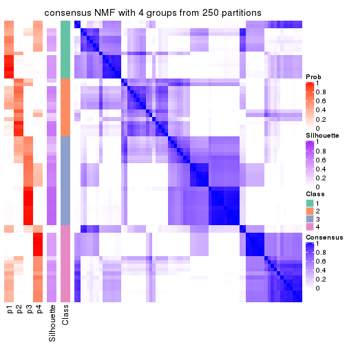
consensus_heatmap(res, k = 5)
consensus_heatmap(res, k = 6)
Heatmaps for the membership of samples in all partitions to see how consistent they are:
membership_heatmap(res, k = 2)
membership_heatmap(res, k = 3)
membership_heatmap(res, k = 4)
membership_heatmap(res, k = 5)
membership_heatmap(res, k = 6)
As soon as we have had the classes for columns, we can look for signatures which are significantly different between classes which can be candidate marks for certain classes. Following are the heatmaps for signatures.
Signature heatmaps where rows are scaled:
get_signatures(res, k = 2)
get_signatures(res, k = 3)
get_signatures(res, k = 4)
get_signatures(res, k = 5)
get_signatures(res, k = 6)
Signature heatmaps where rows are not scaled:
get_signatures(res, k = 2, scale_rows = FALSE)
get_signatures(res, k = 3, scale_rows = FALSE)
get_signatures(res, k = 4, scale_rows = FALSE)
get_signatures(res, k = 5, scale_rows = FALSE)
get_signatures(res, k = 6, scale_rows = FALSE)
Compare the overlap of signatures from different k:
compare_signatures(res)
get_signature() returns a data frame invisibly. TO get the list of signatures, the function
call should be assigned to a variable explicitly. In following code, if plot argument is set
to FALSE, no heatmap is plotted while only the differential analysis is performed.
# code only for demonstration
tb = get_signature(res, k = ..., plot = FALSE)
An example of the output of tb is:
#> which_row fdr mean_1 mean_2 scaled_mean_1 scaled_mean_2 km
#> 1 38 0.042760348 8.373488 9.131774 -0.5533452 0.5164555 1
#> 2 40 0.018707592 7.106213 8.469186 -0.6173731 0.5762149 1
#> 3 55 0.019134737 10.221463 11.207825 -0.6159697 0.5749050 1
#> 4 59 0.006059896 5.921854 7.869574 -0.6899429 0.6439467 1
#> 5 60 0.018055526 8.928898 10.211722 -0.6204761 0.5791110 1
#> 6 98 0.009384629 15.714769 14.887706 0.6635654 -0.6193277 2
...
The columns in tb are:
which_row: row indices corresponding to the input matrix.fdr: FDR for the differential test. mean_x: The mean value in group x.scaled_mean_x: The mean value in group x after rows are scaled.km: Row groups if k-means clustering is applied to rows.UMAP plot which shows how samples are separated.
dimension_reduction(res, k = 2, method = "UMAP")
dimension_reduction(res, k = 3, method = "UMAP")
dimension_reduction(res, k = 4, method = "UMAP")
dimension_reduction(res, k = 5, method = "UMAP")
dimension_reduction(res, k = 6, method = "UMAP")
Following heatmap shows how subgroups are split when increasing k:
collect_classes(res)
If matrix rows can be associated to genes, consider to use functional_enrichment(res,
...) to perform function enrichment for the signature genes. See this vignette for more detailed explanations.
The object with results only for a single top-value method and a single partition method can be extracted as:
res = res_list["ATC", "hclust"]
# you can also extract it by
# res = res_list["ATC:hclust"]
A summary of res and all the functions that can be applied to it:
res
#> A 'ConsensusPartition' object with k = 2, 3, 4, 5, 6.
#> On a matrix with 12731 rows and 73 columns.
#> Top rows (1000, 2000, 3000, 4000, 5000) are extracted by 'ATC' method.
#> Subgroups are detected by 'hclust' method.
#> Performed in total 1250 partitions by row resampling.
#> Best k for subgroups seems to be 2.
#>
#> Following methods can be applied to this 'ConsensusPartition' object:
#> [1] "cola_report" "collect_classes" "collect_plots"
#> [4] "collect_stats" "colnames" "compare_signatures"
#> [7] "consensus_heatmap" "dimension_reduction" "functional_enrichment"
#> [10] "get_anno_col" "get_anno" "get_classes"
#> [13] "get_consensus" "get_matrix" "get_membership"
#> [16] "get_param" "get_signatures" "get_stats"
#> [19] "is_best_k" "is_stable_k" "membership_heatmap"
#> [22] "ncol" "nrow" "plot_ecdf"
#> [25] "rownames" "select_partition_number" "show"
#> [28] "suggest_best_k" "test_to_known_factors"
collect_plots() function collects all the plots made from res for all k (number of partitions)
into one single page to provide an easy and fast comparison between different k.
collect_plots(res)
The plots are:
k and the heatmap of
predicted classes for each k.k.k.k.All the plots in panels can be made by individual functions and they are plotted later in this section.
select_partition_number() produces several plots showing different
statistics for choosing “optimized” k. There are following statistics:
k;k, the area increased is defined as \(A_k - A_{k-1}\).The detailed explanations of these statistics can be found in the cola vignette.
Generally speaking, lower PAC score, higher mean silhouette score or higher
concordance corresponds to better partition. Rand index and Jaccard index
measure how similar the current partition is compared to partition with k-1.
If they are too similar, we won't accept k is better than k-1.
select_partition_number(res)

The numeric values for all these statistics can be obtained by get_stats().
get_stats(res)
#> k 1-PAC mean_silhouette concordance area_increased Rand Jaccard
#> 2 2 0.568 0.816 0.914 0.4971 0.494 0.494
#> 3 3 0.623 0.778 0.842 0.2505 0.900 0.797
#> 4 4 0.699 0.760 0.838 0.1659 0.893 0.732
#> 5 5 0.796 0.770 0.861 0.0625 0.959 0.860
#> 6 6 0.838 0.797 0.878 0.0614 0.925 0.706
suggest_best_k() suggests the best \(k\) based on these statistics. The rules are as follows:
suggest_best_k(res)
#> [1] 2
Following shows the table of the partitions (You need to click the show/hide
code output link to see it). The membership matrix (columns with name p*)
is inferred by
clue::cl_consensus()
function with the SE method. Basically the value in the membership matrix
represents the probability to belong to a certain group. The finall class
label for an item is determined with the group with highest probability it
belongs to.
In get_classes() function, the entropy is calculated from the membership
matrix and the silhouette score is calculated from the consensus matrix.
cbind(get_classes(res, k = 2), get_membership(res, k = 2))
#> class entropy silhouette p1 p2
#> SRR2144343 2 0.0000 0.909 0.000 1.000
#> SRR2144345 2 0.0000 0.909 0.000 1.000
#> SRR2144344 2 0.7453 0.768 0.212 0.788
#> SRR2144342 2 0.0000 0.909 0.000 1.000
#> SRR2144341 2 0.0000 0.909 0.000 1.000
#> SRR2144340 2 0.0000 0.909 0.000 1.000
#> SRR2144339 2 0.0000 0.909 0.000 1.000
#> SRR2144336 2 0.7453 0.768 0.212 0.788
#> SRR2144338 2 0.0000 0.909 0.000 1.000
#> SRR2144337 2 0.9833 0.361 0.424 0.576
#> SRR2144335 2 0.7453 0.768 0.212 0.788
#> SRR2144332 2 0.0000 0.909 0.000 1.000
#> SRR2144334 2 0.0000 0.909 0.000 1.000
#> SRR2144333 2 0.7453 0.768 0.212 0.788
#> SRR2144331 2 0.0000 0.909 0.000 1.000
#> SRR2144330 2 0.7453 0.768 0.212 0.788
#> SRR2144328 2 0.0000 0.909 0.000 1.000
#> SRR2144329 2 0.0000 0.909 0.000 1.000
#> SRR2144327 2 0.0000 0.909 0.000 1.000
#> SRR2144326 2 0.7453 0.768 0.212 0.788
#> SRR2144325 2 0.0000 0.909 0.000 1.000
#> SRR2144323 2 0.0000 0.909 0.000 1.000
#> SRR2144324 2 0.7453 0.768 0.212 0.788
#> SRR2144321 2 0.0000 0.909 0.000 1.000
#> SRR2144322 2 0.0000 0.909 0.000 1.000
#> SRR2144320 2 0.7453 0.768 0.212 0.788
#> SRR2144319 2 0.0000 0.909 0.000 1.000
#> SRR2144316 2 0.0000 0.909 0.000 1.000
#> SRR2144317 2 0.7453 0.768 0.212 0.788
#> SRR2144318 2 0.0000 0.909 0.000 1.000
#> SRR2144315 1 0.9710 0.240 0.600 0.400
#> SRR2144314 1 0.2603 0.862 0.956 0.044
#> SRR2144313 2 0.0000 0.909 0.000 1.000
#> SRR2144312 1 0.0376 0.887 0.996 0.004
#> SRR2144311 1 0.9170 0.583 0.668 0.332
#> SRR2144308 1 0.9552 0.300 0.624 0.376
#> SRR2144309 1 0.0376 0.887 0.996 0.004
#> SRR2144310 2 0.0000 0.909 0.000 1.000
#> SRR2144307 2 0.0000 0.909 0.000 1.000
#> SRR2144304 2 0.0000 0.909 0.000 1.000
#> SRR2144306 1 0.0000 0.888 1.000 0.000
#> SRR2144303 2 0.9000 0.490 0.316 0.684
#> SRR2144305 1 0.0376 0.887 0.996 0.004
#> SRR2144302 1 0.0376 0.887 0.996 0.004
#> SRR2144301 1 0.0000 0.888 1.000 0.000
#> SRR2144300 1 0.9286 0.565 0.656 0.344
#> SRR2144299 1 0.7056 0.736 0.808 0.192
#> SRR2144298 1 0.7453 0.718 0.788 0.212
#> SRR2144297 1 0.0000 0.888 1.000 0.000
#> SRR2144296 1 0.0000 0.888 1.000 0.000
#> SRR2144295 1 0.0000 0.888 1.000 0.000
#> SRR2144293 1 0.0000 0.888 1.000 0.000
#> SRR2144294 1 0.0000 0.888 1.000 0.000
#> SRR2144291 1 0.0000 0.888 1.000 0.000
#> SRR2144292 1 0.0000 0.888 1.000 0.000
#> SRR2144289 1 0.0000 0.888 1.000 0.000
#> SRR2144290 1 0.0000 0.888 1.000 0.000
#> SRR2144287 1 0.0000 0.888 1.000 0.000
#> SRR2144288 1 0.0000 0.888 1.000 0.000
#> SRR2144286 1 0.0000 0.888 1.000 0.000
#> SRR2144285 1 0.0000 0.888 1.000 0.000
#> SRR2144284 1 0.0376 0.887 0.996 0.004
#> SRR2144282 1 0.0376 0.887 0.996 0.004
#> SRR2144283 1 0.0000 0.888 1.000 0.000
#> SRR2144281 1 0.0000 0.888 1.000 0.000
#> SRR2144279 1 0.9286 0.565 0.656 0.344
#> SRR2144280 1 0.9286 0.565 0.656 0.344
#> SRR2144278 1 0.9170 0.583 0.668 0.332
#> SRR2144277 1 0.9248 0.571 0.660 0.340
#> SRR2144276 1 0.0376 0.887 0.996 0.004
#> SRR2144274 1 0.9170 0.583 0.668 0.332
#> SRR2144275 1 0.0376 0.887 0.996 0.004
#> SRR2144273 1 0.0000 0.888 1.000 0.000
cbind(get_classes(res, k = 3), get_membership(res, k = 3))
#> class entropy silhouette p1 p2 p3
#> SRR2144343 2 0.000 0.9258 0.000 1.000 0.000
#> SRR2144345 2 0.000 0.9258 0.000 1.000 0.000
#> SRR2144344 3 0.905 0.8792 0.212 0.232 0.556
#> SRR2144342 2 0.579 0.6182 0.000 0.668 0.332
#> SRR2144341 2 0.000 0.9258 0.000 1.000 0.000
#> SRR2144340 2 0.394 0.8072 0.000 0.844 0.156
#> SRR2144339 2 0.000 0.9258 0.000 1.000 0.000
#> SRR2144336 3 0.905 0.8792 0.212 0.232 0.556
#> SRR2144338 2 0.000 0.9258 0.000 1.000 0.000
#> SRR2144337 3 0.741 0.5269 0.416 0.036 0.548
#> SRR2144335 3 0.905 0.8792 0.212 0.232 0.556
#> SRR2144332 2 0.000 0.9258 0.000 1.000 0.000
#> SRR2144334 2 0.000 0.9258 0.000 1.000 0.000
#> SRR2144333 3 0.905 0.8792 0.212 0.232 0.556
#> SRR2144331 2 0.000 0.9258 0.000 1.000 0.000
#> SRR2144330 3 0.905 0.8792 0.212 0.232 0.556
#> SRR2144328 2 0.000 0.9258 0.000 1.000 0.000
#> SRR2144329 2 0.000 0.9258 0.000 1.000 0.000
#> SRR2144327 2 0.000 0.9258 0.000 1.000 0.000
#> SRR2144326 3 0.905 0.8792 0.212 0.232 0.556
#> SRR2144325 2 0.000 0.9258 0.000 1.000 0.000
#> SRR2144323 2 0.000 0.9258 0.000 1.000 0.000
#> SRR2144324 3 0.905 0.8792 0.212 0.232 0.556
#> SRR2144321 2 0.000 0.9258 0.000 1.000 0.000
#> SRR2144322 2 0.000 0.9258 0.000 1.000 0.000
#> SRR2144320 3 0.905 0.8792 0.212 0.232 0.556
#> SRR2144319 2 0.000 0.9258 0.000 1.000 0.000
#> SRR2144316 2 0.000 0.9258 0.000 1.000 0.000
#> SRR2144317 3 0.905 0.8792 0.212 0.232 0.556
#> SRR2144318 2 0.000 0.9258 0.000 1.000 0.000
#> SRR2144315 1 0.723 -0.0825 0.600 0.036 0.364
#> SRR2144314 1 0.205 0.7881 0.952 0.028 0.020
#> SRR2144313 2 0.455 0.7711 0.000 0.800 0.200
#> SRR2144312 1 0.196 0.8217 0.944 0.000 0.056
#> SRR2144311 1 0.625 0.5605 0.556 0.000 0.444
#> SRR2144308 1 0.655 0.0113 0.616 0.012 0.372
#> SRR2144309 1 0.196 0.8217 0.944 0.000 0.056
#> SRR2144310 2 0.435 0.7838 0.000 0.816 0.184
#> SRR2144307 2 0.455 0.7711 0.000 0.800 0.200
#> SRR2144304 2 0.455 0.7711 0.000 0.800 0.200
#> SRR2144306 1 0.175 0.8237 0.952 0.000 0.048
#> SRR2144303 3 0.973 -0.1301 0.228 0.352 0.420
#> SRR2144305 1 0.196 0.8217 0.944 0.000 0.056
#> SRR2144302 1 0.196 0.8217 0.944 0.000 0.056
#> SRR2144301 1 0.196 0.8246 0.944 0.000 0.056
#> SRR2144300 1 0.676 0.5521 0.552 0.012 0.436
#> SRR2144299 1 0.553 0.6740 0.704 0.000 0.296
#> SRR2144298 1 0.573 0.6562 0.676 0.000 0.324
#> SRR2144297 1 0.000 0.8192 1.000 0.000 0.000
#> SRR2144296 1 0.000 0.8192 1.000 0.000 0.000
#> SRR2144295 1 0.000 0.8192 1.000 0.000 0.000
#> SRR2144293 1 0.000 0.8192 1.000 0.000 0.000
#> SRR2144294 1 0.175 0.8237 0.952 0.000 0.048
#> SRR2144291 1 0.175 0.8237 0.952 0.000 0.048
#> SRR2144292 1 0.000 0.8192 1.000 0.000 0.000
#> SRR2144289 1 0.196 0.8246 0.944 0.000 0.056
#> SRR2144290 1 0.000 0.8192 1.000 0.000 0.000
#> SRR2144287 1 0.196 0.8246 0.944 0.000 0.056
#> SRR2144288 1 0.000 0.8192 1.000 0.000 0.000
#> SRR2144286 1 0.000 0.8192 1.000 0.000 0.000
#> SRR2144285 1 0.000 0.8192 1.000 0.000 0.000
#> SRR2144284 1 0.216 0.8229 0.936 0.000 0.064
#> SRR2144282 1 0.196 0.8217 0.944 0.000 0.056
#> SRR2144283 1 0.164 0.8242 0.956 0.000 0.044
#> SRR2144281 1 0.164 0.8242 0.956 0.000 0.044
#> SRR2144279 1 0.676 0.5521 0.552 0.012 0.436
#> SRR2144280 1 0.676 0.5521 0.552 0.012 0.436
#> SRR2144278 1 0.625 0.5605 0.556 0.000 0.444
#> SRR2144277 1 0.662 0.5565 0.556 0.008 0.436
#> SRR2144276 1 0.196 0.8217 0.944 0.000 0.056
#> SRR2144274 1 0.625 0.5605 0.556 0.000 0.444
#> SRR2144275 1 0.196 0.8217 0.944 0.000 0.056
#> SRR2144273 1 0.000 0.8192 1.000 0.000 0.000
cbind(get_classes(res, k = 4), get_membership(res, k = 4))
#> class entropy silhouette p1 p2 p3 p4
#> SRR2144343 2 0.0000 0.9293 0.000 1.000 0.000 0.000
#> SRR2144345 2 0.0000 0.9293 0.000 1.000 0.000 0.000
#> SRR2144344 3 0.3157 0.9671 0.000 0.004 0.852 0.144
#> SRR2144342 2 0.5973 0.5252 0.332 0.612 0.056 0.000
#> SRR2144341 2 0.0000 0.9293 0.000 1.000 0.000 0.000
#> SRR2144340 2 0.4532 0.7825 0.156 0.792 0.052 0.000
#> SRR2144339 2 0.0000 0.9293 0.000 1.000 0.000 0.000
#> SRR2144336 3 0.3157 0.9671 0.000 0.004 0.852 0.144
#> SRR2144338 2 0.0000 0.9293 0.000 1.000 0.000 0.000
#> SRR2144337 3 0.5464 0.6055 0.020 0.004 0.632 0.344
#> SRR2144335 3 0.3157 0.9671 0.000 0.004 0.852 0.144
#> SRR2144332 2 0.0000 0.9293 0.000 1.000 0.000 0.000
#> SRR2144334 2 0.0000 0.9293 0.000 1.000 0.000 0.000
#> SRR2144333 3 0.3157 0.9671 0.000 0.004 0.852 0.144
#> SRR2144331 2 0.0000 0.9293 0.000 1.000 0.000 0.000
#> SRR2144330 3 0.3157 0.9671 0.000 0.004 0.852 0.144
#> SRR2144328 2 0.0000 0.9293 0.000 1.000 0.000 0.000
#> SRR2144329 2 0.0000 0.9293 0.000 1.000 0.000 0.000
#> SRR2144327 2 0.0000 0.9293 0.000 1.000 0.000 0.000
#> SRR2144326 3 0.3157 0.9671 0.000 0.004 0.852 0.144
#> SRR2144325 2 0.0000 0.9293 0.000 1.000 0.000 0.000
#> SRR2144323 2 0.0000 0.9293 0.000 1.000 0.000 0.000
#> SRR2144324 3 0.3157 0.9671 0.000 0.004 0.852 0.144
#> SRR2144321 2 0.0000 0.9293 0.000 1.000 0.000 0.000
#> SRR2144322 2 0.0000 0.9293 0.000 1.000 0.000 0.000
#> SRR2144320 3 0.3157 0.9671 0.000 0.004 0.852 0.144
#> SRR2144319 2 0.0000 0.9293 0.000 1.000 0.000 0.000
#> SRR2144316 2 0.0000 0.9293 0.000 1.000 0.000 0.000
#> SRR2144317 3 0.3157 0.9671 0.000 0.004 0.852 0.144
#> SRR2144318 2 0.0000 0.9293 0.000 1.000 0.000 0.000
#> SRR2144315 4 0.5760 -0.1199 0.020 0.004 0.456 0.520
#> SRR2144314 4 0.2965 0.6956 0.036 0.000 0.072 0.892
#> SRR2144313 2 0.4998 0.7390 0.200 0.748 0.052 0.000
#> SRR2144312 4 0.5750 0.3320 0.440 0.000 0.028 0.532
#> SRR2144311 1 0.0188 0.9109 0.996 0.000 0.004 0.000
#> SRR2144308 4 0.5908 -0.0407 0.028 0.004 0.432 0.536
#> SRR2144309 4 0.5750 0.3320 0.440 0.000 0.028 0.532
#> SRR2144310 2 0.4839 0.7556 0.184 0.764 0.052 0.000
#> SRR2144307 2 0.4998 0.7390 0.200 0.748 0.052 0.000
#> SRR2144304 2 0.4998 0.7390 0.200 0.748 0.052 0.000
#> SRR2144306 4 0.4030 0.7238 0.072 0.000 0.092 0.836
#> SRR2144303 1 0.4955 0.3658 0.648 0.344 0.008 0.000
#> SRR2144305 4 0.5750 0.3320 0.440 0.000 0.028 0.532
#> SRR2144302 4 0.5750 0.3320 0.440 0.000 0.028 0.532
#> SRR2144301 4 0.3652 0.7255 0.052 0.000 0.092 0.856
#> SRR2144300 1 0.0524 0.9109 0.988 0.004 0.008 0.000
#> SRR2144299 1 0.3858 0.7988 0.844 0.000 0.100 0.056
#> SRR2144298 1 0.3215 0.8297 0.876 0.000 0.092 0.032
#> SRR2144297 4 0.0000 0.7442 0.000 0.000 0.000 1.000
#> SRR2144296 4 0.0000 0.7442 0.000 0.000 0.000 1.000
#> SRR2144295 4 0.0000 0.7442 0.000 0.000 0.000 1.000
#> SRR2144293 4 0.0000 0.7442 0.000 0.000 0.000 1.000
#> SRR2144294 4 0.4030 0.7238 0.072 0.000 0.092 0.836
#> SRR2144291 4 0.4030 0.7238 0.072 0.000 0.092 0.836
#> SRR2144292 4 0.0000 0.7442 0.000 0.000 0.000 1.000
#> SRR2144289 4 0.3652 0.7255 0.052 0.000 0.092 0.856
#> SRR2144290 4 0.0000 0.7442 0.000 0.000 0.000 1.000
#> SRR2144287 4 0.3652 0.7255 0.052 0.000 0.092 0.856
#> SRR2144288 4 0.0000 0.7442 0.000 0.000 0.000 1.000
#> SRR2144286 4 0.0000 0.7442 0.000 0.000 0.000 1.000
#> SRR2144285 4 0.0000 0.7442 0.000 0.000 0.000 1.000
#> SRR2144284 4 0.4030 0.7152 0.072 0.000 0.092 0.836
#> SRR2144282 4 0.5750 0.3320 0.440 0.000 0.028 0.532
#> SRR2144283 4 0.3828 0.7302 0.068 0.000 0.084 0.848
#> SRR2144281 4 0.3828 0.7302 0.068 0.000 0.084 0.848
#> SRR2144279 1 0.0524 0.9109 0.988 0.004 0.008 0.000
#> SRR2144280 1 0.0524 0.9109 0.988 0.004 0.008 0.000
#> SRR2144278 1 0.0188 0.9109 0.996 0.000 0.004 0.000
#> SRR2144277 1 0.0336 0.9109 0.992 0.000 0.008 0.000
#> SRR2144276 4 0.5750 0.3320 0.440 0.000 0.028 0.532
#> SRR2144274 1 0.0188 0.9109 0.996 0.000 0.004 0.000
#> SRR2144275 4 0.5750 0.3320 0.440 0.000 0.028 0.532
#> SRR2144273 4 0.0000 0.7442 0.000 0.000 0.000 1.000
cbind(get_classes(res, k = 5), get_membership(res, k = 5))
#> class entropy silhouette p1 p2 p3 p4 p5
#> SRR2144343 2 0.0000 1.0000 0.000 1.000 0.000 0.000 0.000
#> SRR2144345 2 0.0000 1.0000 0.000 1.000 0.000 0.000 0.000
#> SRR2144344 3 0.0000 0.9479 0.000 0.000 1.000 0.000 0.000
#> SRR2144342 5 0.2773 0.6619 0.164 0.000 0.000 0.000 0.836
#> SRR2144341 2 0.0000 1.0000 0.000 1.000 0.000 0.000 0.000
#> SRR2144340 5 0.4297 0.3142 0.000 0.472 0.000 0.000 0.528
#> SRR2144339 2 0.0000 1.0000 0.000 1.000 0.000 0.000 0.000
#> SRR2144336 3 0.0000 0.9479 0.000 0.000 1.000 0.000 0.000
#> SRR2144338 2 0.0000 1.0000 0.000 1.000 0.000 0.000 0.000
#> SRR2144337 3 0.5503 0.4550 0.020 0.000 0.644 0.276 0.060
#> SRR2144335 3 0.0000 0.9479 0.000 0.000 1.000 0.000 0.000
#> SRR2144332 2 0.0000 1.0000 0.000 1.000 0.000 0.000 0.000
#> SRR2144334 2 0.0000 1.0000 0.000 1.000 0.000 0.000 0.000
#> SRR2144333 3 0.0000 0.9479 0.000 0.000 1.000 0.000 0.000
#> SRR2144331 2 0.0000 1.0000 0.000 1.000 0.000 0.000 0.000
#> SRR2144330 3 0.0000 0.9479 0.000 0.000 1.000 0.000 0.000
#> SRR2144328 2 0.0000 1.0000 0.000 1.000 0.000 0.000 0.000
#> SRR2144329 2 0.0000 1.0000 0.000 1.000 0.000 0.000 0.000
#> SRR2144327 2 0.0000 1.0000 0.000 1.000 0.000 0.000 0.000
#> SRR2144326 3 0.0000 0.9479 0.000 0.000 1.000 0.000 0.000
#> SRR2144325 2 0.0000 1.0000 0.000 1.000 0.000 0.000 0.000
#> SRR2144323 2 0.0000 1.0000 0.000 1.000 0.000 0.000 0.000
#> SRR2144324 3 0.0000 0.9479 0.000 0.000 1.000 0.000 0.000
#> SRR2144321 2 0.0000 1.0000 0.000 1.000 0.000 0.000 0.000
#> SRR2144322 2 0.0000 1.0000 0.000 1.000 0.000 0.000 0.000
#> SRR2144320 3 0.0000 0.9479 0.000 0.000 1.000 0.000 0.000
#> SRR2144319 2 0.0000 1.0000 0.000 1.000 0.000 0.000 0.000
#> SRR2144316 2 0.0000 1.0000 0.000 1.000 0.000 0.000 0.000
#> SRR2144317 3 0.0000 0.9479 0.000 0.000 1.000 0.000 0.000
#> SRR2144318 2 0.0000 1.0000 0.000 1.000 0.000 0.000 0.000
#> SRR2144315 4 0.5349 0.0697 0.020 0.000 0.472 0.488 0.020
#> SRR2144314 4 0.3149 0.7125 0.036 0.000 0.072 0.872 0.020
#> SRR2144313 5 0.3321 0.8591 0.032 0.136 0.000 0.000 0.832
#> SRR2144312 4 0.6096 0.2121 0.440 0.000 0.024 0.472 0.064
#> SRR2144311 1 0.0000 0.9125 1.000 0.000 0.000 0.000 0.000
#> SRR2144308 4 0.6119 0.0890 0.028 0.000 0.444 0.468 0.060
#> SRR2144309 4 0.6096 0.2121 0.440 0.000 0.024 0.472 0.064
#> SRR2144310 5 0.3236 0.8506 0.020 0.152 0.000 0.000 0.828
#> SRR2144307 5 0.3321 0.8591 0.032 0.136 0.000 0.000 0.832
#> SRR2144304 5 0.3321 0.8591 0.032 0.136 0.000 0.000 0.832
#> SRR2144306 4 0.3476 0.7180 0.076 0.000 0.000 0.836 0.088
#> SRR2144303 1 0.4088 0.4254 0.632 0.000 0.000 0.000 0.368
#> SRR2144305 4 0.6096 0.2121 0.440 0.000 0.024 0.472 0.064
#> SRR2144302 4 0.6096 0.2121 0.440 0.000 0.024 0.472 0.064
#> SRR2144301 4 0.3159 0.7233 0.056 0.000 0.000 0.856 0.088
#> SRR2144300 1 0.0703 0.9114 0.976 0.000 0.000 0.000 0.024
#> SRR2144299 1 0.3241 0.8113 0.832 0.000 0.000 0.024 0.144
#> SRR2144298 1 0.2424 0.8344 0.868 0.000 0.000 0.000 0.132
#> SRR2144297 4 0.0000 0.7538 0.000 0.000 0.000 1.000 0.000
#> SRR2144296 4 0.0000 0.7538 0.000 0.000 0.000 1.000 0.000
#> SRR2144295 4 0.0000 0.7538 0.000 0.000 0.000 1.000 0.000
#> SRR2144293 4 0.0000 0.7538 0.000 0.000 0.000 1.000 0.000
#> SRR2144294 4 0.3476 0.7180 0.076 0.000 0.000 0.836 0.088
#> SRR2144291 4 0.3476 0.7180 0.076 0.000 0.000 0.836 0.088
#> SRR2144292 4 0.0000 0.7538 0.000 0.000 0.000 1.000 0.000
#> SRR2144289 4 0.3159 0.7233 0.056 0.000 0.000 0.856 0.088
#> SRR2144290 4 0.0000 0.7538 0.000 0.000 0.000 1.000 0.000
#> SRR2144287 4 0.3159 0.7233 0.056 0.000 0.000 0.856 0.088
#> SRR2144288 4 0.0000 0.7538 0.000 0.000 0.000 1.000 0.000
#> SRR2144286 4 0.0000 0.7538 0.000 0.000 0.000 1.000 0.000
#> SRR2144285 4 0.0000 0.7538 0.000 0.000 0.000 1.000 0.000
#> SRR2144284 4 0.3476 0.7128 0.076 0.000 0.000 0.836 0.088
#> SRR2144282 4 0.6096 0.2121 0.440 0.000 0.024 0.472 0.064
#> SRR2144283 4 0.3301 0.7240 0.072 0.000 0.000 0.848 0.080
#> SRR2144281 4 0.3301 0.7240 0.072 0.000 0.000 0.848 0.080
#> SRR2144279 1 0.0703 0.9114 0.976 0.000 0.000 0.000 0.024
#> SRR2144280 1 0.0703 0.9114 0.976 0.000 0.000 0.000 0.024
#> SRR2144278 1 0.0000 0.9125 1.000 0.000 0.000 0.000 0.000
#> SRR2144277 1 0.0510 0.9125 0.984 0.000 0.000 0.000 0.016
#> SRR2144276 4 0.6096 0.2121 0.440 0.000 0.024 0.472 0.064
#> SRR2144274 1 0.0000 0.9125 1.000 0.000 0.000 0.000 0.000
#> SRR2144275 4 0.6096 0.2121 0.440 0.000 0.024 0.472 0.064
#> SRR2144273 4 0.0000 0.7538 0.000 0.000 0.000 1.000 0.000
cbind(get_classes(res, k = 6), get_membership(res, k = 6))
#> class entropy silhouette p1 p2 p3 p4 p5 p6
#> SRR2144343 2 0.0000 0.9220 0.000 1.000 0.000 0.000 0.000 0.000
#> SRR2144345 2 0.0000 0.9220 0.000 1.000 0.000 0.000 0.000 0.000
#> SRR2144344 3 0.0000 0.9523 0.000 0.000 1.000 0.000 0.000 0.000
#> SRR2144342 6 0.2300 0.6768 0.144 0.000 0.000 0.000 0.000 0.856
#> SRR2144341 2 0.0000 0.9220 0.000 1.000 0.000 0.000 0.000 0.000
#> SRR2144340 6 0.3531 0.3784 0.000 0.328 0.000 0.000 0.000 0.672
#> SRR2144339 2 0.0000 0.9220 0.000 1.000 0.000 0.000 0.000 0.000
#> SRR2144336 3 0.0000 0.9523 0.000 0.000 1.000 0.000 0.000 0.000
#> SRR2144338 2 0.2300 0.8970 0.000 0.856 0.000 0.000 0.000 0.144
#> SRR2144337 3 0.3647 0.3311 0.000 0.000 0.640 0.000 0.360 0.000
#> SRR2144335 3 0.0000 0.9523 0.000 0.000 1.000 0.000 0.000 0.000
#> SRR2144332 2 0.0000 0.9220 0.000 1.000 0.000 0.000 0.000 0.000
#> SRR2144334 2 0.2300 0.8970 0.000 0.856 0.000 0.000 0.000 0.144
#> SRR2144333 3 0.0000 0.9523 0.000 0.000 1.000 0.000 0.000 0.000
#> SRR2144331 2 0.2300 0.8970 0.000 0.856 0.000 0.000 0.000 0.144
#> SRR2144330 3 0.0000 0.9523 0.000 0.000 1.000 0.000 0.000 0.000
#> SRR2144328 2 0.2300 0.8970 0.000 0.856 0.000 0.000 0.000 0.144
#> SRR2144329 2 0.0000 0.9220 0.000 1.000 0.000 0.000 0.000 0.000
#> SRR2144327 2 0.2300 0.8970 0.000 0.856 0.000 0.000 0.000 0.144
#> SRR2144326 3 0.0000 0.9523 0.000 0.000 1.000 0.000 0.000 0.000
#> SRR2144325 2 0.0000 0.9220 0.000 1.000 0.000 0.000 0.000 0.000
#> SRR2144323 2 0.0000 0.9220 0.000 1.000 0.000 0.000 0.000 0.000
#> SRR2144324 3 0.0000 0.9523 0.000 0.000 1.000 0.000 0.000 0.000
#> SRR2144321 2 0.0000 0.9220 0.000 1.000 0.000 0.000 0.000 0.000
#> SRR2144322 2 0.2300 0.8970 0.000 0.856 0.000 0.000 0.000 0.144
#> SRR2144320 3 0.0000 0.9523 0.000 0.000 1.000 0.000 0.000 0.000
#> SRR2144319 2 0.0000 0.9220 0.000 1.000 0.000 0.000 0.000 0.000
#> SRR2144316 2 0.2300 0.8970 0.000 0.856 0.000 0.000 0.000 0.144
#> SRR2144317 3 0.0000 0.9523 0.000 0.000 1.000 0.000 0.000 0.000
#> SRR2144318 2 0.2300 0.8970 0.000 0.856 0.000 0.000 0.000 0.144
#> SRR2144315 5 0.4903 0.0403 0.000 0.000 0.468 0.060 0.472 0.000
#> SRR2144314 4 0.5280 0.3103 0.012 0.000 0.068 0.504 0.416 0.000
#> SRR2144313 6 0.0603 0.8534 0.016 0.004 0.000 0.000 0.000 0.980
#> SRR2144312 5 0.0806 0.7942 0.008 0.000 0.020 0.000 0.972 0.000
#> SRR2144311 1 0.0146 0.8171 0.996 0.000 0.000 0.000 0.004 0.000
#> SRR2144308 5 0.3828 0.1849 0.000 0.000 0.440 0.000 0.560 0.000
#> SRR2144309 5 0.0806 0.7942 0.008 0.000 0.020 0.000 0.972 0.000
#> SRR2144310 6 0.0260 0.8446 0.000 0.008 0.000 0.000 0.000 0.992
#> SRR2144307 6 0.0603 0.8534 0.016 0.004 0.000 0.000 0.000 0.980
#> SRR2144304 6 0.0603 0.8534 0.016 0.004 0.000 0.000 0.000 0.980
#> SRR2144306 4 0.3566 0.7782 0.056 0.000 0.000 0.788 0.156 0.000
#> SRR2144303 1 0.4131 0.3988 0.600 0.000 0.000 0.000 0.016 0.384
#> SRR2144305 5 0.0547 0.7891 0.000 0.000 0.020 0.000 0.980 0.000
#> SRR2144302 5 0.0806 0.7942 0.008 0.000 0.020 0.000 0.972 0.000
#> SRR2144301 4 0.1462 0.8394 0.056 0.000 0.000 0.936 0.008 0.000
#> SRR2144300 1 0.2667 0.8435 0.852 0.000 0.000 0.000 0.128 0.020
#> SRR2144299 5 0.5113 -0.3337 0.448 0.000 0.000 0.080 0.472 0.000
#> SRR2144298 1 0.4711 0.4545 0.640 0.000 0.000 0.080 0.280 0.000
#> SRR2144297 4 0.1556 0.8725 0.000 0.000 0.000 0.920 0.080 0.000
#> SRR2144296 4 0.1556 0.8725 0.000 0.000 0.000 0.920 0.080 0.000
#> SRR2144295 4 0.1556 0.8725 0.000 0.000 0.000 0.920 0.080 0.000
#> SRR2144293 4 0.1556 0.8725 0.000 0.000 0.000 0.920 0.080 0.000
#> SRR2144294 4 0.3566 0.7782 0.056 0.000 0.000 0.788 0.156 0.000
#> SRR2144291 4 0.3566 0.7782 0.056 0.000 0.000 0.788 0.156 0.000
#> SRR2144292 4 0.1556 0.8725 0.000 0.000 0.000 0.920 0.080 0.000
#> SRR2144289 4 0.1462 0.8394 0.056 0.000 0.000 0.936 0.008 0.000
#> SRR2144290 4 0.1556 0.8725 0.000 0.000 0.000 0.920 0.080 0.000
#> SRR2144287 4 0.1462 0.8394 0.056 0.000 0.000 0.936 0.008 0.000
#> SRR2144288 4 0.1556 0.8725 0.000 0.000 0.000 0.920 0.080 0.000
#> SRR2144286 4 0.1556 0.8725 0.000 0.000 0.000 0.920 0.080 0.000
#> SRR2144285 4 0.1556 0.8725 0.000 0.000 0.000 0.920 0.080 0.000
#> SRR2144284 4 0.1757 0.8323 0.076 0.000 0.000 0.916 0.008 0.000
#> SRR2144282 5 0.0806 0.7942 0.008 0.000 0.020 0.000 0.972 0.000
#> SRR2144283 4 0.3578 0.7816 0.052 0.000 0.000 0.784 0.164 0.000
#> SRR2144281 4 0.3578 0.7816 0.052 0.000 0.000 0.784 0.164 0.000
#> SRR2144279 1 0.2445 0.8500 0.872 0.000 0.000 0.000 0.108 0.020
#> SRR2144280 1 0.2667 0.8435 0.852 0.000 0.000 0.000 0.128 0.020
#> SRR2144278 1 0.0146 0.8171 0.996 0.000 0.000 0.000 0.004 0.000
#> SRR2144277 1 0.2404 0.8499 0.872 0.000 0.000 0.000 0.112 0.016
#> SRR2144276 5 0.0806 0.7942 0.008 0.000 0.020 0.000 0.972 0.000
#> SRR2144274 1 0.1501 0.8462 0.924 0.000 0.000 0.000 0.076 0.000
#> SRR2144275 5 0.0806 0.7942 0.008 0.000 0.020 0.000 0.972 0.000
#> SRR2144273 4 0.1556 0.8725 0.000 0.000 0.000 0.920 0.080 0.000
Heatmaps for the consensus matrix. It visualizes the probability of two samples to be in a same group.
consensus_heatmap(res, k = 2)
consensus_heatmap(res, k = 3)
consensus_heatmap(res, k = 4)
consensus_heatmap(res, k = 5)
consensus_heatmap(res, k = 6)
Heatmaps for the membership of samples in all partitions to see how consistent they are:
membership_heatmap(res, k = 2)
membership_heatmap(res, k = 3)
membership_heatmap(res, k = 4)
membership_heatmap(res, k = 5)

membership_heatmap(res, k = 6)
As soon as we have had the classes for columns, we can look for signatures which are significantly different between classes which can be candidate marks for certain classes. Following are the heatmaps for signatures.
Signature heatmaps where rows are scaled:
get_signatures(res, k = 2)
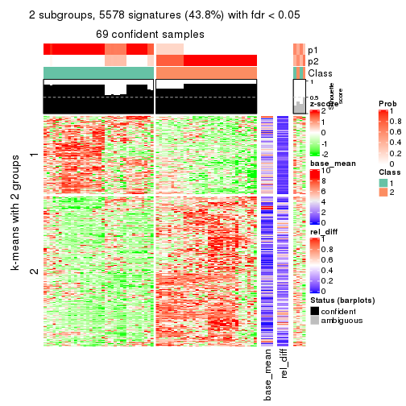
get_signatures(res, k = 3)
get_signatures(res, k = 4)
get_signatures(res, k = 5)
get_signatures(res, k = 6)
Signature heatmaps where rows are not scaled:
get_signatures(res, k = 2, scale_rows = FALSE)
get_signatures(res, k = 3, scale_rows = FALSE)
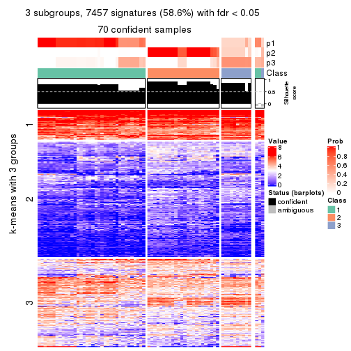
get_signatures(res, k = 4, scale_rows = FALSE)
get_signatures(res, k = 5, scale_rows = FALSE)

get_signatures(res, k = 6, scale_rows = FALSE)
Compare the overlap of signatures from different k:
compare_signatures(res)
get_signature() returns a data frame invisibly. TO get the list of signatures, the function
call should be assigned to a variable explicitly. In following code, if plot argument is set
to FALSE, no heatmap is plotted while only the differential analysis is performed.
# code only for demonstration
tb = get_signature(res, k = ..., plot = FALSE)
An example of the output of tb is:
#> which_row fdr mean_1 mean_2 scaled_mean_1 scaled_mean_2 km
#> 1 38 0.042760348 8.373488 9.131774 -0.5533452 0.5164555 1
#> 2 40 0.018707592 7.106213 8.469186 -0.6173731 0.5762149 1
#> 3 55 0.019134737 10.221463 11.207825 -0.6159697 0.5749050 1
#> 4 59 0.006059896 5.921854 7.869574 -0.6899429 0.6439467 1
#> 5 60 0.018055526 8.928898 10.211722 -0.6204761 0.5791110 1
#> 6 98 0.009384629 15.714769 14.887706 0.6635654 -0.6193277 2
...
The columns in tb are:
which_row: row indices corresponding to the input matrix.fdr: FDR for the differential test. mean_x: The mean value in group x.scaled_mean_x: The mean value in group x after rows are scaled.km: Row groups if k-means clustering is applied to rows.UMAP plot which shows how samples are separated.
dimension_reduction(res, k = 2, method = "UMAP")
dimension_reduction(res, k = 3, method = "UMAP")
dimension_reduction(res, k = 4, method = "UMAP")
dimension_reduction(res, k = 5, method = "UMAP")
dimension_reduction(res, k = 6, method = "UMAP")
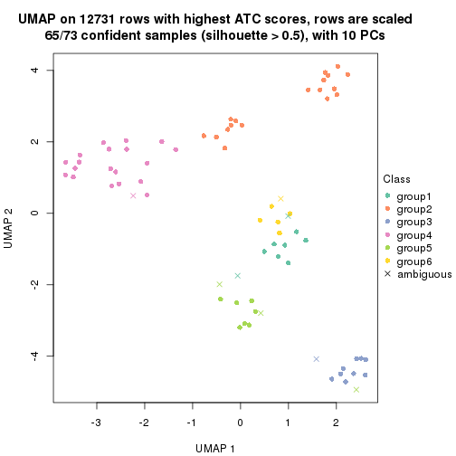
Following heatmap shows how subgroups are split when increasing k:
collect_classes(res)
If matrix rows can be associated to genes, consider to use functional_enrichment(res,
...) to perform function enrichment for the signature genes. See this vignette for more detailed explanations.
The object with results only for a single top-value method and a single partition method can be extracted as:
res = res_list["ATC", "kmeans"]
# you can also extract it by
# res = res_list["ATC:kmeans"]
A summary of res and all the functions that can be applied to it:
res
#> A 'ConsensusPartition' object with k = 2, 3, 4, 5, 6.
#> On a matrix with 12731 rows and 73 columns.
#> Top rows (1000, 2000, 3000, 4000, 5000) are extracted by 'ATC' method.
#> Subgroups are detected by 'kmeans' method.
#> Performed in total 1250 partitions by row resampling.
#> Best k for subgroups seems to be 2.
#>
#> Following methods can be applied to this 'ConsensusPartition' object:
#> [1] "cola_report" "collect_classes" "collect_plots"
#> [4] "collect_stats" "colnames" "compare_signatures"
#> [7] "consensus_heatmap" "dimension_reduction" "functional_enrichment"
#> [10] "get_anno_col" "get_anno" "get_classes"
#> [13] "get_consensus" "get_matrix" "get_membership"
#> [16] "get_param" "get_signatures" "get_stats"
#> [19] "is_best_k" "is_stable_k" "membership_heatmap"
#> [22] "ncol" "nrow" "plot_ecdf"
#> [25] "rownames" "select_partition_number" "show"
#> [28] "suggest_best_k" "test_to_known_factors"
collect_plots() function collects all the plots made from res for all k (number of partitions)
into one single page to provide an easy and fast comparison between different k.
collect_plots(res)
The plots are:
k and the heatmap of
predicted classes for each k.k.k.k.All the plots in panels can be made by individual functions and they are plotted later in this section.
select_partition_number() produces several plots showing different
statistics for choosing “optimized” k. There are following statistics:
k;k, the area increased is defined as \(A_k - A_{k-1}\).The detailed explanations of these statistics can be found in the cola vignette.
Generally speaking, lower PAC score, higher mean silhouette score or higher
concordance corresponds to better partition. Rand index and Jaccard index
measure how similar the current partition is compared to partition with k-1.
If they are too similar, we won't accept k is better than k-1.
select_partition_number(res)
The numeric values for all these statistics can be obtained by get_stats().
get_stats(res)
#> k 1-PAC mean_silhouette concordance area_increased Rand Jaccard
#> 2 2 1.000 0.990 0.993 0.5036 0.495 0.495
#> 3 3 0.656 0.799 0.847 0.3010 0.767 0.560
#> 4 4 0.736 0.804 0.841 0.1304 0.888 0.677
#> 5 5 0.743 0.797 0.817 0.0637 0.945 0.786
#> 6 6 0.750 0.685 0.792 0.0447 0.993 0.965
suggest_best_k() suggests the best \(k\) based on these statistics. The rules are as follows:
suggest_best_k(res)
#> [1] 2
Following shows the table of the partitions (You need to click the show/hide
code output link to see it). The membership matrix (columns with name p*)
is inferred by
clue::cl_consensus()
function with the SE method. Basically the value in the membership matrix
represents the probability to belong to a certain group. The finall class
label for an item is determined with the group with highest probability it
belongs to.
In get_classes() function, the entropy is calculated from the membership
matrix and the silhouette score is calculated from the consensus matrix.
cbind(get_classes(res, k = 2), get_membership(res, k = 2))
#> class entropy silhouette p1 p2
#> SRR2144343 2 0.0000 0.990 0.000 1.000
#> SRR2144345 2 0.0000 0.990 0.000 1.000
#> SRR2144344 2 0.0000 0.990 0.000 1.000
#> SRR2144342 2 0.3584 0.940 0.068 0.932
#> SRR2144341 2 0.0000 0.990 0.000 1.000
#> SRR2144340 2 0.0672 0.984 0.008 0.992
#> SRR2144339 2 0.0000 0.990 0.000 1.000
#> SRR2144336 2 0.0000 0.990 0.000 1.000
#> SRR2144338 2 0.0000 0.990 0.000 1.000
#> SRR2144337 2 0.0000 0.990 0.000 1.000
#> SRR2144335 2 0.0000 0.990 0.000 1.000
#> SRR2144332 2 0.0000 0.990 0.000 1.000
#> SRR2144334 2 0.0000 0.990 0.000 1.000
#> SRR2144333 2 0.0000 0.990 0.000 1.000
#> SRR2144331 2 0.0000 0.990 0.000 1.000
#> SRR2144330 2 0.0000 0.990 0.000 1.000
#> SRR2144328 2 0.0000 0.990 0.000 1.000
#> SRR2144329 2 0.0000 0.990 0.000 1.000
#> SRR2144327 2 0.0000 0.990 0.000 1.000
#> SRR2144326 2 0.0000 0.990 0.000 1.000
#> SRR2144325 2 0.0000 0.990 0.000 1.000
#> SRR2144323 2 0.0000 0.990 0.000 1.000
#> SRR2144324 2 0.0000 0.990 0.000 1.000
#> SRR2144321 2 0.0000 0.990 0.000 1.000
#> SRR2144322 2 0.0000 0.990 0.000 1.000
#> SRR2144320 2 0.0000 0.990 0.000 1.000
#> SRR2144319 2 0.0000 0.990 0.000 1.000
#> SRR2144316 2 0.0000 0.990 0.000 1.000
#> SRR2144317 2 0.0000 0.990 0.000 1.000
#> SRR2144318 2 0.0000 0.990 0.000 1.000
#> SRR2144315 1 0.0672 0.996 0.992 0.008
#> SRR2144314 1 0.0672 0.996 0.992 0.008
#> SRR2144313 2 0.3584 0.940 0.068 0.932
#> SRR2144312 1 0.0000 0.995 1.000 0.000
#> SRR2144311 1 0.0000 0.995 1.000 0.000
#> SRR2144308 1 0.0000 0.995 1.000 0.000
#> SRR2144309 1 0.0000 0.995 1.000 0.000
#> SRR2144310 2 0.3584 0.940 0.068 0.932
#> SRR2144307 2 0.3584 0.940 0.068 0.932
#> SRR2144304 2 0.3584 0.940 0.068 0.932
#> SRR2144306 1 0.0672 0.996 0.992 0.008
#> SRR2144303 1 0.0000 0.995 1.000 0.000
#> SRR2144305 1 0.0000 0.995 1.000 0.000
#> SRR2144302 1 0.0000 0.995 1.000 0.000
#> SRR2144301 1 0.0672 0.996 0.992 0.008
#> SRR2144300 1 0.0000 0.995 1.000 0.000
#> SRR2144299 1 0.0000 0.995 1.000 0.000
#> SRR2144298 1 0.0000 0.995 1.000 0.000
#> SRR2144297 1 0.0672 0.996 0.992 0.008
#> SRR2144296 1 0.0672 0.996 0.992 0.008
#> SRR2144295 1 0.0672 0.996 0.992 0.008
#> SRR2144293 1 0.0672 0.996 0.992 0.008
#> SRR2144294 1 0.0672 0.996 0.992 0.008
#> SRR2144291 1 0.0672 0.996 0.992 0.008
#> SRR2144292 1 0.0672 0.996 0.992 0.008
#> SRR2144289 1 0.0672 0.996 0.992 0.008
#> SRR2144290 1 0.0672 0.996 0.992 0.008
#> SRR2144287 1 0.0672 0.996 0.992 0.008
#> SRR2144288 1 0.0672 0.996 0.992 0.008
#> SRR2144286 1 0.0672 0.996 0.992 0.008
#> SRR2144285 1 0.0672 0.996 0.992 0.008
#> SRR2144284 1 0.0672 0.996 0.992 0.008
#> SRR2144282 1 0.0000 0.995 1.000 0.000
#> SRR2144283 1 0.0672 0.996 0.992 0.008
#> SRR2144281 1 0.0672 0.996 0.992 0.008
#> SRR2144279 1 0.0000 0.995 1.000 0.000
#> SRR2144280 1 0.0000 0.995 1.000 0.000
#> SRR2144278 1 0.0000 0.995 1.000 0.000
#> SRR2144277 1 0.0000 0.995 1.000 0.000
#> SRR2144276 1 0.0000 0.995 1.000 0.000
#> SRR2144274 1 0.0000 0.995 1.000 0.000
#> SRR2144275 1 0.0000 0.995 1.000 0.000
#> SRR2144273 1 0.0672 0.996 0.992 0.008
cbind(get_classes(res, k = 3), get_membership(res, k = 3))
#> class entropy silhouette p1 p2 p3
#> SRR2144343 2 0.1031 0.894 0.000 0.976 0.024
#> SRR2144345 2 0.1031 0.894 0.000 0.976 0.024
#> SRR2144344 2 0.5659 0.813 0.012 0.740 0.248
#> SRR2144342 1 0.5760 0.534 0.672 0.328 0.000
#> SRR2144341 2 0.1031 0.894 0.000 0.976 0.024
#> SRR2144340 2 0.3412 0.782 0.124 0.876 0.000
#> SRR2144339 2 0.1031 0.894 0.000 0.976 0.024
#> SRR2144336 2 0.5659 0.813 0.012 0.740 0.248
#> SRR2144338 2 0.0237 0.895 0.000 0.996 0.004
#> SRR2144337 2 0.5659 0.813 0.012 0.740 0.248
#> SRR2144335 2 0.5659 0.813 0.012 0.740 0.248
#> SRR2144332 2 0.1031 0.894 0.000 0.976 0.024
#> SRR2144334 2 0.0000 0.895 0.000 1.000 0.000
#> SRR2144333 2 0.5659 0.813 0.012 0.740 0.248
#> SRR2144331 2 0.0000 0.895 0.000 1.000 0.000
#> SRR2144330 2 0.5659 0.813 0.012 0.740 0.248
#> SRR2144328 2 0.0000 0.895 0.000 1.000 0.000
#> SRR2144329 2 0.1031 0.894 0.000 0.976 0.024
#> SRR2144327 2 0.0000 0.895 0.000 1.000 0.000
#> SRR2144326 2 0.5493 0.819 0.012 0.756 0.232
#> SRR2144325 2 0.1031 0.894 0.000 0.976 0.024
#> SRR2144323 2 0.1031 0.894 0.000 0.976 0.024
#> SRR2144324 2 0.5659 0.813 0.012 0.740 0.248
#> SRR2144321 2 0.1031 0.894 0.000 0.976 0.024
#> SRR2144322 2 0.0000 0.895 0.000 1.000 0.000
#> SRR2144320 2 0.5659 0.813 0.012 0.740 0.248
#> SRR2144319 2 0.1031 0.894 0.000 0.976 0.024
#> SRR2144316 2 0.0000 0.895 0.000 1.000 0.000
#> SRR2144317 2 0.5659 0.813 0.012 0.740 0.248
#> SRR2144318 2 0.0000 0.895 0.000 1.000 0.000
#> SRR2144315 3 0.2066 0.637 0.060 0.000 0.940
#> SRR2144314 3 0.5560 0.907 0.300 0.000 0.700
#> SRR2144313 1 0.5254 0.627 0.736 0.264 0.000
#> SRR2144312 1 0.4654 0.578 0.792 0.000 0.208
#> SRR2144311 1 0.0592 0.768 0.988 0.012 0.000
#> SRR2144308 1 0.6584 0.551 0.608 0.012 0.380
#> SRR2144309 1 0.5178 0.501 0.744 0.000 0.256
#> SRR2144310 1 0.5254 0.627 0.736 0.264 0.000
#> SRR2144307 1 0.5254 0.627 0.736 0.264 0.000
#> SRR2144304 1 0.5254 0.627 0.736 0.264 0.000
#> SRR2144306 3 0.6274 0.641 0.456 0.000 0.544
#> SRR2144303 1 0.1163 0.763 0.972 0.028 0.000
#> SRR2144305 1 0.1289 0.752 0.968 0.000 0.032
#> SRR2144302 1 0.5178 0.501 0.744 0.000 0.256
#> SRR2144301 3 0.5327 0.938 0.272 0.000 0.728
#> SRR2144300 1 0.0592 0.768 0.988 0.012 0.000
#> SRR2144299 1 0.0000 0.763 1.000 0.000 0.000
#> SRR2144298 1 0.0592 0.759 0.988 0.000 0.012
#> SRR2144297 3 0.4931 0.930 0.232 0.000 0.768
#> SRR2144296 3 0.5216 0.941 0.260 0.000 0.740
#> SRR2144295 3 0.4931 0.930 0.232 0.000 0.768
#> SRR2144293 3 0.4842 0.924 0.224 0.000 0.776
#> SRR2144294 3 0.5327 0.938 0.272 0.000 0.728
#> SRR2144291 3 0.5327 0.938 0.272 0.000 0.728
#> SRR2144292 3 0.4842 0.924 0.224 0.000 0.776
#> SRR2144289 3 0.5327 0.938 0.272 0.000 0.728
#> SRR2144290 3 0.5216 0.941 0.260 0.000 0.740
#> SRR2144287 3 0.5327 0.938 0.272 0.000 0.728
#> SRR2144288 3 0.4931 0.930 0.232 0.000 0.768
#> SRR2144286 3 0.5216 0.941 0.260 0.000 0.740
#> SRR2144285 3 0.4842 0.924 0.224 0.000 0.776
#> SRR2144284 3 0.5327 0.938 0.272 0.000 0.728
#> SRR2144282 1 0.5178 0.501 0.744 0.000 0.256
#> SRR2144283 3 0.5254 0.941 0.264 0.000 0.736
#> SRR2144281 3 0.5650 0.899 0.312 0.000 0.688
#> SRR2144279 1 0.0592 0.768 0.988 0.012 0.000
#> SRR2144280 1 0.0592 0.768 0.988 0.012 0.000
#> SRR2144278 1 0.0592 0.768 0.988 0.012 0.000
#> SRR2144277 1 0.0592 0.768 0.988 0.012 0.000
#> SRR2144276 1 0.5178 0.501 0.744 0.000 0.256
#> SRR2144274 1 0.0592 0.768 0.988 0.012 0.000
#> SRR2144275 1 0.6274 -0.230 0.544 0.000 0.456
#> SRR2144273 3 0.5216 0.941 0.260 0.000 0.740
cbind(get_classes(res, k = 4), get_membership(res, k = 4))
#> class entropy silhouette p1 p2 p3 p4
#> SRR2144343 2 0.4543 0.888 0.000 0.676 0.324 0.000
#> SRR2144345 2 0.4907 0.904 0.000 0.580 0.420 0.000
#> SRR2144344 3 0.0000 0.845 0.000 0.000 1.000 0.000
#> SRR2144342 1 0.4301 0.708 0.788 0.192 0.012 0.008
#> SRR2144341 2 0.4907 0.904 0.000 0.580 0.420 0.000
#> SRR2144340 2 0.6259 0.658 0.140 0.688 0.164 0.008
#> SRR2144339 2 0.4907 0.904 0.000 0.580 0.420 0.000
#> SRR2144336 3 0.0000 0.845 0.000 0.000 1.000 0.000
#> SRR2144338 2 0.5127 0.881 0.008 0.668 0.316 0.008
#> SRR2144337 3 0.1867 0.780 0.000 0.072 0.928 0.000
#> SRR2144335 3 0.0000 0.845 0.000 0.000 1.000 0.000
#> SRR2144332 2 0.4907 0.904 0.000 0.580 0.420 0.000
#> SRR2144334 2 0.5170 0.886 0.008 0.660 0.324 0.008
#> SRR2144333 3 0.0000 0.845 0.000 0.000 1.000 0.000
#> SRR2144331 2 0.5333 0.898 0.008 0.624 0.360 0.008
#> SRR2144330 3 0.0000 0.845 0.000 0.000 1.000 0.000
#> SRR2144328 2 0.5247 0.893 0.008 0.644 0.340 0.008
#> SRR2144329 2 0.4907 0.904 0.000 0.580 0.420 0.000
#> SRR2144327 2 0.5193 0.903 0.000 0.580 0.412 0.008
#> SRR2144326 3 0.0000 0.845 0.000 0.000 1.000 0.000
#> SRR2144325 2 0.4907 0.904 0.000 0.580 0.420 0.000
#> SRR2144323 2 0.4907 0.904 0.000 0.580 0.420 0.000
#> SRR2144324 3 0.0000 0.845 0.000 0.000 1.000 0.000
#> SRR2144321 2 0.4907 0.904 0.000 0.580 0.420 0.000
#> SRR2144322 2 0.5127 0.881 0.008 0.668 0.316 0.008
#> SRR2144320 3 0.0000 0.845 0.000 0.000 1.000 0.000
#> SRR2144319 2 0.4907 0.904 0.000 0.580 0.420 0.000
#> SRR2144316 2 0.5127 0.881 0.008 0.668 0.316 0.008
#> SRR2144317 3 0.0000 0.845 0.000 0.000 1.000 0.000
#> SRR2144318 2 0.5127 0.881 0.008 0.668 0.316 0.008
#> SRR2144315 3 0.7529 0.386 0.012 0.236 0.552 0.200
#> SRR2144314 4 0.4610 0.828 0.100 0.100 0.000 0.800
#> SRR2144313 1 0.2149 0.814 0.912 0.088 0.000 0.000
#> SRR2144312 1 0.7151 0.685 0.648 0.200 0.060 0.092
#> SRR2144311 1 0.0524 0.839 0.988 0.004 0.000 0.008
#> SRR2144308 3 0.8020 0.196 0.240 0.200 0.528 0.032
#> SRR2144309 1 0.8290 0.573 0.536 0.200 0.060 0.204
#> SRR2144310 1 0.2976 0.787 0.872 0.120 0.000 0.008
#> SRR2144307 1 0.2149 0.814 0.912 0.088 0.000 0.000
#> SRR2144304 1 0.2149 0.814 0.912 0.088 0.000 0.000
#> SRR2144306 4 0.6939 0.410 0.332 0.128 0.000 0.540
#> SRR2144303 1 0.1637 0.823 0.940 0.060 0.000 0.000
#> SRR2144305 1 0.6006 0.720 0.712 0.200 0.060 0.028
#> SRR2144302 1 0.8290 0.573 0.536 0.200 0.060 0.204
#> SRR2144301 4 0.2385 0.890 0.028 0.052 0.000 0.920
#> SRR2144300 1 0.0336 0.839 0.992 0.000 0.000 0.008
#> SRR2144299 1 0.3591 0.784 0.824 0.168 0.000 0.008
#> SRR2144298 1 0.0927 0.838 0.976 0.016 0.000 0.008
#> SRR2144297 4 0.1388 0.887 0.000 0.028 0.012 0.960
#> SRR2144296 4 0.0469 0.894 0.012 0.000 0.000 0.988
#> SRR2144295 4 0.1388 0.887 0.000 0.028 0.012 0.960
#> SRR2144293 4 0.1388 0.887 0.000 0.028 0.012 0.960
#> SRR2144294 4 0.3372 0.871 0.036 0.096 0.000 0.868
#> SRR2144291 4 0.3149 0.880 0.032 0.088 0.000 0.880
#> SRR2144292 4 0.1388 0.887 0.000 0.028 0.012 0.960
#> SRR2144289 4 0.2300 0.890 0.028 0.048 0.000 0.924
#> SRR2144290 4 0.0469 0.894 0.012 0.000 0.000 0.988
#> SRR2144287 4 0.2722 0.887 0.032 0.064 0.000 0.904
#> SRR2144288 4 0.1388 0.887 0.000 0.028 0.012 0.960
#> SRR2144286 4 0.0469 0.894 0.012 0.000 0.000 0.988
#> SRR2144285 4 0.1388 0.887 0.000 0.028 0.012 0.960
#> SRR2144284 4 0.2722 0.887 0.032 0.064 0.000 0.904
#> SRR2144282 1 0.8262 0.579 0.540 0.200 0.060 0.200
#> SRR2144283 4 0.3051 0.882 0.028 0.088 0.000 0.884
#> SRR2144281 4 0.4549 0.830 0.100 0.096 0.000 0.804
#> SRR2144279 1 0.0524 0.839 0.988 0.004 0.000 0.008
#> SRR2144280 1 0.0524 0.837 0.988 0.008 0.000 0.004
#> SRR2144278 1 0.0672 0.839 0.984 0.008 0.000 0.008
#> SRR2144277 1 0.0672 0.839 0.984 0.008 0.000 0.008
#> SRR2144276 1 0.8290 0.573 0.536 0.200 0.060 0.204
#> SRR2144274 1 0.0672 0.839 0.984 0.008 0.000 0.008
#> SRR2144275 4 0.8852 -0.171 0.328 0.208 0.060 0.404
#> SRR2144273 4 0.0469 0.894 0.012 0.000 0.000 0.988
cbind(get_classes(res, k = 5), get_membership(res, k = 5))
#> class entropy silhouette p1 p2 p3 p4 p5
#> SRR2144343 2 0.1981 0.821 0.028 0.924 0.048 0.000 0.000
#> SRR2144345 2 0.0703 0.834 0.000 0.976 0.024 0.000 0.000
#> SRR2144344 3 0.3274 0.952 0.000 0.220 0.780 0.000 0.000
#> SRR2144342 1 0.2492 0.600 0.908 0.020 0.048 0.000 0.024
#> SRR2144341 2 0.0703 0.834 0.000 0.976 0.024 0.000 0.000
#> SRR2144340 2 0.6192 0.603 0.352 0.548 0.048 0.000 0.052
#> SRR2144339 2 0.0703 0.834 0.000 0.976 0.024 0.000 0.000
#> SRR2144336 3 0.3274 0.952 0.000 0.220 0.780 0.000 0.000
#> SRR2144338 2 0.4524 0.794 0.208 0.736 0.004 0.000 0.052
#> SRR2144337 3 0.3795 0.921 0.000 0.192 0.780 0.000 0.028
#> SRR2144335 3 0.3274 0.952 0.000 0.220 0.780 0.000 0.000
#> SRR2144332 2 0.0703 0.834 0.000 0.976 0.024 0.000 0.000
#> SRR2144334 2 0.4337 0.797 0.204 0.744 0.000 0.000 0.052
#> SRR2144333 3 0.3274 0.952 0.000 0.220 0.780 0.000 0.000
#> SRR2144331 2 0.4203 0.798 0.188 0.760 0.000 0.000 0.052
#> SRR2144330 3 0.3274 0.952 0.000 0.220 0.780 0.000 0.000
#> SRR2144328 2 0.4305 0.798 0.200 0.748 0.000 0.000 0.052
#> SRR2144329 2 0.0703 0.834 0.000 0.976 0.024 0.000 0.000
#> SRR2144327 2 0.2853 0.821 0.072 0.876 0.000 0.000 0.052
#> SRR2144326 3 0.3274 0.952 0.000 0.220 0.780 0.000 0.000
#> SRR2144325 2 0.0703 0.834 0.000 0.976 0.024 0.000 0.000
#> SRR2144323 2 0.0703 0.834 0.000 0.976 0.024 0.000 0.000
#> SRR2144324 3 0.3274 0.952 0.000 0.220 0.780 0.000 0.000
#> SRR2144321 2 0.0703 0.834 0.000 0.976 0.024 0.000 0.000
#> SRR2144322 2 0.4524 0.794 0.208 0.736 0.004 0.000 0.052
#> SRR2144320 3 0.3274 0.952 0.000 0.220 0.780 0.000 0.000
#> SRR2144319 2 0.0703 0.834 0.000 0.976 0.024 0.000 0.000
#> SRR2144316 2 0.4524 0.794 0.208 0.736 0.004 0.000 0.052
#> SRR2144317 3 0.3274 0.952 0.000 0.220 0.780 0.000 0.000
#> SRR2144318 2 0.4524 0.794 0.208 0.736 0.004 0.000 0.052
#> SRR2144315 3 0.4181 0.426 0.000 0.000 0.712 0.020 0.268
#> SRR2144314 4 0.3980 0.782 0.012 0.000 0.080 0.816 0.092
#> SRR2144313 1 0.3714 0.763 0.812 0.000 0.056 0.000 0.132
#> SRR2144312 5 0.3216 0.824 0.108 0.000 0.044 0.000 0.848
#> SRR2144311 1 0.3706 0.787 0.756 0.000 0.004 0.004 0.236
#> SRR2144308 5 0.4522 0.508 0.024 0.000 0.316 0.000 0.660
#> SRR2144309 5 0.3600 0.848 0.080 0.000 0.044 0.028 0.848
#> SRR2144310 1 0.1597 0.630 0.940 0.000 0.048 0.000 0.012
#> SRR2144307 1 0.3714 0.763 0.812 0.000 0.056 0.000 0.132
#> SRR2144304 1 0.3714 0.763 0.812 0.000 0.056 0.000 0.132
#> SRR2144306 4 0.7752 0.394 0.264 0.024 0.084 0.508 0.120
#> SRR2144303 1 0.2971 0.783 0.836 0.000 0.008 0.000 0.156
#> SRR2144305 5 0.3595 0.785 0.140 0.000 0.044 0.000 0.816
#> SRR2144302 5 0.3600 0.848 0.080 0.000 0.044 0.028 0.848
#> SRR2144301 4 0.0404 0.845 0.000 0.000 0.012 0.988 0.000
#> SRR2144300 1 0.4134 0.764 0.704 0.000 0.008 0.004 0.284
#> SRR2144299 5 0.4457 0.321 0.328 0.000 0.012 0.004 0.656
#> SRR2144298 1 0.4464 0.682 0.632 0.000 0.008 0.004 0.356
#> SRR2144297 4 0.3966 0.830 0.000 0.000 0.072 0.796 0.132
#> SRR2144296 4 0.2927 0.850 0.000 0.000 0.068 0.872 0.060
#> SRR2144295 4 0.3966 0.830 0.000 0.000 0.072 0.796 0.132
#> SRR2144293 4 0.3966 0.830 0.000 0.000 0.072 0.796 0.132
#> SRR2144294 4 0.3608 0.803 0.004 0.008 0.084 0.844 0.060
#> SRR2144291 4 0.3102 0.810 0.000 0.000 0.084 0.860 0.056
#> SRR2144292 4 0.3966 0.830 0.000 0.000 0.072 0.796 0.132
#> SRR2144289 4 0.0404 0.845 0.000 0.000 0.012 0.988 0.000
#> SRR2144290 4 0.2927 0.850 0.000 0.000 0.068 0.872 0.060
#> SRR2144287 4 0.1943 0.833 0.000 0.000 0.056 0.924 0.020
#> SRR2144288 4 0.3966 0.830 0.000 0.000 0.072 0.796 0.132
#> SRR2144286 4 0.2927 0.850 0.000 0.000 0.068 0.872 0.060
#> SRR2144285 4 0.3966 0.830 0.000 0.000 0.072 0.796 0.132
#> SRR2144284 4 0.2012 0.832 0.000 0.000 0.060 0.920 0.020
#> SRR2144282 5 0.3600 0.848 0.080 0.000 0.044 0.028 0.848
#> SRR2144283 4 0.3043 0.813 0.000 0.000 0.080 0.864 0.056
#> SRR2144281 4 0.3980 0.782 0.012 0.000 0.080 0.816 0.092
#> SRR2144279 1 0.3855 0.786 0.748 0.000 0.008 0.004 0.240
#> SRR2144280 1 0.3797 0.788 0.756 0.000 0.008 0.004 0.232
#> SRR2144278 1 0.4302 0.706 0.648 0.000 0.004 0.004 0.344
#> SRR2144277 1 0.4302 0.706 0.648 0.000 0.004 0.004 0.344
#> SRR2144276 5 0.3600 0.848 0.080 0.000 0.044 0.028 0.848
#> SRR2144274 1 0.4166 0.703 0.648 0.000 0.000 0.004 0.348
#> SRR2144275 5 0.3348 0.761 0.020 0.000 0.040 0.080 0.860
#> SRR2144273 4 0.2927 0.850 0.000 0.000 0.068 0.872 0.060
cbind(get_classes(res, k = 6), get_membership(res, k = 6))
#> class entropy silhouette p1 p2 p3 p4 p5 p6
#> SRR2144343 2 0.5170 0.6876 0.004 0.484 0.040 0.000 0.016 0.456
#> SRR2144345 2 0.4913 0.7171 0.000 0.512 0.032 0.000 0.016 0.440
#> SRR2144344 3 0.1765 0.9642 0.000 0.096 0.904 0.000 0.000 0.000
#> SRR2144342 1 0.5124 0.6474 0.700 0.152 0.036 0.000 0.004 0.108
#> SRR2144341 2 0.4526 0.7188 0.000 0.512 0.032 0.000 0.000 0.456
#> SRR2144340 2 0.4659 0.3505 0.104 0.748 0.036 0.000 0.004 0.108
#> SRR2144339 2 0.4751 0.7182 0.000 0.512 0.032 0.000 0.008 0.448
#> SRR2144336 3 0.1765 0.9642 0.000 0.096 0.904 0.000 0.000 0.000
#> SRR2144338 2 0.0508 0.6341 0.012 0.984 0.004 0.000 0.000 0.000
#> SRR2144337 3 0.2231 0.9305 0.000 0.068 0.900 0.000 0.028 0.004
#> SRR2144335 3 0.1765 0.9642 0.000 0.096 0.904 0.000 0.000 0.000
#> SRR2144332 2 0.4526 0.7188 0.000 0.512 0.032 0.000 0.000 0.456
#> SRR2144334 2 0.0551 0.6331 0.008 0.984 0.004 0.000 0.004 0.000
#> SRR2144333 3 0.1765 0.9642 0.000 0.096 0.904 0.000 0.000 0.000
#> SRR2144331 2 0.0551 0.6331 0.008 0.984 0.004 0.000 0.004 0.000
#> SRR2144330 3 0.1765 0.9642 0.000 0.096 0.904 0.000 0.000 0.000
#> SRR2144328 2 0.0551 0.6331 0.008 0.984 0.004 0.000 0.004 0.000
#> SRR2144329 2 0.4751 0.7182 0.000 0.512 0.032 0.000 0.008 0.448
#> SRR2144327 2 0.1477 0.6431 0.000 0.940 0.008 0.000 0.004 0.048
#> SRR2144326 3 0.1765 0.9642 0.000 0.096 0.904 0.000 0.000 0.000
#> SRR2144325 2 0.4913 0.7171 0.000 0.512 0.032 0.000 0.016 0.440
#> SRR2144323 2 0.4526 0.7188 0.000 0.512 0.032 0.000 0.000 0.456
#> SRR2144324 3 0.1765 0.9642 0.000 0.096 0.904 0.000 0.000 0.000
#> SRR2144321 2 0.4526 0.7188 0.000 0.512 0.032 0.000 0.000 0.456
#> SRR2144322 2 0.0508 0.6341 0.012 0.984 0.004 0.000 0.000 0.000
#> SRR2144320 3 0.1765 0.9642 0.000 0.096 0.904 0.000 0.000 0.000
#> SRR2144319 2 0.4526 0.7188 0.000 0.512 0.032 0.000 0.000 0.456
#> SRR2144316 2 0.0508 0.6341 0.012 0.984 0.004 0.000 0.000 0.000
#> SRR2144317 3 0.1765 0.9642 0.000 0.096 0.904 0.000 0.000 0.000
#> SRR2144318 2 0.0508 0.6341 0.012 0.984 0.004 0.000 0.000 0.000
#> SRR2144315 3 0.4436 0.6230 0.000 0.000 0.716 0.012 0.208 0.064
#> SRR2144314 4 0.6145 0.0441 0.032 0.004 0.004 0.508 0.104 0.348
#> SRR2144313 1 0.3660 0.7702 0.820 0.024 0.036 0.000 0.008 0.112
#> SRR2144312 5 0.2538 0.9197 0.124 0.000 0.016 0.000 0.860 0.000
#> SRR2144311 1 0.1728 0.8069 0.924 0.000 0.004 0.000 0.064 0.008
#> SRR2144308 5 0.3072 0.7924 0.036 0.000 0.124 0.000 0.836 0.004
#> SRR2144309 5 0.2636 0.9224 0.120 0.000 0.016 0.004 0.860 0.000
#> SRR2144310 1 0.4568 0.6965 0.756 0.096 0.036 0.000 0.004 0.108
#> SRR2144307 1 0.3660 0.7702 0.820 0.024 0.036 0.000 0.008 0.112
#> SRR2144304 1 0.3660 0.7702 0.820 0.024 0.036 0.000 0.008 0.112
#> SRR2144306 6 0.8322 0.0000 0.116 0.204 0.000 0.204 0.096 0.380
#> SRR2144303 1 0.1942 0.8004 0.916 0.000 0.012 0.000 0.008 0.064
#> SRR2144305 5 0.2581 0.9162 0.128 0.000 0.016 0.000 0.856 0.000
#> SRR2144302 5 0.2636 0.9224 0.120 0.000 0.016 0.004 0.860 0.000
#> SRR2144301 4 0.4117 0.5247 0.000 0.000 0.016 0.752 0.048 0.184
#> SRR2144300 1 0.1757 0.8058 0.916 0.000 0.000 0.000 0.076 0.008
#> SRR2144299 5 0.4226 0.4471 0.404 0.000 0.004 0.000 0.580 0.012
#> SRR2144298 1 0.3295 0.7247 0.800 0.000 0.012 0.000 0.176 0.012
#> SRR2144297 4 0.2769 0.6462 0.000 0.000 0.032 0.880 0.052 0.036
#> SRR2144296 4 0.0146 0.6600 0.000 0.000 0.000 0.996 0.004 0.000
#> SRR2144295 4 0.2769 0.6462 0.000 0.000 0.032 0.880 0.052 0.036
#> SRR2144293 4 0.2769 0.6462 0.000 0.000 0.032 0.880 0.052 0.036
#> SRR2144294 4 0.6394 -0.0720 0.024 0.048 0.000 0.476 0.072 0.380
#> SRR2144291 4 0.4855 0.2444 0.000 0.000 0.000 0.556 0.064 0.380
#> SRR2144292 4 0.2769 0.6462 0.000 0.000 0.032 0.880 0.052 0.036
#> SRR2144289 4 0.3918 0.5449 0.000 0.000 0.016 0.776 0.048 0.160
#> SRR2144290 4 0.0146 0.6600 0.000 0.000 0.000 0.996 0.004 0.000
#> SRR2144287 4 0.4919 0.3877 0.000 0.000 0.016 0.636 0.060 0.288
#> SRR2144288 4 0.2769 0.6462 0.000 0.000 0.032 0.880 0.052 0.036
#> SRR2144286 4 0.0146 0.6600 0.000 0.000 0.000 0.996 0.004 0.000
#> SRR2144285 4 0.2769 0.6462 0.000 0.000 0.032 0.880 0.052 0.036
#> SRR2144284 4 0.4988 0.3750 0.000 0.000 0.016 0.628 0.064 0.292
#> SRR2144282 5 0.2636 0.9224 0.120 0.000 0.016 0.004 0.860 0.000
#> SRR2144283 4 0.4957 0.2777 0.000 0.000 0.004 0.580 0.068 0.348
#> SRR2144281 4 0.6034 0.0895 0.032 0.004 0.004 0.520 0.092 0.348
#> SRR2144279 1 0.1584 0.8092 0.928 0.000 0.000 0.000 0.064 0.008
#> SRR2144280 1 0.1333 0.8113 0.944 0.000 0.000 0.000 0.048 0.008
#> SRR2144278 1 0.3018 0.7407 0.816 0.000 0.004 0.000 0.168 0.012
#> SRR2144277 1 0.3018 0.7407 0.816 0.000 0.004 0.000 0.168 0.012
#> SRR2144276 5 0.2636 0.9224 0.120 0.000 0.016 0.004 0.860 0.000
#> SRR2144274 1 0.3018 0.7407 0.816 0.000 0.004 0.000 0.168 0.012
#> SRR2144275 5 0.2739 0.8860 0.084 0.000 0.012 0.032 0.872 0.000
#> SRR2144273 4 0.0146 0.6600 0.000 0.000 0.000 0.996 0.004 0.000
Heatmaps for the consensus matrix. It visualizes the probability of two samples to be in a same group.
consensus_heatmap(res, k = 2)
consensus_heatmap(res, k = 3)
consensus_heatmap(res, k = 4)
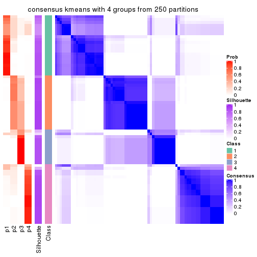
consensus_heatmap(res, k = 5)
consensus_heatmap(res, k = 6)
Heatmaps for the membership of samples in all partitions to see how consistent they are:
membership_heatmap(res, k = 2)
membership_heatmap(res, k = 3)
membership_heatmap(res, k = 4)
membership_heatmap(res, k = 5)
membership_heatmap(res, k = 6)
As soon as we have had the classes for columns, we can look for signatures which are significantly different between classes which can be candidate marks for certain classes. Following are the heatmaps for signatures.
Signature heatmaps where rows are scaled:
get_signatures(res, k = 2)
get_signatures(res, k = 3)
get_signatures(res, k = 4)
get_signatures(res, k = 5)
get_signatures(res, k = 6)
Signature heatmaps where rows are not scaled:
get_signatures(res, k = 2, scale_rows = FALSE)
get_signatures(res, k = 3, scale_rows = FALSE)
get_signatures(res, k = 4, scale_rows = FALSE)
get_signatures(res, k = 5, scale_rows = FALSE)
get_signatures(res, k = 6, scale_rows = FALSE)
Compare the overlap of signatures from different k:
compare_signatures(res)
get_signature() returns a data frame invisibly. TO get the list of signatures, the function
call should be assigned to a variable explicitly. In following code, if plot argument is set
to FALSE, no heatmap is plotted while only the differential analysis is performed.
# code only for demonstration
tb = get_signature(res, k = ..., plot = FALSE)
An example of the output of tb is:
#> which_row fdr mean_1 mean_2 scaled_mean_1 scaled_mean_2 km
#> 1 38 0.042760348 8.373488 9.131774 -0.5533452 0.5164555 1
#> 2 40 0.018707592 7.106213 8.469186 -0.6173731 0.5762149 1
#> 3 55 0.019134737 10.221463 11.207825 -0.6159697 0.5749050 1
#> 4 59 0.006059896 5.921854 7.869574 -0.6899429 0.6439467 1
#> 5 60 0.018055526 8.928898 10.211722 -0.6204761 0.5791110 1
#> 6 98 0.009384629 15.714769 14.887706 0.6635654 -0.6193277 2
...
The columns in tb are:
which_row: row indices corresponding to the input matrix.fdr: FDR for the differential test. mean_x: The mean value in group x.scaled_mean_x: The mean value in group x after rows are scaled.km: Row groups if k-means clustering is applied to rows.UMAP plot which shows how samples are separated.
dimension_reduction(res, k = 2, method = "UMAP")

dimension_reduction(res, k = 3, method = "UMAP")
dimension_reduction(res, k = 4, method = "UMAP")
dimension_reduction(res, k = 5, method = "UMAP")
dimension_reduction(res, k = 6, method = "UMAP")
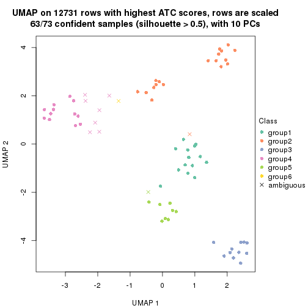
Following heatmap shows how subgroups are split when increasing k:
collect_classes(res)
If matrix rows can be associated to genes, consider to use functional_enrichment(res,
...) to perform function enrichment for the signature genes. See this vignette for more detailed explanations.
The object with results only for a single top-value method and a single partition method can be extracted as:
res = res_list["ATC", "skmeans"]
# you can also extract it by
# res = res_list["ATC:skmeans"]
A summary of res and all the functions that can be applied to it:
res
#> A 'ConsensusPartition' object with k = 2, 3, 4, 5, 6.
#> On a matrix with 12731 rows and 73 columns.
#> Top rows (1000, 2000, 3000, 4000, 5000) are extracted by 'ATC' method.
#> Subgroups are detected by 'skmeans' method.
#> Performed in total 1250 partitions by row resampling.
#> Best k for subgroups seems to be 5.
#>
#> Following methods can be applied to this 'ConsensusPartition' object:
#> [1] "cola_report" "collect_classes" "collect_plots"
#> [4] "collect_stats" "colnames" "compare_signatures"
#> [7] "consensus_heatmap" "dimension_reduction" "functional_enrichment"
#> [10] "get_anno_col" "get_anno" "get_classes"
#> [13] "get_consensus" "get_matrix" "get_membership"
#> [16] "get_param" "get_signatures" "get_stats"
#> [19] "is_best_k" "is_stable_k" "membership_heatmap"
#> [22] "ncol" "nrow" "plot_ecdf"
#> [25] "rownames" "select_partition_number" "show"
#> [28] "suggest_best_k" "test_to_known_factors"
collect_plots() function collects all the plots made from res for all k (number of partitions)
into one single page to provide an easy and fast comparison between different k.
collect_plots(res)
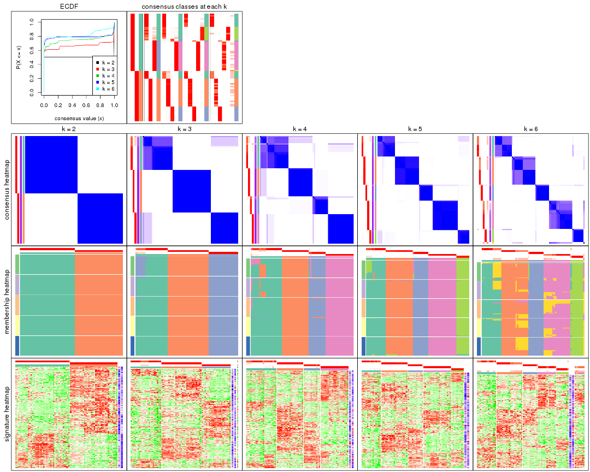
The plots are:
k and the heatmap of
predicted classes for each k.k.k.k.All the plots in panels can be made by individual functions and they are plotted later in this section.
select_partition_number() produces several plots showing different
statistics for choosing “optimized” k. There are following statistics:
k;k, the area increased is defined as \(A_k - A_{k-1}\).The detailed explanations of these statistics can be found in the cola vignette.
Generally speaking, lower PAC score, higher mean silhouette score or higher
concordance corresponds to better partition. Rand index and Jaccard index
measure how similar the current partition is compared to partition with k-1.
If they are too similar, we won't accept k is better than k-1.
select_partition_number(res)
The numeric values for all these statistics can be obtained by get_stats().
get_stats(res)
#> k 1-PAC mean_silhouette concordance area_increased Rand Jaccard
#> 2 2 1.000 1.000 1.000 0.5051 0.495 0.495
#> 3 3 0.926 0.955 0.975 0.3199 0.767 0.560
#> 4 4 0.928 0.939 0.966 0.1207 0.904 0.716
#> 5 5 0.978 0.972 0.981 0.0615 0.950 0.803
#> 6 6 0.887 0.784 0.878 0.0395 0.993 0.965
suggest_best_k() suggests the best \(k\) based on these statistics. The rules are as follows:
suggest_best_k(res)
#> [1] 5
#> attr(,"optional")
#> [1] 2 3 4
There is also optional best \(k\) = 2 3 4 that is worth to check.
Following shows the table of the partitions (You need to click the show/hide
code output link to see it). The membership matrix (columns with name p*)
is inferred by
clue::cl_consensus()
function with the SE method. Basically the value in the membership matrix
represents the probability to belong to a certain group. The finall class
label for an item is determined with the group with highest probability it
belongs to.
In get_classes() function, the entropy is calculated from the membership
matrix and the silhouette score is calculated from the consensus matrix.
cbind(get_classes(res, k = 2), get_membership(res, k = 2))
#> class entropy silhouette p1 p2
#> SRR2144343 2 0 1 0 1
#> SRR2144345 2 0 1 0 1
#> SRR2144344 2 0 1 0 1
#> SRR2144342 2 0 1 0 1
#> SRR2144341 2 0 1 0 1
#> SRR2144340 2 0 1 0 1
#> SRR2144339 2 0 1 0 1
#> SRR2144336 2 0 1 0 1
#> SRR2144338 2 0 1 0 1
#> SRR2144337 2 0 1 0 1
#> SRR2144335 2 0 1 0 1
#> SRR2144332 2 0 1 0 1
#> SRR2144334 2 0 1 0 1
#> SRR2144333 2 0 1 0 1
#> SRR2144331 2 0 1 0 1
#> SRR2144330 2 0 1 0 1
#> SRR2144328 2 0 1 0 1
#> SRR2144329 2 0 1 0 1
#> SRR2144327 2 0 1 0 1
#> SRR2144326 2 0 1 0 1
#> SRR2144325 2 0 1 0 1
#> SRR2144323 2 0 1 0 1
#> SRR2144324 2 0 1 0 1
#> SRR2144321 2 0 1 0 1
#> SRR2144322 2 0 1 0 1
#> SRR2144320 2 0 1 0 1
#> SRR2144319 2 0 1 0 1
#> SRR2144316 2 0 1 0 1
#> SRR2144317 2 0 1 0 1
#> SRR2144318 2 0 1 0 1
#> SRR2144315 1 0 1 1 0
#> SRR2144314 1 0 1 1 0
#> SRR2144313 2 0 1 0 1
#> SRR2144312 1 0 1 1 0
#> SRR2144311 1 0 1 1 0
#> SRR2144308 1 0 1 1 0
#> SRR2144309 1 0 1 1 0
#> SRR2144310 2 0 1 0 1
#> SRR2144307 2 0 1 0 1
#> SRR2144304 2 0 1 0 1
#> SRR2144306 1 0 1 1 0
#> SRR2144303 1 0 1 1 0
#> SRR2144305 1 0 1 1 0
#> SRR2144302 1 0 1 1 0
#> SRR2144301 1 0 1 1 0
#> SRR2144300 1 0 1 1 0
#> SRR2144299 1 0 1 1 0
#> SRR2144298 1 0 1 1 0
#> SRR2144297 1 0 1 1 0
#> SRR2144296 1 0 1 1 0
#> SRR2144295 1 0 1 1 0
#> SRR2144293 1 0 1 1 0
#> SRR2144294 1 0 1 1 0
#> SRR2144291 1 0 1 1 0
#> SRR2144292 1 0 1 1 0
#> SRR2144289 1 0 1 1 0
#> SRR2144290 1 0 1 1 0
#> SRR2144287 1 0 1 1 0
#> SRR2144288 1 0 1 1 0
#> SRR2144286 1 0 1 1 0
#> SRR2144285 1 0 1 1 0
#> SRR2144284 1 0 1 1 0
#> SRR2144282 1 0 1 1 0
#> SRR2144283 1 0 1 1 0
#> SRR2144281 1 0 1 1 0
#> SRR2144279 1 0 1 1 0
#> SRR2144280 1 0 1 1 0
#> SRR2144278 1 0 1 1 0
#> SRR2144277 1 0 1 1 0
#> SRR2144276 1 0 1 1 0
#> SRR2144274 1 0 1 1 0
#> SRR2144275 1 0 1 1 0
#> SRR2144273 1 0 1 1 0
cbind(get_classes(res, k = 3), get_membership(res, k = 3))
#> class entropy silhouette p1 p2 p3
#> SRR2144343 2 0.0000 1.000 0.000 1.000 0.000
#> SRR2144345 2 0.0000 1.000 0.000 1.000 0.000
#> SRR2144344 2 0.0000 1.000 0.000 1.000 0.000
#> SRR2144342 1 0.0000 0.915 1.000 0.000 0.000
#> SRR2144341 2 0.0000 1.000 0.000 1.000 0.000
#> SRR2144340 2 0.0424 0.992 0.008 0.992 0.000
#> SRR2144339 2 0.0000 1.000 0.000 1.000 0.000
#> SRR2144336 2 0.0000 1.000 0.000 1.000 0.000
#> SRR2144338 2 0.0000 1.000 0.000 1.000 0.000
#> SRR2144337 2 0.0000 1.000 0.000 1.000 0.000
#> SRR2144335 2 0.0000 1.000 0.000 1.000 0.000
#> SRR2144332 2 0.0000 1.000 0.000 1.000 0.000
#> SRR2144334 2 0.0000 1.000 0.000 1.000 0.000
#> SRR2144333 2 0.0000 1.000 0.000 1.000 0.000
#> SRR2144331 2 0.0000 1.000 0.000 1.000 0.000
#> SRR2144330 2 0.0000 1.000 0.000 1.000 0.000
#> SRR2144328 2 0.0000 1.000 0.000 1.000 0.000
#> SRR2144329 2 0.0000 1.000 0.000 1.000 0.000
#> SRR2144327 2 0.0000 1.000 0.000 1.000 0.000
#> SRR2144326 2 0.0000 1.000 0.000 1.000 0.000
#> SRR2144325 2 0.0000 1.000 0.000 1.000 0.000
#> SRR2144323 2 0.0000 1.000 0.000 1.000 0.000
#> SRR2144324 2 0.0000 1.000 0.000 1.000 0.000
#> SRR2144321 2 0.0000 1.000 0.000 1.000 0.000
#> SRR2144322 2 0.0000 1.000 0.000 1.000 0.000
#> SRR2144320 2 0.0000 1.000 0.000 1.000 0.000
#> SRR2144319 2 0.0000 1.000 0.000 1.000 0.000
#> SRR2144316 2 0.0000 1.000 0.000 1.000 0.000
#> SRR2144317 2 0.0000 1.000 0.000 1.000 0.000
#> SRR2144318 2 0.0000 1.000 0.000 1.000 0.000
#> SRR2144315 3 0.0000 1.000 0.000 0.000 1.000
#> SRR2144314 3 0.0000 1.000 0.000 0.000 1.000
#> SRR2144313 1 0.0000 0.915 1.000 0.000 0.000
#> SRR2144312 1 0.4750 0.788 0.784 0.000 0.216
#> SRR2144311 1 0.0000 0.915 1.000 0.000 0.000
#> SRR2144308 1 0.4750 0.788 0.784 0.000 0.216
#> SRR2144309 1 0.4796 0.785 0.780 0.000 0.220
#> SRR2144310 1 0.0000 0.915 1.000 0.000 0.000
#> SRR2144307 1 0.0000 0.915 1.000 0.000 0.000
#> SRR2144304 1 0.0000 0.915 1.000 0.000 0.000
#> SRR2144306 3 0.0000 1.000 0.000 0.000 1.000
#> SRR2144303 1 0.0000 0.915 1.000 0.000 0.000
#> SRR2144305 1 0.0237 0.914 0.996 0.000 0.004
#> SRR2144302 1 0.4796 0.785 0.780 0.000 0.220
#> SRR2144301 3 0.0000 1.000 0.000 0.000 1.000
#> SRR2144300 1 0.0000 0.915 1.000 0.000 0.000
#> SRR2144299 1 0.1643 0.896 0.956 0.000 0.044
#> SRR2144298 1 0.0237 0.914 0.996 0.000 0.004
#> SRR2144297 3 0.0000 1.000 0.000 0.000 1.000
#> SRR2144296 3 0.0000 1.000 0.000 0.000 1.000
#> SRR2144295 3 0.0000 1.000 0.000 0.000 1.000
#> SRR2144293 3 0.0000 1.000 0.000 0.000 1.000
#> SRR2144294 3 0.0000 1.000 0.000 0.000 1.000
#> SRR2144291 3 0.0000 1.000 0.000 0.000 1.000
#> SRR2144292 3 0.0000 1.000 0.000 0.000 1.000
#> SRR2144289 3 0.0000 1.000 0.000 0.000 1.000
#> SRR2144290 3 0.0000 1.000 0.000 0.000 1.000
#> SRR2144287 3 0.0000 1.000 0.000 0.000 1.000
#> SRR2144288 3 0.0000 1.000 0.000 0.000 1.000
#> SRR2144286 3 0.0000 1.000 0.000 0.000 1.000
#> SRR2144285 3 0.0000 1.000 0.000 0.000 1.000
#> SRR2144284 3 0.0000 1.000 0.000 0.000 1.000
#> SRR2144282 1 0.4796 0.785 0.780 0.000 0.220
#> SRR2144283 3 0.0000 1.000 0.000 0.000 1.000
#> SRR2144281 3 0.0000 1.000 0.000 0.000 1.000
#> SRR2144279 1 0.0000 0.915 1.000 0.000 0.000
#> SRR2144280 1 0.0000 0.915 1.000 0.000 0.000
#> SRR2144278 1 0.0000 0.915 1.000 0.000 0.000
#> SRR2144277 1 0.0000 0.915 1.000 0.000 0.000
#> SRR2144276 1 0.4842 0.780 0.776 0.000 0.224
#> SRR2144274 1 0.0000 0.915 1.000 0.000 0.000
#> SRR2144275 1 0.6235 0.380 0.564 0.000 0.436
#> SRR2144273 3 0.0000 1.000 0.000 0.000 1.000
cbind(get_classes(res, k = 4), get_membership(res, k = 4))
#> class entropy silhouette p1 p2 p3 p4
#> SRR2144343 2 0.0000 0.999 0.000 1.000 0.000 0.000
#> SRR2144345 2 0.0000 0.999 0.000 1.000 0.000 0.000
#> SRR2144344 3 0.0707 0.967 0.000 0.020 0.980 0.000
#> SRR2144342 1 0.4730 0.513 0.636 0.364 0.000 0.000
#> SRR2144341 2 0.0000 0.999 0.000 1.000 0.000 0.000
#> SRR2144340 2 0.0707 0.976 0.020 0.980 0.000 0.000
#> SRR2144339 2 0.0000 0.999 0.000 1.000 0.000 0.000
#> SRR2144336 3 0.0707 0.967 0.000 0.020 0.980 0.000
#> SRR2144338 2 0.0000 0.999 0.000 1.000 0.000 0.000
#> SRR2144337 3 0.0469 0.961 0.000 0.012 0.988 0.000
#> SRR2144335 3 0.0707 0.967 0.000 0.020 0.980 0.000
#> SRR2144332 2 0.0000 0.999 0.000 1.000 0.000 0.000
#> SRR2144334 2 0.0000 0.999 0.000 1.000 0.000 0.000
#> SRR2144333 3 0.0707 0.967 0.000 0.020 0.980 0.000
#> SRR2144331 2 0.0000 0.999 0.000 1.000 0.000 0.000
#> SRR2144330 3 0.0707 0.967 0.000 0.020 0.980 0.000
#> SRR2144328 2 0.0000 0.999 0.000 1.000 0.000 0.000
#> SRR2144329 2 0.0000 0.999 0.000 1.000 0.000 0.000
#> SRR2144327 2 0.0000 0.999 0.000 1.000 0.000 0.000
#> SRR2144326 3 0.0707 0.967 0.000 0.020 0.980 0.000
#> SRR2144325 2 0.0000 0.999 0.000 1.000 0.000 0.000
#> SRR2144323 2 0.0000 0.999 0.000 1.000 0.000 0.000
#> SRR2144324 3 0.0707 0.967 0.000 0.020 0.980 0.000
#> SRR2144321 2 0.0000 0.999 0.000 1.000 0.000 0.000
#> SRR2144322 2 0.0000 0.999 0.000 1.000 0.000 0.000
#> SRR2144320 3 0.0707 0.967 0.000 0.020 0.980 0.000
#> SRR2144319 2 0.0000 0.999 0.000 1.000 0.000 0.000
#> SRR2144316 2 0.0000 0.999 0.000 1.000 0.000 0.000
#> SRR2144317 3 0.0707 0.967 0.000 0.020 0.980 0.000
#> SRR2144318 2 0.0000 0.999 0.000 1.000 0.000 0.000
#> SRR2144315 3 0.3610 0.741 0.000 0.000 0.800 0.200
#> SRR2144314 4 0.0000 1.000 0.000 0.000 0.000 1.000
#> SRR2144313 1 0.3219 0.801 0.836 0.164 0.000 0.000
#> SRR2144312 1 0.2413 0.869 0.916 0.000 0.020 0.064
#> SRR2144311 1 0.0000 0.896 1.000 0.000 0.000 0.000
#> SRR2144308 3 0.2647 0.844 0.120 0.000 0.880 0.000
#> SRR2144309 1 0.2563 0.865 0.908 0.000 0.020 0.072
#> SRR2144310 1 0.3528 0.776 0.808 0.192 0.000 0.000
#> SRR2144307 1 0.3528 0.776 0.808 0.192 0.000 0.000
#> SRR2144304 1 0.3528 0.776 0.808 0.192 0.000 0.000
#> SRR2144306 4 0.0000 1.000 0.000 0.000 0.000 1.000
#> SRR2144303 1 0.0000 0.896 1.000 0.000 0.000 0.000
#> SRR2144305 1 0.0707 0.891 0.980 0.000 0.020 0.000
#> SRR2144302 1 0.2563 0.865 0.908 0.000 0.020 0.072
#> SRR2144301 4 0.0000 1.000 0.000 0.000 0.000 1.000
#> SRR2144300 1 0.0000 0.896 1.000 0.000 0.000 0.000
#> SRR2144299 1 0.0469 0.893 0.988 0.000 0.012 0.000
#> SRR2144298 1 0.0000 0.896 1.000 0.000 0.000 0.000
#> SRR2144297 4 0.0000 1.000 0.000 0.000 0.000 1.000
#> SRR2144296 4 0.0000 1.000 0.000 0.000 0.000 1.000
#> SRR2144295 4 0.0000 1.000 0.000 0.000 0.000 1.000
#> SRR2144293 4 0.0000 1.000 0.000 0.000 0.000 1.000
#> SRR2144294 4 0.0000 1.000 0.000 0.000 0.000 1.000
#> SRR2144291 4 0.0000 1.000 0.000 0.000 0.000 1.000
#> SRR2144292 4 0.0000 1.000 0.000 0.000 0.000 1.000
#> SRR2144289 4 0.0000 1.000 0.000 0.000 0.000 1.000
#> SRR2144290 4 0.0000 1.000 0.000 0.000 0.000 1.000
#> SRR2144287 4 0.0000 1.000 0.000 0.000 0.000 1.000
#> SRR2144288 4 0.0000 1.000 0.000 0.000 0.000 1.000
#> SRR2144286 4 0.0000 1.000 0.000 0.000 0.000 1.000
#> SRR2144285 4 0.0000 1.000 0.000 0.000 0.000 1.000
#> SRR2144284 4 0.0000 1.000 0.000 0.000 0.000 1.000
#> SRR2144282 1 0.2563 0.865 0.908 0.000 0.020 0.072
#> SRR2144283 4 0.0000 1.000 0.000 0.000 0.000 1.000
#> SRR2144281 4 0.0000 1.000 0.000 0.000 0.000 1.000
#> SRR2144279 1 0.0000 0.896 1.000 0.000 0.000 0.000
#> SRR2144280 1 0.0000 0.896 1.000 0.000 0.000 0.000
#> SRR2144278 1 0.0000 0.896 1.000 0.000 0.000 0.000
#> SRR2144277 1 0.0000 0.896 1.000 0.000 0.000 0.000
#> SRR2144276 1 0.2706 0.859 0.900 0.000 0.020 0.080
#> SRR2144274 1 0.0000 0.896 1.000 0.000 0.000 0.000
#> SRR2144275 1 0.5252 0.512 0.644 0.000 0.020 0.336
#> SRR2144273 4 0.0000 1.000 0.000 0.000 0.000 1.000
cbind(get_classes(res, k = 5), get_membership(res, k = 5))
#> class entropy silhouette p1 p2 p3 p4 p5
#> SRR2144343 2 0.0000 0.990 0.000 1.000 0.000 0.000 0.000
#> SRR2144345 2 0.0162 0.991 0.000 0.996 0.004 0.000 0.000
#> SRR2144344 3 0.0000 0.978 0.000 0.000 1.000 0.000 0.000
#> SRR2144342 1 0.2233 0.863 0.904 0.080 0.000 0.000 0.016
#> SRR2144341 2 0.0162 0.991 0.000 0.996 0.004 0.000 0.000
#> SRR2144340 2 0.0898 0.982 0.008 0.972 0.000 0.000 0.020
#> SRR2144339 2 0.0162 0.991 0.000 0.996 0.004 0.000 0.000
#> SRR2144336 3 0.0000 0.978 0.000 0.000 1.000 0.000 0.000
#> SRR2144338 2 0.0609 0.987 0.000 0.980 0.000 0.000 0.020
#> SRR2144337 3 0.0000 0.978 0.000 0.000 1.000 0.000 0.000
#> SRR2144335 3 0.0000 0.978 0.000 0.000 1.000 0.000 0.000
#> SRR2144332 2 0.0162 0.991 0.000 0.996 0.004 0.000 0.000
#> SRR2144334 2 0.0771 0.988 0.000 0.976 0.004 0.000 0.020
#> SRR2144333 3 0.0000 0.978 0.000 0.000 1.000 0.000 0.000
#> SRR2144331 2 0.0771 0.988 0.000 0.976 0.004 0.000 0.020
#> SRR2144330 3 0.0000 0.978 0.000 0.000 1.000 0.000 0.000
#> SRR2144328 2 0.0771 0.988 0.000 0.976 0.004 0.000 0.020
#> SRR2144329 2 0.0162 0.991 0.000 0.996 0.004 0.000 0.000
#> SRR2144327 2 0.0162 0.991 0.000 0.996 0.004 0.000 0.000
#> SRR2144326 3 0.0000 0.978 0.000 0.000 1.000 0.000 0.000
#> SRR2144325 2 0.0162 0.991 0.000 0.996 0.004 0.000 0.000
#> SRR2144323 2 0.0162 0.991 0.000 0.996 0.004 0.000 0.000
#> SRR2144324 3 0.0000 0.978 0.000 0.000 1.000 0.000 0.000
#> SRR2144321 2 0.0162 0.991 0.000 0.996 0.004 0.000 0.000
#> SRR2144322 2 0.0609 0.987 0.000 0.980 0.000 0.000 0.020
#> SRR2144320 3 0.0000 0.978 0.000 0.000 1.000 0.000 0.000
#> SRR2144319 2 0.0162 0.991 0.000 0.996 0.004 0.000 0.000
#> SRR2144316 2 0.0609 0.987 0.000 0.980 0.000 0.000 0.020
#> SRR2144317 3 0.0000 0.978 0.000 0.000 1.000 0.000 0.000
#> SRR2144318 2 0.0609 0.987 0.000 0.980 0.000 0.000 0.020
#> SRR2144315 3 0.3911 0.758 0.000 0.000 0.796 0.144 0.060
#> SRR2144314 4 0.0000 0.998 0.000 0.000 0.000 1.000 0.000
#> SRR2144313 1 0.0162 0.940 0.996 0.004 0.000 0.000 0.000
#> SRR2144312 5 0.0703 0.993 0.024 0.000 0.000 0.000 0.976
#> SRR2144311 1 0.0162 0.941 0.996 0.000 0.000 0.000 0.004
#> SRR2144308 5 0.0880 0.959 0.000 0.000 0.032 0.000 0.968
#> SRR2144309 5 0.0703 0.993 0.024 0.000 0.000 0.000 0.976
#> SRR2144310 1 0.0771 0.927 0.976 0.004 0.000 0.000 0.020
#> SRR2144307 1 0.0162 0.940 0.996 0.004 0.000 0.000 0.000
#> SRR2144304 1 0.0162 0.940 0.996 0.004 0.000 0.000 0.000
#> SRR2144306 4 0.0703 0.979 0.000 0.000 0.000 0.976 0.024
#> SRR2144303 1 0.0000 0.941 1.000 0.000 0.000 0.000 0.000
#> SRR2144305 5 0.0703 0.993 0.024 0.000 0.000 0.000 0.976
#> SRR2144302 5 0.0703 0.993 0.024 0.000 0.000 0.000 0.976
#> SRR2144301 4 0.0162 0.997 0.000 0.000 0.000 0.996 0.004
#> SRR2144300 1 0.0290 0.940 0.992 0.000 0.000 0.000 0.008
#> SRR2144299 5 0.0880 0.987 0.032 0.000 0.000 0.000 0.968
#> SRR2144298 1 0.2648 0.857 0.848 0.000 0.000 0.000 0.152
#> SRR2144297 4 0.0000 0.998 0.000 0.000 0.000 1.000 0.000
#> SRR2144296 4 0.0000 0.998 0.000 0.000 0.000 1.000 0.000
#> SRR2144295 4 0.0000 0.998 0.000 0.000 0.000 1.000 0.000
#> SRR2144293 4 0.0000 0.998 0.000 0.000 0.000 1.000 0.000
#> SRR2144294 4 0.0162 0.997 0.000 0.000 0.000 0.996 0.004
#> SRR2144291 4 0.0162 0.997 0.000 0.000 0.000 0.996 0.004
#> SRR2144292 4 0.0000 0.998 0.000 0.000 0.000 1.000 0.000
#> SRR2144289 4 0.0162 0.997 0.000 0.000 0.000 0.996 0.004
#> SRR2144290 4 0.0000 0.998 0.000 0.000 0.000 1.000 0.000
#> SRR2144287 4 0.0162 0.997 0.000 0.000 0.000 0.996 0.004
#> SRR2144288 4 0.0000 0.998 0.000 0.000 0.000 1.000 0.000
#> SRR2144286 4 0.0000 0.998 0.000 0.000 0.000 1.000 0.000
#> SRR2144285 4 0.0000 0.998 0.000 0.000 0.000 1.000 0.000
#> SRR2144284 4 0.0162 0.997 0.000 0.000 0.000 0.996 0.004
#> SRR2144282 5 0.0703 0.993 0.024 0.000 0.000 0.000 0.976
#> SRR2144283 4 0.0000 0.998 0.000 0.000 0.000 1.000 0.000
#> SRR2144281 4 0.0000 0.998 0.000 0.000 0.000 1.000 0.000
#> SRR2144279 1 0.0162 0.941 0.996 0.000 0.000 0.000 0.004
#> SRR2144280 1 0.0000 0.941 1.000 0.000 0.000 0.000 0.000
#> SRR2144278 1 0.2471 0.871 0.864 0.000 0.000 0.000 0.136
#> SRR2144277 1 0.2516 0.868 0.860 0.000 0.000 0.000 0.140
#> SRR2144276 5 0.0703 0.993 0.024 0.000 0.000 0.000 0.976
#> SRR2144274 1 0.2516 0.868 0.860 0.000 0.000 0.000 0.140
#> SRR2144275 5 0.0771 0.990 0.020 0.000 0.000 0.004 0.976
#> SRR2144273 4 0.0000 0.998 0.000 0.000 0.000 1.000 0.000
cbind(get_classes(res, k = 6), get_membership(res, k = 6))
#> class entropy silhouette p1 p2 p3 p4 p5 p6
#> SRR2144343 2 0.0000 0.8394 0.000 1.000 0.000 0.000 0.000 0.000
#> SRR2144345 2 0.0000 0.8394 0.000 1.000 0.000 0.000 0.000 0.000
#> SRR2144344 3 0.0000 0.9775 0.000 0.000 1.000 0.000 0.000 0.000
#> SRR2144342 1 0.4065 0.8002 0.672 0.028 0.000 0.000 0.000 0.300
#> SRR2144341 2 0.0000 0.8394 0.000 1.000 0.000 0.000 0.000 0.000
#> SRR2144340 2 0.3997 0.6112 0.004 0.508 0.000 0.000 0.000 0.488
#> SRR2144339 2 0.0000 0.8394 0.000 1.000 0.000 0.000 0.000 0.000
#> SRR2144336 3 0.0000 0.9775 0.000 0.000 1.000 0.000 0.000 0.000
#> SRR2144338 2 0.3531 0.7811 0.000 0.672 0.000 0.000 0.000 0.328
#> SRR2144337 3 0.0000 0.9775 0.000 0.000 1.000 0.000 0.000 0.000
#> SRR2144335 3 0.0000 0.9775 0.000 0.000 1.000 0.000 0.000 0.000
#> SRR2144332 2 0.0000 0.8394 0.000 1.000 0.000 0.000 0.000 0.000
#> SRR2144334 2 0.3531 0.7811 0.000 0.672 0.000 0.000 0.000 0.328
#> SRR2144333 3 0.0000 0.9775 0.000 0.000 1.000 0.000 0.000 0.000
#> SRR2144331 2 0.3531 0.7811 0.000 0.672 0.000 0.000 0.000 0.328
#> SRR2144330 3 0.0000 0.9775 0.000 0.000 1.000 0.000 0.000 0.000
#> SRR2144328 2 0.3531 0.7811 0.000 0.672 0.000 0.000 0.000 0.328
#> SRR2144329 2 0.0000 0.8394 0.000 1.000 0.000 0.000 0.000 0.000
#> SRR2144327 2 0.2597 0.8134 0.000 0.824 0.000 0.000 0.000 0.176
#> SRR2144326 3 0.0000 0.9775 0.000 0.000 1.000 0.000 0.000 0.000
#> SRR2144325 2 0.0000 0.8394 0.000 1.000 0.000 0.000 0.000 0.000
#> SRR2144323 2 0.0000 0.8394 0.000 1.000 0.000 0.000 0.000 0.000
#> SRR2144324 3 0.0000 0.9775 0.000 0.000 1.000 0.000 0.000 0.000
#> SRR2144321 2 0.0000 0.8394 0.000 1.000 0.000 0.000 0.000 0.000
#> SRR2144322 2 0.3531 0.7811 0.000 0.672 0.000 0.000 0.000 0.328
#> SRR2144320 3 0.0000 0.9775 0.000 0.000 1.000 0.000 0.000 0.000
#> SRR2144319 2 0.0000 0.8394 0.000 1.000 0.000 0.000 0.000 0.000
#> SRR2144316 2 0.3531 0.7811 0.000 0.672 0.000 0.000 0.000 0.328
#> SRR2144317 3 0.0000 0.9775 0.000 0.000 1.000 0.000 0.000 0.000
#> SRR2144318 2 0.3531 0.7811 0.000 0.672 0.000 0.000 0.000 0.328
#> SRR2144315 3 0.4020 0.7339 0.000 0.000 0.764 0.068 0.160 0.008
#> SRR2144314 4 0.1863 0.6690 0.000 0.000 0.000 0.896 0.000 0.104
#> SRR2144313 1 0.3351 0.8275 0.712 0.000 0.000 0.000 0.000 0.288
#> SRR2144312 5 0.0000 0.9566 0.000 0.000 0.000 0.000 1.000 0.000
#> SRR2144311 1 0.0000 0.8714 1.000 0.000 0.000 0.000 0.000 0.000
#> SRR2144308 5 0.0000 0.9566 0.000 0.000 0.000 0.000 1.000 0.000
#> SRR2144309 5 0.0000 0.9566 0.000 0.000 0.000 0.000 1.000 0.000
#> SRR2144310 1 0.3351 0.8275 0.712 0.000 0.000 0.000 0.000 0.288
#> SRR2144307 1 0.3351 0.8275 0.712 0.000 0.000 0.000 0.000 0.288
#> SRR2144304 1 0.3351 0.8275 0.712 0.000 0.000 0.000 0.000 0.288
#> SRR2144306 6 0.3756 0.0000 0.000 0.000 0.000 0.400 0.000 0.600
#> SRR2144303 1 0.3309 0.8296 0.720 0.000 0.000 0.000 0.000 0.280
#> SRR2144305 5 0.0000 0.9566 0.000 0.000 0.000 0.000 1.000 0.000
#> SRR2144302 5 0.0000 0.9566 0.000 0.000 0.000 0.000 1.000 0.000
#> SRR2144301 4 0.3371 0.3745 0.000 0.000 0.000 0.708 0.000 0.292
#> SRR2144300 1 0.0000 0.8714 1.000 0.000 0.000 0.000 0.000 0.000
#> SRR2144299 5 0.3531 0.5782 0.328 0.000 0.000 0.000 0.672 0.000
#> SRR2144298 1 0.0632 0.8609 0.976 0.000 0.000 0.000 0.024 0.000
#> SRR2144297 4 0.0260 0.7610 0.000 0.000 0.000 0.992 0.000 0.008
#> SRR2144296 4 0.0000 0.7619 0.000 0.000 0.000 1.000 0.000 0.000
#> SRR2144295 4 0.0260 0.7610 0.000 0.000 0.000 0.992 0.000 0.008
#> SRR2144293 4 0.0260 0.7610 0.000 0.000 0.000 0.992 0.000 0.008
#> SRR2144294 4 0.3727 0.0359 0.000 0.000 0.000 0.612 0.000 0.388
#> SRR2144291 4 0.3634 0.1904 0.000 0.000 0.000 0.644 0.000 0.356
#> SRR2144292 4 0.0260 0.7610 0.000 0.000 0.000 0.992 0.000 0.008
#> SRR2144289 4 0.3288 0.4066 0.000 0.000 0.000 0.724 0.000 0.276
#> SRR2144290 4 0.0000 0.7619 0.000 0.000 0.000 1.000 0.000 0.000
#> SRR2144287 4 0.3371 0.3745 0.000 0.000 0.000 0.708 0.000 0.292
#> SRR2144288 4 0.0260 0.7610 0.000 0.000 0.000 0.992 0.000 0.008
#> SRR2144286 4 0.0000 0.7619 0.000 0.000 0.000 1.000 0.000 0.000
#> SRR2144285 4 0.0260 0.7610 0.000 0.000 0.000 0.992 0.000 0.008
#> SRR2144284 4 0.3371 0.3745 0.000 0.000 0.000 0.708 0.000 0.292
#> SRR2144282 5 0.0000 0.9566 0.000 0.000 0.000 0.000 1.000 0.000
#> SRR2144283 4 0.1714 0.7044 0.000 0.000 0.000 0.908 0.000 0.092
#> SRR2144281 4 0.2664 0.5949 0.000 0.000 0.000 0.816 0.000 0.184
#> SRR2144279 1 0.0146 0.8720 0.996 0.000 0.000 0.000 0.000 0.004
#> SRR2144280 1 0.0363 0.8723 0.988 0.000 0.000 0.000 0.000 0.012
#> SRR2144278 1 0.0363 0.8683 0.988 0.000 0.000 0.000 0.012 0.000
#> SRR2144277 1 0.0363 0.8683 0.988 0.000 0.000 0.000 0.012 0.000
#> SRR2144276 5 0.0000 0.9566 0.000 0.000 0.000 0.000 1.000 0.000
#> SRR2144274 1 0.0363 0.8683 0.988 0.000 0.000 0.000 0.012 0.000
#> SRR2144275 5 0.0000 0.9566 0.000 0.000 0.000 0.000 1.000 0.000
#> SRR2144273 4 0.0000 0.7619 0.000 0.000 0.000 1.000 0.000 0.000
Heatmaps for the consensus matrix. It visualizes the probability of two samples to be in a same group.
consensus_heatmap(res, k = 2)
consensus_heatmap(res, k = 3)
consensus_heatmap(res, k = 4)
consensus_heatmap(res, k = 5)
consensus_heatmap(res, k = 6)
Heatmaps for the membership of samples in all partitions to see how consistent they are:
membership_heatmap(res, k = 2)
membership_heatmap(res, k = 3)
membership_heatmap(res, k = 4)
membership_heatmap(res, k = 5)
membership_heatmap(res, k = 6)
As soon as we have had the classes for columns, we can look for signatures which are significantly different between classes which can be candidate marks for certain classes. Following are the heatmaps for signatures.
Signature heatmaps where rows are scaled:
get_signatures(res, k = 2)
get_signatures(res, k = 3)
get_signatures(res, k = 4)
get_signatures(res, k = 5)
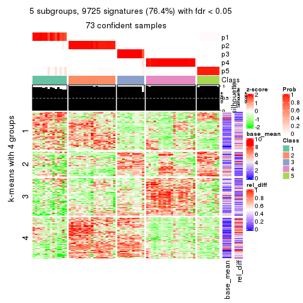
get_signatures(res, k = 6)
Signature heatmaps where rows are not scaled:
get_signatures(res, k = 2, scale_rows = FALSE)
get_signatures(res, k = 3, scale_rows = FALSE)
get_signatures(res, k = 4, scale_rows = FALSE)
get_signatures(res, k = 5, scale_rows = FALSE)
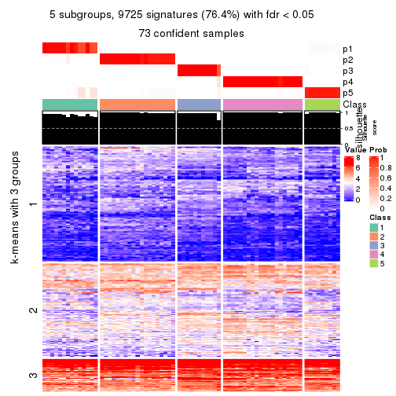
get_signatures(res, k = 6, scale_rows = FALSE)
Compare the overlap of signatures from different k:
compare_signatures(res)
get_signature() returns a data frame invisibly. TO get the list of signatures, the function
call should be assigned to a variable explicitly. In following code, if plot argument is set
to FALSE, no heatmap is plotted while only the differential analysis is performed.
# code only for demonstration
tb = get_signature(res, k = ..., plot = FALSE)
An example of the output of tb is:
#> which_row fdr mean_1 mean_2 scaled_mean_1 scaled_mean_2 km
#> 1 38 0.042760348 8.373488 9.131774 -0.5533452 0.5164555 1
#> 2 40 0.018707592 7.106213 8.469186 -0.6173731 0.5762149 1
#> 3 55 0.019134737 10.221463 11.207825 -0.6159697 0.5749050 1
#> 4 59 0.006059896 5.921854 7.869574 -0.6899429 0.6439467 1
#> 5 60 0.018055526 8.928898 10.211722 -0.6204761 0.5791110 1
#> 6 98 0.009384629 15.714769 14.887706 0.6635654 -0.6193277 2
...
The columns in tb are:
which_row: row indices corresponding to the input matrix.fdr: FDR for the differential test. mean_x: The mean value in group x.scaled_mean_x: The mean value in group x after rows are scaled.km: Row groups if k-means clustering is applied to rows.UMAP plot which shows how samples are separated.
dimension_reduction(res, k = 2, method = "UMAP")
dimension_reduction(res, k = 3, method = "UMAP")

dimension_reduction(res, k = 4, method = "UMAP")
dimension_reduction(res, k = 5, method = "UMAP")
dimension_reduction(res, k = 6, method = "UMAP")
Following heatmap shows how subgroups are split when increasing k:
collect_classes(res)
If matrix rows can be associated to genes, consider to use functional_enrichment(res,
...) to perform function enrichment for the signature genes. See this vignette for more detailed explanations.
The object with results only for a single top-value method and a single partition method can be extracted as:
res = res_list["ATC", "pam"]
# you can also extract it by
# res = res_list["ATC:pam"]
A summary of res and all the functions that can be applied to it:
res
#> A 'ConsensusPartition' object with k = 2, 3, 4, 5, 6.
#> On a matrix with 12731 rows and 73 columns.
#> Top rows (1000, 2000, 3000, 4000, 5000) are extracted by 'ATC' method.
#> Subgroups are detected by 'pam' method.
#> Performed in total 1250 partitions by row resampling.
#> Best k for subgroups seems to be 5.
#>
#> Following methods can be applied to this 'ConsensusPartition' object:
#> [1] "cola_report" "collect_classes" "collect_plots"
#> [4] "collect_stats" "colnames" "compare_signatures"
#> [7] "consensus_heatmap" "dimension_reduction" "functional_enrichment"
#> [10] "get_anno_col" "get_anno" "get_classes"
#> [13] "get_consensus" "get_matrix" "get_membership"
#> [16] "get_param" "get_signatures" "get_stats"
#> [19] "is_best_k" "is_stable_k" "membership_heatmap"
#> [22] "ncol" "nrow" "plot_ecdf"
#> [25] "rownames" "select_partition_number" "show"
#> [28] "suggest_best_k" "test_to_known_factors"
collect_plots() function collects all the plots made from res for all k (number of partitions)
into one single page to provide an easy and fast comparison between different k.
collect_plots(res)
The plots are:
k and the heatmap of
predicted classes for each k.k.k.k.All the plots in panels can be made by individual functions and they are plotted later in this section.
select_partition_number() produces several plots showing different
statistics for choosing “optimized” k. There are following statistics:
k;k, the area increased is defined as \(A_k - A_{k-1}\).The detailed explanations of these statistics can be found in the cola vignette.
Generally speaking, lower PAC score, higher mean silhouette score or higher
concordance corresponds to better partition. Rand index and Jaccard index
measure how similar the current partition is compared to partition with k-1.
If they are too similar, we won't accept k is better than k-1.
select_partition_number(res)

The numeric values for all these statistics can be obtained by get_stats().
get_stats(res)
#> k 1-PAC mean_silhouette concordance area_increased Rand Jaccard
#> 2 2 1.000 0.944 0.979 0.5045 0.495 0.495
#> 3 3 1.000 0.974 0.989 0.3017 0.836 0.673
#> 4 4 0.916 0.936 0.970 0.1353 0.897 0.708
#> 5 5 0.985 0.932 0.973 0.0662 0.921 0.708
#> 6 6 0.899 0.755 0.883 0.0432 0.986 0.933
suggest_best_k() suggests the best \(k\) based on these statistics. The rules are as follows:
suggest_best_k(res)
#> [1] 5
#> attr(,"optional")
#> [1] 2 3 4
There is also optional best \(k\) = 2 3 4 that is worth to check.
Following shows the table of the partitions (You need to click the show/hide
code output link to see it). The membership matrix (columns with name p*)
is inferred by
clue::cl_consensus()
function with the SE method. Basically the value in the membership matrix
represents the probability to belong to a certain group. The finall class
label for an item is determined with the group with highest probability it
belongs to.
In get_classes() function, the entropy is calculated from the membership
matrix and the silhouette score is calculated from the consensus matrix.
cbind(get_classes(res, k = 2), get_membership(res, k = 2))
#> class entropy silhouette p1 p2
#> SRR2144343 2 0.0000 0.981 0.000 1.000
#> SRR2144345 2 0.0000 0.981 0.000 1.000
#> SRR2144344 2 0.0000 0.981 0.000 1.000
#> SRR2144342 2 0.0000 0.981 0.000 1.000
#> SRR2144341 2 0.0000 0.981 0.000 1.000
#> SRR2144340 2 0.0000 0.981 0.000 1.000
#> SRR2144339 2 0.0000 0.981 0.000 1.000
#> SRR2144336 2 0.0000 0.981 0.000 1.000
#> SRR2144338 2 0.0000 0.981 0.000 1.000
#> SRR2144337 2 0.8499 0.616 0.276 0.724
#> SRR2144335 2 0.0000 0.981 0.000 1.000
#> SRR2144332 2 0.0000 0.981 0.000 1.000
#> SRR2144334 2 0.0000 0.981 0.000 1.000
#> SRR2144333 2 0.0000 0.981 0.000 1.000
#> SRR2144331 2 0.0000 0.981 0.000 1.000
#> SRR2144330 2 0.0000 0.981 0.000 1.000
#> SRR2144328 2 0.0000 0.981 0.000 1.000
#> SRR2144329 2 0.0000 0.981 0.000 1.000
#> SRR2144327 2 0.0000 0.981 0.000 1.000
#> SRR2144326 2 0.0000 0.981 0.000 1.000
#> SRR2144325 2 0.0000 0.981 0.000 1.000
#> SRR2144323 2 0.0000 0.981 0.000 1.000
#> SRR2144324 2 0.0000 0.981 0.000 1.000
#> SRR2144321 2 0.0000 0.981 0.000 1.000
#> SRR2144322 2 0.0000 0.981 0.000 1.000
#> SRR2144320 2 0.0000 0.981 0.000 1.000
#> SRR2144319 2 0.0000 0.981 0.000 1.000
#> SRR2144316 2 0.0000 0.981 0.000 1.000
#> SRR2144317 2 0.0000 0.981 0.000 1.000
#> SRR2144318 2 0.0000 0.981 0.000 1.000
#> SRR2144315 1 0.0000 0.974 1.000 0.000
#> SRR2144314 1 0.0000 0.974 1.000 0.000
#> SRR2144313 2 0.8555 0.609 0.280 0.720
#> SRR2144312 1 0.0000 0.974 1.000 0.000
#> SRR2144311 1 0.0000 0.974 1.000 0.000
#> SRR2144308 1 0.0938 0.964 0.988 0.012
#> SRR2144309 1 0.0000 0.974 1.000 0.000
#> SRR2144310 2 0.2603 0.939 0.044 0.956
#> SRR2144307 2 0.0000 0.981 0.000 1.000
#> SRR2144304 2 0.0000 0.981 0.000 1.000
#> SRR2144306 1 0.0000 0.974 1.000 0.000
#> SRR2144303 1 0.9909 0.184 0.556 0.444
#> SRR2144305 1 0.0000 0.974 1.000 0.000
#> SRR2144302 1 0.0000 0.974 1.000 0.000
#> SRR2144301 1 0.0000 0.974 1.000 0.000
#> SRR2144300 1 0.0000 0.974 1.000 0.000
#> SRR2144299 1 0.0000 0.974 1.000 0.000
#> SRR2144298 1 0.0000 0.974 1.000 0.000
#> SRR2144297 1 0.0000 0.974 1.000 0.000
#> SRR2144296 1 0.0000 0.974 1.000 0.000
#> SRR2144295 1 0.0000 0.974 1.000 0.000
#> SRR2144293 1 0.0000 0.974 1.000 0.000
#> SRR2144294 1 0.0938 0.964 0.988 0.012
#> SRR2144291 1 0.0000 0.974 1.000 0.000
#> SRR2144292 1 0.0000 0.974 1.000 0.000
#> SRR2144289 1 0.0000 0.974 1.000 0.000
#> SRR2144290 1 0.0000 0.974 1.000 0.000
#> SRR2144287 1 0.0000 0.974 1.000 0.000
#> SRR2144288 1 0.0000 0.974 1.000 0.000
#> SRR2144286 1 0.0000 0.974 1.000 0.000
#> SRR2144285 1 0.0000 0.974 1.000 0.000
#> SRR2144284 1 0.0000 0.974 1.000 0.000
#> SRR2144282 1 0.0000 0.974 1.000 0.000
#> SRR2144283 1 0.0000 0.974 1.000 0.000
#> SRR2144281 1 0.0000 0.974 1.000 0.000
#> SRR2144279 1 0.0000 0.974 1.000 0.000
#> SRR2144280 1 0.9963 0.116 0.536 0.464
#> SRR2144278 1 0.0000 0.974 1.000 0.000
#> SRR2144277 1 0.0000 0.974 1.000 0.000
#> SRR2144276 1 0.0000 0.974 1.000 0.000
#> SRR2144274 1 0.0000 0.974 1.000 0.000
#> SRR2144275 1 0.0000 0.974 1.000 0.000
#> SRR2144273 1 0.0000 0.974 1.000 0.000
cbind(get_classes(res, k = 3), get_membership(res, k = 3))
#> class entropy silhouette p1 p2 p3
#> SRR2144343 2 0.0000 0.980 0 1.000 0.000
#> SRR2144345 2 0.0000 0.980 0 1.000 0.000
#> SRR2144344 2 0.0000 0.980 0 1.000 0.000
#> SRR2144342 2 0.4121 0.792 0 0.832 0.168
#> SRR2144341 2 0.0000 0.980 0 1.000 0.000
#> SRR2144340 2 0.0000 0.980 0 1.000 0.000
#> SRR2144339 2 0.0000 0.980 0 1.000 0.000
#> SRR2144336 2 0.0000 0.980 0 1.000 0.000
#> SRR2144338 2 0.0000 0.980 0 1.000 0.000
#> SRR2144337 3 0.4178 0.785 0 0.172 0.828
#> SRR2144335 2 0.0000 0.980 0 1.000 0.000
#> SRR2144332 2 0.0000 0.980 0 1.000 0.000
#> SRR2144334 2 0.0000 0.980 0 1.000 0.000
#> SRR2144333 2 0.0000 0.980 0 1.000 0.000
#> SRR2144331 2 0.0000 0.980 0 1.000 0.000
#> SRR2144330 2 0.0000 0.980 0 1.000 0.000
#> SRR2144328 2 0.0000 0.980 0 1.000 0.000
#> SRR2144329 2 0.0000 0.980 0 1.000 0.000
#> SRR2144327 2 0.0000 0.980 0 1.000 0.000
#> SRR2144326 2 0.0000 0.980 0 1.000 0.000
#> SRR2144325 2 0.0000 0.980 0 1.000 0.000
#> SRR2144323 2 0.0000 0.980 0 1.000 0.000
#> SRR2144324 2 0.0000 0.980 0 1.000 0.000
#> SRR2144321 2 0.0000 0.980 0 1.000 0.000
#> SRR2144322 2 0.0000 0.980 0 1.000 0.000
#> SRR2144320 2 0.0000 0.980 0 1.000 0.000
#> SRR2144319 2 0.0000 0.980 0 1.000 0.000
#> SRR2144316 2 0.0000 0.980 0 1.000 0.000
#> SRR2144317 2 0.0000 0.980 0 1.000 0.000
#> SRR2144318 2 0.0000 0.980 0 1.000 0.000
#> SRR2144315 3 0.0000 0.990 0 0.000 1.000
#> SRR2144314 1 0.0000 1.000 1 0.000 0.000
#> SRR2144313 2 0.6062 0.374 0 0.616 0.384
#> SRR2144312 3 0.0000 0.990 0 0.000 1.000
#> SRR2144311 3 0.0000 0.990 0 0.000 1.000
#> SRR2144308 3 0.0000 0.990 0 0.000 1.000
#> SRR2144309 3 0.0000 0.990 0 0.000 1.000
#> SRR2144310 2 0.2066 0.924 0 0.940 0.060
#> SRR2144307 2 0.0424 0.973 0 0.992 0.008
#> SRR2144304 2 0.0000 0.980 0 1.000 0.000
#> SRR2144306 1 0.0000 1.000 1 0.000 0.000
#> SRR2144303 3 0.0000 0.990 0 0.000 1.000
#> SRR2144305 3 0.0000 0.990 0 0.000 1.000
#> SRR2144302 3 0.0000 0.990 0 0.000 1.000
#> SRR2144301 1 0.0000 1.000 1 0.000 0.000
#> SRR2144300 3 0.0000 0.990 0 0.000 1.000
#> SRR2144299 3 0.0000 0.990 0 0.000 1.000
#> SRR2144298 3 0.0000 0.990 0 0.000 1.000
#> SRR2144297 1 0.0000 1.000 1 0.000 0.000
#> SRR2144296 1 0.0000 1.000 1 0.000 0.000
#> SRR2144295 1 0.0000 1.000 1 0.000 0.000
#> SRR2144293 1 0.0000 1.000 1 0.000 0.000
#> SRR2144294 1 0.0000 1.000 1 0.000 0.000
#> SRR2144291 1 0.0000 1.000 1 0.000 0.000
#> SRR2144292 1 0.0000 1.000 1 0.000 0.000
#> SRR2144289 1 0.0000 1.000 1 0.000 0.000
#> SRR2144290 1 0.0000 1.000 1 0.000 0.000
#> SRR2144287 1 0.0000 1.000 1 0.000 0.000
#> SRR2144288 1 0.0000 1.000 1 0.000 0.000
#> SRR2144286 1 0.0000 1.000 1 0.000 0.000
#> SRR2144285 1 0.0000 1.000 1 0.000 0.000
#> SRR2144284 1 0.0000 1.000 1 0.000 0.000
#> SRR2144282 3 0.0000 0.990 0 0.000 1.000
#> SRR2144283 1 0.0000 1.000 1 0.000 0.000
#> SRR2144281 1 0.0000 1.000 1 0.000 0.000
#> SRR2144279 3 0.0000 0.990 0 0.000 1.000
#> SRR2144280 3 0.0000 0.990 0 0.000 1.000
#> SRR2144278 3 0.0000 0.990 0 0.000 1.000
#> SRR2144277 3 0.0000 0.990 0 0.000 1.000
#> SRR2144276 3 0.0000 0.990 0 0.000 1.000
#> SRR2144274 3 0.0000 0.990 0 0.000 1.000
#> SRR2144275 3 0.0000 0.990 0 0.000 1.000
#> SRR2144273 1 0.0000 1.000 1 0.000 0.000
cbind(get_classes(res, k = 4), get_membership(res, k = 4))
#> class entropy silhouette p1 p2 p3 p4
#> SRR2144343 2 0.0000 0.939 0.000 1.000 0.000 0.000
#> SRR2144345 2 0.0000 0.939 0.000 1.000 0.000 0.000
#> SRR2144344 3 0.0000 0.999 0.000 0.000 1.000 0.000
#> SRR2144342 2 0.4643 0.558 0.344 0.656 0.000 0.000
#> SRR2144341 2 0.0000 0.939 0.000 1.000 0.000 0.000
#> SRR2144340 2 0.0000 0.939 0.000 1.000 0.000 0.000
#> SRR2144339 2 0.0000 0.939 0.000 1.000 0.000 0.000
#> SRR2144336 3 0.0000 0.999 0.000 0.000 1.000 0.000
#> SRR2144338 2 0.0000 0.939 0.000 1.000 0.000 0.000
#> SRR2144337 3 0.0000 0.999 0.000 0.000 1.000 0.000
#> SRR2144335 3 0.0000 0.999 0.000 0.000 1.000 0.000
#> SRR2144332 2 0.0000 0.939 0.000 1.000 0.000 0.000
#> SRR2144334 2 0.0000 0.939 0.000 1.000 0.000 0.000
#> SRR2144333 3 0.0000 0.999 0.000 0.000 1.000 0.000
#> SRR2144331 2 0.0000 0.939 0.000 1.000 0.000 0.000
#> SRR2144330 3 0.0000 0.999 0.000 0.000 1.000 0.000
#> SRR2144328 2 0.0000 0.939 0.000 1.000 0.000 0.000
#> SRR2144329 2 0.0000 0.939 0.000 1.000 0.000 0.000
#> SRR2144327 2 0.0000 0.939 0.000 1.000 0.000 0.000
#> SRR2144326 3 0.0000 0.999 0.000 0.000 1.000 0.000
#> SRR2144325 2 0.0000 0.939 0.000 1.000 0.000 0.000
#> SRR2144323 2 0.0000 0.939 0.000 1.000 0.000 0.000
#> SRR2144324 3 0.0000 0.999 0.000 0.000 1.000 0.000
#> SRR2144321 2 0.0000 0.939 0.000 1.000 0.000 0.000
#> SRR2144322 2 0.0000 0.939 0.000 1.000 0.000 0.000
#> SRR2144320 3 0.0000 0.999 0.000 0.000 1.000 0.000
#> SRR2144319 2 0.0000 0.939 0.000 1.000 0.000 0.000
#> SRR2144316 2 0.0000 0.939 0.000 1.000 0.000 0.000
#> SRR2144317 3 0.0000 0.999 0.000 0.000 1.000 0.000
#> SRR2144318 2 0.0000 0.939 0.000 1.000 0.000 0.000
#> SRR2144315 3 0.0336 0.992 0.008 0.000 0.992 0.000
#> SRR2144314 4 0.0000 0.991 0.000 0.000 0.000 1.000
#> SRR2144313 2 0.4907 0.382 0.420 0.580 0.000 0.000
#> SRR2144312 1 0.0000 0.952 1.000 0.000 0.000 0.000
#> SRR2144311 1 0.0000 0.952 1.000 0.000 0.000 0.000
#> SRR2144308 1 0.3356 0.782 0.824 0.000 0.176 0.000
#> SRR2144309 1 0.2408 0.879 0.896 0.000 0.000 0.104
#> SRR2144310 2 0.3688 0.770 0.208 0.792 0.000 0.000
#> SRR2144307 2 0.3444 0.796 0.184 0.816 0.000 0.000
#> SRR2144304 2 0.3356 0.803 0.176 0.824 0.000 0.000
#> SRR2144306 4 0.3024 0.817 0.148 0.000 0.000 0.852
#> SRR2144303 1 0.0000 0.952 1.000 0.000 0.000 0.000
#> SRR2144305 1 0.0000 0.952 1.000 0.000 0.000 0.000
#> SRR2144302 1 0.1302 0.928 0.956 0.000 0.000 0.044
#> SRR2144301 4 0.0000 0.991 0.000 0.000 0.000 1.000
#> SRR2144300 1 0.0000 0.952 1.000 0.000 0.000 0.000
#> SRR2144299 1 0.0000 0.952 1.000 0.000 0.000 0.000
#> SRR2144298 1 0.0000 0.952 1.000 0.000 0.000 0.000
#> SRR2144297 4 0.0000 0.991 0.000 0.000 0.000 1.000
#> SRR2144296 4 0.0000 0.991 0.000 0.000 0.000 1.000
#> SRR2144295 4 0.0000 0.991 0.000 0.000 0.000 1.000
#> SRR2144293 4 0.0000 0.991 0.000 0.000 0.000 1.000
#> SRR2144294 4 0.0000 0.991 0.000 0.000 0.000 1.000
#> SRR2144291 4 0.0000 0.991 0.000 0.000 0.000 1.000
#> SRR2144292 4 0.0000 0.991 0.000 0.000 0.000 1.000
#> SRR2144289 4 0.0000 0.991 0.000 0.000 0.000 1.000
#> SRR2144290 4 0.0000 0.991 0.000 0.000 0.000 1.000
#> SRR2144287 4 0.0000 0.991 0.000 0.000 0.000 1.000
#> SRR2144288 4 0.0000 0.991 0.000 0.000 0.000 1.000
#> SRR2144286 4 0.0000 0.991 0.000 0.000 0.000 1.000
#> SRR2144285 4 0.0000 0.991 0.000 0.000 0.000 1.000
#> SRR2144284 4 0.0000 0.991 0.000 0.000 0.000 1.000
#> SRR2144282 1 0.1118 0.933 0.964 0.000 0.000 0.036
#> SRR2144283 4 0.0000 0.991 0.000 0.000 0.000 1.000
#> SRR2144281 4 0.0000 0.991 0.000 0.000 0.000 1.000
#> SRR2144279 1 0.0000 0.952 1.000 0.000 0.000 0.000
#> SRR2144280 1 0.0000 0.952 1.000 0.000 0.000 0.000
#> SRR2144278 1 0.0000 0.952 1.000 0.000 0.000 0.000
#> SRR2144277 1 0.0000 0.952 1.000 0.000 0.000 0.000
#> SRR2144276 1 0.3311 0.810 0.828 0.000 0.000 0.172
#> SRR2144274 1 0.0000 0.952 1.000 0.000 0.000 0.000
#> SRR2144275 1 0.3356 0.805 0.824 0.000 0.000 0.176
#> SRR2144273 4 0.0000 0.991 0.000 0.000 0.000 1.000
cbind(get_classes(res, k = 5), get_membership(res, k = 5))
#> class entropy silhouette p1 p2 p3 p4 p5
#> SRR2144343 2 0.0000 1.000 0.000 1.000 0.000 0.00 0.000
#> SRR2144345 2 0.0000 1.000 0.000 1.000 0.000 0.00 0.000
#> SRR2144344 3 0.0000 0.999 0.000 0.000 1.000 0.00 0.000
#> SRR2144342 1 0.0162 0.945 0.996 0.004 0.000 0.00 0.000
#> SRR2144341 2 0.0000 1.000 0.000 1.000 0.000 0.00 0.000
#> SRR2144340 2 0.0000 1.000 0.000 1.000 0.000 0.00 0.000
#> SRR2144339 2 0.0000 1.000 0.000 1.000 0.000 0.00 0.000
#> SRR2144336 3 0.0000 0.999 0.000 0.000 1.000 0.00 0.000
#> SRR2144338 2 0.0000 1.000 0.000 1.000 0.000 0.00 0.000
#> SRR2144337 3 0.0000 0.999 0.000 0.000 1.000 0.00 0.000
#> SRR2144335 3 0.0000 0.999 0.000 0.000 1.000 0.00 0.000
#> SRR2144332 2 0.0000 1.000 0.000 1.000 0.000 0.00 0.000
#> SRR2144334 2 0.0000 1.000 0.000 1.000 0.000 0.00 0.000
#> SRR2144333 3 0.0000 0.999 0.000 0.000 1.000 0.00 0.000
#> SRR2144331 2 0.0000 1.000 0.000 1.000 0.000 0.00 0.000
#> SRR2144330 3 0.0000 0.999 0.000 0.000 1.000 0.00 0.000
#> SRR2144328 2 0.0000 1.000 0.000 1.000 0.000 0.00 0.000
#> SRR2144329 2 0.0000 1.000 0.000 1.000 0.000 0.00 0.000
#> SRR2144327 2 0.0000 1.000 0.000 1.000 0.000 0.00 0.000
#> SRR2144326 3 0.0000 0.999 0.000 0.000 1.000 0.00 0.000
#> SRR2144325 2 0.0000 1.000 0.000 1.000 0.000 0.00 0.000
#> SRR2144323 2 0.0000 1.000 0.000 1.000 0.000 0.00 0.000
#> SRR2144324 3 0.0000 0.999 0.000 0.000 1.000 0.00 0.000
#> SRR2144321 2 0.0000 1.000 0.000 1.000 0.000 0.00 0.000
#> SRR2144322 2 0.0000 1.000 0.000 1.000 0.000 0.00 0.000
#> SRR2144320 3 0.0000 0.999 0.000 0.000 1.000 0.00 0.000
#> SRR2144319 2 0.0000 1.000 0.000 1.000 0.000 0.00 0.000
#> SRR2144316 2 0.0000 1.000 0.000 1.000 0.000 0.00 0.000
#> SRR2144317 3 0.0000 0.999 0.000 0.000 1.000 0.00 0.000
#> SRR2144318 2 0.0000 1.000 0.000 1.000 0.000 0.00 0.000
#> SRR2144315 3 0.0404 0.987 0.000 0.000 0.988 0.00 0.012
#> SRR2144314 4 0.0000 0.983 0.000 0.000 0.000 1.00 0.000
#> SRR2144313 1 0.0000 0.949 1.000 0.000 0.000 0.00 0.000
#> SRR2144312 5 0.0000 0.865 0.000 0.000 0.000 0.00 1.000
#> SRR2144311 1 0.0000 0.949 1.000 0.000 0.000 0.00 0.000
#> SRR2144308 5 0.0000 0.865 0.000 0.000 0.000 0.00 1.000
#> SRR2144309 5 0.0000 0.865 0.000 0.000 0.000 0.00 1.000
#> SRR2144310 1 0.0000 0.949 1.000 0.000 0.000 0.00 0.000
#> SRR2144307 1 0.0000 0.949 1.000 0.000 0.000 0.00 0.000
#> SRR2144304 1 0.0000 0.949 1.000 0.000 0.000 0.00 0.000
#> SRR2144306 4 0.3895 0.543 0.320 0.000 0.000 0.68 0.000
#> SRR2144303 1 0.0000 0.949 1.000 0.000 0.000 0.00 0.000
#> SRR2144305 5 0.0000 0.865 0.000 0.000 0.000 0.00 1.000
#> SRR2144302 5 0.0000 0.865 0.000 0.000 0.000 0.00 1.000
#> SRR2144301 4 0.0000 0.983 0.000 0.000 0.000 1.00 0.000
#> SRR2144300 1 0.0000 0.949 1.000 0.000 0.000 0.00 0.000
#> SRR2144299 5 0.4249 0.311 0.432 0.000 0.000 0.00 0.568
#> SRR2144298 5 0.4030 0.488 0.352 0.000 0.000 0.00 0.648
#> SRR2144297 4 0.0000 0.983 0.000 0.000 0.000 1.00 0.000
#> SRR2144296 4 0.0000 0.983 0.000 0.000 0.000 1.00 0.000
#> SRR2144295 4 0.0000 0.983 0.000 0.000 0.000 1.00 0.000
#> SRR2144293 4 0.0000 0.983 0.000 0.000 0.000 1.00 0.000
#> SRR2144294 4 0.0000 0.983 0.000 0.000 0.000 1.00 0.000
#> SRR2144291 4 0.0000 0.983 0.000 0.000 0.000 1.00 0.000
#> SRR2144292 4 0.0000 0.983 0.000 0.000 0.000 1.00 0.000
#> SRR2144289 4 0.0000 0.983 0.000 0.000 0.000 1.00 0.000
#> SRR2144290 4 0.0000 0.983 0.000 0.000 0.000 1.00 0.000
#> SRR2144287 4 0.0000 0.983 0.000 0.000 0.000 1.00 0.000
#> SRR2144288 4 0.0000 0.983 0.000 0.000 0.000 1.00 0.000
#> SRR2144286 4 0.0000 0.983 0.000 0.000 0.000 1.00 0.000
#> SRR2144285 4 0.0000 0.983 0.000 0.000 0.000 1.00 0.000
#> SRR2144284 4 0.0000 0.983 0.000 0.000 0.000 1.00 0.000
#> SRR2144282 5 0.0000 0.865 0.000 0.000 0.000 0.00 1.000
#> SRR2144283 4 0.0000 0.983 0.000 0.000 0.000 1.00 0.000
#> SRR2144281 4 0.0000 0.983 0.000 0.000 0.000 1.00 0.000
#> SRR2144279 1 0.0000 0.949 1.000 0.000 0.000 0.00 0.000
#> SRR2144280 1 0.0000 0.949 1.000 0.000 0.000 0.00 0.000
#> SRR2144278 1 0.3366 0.656 0.768 0.000 0.000 0.00 0.232
#> SRR2144277 1 0.3242 0.684 0.784 0.000 0.000 0.00 0.216
#> SRR2144276 5 0.0000 0.865 0.000 0.000 0.000 0.00 1.000
#> SRR2144274 5 0.4235 0.330 0.424 0.000 0.000 0.00 0.576
#> SRR2144275 5 0.0000 0.865 0.000 0.000 0.000 0.00 1.000
#> SRR2144273 4 0.0000 0.983 0.000 0.000 0.000 1.00 0.000
cbind(get_classes(res, k = 6), get_membership(res, k = 6))
#> class entropy silhouette p1 p2 p3 p4 p5 p6
#> SRR2144343 2 0.3854 0.7251 0.000 0.536 0.00 0.000 0.000 0.464
#> SRR2144345 2 0.3854 0.7251 0.000 0.536 0.00 0.000 0.000 0.464
#> SRR2144344 3 0.0000 0.9811 0.000 0.000 1.00 0.000 0.000 0.000
#> SRR2144342 1 0.0713 0.9245 0.972 0.028 0.00 0.000 0.000 0.000
#> SRR2144341 2 0.3854 0.7251 0.000 0.536 0.00 0.000 0.000 0.464
#> SRR2144340 2 0.0000 0.6119 0.000 1.000 0.00 0.000 0.000 0.000
#> SRR2144339 2 0.3854 0.7251 0.000 0.536 0.00 0.000 0.000 0.464
#> SRR2144336 3 0.0000 0.9811 0.000 0.000 1.00 0.000 0.000 0.000
#> SRR2144338 2 0.0000 0.6119 0.000 1.000 0.00 0.000 0.000 0.000
#> SRR2144337 3 0.0000 0.9811 0.000 0.000 1.00 0.000 0.000 0.000
#> SRR2144335 3 0.0000 0.9811 0.000 0.000 1.00 0.000 0.000 0.000
#> SRR2144332 2 0.3854 0.7251 0.000 0.536 0.00 0.000 0.000 0.464
#> SRR2144334 2 0.2340 0.3394 0.000 0.852 0.00 0.000 0.000 0.148
#> SRR2144333 3 0.0000 0.9811 0.000 0.000 1.00 0.000 0.000 0.000
#> SRR2144331 2 0.0547 0.6191 0.000 0.980 0.00 0.000 0.000 0.020
#> SRR2144330 3 0.0000 0.9811 0.000 0.000 1.00 0.000 0.000 0.000
#> SRR2144328 2 0.0000 0.6119 0.000 1.000 0.00 0.000 0.000 0.000
#> SRR2144329 2 0.3854 0.7251 0.000 0.536 0.00 0.000 0.000 0.464
#> SRR2144327 2 0.0632 0.6201 0.000 0.976 0.00 0.000 0.000 0.024
#> SRR2144326 3 0.0000 0.9811 0.000 0.000 1.00 0.000 0.000 0.000
#> SRR2144325 2 0.3854 0.7251 0.000 0.536 0.00 0.000 0.000 0.464
#> SRR2144323 2 0.3854 0.7251 0.000 0.536 0.00 0.000 0.000 0.464
#> SRR2144324 3 0.0000 0.9811 0.000 0.000 1.00 0.000 0.000 0.000
#> SRR2144321 2 0.3854 0.7251 0.000 0.536 0.00 0.000 0.000 0.464
#> SRR2144322 2 0.0000 0.6119 0.000 1.000 0.00 0.000 0.000 0.000
#> SRR2144320 3 0.0000 0.9811 0.000 0.000 1.00 0.000 0.000 0.000
#> SRR2144319 2 0.3854 0.7251 0.000 0.536 0.00 0.000 0.000 0.464
#> SRR2144316 2 0.0000 0.6119 0.000 1.000 0.00 0.000 0.000 0.000
#> SRR2144317 3 0.0000 0.9811 0.000 0.000 1.00 0.000 0.000 0.000
#> SRR2144318 2 0.0000 0.6119 0.000 1.000 0.00 0.000 0.000 0.000
#> SRR2144315 3 0.2631 0.7776 0.000 0.000 0.82 0.000 0.000 0.180
#> SRR2144314 4 0.3868 -0.0729 0.000 0.000 0.00 0.504 0.000 0.496
#> SRR2144313 1 0.0000 0.9471 1.000 0.000 0.00 0.000 0.000 0.000
#> SRR2144312 5 0.0000 0.8485 0.000 0.000 0.00 0.000 1.000 0.000
#> SRR2144311 1 0.0000 0.9471 1.000 0.000 0.00 0.000 0.000 0.000
#> SRR2144308 5 0.0000 0.8485 0.000 0.000 0.00 0.000 1.000 0.000
#> SRR2144309 5 0.0000 0.8485 0.000 0.000 0.00 0.000 1.000 0.000
#> SRR2144310 1 0.0000 0.9471 1.000 0.000 0.00 0.000 0.000 0.000
#> SRR2144307 1 0.0000 0.9471 1.000 0.000 0.00 0.000 0.000 0.000
#> SRR2144304 1 0.0000 0.9471 1.000 0.000 0.00 0.000 0.000 0.000
#> SRR2144306 6 0.5124 0.5287 0.032 0.440 0.00 0.028 0.000 0.500
#> SRR2144303 1 0.0000 0.9471 1.000 0.000 0.00 0.000 0.000 0.000
#> SRR2144305 5 0.0000 0.8485 0.000 0.000 0.00 0.000 1.000 0.000
#> SRR2144302 5 0.0000 0.8485 0.000 0.000 0.00 0.000 1.000 0.000
#> SRR2144301 4 0.0146 0.8565 0.000 0.000 0.00 0.996 0.000 0.004
#> SRR2144300 1 0.0000 0.9471 1.000 0.000 0.00 0.000 0.000 0.000
#> SRR2144299 5 0.3817 0.3046 0.432 0.000 0.00 0.000 0.568 0.000
#> SRR2144298 5 0.3620 0.4838 0.352 0.000 0.00 0.000 0.648 0.000
#> SRR2144297 4 0.0865 0.8504 0.000 0.000 0.00 0.964 0.000 0.036
#> SRR2144296 4 0.0000 0.8570 0.000 0.000 0.00 1.000 0.000 0.000
#> SRR2144295 4 0.0865 0.8504 0.000 0.000 0.00 0.964 0.000 0.036
#> SRR2144293 4 0.0865 0.8504 0.000 0.000 0.00 0.964 0.000 0.036
#> SRR2144294 6 0.5727 0.4312 0.000 0.192 0.00 0.308 0.000 0.500
#> SRR2144291 4 0.3869 -0.0801 0.000 0.000 0.00 0.500 0.000 0.500
#> SRR2144292 4 0.0865 0.8504 0.000 0.000 0.00 0.964 0.000 0.036
#> SRR2144289 4 0.0146 0.8565 0.000 0.000 0.00 0.996 0.000 0.004
#> SRR2144290 4 0.0000 0.8570 0.000 0.000 0.00 1.000 0.000 0.000
#> SRR2144287 4 0.0146 0.8565 0.000 0.000 0.00 0.996 0.000 0.004
#> SRR2144288 4 0.0865 0.8504 0.000 0.000 0.00 0.964 0.000 0.036
#> SRR2144286 4 0.0000 0.8570 0.000 0.000 0.00 1.000 0.000 0.000
#> SRR2144285 4 0.0865 0.8504 0.000 0.000 0.00 0.964 0.000 0.036
#> SRR2144284 4 0.0146 0.8565 0.000 0.000 0.00 0.996 0.000 0.004
#> SRR2144282 5 0.0000 0.8485 0.000 0.000 0.00 0.000 1.000 0.000
#> SRR2144283 4 0.2762 0.6433 0.000 0.000 0.00 0.804 0.000 0.196
#> SRR2144281 4 0.3868 -0.0729 0.000 0.000 0.00 0.504 0.000 0.496
#> SRR2144279 1 0.0000 0.9471 1.000 0.000 0.00 0.000 0.000 0.000
#> SRR2144280 1 0.0000 0.9471 1.000 0.000 0.00 0.000 0.000 0.000
#> SRR2144278 1 0.3023 0.6598 0.768 0.000 0.00 0.000 0.232 0.000
#> SRR2144277 1 0.2912 0.6884 0.784 0.000 0.00 0.000 0.216 0.000
#> SRR2144276 5 0.0000 0.8485 0.000 0.000 0.00 0.000 1.000 0.000
#> SRR2144274 5 0.3804 0.3268 0.424 0.000 0.00 0.000 0.576 0.000
#> SRR2144275 5 0.0000 0.8485 0.000 0.000 0.00 0.000 1.000 0.000
#> SRR2144273 4 0.0000 0.8570 0.000 0.000 0.00 1.000 0.000 0.000
Heatmaps for the consensus matrix. It visualizes the probability of two samples to be in a same group.
consensus_heatmap(res, k = 2)
consensus_heatmap(res, k = 3)
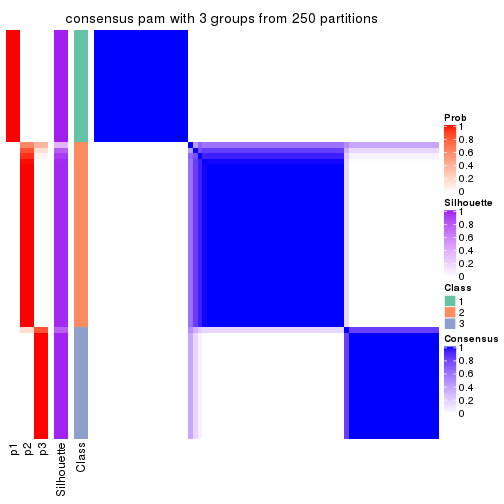
consensus_heatmap(res, k = 4)
consensus_heatmap(res, k = 5)
consensus_heatmap(res, k = 6)
Heatmaps for the membership of samples in all partitions to see how consistent they are:
membership_heatmap(res, k = 2)
membership_heatmap(res, k = 3)
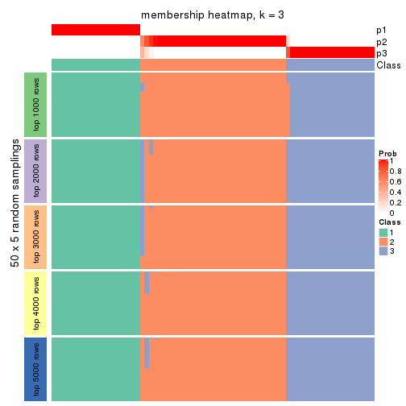
membership_heatmap(res, k = 4)
membership_heatmap(res, k = 5)
membership_heatmap(res, k = 6)

As soon as we have had the classes for columns, we can look for signatures which are significantly different between classes which can be candidate marks for certain classes. Following are the heatmaps for signatures.
Signature heatmaps where rows are scaled:
get_signatures(res, k = 2)
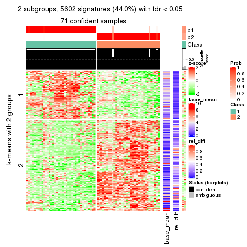
get_signatures(res, k = 3)
get_signatures(res, k = 4)
get_signatures(res, k = 5)
get_signatures(res, k = 6)
Signature heatmaps where rows are not scaled:
get_signatures(res, k = 2, scale_rows = FALSE)
get_signatures(res, k = 3, scale_rows = FALSE)
get_signatures(res, k = 4, scale_rows = FALSE)
get_signatures(res, k = 5, scale_rows = FALSE)
get_signatures(res, k = 6, scale_rows = FALSE)
Compare the overlap of signatures from different k:
compare_signatures(res)
get_signature() returns a data frame invisibly. TO get the list of signatures, the function
call should be assigned to a variable explicitly. In following code, if plot argument is set
to FALSE, no heatmap is plotted while only the differential analysis is performed.
# code only for demonstration
tb = get_signature(res, k = ..., plot = FALSE)
An example of the output of tb is:
#> which_row fdr mean_1 mean_2 scaled_mean_1 scaled_mean_2 km
#> 1 38 0.042760348 8.373488 9.131774 -0.5533452 0.5164555 1
#> 2 40 0.018707592 7.106213 8.469186 -0.6173731 0.5762149 1
#> 3 55 0.019134737 10.221463 11.207825 -0.6159697 0.5749050 1
#> 4 59 0.006059896 5.921854 7.869574 -0.6899429 0.6439467 1
#> 5 60 0.018055526 8.928898 10.211722 -0.6204761 0.5791110 1
#> 6 98 0.009384629 15.714769 14.887706 0.6635654 -0.6193277 2
...
The columns in tb are:
which_row: row indices corresponding to the input matrix.fdr: FDR for the differential test. mean_x: The mean value in group x.scaled_mean_x: The mean value in group x after rows are scaled.km: Row groups if k-means clustering is applied to rows.UMAP plot which shows how samples are separated.
dimension_reduction(res, k = 2, method = "UMAP")
dimension_reduction(res, k = 3, method = "UMAP")
dimension_reduction(res, k = 4, method = "UMAP")
dimension_reduction(res, k = 5, method = "UMAP")
dimension_reduction(res, k = 6, method = "UMAP")
Following heatmap shows how subgroups are split when increasing k:
collect_classes(res)
If matrix rows can be associated to genes, consider to use functional_enrichment(res,
...) to perform function enrichment for the signature genes. See this vignette for more detailed explanations.
The object with results only for a single top-value method and a single partition method can be extracted as:
res = res_list["ATC", "mclust"]
# you can also extract it by
# res = res_list["ATC:mclust"]
A summary of res and all the functions that can be applied to it:
res
#> A 'ConsensusPartition' object with k = 2, 3, 4, 5, 6.
#> On a matrix with 12731 rows and 73 columns.
#> Top rows (1000, 2000, 3000, 4000, 5000) are extracted by 'ATC' method.
#> Subgroups are detected by 'mclust' method.
#> Performed in total 1250 partitions by row resampling.
#> Best k for subgroups seems to be 6.
#>
#> Following methods can be applied to this 'ConsensusPartition' object:
#> [1] "cola_report" "collect_classes" "collect_plots"
#> [4] "collect_stats" "colnames" "compare_signatures"
#> [7] "consensus_heatmap" "dimension_reduction" "functional_enrichment"
#> [10] "get_anno_col" "get_anno" "get_classes"
#> [13] "get_consensus" "get_matrix" "get_membership"
#> [16] "get_param" "get_signatures" "get_stats"
#> [19] "is_best_k" "is_stable_k" "membership_heatmap"
#> [22] "ncol" "nrow" "plot_ecdf"
#> [25] "rownames" "select_partition_number" "show"
#> [28] "suggest_best_k" "test_to_known_factors"
collect_plots() function collects all the plots made from res for all k (number of partitions)
into one single page to provide an easy and fast comparison between different k.
collect_plots(res)
The plots are:
k and the heatmap of
predicted classes for each k.k.k.k.All the plots in panels can be made by individual functions and they are plotted later in this section.
select_partition_number() produces several plots showing different
statistics for choosing “optimized” k. There are following statistics:
k;k, the area increased is defined as \(A_k - A_{k-1}\).The detailed explanations of these statistics can be found in the cola vignette.
Generally speaking, lower PAC score, higher mean silhouette score or higher
concordance corresponds to better partition. Rand index and Jaccard index
measure how similar the current partition is compared to partition with k-1.
If they are too similar, we won't accept k is better than k-1.
select_partition_number(res)
The numeric values for all these statistics can be obtained by get_stats().
get_stats(res)
#> k 1-PAC mean_silhouette concordance area_increased Rand Jaccard
#> 2 2 1.000 0.954 0.960 0.4546 0.535 0.535
#> 3 3 1.000 0.987 0.995 0.4688 0.756 0.560
#> 4 4 1.000 0.994 0.996 0.1345 0.815 0.514
#> 5 5 1.000 0.995 0.998 0.0447 0.967 0.862
#> 6 6 0.916 0.931 0.952 0.0427 0.958 0.804
suggest_best_k() suggests the best \(k\) based on these statistics. The rules are as follows:
suggest_best_k(res)
#> [1] 6
#> attr(,"optional")
#> [1] 2 3 4 5
There is also optional best \(k\) = 2 3 4 5 that is worth to check.
Following shows the table of the partitions (You need to click the show/hide
code output link to see it). The membership matrix (columns with name p*)
is inferred by
clue::cl_consensus()
function with the SE method. Basically the value in the membership matrix
represents the probability to belong to a certain group. The finall class
label for an item is determined with the group with highest probability it
belongs to.
In get_classes() function, the entropy is calculated from the membership
matrix and the silhouette score is calculated from the consensus matrix.
cbind(get_classes(res, k = 2), get_membership(res, k = 2))
#> class entropy silhouette p1 p2
#> SRR2144343 1 0.987 0.318 0.568 0.432
#> SRR2144345 2 0.000 0.946 0.000 1.000
#> SRR2144344 2 0.388 0.969 0.076 0.924
#> SRR2144342 1 0.000 0.975 1.000 0.000
#> SRR2144341 2 0.118 0.951 0.016 0.984
#> SRR2144340 1 0.482 0.897 0.896 0.104
#> SRR2144339 2 0.000 0.946 0.000 1.000
#> SRR2144336 2 0.388 0.969 0.076 0.924
#> SRR2144338 2 0.000 0.946 0.000 1.000
#> SRR2144337 1 0.529 0.846 0.880 0.120
#> SRR2144335 2 0.388 0.969 0.076 0.924
#> SRR2144332 2 0.000 0.946 0.000 1.000
#> SRR2144334 2 0.000 0.946 0.000 1.000
#> SRR2144333 2 0.388 0.969 0.076 0.924
#> SRR2144331 2 0.000 0.946 0.000 1.000
#> SRR2144330 2 0.388 0.969 0.076 0.924
#> SRR2144328 2 0.000 0.946 0.000 1.000
#> SRR2144329 2 0.000 0.946 0.000 1.000
#> SRR2144327 2 0.000 0.946 0.000 1.000
#> SRR2144326 2 0.388 0.969 0.076 0.924
#> SRR2144325 2 0.000 0.946 0.000 1.000
#> SRR2144323 2 0.000 0.946 0.000 1.000
#> SRR2144324 2 0.388 0.969 0.076 0.924
#> SRR2144321 2 0.000 0.946 0.000 1.000
#> SRR2144322 2 0.000 0.946 0.000 1.000
#> SRR2144320 2 0.388 0.969 0.076 0.924
#> SRR2144319 2 0.000 0.946 0.000 1.000
#> SRR2144316 2 0.000 0.946 0.000 1.000
#> SRR2144317 2 0.388 0.969 0.076 0.924
#> SRR2144318 2 0.000 0.946 0.000 1.000
#> SRR2144315 2 0.388 0.969 0.076 0.924
#> SRR2144314 2 0.388 0.969 0.076 0.924
#> SRR2144313 1 0.000 0.975 1.000 0.000
#> SRR2144312 1 0.000 0.975 1.000 0.000
#> SRR2144311 1 0.000 0.975 1.000 0.000
#> SRR2144308 1 0.000 0.975 1.000 0.000
#> SRR2144309 1 0.000 0.975 1.000 0.000
#> SRR2144310 1 0.000 0.975 1.000 0.000
#> SRR2144307 1 0.000 0.975 1.000 0.000
#> SRR2144304 1 0.000 0.975 1.000 0.000
#> SRR2144306 2 0.388 0.969 0.076 0.924
#> SRR2144303 1 0.000 0.975 1.000 0.000
#> SRR2144305 1 0.000 0.975 1.000 0.000
#> SRR2144302 1 0.000 0.975 1.000 0.000
#> SRR2144301 2 0.388 0.969 0.076 0.924
#> SRR2144300 1 0.000 0.975 1.000 0.000
#> SRR2144299 1 0.000 0.975 1.000 0.000
#> SRR2144298 1 0.000 0.975 1.000 0.000
#> SRR2144297 2 0.388 0.969 0.076 0.924
#> SRR2144296 2 0.388 0.969 0.076 0.924
#> SRR2144295 2 0.388 0.969 0.076 0.924
#> SRR2144293 2 0.388 0.969 0.076 0.924
#> SRR2144294 2 0.388 0.969 0.076 0.924
#> SRR2144291 2 0.388 0.969 0.076 0.924
#> SRR2144292 2 0.388 0.969 0.076 0.924
#> SRR2144289 2 0.388 0.969 0.076 0.924
#> SRR2144290 2 0.388 0.969 0.076 0.924
#> SRR2144287 2 0.388 0.969 0.076 0.924
#> SRR2144288 2 0.388 0.969 0.076 0.924
#> SRR2144286 2 0.388 0.969 0.076 0.924
#> SRR2144285 2 0.388 0.969 0.076 0.924
#> SRR2144284 2 0.388 0.969 0.076 0.924
#> SRR2144282 1 0.000 0.975 1.000 0.000
#> SRR2144283 2 0.388 0.969 0.076 0.924
#> SRR2144281 2 0.388 0.969 0.076 0.924
#> SRR2144279 1 0.000 0.975 1.000 0.000
#> SRR2144280 1 0.000 0.975 1.000 0.000
#> SRR2144278 1 0.000 0.975 1.000 0.000
#> SRR2144277 1 0.000 0.975 1.000 0.000
#> SRR2144276 1 0.000 0.975 1.000 0.000
#> SRR2144274 1 0.000 0.975 1.000 0.000
#> SRR2144275 1 0.000 0.975 1.000 0.000
#> SRR2144273 2 0.388 0.969 0.076 0.924
cbind(get_classes(res, k = 3), get_membership(res, k = 3))
#> class entropy silhouette p1 p2 p3
#> SRR2144343 2 0.0000 0.998 0.000 1.000 0.00
#> SRR2144345 2 0.0000 0.998 0.000 1.000 0.00
#> SRR2144344 2 0.0237 0.997 0.004 0.996 0.00
#> SRR2144342 3 0.0000 0.984 0.000 0.000 1.00
#> SRR2144341 2 0.0000 0.998 0.000 1.000 0.00
#> SRR2144340 3 0.5835 0.486 0.000 0.340 0.66
#> SRR2144339 2 0.0000 0.998 0.000 1.000 0.00
#> SRR2144336 2 0.0237 0.997 0.004 0.996 0.00
#> SRR2144338 2 0.0000 0.998 0.000 1.000 0.00
#> SRR2144337 2 0.0237 0.997 0.004 0.996 0.00
#> SRR2144335 2 0.0237 0.997 0.004 0.996 0.00
#> SRR2144332 2 0.0000 0.998 0.000 1.000 0.00
#> SRR2144334 2 0.0000 0.998 0.000 1.000 0.00
#> SRR2144333 2 0.0237 0.997 0.004 0.996 0.00
#> SRR2144331 2 0.0000 0.998 0.000 1.000 0.00
#> SRR2144330 2 0.0237 0.997 0.004 0.996 0.00
#> SRR2144328 2 0.0000 0.998 0.000 1.000 0.00
#> SRR2144329 2 0.0000 0.998 0.000 1.000 0.00
#> SRR2144327 2 0.0000 0.998 0.000 1.000 0.00
#> SRR2144326 2 0.0237 0.997 0.004 0.996 0.00
#> SRR2144325 2 0.0000 0.998 0.000 1.000 0.00
#> SRR2144323 2 0.0000 0.998 0.000 1.000 0.00
#> SRR2144324 2 0.0237 0.997 0.004 0.996 0.00
#> SRR2144321 2 0.0000 0.998 0.000 1.000 0.00
#> SRR2144322 2 0.0000 0.998 0.000 1.000 0.00
#> SRR2144320 2 0.0237 0.997 0.004 0.996 0.00
#> SRR2144319 2 0.0000 0.998 0.000 1.000 0.00
#> SRR2144316 2 0.0000 0.998 0.000 1.000 0.00
#> SRR2144317 2 0.0237 0.997 0.004 0.996 0.00
#> SRR2144318 2 0.0000 0.998 0.000 1.000 0.00
#> SRR2144315 2 0.0237 0.997 0.004 0.996 0.00
#> SRR2144314 1 0.0000 1.000 1.000 0.000 0.00
#> SRR2144313 3 0.0000 0.984 0.000 0.000 1.00
#> SRR2144312 3 0.0000 0.984 0.000 0.000 1.00
#> SRR2144311 3 0.0000 0.984 0.000 0.000 1.00
#> SRR2144308 3 0.0000 0.984 0.000 0.000 1.00
#> SRR2144309 3 0.0000 0.984 0.000 0.000 1.00
#> SRR2144310 3 0.0000 0.984 0.000 0.000 1.00
#> SRR2144307 3 0.0000 0.984 0.000 0.000 1.00
#> SRR2144304 3 0.0000 0.984 0.000 0.000 1.00
#> SRR2144306 1 0.0000 1.000 1.000 0.000 0.00
#> SRR2144303 3 0.0000 0.984 0.000 0.000 1.00
#> SRR2144305 3 0.0000 0.984 0.000 0.000 1.00
#> SRR2144302 3 0.0000 0.984 0.000 0.000 1.00
#> SRR2144301 1 0.0000 1.000 1.000 0.000 0.00
#> SRR2144300 3 0.0000 0.984 0.000 0.000 1.00
#> SRR2144299 3 0.0000 0.984 0.000 0.000 1.00
#> SRR2144298 3 0.0000 0.984 0.000 0.000 1.00
#> SRR2144297 1 0.0000 1.000 1.000 0.000 0.00
#> SRR2144296 1 0.0000 1.000 1.000 0.000 0.00
#> SRR2144295 1 0.0000 1.000 1.000 0.000 0.00
#> SRR2144293 1 0.0000 1.000 1.000 0.000 0.00
#> SRR2144294 1 0.0237 0.996 0.996 0.004 0.00
#> SRR2144291 1 0.0000 1.000 1.000 0.000 0.00
#> SRR2144292 1 0.0000 1.000 1.000 0.000 0.00
#> SRR2144289 1 0.0000 1.000 1.000 0.000 0.00
#> SRR2144290 1 0.0000 1.000 1.000 0.000 0.00
#> SRR2144287 1 0.0000 1.000 1.000 0.000 0.00
#> SRR2144288 1 0.0000 1.000 1.000 0.000 0.00
#> SRR2144286 1 0.0000 1.000 1.000 0.000 0.00
#> SRR2144285 1 0.0000 1.000 1.000 0.000 0.00
#> SRR2144284 1 0.0000 1.000 1.000 0.000 0.00
#> SRR2144282 3 0.0000 0.984 0.000 0.000 1.00
#> SRR2144283 1 0.0000 1.000 1.000 0.000 0.00
#> SRR2144281 1 0.0000 1.000 1.000 0.000 0.00
#> SRR2144279 3 0.0000 0.984 0.000 0.000 1.00
#> SRR2144280 3 0.0000 0.984 0.000 0.000 1.00
#> SRR2144278 3 0.0000 0.984 0.000 0.000 1.00
#> SRR2144277 3 0.0000 0.984 0.000 0.000 1.00
#> SRR2144276 3 0.0000 0.984 0.000 0.000 1.00
#> SRR2144274 3 0.0000 0.984 0.000 0.000 1.00
#> SRR2144275 3 0.0000 0.984 0.000 0.000 1.00
#> SRR2144273 1 0.0000 1.000 1.000 0.000 0.00
cbind(get_classes(res, k = 4), get_membership(res, k = 4))
#> class entropy silhouette p1 p2 p3 p4
#> SRR2144343 2 0.0000 1.000 0.000 1.000 0.000 0.000
#> SRR2144345 2 0.0000 1.000 0.000 1.000 0.000 0.000
#> SRR2144344 3 0.0000 0.984 0.000 0.000 1.000 0.000
#> SRR2144342 1 0.0000 1.000 1.000 0.000 0.000 0.000
#> SRR2144341 2 0.0000 1.000 0.000 1.000 0.000 0.000
#> SRR2144340 2 0.0000 1.000 0.000 1.000 0.000 0.000
#> SRR2144339 2 0.0000 1.000 0.000 1.000 0.000 0.000
#> SRR2144336 3 0.0000 0.984 0.000 0.000 1.000 0.000
#> SRR2144338 2 0.0000 1.000 0.000 1.000 0.000 0.000
#> SRR2144337 3 0.0000 0.984 0.000 0.000 1.000 0.000
#> SRR2144335 3 0.0000 0.984 0.000 0.000 1.000 0.000
#> SRR2144332 2 0.0000 1.000 0.000 1.000 0.000 0.000
#> SRR2144334 2 0.0000 1.000 0.000 1.000 0.000 0.000
#> SRR2144333 3 0.0000 0.984 0.000 0.000 1.000 0.000
#> SRR2144331 2 0.0000 1.000 0.000 1.000 0.000 0.000
#> SRR2144330 3 0.0000 0.984 0.000 0.000 1.000 0.000
#> SRR2144328 2 0.0000 1.000 0.000 1.000 0.000 0.000
#> SRR2144329 2 0.0000 1.000 0.000 1.000 0.000 0.000
#> SRR2144327 2 0.0000 1.000 0.000 1.000 0.000 0.000
#> SRR2144326 3 0.0000 0.984 0.000 0.000 1.000 0.000
#> SRR2144325 2 0.0000 1.000 0.000 1.000 0.000 0.000
#> SRR2144323 2 0.0000 1.000 0.000 1.000 0.000 0.000
#> SRR2144324 3 0.0000 0.984 0.000 0.000 1.000 0.000
#> SRR2144321 2 0.0000 1.000 0.000 1.000 0.000 0.000
#> SRR2144322 2 0.0000 1.000 0.000 1.000 0.000 0.000
#> SRR2144320 3 0.0000 0.984 0.000 0.000 1.000 0.000
#> SRR2144319 2 0.0000 1.000 0.000 1.000 0.000 0.000
#> SRR2144316 2 0.0000 1.000 0.000 1.000 0.000 0.000
#> SRR2144317 3 0.0000 0.984 0.000 0.000 1.000 0.000
#> SRR2144318 2 0.0000 1.000 0.000 1.000 0.000 0.000
#> SRR2144315 3 0.0000 0.984 0.000 0.000 1.000 0.000
#> SRR2144314 4 0.0000 1.000 0.000 0.000 0.000 1.000
#> SRR2144313 1 0.0000 1.000 1.000 0.000 0.000 0.000
#> SRR2144312 3 0.1302 0.969 0.044 0.000 0.956 0.000
#> SRR2144311 1 0.0000 1.000 1.000 0.000 0.000 0.000
#> SRR2144308 3 0.0336 0.983 0.008 0.000 0.992 0.000
#> SRR2144309 3 0.1302 0.969 0.044 0.000 0.956 0.000
#> SRR2144310 1 0.0000 1.000 1.000 0.000 0.000 0.000
#> SRR2144307 1 0.0000 1.000 1.000 0.000 0.000 0.000
#> SRR2144304 1 0.0000 1.000 1.000 0.000 0.000 0.000
#> SRR2144306 4 0.0000 1.000 0.000 0.000 0.000 1.000
#> SRR2144303 1 0.0000 1.000 1.000 0.000 0.000 0.000
#> SRR2144305 3 0.1211 0.971 0.040 0.000 0.960 0.000
#> SRR2144302 3 0.1302 0.969 0.044 0.000 0.956 0.000
#> SRR2144301 4 0.0000 1.000 0.000 0.000 0.000 1.000
#> SRR2144300 1 0.0000 1.000 1.000 0.000 0.000 0.000
#> SRR2144299 1 0.0000 1.000 1.000 0.000 0.000 0.000
#> SRR2144298 1 0.0000 1.000 1.000 0.000 0.000 0.000
#> SRR2144297 4 0.0000 1.000 0.000 0.000 0.000 1.000
#> SRR2144296 4 0.0000 1.000 0.000 0.000 0.000 1.000
#> SRR2144295 4 0.0000 1.000 0.000 0.000 0.000 1.000
#> SRR2144293 4 0.0000 1.000 0.000 0.000 0.000 1.000
#> SRR2144294 2 0.0188 0.996 0.000 0.996 0.000 0.004
#> SRR2144291 4 0.0000 1.000 0.000 0.000 0.000 1.000
#> SRR2144292 4 0.0000 1.000 0.000 0.000 0.000 1.000
#> SRR2144289 4 0.0000 1.000 0.000 0.000 0.000 1.000
#> SRR2144290 4 0.0000 1.000 0.000 0.000 0.000 1.000
#> SRR2144287 4 0.0000 1.000 0.000 0.000 0.000 1.000
#> SRR2144288 4 0.0000 1.000 0.000 0.000 0.000 1.000
#> SRR2144286 4 0.0000 1.000 0.000 0.000 0.000 1.000
#> SRR2144285 4 0.0000 1.000 0.000 0.000 0.000 1.000
#> SRR2144284 4 0.0000 1.000 0.000 0.000 0.000 1.000
#> SRR2144282 3 0.1302 0.969 0.044 0.000 0.956 0.000
#> SRR2144283 4 0.0000 1.000 0.000 0.000 0.000 1.000
#> SRR2144281 4 0.0000 1.000 0.000 0.000 0.000 1.000
#> SRR2144279 1 0.0000 1.000 1.000 0.000 0.000 0.000
#> SRR2144280 1 0.0000 1.000 1.000 0.000 0.000 0.000
#> SRR2144278 1 0.0000 1.000 1.000 0.000 0.000 0.000
#> SRR2144277 1 0.0000 1.000 1.000 0.000 0.000 0.000
#> SRR2144276 3 0.1211 0.971 0.040 0.000 0.960 0.000
#> SRR2144274 1 0.0000 1.000 1.000 0.000 0.000 0.000
#> SRR2144275 3 0.0817 0.978 0.024 0.000 0.976 0.000
#> SRR2144273 4 0.0000 1.000 0.000 0.000 0.000 1.000
cbind(get_classes(res, k = 5), get_membership(res, k = 5))
#> class entropy silhouette p1 p2 p3 p4 p5
#> SRR2144343 2 0.0000 0.996 0.000 1.000 0.000 0.000 0.000
#> SRR2144345 2 0.0000 0.996 0.000 1.000 0.000 0.000 0.000
#> SRR2144344 3 0.0000 0.990 0.000 0.000 1.000 0.000 0.000
#> SRR2144342 1 0.0000 1.000 1.000 0.000 0.000 0.000 0.000
#> SRR2144341 2 0.0609 0.979 0.000 0.980 0.020 0.000 0.000
#> SRR2144340 2 0.0609 0.977 0.020 0.980 0.000 0.000 0.000
#> SRR2144339 2 0.0000 0.996 0.000 1.000 0.000 0.000 0.000
#> SRR2144336 3 0.0000 0.990 0.000 0.000 1.000 0.000 0.000
#> SRR2144338 2 0.0000 0.996 0.000 1.000 0.000 0.000 0.000
#> SRR2144337 3 0.1197 0.954 0.000 0.000 0.952 0.000 0.048
#> SRR2144335 3 0.0000 0.990 0.000 0.000 1.000 0.000 0.000
#> SRR2144332 2 0.0000 0.996 0.000 1.000 0.000 0.000 0.000
#> SRR2144334 2 0.0000 0.996 0.000 1.000 0.000 0.000 0.000
#> SRR2144333 3 0.0000 0.990 0.000 0.000 1.000 0.000 0.000
#> SRR2144331 2 0.0000 0.996 0.000 1.000 0.000 0.000 0.000
#> SRR2144330 3 0.0000 0.990 0.000 0.000 1.000 0.000 0.000
#> SRR2144328 2 0.0000 0.996 0.000 1.000 0.000 0.000 0.000
#> SRR2144329 2 0.0000 0.996 0.000 1.000 0.000 0.000 0.000
#> SRR2144327 2 0.0000 0.996 0.000 1.000 0.000 0.000 0.000
#> SRR2144326 3 0.0000 0.990 0.000 0.000 1.000 0.000 0.000
#> SRR2144325 2 0.0000 0.996 0.000 1.000 0.000 0.000 0.000
#> SRR2144323 2 0.0000 0.996 0.000 1.000 0.000 0.000 0.000
#> SRR2144324 3 0.0000 0.990 0.000 0.000 1.000 0.000 0.000
#> SRR2144321 2 0.0000 0.996 0.000 1.000 0.000 0.000 0.000
#> SRR2144322 2 0.0000 0.996 0.000 1.000 0.000 0.000 0.000
#> SRR2144320 3 0.0000 0.990 0.000 0.000 1.000 0.000 0.000
#> SRR2144319 2 0.0000 0.996 0.000 1.000 0.000 0.000 0.000
#> SRR2144316 2 0.0000 0.996 0.000 1.000 0.000 0.000 0.000
#> SRR2144317 3 0.0000 0.990 0.000 0.000 1.000 0.000 0.000
#> SRR2144318 2 0.0000 0.996 0.000 1.000 0.000 0.000 0.000
#> SRR2144315 3 0.1197 0.954 0.000 0.000 0.952 0.000 0.048
#> SRR2144314 4 0.0000 1.000 0.000 0.000 0.000 1.000 0.000
#> SRR2144313 1 0.0000 1.000 1.000 0.000 0.000 0.000 0.000
#> SRR2144312 5 0.0000 0.999 0.000 0.000 0.000 0.000 1.000
#> SRR2144311 1 0.0000 1.000 1.000 0.000 0.000 0.000 0.000
#> SRR2144308 5 0.0162 0.996 0.000 0.000 0.004 0.000 0.996
#> SRR2144309 5 0.0000 0.999 0.000 0.000 0.000 0.000 1.000
#> SRR2144310 1 0.0000 1.000 1.000 0.000 0.000 0.000 0.000
#> SRR2144307 1 0.0000 1.000 1.000 0.000 0.000 0.000 0.000
#> SRR2144304 1 0.0000 1.000 1.000 0.000 0.000 0.000 0.000
#> SRR2144306 4 0.0000 1.000 0.000 0.000 0.000 1.000 0.000
#> SRR2144303 1 0.0000 1.000 1.000 0.000 0.000 0.000 0.000
#> SRR2144305 5 0.0000 0.999 0.000 0.000 0.000 0.000 1.000
#> SRR2144302 5 0.0000 0.999 0.000 0.000 0.000 0.000 1.000
#> SRR2144301 4 0.0000 1.000 0.000 0.000 0.000 1.000 0.000
#> SRR2144300 1 0.0000 1.000 1.000 0.000 0.000 0.000 0.000
#> SRR2144299 1 0.0162 0.996 0.996 0.000 0.000 0.000 0.004
#> SRR2144298 1 0.0000 1.000 1.000 0.000 0.000 0.000 0.000
#> SRR2144297 4 0.0000 1.000 0.000 0.000 0.000 1.000 0.000
#> SRR2144296 4 0.0000 1.000 0.000 0.000 0.000 1.000 0.000
#> SRR2144295 4 0.0000 1.000 0.000 0.000 0.000 1.000 0.000
#> SRR2144293 4 0.0000 1.000 0.000 0.000 0.000 1.000 0.000
#> SRR2144294 2 0.0703 0.971 0.000 0.976 0.000 0.024 0.000
#> SRR2144291 4 0.0000 1.000 0.000 0.000 0.000 1.000 0.000
#> SRR2144292 4 0.0000 1.000 0.000 0.000 0.000 1.000 0.000
#> SRR2144289 4 0.0000 1.000 0.000 0.000 0.000 1.000 0.000
#> SRR2144290 4 0.0000 1.000 0.000 0.000 0.000 1.000 0.000
#> SRR2144287 4 0.0000 1.000 0.000 0.000 0.000 1.000 0.000
#> SRR2144288 4 0.0000 1.000 0.000 0.000 0.000 1.000 0.000
#> SRR2144286 4 0.0000 1.000 0.000 0.000 0.000 1.000 0.000
#> SRR2144285 4 0.0000 1.000 0.000 0.000 0.000 1.000 0.000
#> SRR2144284 4 0.0000 1.000 0.000 0.000 0.000 1.000 0.000
#> SRR2144282 5 0.0000 0.999 0.000 0.000 0.000 0.000 1.000
#> SRR2144283 4 0.0000 1.000 0.000 0.000 0.000 1.000 0.000
#> SRR2144281 4 0.0000 1.000 0.000 0.000 0.000 1.000 0.000
#> SRR2144279 1 0.0000 1.000 1.000 0.000 0.000 0.000 0.000
#> SRR2144280 1 0.0000 1.000 1.000 0.000 0.000 0.000 0.000
#> SRR2144278 1 0.0000 1.000 1.000 0.000 0.000 0.000 0.000
#> SRR2144277 1 0.0000 1.000 1.000 0.000 0.000 0.000 0.000
#> SRR2144276 5 0.0000 0.999 0.000 0.000 0.000 0.000 1.000
#> SRR2144274 1 0.0000 1.000 1.000 0.000 0.000 0.000 0.000
#> SRR2144275 5 0.0000 0.999 0.000 0.000 0.000 0.000 1.000
#> SRR2144273 4 0.0000 1.000 0.000 0.000 0.000 1.000 0.000
cbind(get_classes(res, k = 6), get_membership(res, k = 6))
#> class entropy silhouette p1 p2 p3 p4 p5 p6
#> SRR2144343 2 0.218 0.859 0.132 0.868 0 0.000 0 0.000
#> SRR2144345 2 0.000 0.929 0.000 1.000 0 0.000 0 0.000
#> SRR2144344 3 0.000 1.000 0.000 0.000 1 0.000 0 0.000
#> SRR2144342 1 0.000 1.000 1.000 0.000 0 0.000 0 0.000
#> SRR2144341 2 0.000 0.929 0.000 1.000 0 0.000 0 0.000
#> SRR2144340 2 0.300 0.746 0.228 0.772 0 0.000 0 0.000
#> SRR2144339 2 0.000 0.929 0.000 1.000 0 0.000 0 0.000
#> SRR2144336 3 0.000 1.000 0.000 0.000 1 0.000 0 0.000
#> SRR2144338 2 0.218 0.923 0.000 0.868 0 0.000 0 0.132
#> SRR2144337 3 0.000 1.000 0.000 0.000 1 0.000 0 0.000
#> SRR2144335 3 0.000 1.000 0.000 0.000 1 0.000 0 0.000
#> SRR2144332 2 0.000 0.929 0.000 1.000 0 0.000 0 0.000
#> SRR2144334 2 0.218 0.923 0.000 0.868 0 0.000 0 0.132
#> SRR2144333 3 0.000 1.000 0.000 0.000 1 0.000 0 0.000
#> SRR2144331 2 0.218 0.923 0.000 0.868 0 0.000 0 0.132
#> SRR2144330 3 0.000 1.000 0.000 0.000 1 0.000 0 0.000
#> SRR2144328 2 0.218 0.923 0.000 0.868 0 0.000 0 0.132
#> SRR2144329 2 0.000 0.929 0.000 1.000 0 0.000 0 0.000
#> SRR2144327 2 0.218 0.923 0.000 0.868 0 0.000 0 0.132
#> SRR2144326 3 0.000 1.000 0.000 0.000 1 0.000 0 0.000
#> SRR2144325 2 0.000 0.929 0.000 1.000 0 0.000 0 0.000
#> SRR2144323 2 0.000 0.929 0.000 1.000 0 0.000 0 0.000
#> SRR2144324 3 0.000 1.000 0.000 0.000 1 0.000 0 0.000
#> SRR2144321 2 0.000 0.929 0.000 1.000 0 0.000 0 0.000
#> SRR2144322 2 0.218 0.923 0.000 0.868 0 0.000 0 0.132
#> SRR2144320 3 0.000 1.000 0.000 0.000 1 0.000 0 0.000
#> SRR2144319 2 0.000 0.929 0.000 1.000 0 0.000 0 0.000
#> SRR2144316 2 0.218 0.923 0.000 0.868 0 0.000 0 0.132
#> SRR2144317 3 0.000 1.000 0.000 0.000 1 0.000 0 0.000
#> SRR2144318 2 0.218 0.923 0.000 0.868 0 0.000 0 0.132
#> SRR2144315 3 0.000 1.000 0.000 0.000 1 0.000 0 0.000
#> SRR2144314 4 0.000 0.881 0.000 0.000 0 1.000 0 0.000
#> SRR2144313 1 0.000 1.000 1.000 0.000 0 0.000 0 0.000
#> SRR2144312 5 0.000 1.000 0.000 0.000 0 0.000 1 0.000
#> SRR2144311 1 0.000 1.000 1.000 0.000 0 0.000 0 0.000
#> SRR2144308 5 0.000 1.000 0.000 0.000 0 0.000 1 0.000
#> SRR2144309 5 0.000 1.000 0.000 0.000 0 0.000 1 0.000
#> SRR2144310 1 0.000 1.000 1.000 0.000 0 0.000 0 0.000
#> SRR2144307 1 0.000 1.000 1.000 0.000 0 0.000 0 0.000
#> SRR2144304 1 0.000 1.000 1.000 0.000 0 0.000 0 0.000
#> SRR2144306 4 0.000 0.881 0.000 0.000 0 1.000 0 0.000
#> SRR2144303 1 0.000 1.000 1.000 0.000 0 0.000 0 0.000
#> SRR2144305 5 0.000 1.000 0.000 0.000 0 0.000 1 0.000
#> SRR2144302 5 0.000 1.000 0.000 0.000 0 0.000 1 0.000
#> SRR2144301 4 0.000 0.881 0.000 0.000 0 1.000 0 0.000
#> SRR2144300 1 0.000 1.000 1.000 0.000 0 0.000 0 0.000
#> SRR2144299 1 0.000 1.000 1.000 0.000 0 0.000 0 0.000
#> SRR2144298 1 0.000 1.000 1.000 0.000 0 0.000 0 0.000
#> SRR2144297 6 0.218 1.000 0.000 0.000 0 0.132 0 0.868
#> SRR2144296 4 0.285 0.692 0.000 0.000 0 0.792 0 0.208
#> SRR2144295 6 0.218 1.000 0.000 0.000 0 0.132 0 0.868
#> SRR2144293 6 0.218 1.000 0.000 0.000 0 0.132 0 0.868
#> SRR2144294 4 0.000 0.881 0.000 0.000 0 1.000 0 0.000
#> SRR2144291 4 0.000 0.881 0.000 0.000 0 1.000 0 0.000
#> SRR2144292 6 0.218 1.000 0.000 0.000 0 0.132 0 0.868
#> SRR2144289 4 0.000 0.881 0.000 0.000 0 1.000 0 0.000
#> SRR2144290 4 0.381 0.211 0.000 0.000 0 0.572 0 0.428
#> SRR2144287 4 0.000 0.881 0.000 0.000 0 1.000 0 0.000
#> SRR2144288 6 0.218 1.000 0.000 0.000 0 0.132 0 0.868
#> SRR2144286 4 0.279 0.702 0.000 0.000 0 0.800 0 0.200
#> SRR2144285 6 0.218 1.000 0.000 0.000 0 0.132 0 0.868
#> SRR2144284 4 0.000 0.881 0.000 0.000 0 1.000 0 0.000
#> SRR2144282 5 0.000 1.000 0.000 0.000 0 0.000 1 0.000
#> SRR2144283 4 0.000 0.881 0.000 0.000 0 1.000 0 0.000
#> SRR2144281 4 0.000 0.881 0.000 0.000 0 1.000 0 0.000
#> SRR2144279 1 0.000 1.000 1.000 0.000 0 0.000 0 0.000
#> SRR2144280 1 0.000 1.000 1.000 0.000 0 0.000 0 0.000
#> SRR2144278 1 0.000 1.000 1.000 0.000 0 0.000 0 0.000
#> SRR2144277 1 0.000 1.000 1.000 0.000 0 0.000 0 0.000
#> SRR2144276 5 0.000 1.000 0.000 0.000 0 0.000 1 0.000
#> SRR2144274 1 0.000 1.000 1.000 0.000 0 0.000 0 0.000
#> SRR2144275 5 0.000 1.000 0.000 0.000 0 0.000 1 0.000
#> SRR2144273 4 0.382 0.197 0.000 0.000 0 0.568 0 0.432
Heatmaps for the consensus matrix. It visualizes the probability of two samples to be in a same group.
consensus_heatmap(res, k = 2)
consensus_heatmap(res, k = 3)
consensus_heatmap(res, k = 4)

consensus_heatmap(res, k = 5)
consensus_heatmap(res, k = 6)
Heatmaps for the membership of samples in all partitions to see how consistent they are:
membership_heatmap(res, k = 2)
membership_heatmap(res, k = 3)
membership_heatmap(res, k = 4)
membership_heatmap(res, k = 5)
membership_heatmap(res, k = 6)
As soon as we have had the classes for columns, we can look for signatures which are significantly different between classes which can be candidate marks for certain classes. Following are the heatmaps for signatures.
Signature heatmaps where rows are scaled:
get_signatures(res, k = 2)
get_signatures(res, k = 3)
get_signatures(res, k = 4)
get_signatures(res, k = 5)
get_signatures(res, k = 6)
Signature heatmaps where rows are not scaled:
get_signatures(res, k = 2, scale_rows = FALSE)
get_signatures(res, k = 3, scale_rows = FALSE)
get_signatures(res, k = 4, scale_rows = FALSE)
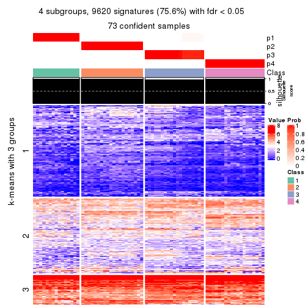
get_signatures(res, k = 5, scale_rows = FALSE)
get_signatures(res, k = 6, scale_rows = FALSE)
Compare the overlap of signatures from different k:
compare_signatures(res)

get_signature() returns a data frame invisibly. TO get the list of signatures, the function
call should be assigned to a variable explicitly. In following code, if plot argument is set
to FALSE, no heatmap is plotted while only the differential analysis is performed.
# code only for demonstration
tb = get_signature(res, k = ..., plot = FALSE)
An example of the output of tb is:
#> which_row fdr mean_1 mean_2 scaled_mean_1 scaled_mean_2 km
#> 1 38 0.042760348 8.373488 9.131774 -0.5533452 0.5164555 1
#> 2 40 0.018707592 7.106213 8.469186 -0.6173731 0.5762149 1
#> 3 55 0.019134737 10.221463 11.207825 -0.6159697 0.5749050 1
#> 4 59 0.006059896 5.921854 7.869574 -0.6899429 0.6439467 1
#> 5 60 0.018055526 8.928898 10.211722 -0.6204761 0.5791110 1
#> 6 98 0.009384629 15.714769 14.887706 0.6635654 -0.6193277 2
...
The columns in tb are:
which_row: row indices corresponding to the input matrix.fdr: FDR for the differential test. mean_x: The mean value in group x.scaled_mean_x: The mean value in group x after rows are scaled.km: Row groups if k-means clustering is applied to rows.UMAP plot which shows how samples are separated.
dimension_reduction(res, k = 2, method = "UMAP")

dimension_reduction(res, k = 3, method = "UMAP")
dimension_reduction(res, k = 4, method = "UMAP")
dimension_reduction(res, k = 5, method = "UMAP")
dimension_reduction(res, k = 6, method = "UMAP")
Following heatmap shows how subgroups are split when increasing k:
collect_classes(res)
If matrix rows can be associated to genes, consider to use functional_enrichment(res,
...) to perform function enrichment for the signature genes. See this vignette for more detailed explanations.
The object with results only for a single top-value method and a single partition method can be extracted as:
res = res_list["ATC", "NMF"]
# you can also extract it by
# res = res_list["ATC:NMF"]
A summary of res and all the functions that can be applied to it:
res
#> A 'ConsensusPartition' object with k = 2, 3, 4, 5, 6.
#> On a matrix with 12731 rows and 73 columns.
#> Top rows (1000, 2000, 3000, 4000, 5000) are extracted by 'ATC' method.
#> Subgroups are detected by 'NMF' method.
#> Performed in total 1250 partitions by row resampling.
#> Best k for subgroups seems to be 4.
#>
#> Following methods can be applied to this 'ConsensusPartition' object:
#> [1] "cola_report" "collect_classes" "collect_plots"
#> [4] "collect_stats" "colnames" "compare_signatures"
#> [7] "consensus_heatmap" "dimension_reduction" "functional_enrichment"
#> [10] "get_anno_col" "get_anno" "get_classes"
#> [13] "get_consensus" "get_matrix" "get_membership"
#> [16] "get_param" "get_signatures" "get_stats"
#> [19] "is_best_k" "is_stable_k" "membership_heatmap"
#> [22] "ncol" "nrow" "plot_ecdf"
#> [25] "rownames" "select_partition_number" "show"
#> [28] "suggest_best_k" "test_to_known_factors"
collect_plots() function collects all the plots made from res for all k (number of partitions)
into one single page to provide an easy and fast comparison between different k.
collect_plots(res)
The plots are:
k and the heatmap of
predicted classes for each k.k.k.k.All the plots in panels can be made by individual functions and they are plotted later in this section.
select_partition_number() produces several plots showing different
statistics for choosing “optimized” k. There are following statistics:
k;k, the area increased is defined as \(A_k - A_{k-1}\).The detailed explanations of these statistics can be found in the cola vignette.
Generally speaking, lower PAC score, higher mean silhouette score or higher
concordance corresponds to better partition. Rand index and Jaccard index
measure how similar the current partition is compared to partition with k-1.
If they are too similar, we won't accept k is better than k-1.
select_partition_number(res)
The numeric values for all these statistics can be obtained by get_stats().
get_stats(res)
#> k 1-PAC mean_silhouette concordance area_increased Rand Jaccard
#> 2 2 1.000 0.952 0.981 0.5053 0.494 0.494
#> 3 3 0.895 0.912 0.950 0.2995 0.814 0.638
#> 4 4 0.939 0.887 0.950 0.1257 0.885 0.685
#> 5 5 0.795 0.766 0.881 0.0747 0.867 0.560
#> 6 6 0.742 0.595 0.809 0.0311 0.943 0.743
suggest_best_k() suggests the best \(k\) based on these statistics. The rules are as follows:
suggest_best_k(res)
#> [1] 4
#> attr(,"optional")
#> [1] 2
There is also optional best \(k\) = 2 that is worth to check.
Following shows the table of the partitions (You need to click the show/hide
code output link to see it). The membership matrix (columns with name p*)
is inferred by
clue::cl_consensus()
function with the SE method. Basically the value in the membership matrix
represents the probability to belong to a certain group. The finall class
label for an item is determined with the group with highest probability it
belongs to.
In get_classes() function, the entropy is calculated from the membership
matrix and the silhouette score is calculated from the consensus matrix.
cbind(get_classes(res, k = 2), get_membership(res, k = 2))
#> class entropy silhouette p1 p2
#> SRR2144343 2 0.000 0.984 0.000 1.000
#> SRR2144345 2 0.000 0.984 0.000 1.000
#> SRR2144344 2 0.000 0.984 0.000 1.000
#> SRR2144342 2 0.000 0.984 0.000 1.000
#> SRR2144341 2 0.000 0.984 0.000 1.000
#> SRR2144340 2 0.000 0.984 0.000 1.000
#> SRR2144339 2 0.000 0.984 0.000 1.000
#> SRR2144336 2 0.000 0.984 0.000 1.000
#> SRR2144338 2 0.000 0.984 0.000 1.000
#> SRR2144337 2 0.163 0.965 0.024 0.976
#> SRR2144335 2 0.000 0.984 0.000 1.000
#> SRR2144332 2 0.000 0.984 0.000 1.000
#> SRR2144334 2 0.000 0.984 0.000 1.000
#> SRR2144333 2 0.000 0.984 0.000 1.000
#> SRR2144331 2 0.000 0.984 0.000 1.000
#> SRR2144330 2 0.939 0.438 0.356 0.644
#> SRR2144328 2 0.000 0.984 0.000 1.000
#> SRR2144329 2 0.000 0.984 0.000 1.000
#> SRR2144327 2 0.000 0.984 0.000 1.000
#> SRR2144326 2 0.000 0.984 0.000 1.000
#> SRR2144325 2 0.000 0.984 0.000 1.000
#> SRR2144323 2 0.000 0.984 0.000 1.000
#> SRR2144324 2 0.000 0.984 0.000 1.000
#> SRR2144321 2 0.000 0.984 0.000 1.000
#> SRR2144322 2 0.000 0.984 0.000 1.000
#> SRR2144320 2 0.184 0.961 0.028 0.972
#> SRR2144319 2 0.000 0.984 0.000 1.000
#> SRR2144316 2 0.000 0.984 0.000 1.000
#> SRR2144317 2 0.000 0.984 0.000 1.000
#> SRR2144318 2 0.000 0.984 0.000 1.000
#> SRR2144315 1 0.000 0.975 1.000 0.000
#> SRR2144314 1 0.000 0.975 1.000 0.000
#> SRR2144313 2 0.000 0.984 0.000 1.000
#> SRR2144312 1 0.000 0.975 1.000 0.000
#> SRR2144311 2 0.456 0.889 0.096 0.904
#> SRR2144308 1 0.118 0.960 0.984 0.016
#> SRR2144309 1 0.000 0.975 1.000 0.000
#> SRR2144310 2 0.000 0.984 0.000 1.000
#> SRR2144307 2 0.000 0.984 0.000 1.000
#> SRR2144304 2 0.000 0.984 0.000 1.000
#> SRR2144306 1 0.961 0.373 0.616 0.384
#> SRR2144303 2 0.000 0.984 0.000 1.000
#> SRR2144305 1 0.000 0.975 1.000 0.000
#> SRR2144302 1 0.000 0.975 1.000 0.000
#> SRR2144301 1 0.000 0.975 1.000 0.000
#> SRR2144300 2 0.311 0.934 0.056 0.944
#> SRR2144299 1 0.000 0.975 1.000 0.000
#> SRR2144298 1 0.000 0.975 1.000 0.000
#> SRR2144297 1 0.000 0.975 1.000 0.000
#> SRR2144296 1 0.000 0.975 1.000 0.000
#> SRR2144295 1 0.000 0.975 1.000 0.000
#> SRR2144293 1 0.000 0.975 1.000 0.000
#> SRR2144294 1 0.000 0.975 1.000 0.000
#> SRR2144291 1 0.000 0.975 1.000 0.000
#> SRR2144292 1 0.000 0.975 1.000 0.000
#> SRR2144289 1 0.000 0.975 1.000 0.000
#> SRR2144290 1 0.000 0.975 1.000 0.000
#> SRR2144287 1 0.000 0.975 1.000 0.000
#> SRR2144288 1 0.000 0.975 1.000 0.000
#> SRR2144286 1 0.000 0.975 1.000 0.000
#> SRR2144285 1 0.000 0.975 1.000 0.000
#> SRR2144284 1 0.000 0.975 1.000 0.000
#> SRR2144282 1 0.000 0.975 1.000 0.000
#> SRR2144283 1 0.000 0.975 1.000 0.000
#> SRR2144281 1 0.000 0.975 1.000 0.000
#> SRR2144279 1 0.980 0.283 0.584 0.416
#> SRR2144280 2 0.000 0.984 0.000 1.000
#> SRR2144278 1 0.000 0.975 1.000 0.000
#> SRR2144277 1 0.000 0.975 1.000 0.000
#> SRR2144276 1 0.000 0.975 1.000 0.000
#> SRR2144274 1 0.000 0.975 1.000 0.000
#> SRR2144275 1 0.000 0.975 1.000 0.000
#> SRR2144273 1 0.000 0.975 1.000 0.000
cbind(get_classes(res, k = 3), get_membership(res, k = 3))
#> class entropy silhouette p1 p2 p3
#> SRR2144343 2 0.0424 0.960 0.008 0.992 0.000
#> SRR2144345 2 0.0424 0.960 0.008 0.992 0.000
#> SRR2144344 2 0.2200 0.939 0.004 0.940 0.056
#> SRR2144342 1 0.4346 0.809 0.816 0.184 0.000
#> SRR2144341 2 0.0000 0.961 0.000 1.000 0.000
#> SRR2144340 2 0.1529 0.938 0.040 0.960 0.000
#> SRR2144339 2 0.0424 0.960 0.008 0.992 0.000
#> SRR2144336 2 0.2200 0.939 0.004 0.940 0.056
#> SRR2144338 2 0.0892 0.953 0.020 0.980 0.000
#> SRR2144337 2 0.3349 0.897 0.004 0.888 0.108
#> SRR2144335 2 0.2400 0.934 0.004 0.932 0.064
#> SRR2144332 2 0.0000 0.961 0.000 1.000 0.000
#> SRR2144334 2 0.0424 0.960 0.008 0.992 0.000
#> SRR2144333 2 0.2301 0.937 0.004 0.936 0.060
#> SRR2144331 2 0.0000 0.961 0.000 1.000 0.000
#> SRR2144330 2 0.5553 0.682 0.004 0.724 0.272
#> SRR2144328 2 0.0000 0.961 0.000 1.000 0.000
#> SRR2144329 2 0.0000 0.961 0.000 1.000 0.000
#> SRR2144327 2 0.0000 0.961 0.000 1.000 0.000
#> SRR2144326 2 0.1399 0.951 0.004 0.968 0.028
#> SRR2144325 2 0.0424 0.960 0.008 0.992 0.000
#> SRR2144323 2 0.0000 0.961 0.000 1.000 0.000
#> SRR2144324 2 0.2400 0.934 0.004 0.932 0.064
#> SRR2144321 2 0.0000 0.961 0.000 1.000 0.000
#> SRR2144322 2 0.0424 0.960 0.008 0.992 0.000
#> SRR2144320 2 0.3193 0.905 0.004 0.896 0.100
#> SRR2144319 2 0.0000 0.961 0.000 1.000 0.000
#> SRR2144316 2 0.0424 0.960 0.008 0.992 0.000
#> SRR2144317 2 0.2200 0.939 0.004 0.940 0.056
#> SRR2144318 2 0.0424 0.960 0.008 0.992 0.000
#> SRR2144315 3 0.0661 0.918 0.004 0.008 0.988
#> SRR2144314 3 0.2066 0.914 0.060 0.000 0.940
#> SRR2144313 1 0.1643 0.947 0.956 0.044 0.000
#> SRR2144312 3 0.0000 0.925 0.000 0.000 1.000
#> SRR2144311 1 0.0237 0.958 0.996 0.004 0.000
#> SRR2144308 3 0.3715 0.795 0.004 0.128 0.868
#> SRR2144309 3 0.0000 0.925 0.000 0.000 1.000
#> SRR2144310 1 0.1964 0.941 0.944 0.056 0.000
#> SRR2144307 1 0.2356 0.930 0.928 0.072 0.000
#> SRR2144304 1 0.2165 0.936 0.936 0.064 0.000
#> SRR2144306 1 0.0237 0.956 0.996 0.000 0.004
#> SRR2144303 1 0.0747 0.958 0.984 0.016 0.000
#> SRR2144305 3 0.0475 0.921 0.004 0.004 0.992
#> SRR2144302 3 0.0000 0.925 0.000 0.000 1.000
#> SRR2144301 3 0.2356 0.908 0.072 0.000 0.928
#> SRR2144300 1 0.0424 0.958 0.992 0.008 0.000
#> SRR2144299 3 0.2537 0.906 0.080 0.000 0.920
#> SRR2144298 1 0.2261 0.899 0.932 0.000 0.068
#> SRR2144297 3 0.0592 0.926 0.012 0.000 0.988
#> SRR2144296 3 0.1411 0.923 0.036 0.000 0.964
#> SRR2144295 3 0.0592 0.926 0.012 0.000 0.988
#> SRR2144293 3 0.0000 0.925 0.000 0.000 1.000
#> SRR2144294 3 0.6309 0.152 0.500 0.000 0.500
#> SRR2144291 3 0.4796 0.773 0.220 0.000 0.780
#> SRR2144292 3 0.0000 0.925 0.000 0.000 1.000
#> SRR2144289 3 0.2356 0.908 0.072 0.000 0.928
#> SRR2144290 3 0.1411 0.923 0.036 0.000 0.964
#> SRR2144287 3 0.5327 0.701 0.272 0.000 0.728
#> SRR2144288 3 0.0592 0.926 0.012 0.000 0.988
#> SRR2144286 3 0.1529 0.922 0.040 0.000 0.960
#> SRR2144285 3 0.0000 0.925 0.000 0.000 1.000
#> SRR2144284 3 0.5016 0.748 0.240 0.000 0.760
#> SRR2144282 3 0.0000 0.925 0.000 0.000 1.000
#> SRR2144283 3 0.1860 0.917 0.052 0.000 0.948
#> SRR2144281 3 0.3941 0.843 0.156 0.000 0.844
#> SRR2144279 1 0.0237 0.958 0.996 0.004 0.000
#> SRR2144280 1 0.0747 0.958 0.984 0.016 0.000
#> SRR2144278 1 0.0592 0.952 0.988 0.000 0.012
#> SRR2144277 1 0.0592 0.952 0.988 0.000 0.012
#> SRR2144276 3 0.0000 0.925 0.000 0.000 1.000
#> SRR2144274 1 0.0424 0.954 0.992 0.000 0.008
#> SRR2144275 3 0.0000 0.925 0.000 0.000 1.000
#> SRR2144273 3 0.1753 0.919 0.048 0.000 0.952
cbind(get_classes(res, k = 4), get_membership(res, k = 4))
#> class entropy silhouette p1 p2 p3 p4
#> SRR2144343 2 0.0000 0.9156 0.000 1.000 0.000 0.000
#> SRR2144345 2 0.0000 0.9156 0.000 1.000 0.000 0.000
#> SRR2144344 2 0.4994 0.2153 0.000 0.520 0.480 0.000
#> SRR2144342 1 0.0707 0.9130 0.980 0.020 0.000 0.000
#> SRR2144341 2 0.0000 0.9156 0.000 1.000 0.000 0.000
#> SRR2144340 1 0.5000 0.0219 0.504 0.496 0.000 0.000
#> SRR2144339 2 0.0000 0.9156 0.000 1.000 0.000 0.000
#> SRR2144336 2 0.4996 0.2034 0.000 0.516 0.484 0.000
#> SRR2144338 2 0.0469 0.9074 0.012 0.988 0.000 0.000
#> SRR2144337 3 0.1637 0.9213 0.000 0.060 0.940 0.000
#> SRR2144335 2 0.4746 0.4912 0.000 0.632 0.368 0.000
#> SRR2144332 2 0.0000 0.9156 0.000 1.000 0.000 0.000
#> SRR2144334 2 0.0000 0.9156 0.000 1.000 0.000 0.000
#> SRR2144333 2 0.2011 0.8668 0.000 0.920 0.080 0.000
#> SRR2144331 2 0.0000 0.9156 0.000 1.000 0.000 0.000
#> SRR2144330 2 0.5125 0.4415 0.000 0.604 0.388 0.008
#> SRR2144328 2 0.0000 0.9156 0.000 1.000 0.000 0.000
#> SRR2144329 2 0.0000 0.9156 0.000 1.000 0.000 0.000
#> SRR2144327 2 0.0000 0.9156 0.000 1.000 0.000 0.000
#> SRR2144326 2 0.0000 0.9156 0.000 1.000 0.000 0.000
#> SRR2144325 2 0.0000 0.9156 0.000 1.000 0.000 0.000
#> SRR2144323 2 0.0000 0.9156 0.000 1.000 0.000 0.000
#> SRR2144324 2 0.2216 0.8578 0.000 0.908 0.092 0.000
#> SRR2144321 2 0.0000 0.9156 0.000 1.000 0.000 0.000
#> SRR2144322 2 0.0000 0.9156 0.000 1.000 0.000 0.000
#> SRR2144320 2 0.2593 0.8462 0.000 0.892 0.104 0.004
#> SRR2144319 2 0.0000 0.9156 0.000 1.000 0.000 0.000
#> SRR2144316 2 0.0000 0.9156 0.000 1.000 0.000 0.000
#> SRR2144317 2 0.2011 0.8668 0.000 0.920 0.080 0.000
#> SRR2144318 2 0.0000 0.9156 0.000 1.000 0.000 0.000
#> SRR2144315 3 0.0469 0.9756 0.000 0.000 0.988 0.012
#> SRR2144314 4 0.0000 0.9761 0.000 0.000 0.000 1.000
#> SRR2144313 1 0.0188 0.9253 0.996 0.000 0.004 0.000
#> SRR2144312 3 0.0336 0.9831 0.008 0.000 0.992 0.000
#> SRR2144311 1 0.0000 0.9242 1.000 0.000 0.000 0.000
#> SRR2144308 3 0.0188 0.9826 0.004 0.000 0.996 0.000
#> SRR2144309 3 0.0336 0.9831 0.008 0.000 0.992 0.000
#> SRR2144310 1 0.0188 0.9222 0.996 0.000 0.004 0.000
#> SRR2144307 1 0.0336 0.9251 0.992 0.000 0.008 0.000
#> SRR2144304 1 0.0188 0.9253 0.996 0.000 0.004 0.000
#> SRR2144306 4 0.1209 0.9577 0.032 0.000 0.004 0.964
#> SRR2144303 1 0.0188 0.9253 0.996 0.000 0.004 0.000
#> SRR2144305 3 0.0469 0.9803 0.012 0.000 0.988 0.000
#> SRR2144302 3 0.0336 0.9831 0.008 0.000 0.992 0.000
#> SRR2144301 4 0.0376 0.9758 0.004 0.000 0.004 0.992
#> SRR2144300 1 0.2345 0.8503 0.900 0.000 0.100 0.000
#> SRR2144299 3 0.1820 0.9493 0.036 0.000 0.944 0.020
#> SRR2144298 1 0.3982 0.6873 0.776 0.000 0.004 0.220
#> SRR2144297 4 0.0707 0.9691 0.000 0.000 0.020 0.980
#> SRR2144296 4 0.0188 0.9759 0.000 0.000 0.004 0.996
#> SRR2144295 4 0.0469 0.9732 0.000 0.000 0.012 0.988
#> SRR2144293 4 0.2149 0.9079 0.000 0.000 0.088 0.912
#> SRR2144294 4 0.0376 0.9758 0.004 0.000 0.004 0.992
#> SRR2144291 4 0.0376 0.9758 0.004 0.000 0.004 0.992
#> SRR2144292 4 0.1474 0.9442 0.000 0.000 0.052 0.948
#> SRR2144289 4 0.0376 0.9758 0.004 0.000 0.004 0.992
#> SRR2144290 4 0.0188 0.9759 0.000 0.000 0.004 0.996
#> SRR2144287 4 0.0376 0.9758 0.004 0.000 0.004 0.992
#> SRR2144288 4 0.1022 0.9609 0.000 0.000 0.032 0.968
#> SRR2144286 4 0.0188 0.9759 0.000 0.000 0.004 0.996
#> SRR2144285 4 0.2868 0.8517 0.000 0.000 0.136 0.864
#> SRR2144284 4 0.0376 0.9758 0.004 0.000 0.004 0.992
#> SRR2144282 3 0.0336 0.9831 0.008 0.000 0.992 0.000
#> SRR2144283 4 0.0000 0.9761 0.000 0.000 0.000 1.000
#> SRR2144281 4 0.0376 0.9758 0.004 0.000 0.004 0.992
#> SRR2144279 1 0.0469 0.9241 0.988 0.000 0.012 0.000
#> SRR2144280 1 0.0592 0.9225 0.984 0.000 0.016 0.000
#> SRR2144278 1 0.0188 0.9251 0.996 0.000 0.004 0.000
#> SRR2144277 1 0.0336 0.9251 0.992 0.000 0.008 0.000
#> SRR2144276 3 0.0188 0.9826 0.004 0.000 0.996 0.000
#> SRR2144274 1 0.0592 0.9225 0.984 0.000 0.016 0.000
#> SRR2144275 3 0.0336 0.9783 0.000 0.000 0.992 0.008
#> SRR2144273 4 0.0188 0.9759 0.000 0.000 0.004 0.996
cbind(get_classes(res, k = 5), get_membership(res, k = 5))
#> class entropy silhouette p1 p2 p3 p4 p5
#> SRR2144343 2 0.2338 0.7724 0.004 0.884 0.112 0.000 0.000
#> SRR2144345 2 0.3774 0.6559 0.000 0.704 0.296 0.000 0.000
#> SRR2144344 5 0.4030 0.4410 0.000 0.000 0.352 0.000 0.648
#> SRR2144342 1 0.3123 0.7552 0.812 0.184 0.004 0.000 0.000
#> SRR2144341 2 0.3949 0.6039 0.000 0.668 0.332 0.000 0.000
#> SRR2144340 3 0.6386 0.2799 0.368 0.172 0.460 0.000 0.000
#> SRR2144339 2 0.4305 0.2267 0.000 0.512 0.488 0.000 0.000
#> SRR2144336 5 0.4171 0.3226 0.000 0.000 0.396 0.000 0.604
#> SRR2144338 3 0.4456 0.5514 0.320 0.020 0.660 0.000 0.000
#> SRR2144337 5 0.1341 0.8680 0.000 0.000 0.056 0.000 0.944
#> SRR2144335 3 0.4256 0.1539 0.000 0.000 0.564 0.000 0.436
#> SRR2144332 3 0.3003 0.5621 0.000 0.188 0.812 0.000 0.000
#> SRR2144334 3 0.2690 0.7198 0.156 0.000 0.844 0.000 0.000
#> SRR2144333 3 0.1341 0.7251 0.000 0.000 0.944 0.000 0.056
#> SRR2144331 3 0.1478 0.7306 0.064 0.000 0.936 0.000 0.000
#> SRR2144330 3 0.4015 0.3827 0.000 0.000 0.652 0.000 0.348
#> SRR2144328 3 0.1952 0.7307 0.084 0.000 0.912 0.000 0.004
#> SRR2144329 2 0.3895 0.6230 0.000 0.680 0.320 0.000 0.000
#> SRR2144327 3 0.0451 0.7225 0.008 0.004 0.988 0.000 0.000
#> SRR2144326 3 0.0404 0.7230 0.000 0.000 0.988 0.000 0.012
#> SRR2144325 2 0.3143 0.7322 0.000 0.796 0.204 0.000 0.000
#> SRR2144323 3 0.4210 0.0487 0.000 0.412 0.588 0.000 0.000
#> SRR2144324 3 0.2179 0.7153 0.000 0.000 0.888 0.000 0.112
#> SRR2144321 3 0.4101 0.1839 0.000 0.372 0.628 0.000 0.000
#> SRR2144322 3 0.2648 0.7205 0.152 0.000 0.848 0.000 0.000
#> SRR2144320 3 0.2424 0.7032 0.000 0.000 0.868 0.000 0.132
#> SRR2144319 3 0.4060 0.2222 0.000 0.360 0.640 0.000 0.000
#> SRR2144316 3 0.3177 0.6893 0.208 0.000 0.792 0.000 0.000
#> SRR2144317 3 0.2179 0.7154 0.000 0.000 0.888 0.000 0.112
#> SRR2144318 3 0.3305 0.6757 0.224 0.000 0.776 0.000 0.000
#> SRR2144315 5 0.0000 0.9103 0.000 0.000 0.000 0.000 1.000
#> SRR2144314 4 0.1410 0.9289 0.000 0.060 0.000 0.940 0.000
#> SRR2144313 2 0.0290 0.7852 0.008 0.992 0.000 0.000 0.000
#> SRR2144312 5 0.0290 0.9106 0.000 0.008 0.000 0.000 0.992
#> SRR2144311 1 0.1792 0.9185 0.916 0.084 0.000 0.000 0.000
#> SRR2144308 5 0.0000 0.9103 0.000 0.000 0.000 0.000 1.000
#> SRR2144309 5 0.0162 0.9110 0.000 0.004 0.000 0.000 0.996
#> SRR2144310 1 0.0794 0.9086 0.972 0.028 0.000 0.000 0.000
#> SRR2144307 2 0.0162 0.7859 0.004 0.996 0.000 0.000 0.000
#> SRR2144304 2 0.0290 0.7852 0.008 0.992 0.000 0.000 0.000
#> SRR2144306 1 0.0703 0.9038 0.976 0.000 0.000 0.024 0.000
#> SRR2144303 1 0.0290 0.9088 0.992 0.008 0.000 0.000 0.000
#> SRR2144305 5 0.0162 0.9110 0.000 0.004 0.000 0.000 0.996
#> SRR2144302 5 0.0162 0.9110 0.000 0.004 0.000 0.000 0.996
#> SRR2144301 4 0.0000 0.9761 0.000 0.000 0.000 1.000 0.000
#> SRR2144300 2 0.1195 0.7737 0.012 0.960 0.000 0.000 0.028
#> SRR2144299 2 0.3916 0.6677 0.000 0.804 0.000 0.104 0.092
#> SRR2144298 1 0.2438 0.8948 0.900 0.040 0.000 0.060 0.000
#> SRR2144297 4 0.0162 0.9750 0.000 0.000 0.000 0.996 0.004
#> SRR2144296 4 0.0000 0.9761 0.000 0.000 0.000 1.000 0.000
#> SRR2144295 4 0.0000 0.9761 0.000 0.000 0.000 1.000 0.000
#> SRR2144293 4 0.0880 0.9573 0.000 0.000 0.000 0.968 0.032
#> SRR2144294 4 0.2970 0.8105 0.168 0.000 0.004 0.828 0.000
#> SRR2144291 4 0.0794 0.9599 0.028 0.000 0.000 0.972 0.000
#> SRR2144292 4 0.0162 0.9750 0.000 0.000 0.000 0.996 0.004
#> SRR2144289 4 0.0000 0.9761 0.000 0.000 0.000 1.000 0.000
#> SRR2144290 4 0.0000 0.9761 0.000 0.000 0.000 1.000 0.000
#> SRR2144287 4 0.0000 0.9761 0.000 0.000 0.000 1.000 0.000
#> SRR2144288 4 0.0162 0.9750 0.000 0.000 0.000 0.996 0.004
#> SRR2144286 4 0.0000 0.9761 0.000 0.000 0.000 1.000 0.000
#> SRR2144285 4 0.1197 0.9421 0.000 0.000 0.000 0.952 0.048
#> SRR2144284 4 0.0880 0.9581 0.032 0.000 0.000 0.968 0.000
#> SRR2144282 5 0.0290 0.9106 0.000 0.008 0.000 0.000 0.992
#> SRR2144283 4 0.0000 0.9761 0.000 0.000 0.000 1.000 0.000
#> SRR2144281 4 0.0794 0.9589 0.000 0.028 0.000 0.972 0.000
#> SRR2144279 2 0.3016 0.6679 0.132 0.848 0.000 0.000 0.020
#> SRR2144280 2 0.1012 0.7755 0.020 0.968 0.000 0.000 0.012
#> SRR2144278 1 0.1908 0.9165 0.908 0.092 0.000 0.000 0.000
#> SRR2144277 1 0.1965 0.9149 0.904 0.096 0.000 0.000 0.000
#> SRR2144276 5 0.0290 0.9106 0.000 0.008 0.000 0.000 0.992
#> SRR2144274 1 0.1697 0.9218 0.932 0.060 0.000 0.000 0.008
#> SRR2144275 5 0.0324 0.9094 0.000 0.004 0.000 0.004 0.992
#> SRR2144273 4 0.0000 0.9761 0.000 0.000 0.000 1.000 0.000
cbind(get_classes(res, k = 6), get_membership(res, k = 6))
#> class entropy silhouette p1 p2 p3 p4 p5 p6
#> SRR2144343 2 0.2420 0.6856 0.000 0.884 0.076 0.000 0.000 0.040
#> SRR2144345 2 0.3280 0.6817 0.004 0.808 0.160 0.000 0.000 0.028
#> SRR2144344 5 0.3907 0.3678 0.000 0.004 0.408 0.000 0.588 0.000
#> SRR2144342 6 0.4002 0.5048 0.048 0.160 0.020 0.000 0.000 0.772
#> SRR2144341 2 0.3737 0.3708 0.000 0.608 0.392 0.000 0.000 0.000
#> SRR2144340 6 0.5217 0.1688 0.008 0.356 0.080 0.000 0.000 0.556
#> SRR2144339 2 0.4289 0.2475 0.004 0.540 0.444 0.000 0.000 0.012
#> SRR2144336 5 0.3659 0.4572 0.000 0.000 0.364 0.000 0.636 0.000
#> SRR2144338 6 0.5648 -0.1983 0.088 0.020 0.432 0.000 0.000 0.460
#> SRR2144337 5 0.1610 0.7090 0.000 0.000 0.084 0.000 0.916 0.000
#> SRR2144335 5 0.3860 0.2311 0.000 0.000 0.472 0.000 0.528 0.000
#> SRR2144332 3 0.3405 0.4618 0.000 0.272 0.724 0.000 0.000 0.004
#> SRR2144334 3 0.3993 0.4252 0.008 0.000 0.592 0.000 0.000 0.400
#> SRR2144333 3 0.2527 0.6119 0.000 0.000 0.832 0.000 0.168 0.000
#> SRR2144331 3 0.2883 0.6371 0.000 0.000 0.788 0.000 0.000 0.212
#> SRR2144330 5 0.3864 0.2059 0.000 0.000 0.480 0.000 0.520 0.000
#> SRR2144328 3 0.3578 0.5130 0.000 0.000 0.660 0.000 0.000 0.340
#> SRR2144329 2 0.2964 0.6643 0.000 0.792 0.204 0.000 0.000 0.004
#> SRR2144327 3 0.0622 0.7077 0.000 0.012 0.980 0.000 0.000 0.008
#> SRR2144326 3 0.0717 0.7082 0.000 0.016 0.976 0.000 0.008 0.000
#> SRR2144325 2 0.2450 0.6932 0.000 0.868 0.116 0.000 0.000 0.016
#> SRR2144323 3 0.3240 0.5253 0.000 0.244 0.752 0.000 0.000 0.004
#> SRR2144324 3 0.1663 0.6874 0.000 0.000 0.912 0.000 0.088 0.000
#> SRR2144321 3 0.2730 0.5976 0.000 0.192 0.808 0.000 0.000 0.000
#> SRR2144322 3 0.4133 0.5955 0.032 0.008 0.708 0.000 0.000 0.252
#> SRR2144320 3 0.1863 0.6766 0.000 0.000 0.896 0.000 0.104 0.000
#> SRR2144319 3 0.3109 0.5547 0.000 0.224 0.772 0.000 0.000 0.004
#> SRR2144316 3 0.4660 0.4630 0.056 0.000 0.600 0.000 0.000 0.344
#> SRR2144317 3 0.1610 0.6912 0.000 0.000 0.916 0.000 0.084 0.000
#> SRR2144318 3 0.4868 0.3715 0.044 0.008 0.548 0.000 0.000 0.400
#> SRR2144315 5 0.0146 0.7271 0.000 0.000 0.004 0.000 0.996 0.000
#> SRR2144314 4 0.2365 0.8844 0.024 0.068 0.000 0.896 0.000 0.012
#> SRR2144313 2 0.1088 0.6458 0.024 0.960 0.000 0.000 0.000 0.016
#> SRR2144312 5 0.1049 0.7157 0.032 0.008 0.000 0.000 0.960 0.000
#> SRR2144311 6 0.4246 0.0155 0.452 0.016 0.000 0.000 0.000 0.532
#> SRR2144308 5 0.0000 0.7266 0.000 0.000 0.000 0.000 1.000 0.000
#> SRR2144309 5 0.0260 0.7257 0.000 0.008 0.000 0.000 0.992 0.000
#> SRR2144310 6 0.1930 0.5480 0.036 0.048 0.000 0.000 0.000 0.916
#> SRR2144307 2 0.1003 0.6479 0.016 0.964 0.000 0.000 0.000 0.020
#> SRR2144304 2 0.2357 0.6266 0.012 0.872 0.000 0.000 0.000 0.116
#> SRR2144306 6 0.3297 0.4814 0.112 0.000 0.000 0.068 0.000 0.820
#> SRR2144303 6 0.1856 0.5419 0.048 0.032 0.000 0.000 0.000 0.920
#> SRR2144305 5 0.0405 0.7262 0.008 0.004 0.000 0.000 0.988 0.000
#> SRR2144302 5 0.0551 0.7248 0.004 0.008 0.000 0.000 0.984 0.004
#> SRR2144301 4 0.0000 0.9463 0.000 0.000 0.000 1.000 0.000 0.000
#> SRR2144300 1 0.4102 0.4011 0.628 0.356 0.000 0.000 0.012 0.004
#> SRR2144299 1 0.5871 0.3867 0.556 0.316 0.000 0.044 0.080 0.004
#> SRR2144298 1 0.1913 0.5585 0.908 0.000 0.000 0.012 0.000 0.080
#> SRR2144297 4 0.0146 0.9460 0.000 0.000 0.000 0.996 0.004 0.000
#> SRR2144296 4 0.0000 0.9463 0.000 0.000 0.000 1.000 0.000 0.000
#> SRR2144295 4 0.0146 0.9460 0.000 0.000 0.000 0.996 0.004 0.000
#> SRR2144293 4 0.2527 0.7893 0.000 0.000 0.000 0.832 0.168 0.000
#> SRR2144294 4 0.4515 0.5306 0.064 0.000 0.000 0.656 0.000 0.280
#> SRR2144291 4 0.1267 0.9156 0.000 0.000 0.000 0.940 0.000 0.060
#> SRR2144292 4 0.0363 0.9441 0.000 0.000 0.000 0.988 0.012 0.000
#> SRR2144289 4 0.0000 0.9463 0.000 0.000 0.000 1.000 0.000 0.000
#> SRR2144290 4 0.0000 0.9463 0.000 0.000 0.000 1.000 0.000 0.000
#> SRR2144287 4 0.0820 0.9372 0.016 0.000 0.000 0.972 0.000 0.012
#> SRR2144288 4 0.0260 0.9453 0.000 0.000 0.000 0.992 0.008 0.000
#> SRR2144286 4 0.0405 0.9450 0.008 0.000 0.000 0.988 0.000 0.004
#> SRR2144285 4 0.1075 0.9213 0.000 0.000 0.000 0.952 0.048 0.000
#> SRR2144284 4 0.2088 0.8903 0.068 0.000 0.000 0.904 0.000 0.028
#> SRR2144282 5 0.3595 0.4915 0.288 0.008 0.000 0.000 0.704 0.000
#> SRR2144283 4 0.0146 0.9458 0.000 0.000 0.000 0.996 0.000 0.004
#> SRR2144281 4 0.1155 0.9267 0.004 0.036 0.000 0.956 0.000 0.004
#> SRR2144279 2 0.5046 0.2465 0.276 0.620 0.000 0.000 0.004 0.100
#> SRR2144280 2 0.4095 -0.2406 0.480 0.512 0.000 0.000 0.000 0.008
#> SRR2144278 1 0.3965 0.0437 0.604 0.008 0.000 0.000 0.000 0.388
#> SRR2144277 6 0.4407 -0.0819 0.484 0.024 0.000 0.000 0.000 0.492
#> SRR2144276 5 0.3409 0.4874 0.300 0.000 0.000 0.000 0.700 0.000
#> SRR2144274 1 0.2070 0.5573 0.896 0.012 0.000 0.000 0.000 0.092
#> SRR2144275 5 0.3489 0.5018 0.288 0.000 0.000 0.004 0.708 0.000
#> SRR2144273 4 0.0000 0.9463 0.000 0.000 0.000 1.000 0.000 0.000
Heatmaps for the consensus matrix. It visualizes the probability of two samples to be in a same group.
consensus_heatmap(res, k = 2)
consensus_heatmap(res, k = 3)
consensus_heatmap(res, k = 4)
consensus_heatmap(res, k = 5)
consensus_heatmap(res, k = 6)
Heatmaps for the membership of samples in all partitions to see how consistent they are:
membership_heatmap(res, k = 2)
membership_heatmap(res, k = 3)
membership_heatmap(res, k = 4)
membership_heatmap(res, k = 5)
membership_heatmap(res, k = 6)
As soon as we have had the classes for columns, we can look for signatures which are significantly different between classes which can be candidate marks for certain classes. Following are the heatmaps for signatures.
Signature heatmaps where rows are scaled:
get_signatures(res, k = 2)
get_signatures(res, k = 3)
get_signatures(res, k = 4)
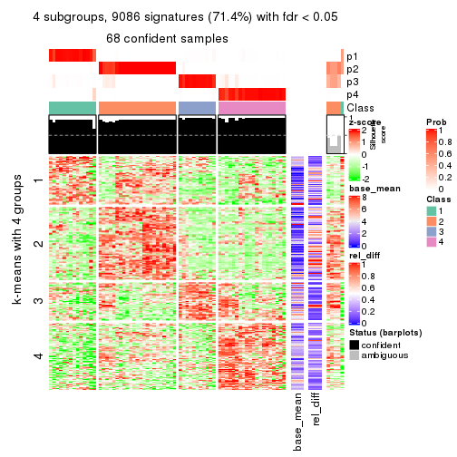
get_signatures(res, k = 5)
get_signatures(res, k = 6)
Signature heatmaps where rows are not scaled:
get_signatures(res, k = 2, scale_rows = FALSE)
get_signatures(res, k = 3, scale_rows = FALSE)
get_signatures(res, k = 4, scale_rows = FALSE)
get_signatures(res, k = 5, scale_rows = FALSE)
get_signatures(res, k = 6, scale_rows = FALSE)
Compare the overlap of signatures from different k:
compare_signatures(res)
get_signature() returns a data frame invisibly. TO get the list of signatures, the function
call should be assigned to a variable explicitly. In following code, if plot argument is set
to FALSE, no heatmap is plotted while only the differential analysis is performed.
# code only for demonstration
tb = get_signature(res, k = ..., plot = FALSE)
An example of the output of tb is:
#> which_row fdr mean_1 mean_2 scaled_mean_1 scaled_mean_2 km
#> 1 38 0.042760348 8.373488 9.131774 -0.5533452 0.5164555 1
#> 2 40 0.018707592 7.106213 8.469186 -0.6173731 0.5762149 1
#> 3 55 0.019134737 10.221463 11.207825 -0.6159697 0.5749050 1
#> 4 59 0.006059896 5.921854 7.869574 -0.6899429 0.6439467 1
#> 5 60 0.018055526 8.928898 10.211722 -0.6204761 0.5791110 1
#> 6 98 0.009384629 15.714769 14.887706 0.6635654 -0.6193277 2
...
The columns in tb are:
which_row: row indices corresponding to the input matrix.fdr: FDR for the differential test. mean_x: The mean value in group x.scaled_mean_x: The mean value in group x after rows are scaled.km: Row groups if k-means clustering is applied to rows.UMAP plot which shows how samples are separated.
dimension_reduction(res, k = 2, method = "UMAP")
dimension_reduction(res, k = 3, method = "UMAP")
dimension_reduction(res, k = 4, method = "UMAP")
dimension_reduction(res, k = 5, method = "UMAP")
dimension_reduction(res, k = 6, method = "UMAP")
Following heatmap shows how subgroups are split when increasing k:
collect_classes(res)
If matrix rows can be associated to genes, consider to use functional_enrichment(res,
...) to perform function enrichment for the signature genes. See this vignette for more detailed explanations.
sessionInfo()
#> R version 3.6.0 (2019-04-26)
#> Platform: x86_64-pc-linux-gnu (64-bit)
#> Running under: CentOS Linux 7 (Core)
#>
#> Matrix products: default
#> BLAS: /usr/lib64/libblas.so.3.4.2
#> LAPACK: /usr/lib64/liblapack.so.3.4.2
#>
#> locale:
#> [1] LC_CTYPE=en_GB.UTF-8 LC_NUMERIC=C LC_TIME=en_GB.UTF-8
#> [4] LC_COLLATE=en_GB.UTF-8 LC_MONETARY=en_GB.UTF-8 LC_MESSAGES=en_GB.UTF-8
#> [7] LC_PAPER=en_GB.UTF-8 LC_NAME=C LC_ADDRESS=C
#> [10] LC_TELEPHONE=C LC_MEASUREMENT=en_GB.UTF-8 LC_IDENTIFICATION=C
#>
#> attached base packages:
#> [1] grid stats graphics grDevices utils datasets methods base
#>
#> other attached packages:
#> [1] genefilter_1.66.0 ComplexHeatmap_2.3.1 markdown_1.1 knitr_1.26
#> [5] GetoptLong_0.1.7 cola_1.3.2
#>
#> loaded via a namespace (and not attached):
#> [1] circlize_0.4.8 shape_1.4.4 xfun_0.11 slam_0.1-46
#> [5] lattice_0.20-38 splines_3.6.0 colorspace_1.4-1 vctrs_0.2.0
#> [9] stats4_3.6.0 blob_1.2.0 XML_3.98-1.20 survival_2.44-1.1
#> [13] rlang_0.4.2 pillar_1.4.2 DBI_1.0.0 BiocGenerics_0.30.0
#> [17] bit64_0.9-7 RColorBrewer_1.1-2 matrixStats_0.55.0 stringr_1.4.0
#> [21] GlobalOptions_0.1.1 evaluate_0.14 memoise_1.1.0 Biobase_2.44.0
#> [25] IRanges_2.18.3 parallel_3.6.0 AnnotationDbi_1.46.1 highr_0.8
#> [29] Rcpp_1.0.3 xtable_1.8-4 backports_1.1.5 S4Vectors_0.22.1
#> [33] annotate_1.62.0 skmeans_0.2-11 bit_1.1-14 microbenchmark_1.4-7
#> [37] brew_1.0-6 impute_1.58.0 rjson_0.2.20 png_0.1-7
#> [41] digest_0.6.23 stringi_1.4.3 polyclip_1.10-0 clue_0.3-57
#> [45] tools_3.6.0 bitops_1.0-6 magrittr_1.5 eulerr_6.0.0
#> [49] RCurl_1.95-4.12 RSQLite_2.1.4 tibble_2.1.3 cluster_2.1.0
#> [53] crayon_1.3.4 pkgconfig_2.0.3 zeallot_0.1.0 Matrix_1.2-17
#> [57] xml2_1.2.2 httr_1.4.1 R6_2.4.1 mclust_5.4.5
#> [61] compiler_3.6.0